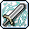
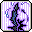

Warrior
Skill: Improved HP Recovery
[Master Level : 16] Recover additional HP every 10 sec. while standing still.
| Level | Description |
|---|---|
| 1 | Recover additional HP +3 |
| 2 | Recover additional HP +6 |
| 3 | Recover additional HP +9 |
| 4 | Recover additional HP +12 |
| 5 | Recover additional HP +15 |
| 6 | Recover additional HP +18 |
| 7 | Recover additional HP +21 |
| 8 | Recover additional HP +24 |
| 9 | Recover additional HP +27 |
| 10 | Recover additional HP +30 |
| 11 | Recover additional HP +33 |
| 12 | Recover additional HP +36 |
| 13 | Recover additional HP +39 |
| 14 | Recover additional HP +42 |
| 15 | Recover additional HP +45 |
| 16 | Recover additional HP +50 |
Skill: Improved MaxHP Increase
Master Level : 10] This skill boosts up the amount of increase on MaxHP after each Level UP, or AP used on MaxHP. Required Skill : At least Level 5 on Improving HP Recovery.
| Level | Description |
|---|---|
| 1 | If Level UP, +4 more; if AP applied, +3 more on top on MaxHP |
| 2 | If Level UP, +8 more; if AP applied, +6 more on top on MaxHP |
| 3 | If Level UP, +12 more; if AP applied, +9 more on top on MaxHP |
| 4 | If Level UP, +16 more; if AP applied, +12 more on top on MaxHP |
| 5 | If Level UP, +20 more; if AP applied, +15 more on top on MaxHP |
| 6 | If Level UP, +24 more; if AP applied, +18 more on top on MaxHP |
| 7 | If Level UP, +28 more; if AP applied, +21 more on top on MaxHP |
| 8 | If Level UP, +32 more; if AP applied, +24 more on top on MaxHP |
| 9 | If Level UP, +36 more; if AP applied, +27 more on top on MaxHP |
| 10 | If Level UP, +40 more; if AP applied, +30 more on top on MaxHP |
Skill: Endure
[Master Level : 8] Even when hanging on the rope or on a ladder, you'll be able to recover some HP after a certain amount of time. Required Skill : At least Level 3 on Improving MaxHP Increase.
| Level | Description |
|---|---|
| 1 | Recover HP every 31 sec. |
| 2 | Recover HP every 28 sec. |
| 3 | Recover HP every 25 sec. |
| 4 | Recover HP every 22 sec. |
| 5 | Recover HP every 19 sec. |
| 6 | Recover HP every 16 sec. |
| 7 | Recover HP every 13 sec. |
| 8 | Recover HP every 10 sec. |
Skill: Iron Body
[Master Level : 20] Temporarily increases your weapon defense. Required Skill : At least Level 3 on Endure
| Level | Description |
|---|---|
| 1 | MP -8; weapon def. +2 accuracy +12 for 30 sec. |
| 2 | MP -8; weapon def. +4 accuracy +14 for 60 sec. |
| 3 | MP -8; weapon def. +6 accuracy +16 for 90 sec. |
| 4 | MP -8; weapon def. +8 accuracy +18 for 120 sec. |
| 5 | MP -9; weapon def. +10 accuracy +20 for 150 sec. |
| 6 | MP -9; weapon def. +12 accuracy +22 for 180 sec. |
| 7 | MP -9; weapon def. +14 accuracy +24 for 210 sec. |
| 8 | MP -10; weapon def. +16 accuracy +26 for 240 sec. |
| 9 | MP -10; weapon def. +18 accuracy +28 for 270 sec. |
| 10 | MP -10; weapon def. +20 accuracy +30 for 300 sec. |
| 11 | MP -11; weapon def. +22 accuracy +32 for 330 sec. |
| 12 | MP -11; weapon def. +24 accuracy +34 for 360 sec. |
| 13 | MP -12; weapon def. +26 accuracy +36 for 390 sec. |
| 14 | MP -12; weapon def. +28 accuracy +38 for 420 sec. |
| 15 | MP -13; weapon def. +30 accuracy +40 for 450 sec. |
| 16 | MP -13; weapon def. +32 accuracy +42 for 480 sec. |
| 17 | MP -14; weapon def. +34 accuracy +44 for 510 sec. |
| 18 | MP -14; weapon def. +36 accuracy +46 for 540 sec. |
| 19 | MP -15; weapon def. +38 accuracy +48 for 570 sec. |
| 20 | MP -15; weapon def. +40 accuracy +50 for 600 sec. |
Skill: Power Strike
[Master Level : 20] Use MP to deliver a killer blow to the monsters with a sword.
| Level | Description |
|---|---|
| 1 | MP -4; sword damage 165% |
| 2 | MP -4; sword damage 170% |
| 3 | MP -4; sword damage 175% |
| 4 | MP -4; sword damage 180% |
| 5 | MP -5; sword damage 185% |
| 6 | MP -5; sword damage 190% |
| 7 | MP -5; sword damage 195% |
| 8 | MP -6; sword damage 200% |
| 9 | MP -6; sword damage 205% |
| 10 | MP -7; sword damage 210% |
| 11 | MP -7; sword damage 215% |
| 12 | MP -8; sword damage 220% |
| 13 | MP -8; sword damage 225% |
| 14 | MP -9; sword damage 230% |
| 15 | MP -9; sword damage 235% |
| 16 | MP -10; sword damage 240% |
| 17 | MP -10; sword damage 245% |
| 18 | MP -11; sword damage 250% |
| 19 | MP -11; sword damage 255% |
| 20 | MP -12; sword damage 260% |
Skill: Slash Blast
[Master Level : 20] Use HP and MP to attack every enemy around you with a sword. Required Skill : At least Level 1 on Power Strike
| Level | Description |
|---|---|
| 1 | HP -8, MP -6; damage 72% |
| 2 | HP -8, MP -6; damage 75% |
| 3 | HP -8, MP -6; damage 78% |
| 4 | HP -8, MP -6; damage 81% |
| 5 | HP -9, MP -7; damage 84% |
| 6 | HP -9, MP -7; damage 87% |
| 7 | HP -9, MP -7; damage 90% |
| 8 | HP -10, MP -8; damage 93% |
| 9 | HP -10, MP -8; damage 96% |
| 10 | HP -11, MP -9; damage 99% |
| 11 | HP -11, MP -9; damage 102% |
| 12 | HP -12, MP -10; damage 105% |
| 13 | HP -12, MP -10; damage 108% |
| 14 | HP -13, MP -11; damage 111% |
| 15 | HP -13, MP -11; damage 114% |
| 16 | HP -14, MP -12; damage 117% |
| 17 | HP -14, MP -12; damage 120% |
| 18 | HP -15, MP -13; damage 123% |
| 19 | HP -15, MP -13; damage 126% |
| 20 | HP -16, MP -14; damage 130% |
Fighter
Skill: Sword Mastery
[Master Level : 20] Increases the sword mastery and accuracy. It only applies when either a one-handed or a two-handed sword is in hand.
| Level | Description |
|---|---|
| 1 | Sword mastery 15%, accuracy +1 |
| 2 | Sword mastery 15%, accuracy +2 |
| 3 | Sword mastery 20%, accuracy +3 |
| 4 | Sword mastery 20%, accuracy +4 |
| 5 | Sword mastery 25%, accuracy +5 |
| 6 | Sword mastery 25%, accuracy +6 |
| 7 | Sword mastery 30%, accuracy +7 |
| 8 | Sword mastery 30%, accuracy +8 |
| 9 | Sword mastery 35%, accuracy +9 |
| 10 | Sword mastery 35%, accuracy +10 |
| 11 | Sword mastery 40%, accuracy +11 |
| 12 | Sword mastery 40%, accuracy +12 |
| 13 | Sword mastery 45%, accuracy +13 |
| 14 | Sword mastery 45%, accuracy +14 |
| 15 | Sword mastery 50%, accuracy +15 |
| 16 | Sword mastery 50%, accuracy +16 |
| 17 | Sword mastery 55%, accuracy +17 |
| 18 | Sword mastery 55%, accuracy +18 |
| 19 | Sword mastery 60%, accuracy +19 |
| 20 | Sword mastery 60%, accuracy +20 |
Skill: Axe Mastery
[Master Level : 20] Increases the axe mastery and accuracy. It only applies when either a one-handed or a two-handed axe is in hand.
| Level | Description |
|---|---|
| 1 | Axe mastery +15%, accuracy +1 |
| 2 | Axe mastery +15%, accuracy +2 |
| 3 | Axe mastery +20%, accuracy +3 |
| 4 | Axe mastery +20%, accuracy +4 |
| 5 | Axe mastery +25%, accuracy +5 |
| 6 | Axe mastery +25%, accuracy +6 |
| 7 | Axe mastery +30%, accuracy +7 |
| 8 | Axe mastery +30%, accuracy +8 |
| 9 | Axe mastery +35%, accuracy +9 |
| 10 | Axe mastery +35%, accuracy +10 |
| 11 | Axe mastery +40%, accuracy +11 |
| 12 | Axe mastery +40%, accuracy +12 |
| 13 | Axe mastery +45%, accuracy +13 |
| 14 | Axe mastery +45%, accuracy +14 |
| 15 | Axe mastery +50%, accuracy +15 |
| 16 | Axe mastery +50%, accuracy +16 |
| 17 | Axe mastery +55%, accuracy +17 |
| 18 | Axe mastery +55%, accuracy +18 |
| 19 | Axe mastery +60%, accuracy +19 |
| 20 | Axe mastery +60%, accuracy +20 |
 Skill: Final Attack : Sword
Skill: Final Attack : Sword
[Master Level : 30] Strikes an another, far deadlier blow following the initial attack with a given success rate. It works only when holding a one-hand or two-hand sword. Required Skill : At least Level 3 on Sword Mastery
| Level | Description |
|---|---|
| 1 | 2% Success rate, final attack with sword damage 105% |
| 2 | 4% Success rate, final attack with sword damage 110% |
| 3 | 6% Success rate, final attack with sword damage 115% |
| 4 | 8% Success rate, final attack with sword damage 120% |
| 5 | 10% Success rate, final attack with sword damage 125% |
| 6 | 12% Success rate, final attack with sword damage 130% |
| 7 | 14% Success rate, final attack with sword damage 135% |
| 8 | 16% Success rate, final attack with sword damage 140% |
| 9 | 18% Success rate, final attack with sword damage 145% |
| 10 | 20% Success rate, final attack with sword damage 150% |
| 11 | 22% Success rate, final attack with sword damage 155% |
| 12 | 24% Success rate, final attack with sword damage 160% |
| 13 | 26% Success rate, final attack with sword damage 165% |
| 14 | 28% Success rate, final attack with sword damage 170% |
| 15 | 30% Success rate, final attack with sword damage 175% |
| 16 | 32% Success rate, final attack with sword damage 180% |
| 17 | 34% Success rate, final attack with sword damage 185% |
| 18 | 36% Success rate, final attack with sword damage 190% |
| 19 | 38% Success rate, final attack with sword damage 195% |
| 20 | 40% Success rate, final attack with sword damage 200% |
| 21 | 42% Success rate, final attack with sword damage 205% |
| 22 | 44% Success rate, final attack with sword damage 210% |
| 23 | 46% Success rate, final attack with sword damage 215% |
| 24 | 48% Success rate, final attack with sword damage 220% |
| 25 | 50% Success rate, final attack with sword damage 225% |
| 26 | 52% Success rate, final attack with sword damage 230% |
| 27 | 54% Success rate, final attack with sword damage 235% |
| 28 | 56% Success rate, final attack with sword damage 240% |
| 29 | 58% Success rate, final attack with sword damage 245% |
| 30 | 60% Success rate, final attack with sword damage 250% |
Skill: Final Attack : Axe
[Master Level : 30] Strikes an another, far deadlier blow following the initial attack with a given success rate. It works only when holding a one-hand or two-hand axe. Required Skill : At least Level 3 on Axe Mastery
| Level | Description |
|---|---|
| 1 | 2% Success rate, final attack with axe damage 105% |
| 2 | 4% Success rate, final attack with axe damage 110% |
| 3 | 6% Success rate, final attack with axe damage 115% |
| 4 | 8% Success rate, final attack with axe damage 120% |
| 5 | 10% Success rate, final attack with axe damage 125% |
| 6 | 12% Success rate, final attack with axe damage 130% |
| 7 | 14% Success rate, final attack with axe damage 135% |
| 8 | 16% Success rate, final attack with axe damage 140% |
| 9 | 18% Success rate, final attack with axe damage 145% |
| 10 | 20% Success rate, final attack with axe damage 150% |
| 11 | 22% Success rate, final attack with axe damage 155% |
| 12 | 24% Success rate, final attack with axe damage 160% |
| 13 | 26% Success rate, final attack with axe damage 165% |
| 14 | 28% Success rate, final attack with axe damage 170% |
| 15 | 30% Success rate, final attack with axe damage 175% |
| 16 | 32% Success rate, final attack with axe damage 180% |
| 17 | 34% Success rate, final attack with axe damage 185% |
| 18 | 36% Success rate, final attack with axe damage 190% |
| 19 | 38% Success rate, final attack with axe damage 195% |
| 20 | 40% Success rate, final attack with axe damage 200% |
| 21 | 42% Success rate, final attack with axe damage 205% |
| 22 | 44% Success rate, final attack with axe damage 210% |
| 23 | 46% Success rate, final attack with axe damage 215% |
| 24 | 48% Success rate, final attack with axe damage 220% |
| 25 | 50% Success rate, final attack with axe damage 225% |
| 26 | 52% Success rate, final attack with axe damage 230% |
| 27 | 54% Success rate, final attack with axe damage 235% |
| 28 | 56% Success rate, final attack with axe damage 240% |
| 29 | 58% Success rate, final attack with axe damage 245% |
| 30 | 60% Success rate, final attack with axe damage 250% |
Skill: Sword Booster
[Master level: 20] Uses HP and MP to temporarily boost up the attacking speed of the equipped sword. It only applies when either a one-handed or a two-handed sword is in hand. Required Skill : At least Level 5 on Sword Mastery
| Level | Description |
|---|---|
| 1 | HP -29, MP -29; increase in sword speed for 30 sec. |
| 2 | HP -28, MP -28; increase in sword speed for 60 sec. |
| 3 | HP -27, MP -27; increase in sword speed for 90 sec. |
| 4 | HP -26, MP -26; increase in sword speed for 120 sec. |
| 5 | HP -25, MP -25; increase in sword speed for 150 sec. |
| 6 | HP -24, MP -24; increase in sword speed for 180 sec. |
| 7 | HP -23, MP -23; increase in sword speed for 210 sec. |
| 8 | HP -22, MP -22; increase in sword speed for 240 sec. |
| 9 | HP -21, MP -21; increase in sword speed for 270 sec. |
| 10 | HP -20, MP -20; increase in sword speed for 300 sec. |
| 11 | HP -19, MP -19; increase in sword speed for 330 sec. |
| 12 | HP -18, MP -18; increase in sword speed for 360 sec. |
| 13 | HP -17, MP -17; increase in sword speed for 390 sec. |
| 14 | HP -16, MP -16; increase in sword speed for 420 sec. |
| 15 | HP -15, MP -15; increase in sword speed for 450 sec. |
| 16 | HP -14, MP -14; increase in sword speed for 480 sec. |
| 17 | HP -13, MP -13; increase in sword speed for 510 sec. |
| 18 | HP -12, MP -12; increase in sword speed for 540 sec. |
| 19 | HP -11, MP -11; increase in sword speed for 570 sec. |
| 20 | HP -10, MP -10; increase in sword speed for 600 sec. |
Skill: Axe Booster
[Master level: 20] Uses HP and MP to temporarily boost up the attacking speed of the equipped axe. It only applies when either a one-handed or a two-handed axe is in hand. Required Skill : At least Level 5 on Axe Mastery
| Level | Description |
|---|---|
| 1 | HP -29, MP -29; increase in axe speed for 30 sec. |
| 2 | HP -28, MP -28; increase in axe speed for 60 sec. |
| 3 | HP -27, MP -27; increase in axe speed for 90 sec. |
| 4 | HP -26, MP -26; increase in axe speed for 120 sec. |
| 5 | HP -25, MP -25; increase in axe speed for 150 sec. |
| 6 | HP -24, MP -24; increase in axe speed for 180 sec. |
| 7 | HP -23, MP -23; increase in axe speed for 210 sec. |
| 8 | HP -22, MP -22; increase in axe speed for 240 sec. |
| 9 | HP -21, MP -21; increase in axe speed for 270 sec. |
| 10 | HP -20, MP -20; increase in axe speed for 300 sec. |
| 11 | HP -19, MP -19; increase in axe speed for 330 sec. |
| 12 | HP -18, MP -18; increase in axe speed for 360 sec. |
| 13 | HP -17, MP -17; increase in axe speed for 390 sec. |
| 14 | HP -16, MP -16; increase in axe speed for 420 sec. |
| 15 | HP -15, MP -15; increase in axe speed for 450 sec. |
| 16 | HP -14, MP -14; increase in axe speed for 480 sec. |
| 17 | HP -13, MP -13; increase in axe speed for 510 sec. |
| 18 | HP -12, MP -12; increase in axe speed for 540 sec. |
| 19 | HP -11, MP -11; increase in axe speed for 570 sec. |
| 20 | HP -10, MP -10; increase in axe speed for 600 sec. |
Skill: Rage
[Master level: 20] Temporarily boosts the weapon attack level of everyone in the party around the area, but also decreases the level of physical defense. Stacks with weapon attack buffs if Rage is less than buff it's stacking with.
| Level | Description |
|---|---|
| 1 | MP -12; Weapon attack +6, weapon def. -3 for 30 seconds |
| 2 | MP -12; Weapon attack +7, weapon def. -3 for 60 seconds |
| 3 | MP -12; Weapon attack +8, weapon def. -4 for 90 seconds |
| 4 | MP -12; Weapon attack +9, weapon def. -5 for 120 seconds |
| 5 | MP -12; Weapon attack +10, weapon def. -5 for 150 seconds |
| 6 | MP -12; Weapon attack +11, weapon def. -5 for 180 seconds |
| 7 | MP -12; Weapon attack +12, weapon def. -6 for 210 seconds |
| 8 | MP -12; Weapon attack +13, weapon def. -6 for 240 seconds |
| 9 | MP -12; Weapon attack +14, weapon def. -7 for 270 seconds |
| 10 | MP -12; Weapon attack +15, weapon def. -7 for 300 seconds |
| 11 | MP -20; Weapon attack +16, weapon def. -8 for 330 seconds |
| 12 | MP -20; Weapon attack +17, weapon def. -8 for 360 seconds |
| 13 | MP -20; Weapon attack +18, weapon def. -9 for 390 seconds |
| 14 | MP -20; Weapon attack +19, weapon def. -9 for 420 seconds |
| 15 | MP -20; Weapon attack +20, weapon def. -10 for 450 seconds |
| 16 | MP -20; Weapon attack +21, weapon def. -10 for 480 seconds |
| 17 | MP -20; Weapon attack +22, weapon def. -11 for 510 seconds |
| 18 | MP -20; Weapon attack +23, weapon def. -11 for 540 seconds |
| 19 | MP -20; Weapon attack +24, weapon def. -12 for 570 seconds |
| 20 | MP -20; Weapon attack +25, weapon def. -12 for 600 seconds |
Skill: Power Guard
[Master level: 30] Returns a portion of the damage received from the enemy. Can't return more than 10% of the enemy's Max HP at once, however. Required Skill : At least Level 3 on Rage
| Level | Description |
|---|---|
| 1 | MP -15; for 20 sec., return 11% of the damage received. |
| 2 | MP -15; for 40 sec., return 12% of the damage received. |
| 3 | MP -15; for 60 sec., return 13% of the damage received. |
| 4 | MP -15; for 80 sec., return 14% of the damage received. |
| 5 | MP -15; for 100 sec., return 15% of the damage received. |
| 6 | MP -15; for 120 sec., return 16% of the damage received. |
| 7 | MP -15; for 140 sec., return 17% of the damage received. |
| 8 | MP -15; for 160 sec., return 18% of the damage received. |
| 9 | MP -15; for 180 sec., return 19% of the damage received. |
| 10 | MP -15; for 200 sec., return 20% of the damage received. |
| 11 | MP -15; for 220 sec., return 21% of the damage received. |
| 12 | MP -15; for 240 sec., return 22% of the damage received. |
| 13 | MP -15; for 260 sec., return 23% of the damage received. |
| 14 | MP -15; for 280 sec., return 24% of the damage received. |
| 15 | MP -15; for 300 sec., return 25% of the damage received. |
| 16 | MP -30; for 320 sec., return 26% of the damage received. |
| 17 | MP -30; for 340 sec., return 27% of the damage received. |
| 18 | MP -30; for 360 sec., return 28% of the damage received. |
| 19 | MP -30; for 380 sec., return 29% of the damage received. |
| 20 | MP -30; for 400 sec., return 30% of the damage received. |
| 21 | MP -30; for 420 sec., return 31% of the damage received. |
| 22 | MP -30; for 440 sec., return 32% of the damage received. |
| 23 | MP -30; for 460 sec., return 33% of the damage received. |
| 24 | MP -30; for 480 sec., return 34% of the damage received. |
| 25 | MP -30; for 500 sec., return 35% of the damage received. |
| 26 | MP -30; for 520 sec., return 36% of the damage received. |
| 27 | MP -30; for 540 sec., return 37% of the damage received. |
| 28 | MP -30; for 560 sec., return 38% of the damage received. |
| 29 | MP -30; for 580 sec., return 39% of the damage received. |
| 30 | MP -30; for 600 sec., return 40% of the damage received. |
Crusader
Skill: Improving MP Recovery
[Master Level : 20] Recovers MP at a faster rate than the norm every 10 seconds by standing still.
| Level | Description |
|---|---|
| 1 | Constant additional recovery of MP +2 |
| 2 | Constant additional recovery of MP +4 |
| 3 | Constant additional recovery of MP +6 |
| 4 | Constant additional recovery of MP +8 |
| 5 | Constant additional recovery of MP +10 |
| 6 | Constant additional recovery of MP +12 |
| 7 | Constant additional recovery of MP +14 |
| 8 | Constant additional recovery of MP +16 |
| 9 | Constant additional recovery of MP +18 |
| 10 | Constant additional recovery of MP +20 |
| 11 | Constant additional recovery of MP +21 |
| 12 | Constant additional recovery of MP +22 |
| 13 | Constant additional recovery of MP +23 |
| 14 | Constant additional recovery of MP +24 |
| 15 | Constant additional recovery of MP +25 |
| 16 | Constant additional recovery of MP +26 |
| 17 | Constant additional recovery of MP +27 |
| 18 | Constant additional recovery of MP +28 |
| 19 | Constant additional recovery of MP +29 |
| 20 | Constant additional recovery of MP +30 |
Skill: Shield Mastery
[Master Level : 20] Increases shield defense. However, it does not affect if the character does not equip the shield.
| Level | Description |
|---|---|
| 1 | 5% Increased Shield Defense |
| 2 | 10% Increased Shield Defense |
| 3 | 15% Increased Shield Defense |
| 4 | 20% Increased Shield Defense |
| 5 | 25% Increased Shield Defense |
| 6 | 30% Increased Shield Defense |
| 7 | 35% Increased Shield Defense |
| 8 | 40% Increased Shield Defense |
| 9 | 45% Increased Shield Defense |
| 10 | 50% Increased Shield Defense |
| 11 | 55% Increased Shield Defense |
| 12 | 60% Increased Shield Defense |
| 13 | 65% Increased Shield Defense |
| 14 | 70% Increased Shield Defense |
| 15 | 75% Increased Shield Defense |
| 16 | 80% Increased Shield Defense |
| 17 | 85% Increased Shield Defense |
| 18 | 90% Increased Shield Defense |
| 19 | 95% Increased Shield Defense |
| 20 | 100% Increased Shield Defense |
Skill: Combo Attack
[Master Level : 30] Attacks will generate Combo Orbs that orbit your character. The combo counter can be used to strike a deadly blow to the monster.
| Level | Description |
|---|---|
| 1 | -25 MP for 20 seconds, Damage 100%, max combo counter 3 |
| 2 | -25 MP for 40 seconds, Damage 104%, max combo counter 3 |
| 3 | -25 MP for 60 seconds, Damage 105%, max combo counter 3 |
| 4 | -25 MP for 80 seconds, Damage 106%, max combo counter 3 |
| 5 | -25 MP for 100 seconds, Damage 107%, max combo counter 3 |
| 6 | -25 MP for 120 seconds, Damage 108%, max combo counter 3 |
| 7 | -25 MP for 140 seconds, Damage 109%, max combo counter 3 |
| 8 | -25 MP for 160 seconds, Damage 110%, max combo counter 3 |
| 9 | -25 MP for 180 seconds, Damage 111%, max combo counter 3 |
| 10 | -25 MP for 200 seconds, Damage 111%, max combo counter 3 |
| 11 | -30 MP for 220 seconds, Damage 112%, max combo counter 4 |
| 12 | -30 MP for 240 seconds, Damage 112%, max combo counter 4 |
| 13 | -30 MP for 260 seconds, Damage 113%, max combo counter 4 |
| 14 | -30 MP for 280 seconds, Damage 113%, max combo counter 4 |
| 15 | -30 MP for 300 seconds, Damage 114%, max combo counter 4 |
| 16 | -30 MP for 320 seconds, Damage 114%, max combo counter 4 |
| 17 | -30 MP for 340 seconds, Damage 115%, max combo counter 4 |
| 18 | -30 MP for 360 seconds, Damage 115%, max combo counter 4 |
| 19 | -30 MP for 380 seconds, Damage 116%, max combo counter 4 |
| 20 | -30 MP for 400 seconds, Damage 116%, max combo counter 4 |
| 21 | -35 MP for 420 seconds, Damage 117%, max combo counter 5 |
| 22 | -35 MP for 440 seconds, Damage 117%, max combo counter 5 |
| 23 | -35 MP for 460 seconds, Damage 117%, max combo counter 5 |
| 24 | -35 MP for 480 seconds, Damage 118%, max combo counter 5 |
| 25 | -35 MP for 500 seconds, Damage 118%, max combo counter 5 |
| 26 | -35 MP for 520 seconds, Damage 118%, max combo counter 5 |
| 27 | -35 MP for 540 seconds, Damage 119%, max combo counter 5 |
| 28 | -35 MP for 560 seconds, Damage 119%, max combo counter 5 |
| 29 | -35 MP for 580 seconds, Damage 119%, max combo counter 5 |
| 30 | -35 MP for 600 seconds, Damage 120%, max combo counter 5 |
Skill: Panic : Sword
[Master Level : 30] Attack a single monster using dark powers. This skill can only be used when equipped with a sword and the combo all charged up. Required Skill : At least Level 1 on Combo Attack
| Level | Description |
|---|---|
| 1 | Use 10 MP, Damage 150%, Attack with Dark Power 32% |
| 2 | Use 10 MP, Damage 171%, Attack with Dark Power 34% |
| 3 | Use 10 MP, Damage 184%, Attack with Dark Power 36% |
| 4 | Use 10 MP, Damage 194%, Attack with Dark Power 38% |
| 5 | Use 10 MP, Damage 203%, Attack with Dark Power 40% |
| 6 | Use 10 MP, Damage 212%, Attack with Dark Power 42% |
| 7 | Use 10 MP, Damage 220%, Attack with Dark Power 44% |
| 8 | Use 10 MP, Damage 228%, Attack with Dark Power 46% |
| 9 | Use 10 MP, Damage 235%, Attack with Dark Power 48% |
| 10 | Use 10 MP, Damage 242%, Attack with Dark Power 50% |
| 11 | Use 17 MP, Damage 248%, Attack with Dark Power 52% |
| 12 | Use 17 MP, Damage 255%, Attack with Dark Power 54% |
| 13 | Use 17 MP, Damage 261%, Attack with Dark Power 54% |
| 14 | Use 17 MP, Damage 267%, Attack with Dark Power 58% |
| 15 | Use 17 MP, Damage 273%, Attack with Dark Power 60% |
| 16 | Use 17 MP, Damage 279%, Attack with Dark Power 62% |
| 17 | Use 17 MP, Damage 285%, Attack with Dark Power 64% |
| 18 | Use 17 MP, Damage 290%, Attack with Dark Power 66% |
| 19 | Use 17 MP, Damage 296%, Attack with Dark Power 68% |
| 20 | Use 17 MP, Damage 301%, Attack with Dark Power 70% |
| 21 | Use 24 MP, Damage 306%, Attack with Dark Power 72% |
| 22 | Use 24 MP, Damage 311%, Attack with Dark Power 74% |
| 23 | Use 24 MP, Damage 316%, Attack with Dark Power 76% |
| 24 | Use 24 MP, Damage 321%, Attack with Dark Power 78% |
| 25 | Use 24 MP, Damage 326%, Attack with Dark Power 80% |
| 26 | Use 24 MP, Damage 331%, Attack with Dark Power 82% |
| 27 | Use 24 MP, Damage 336%, Attack with Dark Power 84% |
| 28 | Use 24 MP, Damage 341%, Attack with Dark Power 86% |
| 29 | Use 24 MP, Damage 345%, Attack with Dark Power 88% |
| 30 | Use 24 MP, Damage 350%, Attack with Dark Power 90% |
Skill: Panic : Axe
[Master Level : 30] Attack a single monster using dark powers. This skill can only be used when equipped with an axe and the combo all charged up. Required Skill : At least Level 1 on Combo Attack
| Level | Description |
|---|---|
| 1 | Use 10 MP, Damage 150%, Attack with Dark Power 32% |
| 2 | Use 10 MP, Damage 171%, Attack with Dark Power 34% |
| 3 | Use 10 MP, Damage 184%, Attack with Dark Power 36% |
| 4 | Use 10 MP, Damage 164%, Attack with Dark Power 38% |
| 5 | Use 10 MP, Damage 203%, Attack with Dark Power 40% |
| 6 | Use 10 MP, Damage 212%, Attack with Dark Power 42% |
| 7 | Use 10 MP, Damage 220%, Attack with Dark Power 44% |
| 8 | Use 10 MP, Damage 228%, Attack with Dark Power 46% |
| 9 | Use 10 MP, Damage 235%, Attack with Dark Power 48% |
| 10 | Use 10 MP, Damage 242%, Attack with Dark Power 50% |
| 11 | Use 17 MP, Damage 248%, Attack with Dark Power 52% |
| 12 | Use 17 MP, Damage 255%, Attack with Dark Power 54% |
| 13 | Use 17 MP, Damage 261%, Attack with Dark Power 54% |
| 14 | Use 17 MP, Damage 267%, Attack with Dark Power 58% |
| 15 | Use 17 MP, Damage 273%, Attack with Dark Power 60% |
| 16 | Use 17 MP, Damage 279%, Attack with Dark Power 62% |
| 17 | Use 17 MP, Damage 285%, Attack with Dark Power 64% |
| 18 | Use 17 MP, Damage 290%, Attack with Dark Power 66% |
| 19 | Use 17 MP, Damage 296%, Attack with Dark Power 68% |
| 20 | Use 17 MP, Damage 301%, Attack with Dark Power 70% |
| 21 | Use 24 MP, Damage 306%, Attack with Dark Power 72% |
| 22 | Use 24 MP, Damage 311%, Attack with Dark Power 74% |
| 23 | Use 24 MP, Damage 316%, Attack with Dark Power 76% |
| 24 | Use 24 MP, Damage 321%, Attack with Dark Power 78% |
| 25 | Use 24 MP, Damage 326%, Attack with Dark Power 80% |
| 26 | Use 24 MP, Damage 331%, Attack with Dark Power 82% |
| 27 | Use 24 MP, Damage 336%, Attack with Dark Power 84% |
| 28 | Use 24 MP, Damage 341%, Attack with Dark Power 86% |
| 29 | Use 24 MP, Damage 345%, Attack with Dark Power 88% |
| 30 | Use 24 MP, Damage 350%, Attack with Dark Power 90% |
Skill: Coma: Sword
[Master Level : 30] If struck cleanly, the monster becomes panicked. This skill can only be used when equipped with a sword and the combo all charged up. Required Skill : At least Level 1 on Combo Attack
| Level | Description |
|---|---|
| 1 | Use 15 HP, 12 MP, Damage 84%, Stun Attack 32% |
| 2 | Use 15 HP, 12 MP, Damage 88%, Stun Attack 34% |
| 3 | Use 15 HP, 12 MP, Damage 92%, Stun Attack 36% |
| 4 | Use 15 HP, 12 MP, Damage 96%, Stun Attack 38% |
| 5 | Use 15 HP, 12 MP, Damage 100%, Stun Attack 40% |
| 6 | Use 15 HP, 12 MP, Damage 104%, Stun Attack 42% |
| 7 | Use 15 HP, 12 MP, Damage 108%, Stun Attack 44% |
| 8 | Use 15 HP, 12 MP, Damage 112%, Stun Attack 46% |
| 9 | Use 15 HP, 12 MP, Damage 116%, Stun Attack 48% |
| 10 | Use 15 HP, 12 MP, Damage 120%, Stun Attack 50% |
| 11 | Use 20 HP, 19 MP, Damage 124%, Stun Attack 52% |
| 12 | Use 20 HP, 19 MP, Damage 128%, Stun Attack 54% |
| 13 | Use 20 HP, 19 MP, Damage 132%, Stun Attack 56% |
| 14 | Use 20 HP, 19 MP, Damage 136%, Stun Attack 58% |
| 15 | Use 20 HP, 19 MP, Damage 140%, Stun Attack 60% |
| 16 | Use 20 HP, 19 MP, Damage 144%, Stun Attack 62% |
| 17 | Use 20 HP, 19 MP, Damage 148%, Stun Attack 64% |
| 18 | Use 20 HP, 19 MP, Damage 152%, Stun Attack 66% |
| 19 | Use 20 HP, 19 MP, Damage 156%, Stun Attack 68% |
| 20 | Use 20 HP, 19 MP, Damage 160%, Stun Attack 70% |
| 21 | Use 25 HP, 26 MP, Damage 164%, Stun Attack 72% |
| 22 | Use 25 HP, 26 MP, Damage 168%, Stun Attack 74% |
| 23 | Use 25 HP, 26 MP, Damage 172%, Stun Attack 76% |
| 24 | Use 25 HP, 26 MP, Damage 176%, Stun Attack 78% |
| 25 | Use 25 HP, 26 MP, Damage 180%, Stun Attack 80% |
| 26 | Use 25 HP, 26 MP, Damage 184%, Stun Attack 82% |
| 27 | Use 25 HP, 26 MP, Damage 188%, Stun Attack 84% |
| 28 | Use 25 HP, 26 MP, Damage 192%, Stun Attack 86% |
| 29 | Use 25 HP, 26 MP, Damage 196%, Stun Attack 88% |
| 30 | Use 25 HP, 26 MP, Damage 200%, Stun Attack 90% |
Skill: Coma: Axe
[Master Level : 30] If struck cleanly, the monster becomes panicked. This skill can only be used when equipped with an axe and the combo all charged up. Required Skill : At least Level 1 on Combo Attack
| Level | Description |
|---|---|
| 1 | Use 15 HP, 12 MP, Damage 84%, Stun Attack 32% |
| 2 | Use 15 HP, 12 MP, Damage 88%, Stun Attack 34% |
| 3 | Use 15 HP, 12 MP, Damage 92%, Stun Attack 36% |
| 4 | Use 15 HP, 12 MP, Damage 96%, Stun Attack 38% |
| 5 | Use 15 HP, 12 MP, Damage 100%, Stun Attack 40% |
| 6 | Use 15 HP, 12 MP, Damage 104%, Stun Attack 42% |
| 7 | Use 15 HP, 12 MP, Damage 108%, Stun Attack 44% |
| 8 | Use 15 HP, 12 MP, Damage 112%, Stun Attack 46% |
| 9 | Use 15 HP, 12 MP, Damage 116%, Stun Attack 48% |
| 10 | Use 15 HP, 12 MP, Damage 120%, Stun Attack 50% |
| 11 | Use 20 HP, 19 MP, Damage 124%, Stun Attack 52% |
| 12 | Use 20 HP, 19 MP, Damage 128%, Stun Attack 54% |
| 13 | Use 20 HP, 19 MP, Damage 132%, Stun Attack 56% |
| 14 | Use 20 HP, 19 MP, Damage 136%, Stun Attack 58% |
| 15 | Use 20 HP, 19 MP, Damage 140%, Stun Attack 60% |
| 16 | Use 20 HP, 19 MP, Damage 144%, Stun Attack 62% |
| 17 | Use 20 HP, 19 MP, Damage 148%, Stun Attack 64% |
| 18 | Use 20 HP, 19 MP, Damage 152%, Stun Attack 66% |
| 19 | Use 20 HP, 19 MP, Damage 156%, Stun Attack 68% |
| 20 | Use 20 HP, 19 MP, Damage 160%, Stun Attack 70% |
| 21 | Use 25 HP, 26 MP, Damage 164%, Stun Attack 72% |
| 22 | Use 25 HP, 26 MP, Damage 168%, Stun Attack 74% |
| 23 | Use 25 HP, 26 MP, Damage 172%, Stun Attack 76% |
| 24 | Use 25 HP, 26 MP, Damage 176%, Stun Attack 78% |
| 25 | Use 25 HP, 26 MP, Damage 180%, Stun Attack 80% |
| 26 | Use 25 HP, 26 MP, Damage 184%, Stun Attack 82% |
| 27 | Use 25 HP, 26 MP, Damage 188%, Stun Attack 84% |
| 28 | Use 25 HP, 26 MP, Damage 192%, Stun Attack 86% |
| 29 | Use 25 HP, 26 MP, Damage 196%, Stun Attack 88% |
| 30 | Use 25 HP, 26 MP, Damage 200%, Stun Attack 90% |
Skill: Armor Crash
[Master Level : 20] Nullifies all armor buffs used by the monster with a given success rate. Required Skill : At least Level 3 on Shout
| Level | Description |
|---|---|
| 1 | Use 35 MP, 24% to cancel armor buff |
| 2 | Use 33 MP, 28% to cancel armor buff |
| 3 | Use 31 MP, 32% to cancel armor buff |
| 4 | Use 29 MP, 36% to cancel armor buff |
| 5 | Use 27 MP, 40% to cancel armor buff |
| 6 | Use 25 MP, 44% to cancel armor buff |
| 7 | Use 23 MP, 48% to cancel armor buff |
| 8 | Use 21 MP, 52% to cancel armor buff |
| 9 | Use 19 MP, 56% to cancel armor buff |
| 10 | Use 17 MP, 60% cancel armor buff |
| 11 | Use 16 MP, 64% cancel armor buff |
| 12 | Use 15 MP, 68% cancel armor buff |
| 13 | Use 14 MP, 72% cancel armor buff |
| 14 | Use 13 MP, 76% cancel armor buff |
| 15 | Use 12 MP, 80% cancel armor buff |
| 16 | Use 11 MP, 84% cancel armor buff |
| 17 | Use 10 MP, 88% cancel armor buff |
| 18 | Use 9 MP, 92% cancel armor buff |
| 19 | Use 8 MP, 96% cancel armor buff |
| 20 | Use 7 MP, 100% cancel armor buff |
Skill: Shout
[Master Level : 30] Temporarily stuns up to 6 monsters nearby with damage.
| Level | Description |
|---|---|
| 1 | Use 8 MP, Damage 11%, Attack Range 110%, 52% Stun for 5 Sec |
| 2 | Use 8 MP, Damage 12%, Attack Range 110%, 54% Stun for 5 Sec |
| 3 | Use 8 MP, Damage 13%, Attack Range 110%, 56% Stun for 5 Sec |
| 4 | Use 8 MP, Damage 14%, Attack Range 120%, 58% Stun for 5 Sec |
| 5 | Use 8 MP, Damage 15%, Attack Range 120%, 60% Stun for 5 Sec |
| 6 | Use 8 MP, Damage 16%, Attack Range 120%, 62% Stun for 6 Sec |
| 7 | Use 8 MP, Damage 17%, Attack Range 130%, 64% Stun for 6 Sec |
| 8 | Use 8 MP, Damage 18%, Attack Range 130%, 66% Stun for 6 Sec |
| 9 | Use 8 MP, Damage 19%, Attack Range 130%, 68% Stun for 6 Sec |
| 10 | Use 8 MP, Damage 20%, Attack Range 140%, 70% Stun for 6 Sec |
| 11 | Use 12 MP, Damage 20%, Attack Range 140%, 72% Stun for 7 Sec |
| 12 | Use 12 MP, Damage 21%, Attack Range 140%, 74% Stun for 7 Sec |
| 13 | Use 12 MP, Damage 21%, Attack Range 150%, 76% Stun for 7 Sec |
| 14 | Use 12 MP, Damage 22%, Attack Range 150%, 78% Stun for 7 Sec |
| 15 | Use 12 MP, Damage 22%, Attack Range 150%, 80% Stun for 7 Sec |
| 16 | Use 12 MP, Damage 23%, Attack Range 160%, 81% Stun for 8 Sec |
| 17 | Use 12 MP, Damage 23%, Attack Range 160%, 82% Stun for 8 Sec |
| 18 | Use 12 MP, Damage 24%, Attack Range 160%, 83% Stun for 8 Sec |
| 19 | Use 12 MP, Damage 24%, Attack Range 170%, 84% Stun for 8 Sec |
| 20 | Use 12 MP, Damage 25%, Attack Range 170%, 85% Stun for 8 Sec |
| 21 | Use 16 MP, Damage 25%, Attack Range 170%, 86% Stun for 9 Sec |
| 22 | Use 16 MP, Damage 26%, Attack Range 180%, 87% Stun for 9 Sec |
| 23 | Use 16 MP, Damage 26%, Attack Range 180%, 88% Stun for 9 Sec |
| 24 | Use 16 MP, Damage 27%, Attack Range 180%, 89% Stun for 9 Sec |
| 25 | Use 16 MP, Damage 27%, Attack Range 190%, 90% Stun for 9 Sec |
| 26 | Use 16 MP, Damage 28%, Attack Range 190%, 91% Stun for 10 Sec |
| 27 | Use 16 MP, Damage 28%, Attack Range 190%, 92% Stun for 10 Sec |
| 28 | Use 16 MP, Damage 29%, Attack Range 200%, 93% Stun for 10 Sec |
| 29 | Use 16 MP, Damage 29%, Attack Range 200%, 94% Stun for 10 Sec |
| 30 | Use 16 MP, Damage 30%, Attack Range 200%, 95% Stun for 10 Sec |
Hero
Skill: Advanced Combo Attack
By maximizing the potential of the combo attack, it enables one to charge up the combo counter up to 10, and with a given success rate, the combo counter gets charged twice as fast. The Skill can only be obtained by fully mastered Combo Attack. Required skill : Combo attack level 30
| Level | Description |
|---|---|
| 1 | Damage + 1% , Max Combo counter 1 , Recharge 2 combo counter with success rate 31%. |
| 2 | Damage + 2% , Max Combo counter 1 , Recharge 2 combo counter with success rate 32%. |
| 3 | Damage + 3% , Max Combo counter 1 , Recharge 2 combo counter with success rate 33%. |
| 4 | Damage + 4% , Max Combo counter 1 , Recharge 2 combo counter with success rate 34%. |
| 5 | Damage + 5% , Max Combo counter 1 , Recharge 2 combo counter with success rate 35%. |
| 6 | Damage + 6% , Max Combo counter 1 , Recharge 2 combo counter with success rate 36%. |
| 7 | Damage + 7% , Max Combo counter 2 , Recharge 2 combo counter with success rate 37%. |
| 8 | Damage + 8% , Max Combo counter 2 , Recharge 2 combo counter with success rate 38%. |
| 9 | Damage + 9% , Max Combo counter 2 , Recharge 2 combo counter with success rate 39%. |
| 10 | Damage + 10% , Max Combo counter 2 , Recharge 2 combo counter with success rate 40%. |
| 11 | Damage + 11% , Max Combo counter 2 , Recharge 2 combo counter with success rate 41%. |
| 12 | Damage + 12% , Max Combo counter 2 , Recharge 2 combo counter with success rate 42%. |
| 13 | Damage + 13% , Max Combo counter 3 , Recharge 2 combo counter with success rate 43%. |
| 14 | Damage + 14% , Max Combo counter 3 , Recharge 2 combo counter with success rate 44%. |
| 15 | Damage + 15% , Max Combo counter 3 , Recharge 2 combo counter with success rate 45%. |
| 16 | Damage + 16% , Max Combo counter 3 , Recharge 2 combo counter with success rate 46%. |
| 17 | Damage + 17% , Max Combo counter 3 , Recharge 2 combo counter with success rate 47%. |
| 18 | Damage + 18% , Max Combo counter 3 , Recharge 2 combo counter with success rate 48%. |
| 19 | Damage + 19% , Max Combo counter 4 , Recharge 2 combo counter with success rate 49%. |
| 20 | Damage + 20% , Max Combo counter 4 , Recharge 2 combo counter with success rate 50%. |
| 21 | Damage + 21% , Max Combo counter 4 , Recharge 2 combo counter with success rate 51%. |
| 22 | Damage + 22% , Max Combo counter 4 , Recharge 2 combo counter with success rate 52%. |
| 23 | Damage + 23% , Max Combo counter 4 , Recharge 2 combo counter with success rate 53%. |
| 24 | Damage + 24% , Max Combo counter 4 , Recharge 2 combo counter with success rate 54%. |
| 25 | Damage + 25% , Max Combo counter 5 , Recharge 2 combo counter with success rate 55%. |
| 26 | Damage + 26% , Max Combo counter 5 , Recharge 2 combo counter with success rate 56%. |
| 27 | Damage + 27% , Max Combo counter 5 , Recharge 2 combo counter with success rate 57%. |
| 28 | Damage + 28% , Max Combo counter 5 , Recharge 2 combo counter with success rate 58%. |
| 29 | Damage + 29% , Max Combo counter 5 , Recharge 2 combo counter with success rate 59%. |
| 30 | Damage + 30% , Max Combo counter 5 , Recharge 2 combo counter with success rate 60%. |
| 31 | Damage + 31% , Max Combo counter 5 , Recharge 2 combo counter with success rate 61%. |
| 32 | Damage + 32% , Max Combo counter 5 , Recharge 2 combo counter with success rate 62%. |
| 33 | Damage + 33% , Max Combo counter 5 , Recharge 2 combo counter with success rate 63%. |
| 34 | Damage + 34% , Max Combo counter 5 , Recharge 2 combo counter with success rate 64%. |
| 35 | Damage + 35% , Max Combo counter 5 , Recharge 2 combo counter with success rate 65%. |
| 36 | Damage + 36% , Max Combo counter 5 , Recharge 2 combo counter with success rate 66%. |
| 37 | Damage + 37% , Max Combo counter 5 , Recharge 2 combo counter with success rate 67%. |
| 38 | Damage + 38% , Max Combo counter 5 , Recharge 2 combo counter with success rate 68%. |
| 39 | Damage + 39% , Max Combo counter 5 , Recharge 2 combo counter with success rate 69%. |
| 40 | Damage + 40% , Max Combo counter 5 , Recharge 2 combo counter with success rate 70%. |
 Skill: Achilles
Skill: Achilles
Permanently increases the weapon defense of one's armor
| Level | Description |
|---|---|
| 1 | Damage taken from enemy - 0.5% . |
| 2 | Damage taken from enemy - 1% . |
| 3 | Damage taken from enemy - 1.5% . |
| 4 | Damage taken from enemy - 2% . |
| 5 | Damage taken from enemy - 2.5% . |
| 6 | Damage taken from enemy - 3% . |
| 7 | Damage taken from enemy - 3.5% . |
| 8 | Damage taken from enemy - 4% . |
| 9 | Damage taken from enemy - 4.5% . |
| 10 | Damage taken from enemy - 5% . |
| 11 | Damage taken from enemy - 5.5% . |
| 12 | Damage taken from enemy - 6% . |
| 13 | Damage taken from enemy - 6.5% . |
| 14 | Damage taken from enemy - 7% . |
| 15 | Damage taken from enemy - 7.5% . |
| 16 | Damage taken from enemy - 8% . |
| 17 | Damage taken from enemy - 8.5% . |
| 18 | Damage taken from enemy - 9% . |
| 19 | Damage taken from enemy - 9.5% . |
| 20 | Damage taken from enemy - 10% . |
| 21 | Damage taken from enemy - 10.5% . |
| 22 | Damage taken from enemy - 11% . |
| 23 | Damage taken from enemy - 11.5% . |
| 24 | Damage taken from enemy - 12% . |
| 25 | Damage taken from enemy - 12.5% . |
| 26 | Damage taken from enemy - 13% . |
| 27 | Damage taken from enemy - 13.5% . |
| 28 | Damage taken from enemy - 14% . |
| 29 | Damage taken from enemy - 14.5% . |
| 30 | Damage taken from enemy - 15% . |
Skill: Guardian
Blocks the monster's attack by using the shield with a given success rate. Additionally, if the close-range attack is blocked, the attacking monster will be stunned for 2 seconds. The skill only works when equipped with a shield
| Level | Description |
|---|---|
| 1 | Block against enemies attack with success rate 0.5% |
| 2 | Block against enemies attack with success rate 1% |
| 3 | Block against enemies attack with success rate 1.5% |
| 4 | Block against enemies attack with success rate 2% |
| 5 | Block against enemies attack with success rate 2.5% |
| 6 | Block against enemies attack with success rate 3% |
| 7 | Block against enemies attack with success rate 3.5% |
| 8 | Block against enemies attack with success rate 4% |
| 9 | Block against enemies attack with success rate 4.5% |
| 10 | Block against enemies attack with success rate 5% |
| 11 | Block against enemies attack with success rate 5.5% |
| 12 | Block against enemies attack with success rate 6% |
| 13 | Block against enemies attack with success rate 6.5% |
| 14 | Block against enemies attack with success rate 7% |
| 15 | Block against enemies attack with success rate 7.5% |
| 16 | Block against enemies attack with success rate 8% |
| 17 | Block against enemies attack with success rate 8.5% |
| 18 | Block against enemies attack with success rate 9% |
| 19 | Block against enemies attack with success rate 9.5% |
| 20 | Block against enemies attack with success rate 10% |
| 21 | Block against enemies attack with success rate 10.5% |
| 22 | Block against enemies attack with success rate 11% |
| 23 | Block against enemies attack with success rate 11.5% |
| 24 | Block against enemies attack with success rate 12% |
| 25 | Block against enemies attack with success rate 12.5% |
| 26 | Block against enemies attack with success rate 13% |
| 27 | Block against enemies attack with success rate 13.5% |
| 28 | Block against enemies attack with success rate 14% |
| 29 | Block against enemies attack with success rate 14.5% |
| 30 | Block against enemies attack with success rate 15% |
 Skill: Maple Warrior
Skill: Maple Warrior
Increase all players' stats within a party by certain percentage
| Level | Description |
|---|---|
| 1 | MP - 10 , For 30Secs, all stats + 1% |
| 2 | MP - 10 , For 60Secs, all stats + 1% |
| 3 | MP - 10 , For 90Secs, all stats + 2% |
| 4 | MP - 10 , For 120Secs, all stats + 2% |
| 5 | MP - 10 , For 150Secs, all stats + 3% |
| 6 | MP - 20 , For 180Secs, all stats + 3% |
| 7 | MP - 20 , For 210Secs, all stats + 4% |
| 8 | MP - 20 , For 240Secs, all stats + 4% |
| 9 | MP - 20 , For 270Secs, all stats + 5% |
| 10 | MP - 20 , For 300Secs, all stats + 5% |
| 11 | MP - 30 , For 330Secs, all stats + 6% |
| 12 | MP - 30 , For 360Secs, all stats + 6% |
| 13 | MP - 30 , For 390Secs, all stats + 7% |
| 14 | MP - 30 , For 420Secs, all stats + 7% |
| 15 | MP - 30 , For 450Secs, all stats + 8% |
| 16 | MP - 40 , For 480Secs, all stats + 8% |
| 17 | MP - 40 , For 510Secs, all stats + 9% |
| 18 | MP - 40 , For 540Secs, all stats + 9% |
| 19 | MP - 40 , For 570Secs, all stats + 10% |
| 20 | MP - 40 , For 600Secs, all stats + 10% |
| 21 | MP - 50 , For 630Secs, all stats + 11% |
| 22 | MP - 50 , For 660Secs, all stats + 11% |
| 23 | MP - 50 , For 690Secs, all stats + 12% |
| 24 | MP - 50 , For 720Secs, all stats + 12% |
| 25 | MP - 50 , For 750Secs, all stats + 13% |
| 26 | MP - 60 , For 780Secs, all stats + 13% |
| 27 | MP - 60 , For 810Secs, all stats + 14% |
| 28 | MP - 60 , For 840Secs, all stats + 14% |
| 29 | MP - 60 , For 870Secs, all stats + 15% |
| 30 | MP - 60 , For 900Secs, all stats + 15% |
 Skill: Monster Magnet
Skill: Monster Magnet
Pulls a monster from afar up close.
| Level | Description |
|---|---|
| 1 | MP - 10, Range 100%, pulls up to 3 enemies. |
| 2 | MP - 10, Range 105%, pulls up to 3 enemies. |
| 3 | MP - 10, Range 110%, pulls up to 3 enemies. |
| 4 | MP - 10, Range 115%, pulls up to 3 enemies. |
| 5 | MP - 10, Range 120%, pulls up to 3 enemies. |
| 6 | MP - 13, Range 125%, pulls up to 3 enemies. |
| 7 | MP - 13, Range 130%, pulls up to 3 enemies. |
| 8 | MP - 13, Range 135%, pulls up to 4 enemies. |
| 9 | MP - 13, Range 140%, pulls up to 4 enemies. |
| 10 | MP - 13, Range 145%, pulls up to 4 enemies. |
| 11 | MP - 18, Range 150%, pulls up to 4 enemies. |
| 12 | MP - 18, Range 155%, pulls up to 4 enemies. |
| 13 | MP - 18, Range 160%, pulls up to 4 enemies. |
| 14 | MP - 18, Range 165%, pulls up to 4 enemies. |
| 15 | MP - 18, Range 170%, pulls up to 5 enemies. |
| 16 | MP - 21, Range 175%, pulls up to 5 enemies. |
| 17 | MP - 21, Range 180%, pulls up to 5 enemies. |
| 18 | MP - 21, Range 185%, pulls up to 5 enemies. |
| 19 | MP - 21, Range 190%, pulls up to 5 enemies. |
| 20 | MP - 21, Range 195%, pulls up to 5 enemies. |
| 21 | MP - 26, Range 200%, pulls up to 5 enemies. |
| 22 | MP - 26, Range 205%, pulls up to 6 enemies. |
| 23 | MP - 26, Range 210%, pulls up to 6 enemies. |
| 24 | MP - 26, Range 215%, pulls up to 6 enemies. |
| 25 | MP - 26, Range 220%, pulls up to 6 enemies. |
| 26 | MP - 25, Range 225%, pulls up to 6 enemies. |
| 27 | MP - 24, Range 225%, pulls up to 6 enemies. |
| 28 | MP - 23, Range 225%, pulls up to 6 enemies. |
| 29 | MP - 22, Range 225%, pulls up to 7 enemies. |
| 30 | MP - 21, Range 225%, pulls up to 7 enemies. |
Skill: Power Stance
Enables one to stay at the same spot after being struck, resisting knock-back effects.
| Level | Description |
|---|---|
| 1 | Prevent getting knocked-back with success rate 42%. |
| 2 | Prevent getting knocked-back with success rate 44%. |
| 3 | Prevent getting knocked-back with success rate 46%. |
| 4 | Prevent getting knocked-back with success rate 48%. |
| 5 | Prevent getting knocked-back with success rate 50%. |
| 6 | Prevent getting knocked-back with success rate 52%. |
| 7 | Prevent getting knocked-back with success rate 54%. |
| 8 | Prevent getting knocked-back with success rate 56%. |
| 9 | Prevent getting knocked-back with success rate 58%. |
| 10 | Prevent getting knocked-back with success rate 60%. |
| 11 | Prevent getting knocked-back with success rate 62%. |
| 12 | Prevent getting knocked-back with success rate 64%. |
| 13 | Prevent getting knocked-back with success rate 66%. |
| 14 | Prevent getting knocked-back with success rate 68%. |
| 15 | Prevent getting knocked-back with success rate 70%. |
| 16 | Prevent getting knocked-back with success rate 72%. |
| 17 | Prevent getting knocked-back with success rate 74%. |
| 18 | Prevent getting knocked-back with success rate 76%. |
| 19 | Prevent getting knocked-back with success rate 78%. |
| 20 | Prevent getting knocked-back with success rate 80%. |
| 21 | Prevent getting knocked-back with success rate 82%. |
| 22 | Prevent getting knocked-back with success rate 84%. |
| 23 | Prevent getting knocked-back with success rate 86%. |
| 24 | Prevent getting knocked-back with success rate 88%. |
| 25 | Prevent getting knocked-back with success rate 90%. |
| 26 | Prevent getting knocked-back with success rate 92%. |
| 27 | Prevent getting knocked-back with success rate 94%. |
| 28 | Prevent getting knocked-back with success rate 96%. |
| 29 | Prevent getting knocked-back with success rate 98%. |
| 30 | Prevent getting knocked-back with success rate 100%. |
Skill: Rush
Makes a mad dash forward, pushing off up to 6 monsters.
| Level | Description |
|---|---|
| 1 | MP - 22 , Damage 1%, Range 160% |
| 2 | MP - 24 , Damage 1%, Range 170% |
| 3 | MP - 26 , Damage 1%, Range 180% |
| 4 | MP - 28 , Damage 1%, Range 190% |
| 5 | MP - 30 , Damage 1%, Range 200% |
| 6 | MP - 32 , Damage 1%, Range 210% |
| 7 | MP - 34 , Damage 1%, Range 220% |
| 8 | MP - 36 , Damage 1%, Range 230% |
| 9 | MP - 38 , Damage 1%, Range 240% |
| 10 | MP - 40 , Damage 1%, Range 250% |
| 11 | MP - 42 , Damage 1%, Range 260% |
| 12 | MP - 44 , Damage 1%, Range 270% |
| 13 | MP - 46 , Damage 1%, Range 280% |
| 14 | MP - 48 , Damage 1%, Range 290% |
| 15 | MP - 50 , Damage 1%, Range 300% |
| 16 | MP - 52 , Damage 1%, Range 310% |
| 17 | MP - 54 , Damage 1%, Range 320% |
| 18 | MP - 56 , Damage 1%, Range 330% |
| 19 | MP - 58 , Damage 1%, Range 340% |
| 20 | MP - 60 , Damage 1%, Range 350% |
| 21 | MP - 59 , Damage 1%, Range 360% |
| 22 | MP - 58 , Damage 1%, Range 370% |
| 23 | MP - 57 , Damage 1%, Range 380% |
| 24 | MP - 56 , Damage 1%, Range 390% |
| 25 | MP - 55 , Damage 1%, Range 400% |
| 26 | MP - 54 , Damage 1%, Range 410% |
| 27 | MP - 53 , Damage 1%, Range 420% |
| 28 | MP - 52 , Damage 1%, Range 430% |
| 29 | MP - 51 , Damage 1%, Range 440% |
| 30 | MP - 50 , Damage 1%, Range 450% |
Skill: Brandish
Attack Four monsters three times in a quick succession.
| Level | Description |
|---|---|
| 1 | MP -25, Damage 137% |
| 2 | MP -25, Damage 139% |
| 3 | MP -25, Damage 141% |
| 4 | MP -25, Damage 143% |
| 5 | MP -25, Damage 145% |
| 6 | MP -25, Damage 147% |
| 7 | MP -25, Damage 149% |
| 8 | MP -25, Damage 151% |
| 9 | MP -25, Damage 153% |
| 10 | MP -25, Damage 155% |
| 11 | MP -25, Damage 157% |
| 12 | MP -25, Damage 159% |
| 13 | MP -25, Damage 161% |
| 14 | MP -25, Damage 163% |
| 15 | MP -25, Damage 165% |
| 16 | MP -25, Damage 167% |
| 17 | MP -25, Damage 169% |
| 18 | MP -25, Damage 171% |
| 19 | MP -25, Damage 173% |
| 20 | MP -25, Damage 175% |
| 21 | MP -25, Damage 177% |
| 22 | MP -25, Damage 179% |
| 23 | MP -25, Damage 181% |
| 24 | MP -25, Damage 183% |
| 25 | MP -25, Damage 185% |
| 26 | MP -25, Damage 187% |
| 27 | MP -25, Damage 189% |
| 28 | MP -25, Damage 191% |
| 29 | MP -25, Damage 193% |
| 30 | MP -25, Damage 195% |
| 31 | MP -25, Damage 197% |
| 32 | MP -25, Damage 199% |
| 33 | MP -25, Damage 201% |
| 34 | MP -25, Damage 203% |
| 35 | MP -25, Damage 205% |
| 36 | MP -25, Damage 207% |
| 37 | MP -25, Damage 209% |
| 38 | MP -25, Damage 211% |
| 39 | MP -25, Damage 213% |
| 40 | MP -25, Damage 215% |
Skill: Enrage
Temporarily increases the attacking ability by using up the 10 combo counters.
| Level | Description |
|---|---|
| 1 | Weapon Attack +140 for 240 secs. Cooldown 1350 secs |
| 2 | Weapon Attack +140 for 240 secs. Cooldown 1320 secs |
| 3 | Weapon Attack +140 for 240 secs. Cooldown 1290 secs |
| 4 | Weapon Attack +140 for 240 secs. Cooldown 1260 secs |
| 5 | Weapon Attack +140 for 240 secs. Cooldown 1230 secs |
| 6 | Weapon Attack +140 for 240 secs. Cooldown 1200 secs |
| 7 | Weapon Attack +140 for 240 secs. Cooldown 1170 secs |
| 8 | Weapon Attack +140 for 240 secs. Cooldown 1140 secs |
| 9 | Weapon Attack +140 for 240 secs. Cooldown 1110 secs |
| 10 | Weapon Attack +140 for 240 secs. Cooldown 1080 secs |
| 11 | Weapon Attack +140 for 240 secs. Cooldown 1050 secs |
| 12 | Weapon Attack +140 for 240 secs. Cooldown 1020 secs |
| 13 | Weapon Attack +140 for 240 secs. Cooldown 990 secs |
| 14 | Weapon Attack +140 for 240 secs. Cooldown 960 secs |
| 15 | Weapon Attack +140 for 240 secs. Cooldown 930 secs |
| 16 | Weapon Attack +140 for 240 secs. Cooldown 900 secs |
| 17 | Weapon Attack +140 for 240 secs. Cooldown 870 secs |
| 18 | Weapon Attack +140 for 240 secs. Cooldown 840 secs |
| 19 | Weapon Attack +140 for 240 secs. Cooldown 810 secs |
| 20 | Weapon Attack +140 for 240 secs. Cooldown 780 secs |
| 21 | Weapon Attack +140 for 240 secs. Cooldown 750 secs |
| 22 | Weapon Attack +140 for 240 secs. Cooldown 720 secs |
| 23 | Weapon Attack +140 for 240 secs. Cooldown 690 secs |
| 24 | Weapon Attack +140 for 240 secs. Cooldown 660 secs |
| 25 | Weapon Attack +140 for 240 secs. Cooldown 630 secs |
| 26 | Weapon Attack +140 for 240 secs. Cooldown 600 secs |
| 27 | Weapon Attack +140 for 240 secs. Cooldown 570 secs |
| 28 | Weapon Attack +140 for 240 secs. Cooldown 540 secs |
| 29 | Weapon Attack +140 for 240 secs. Cooldown 510 secs |
| 30 | Weapon Attack +140 for 240 secs. Cooldown 480 secs |
 Skill: Hero's Will
Skill: Hero's Will
Enables one to shrug off abnormal conditions. The higher the skill level, the more types of abnormal conditions one can nullify.
| Level | Description |
|---|---|
| 1 | MP - 1 escape from abnormal condition, Terms between skills 50secs |
| 2 | MP - 1 escape from abnormal condition, Terms between skills 45secs |
| 3 | MP - 1 escape from abnormal condition, Terms between skills 40secs |
| 4 | MP - 1 escape from abnormal condition, Terms between skills 35secs |
| 5 | MP - 1 escape from abnormal condition, Terms between skills 30secs |
Skill: Blade Tempest
Attack a monsters in a quick succession.
| Level | Description |
|---|---|
| 1 | MP -16, Damage 222% 3 Hits. |
| 2 | MP -16, Damage 224% 3 Hits. |
| 3 | MP -16, Damage 226% 3 Hits. |
| 4 | MP -16, Damage 228% 3 Hits. |
| 5 | MP -16, Damage 230% 3 Hits. |
| 6 | MP -16, Damage 232% 3 Hits. |
| 7 | MP -16, Damage 234% 3 Hits. |
| 8 | MP -16, Damage 236% 3 Hits. |
| 9 | MP -16, Damage 238% 3 Hits. |
| 10 | MP -24, Damage 240% 3 Hits. |
| 11 | MP -24, Damage 242% 3 Hits. |
| 12 | MP -24, Damage 244% 3 Hits. |
| 13 | MP -24, Damage 246% 3 Hits. |
| 14 | MP -24, Damage 248% 3 Hits. |
| 15 | MP -24, Damage 250% 3 Hits. |
| 16 | MP -24, Damage 252% 3 Hits. |
| 17 | MP -24, Damage 254% 3 Hits. |
| 18 | MP -24, Damage 256% 3 Hits. |
| 19 | MP -24, Damage 258% 3 Hits. |
| 20 | MP -24, Damage 260% 3 Hits. |
| 21 | MP -30, Damage 262% 3 Hits. |
| 22 | MP -30, Damage 264% 3 Hits. |
| 23 | MP -30, Damage 266% 3 Hits. |
| 24 | MP -30, Damage 268% 3 Hits. |
| 25 | MP -30, Damage 270% 3 Hits. |
| 26 | MP -29, Damage 272% 3 Hits. |
| 27 | MP -28, Damage 274% 3 Hits. |
| 28 | MP -27, Damage 276% 3 Hits. |
| 29 | MP -26, Damage 278% 3 Hits. |
| 30 | MP -25, Damage 280% 3 Hits. |
| 31 | MP -25, Damage 282% 3 Hits. |
| 32 | MP -25, Damage 284% 3 Hits. |
| 33 | MP -25, Damage 286% 3 Hits. |
| 34 | MP -25, Damage 288% 3 Hits. |
| 35 | MP -25, Damage 290% 3 Hits. |
| 36 | MP -25, Damage 292% 3 Hits. |
| 37 | MP -25, Damage 294% 3 Hits. |
| 38 | MP -25, Damage 296% 3 Hits. |
| 39 | MP -25, Damage 298% 3 Hits. |
| 40 | MP -25, Damage 300% 3 Hits. |
Page
Skill: Sword Mastery
[Master Level : 20] Increases the sword mastery and accuracy. It only applies when either a one-handed or a two-handed sword is in hand.
| Level | Description |
|---|---|
| 1 | Sword Mastery +15%, accuracy +1 |
| 2 | Sword Mastery +15%, accuracy +2 |
| 3 | Sword Mastery +20%, accuracy +3 |
| 4 | Sword Mastery +20%, accuracy +4 |
| 5 | Sword Mastery +25%, accuracy +5 |
| 6 | Sword Mastery +25%, accuracy +6 |
| 7 | Sword Mastery +30%, accuracy +7 |
| 8 | Sword Mastery +30%, accuracy +8 |
| 9 | Sword Mastery +35%, accuracy +9 |
| 10 | Sword Mastery +35%, accuracy +10 |
| 11 | Sword Mastery +40%, accuracy +11 |
| 12 | Sword Mastery +40%, accuracy +12 |
| 13 | Sword Mastery +45%, accuracy +13 |
| 14 | Sword Mastery +45%, accuracy +14 |
| 15 | Sword Mastery +50%, accuracy +15 |
| 16 | Sword Mastery +50%, accuracy +16 |
| 17 | Sword Mastery +55%, accuracy +17 |
| 18 | Sword Mastery +55%, accuracy +18 |
| 19 | Sword Mastery +60%, accuracy +19 |
| 20 | Sword Mastery +60%, accuracy +20 |
Skill: BW Mastery
[Master Level : 20] Increases the mastery of blunt weapons and accuracy. It only applies when either a one-handed or a two-handed blunt weapon is in hand.
| Level | Description |
|---|---|
| 1 | Mace mastery +15%, accuracy +1 |
| 2 | Mace mastery +15%, accuracy +2 |
| 3 | Mace mastery +20%, accuracy +3 |
| 4 | Mace mastery +20%, accuracy +4 |
| 5 | Mace mastery +25%, accuracy +5 |
| 6 | Mace mastery +25%, accuracy +6 |
| 7 | Mace mastery +30%, accuracy +7 |
| 8 | Mace mastery +30%, accuracy +8 |
| 9 | Mace mastery +35%, accuracy +9 |
| 10 | Mace mastery +35%, accuracy +10 |
| 11 | Mace mastery +40%, accuracy +11 |
| 12 | Mace mastery +40%, accuracy +12 |
| 13 | Mace mastery +45%, accuracy +13 |
| 14 | Mace mastery +45%, accuracy +14 |
| 15 | Mace mastery +50%, accuracy +15 |
| 16 | Mace mastery +50%, accuracy +16 |
| 17 | Mace mastery +55%, accuracy +17 |
| 18 | Mace mastery +55%, accuracy +18 |
| 19 | Mace mastery +60%, accuracy +19 |
| 20 | Mace mastery +60%, accuracy +20 |
 Skill: Final Attack : Sword
Skill: Final Attack : Sword
[Master Level : 30] Strikes an another, far deadlier blow following the initial attack with a given success rate. It works only when holding a one-hand or two-hand sword. Required Skill : At least Level 3 on Sword Mastery
| Level | Description |
|---|---|
| 1 | 2% Success rate, final attack with sword damage 105% |
| 2 | 4% Success rate, final attack with sword damage 110% |
| 3 | 6% Success rate, final attack with sword damage 115% |
| 4 | 8% Success rate, final attack with sword damage 120% |
| 5 | 10% Success rate, final attack with sword damage 125% |
| 6 | 12% Success rate, final attack with sword damage 130% |
| 7 | 14% Success rate, final attack with sword damage 135% |
| 8 | 16% Success rate, final attack with sword damage 140% |
| 9 | 18% Success rate, final attack with sword damage 145% |
| 10 | 20% Success rate, final attack with sword damage 150% |
| 11 | 22% Success rate, final attack with sword damage 155% |
| 12 | 24% Success rate, final attack with sword damage 160% |
| 13 | 26% Success rate, final attack with sword damage 165% |
| 14 | 28% Success rate, final attack with sword damage 170% |
| 15 | 30% Success rate, final attack with sword damage 175% |
| 16 | 32% Success rate, final attack with sword damage 180% |
| 17 | 34% Success rate, final attack with sword damage 185% |
| 18 | 36% Success rate, final attack with sword damage 190% |
| 19 | 38% Success rate, final attack with sword damage 195% |
| 20 | 40% Success rate, final attack with sword damage 200% |
| 21 | 42% Success rate, final attack with sword damage 205% |
| 22 | 44% Success rate, final attack with sword damage 210% |
| 23 | 46% Success rate, final attack with sword damage 215% |
| 24 | 48% Success rate, final attack with sword damage 220% |
| 25 | 50% Success rate, final attack with sword damage 225% |
| 26 | 52% Success rate, final attack with sword damage 230% |
| 27 | 54% Success rate, final attack with sword damage 235% |
| 28 | 56% Success rate, final attack with sword damage 240% |
| 29 | 58% Success rate, final attack with sword damage 245% |
| 30 | 60% Success rate, final attack with sword damage 250% |
Skill: Final Attack : BW
[Master Level : 30] Strikes an another, far deadlier blow following the initial attack with a given success rate. It works only when holding a one-hand or two-hand blunt weapon. Required Skill : At least Level 3 on BW Mastery
| Level | Description |
|---|---|
| 1 | 2% Success rate, final attack with blunt weapon damage 105% |
| 2 | 4% Success rate, final attack with blunt weapon damage 110% |
| 3 | 6% Success rate, final attack with blunt weapon damage 115% |
| 4 | 8% Success rate, final attack with blunt weapon damage 120% |
| 5 | 10% Success rate, final attack with blunt weapon damage 125% |
| 6 | 12% Success rate, final attack with blunt weapon damage 130% |
| 7 | 14% Success rate, final attack with blunt weapon damage 135% |
| 8 | 16% Success rate, final attack with blunt weapon damage 140% |
| 9 | 18% Success rate, final attack with blunt weapon damage 145% |
| 10 | 20% Success rate, final attack with blunt weapon damage 150% |
| 11 | 22% Success rate, final attack with blunt weapon damage 155% |
| 12 | 24% Success rate, final attack with blunt weapon damage 160% |
| 13 | 26% Success rate, final attack with blunt weapon damage 165% |
| 14 | 28% Success rate, final attack with blunt weapon damage 170% |
| 15 | 30% Success rate, final attack with blunt weapon damage 175% |
| 16 | 32% Success rate, final attack with blunt weapon damage 180% |
| 17 | 34% Success rate, final attack with blunt weapon damage 185% |
| 18 | 36% Success rate, final attack with blunt weapon damage 190% |
| 19 | 38% Success rate, final attack with blunt weapon damage 195% |
| 20 | 40% Success rate, final attack with blunt weapon damage 200% |
| 21 | 42% Success rate, final attack with blunt weapon damage 205% |
| 22 | 44% Success rate, final attack with blunt weapon damage 210% |
| 23 | 46% Success rate, final attack with blunt weapon damage 215% |
| 24 | 48% Success rate, final attack with blunt weapon damage 220% |
| 25 | 50% Success rate, final attack with blunt weapon damage 225% |
| 26 | 52% Success rate, final attack with blunt weapon damage 230% |
| 27 | 54% Success rate, final attack with blunt weapon damage 235% |
| 28 | 56% Success rate, final attack with blunt weapon damage 240% |
| 29 | 58% Success rate, final attack with blunt weapon damage 245% |
| 30 | 60% Success rate, final attack with blunt weapon damage 250% |
 Skill: Sword Booster
Skill: Sword Booster
[Master Level : 20] Uses HP and MP to temporarily boost up the attacking speed of the equipped sword. It only applies when either a one-handed or a two-handed sword is in hand. Required Skill : At least Level 5 on Sword Mastery
| Level | Description |
|---|---|
| 1 | HP -29, MP -29; increase in sword speed for 30 sec. |
| 2 | HP -28, MP -28; increase in sword speed for 60 sec. |
| 3 | HP -27, MP -27; increase in sword speed for 90 sec. |
| 4 | HP -26, MP -26; increase in sword speed for 120 sec. |
| 5 | HP -25, MP -25; increase in sword speed for 150 sec. |
| 6 | HP -24, MP -24; increase in sword speed for 180 sec. |
| 7 | HP -23, MP -23; increase in sword speed for 210 sec. |
| 8 | HP -22, MP -22; increase in sword speed for 240 sec. |
| 9 | HP -21, MP -21; increase in sword speed for 270 sec. |
| 10 | HP -20, MP -20; increase in sword speed for 300 sec. |
| 11 | HP -19, MP -19; increase in sword speed for 330 sec. |
| 12 | HP -18, MP -18; increase in sword speed for 360 sec. |
| 13 | HP -17, MP -17; increase in sword speed for 390 sec. |
| 14 | HP -16, MP -16; increase in sword speed for 420 sec. |
| 15 | HP -15, MP -15; increase in sword speed for 450 sec. |
| 16 | HP -14, MP -14; increase in sword speed for 480 sec. |
| 17 | HP -13, MP -13; increase in sword speed for 510 sec. |
| 18 | HP -12, MP -12; increase in sword speed for 540 sec. |
| 19 | HP -11, MP -11; increase in sword speed for 570 sec. |
| 20 | HP -10, MP -10; increase in sword speed for 600 sec. |
Skill: Blunt Weapon Booster
[Master Level: 20] Uses HP and MP to temporarily boost up the attacking speed of the equipped blunt weapon. It only applies when either a one-handed or a two-handed blunt weapon is in hand. Required Skill : At least Level 5 on Mace Mastery
| Level | Description |
|---|---|
| 1 | HP -29, MP -29; increase in blunt weapon speed for 30 sec. |
| 2 | HP -28, MP -28; increase in blunt weapon speed for 60 sec. |
| 3 | HP -27, MP -27; increase in blunt weapon speed for 90 sec. |
| 4 | HP -26, MP -26; increase in blunt weapon speed for 120 sec. |
| 5 | HP -25, MP -25; increase in blunt weapon speed for 150 sec. |
| 6 | HP -24, MP -24; increase in blunt weapon speed for 180 sec. |
| 7 | HP -23, MP -23; increase in blunt weapon speed for 210 sec. |
| 8 | HP -22, MP -22; increase in blunt weapon speed for 240 sec. |
| 9 | HP -21, MP -21; increase in blunt weapon speed for 270 sec. |
| 10 | HP -20, MP -20; increase in blunt weapon speed for 300 sec. |
| 11 | HP -19, MP -19; increase in blunt weapon speed for 330 sec. |
| 12 | HP -18, MP -18; increase in blunt weapon speed for 360 sec. |
| 13 | HP -17, MP -17; increase in blunt weapon speed for 390 sec. |
| 14 | HP -16, MP -16; increase in blunt weapon speed for 420 sec. |
| 15 | HP -15, MP -15; increase in blunt weapon speed for 450 sec. |
| 16 | HP -14, MP -14; increase in blunt weapon speed for 480 sec. |
| 17 | HP -13, MP -13; increase in blunt weapon speed for 510 sec. |
| 18 | HP -12, MP -12; increase in blunt weapon speed for 540 sec. |
| 19 | HP -11, MP -11; increase in blunt weapon speed for 570 sec. |
| 20 | HP -10, MP -10; increase in blunt weapon speed for 600 sec. |
Skill: Heaven's Aura
[Master Level : 20] Infusing yourself with celestial energy, you gain remarkable stability, resisting movement with effectiveness for a short duration. During this time, you become exceptionally difficult to displace or topple, as if anchored by the heavens themselves.
| Level | Description |
|---|---|
| 1 | MP -16; For 63 seconds, party is prevented from getting knock-backed with success rate 71%. |
| 2 | MP -17; For 66 seconds, party is prevented from getting knock-backed with success rate 72%. |
| 3 | MP -18; For 69 seconds, party is prevented from getting knock-backed with success rate 73%. |
| 4 | MP -19; For 72 seconds, party is prevented from getting knock-backed with success rate 74%. |
| 5 | MP -20; For 75 seconds, party is prevented from getting knock-backed with success rate 75%. |
| 6 | MP -21; For 78 seconds, party is prevented from getting knock-backed with success rate 76%. |
| 7 | MP -22; For 81 seconds, party is prevented from getting knock-backed with success rate 77%. |
| 8 | MP -23; For 84 seconds, party is prevented from getting knock-backed with success rate 78%. |
| 9 | MP -24; For 87 seconds, party is prevented from getting knock-backed with success rate 79%. |
| 10 | MP -25; For 90 seconds, party is prevented from getting knock-backed with success rate 80% |
| 11 | MP -26; For 93 seconds, party is prevented from getting knock-backed with success rate 80%. |
| 12 | MP -27; For 96 seconds, party is prevented from getting knock-backed with success rate 80%. |
| 13 | MP -28; For 99 seconds, party is prevented from getting knock-backed with success rate 80%. |
| 14 | MP -29; For 102 seconds, party is prevented from getting knock-backed with success rate 80%. |
| 15 | MP -30; For 105 seconds, party is prevented from getting knock-backed with success rate 80%. |
| 16 | MP -31; For 108 seconds, party is prevented from getting knock-backed with success rate 80%. |
| 17 | MP -32; For 111 seconds, party is prevented from getting knock-backed with success rate 80%. |
| 18 | MP -33; For 114 seconds, party is prevented from getting knock-backed with success rate 80%. |
| 19 | MP -34; For 117 seconds, party is prevented from getting knock-backed with success rate 80%. |
| 20 | MP -35; For 600 seconds, party is prevented from getting knock-backed with success rate 80%. |
Skill: Power Guard
[Master level: 30] Returns a portion of the damage received from the enemy. Can't return more than 10% of the enemy's Max HP at once, however. Required Skill : At least Level 3 on Heaven's Aura
| Level | Description |
|---|---|
| 1 | MP -15; for 20 sec., return 11% of the damage received. |
| 2 | MP -15; for 40 sec., return 12% of the damage received. |
| 3 | MP -15; for 60 sec., return 13% of the damage received. |
| 4 | MP -15; for 80 sec., return 14% of the damage received. |
| 5 | MP -15; for 100 sec., return 15% of the damage received. |
| 6 | MP -15; for 120 sec., return 16% of the damage received. |
| 7 | MP -15; for 140 sec., return 17% of the damage received. |
| 8 | MP -15; for 160 sec., return 18% of the damage received. |
| 9 | MP -15; for 180 sec., return 19% of the damage received. |
| 10 | MP -15; for 200 sec., return 20% of the damage received. |
| 11 | MP -15; for 220 sec., return 21% of the damage received. |
| 12 | MP -15; for 240 sec., return 22% of the damage received. |
| 13 | MP -15; for 260 sec., return 23% of the damage received. |
| 14 | MP -15; for 280 sec., return 24% of the damage received. |
| 15 | MP -15; for 300 sec., return 25% of the damage received. |
| 16 | MP -30; for 320 sec., return 26% of the damage received. |
| 17 | MP -30; for 340 sec., return 27% of the damage received. |
| 18 | MP -30; for 360 sec., return 28% of the damage received. |
| 19 | MP -30; for 380 sec., return 29% of the damage received. |
| 20 | MP -30; for 400 sec., return 30% of the damage received. |
| 21 | MP -30; for 420 sec., return 31% of the damage received. |
| 22 | MP -30; for 440 sec., return 32% of the damage received. |
| 23 | MP -30; for 460 sec., return 33% of the damage received. |
| 24 | MP -30; for 480 sec., return 34% of the damage received. |
| 25 | MP -30; for 500 sec., return 35% of the damage received. |
| 26 | MP -30; for 520 sec., return 36% of the damage received. |
| 27 | MP -30; for 540 sec., return 37% of the damage received. |
| 28 | MP -30; for 560 sec., return 38% of the damage received. |
| 29 | MP -30; for 580 sec., return 39% of the damage received. |
| 30 | MP -30; for 600 sec., return 40% of the damage received. |
White Knight
Skill: Improving MP Recovery
[Master Level : 20] Recovering even more MP every 10 sec.
| Level | Description |
|---|---|
| 1 | Constant additional recovery of MP +2 |
| 2 | Constant additional recovery of MP +4 |
| 3 | Constant additional recovery of MP +6 |
| 4 | Constant additional recovery of MP +8 |
| 5 | Constant additional recovery of MP +10 |
| 6 | Constant additional recovery of MP +12 |
| 7 | Constant additional recovery of MP +14 |
| 8 | Constant additional recovery of MP +16 |
| 9 | Constant additional recovery of MP +18 |
| 10 | Constant additional recovery of MP +20 |
| 11 | Constant additional recovery of MP +21 |
| 12 | Constant additional recovery of MP +22 |
| 13 | Constant additional recovery of MP +23 |
| 14 | Constant additional recovery of MP +24 |
| 15 | Constant additional recovery of MP +25 |
| 16 | Constant additional recovery of MP +26 |
| 17 | Constant additional recovery of MP +27 |
| 18 | Constant additional recovery of MP +28 |
| 19 | Constant additional recovery of MP +29 |
| 20 | Constant additional recovery of MP +30 |
Skill: Shield Mastery
[Master Level : 20] Shield Defense increases. However, it does not affect if the character does not equip the shield.
| Level | Description |
|---|---|
| 1 | 5% Increased Shield Defense |
| 2 | 10% Increased Shield Defense |
| 3 | 15% Increased Shield Defense |
| 4 | 20% Increased Shield Defense |
| 5 | 25% Increased Shield Defense |
| 6 | 30% Increased Shield Defense |
| 7 | 35% Increased Shield Defense |
| 8 | 40% Increased Shield Defense |
| 9 | 45% Increased Shield Defense |
| 10 | 50% Increased Shield Defense |
| 11 | 55% Increased Shield Defense |
| 12 | 60% Increased Shield Defense |
| 13 | 65% Increased Shield Defense |
| 14 | 70% Increased Shield Defense |
| 15 | 75% Increased Shield Defense |
| 16 | 80% Increased Shield Defense |
| 17 | 85% Increased Shield Defense |
| 18 | 90% Increased Shield Defense |
| 19 | 95% Increased Shield Defense |
| 20 | 100% Increased Shield Defense |
Skill: Charged Blow
[Master Level : 30] Make the enemy stun. You can use this skill only when your combo is charged up.
| Level | Description |
|---|---|
| 1 | Use 15 HP, 12 MP, Damage 162%, Stun 32% |
| 2 | Use 15 HP, 12 MP, Damage 164%, Stun 34% |
| 3 | Use 15 HP, 12 MP, Damage 166%, Stun 36% |
| 4 | Use 15 HP, 12 MP, Damage 168%, Stun 38% |
| 5 | Use 15 HP, 12 MP, Damage 170%, Stun 40% |
| 6 | Use 15 HP, 12 MP, Damage 172%, Stun 42% |
| 7 | Use 15 HP, 12 MP, Damage 174%, Stun 44% |
| 8 | Use 15 HP, 12 MP, Damage 176%, Stun 46% |
| 9 | Use 15 HP, 12 MP, Damage 178%, Stun 48% |
| 10 | Use 15 HP, 12 MP, Damage 180%, Stun 50% |
| 11 | Use 20 HP, 19 MP, Damage 183%, Stun 52% |
| 12 | Use 20 HP, 19 MP, Damage 186%, Stun 54% |
| 13 | Use 20 HP, 19 MP, Damage 189%, Stun 56% |
| 14 | Use 20 HP, 19 MP, Damage 192%, Stun 58% |
| 15 | Use 20 HP, 19 MP, Damage 195%, Stun 60% |
| 16 | Use 20 HP, 19 MP, Damage 198%, Stun 62% |
| 17 | Use 20 HP, 19 MP, Damage 201%, Stun 64% |
| 18 | Use 20 HP, 19 MP, Damage 204%, Stun 66% |
| 19 | Use 20 HP, 19 MP, Damage 207%, Stun 68% |
| 20 | Use 20 HP, 19 MP, Damage 210%, Stun 70% |
| 21 | Use 25 HP, 26 MP, Damage 214%, Stun 72% |
| 22 | Use 25 HP, 26 MP, Damage 218%, Stun 74% |
| 23 | Use 25 HP, 26 MP, Damage 222%, Stun 76% |
| 24 | Use 25 HP, 26 MP, Damage 226%, Stun 78% |
| 25 | Use 25 HP, 26 MP, Damage 230%, Stun 80% |
| 26 | Use 25 HP, 26 MP, Damage 234%, Stun 82% |
| 27 | Use 25 HP, 26 MP, Damage 238%, Stun 84% |
| 28 | Use 25 HP, 26 MP, Damage 242%, Stun 86% |
| 29 | Use 25 HP, 26 MP, Damage 246%, Stun 88% |
| 30 | Use 25 HP, 26 MP, Damage 250%, Stun 90% |
Skill: Fire Charge: Sword
[Master Level: 30] Temporarily adds an element of fire into the sword.
| Level | Description |
|---|---|
| 1 | MP -25, Damage: 111%, Duration: 20 sec. |
| 2 | MP -25, Damage: 112%, Duration: 40 sec. |
| 3 | MP -25, Damage: 113%, Duration: 60 sec. |
| 4 | MP -25, Damage: 114%, Duration: 80 sec. |
| 5 | MP -25, Damage: 115%, Duration: 100 sec. |
| 6 | MP -25, Damage: 116%, Duration: 120 sec. |
| 7 | MP -25, Damage: 117%, Duration: 140 sec. |
| 8 | MP -25, Damage: 118%, Duration: 160 sec. |
| 9 | MP -25, Damage: 119%, Duration: 180 sec. |
| 10 | MP -25, Damage: 120%, Duration: 200 sec. |
| 11 | MP -30, Damage: 121%, Duration: 220 sec. |
| 12 | MP -30, Damage: 122%, Duration: 240 sec. |
| 13 | MP -30, Damage: 123%, Duration: 260 sec. |
| 14 | MP -30, Damage: 124%, Duration: 280 sec. |
| 15 | MP -30, Damage: 125%, Duration: 300 sec. |
| 16 | MP -30, Damage: 126%, Duration: 320 sec. |
| 17 | MP -30, Damage: 127%, Duration: 340 sec. |
| 18 | MP -30, Damage: 128%, Duration: 360 sec. |
| 19 | MP -30, Damage: 129%, Duration: 380 sec. |
| 20 | MP -35, Damage: 130%, Duration: 400 sec. |
| 21 | MP -35, Damage: 131%, Duration: 420 sec. |
| 22 | MP -35, Damage: 132%, Duration: 440 sec. |
| 23 | MP -35, Damage: 133%, Duration: 460 sec. |
| 24 | MP -35, Damage: 134%, Duration: 480 sec. |
| 25 | MP -35, Damage: 135%, Duration: 500 sec. |
| 26 | MP -35, Damage: 136%, Duration: 520 sec. |
| 27 | MP -35, Damage: 137%, Duration: 540 sec. |
| 28 | MP -35, Damage: 138%, Duration: 560 sec. |
| 29 | MP -35, Damage: 139%, Duration: 580 sec. |
| 30 | MP -35, Damage: 140%, Duration: 600 sec. |
Skill: Flame Charge: Blunt Weapon
[Master Level: 30] Temporarily adds an element of fire into the blunt weapon.
| Level | Description |
|---|---|
| 1 | MP -25, Damage: 111%, Duration: 20 sec. |
| 2 | MP -25, Damage: 112%, Duration: 40 sec. |
| 3 | MP -25, Damage: 113%, Duration: 60 sec. |
| 4 | MP -25, Damage: 114%, Duration: 80 sec. |
| 5 | MP -25, Damage: 115%, Duration: 100 sec. |
| 6 | MP -25, Damage: 116%, Duration: 120 sec. |
| 7 | MP -25, Damage: 117%, Duration: 140 sec. |
| 8 | MP -25, Damage: 118%, Duration: 160 sec. |
| 9 | MP -25, Damage: 119%, Duration: 180 sec. |
| 10 | MP -25, Damage: 120%, Duration: 200 sec. |
| 11 | MP -30, Damage: 121%, Duration: 220 sec. |
| 12 | MP -30, Damage: 122%, Duration: 240 sec. |
| 13 | MP -30, Damage: 123%, Duration: 260 sec. |
| 14 | MP -30, Damage: 124%, Duration: 280 sec. |
| 15 | MP -30, Damage: 125%, Duration: 300 sec. |
| 16 | MP -30, Damage: 126%, Duration: 320 sec. |
| 17 | MP -30, Damage: 127%, Duration: 340 sec. |
| 18 | MP -30, Damage: 128%, Duration: 360 sec. |
| 19 | MP -30, Damage: 129%, Duration: 380 sec. |
| 20 | MP -35, Damage: 130%, Duration: 400 sec. |
| 21 | MP -35, Damage: 131%, Duration: 420 sec. |
| 22 | MP -35, Damage: 132%, Duration: 440 sec. |
| 23 | MP -35, Damage: 133%, Duration: 460 sec. |
| 24 | MP -35, Damage: 134%, Duration: 480 sec. |
| 25 | MP -35, Damage: 135%, Duration: 500 sec. |
| 26 | MP -35, Damage: 136%, Duration: 520 sec. |
| 27 | MP -35, Damage: 137%, Duration: 540 sec. |
| 28 | MP -35, Damage: 138%, Duration: 560 sec. |
| 29 | MP -35, Damage: 139%, Duration: 580 sec. |
| 30 | MP -35, Damage: 140%, Duration: 600 sec. |
Skill: Ice Charge: Sword
[Master Level: 30] You can attack with ice power.
| Level | Description |
|---|---|
| 1 | MP -25, Damage: 111%, Duration: 20 sec. |
| 2 | MP -25, Damage: 112%, Duration: 40 sec. |
| 3 | MP -25, Damage: 113%, Duration: 60 sec. |
| 4 | MP -25, Damage: 114%, Duration: 80 sec. |
| 5 | MP -25, Damage: 115%, Duration: 100 sec. |
| 6 | MP -25, Damage: 116%, Duration: 120 sec. |
| 7 | MP -25, Damage: 117%, Duration: 140 sec. |
| 8 | MP -25, Damage: 118%, Duration: 160 sec. |
| 9 | MP -25, Damage: 119%, Duration: 180 sec. |
| 10 | MP -25, Damage: 120%, Duration: 200 sec. |
| 11 | MP -30, Damage: 121%, Duration: 220 sec. |
| 12 | MP -30, Damage: 122%, Duration: 240 sec. |
| 13 | MP -30, Damage: 123%, Duration: 260 sec. |
| 14 | MP -30, Damage: 124%, Duration: 280 sec. |
| 15 | MP -30, Damage: 125%, Duration: 300 sec. |
| 16 | MP -30, Damage: 126%, Duration: 320 sec. |
| 17 | MP -30, Damage: 127%, Duration: 340 sec. |
| 18 | MP -30, Damage: 128%, Duration: 360 sec. |
| 19 | MP -30, Damage: 129%, Duration: 380 sec. |
| 20 | MP -35, Damage: 130%, Duration: 400 sec. |
| 21 | MP -35, Damage: 131%, Duration: 420 sec. |
| 22 | MP -35, Damage: 132%, Duration: 440 sec. |
| 23 | MP -35, Damage: 133%, Duration: 460 sec. |
| 24 | MP -35, Damage: 134%, Duration: 480 sec. |
| 25 | MP -35, Damage: 135%, Duration: 500 sec. |
| 26 | MP -35, Damage: 136%, Duration: 520 sec. |
| 27 | MP -35, Damage: 137%, Duration: 540 sec. |
| 28 | MP -35, Damage: 138%, Duration: 560 sec. |
| 29 | MP -35, Damage: 139%, Duration: 580 sec. |
| 30 | MP -35, Damage: 140%, Duration: 600 sec. |
Skill: Blizzard Charge: Blunt Weapon
[Master Level: 30] Temporarily adds an element of blizzard into the blunt weapon.
| Level | Description |
|---|---|
| 1 | MP -25, Damage: 111%, Duration: 20 sec. |
| 2 | MP -25, Damage: 112%, Duration: 40 sec. |
| 3 | MP -25, Damage: 113%, Duration: 60 sec. |
| 4 | MP -25, Damage: 114%, Duration: 80 sec. |
| 5 | MP -25, Damage: 115%, Duration: 100 sec. |
| 6 | MP -25, Damage: 116%, Duration: 120 sec. |
| 7 | MP -25, Damage: 117%, Duration: 140 sec. |
| 8 | MP -25, Damage: 118%, Duration: 160 sec. |
| 9 | MP -25, Damage: 119%, Duration: 180 sec. |
| 10 | MP -25, Damage: 120%, Duration: 200 sec. |
| 11 | MP -30, Damage: 121%, Duration: 220 sec. |
| 12 | MP -30, Damage: 122%, Duration: 240 sec. |
| 13 | MP -30, Damage: 123%, Duration: 260 sec. |
| 14 | MP -30, Damage: 124%, Duration: 280 sec. |
| 15 | MP -30, Damage: 125%, Duration: 300 sec. |
| 16 | MP -30, Damage: 126%, Duration: 320 sec. |
| 17 | MP -30, Damage: 127%, Duration: 340 sec. |
| 18 | MP -30, Damage: 128%, Duration: 360 sec. |
| 19 | MP -30, Damage: 129%, Duration: 380 sec. |
| 20 | MP -35, Damage: 130%, Duration: 400 sec. |
| 21 | MP -35, Damage: 131%, Duration: 420 sec. |
| 22 | MP -35, Damage: 132%, Duration: 440 sec. |
| 23 | MP -35, Damage: 133%, Duration: 460 sec. |
| 24 | MP -35, Damage: 134%, Duration: 480 sec. |
| 25 | MP -35, Damage: 135%, Duration: 500 sec. |
| 26 | MP -35, Damage: 136%, Duration: 520 sec. |
| 27 | MP -35, Damage: 137%, Duration: 540 sec. |
| 28 | MP -35, Damage: 138%, Duration: 560 sec. |
| 29 | MP -35, Damage: 139%, Duration: 580 sec. |
| 30 | MP -35, Damage: 140%, Duration: 600 sec. |
 Skill: Thunder Charge: Sword
[Master Level: 30] Temporarily grants a thunder attribute to your sword for a certain duration.
| Level | Description |
|---|---|
| 1 | MP -25, Damage: 111%, Duration: 20 sec. |
| 2 | MP -25, Damage: 112%, Duration: 40 sec. |
| 3 | MP -25, Damage: 113%, Duration: 60 sec. |
| 4 | MP -25, Damage: 114%, Duration: 80 sec. |
| 5 | MP -25, Damage: 115%, Duration: 100 sec. |
| 6 | MP -25, Damage: 116%, Duration: 120 sec. |
| 7 | MP -25, Damage: 117%, Duration: 140 sec. |
| 8 | MP -25, Damage: 118%, Duration: 160 sec. |
| 9 | MP -25, Damage: 119%, Duration: 180 sec. |
| 10 | MP -25, Damage: 120%, Duration: 200 sec. |
| 11 | MP -30, Damage: 121%, Duration: 220 sec. |
| 12 | MP -30, Damage: 122%, Duration: 240 sec. |
| 13 | MP -30, Damage: 123%, Duration: 260 sec. |
| 14 | MP -30, Damage: 124%, Duration: 280 sec. |
| 15 | MP -30, Damage: 125%, Duration: 300 sec. |
| 16 | MP -30, Damage: 126%, Duration: 320 sec. |
| 17 | MP -30, Damage: 127%, Duration: 340 sec. |
| 18 | MP -30, Damage: 128%, Duration: 360 sec. |
| 19 | MP -30, Damage: 129%, Duration: 380 sec. |
| 20 | MP -35, Damage: 130%, Duration: 400 sec. |
| 21 | MP -35, Damage: 131%, Duration: 420 sec. |
| 22 | MP -35, Damage: 132%, Duration: 440 sec. |
| 23 | MP -35, Damage: 133%, Duration: 460 sec. |
| 24 | MP -35, Damage: 134%, Duration: 480 sec. |
| 25 | MP -35, Damage: 135%, Duration: 500 sec. |
| 26 | MP -35, Damage: 136%, Duration: 520 sec. |
| 27 | MP -35, Damage: 137%, Duration: 540 sec. |
| 28 | MP -35, Damage: 138%, Duration: 560 sec. |
| 29 | MP -35, Damage: 139%, Duration: 580 sec. |
| 30 | MP -35, Damage: 140%, Duration: 600 sec. |
Skill: Lightning Charge: Blunt Weapon
[Master Level: 30] Temporarily grants a lightning attribute to your blunt weapon for a certain duration.
| Level | Description |
|---|---|
| 1 | MP -25, Damage: 111%, Duration: 20 sec. |
| 2 | MP -25, Damage: 112%, Duration: 40 sec. |
| 3 | MP -25, Damage: 113%, Duration: 60 sec. |
| 4 | MP -25, Damage: 114%, Duration: 80 sec. |
| 5 | MP -25, Damage: 115%, Duration: 100 sec. |
| 6 | MP -25, Damage: 116%, Duration: 120 sec. |
| 7 | MP -25, Damage: 117%, Duration: 140 sec. |
| 8 | MP -25, Damage: 118%, Duration: 160 sec. |
| 9 | MP -25, Damage: 119%, Duration: 180 sec. |
| 10 | MP -25, Damage: 120%, Duration: 200 sec. |
| 11 | MP -30, Damage: 121%, Duration: 220 sec. |
| 12 | MP -30, Damage: 122%, Duration: 240 sec. |
| 13 | MP -30, Damage: 123%, Duration: 260 sec. |
| 14 | MP -30, Damage: 124%, Duration: 280 sec. |
| 15 | MP -30, Damage: 125%, Duration: 300 sec. |
| 16 | MP -30, Damage: 126%, Duration: 320 sec. |
| 17 | MP -30, Damage: 127%, Duration: 340 sec. |
| 18 | MP -30, Damage: 128%, Duration: 360 sec. |
| 19 | MP -30, Damage: 129%, Duration: 380 sec. |
| 20 | MP -35, Damage: 130%, Duration: 400 sec. |
| 21 | MP -35, Damage: 131%, Duration: 420 sec. |
| 22 | MP -35, Damage: 132%, Duration: 440 sec. |
| 23 | MP -35, Damage: 133%, Duration: 460 sec. |
| 24 | MP -35, Damage: 134%, Duration: 480 sec. |
| 25 | MP -35, Damage: 135%, Duration: 500 sec. |
| 26 | MP -35, Damage: 136%, Duration: 520 sec. |
| 27 | MP -35, Damage: 137%, Duration: 540 sec. |
| 28 | MP -35, Damage: 138%, Duration: 560 sec. |
| 29 | MP -35, Damage: 139%, Duration: 580 sec. |
| 30 | MP -35, Damage: 140%, Duration: 600 sec. |
Skill: Armor Crash
[Master Level : 20] Nullifies all armor buffs used by the monster with a given success rate. Required Skill : At least Level 3 on Charged Blow
| Level | Description |
|---|---|
| 1 | Use 35 MP, 24% to cancel armor buff |
| 2 | Use 33 MP, 28% to cancel armor buff |
| 3 | Use 31 MP, 32% to cancel armor buff |
| 4 | Use 29 MP, 36% to cancel armor buff |
| 5 | Use 27 MP, 40% to cancel armor buff |
| 6 | Use 25 MP, 44% to cancel armor buff |
| 7 | Use 23 MP, 48% to cancel armor buff |
| 8 | Use 21 MP, 52% to cancel armor buff |
| 9 | Use 19 MP, 56% to cancel armor buff |
| 10 | Use 17 MP, 60% cancel armor buff |
| 11 | Use 16 MP, 64% cancel armor buff |
| 12 | Use 15 MP, 68% cancel armor buff |
| 13 | Use 14 MP, 72% cancel armor buff |
| 14 | Use 13 MP, 76% cancel armor buff |
| 15 | Use 12 MP, 80% cancel armor buff |
| 16 | Use 11 MP, 84% cancel armor buff |
| 17 | Use 10 MP, 88% cancel armor buff |
| 18 | Use 9 MP, 92% cancel armor buff |
| 19 | Use 8 MP, 96% cancel armor buff |
| 20 | Use 7 MP, 100% cancel armor buff |
Paladin
Skill: Achilles
Permanently increases the weapon defense of one's armor
| Level | Description |
|---|---|
| 1 | Damage taken from enemy - 0.5% . |
| 2 | Damage taken from enemy - 1% . |
| 3 | Damage taken from enemy - 1.5% . |
| 4 | Damage taken from enemy - 2% . |
| 5 | Damage taken from enemy - 2.5% . |
| 6 | Damage taken from enemy - 3% . |
| 7 | Damage taken from enemy - 3.5% . |
| 8 | Damage taken from enemy - 4% . |
| 9 | Damage taken from enemy - 4.5% . |
| 10 | Damage taken from enemy - 5% . |
| 11 | Damage taken from enemy - 5.5% . |
| 12 | Damage taken from enemy - 6% . |
| 13 | Damage taken from enemy - 6.5% . |
| 14 | Damage taken from enemy - 7% . |
| 15 | Damage taken from enemy - 7.5% . |
| 16 | Damage taken from enemy - 8% . |
| 17 | Damage taken from enemy - 8.5% . |
| 18 | Damage taken from enemy - 9% . |
| 19 | Damage taken from enemy - 9.5% . |
| 20 | Damage taken from enemy - 10% . |
| 21 | Damage taken from enemy - 10.5% . |
| 22 | Damage taken from enemy - 11% . |
| 23 | Damage taken from enemy - 11.5% . |
| 24 | Damage taken from enemy - 12% . |
| 25 | Damage taken from enemy - 12.5% . |
| 26 | Damage taken from enemy - 13% . |
| 27 | Damage taken from enemy - 13.5% . |
| 28 | Damage taken from enemy - 14% . |
| 29 | Damage taken from enemy - 14.5% . |
| 30 | Damage taken from enemy - 15% . |
Skill: Guardian
Blocks the monster's attack by using the shield with a given success rate. Additionally, if the close-range attack is blocked, the attacking monster will be stunned for 2 seconds. The skill only works when equipped with a shield
| Level | Description |
|---|---|
| 1 | Block against enemies attack with success rate 0.5% |
| 2 | Block against enemies attack with success rate 1% |
| 3 | Block against enemies attack with success rate 1.5% |
| 4 | Block against enemies attack with success rate 2% |
| 5 | Block against enemies attack with success rate 2.5% |
| 6 | Block against enemies attack with success rate 3% |
| 7 | Block against enemies attack with success rate 3.5% |
| 8 | Block against enemies attack with success rate 4% |
| 9 | Block against enemies attack with success rate 4.5% |
| 10 | Block against enemies attack with success rate 5% |
| 11 | Block against enemies attack with success rate 5.5% |
| 12 | Block against enemies attack with success rate 6% |
| 13 | Block against enemies attack with success rate 6.5% |
| 14 | Block against enemies attack with success rate 7% |
| 15 | Block against enemies attack with success rate 7.5% |
| 16 | Block against enemies attack with success rate 8% |
| 17 | Block against enemies attack with success rate 8.5% |
| 18 | Block against enemies attack with success rate 9% |
| 19 | Block against enemies attack with success rate 9.5% |
| 20 | Block against enemies attack with success rate 10% |
| 21 | Block against enemies attack with success rate 10.5% |
| 22 | Block against enemies attack with success rate 11% |
| 23 | Block against enemies attack with success rate 11.5% |
| 24 | Block against enemies attack with success rate 12% |
| 25 | Block against enemies attack with success rate 12.5% |
| 26 | Block against enemies attack with success rate 13% |
| 27 | Block against enemies attack with success rate 13.5% |
| 28 | Block against enemies attack with success rate 14% |
| 29 | Block against enemies attack with success rate 14.5% |
| 30 | Block against enemies attack with success rate 15% |
Skill: Advanced Charge
Increases the damage incurred when using Charge Blow. With a given success rate, the charge does not expire even after the initial Charge Blow.
| Level | Description |
|---|---|
| 1 | Damage 260%, Charge remains intact on a success rate 10%. |
| 2 | Damage 270%, Charge remains intact on a success rate 20%. |
| 3 | Damage 280%, Charge remains intact on a success rate 30%. |
| 4 | Damage 290%, Charge remains intact on a success rate 40%. |
| 5 | Damage 300%, Charge remains intact on a success rate 50%. |
| 6 | Damage 310%, Charge remains intact on a success rate 60%. |
| 7 | Damage 320%, Charge remains intact on a success rate 70%. |
| 8 | Damage 330%, Charge remains intact on a success rate 80%. |
| 9 | Damage 340%, Charge remains intact on a success rate 90%. |
| 10 | Damage 350%, Charge remains intact on a success rate 100%. |
 Skill: Maple Warrior
Skill: Maple Warrior
Increase all players' stats within a party by certain percentage
| Level | Description |
|---|---|
| 1 | MP - 10 , For 30Secs, all stats + 1% |
| 2 | MP - 10 , For 60Secs, all stats + 1% |
| 3 | MP - 10 , For 90Secs, all stats + 2% |
| 4 | MP - 10 , For 120Secs, all stats + 2% |
| 5 | MP - 10 , For 150Secs, all stats + 3% |
| 6 | MP - 20 , For 180Secs, all stats + 3% |
| 7 | MP - 20 , For 210Secs, all stats + 4% |
| 8 | MP - 20 , For 240Secs, all stats + 4% |
| 9 | MP - 20 , For 270Secs, all stats + 5% |
| 10 | MP - 20 , For 300Secs, all stats + 5% |
| 11 | MP - 30 , For 330Secs, all stats + 6% |
| 12 | MP - 30 , For 360Secs, all stats + 6% |
| 13 | MP - 30 , For 390Secs, all stats + 7% |
| 14 | MP - 30 , For 420Secs, all stats + 7% |
| 15 | MP - 30 , For 450Secs, all stats + 8% |
| 16 | MP - 40 , For 480Secs, all stats + 8% |
| 17 | MP - 40 , For 510Secs, all stats + 9% |
| 18 | MP - 40 , For 540Secs, all stats + 9% |
| 19 | MP - 40 , For 570Secs, all stats + 10% |
| 20 | MP - 40 , For 600Secs, all stats + 10% |
| 21 | MP - 50 , For 630Secs, all stats + 11% |
| 22 | MP - 50 , For 660Secs, all stats + 11% |
| 23 | MP - 50 , For 690Secs, all stats + 12% |
| 24 | MP - 50 , For 720Secs, all stats + 12% |
| 25 | MP - 50 , For 750Secs, all stats + 13% |
| 26 | MP - 60 , For 780Secs, all stats + 13% |
| 27 | MP - 60 , For 810Secs, all stats + 14% |
| 28 | MP - 60 , For 840Secs, all stats + 14% |
| 29 | MP - 60 , For 870Secs, all stats + 15% |
| 30 | MP - 60 , For 900Secs, all stats + 15% |
Skill: Monster Magnet
Pulls a monster from afar up close.
| Level | Description |
|---|---|
| 1 | MP - 10, Range 100%, pulls up to 3 enemies. |
| 2 | MP - 10, Range 105%, pulls up to 3 enemies. |
| 3 | MP - 10, Range 110%, pulls up to 3 enemies. |
| 4 | MP - 10, Range 115%, pulls up to 3 enemies. |
| 5 | MP - 10, Range 120%, pulls up to 3 enemies. |
| 6 | MP - 13, Range 125%, pulls up to 3 enemies. |
| 7 | MP - 13, Range 130%, pulls up to 3 enemies. |
| 8 | MP - 13, Range 135%, pulls up to 4 enemies. |
| 9 | MP - 13, Range 140%, pulls up to 4 enemies. |
| 10 | MP - 13, Range 145%, pulls up to 4 enemies. |
| 11 | MP - 18, Range 150%, pulls up to 4 enemies. |
| 12 | MP - 18, Range 155%, pulls up to 4 enemies. |
| 13 | MP - 18, Range 160%, pulls up to 4 enemies. |
| 14 | MP - 18, Range 165%, pulls up to 4 enemies. |
| 15 | MP - 18, Range 170%, pulls up to 5 enemies. |
| 16 | MP - 21, Range 175%, pulls up to 5 enemies. |
| 17 | MP - 21, Range 180%, pulls up to 5 enemies. |
| 18 | MP - 21, Range 185%, pulls up to 5 enemies. |
| 19 | MP - 21, Range 190%, pulls up to 5 enemies. |
| 20 | MP - 21, Range 195%, pulls up to 5 enemies. |
| 21 | MP - 26, Range 200%, pulls up to 5 enemies. |
| 22 | MP - 26, Range 205%, pulls up to 6 enemies. |
| 23 | MP - 26, Range 210%, pulls up to 6 enemies. |
| 24 | MP - 26, Range 215%, pulls up to 6 enemies. |
| 25 | MP - 26, Range 220%, pulls up to 6 enemies. |
| 26 | MP - 25, Range 225%, pulls up to 6 enemies. |
| 27 | MP - 24, Range 225%, pulls up to 6 enemies. |
| 28 | MP - 23, Range 225%, pulls up to 6 enemies. |
| 29 | MP - 22, Range 225%, pulls up to 7 enemies. |
| 30 | MP - 21, Range 225%, pulls up to 7 enemies. |
 Skill: Power Stance
Skill: Power Stance
Enables one to stay at the same spot after being struck, resisting knock-back effects.
| Level | Description |
|---|---|
| 1 | Prevent getting knocked-back with success rate 42%. |
| 2 | Prevent getting knocked-back with success rate 44%. |
| 3 | Prevent getting knocked-back with success rate 46%. |
| 4 | Prevent getting knocked-back with success rate 48%. |
| 5 | Prevent getting knocked-back with success rate 50%. |
| 6 | Prevent getting knocked-back with success rate 52%. |
| 7 | Prevent getting knocked-back with success rate 54%. |
| 8 | Prevent getting knocked-back with success rate 56%. |
| 9 | Prevent getting knocked-back with success rate 58%. |
| 10 | Prevent getting knocked-back with success rate 60%. |
| 11 | Prevent getting knocked-back with success rate 62%. |
| 12 | Prevent getting knocked-back with success rate 64%. |
| 13 | Prevent getting knocked-back with success rate 66%. |
| 14 | Prevent getting knocked-back with success rate 68%. |
| 15 | Prevent getting knocked-back with success rate 70%. |
| 16 | Prevent getting knocked-back with success rate 72%. |
| 17 | Prevent getting knocked-back with success rate 74%. |
| 18 | Prevent getting knocked-back with success rate 76%. |
| 19 | Prevent getting knocked-back with success rate 78%. |
| 20 | Prevent getting knocked-back with success rate 80%. |
| 21 | Prevent getting knocked-back with success rate 82%. |
| 22 | Prevent getting knocked-back with success rate 84%. |
| 23 | Prevent getting knocked-back with success rate 86%. |
| 24 | Prevent getting knocked-back with success rate 88%. |
| 25 | Prevent getting knocked-back with success rate 90%. |
| 26 | Prevent getting knocked-back with success rate 92%. |
| 27 | Prevent getting knocked-back with success rate 94%. |
| 28 | Prevent getting knocked-back with success rate 96%. |
| 29 | Prevent getting knocked-back with success rate 98%. |
| 30 | Prevent getting knocked-back with success rate 100%. |
Skill: Holy Charge: Sword
Temporarily adds a holy element to a sword.
| Level | Description |
|---|---|
| 1 | MP -20, Damage increases by 122% for 30 secs |
| 2 | MP -20, Damage increases by 124% for 60 secs |
| 3 | MP -20, Damage increases by 126% for 90 secs |
| 4 | MP -20, Damage increases by 128% for 120 secs |
| 5 | MP -20, Damage increases by 130% for 150 secs |
| 6 | MP -20, Damage increases by 132% for 180 secs |
| 7 | MP -20, Damage increases by 134% for 210 secs |
| 8 | MP -20, Damage increases by 136% for 240 secs |
| 9 | MP -20, Damage increases by 138% for 270 secs |
| 10 | MP -20, Damage increases by 140% for 300 secs |
| 11 | MP -30, Damage increases by 142% for 330 secs |
| 12 | MP -30, Damage increases by 144% for 360 secs |
| 13 | MP -30, Damage increases by 146% for 390 secs |
| 14 | MP -30, Damage increases by 148% for 420 secs |
| 15 | MP -30, Damage increases by 150% for 450 secs |
| 16 | MP -30, Damage increases by 152% for 480 secs |
| 17 | MP -30, Damage increases by 154% for 510 secs |
| 18 | MP -30, Damage increases by 156% for 540 secs |
| 19 | MP -30, Damage increases by 158% for 570 secs |
| 20 | MP -30, Damage increases by 160% for 600 secs |
| 21 | MP -30, Damage increases by 162% for 600 secs |
| 22 | MP -30, Damage increases by 164% for 600 secs |
| 23 | MP -30, Damage increases by 166% for 600 secs |
| 24 | MP -30, Damage increases by 168% for 600 secs |
| 25 | MP -30, Damage increases by 170% for 600 secs |
| 26 | MP -30, Damage increases by 172% for 600 secs |
| 27 | MP -30, Damage increases by 174% for 600 secs |
| 28 | MP -30, Damage increases by 176% for 600 secs |
| 29 | MP -30, Damage increases by 178% for 600 secs |
| 30 | MP -30, Damage increases by 180% for 600 secs |
Skill: Divine Charge: Blunt Weapon
Temporarily adds a divine element to a blunt weapon.
| Level | Description |
|---|---|
| 1 | MP -20, Damage increases by 122% for 30 secs |
| 2 | MP -20, Damage increases by 124% for 60 secs |
| 3 | MP -20, Damage increases by 126% for 90 secs |
| 4 | MP -20, Damage increases by 128% for 120 secs |
| 5 | MP -20, Damage increases by 130% for 150 secs |
| 6 | MP -20, Damage increases by 132% for 180 secs |
| 7 | MP -20, Damage increases by 134% for 210 secs |
| 8 | MP -20, Damage increases by 136% for 240 secs |
| 9 | MP -20, Damage increases by 138% for 270 secs |
| 10 | MP -20, Damage increases by 140% for 300 secs |
| 11 | MP -30, Damage increases by 142% for 330 secs |
| 12 | MP -30, Damage increases by 144% for 360 secs |
| 13 | MP -30, Damage increases by 146% for 390 secs |
| 14 | MP -30, Damage increases by 148% for 420 secs |
| 15 | MP -30, Damage increases by 150% for 450 secs |
| 16 | MP -30, Damage increases by 152% for 480 secs |
| 17 | MP -30, Damage increases by 154% for 510 secs |
| 18 | MP -30, Damage increases by 156% for 540 secs |
| 19 | MP -30, Damage increases by 158% for 570 secs |
| 20 | MP -30, Damage increases by 160% for 600 secs |
| 21 | MP -30, Damage increases by 162% for 600 secs |
| 22 | MP -30, Damage increases by 164% for 600 secs |
| 23 | MP -30, Damage increases by 166% for 600 secs |
| 24 | MP -30, Damage increases by 168% for 600 secs |
| 25 | MP -30, Damage increases by 170% for 600 secs |
| 26 | MP -30, Damage increases by 172% for 600 secs |
| 27 | MP -30, Damage increases by 174% for 600 secs |
| 28 | MP -30, Damage increases by 176% for 600 secs |
| 29 | MP -30, Damage increases by 178% for 600 secs |
| 30 | MP -30, Damage increases by 180% for 600 secs |
 Skill: Rush
Skill: Rush
Makes a mad dash forward, pushing off up to 6 monsters.
| Level | Description |
|---|---|
| 1 | MP - 22 , Damage 1%, Range 160% |
| 2 | MP - 24 , Damage 1%, Range 170% |
| 3 | MP - 26 , Damage 1%, Range 180% |
| 4 | MP - 28 , Damage 1%, Range 190% |
| 5 | MP - 30 , Damage 1%, Range 200% |
| 6 | MP - 32 , Damage 1%, Range 210% |
| 7 | MP - 34 , Damage 1%, Range 220% |
| 8 | MP - 36 , Damage 1%, Range 230% |
| 9 | MP - 38 , Damage 1%, Range 240% |
| 10 | MP - 40 , Damage 1%, Range 250% |
| 11 | MP - 42 , Damage 1%, Range 260% |
| 12 | MP - 44 , Damage 1%, Range 270% |
| 13 | MP - 46 , Damage 1%, Range 280% |
| 14 | MP - 48 , Damage 1%, Range 290% |
| 15 | MP - 50 , Damage 1%, Range 300% |
| 16 | MP - 52 , Damage 1%, Range 310% |
| 17 | MP - 54 , Damage 1%, Range 320% |
| 18 | MP - 56 , Damage 1%, Range 330% |
| 19 | MP - 58 , Damage 1%, Range 340% |
| 20 | MP - 60 , Damage 1%, Range 350% |
| 21 | MP - 59 , Damage 1%, Range 360% |
| 22 | MP - 58 , Damage 1%, Range 370% |
| 23 | MP - 57 , Damage 1%, Range 380% |
| 24 | MP - 56 , Damage 1%, Range 390% |
| 25 | MP - 55 , Damage 1%, Range 400% |
| 26 | MP - 54 , Damage 1%, Range 410% |
| 27 | MP - 53 , Damage 1%, Range 420% |
| 28 | MP - 52 , Damage 1%, Range 430% |
| 29 | MP - 51 , Damage 1%, Range 440% |
| 30 | MP - 50 , Damage 1%, Range 450% |
 Skill: Blast
Skill: Blast
Strikes three tremendous blows on six monsters.
| Level | Description |
|---|---|
| 1 | MP -25, Damage 116% |
| 2 | MP -25, Damage 117% |
| 3 | MP -25, Damage 118% |
| 4 | MP -25, Damage 119% |
| 5 | MP -25, Damage 120% |
| 6 | MP -25, Damage 121% |
| 7 | MP -25, Damage 122% |
| 8 | MP -25, Damage 123% |
| 9 | MP -25, Damage 124% |
| 10 | MP -25, Damage 125% |
| 11 | MP -25, Damage 126% |
| 12 | MP -25, Damage 127% |
| 13 | MP -25, Damage 128% |
| 14 | MP -25, Damage 129% |
| 15 | MP -25, Damage 130% |
| 16 | MP -25, Damage 131% |
| 17 | MP -25, Damage 132% |
| 18 | MP -25, Damage 133% |
| 19 | MP -25, Damage 134% |
| 20 | MP -25, Damage 135% |
| 21 | MP -25, Damage 136% |
| 22 | MP -25, Damage 137% |
| 23 | MP -25, Damage 138% |
| 24 | MP -25, Damage 139% |
| 25 | MP -25, Damage 140% |
| 26 | MP -25, Damage 141% |
| 27 | MP -25, Damage 142% |
| 28 | MP -25, Damage 143% |
| 29 | MP -25, Damage 144% |
| 30 | MP -25, Damage 145% |
| 31 | MP -25, Damage 146% |
| 32 | MP -25, Damage 147% |
| 33 | MP -25, Damage 148% |
| 34 | MP -25, Damage 149% |
| 35 | MP -25, Damage 150% |
| 36 | MP -25, Damage 151% |
| 37 | MP -25, Damage 152% |
| 38 | MP -25, Damage 153% |
| 39 | MP -25, Damage 154% |
| 40 | MP -25, Damage 155% |
Skill: Righteous Maulstorm
Strikes multiple blows on a single monsters.
| Level | Description |
|---|---|
| 1 | MP -17, Damage 242% 2 Hits. |
| 2 | MP -17, Damage 244% 2 Hits. |
| 3 | MP -17, Damage 246% 2 Hits. |
| 4 | MP -17, Damage 248% 2 Hits. |
| 5 | MP -17, Damage 250% 2 Hits. |
| 6 | MP -20, Damage 252% 2 Hits. |
| 7 | MP -20, Damage 254% 2 Hits. |
| 8 | MP -20, Damage 256% 2 Hits. |
| 9 | MP -20, Damage 258% 2 Hits. |
| 10 | MP -20, Damage 260% 2 Hits. |
| 11 | MP -23, Damage 262% 2 Hits. |
| 12 | MP -23, Damage 264% 2 Hits. |
| 13 | MP -23, Damage 266% 2 Hits. |
| 14 | MP -23, Damage 268% 2 Hits. |
| 15 | MP -23, Damage 270% 2 Hits. |
| 16 | MP -26, Damage 272% 2 Hits. |
| 17 | MP -26, Damage 274% 2 Hits. |
| 18 | MP -26, Damage 276% 2 Hits. |
| 19 | MP -26, Damage 278% 2 Hits. |
| 20 | MP -26, Damage 280% 2 Hits. |
| 21 | MP -29, Damage 282% 2 Hits. |
| 22 | MP -29, Damage 284% 2 Hits. |
| 23 | MP -29, Damage 286% 2 Hits. |
| 24 | MP -29, Damage 288% 2 Hits. |
| 25 | MP -29, Damage 290% 2 Hits. |
| 26 | MP -28, Damage 292% 2 Hits. |
| 27 | MP -27, Damage 294% 2 Hits. |
| 28 | MP -26, Damage 296% 2 Hits. |
| 29 | MP -25, Damage 298% 2 Hits. |
| 30 | MP -25, Damage 300% 2 Hits. |
| 31 | MP -25, Damage 302% 3 Hits. |
| 32 | MP -25, Damage 304% 3 Hits. |
| 33 | MP -25, Damage 306% 3 Hits. |
| 34 | MP -25, Damage 308% 3 Hits. |
| 35 | MP -25, Damage 310% 3 Hits. |
| 36 | MP -25, Damage 312% 3 Hits. |
| 37 | MP -25, Damage 314% 3 Hits. |
| 38 | MP -25, Damage 316% 3 Hits. |
| 39 | MP -25, Damage 318% 3 Hits. |
| 40 | MP -25, Damage 320% 3 Hits. |
Skill: Heaven's Hammer
Strikes the ground with a huge hammer to attack up to 15 monsters. The skill works when charged up in a Holy Charge.
| Level | Description |
|---|---|
| 1 | MP - 31 , Damage 420%, Terms between skills 150secs |
| 2 | MP - 32 , Damage 440%, Terms between skills 145secs |
| 3 | MP - 33 , Damage 460%, Terms between skills 140secs |
| 4 | MP - 34 , Damage 480%, Terms between skills 135secs |
| 5 | MP - 35 , Damage 500%, Terms between skills 130secs |
| 6 | MP - 36 , Damage 520%, Terms between skills 125secs |
| 7 | MP - 37 , Damage 540%, Terms between skills 120secs |
| 8 | MP - 38 , Damage 560%, Terms between skills 115secs |
| 9 | MP - 39 , Damage 580%, Terms between skills 110secs |
| 10 | MP - 40 , Damage 600%, Terms between skills 105secs |
| 11 | MP - 41 , Damage 620%, Terms between skills 100secs |
| 12 | MP - 42 , Damage 640%, Terms between skills 95secs |
| 13 | MP - 43 , Damage 660%, Terms between skills 90secs |
| 14 | MP - 44 , Damage 680%, Terms between skills 85secs |
| 15 | MP - 45 , Damage 700%, Terms between skills 80secs |
| 16 | MP - 46 , Damage 720%, Terms between skills 75secs |
| 17 | MP - 47 , Damage 740%, Terms between skills 70secs |
| 18 | MP - 48 , Damage 760%, Terms between skills 65secs |
| 19 | MP - 49 , Damage 780%, Terms between skills 60secs |
| 20 | MP - 50 , Damage 800%, Terms between skills 55secs |
| 21 | MP - 51 , Damage 810%, Terms between skills 50secs |
| 22 | MP - 52 , Damage 820%, Terms between skills 45secs |
| 23 | MP - 53 , Damage 830%, Terms between skills 40secs |
| 24 | MP - 54 , Damage 840%, Terms between skills 35secs |
| 25 | MP - 55 , Damage 850%, Terms between skills 30secs |
| 26 | MP - 56 , Damage 860%, Terms between skills 25secs |
| 27 | MP - 57 , Damage 870%, Terms between skills 20secs |
| 28 | MP - 58 , Damage 880%, Terms between skills 15secs |
| 29 | MP - 59 , Damage 890%, Terms between skills 10secs |
| 30 | MP - 60 , Damage 900%, Terms between skills 5secs |
 Skill: Hero's Will
Skill: Hero's Will
Enables one to shrug off abnormal conditions. The higher the skill level, the more types of abnormal conditions one can nullify.
| Level | Description |
|---|---|
| 1 | MP - 1 escape from abnormal condition, Terms between skills 50secs |
| 2 | MP - 1 escape from abnormal condition, Terms between skills 45secs |
| 3 | MP - 1 escape from abnormal condition, Terms between skills 40secs |
| 4 | MP - 1 escape from abnormal condition, Terms between skills 35secs |
| 5 | MP - 1 escape from abnormal condition, Terms between skills 30secs |
Spearman
Skill: Spear Mastery
[Master Level : 20] Increases the spear mastery and accuracy. It only applies when a spear is in hand.
| Level | Description |
|---|---|
| 1 | Spear mastery +15%, accuracy +1 |
| 2 | Spear mastery +15%, accuracy +2 |
| 3 | Spear mastery +20%, accuracy +3 |
| 4 | Spear mastery +20%, accuracy +4 |
| 5 | Spear mastery +25%, accuracy +5 |
| 6 | Spear mastery +25%, accuracy +6 |
| 7 | Spear mastery +30%, accuracy +7 |
| 8 | Spear mastery +30%, accuracy +8 |
| 9 | Spear mastery +35%, accuracy +9 |
| 10 | Spear mastery +35%, accuracy +10 |
| 11 | Spear mastery +40%, accuracy +11 |
| 12 | Spear mastery +40%, accuracy +12 |
| 13 | Spear mastery +45%, accuracy +13 |
| 14 | Spear mastery +45%, accuracy +14 |
| 15 | Spear mastery +50%, accuracy +15 |
| 16 | Spear mastery +50%, accuracy +16 |
| 17 | Spear mastery +55%, accuracy +17 |
| 18 | Spear mastery +55%, accuracy +18 |
| 19 | Spear mastery +60%, accuracy +19 |
| 20 | Spear mastery +60%, accuracy +20 |
 Skill: Pole Arm Mastery
Skill: Pole Arm Mastery
[Master Level : 20] Increases the mastery of pole arms and accuracy. It only applies when a pole arm is in hand.
| Level | Description |
|---|---|
| 1 | Pole Arm Mastery +15%, accuracy +1 |
| 2 | Pole Arm Mastery +15%, accuracy +2 |
| 3 | Pole Arm Mastery +20%, accuracy +3 |
| 4 | Pole Arm Mastery +20%, accuracy +4 |
| 5 | Pole Arm Mastery +25%, accuracy +5 |
| 6 | Pole Arm Mastery +25%, accuracy +6 |
| 7 | Pole Arm Mastery +30%, accuracy +7 |
| 8 | Pole Arm Mastery +30%, accuracy +8 |
| 9 | Pole Arm Mastery +35%, accuracy +9 |
| 10 | Pole Arm Mastery +35%, accuracy +10 |
| 11 | Pole Arm Mastery +40%, accuracy +11 |
| 12 | Pole Arm Mastery +40%, accuracy +12 |
| 13 | Pole Arm Mastery +45%, accuracy +13 |
| 14 | Pole Arm Mastery +45%, accuracy +14 |
| 15 | Pole Arm Mastery +50%, accuracy +15 |
| 16 | Pole Arm Mastery +50%, accuracy +16 |
| 17 | Pole Arm Mastery +55%, accuracy +17 |
| 18 | Pole Arm Mastery +55%, accuracy +18 |
| 19 | Pole Arm Mastery +60%, accuracy +19 |
| 20 | Pole Arm Mastery +60%, accuracy +20 |
 Skill: Final Attack : Spear
Skill: Final Attack : Spear
[Master Level : 30] Strikes an another, far deadlier blow following the initial attack with a given success rate. It works only when holding a one-hand or two-hand spear. Required Skill : At least Level 3 on Spear Mastery
| Level | Description |
|---|---|
| 1 | 2% Success rate, final attack with spear damage 105% |
| 2 | 4% Success rate, final attack with spear damage 110% |
| 3 | 6% Success rate, final attack with spear damage 115% |
| 4 | 8% Success rate, final attack with spear damage 120% |
| 5 | 10% Success rate, final attack with spear damage 125% |
| 6 | 12% Success rate, final attack with spear damage 130% |
| 7 | 14% Success rate, final attack with spear damage 135% |
| 8 | 16% Success rate, final attack with spear damage 140% |
| 9 | 18% Success rate, final attack with spear damage 145% |
| 10 | 20% Success rate, final attack with spear damage 150% |
| 11 | 22% Success rate, final attack with spear damage 155% |
| 12 | 24% Success rate, final attack with spear damage 160% |
| 13 | 26% Success rate, final attack with spear damage 165% |
| 14 | 28% Success rate, final attack with spear damage 170% |
| 15 | 30% Success rate, final attack with spear damage 175% |
| 16 | 32% Success rate, final attack with spear damage 180% |
| 17 | 34% Success rate, final attack with spear damage 185% |
| 18 | 36% Success rate, final attack with spear damage 190% |
| 19 | 38% Success rate, final attack with spear damage 195% |
| 20 | 40% Success rate, final attack with spear damage 200% |
| 21 | 42% Success rate, final attack with spear damage 205% |
| 22 | 44% Success rate, final attack with spear damage 210% |
| 23 | 46% Success rate, final attack with spear damage 215% |
| 24 | 48% Success rate, final attack with spear damage 220% |
| 25 | 50% Success rate, final attack with spear damage 225% |
| 26 | 52% Success rate, final attack with spear damage 230% |
| 27 | 54% Success rate, final attack with spear damage 235% |
| 28 | 56% Success rate, final attack with spear damage 240% |
| 29 | 58% Success rate, final attack with spear damage 245% |
| 30 | 60% Success rate, final attack with spear damage 250% |
 Skill: Final Attack : Pole Arm
Skill: Final Attack : Pole Arm
[Master Level : 30] Strikes an another, far deadlier blow following the initial attack with a given success rate. It works only when holding a one-hand or two-hand pole arm. Required Skill : At least Level 3 on Pole Arm Mastery
| Level | Description |
|---|---|
| 1 | 2% Success rate, final attack with pole arm damage 105% |
| 2 | 4% Success rate, final attack with pole arm damage 110% |
| 3 | 6% Success rate, final attack with pole arm damage 115% |
| 4 | 8% Success rate, final attack with pole arm damage 120% |
| 5 | 10% Success rate, final attack with pole arm damage 125% |
| 6 | 12% Success rate, final attack with pole arm damage 130% |
| 7 | 14% Success rate, final attack with pole arm damage 135% |
| 8 | 16% Success rate, final attack with pole arm damage 140% |
| 9 | 18% Success rate, final attack with pole arm damage 145% |
| 10 | 20% Success rate, final attack with pole arm damage 150% |
| 11 | 22% Success rate, final attack with pole arm damage 155% |
| 12 | 24% Success rate, final attack with pole arm damage 160% |
| 13 | 26% Success rate, final attack with pole arm damage 165% |
| 14 | 28% Success rate, final attack with pole arm damage 170% |
| 15 | 30% Success rate, final attack with pole arm damage 175% |
| 16 | 32% Success rate, final attack with pole arm damage 180% |
| 17 | 34% Success rate, final attack with pole arm damage 185% |
| 18 | 36% Success rate, final attack with pole arm damage 190% |
| 19 | 38% Success rate, final attack with pole arm damage 195% |
| 20 | 40% Success rate, final attack with pole arm damage 200% |
| 21 | 42% Success rate, final attack with pole arm damage 205% |
| 22 | 44% Success rate, final attack with pole arm damage 210% |
| 23 | 46% Success rate, final attack with pole arm damage 215% |
| 24 | 48% Success rate, final attack with pole arm damage 220% |
| 25 | 50% Success rate, final attack with pole arm damage 225% |
| 26 | 52% Success rate, final attack with pole arm damage 230% |
| 27 | 54% Success rate, final attack with pole arm damage 235% |
| 28 | 56% Success rate, final attack with pole arm damage 240% |
| 29 | 58% Success rate, final attack with pole arm damage 245% |
| 30 | 60% Success rate, final attack with pole arm damage 250% |
Skill: Spear Booster
[Master Level : 20] Uses HP and MP to temporarily boost up the attacking speed of the equipped spear. It only applies when a spear is in hand. Required Skill : At least Level 5 on Spear Mastery
| Level | Description |
|---|---|
| 1 | HP -29, MP -29; increase in spear speed for 30 sec. |
| 2 | HP -28, MP -28; increase in spear speed for 60 sec. |
| 3 | HP -27, MP -27; increase in spear speed for 90 sec. |
| 4 | HP -26, MP -26; increase in spear speed for 120 sec. |
| 5 | HP -25, MP -25; increase in spear speed for 150 sec. |
| 6 | HP -24, MP -24; increase in spear speed for 180 sec. |
| 7 | HP -23, MP -23; increase in spear speed for 210 sec. |
| 8 | HP -22, MP -22; increase in spear speed for 240 sec. |
| 9 | HP -21, MP -21; increase in spear speed for 270 sec. |
| 10 | HP -20, MP -20; increase in spear speed for 300 sec. |
| 11 | HP -19, MP -19; increase in spear speed for 330 sec. |
| 12 | HP -18, MP -18; increase in spear speed for 360 sec. |
| 13 | HP -17, MP -17; increase in spear speed for 390 sec. |
| 14 | HP -16, MP -16; increase in spear speed for 420 sec. |
| 15 | HP -15, MP -15; increase in spear speed for 450 sec. |
| 16 | HP -14, MP -14; increase in spear speed for 480 sec. |
| 17 | HP -13, MP -13; increase in spear speed for 510 sec. |
| 18 | HP -12, MP -12; increase in spear speed for 540 sec. |
| 19 | HP -11, MP -11; increase in spear speed for 570 sec. |
| 20 | HP -10, MP -10; increase in spear speed for 600 sec. |
Skill: Polearm Booster
[Master Level : 20] Uses HP and MP to temporarily boost up the attacking speed of the equipped pole arm. It only applies when a pole arm is in hand. Required Skill : At least Level 5 on Polearm Mastery
| Level | Description |
|---|---|
| 1 | HP -29, MP -29; increase in polearm speed for 30 sec. |
| 2 | HP -28, MP -28; increase in polearm speed for 60 sec. |
| 3 | HP -27, MP -27; increase in polearm speed for 90 sec. |
| 4 | HP -26, MP -26; increase in polearm speed for 120 sec. |
| 5 | HP -25, MP -25; increase in polearm speed for 150 sec. |
| 6 | HP -24, MP -24; increase in polearm speed for 180 sec. |
| 7 | HP -23, MP -23; increase in polearm speed for 210 sec. |
| 8 | HP -22, MP -22; increase in polearm speed for 240 sec. |
| 9 | HP -21, MP -21; increase in polearm speed for 270 sec. |
| 10 | HP -20, MP -20; increase in polearm speed for 300 sec. |
| 11 | HP -19, MP -19; increase in polearm speed for 330 sec. |
| 12 | HP -18, MP -18; increase in polearm speed for 360 sec. |
| 13 | HP -17, MP -17; increase in polearm speed for 390 sec. |
| 14 | HP -16, MP -16; increase in polearm speed for 420 sec. |
| 15 | HP -15, MP -15; increase in polearm speed for 450 sec. |
| 16 | HP -14, MP -14; increase in polearm speed for 480 sec. |
| 17 | HP -13, MP -13; increase in polearm speed for 510 sec. |
| 18 | HP -12, MP -12; increase in polearm speed for 540 sec. |
| 19 | HP -11, MP -11; increase in polearm speed for 570 sec. |
| 20 | HP -10, MP -10; increase in polearm speed for 600 sec. |
Skill: Iron Will
[Master Level : 20] Temporarily increases the level of weapon and magic defense on every member of the party around the area.
| Level | Description |
|---|---|
| 1 | MP -12; weapon def. +1, magic def. +1 for 15 sec. |
| 2 | MP -12; weapon def. +2, magic def. +2 for 30 sec. |
| 3 | MP -12; weapon def. +3, magic def. +3 for 45 sec. |
| 4 | MP -12; weapon def. +4, magic def. +4 for 60 sec. |
| 5 | MP -12; weapon def. +5, magic def. +5 for 75 sec. |
| 6 | MP -12; weapon def. +6, magic def. +6 for 90 sec. |
| 7 | MP -12; weapon def. +7, magic def. +7 for 105 sec. |
| 8 | MP -12; weapon def. +8, magic def. +8 for 120 sec. |
| 9 | MP -12; weapon def. +9, magic def. +9 for 135 sec. |
| 10 | MP -12; weapon def. +10, magic def. +10 for 150 sec. |
| 11 | MP -24; weapon def. +11, magic def. +11 for 165 sec. |
| 12 | MP -24; weapon def. +12, magic def. +12 for 180 sec. |
| 13 | MP -24; weapon def. +13, magic def. +13 for 195 sec. |
| 14 | MP -24; weapon def. +14, magic def. +14 for 210 sec. |
| 15 | MP -24; weapon def. +15, magic def. +15 for 225 sec. |
| 16 | MP -24; weapon def. +16, magic def. +16 for 240 sec. |
| 17 | MP -24; weapon def. +17, magic def. +17 for 255 sec. |
| 18 | MP -24; weapon def. +18, magic def. +18 for 270 sec. |
| 19 | MP -24; weapon def. +19, magic def. +19 for 285 sec. |
| 20 | MP -24; weapon def. +20, magic def. +20 for 300 sec. |
Skill: Hyper Body
[Master Level : 30] Temporarily increases the Max HP and Max MP of all members of the party around the area. Required Skill : At least Level 3 on Iron Will
| Level | Description |
|---|---|
| 1 | MP -20; +2% on Max HP and Max MP for 20 sec. |
| 2 | MP -20; +4% on Max HP and Max MP for 40 sec. |
| 3 | MP -20; +6% on Max HP and Max MP for 60 sec. |
| 4 | MP -20; +8% on Max HP and Max MP for 80 sec. |
| 5 | MP -20; +10% on Max HP and Max MP for 100 sec. |
| 6 | MP -20; +12% on Max HP and Max MP for 120 sec. |
| 7 | MP -20; +14% on Max HP and Max MP for 140 sec. |
| 8 | MP -20; +16% on Max HP and Max MP for 160 sec. |
| 9 | MP -20; +18% on Max HP and Max MP for 180 sec. |
| 10 | MP -20; +20% on Max HP and Max MP for 200 sec. |
| 11 | MP -40; +22% on Max HP and Max MP for 220 sec. |
| 12 | MP -40; +24% on Max HP and Max MP for 240 sec. |
| 13 | MP -40; +26% on Max HP and Max MP for 260 sec. |
| 14 | MP -40; +28% on Max HP and Max MP for 280 sec. |
| 15 | MP -40; +30% on Max HP and Max MP for 300 sec. |
| 16 | MP -40; +32% on Max HP and Max MP for 320 sec. |
| 17 | MP -40; +34% on Max HP and Max MP for 340 sec. |
| 18 | MP -40; +36% on Max HP and Max MP for 360 sec. |
| 19 | MP -40; +38% on Max HP and Max MP for 380 sec. |
| 20 | MP -40; +40% on Max HP and Max MP for 400 sec. |
| 21 | MP -60; +42% on Max HP and Max MP for 420 sec. |
| 22 | MP -60; +44% on Max HP and Max MP for 440 sec. |
| 23 | MP -60; +46% on Max HP and Max MP for 460 sec. |
| 24 | MP -60; +48% on Max HP and Max MP for 480 sec. |
| 25 | MP -50; +50% on Max HP and Max MP for 500 sec. |
| 26 | MP -60; +52% on Max HP and Max MP for 520 sec. |
| 27 | MP -60; +54% on Max HP and Max MP for 540 sec. |
| 28 | MP -60; +56% on Max HP and Max MP for 560 sec. |
| 29 | MP -60; +58% on Max HP and Max MP for 580 sec. |
| 30 | MP -60; +60% on Max HP and Max MP for 600 sec. |
Dragon Knight
Skill: Elemental Resistance
[Master Level : 20] Gains resistance against all Magic attacks (Fire, Cold, Lightning & Poison.)
| Level | Description |
|---|---|
| 1 | 12% Increased resistance on every element type |
| 2 | 14% Increased resistance on every element type |
| 3 | 16% Increased resistance on every element type |
| 4 | 18% Increased resistance on every element type |
| 5 | 20% Increased resistance on every element type |
| 6 | 22% Increased resistance on every element type |
| 7 | 24% Increased resistance on every element type |
| 8 | 26% Increased resistance on every element type |
| 9 | 28% Increased resistance on every element type |
| 10 | 30% Increased resistance on every element type |
| 11 | 31% Increased resistance on every element type |
| 12 | 32% Increased resistance on every element type |
| 13 | 33% Increased resistance on every element type |
| 14 | 34% Increased resistance on every element type |
| 15 | 35% Increased resistance on every element type |
| 16 | 36% Increased resistance on every element type |
| 17 | 37% Increased resistance on every element type |
| 18 | 38% Increased resistance on every element type |
| 19 | 39% Increased resistance on every element type |
| 20 | 40% Increased resistance on every element type |
Skill: Spear Crusher
[Master Level : 30] Attacks multiple monsters several times by thrusting the spear.
| Level | Description |
|---|---|
| 1 | Use 10 MP, Damage 55%, Attack 1 Enemy 2 Times |
| 2 | Use 10 MP, Damage 60%, Attack 1 Enemy 2 Times |
| 3 | Use 10 MP, Damage 65%, Attack 1 Enemy 2 Times |
| 4 | Use 10 MP, Damage 70%, Attack 1 Enemy 2 Times |
| 5 | Use 10 MP, Damage 75%, Attack 1 Enemy 2 Times |
| 6 | Use 13 MP, Damage 80%, Attack 2 Enemies 2 Times |
| 7 | Use 13 MP, Damage 85%, Attack 2 Enemies 2 Times |
| 8 | Use 13 MP, Damage 90%, Attack 2 Enemies 2 Times |
| 9 | Use 13 MP, Damage 95%, Attack 2 Enemies 2 Times |
| 10 | Use 13 MP, Damage 100%, Attack 2 Enemies 2 Times |
| 11 | Use 16 MP, Damage 104%, Attack 3 Enemies 2 Times |
| 12 | Use 16 MP, Damage 108%, Attack 3 Enemies 2 Times |
| 13 | Use 16 MP, Damage 112%, Attack 3 Enemies 2 Times |
| 14 | Use 16 MP, Damage 116%, Attack 3 Enemies 2 Times |
| 15 | Use 16 MP, Damage 120%, Attack 3 Enemies 2 Times |
| 16 | Use 19 MP, Damage 124%, Attack 1 Enemy 3 Times |
| 17 | Use 19 MP, Damage 128%, Attack 1 Enemy 3 Times |
| 18 | Use 19 MP, Damage 132%, Attack 1 Enemy 3 Times |
| 19 | Use 19 MP, Damage 136%, Attack 1 Enemy 3 Times |
| 20 | Use 19 MP, Damage 140%, Attack 1 Enemy 3 Times |
| 21 | Use 21 MP, Damage 144%, Attack 2 Enemies 3 Times |
| 22 | Use 21 MP, Damage 146%, Attack 2 Enemies 3 Times |
| 23 | Use 21 MP, Damage 149%, Attack 2 Enemies 3 Times |
| 24 | Use 21 MP, Damage 152%, Attack 2 Enemies 3 Times |
| 25 | Use 21 MP, Damage 155%, Attack 2 Enemies 3 Times |
| 26 | Use 24 MP, Damage 158%, Attack 3 Enemies 3 Times |
| 27 | Use 24 MP, Damage 161%, Attack 3 Enemies 3 Times |
| 28 | Use 24 MP, Damage 164%, Attack 3 Enemies 3 Times |
| 29 | Use 24 MP, Damage 167%, Attack 3 Enemies 3 Times |
| 30 | Use 24 MP, Damage 170%, Attack 3 Enemies 3 Times |
Skill: Pole Arm Crusher
[Master Level : 30] Attacks multiple monsters several times by thrusting the pole arm.
| Level | Description |
|---|---|
| 1 | Use 10 MP, Damage 55%, Attack 1 Enemy 2 Times |
| 2 | Use 10 MP, Damage 60%, Attack 1 Enemy 2 Times |
| 3 | Use 10 MP, Damage 65%, Attack 1 Enemy 2 Times |
| 4 | Use 10 MP, Damage 70%, Attack 1 Enemy 2 Times |
| 5 | Use 10 MP, Damage 75%, Attack 1 Enemy 2 Times |
| 6 | Use 13 MP, Damage 80%, Attack 2 Enemies 2 Times |
| 7 | Use 13 MP, Damage 85%, Attack 2 Enemies 2 Times |
| 8 | Use 13 MP, Damage 90%, Attack 2 Enemies 2 Times |
| 9 | Use 13 MP, Damage 95%, Attack 2 Enemies 2 Times |
| 10 | Use 16 MP, Damage 100%, Attack 3 Enemies 2 Times |
| 11 | Use 16 MP, Damage 104%, Attack 3 Enemies 2 Times |
| 12 | Use 16 MP, Damage 108%, Attack 3 Enemies 2 Times |
| 13 | Use 16 MP, Damage 112%, Attack 3 Enemies 2 Times |
| 14 | Use 16 MP, Damage 116%, Attack 3 Enemies 2 Times |
| 15 | Use 16 MP, Damage 120%, Attack 3 Enemies 2 Times |
| 16 | Use 19 MP, Damage 124%, Attack 1 Enemy 3 Times |
| 17 | Use 19 MP, Damage 128%, Attack 1 Enemy 3 Times |
| 18 | Use 19 MP, Damage 132%, Attack 1 Enemy 3 Times |
| 19 | Use 19 MP, Damage 136%, Attack 1 Enemy 3 Times |
| 20 | Use 19 MP, Damage 140%, Attack 1 Enemy 3 Times |
| 21 | Use 21 MP, Damage 143%, Attack 2 Enemies 3 Times |
| 22 | Use 21 MP, Damage 146%, Attack 2 Enemies 3 Times |
| 23 | Use 21 MP, Damage 149%, Attack 2 Enemies 3 Times |
| 24 | Use 21 MP, Damage 152%, Attack 2 Enemies 3 Times |
| 25 | Use 21 MP, Damage 155%, Attack 2 Enemies 3 Times |
| 26 | Use 24 MP, Damage 158%, Attack 3 Enemies 3 Times |
| 27 | Use 24 MP, Damage 161%, Attack 3 Enemies 3 Times |
| 28 | Use 24 MP, Damage 164%, Attack 3 Enemies 3 Times |
| 29 | Use 24 MP, Damage 167%, Attack 3 Enemies 3 Times |
| 30 | Use 24 MP, Damage 170%, Attack 3 Enemies 3 Times |
Skill: Dragon Fury: Spear
[Master Level : 30] Attacks up to 6 monsters nearby in relatively distant range by swinging the Spear.
| Level | Description |
|---|---|
| 1 | Use 20 HP, 10 MP, Damage 80% |
| 2 | Use 20 HP, 10 MP, Damage 90% |
| 3 | Use 20 HP, 10 MP, Damage 100% |
| 4 | Use 20 HP, 10 MP, Damage 110% |
| 5 | Use 20 HP, 10 MP, Damage 120% |
| 6 | Use 20 HP, 10 MP, Damage 130% |
| 7 | Use 20 HP, 10 MP, Damage 140% |
| 8 | Use 20 HP, 10 MP, Damage 150% |
| 9 | Use 20 HP, 10 MP, Damage 160% |
| 10 | Use 20 HP, 10 MP, Damage 170% |
| 11 | Use 25 HP, 15 MP, Damage 175% |
| 12 | Use 25 HP, 15 MP, Damage 180% |
| 13 | Use 25 HP, 15 MP, Damage 185% |
| 14 | Use 25 HP, 15 MP, Damage 190% |
| 15 | Use 25 HP, 15 MP, Damage 195% |
| 16 | Use 25 HP, 15 MP, Damage 200% |
| 17 | Use 25 HP, 15 MP, Damage 205% |
| 18 | Use 25 HP, 15 MP, Damage 210% |
| 19 | Use 25 HP, 15 MP, Damage 215% |
| 20 | Use 25 HP, 15 MP, Damage 220% |
| 21 | Use 30 HP, 20 MP, Damage 223% |
| 22 | Use 30 HP, 20 MP, Damage 226% |
| 23 | Use 30 HP, 20 MP, Damage 229% |
| 24 | Use 30 HP, 20 MP, Damage 232% |
| 25 | Use 30 HP, 20 MP, Damage 235% |
| 26 | Use 30 HP, 20 MP, Damage 238% |
| 27 | Use 30 HP, 20 MP, Damage 241% |
| 28 | Use 30 HP, 20 MP, Damage 244% |
| 29 | Use 30 HP, 20 MP, Damage 247% |
| 30 | Use 30 HP, 20 MP, Damage 250% |
Skill: Dragon Fury: Pole Arm
[Master Level : 30] Attacks up to 6 monsters nearby in relatively distant range by swinging the pole arm.
| Level | Description |
|---|---|
| 1 | Use 20 HP, 10 MP, Damage 80% |
| 2 | Use 20 HP, 10 MP, Damage 90% |
| 3 | Use 20 HP, 10 MP, Damage 100% |
| 4 | Use 20 HP, 10 MP, Damage 110% |
| 5 | Use 20 HP, 10 MP, Damage 120% |
| 6 | Use 20 HP, 10 MP, Damage 130% |
| 7 | Use 20 HP, 10 MP, Damage 140% |
| 8 | Use 20 HP, 10 MP, Damage 150% |
| 9 | Use 20 HP, 10 MP, Damage 160% |
| 10 | Use 20 HP, 10 MP, Damage 170% |
| 11 | Use 25 HP, 15 MP, Damage 175% |
| 12 | Use 25 HP, 15 MP, Damage 180% |
| 13 | Use 25 HP, 15 MP, Damage 185% |
| 14 | Use 25 HP, 15 MP, Damage 190% |
| 15 | Use 25 HP, 15 MP, Damage 195% |
| 16 | Use 25 HP, 15 MP, Damage 200% |
| 17 | Use 25 HP, 15 MP, Damage 205% |
| 18 | Use 25 HP, 15 MP, Damage 210% |
| 19 | Use 25 HP, 15 MP, Damage 215% |
| 20 | Use 25 HP, 15 MP, Damage 220% |
| 21 | Use 30 HP, 20 MP, Damage 223% |
| 22 | Use 30 HP, 20 MP, Damage 226% |
| 23 | Use 30 HP, 20 MP, Damage 229% |
| 24 | Use 30 HP, 20 MP, Damage 232% |
| 25 | Use 30 HP, 20 MP, Damage 235% |
| 26 | Use 30 HP, 20 MP, Damage 238% |
| 27 | Use 30 HP, 20 MP, Damage 241% |
| 28 | Use 30 HP, 20 MP, Damage 244% |
| 29 | Use 30 HP, 20 MP, Damage 247% |
| 30 | Use 30 HP, 20 MP, Damage 250% |
Skill: Sacrifice
[Master Level: 30] Attacks a single monster while disabling the monster's defending capacity. However, some damage will be done to the attacker him/herself.
| Level | Description |
|---|---|
| 1 | Use 12 MP, Damage 205%, Sacrifice HP by 20% of Damage |
| 2 | Use 12 MP, Damage 210%, Sacrifice HP by 19% of Damage |
| 3 | Use 12 MP, Damage 215%, Sacrifice HP by 19% of Damage |
| 4 | Use 12 MP, Damage 220%, Sacrifice HP by 18% of Damage |
| 5 | Use 12 MP, Damage 225%, Sacrifice HP by 18% of Damage |
| 6 | Use 12 MP, Damage 230%, Sacrifice HP by 17% of Damage |
| 7 | Use 12 MP, Damage 235%, Sacrifice HP by 17% of Damage |
| 8 | Use 12 MP, Damage 240%, Sacrifice HP by 16% of Damage |
| 9 | Use 12 MP, Damage 245%, Sacrifice HP by 16% of Damage |
| 10 | Use 12 MP, Damage 250%, Sacrifice HP by 15% of Damage |
| 11 | Use 15 MP, Damage 255%, Sacrifice HP by 15% of Damage |
| 12 | Use 15 MP, Damage 260%, Sacrifice HP by 14% of Damage |
| 13 | Use 15 MP, Damage 265%, Sacrifice HP by 14% of Damage |
| 14 | Use 15 MP, Damage 270%, Sacrifice HP by 13% of Damage |
| 15 | Use 15 MP, Damage 275%, Sacrifice HP by 13% of Damage |
| 16 | Use 15 MP, Damage 280%, Sacrifice HP by 12% of Damage |
| 17 | Use 15 MP, Damage 285%, Sacrifice HP by 12% of Damage |
| 18 | Use 15 MP, Damage 290%, Sacrifice HP by 11% of Damage |
| 19 | Use 15 MP, Damage 295%, Sacrifice HP by 11% of Damage |
| 20 | Use 15 MP, Damage 300%, Sacrifice HP by 10% of Damage |
| 21 | Use 18 MP, Damage 305%, Sacrifice HP by 10% of Damage |
| 22 | Use 18 MP, Damage 310%, Sacrifice HP by 9% of Damage |
| 23 | Use 18 MP, Damage 315%, Sacrifice HP by 9% of Damage |
| 24 | Use 18 MP, Damage 320%, Sacrifice HP by 8% of Damage |
| 25 | Use 18 MP, Damage 325%, Sacrifice HP by 8% of Damage |
| 26 | Use 18 MP, Damage 330%, Sacrifice HP by 7% of Damage |
| 27 | Use 18 MP, Damage 335%, Sacrifice HP by7% of Damage |
| 28 | Use 18 MP, Damage 340%, Sacrifice HP by 6% of Damage |
| 29 | Use 18 MP, Damage 345%, Sacrifice HP by 6% of Damage |
| 30 | Use 18 MP, Damage 350%, Sacrifice HP by 5% of Damage |
Skill: Dragon Roar
[Master Level : 30] Attacks up to 6 monsters at once by temporarily stunning them. It works only when more than 50% of HP is left. Required Skill : At least Level 3 on Sacrifice
| Level | Description |
|---|---|
| 1 | Use 16 MP, 59% HP, Damage 96%, Attack Range 110%, Stun for 4 Seconds |
| 2 | Use 16 MP, 58% HP, Damage 102%, Attack Range 120%, Stun for 4 Seconds |
| 3 | Use 16 MP, 57% HP, Damage 108%, Attack Range 130%, Stun for 4 Seconds |
| 4 | Use 16 MP, 56% HP, Damage 114%, Attack Range 140%, Stun for 4 Seconds |
| 5 | Use 16 MP, 55% HP, Damage 120%, Attack Range 150%, Stun for 4 Seconds |
| 6 | Use 16 MP, 54% HP, Damage 126%, Attack Range 160%, Stun for 4 Seconds |
| 7 | Use 16 MP, 53% HP, Damage 132%, Attack Range 170%, Stun for 4 Seconds |
| 8 | Use 16 MP, 52% HP, Damage 138%, Attack Range 180%, Stun for 4 Seconds |
| 9 | Use 16 MP, 51% HP, Damage 144%, Attack Range 190%, Stun for 4 Seconds |
| 10 | Use 24 MP, 50% HP, Damage 150%, Attack Range 200%, Stun for 4 Seconds |
| 11 | Use 24 MP, 49% HP, Damage 155%, Attack Range 210%, Stun for 3 Seconds |
| 12 | Use 24 MP, 48% HP, Damage 160%, Attack Range 220%, Stun for 3 Seconds |
| 13 | Use 24 MP, 47% HP, Damage 165%, Attack Range 230%, Stun for 3 Seconds |
| 14 | Use 24 MP, 46% HP, Damage 170%, Attack Range 240%, Stun for 3 Seconds |
| 15 | Use 24 MP, 45% HP, Damage 175%, Attack Range 250%, Stun for 3 Seconds |
| 16 | Use 24 MP, 44% HP, Damage 180%, Attack Range 260%, Stun for 3 Seconds |
| 17 | Use 24 MP, 43% HP, Damage 185%, Attack Range 270%, Stun for 3 Seconds |
| 18 | Use 24 MP, 42% HP, Damage 190%, Attack Range 280%, Stun for 3 Seconds |
| 19 | Use 24 MP, 41% HP, Damage 195%, Attack Range 290%, Stun for 3 Seconds |
| 20 | Use 24 MP, 40% HP, Damage 200%, Attack Range 300%, Stun for 3 Seconds |
| 21 | Use 30 MP, 39% HP, Damage 204%, Attack Range 310%, Stun for 2 Seconds |
| 22 | Use 30 MP, 38% HP, Damage 208%, Attack Range 320%, Stun for 2 Seconds |
| 23 | Use 30 MP, 37% HP, Damage 212%, Attack Range 330%, Stun for 2 Seconds |
| 24 | Use 30 MP, 36% HP, Damage 216%, Attack Range 340%, Stun for 2 Seconds |
| 25 | Use 30 MP, 35% HP, Damage 220%, Attack Range 350%, Stun for 2 Seconds |
| 26 | Use 30 MP, 34% HP, Damage 224%, Attack Range 360%, Stun for 2 Seconds |
| 27 | Use 30 MP, 33% HP, Damage 228%, Attack Range 370%, Stun for 2 Seconds |
| 28 | Use 30 MP, 32% HP, Damage 232%, Attack Range 380%, Stun for 2 Seconds |
| 29 | Use 30 MP, 31% HP, Damage 236%, Attack Range 390%, Stun for 2 Seconds |
| 30 | Use 30 MP, 30% HP, Damage 240%, Attack Range 400%, Stun for 2 Seconds |
Skill: Armor Crash
[Master level: 20] Nullifies all armor buffs used by the monster with a given success rate. Required Skill : At least Level 3 on Dragon Blood
| Level | Description |
|---|---|
| 1 | Use 35 MP, 24% to cancel armor buff |
| 2 | Use 33 MP, 28% to cancel armor buff |
| 3 | Use 31 MP, 32% to cancel armor buff |
| 4 | Use 29 MP, 36% to cancel armor buff |
| 5 | Use 27 MP, 40% to cancel armor buff |
| 6 | Use 25 MP, 44% to cancel armor buff |
| 7 | Use 23 MP, 48% to cancel armor buff |
| 8 | Use 21 MP, 52% to cancel armor buff |
| 9 | Use 19 MP, 56% to cancel armor buff |
| 10 | Use 17 MP, 60% cancel armor buff |
| 11 | Use 16 MP, 64% cancel armor buff |
| 12 | Use 15 MP, 68% cancel armor buff |
| 13 | Use 14 MP, 72% cancel armor buff |
| 14 | Use 13 MP, 76% cancel armor buff |
| 15 | Use 12 MP, 80% cancel armor buff |
| 16 | Use 11 MP, 84% cancel armor buff |
| 17 | Use 10 MP, 88% cancel armor buff |
| 18 | Use 9 MP, 92% cancel armor buff |
| 19 | Use 8 MP, 96% cancel armor buff |
| 20 | Use 7 MP, 100% cancel armor buff |
Skill: Dragon Blood
[Master Level : 20] Increases the attacking capacity, but decreases HP steadily until 4 seconds before the remaining HP exhausts.
| Level | Description |
|---|---|
| 1 | Use 12 MP, 48 HP in every 4 seconds, Attack + 1 in 30 Seconds |
| 2 | Use 12 MP, 46 HP in every 4 seconds, Attack + 2 in 60 Seconds |
| 3 | Use 12 MP, 44 HP in every 4 seconds, Attack + 3 in 60 Seconds |
| 4 | Use 12 MP, 42 HP in every 4 seconds, Attack + 4 in 120 Seconds |
| 5 | Use 12 MP, 40 HP in every 4 seconds, Attack + 4 in 150 Seconds |
| 6 | Use 12 MP, 38 HP in every 4 seconds, Attack + 5 in 180 Seconds |
| 7 | Use 12 MP, 36 HP in every 4 seconds, Attack + 5 in 210 Seconds |
| 8 | Use 12 MP, 34 HP in every 4 seconds, Attack + 6 in 240 Seconds |
| 9 | Use 12 MP, 32 HP in every 4 seconds, Attack + 6 in 270 Seconds |
| 10 | Use 12 MP, 30 HP in every 4 seconds, Attack + 7 in 300 Seconds |
| 11 | Use 24 MP, 29 HP in every 4 seconds, Attack + 7 in 330 Seconds |
| 12 | Use 24 MP, 28 HP in every 4 seconds, Attack + 8 in 360 Seconds |
| 13 | Use 24 MP, 27 HP in every 4 seconds, Attack + 8 in 390 Seconds |
| 14 | Use 24 MP, 26 HP in every 4 seconds, Attack + 9 in 420 Seconds |
| 15 | Use 24 MP, 25 HP in every 4 seconds, Attack + 9 in 450 Seconds |
| 16 | Use 24 MP, 24 HP in every 4 seconds, Attack + 10 in 480 Seconds |
| 17 | Use 24 MP, 23 HP in every 4 seconds, Attack + 10 in 510 Seconds |
| 18 | Use 24 MP, 22 HP in every 4 seconds, Attack + 11 in 540 Seconds |
| 19 | Use 24 MP, 21 HP in every 4 seconds, Attack + 11 in 570 Seconds |
| 20 | Use 24 MP, 20 HP in every 4 seconds, Attack + 12 in 600 Seconds |
Dark Knight
Skill: Achilles
Permanently increases the weapon defense of one's armor
| Level | Description |
|---|---|
| 1 | Damage taken from enemy - 0.5% . |
| 2 | Damage taken from enemy - 1% . |
| 3 | Damage taken from enemy - 1.5% . |
| 4 | Damage taken from enemy - 2% . |
| 5 | Damage taken from enemy - 2.5% . |
| 6 | Damage taken from enemy - 3% . |
| 7 | Damage taken from enemy - 3.5% . |
| 8 | Damage taken from enemy - 4% . |
| 9 | Damage taken from enemy - 4.5% . |
| 10 | Damage taken from enemy - 5% . |
| 11 | Damage taken from enemy - 5.5% . |
| 12 | Damage taken from enemy - 6% . |
| 13 | Damage taken from enemy - 6.5% . |
| 14 | Damage taken from enemy - 7% . |
| 15 | Damage taken from enemy - 7.5% . |
| 16 | Damage taken from enemy - 8% . |
| 17 | Damage taken from enemy - 8.5% . |
| 18 | Damage taken from enemy - 9% . |
| 19 | Damage taken from enemy - 9.5% . |
| 20 | Damage taken from enemy - 10% . |
| 21 | Damage taken from enemy - 10.5% . |
| 22 | Damage taken from enemy - 11% . |
| 23 | Damage taken from enemy - 11.5% . |
| 24 | Damage taken from enemy - 12% . |
| 25 | Damage taken from enemy - 12.5% . |
| 26 | Damage taken from enemy - 13% . |
| 27 | Damage taken from enemy - 13.5% . |
| 28 | Damage taken from enemy - 14% . |
| 29 | Damage taken from enemy - 14.5% . |
| 30 | Damage taken from enemy - 15% . |
Skill: Berserk
Increases overall attack once the knight's HP drops below a certain level. However, the additional attack boost is nullified once HP recovers back past that level.
| Level | Description |
|---|---|
| 1 | When HP falls to 42% and below, Damage increases by 142% |
| 2 | When HP falls to 44% and below, Damage increases by 144% |
| 3 | When HP falls to 46% and below, Damage increases by 146% |
| 4 | When HP falls to 48% and below, Damage increases by 148% |
| 5 | When HP falls to 50% and below, Damage increases by 150% |
| 6 | When HP falls to 52% and below, Damage increases by 152% |
| 7 | When HP falls to 44% and below, Damage increases by 154% |
| 8 | When HP falls to 56% and below, Damage increases by 156% |
| 9 | When HP falls to 58% and below, Damage increases by 158% |
| 10 | When HP falls to 60% and below, Damage increases by 160% |
| 11 | When HP falls to 62% and below, Damage increases by 162% |
| 12 | When HP falls to 64% and below, Damage increases by 164% |
| 13 | When HP falls to 66% and below, Damage increases by 166% |
| 14 | When HP falls to 68% and below, Damage increases by 168% |
| 15 | When HP falls to 70% and below, Damage increases by 170% |
| 16 | When HP falls to 72% and below, Damage increases by 172% |
| 17 | When HP falls to 74% and below, Damage increases by 174% |
| 18 | When HP falls to 76% and below, Damage increases by 176% |
| 19 | When HP falls to 78% and below, Damage increases by 178% |
| 20 | When HP falls to 80% and below, Damage increases by 180% |
| 21 | When HP falls to 82% and below, Damage increases by 182% |
| 22 | When HP falls to 84% and below, Damage increases by 184% |
| 23 | When HP falls to 86% and below, Damage increases by 186% |
| 24 | When HP falls to 88% and below, Damage increases by 188% |
| 25 | When HP falls to 90% and below, Damage increases by 190% |
| 26 | When HP falls to 92% and below, Damage increases by 192% |
| 27 | When HP falls to 94% and below, Damage increases by 194% |
| 28 | When HP falls to 96% and below, Damage increases by 196% |
| 29 | When HP falls to 98% and below, Damage increases by 198% |
| 30 | When HP falls to 100% and below, Damage increases by 200% |
| 31 | When HP falls to 100% and below, Damage increases by 202% |
| 32 | When HP falls to 100% and below, Damage increases by 204% |
| 33 | When HP falls to 100% and below, Damage increases by 206% |
| 34 | When HP falls to 100% and below, Damage increases by 208% |
| 35 | When HP falls to 100% and below, Damage increases by 210% |
| 36 | When HP falls to 100% and below, Damage increases by 212% |
| 37 | When HP falls to 100% and below, Damage increases by 214% |
| 38 | When HP falls to 100% and below, Damage increases by 216% |
| 39 | When HP falls to 100% and below, Damage increases by 218% |
| 40 | When HP falls to 100% and below, Damage increases by 220% |
 Skill: Aura of the Beholder
Skill: Aura of the Beholder
The black spirit periodically restores the Dark Knight's HP. The amount of healing increases as the skill level rises.
| Level | Description |
|---|---|
| 1 | For every 10secs, recovers HP + 40 . |
| 2 | For every 10secs, recovers HP + 55 . |
| 3 | For every 10secs, recovers HP + 70 . |
| 4 | For every 10secs, recovers HP + 85 . |
| 5 | For every 9secs, recovers HP + 100 . |
| 6 | For every 9secs, recovers HP + 160 . |
| 7 | For every 9secs, recovers HP + 170 . |
| 8 | For every 9secs, recovers HP + 180 . |
| 9 | For every 8secs, recovers HP + 190 . |
| 10 | For every 8secs, recovers HP + 200 . |
| 11 | For every 8secs, recovers HP + 260 . |
| 12 | For every 8secs, recovers HP + 270 . |
| 13 | For every 7secs, recovers HP + 280 . |
| 14 | For every 7secs, recovers HP + 290 . |
| 15 | For every 7secs, recovers HP + 300 . |
| 16 | For every 7secs, recovers HP + 360 . |
| 17 | For every 6secs, recovers HP + 370 . |
| 18 | For every 6secs, recovers HP + 380 . |
| 19 | For every 6secs, recovers HP + 390 . |
| 20 | For every 6secs, recovers HP + 400 . |
| 21 | For every 5secs, recovers HP + 460 . |
| 22 | For every 5secs, recovers HP + 470 . |
| 23 | For every 5secs, recovers HP + 480 . |
| 24 | For every 5secs, recovers HP + 490 . |
| 25 | For every 4secs, recovers HP + 500 . |
Skill: Hex of the Beholder
The black spirit periodically buffs the Dark Knight. Buff type depends on skill level.
| Level | Description |
|---|---|
| 1 | Buff for Weapon def on every 58secs for a duration of 20secs. |
| 2 | Buff for Weapon def on every 56secs for a duration of 20secs. |
| 3 | Buff for Weapon def on every 54secs for a duration of 20secs. |
| 4 | Buff for Weapon def on every 52secs for a duration of 20secs. |
| 5 | Buff for Weapon def on every 50secs for a duration of 20secs. |
| 6 | Buff for Weapon Def and Magic Def on every 48secs for a duration of 40secs. |
| 7 | Buff for Weapon Def and Magic Def on every 46secs for a duration of 40secs. |
| 8 | Buff for Weapon Def and Magic Def on every 44secs for a duration of 40secs. |
| 9 | Buff for Weapon Def and Magic Def on every 42secs for a duration of 40secs. |
| 10 | Buff for Weapon Def and Magic Def on every 40secs for a duration of 40secs. |
| 11 | Buff for Weapon Def, Magic Def and Accuracy on every 38secs for a duration of 60secs. |
| 12 | Buff for Weapon Def, Magic Def and Accuracy on every 36secs for a duration of 60secs. |
| 13 | Buff for Weapon Def, Magic Def and Accuracy on every 34secs for a duration of 60secs. |
| 14 | Buff for Weapon Def, Magic Def and Accuracy on every 32secs for a duration of 60secs. |
| 15 | Buff for Weapon Def, Magic Def and Accuracy on every 30secs for a duration of 60secs. |
| 16 | Buff for Weapon Def, Magic Def, Accuracy and Avoidability on every 28secs for a duration 80secs. |
| 17 | Buff for Weapon Def, Magic Def, Accuracy and Avoidability on every 26secs for a duration 80secs. |
| 18 | Buff for Weapon Def, Magic Def, Accuracy and Avoidability on every 24secs for a duration 80secs. |
| 19 | Buff for Weapon Def, Magic Def, Accuracy and Avoidability on every 22secs for a duration 80secs. |
| 20 | Buff for Weapon Def, Magic Def, Accuracy and Avoidability on every 20secs for a duration 80secs. |
| 21 | Buff for Weapon Def, Magic Def, Accuracy, Avoidability and Weapon Attack on every 18secs for a duration 80secs. |
| 22 | Buff for Weapon Def, Magic Def, Accuracy, Avoidability and Weapon Attack on every 16secs for a duration 80secs. |
| 23 | Buff for Weapon Def, Magic Def, Accuracy, Avoidability and Weapon Attack on every 14secs for a duration 80secs. |
| 24 | Buff for Weapon Def, Magic Def, Accuracy, Avoidability and Weapon Attack on every 12secs for a duration 80secs. |
| 25 | Buff for Weapon Def, Magic Def, Accuracy, Avoidability and Weapon Attack on every 10secs for a duration 80secs. |
 Skill: Maple Warrior
Skill: Maple Warrior
Increase all players' stats within a party by certain percentage
| Level | Description |
|---|---|
| 1 | MP - 10 , For 30Secs, all stats + 1% |
| 2 | MP - 10 , For 60Secs, all stats + 1% |
| 3 | MP - 10 , For 90Secs, all stats + 2% |
| 4 | MP - 10 , For 120Secs, all stats + 2% |
| 5 | MP - 10 , For 150Secs, all stats + 3% |
| 6 | MP - 20 , For 180Secs, all stats + 3% |
| 7 | MP - 20 , For 210Secs, all stats + 4% |
| 8 | MP - 20 , For 240Secs, all stats + 4% |
| 9 | MP - 20 , For 270Secs, all stats + 5% |
| 10 | MP - 20 , For 300Secs, all stats + 5% |
| 11 | MP - 30 , For 330Secs, all stats + 6% |
| 12 | MP - 30 , For 360Secs, all stats + 6% |
| 13 | MP - 30 , For 390Secs, all stats + 7% |
| 14 | MP - 30 , For 420Secs, all stats + 7% |
| 15 | MP - 30 , For 450Secs, all stats + 8% |
| 16 | MP - 40 , For 480Secs, all stats + 8% |
| 17 | MP - 40 , For 510Secs, all stats + 9% |
| 18 | MP - 40 , For 540Secs, all stats + 9% |
| 19 | MP - 40 , For 570Secs, all stats + 10% |
| 20 | MP - 40 , For 600Secs, all stats + 10% |
| 21 | MP - 50 , For 630Secs, all stats + 11% |
| 22 | MP - 50 , For 660Secs, all stats + 11% |
| 23 | MP - 50 , For 690Secs, all stats + 12% |
| 24 | MP - 50 , For 720Secs, all stats + 12% |
| 25 | MP - 50 , For 750Secs, all stats + 13% |
| 26 | MP - 60 , For 780Secs, all stats + 13% |
| 27 | MP - 60 , For 810Secs, all stats + 14% |
| 28 | MP - 60 , For 840Secs, all stats + 14% |
| 29 | MP - 60 , For 870Secs, all stats + 15% |
| 30 | MP - 60 , For 900Secs, all stats + 15% |
Skill: Monster Magnet
Pulls a monster from afar up close.
| Level | Description |
|---|---|
| 1 | MP - 10, Range 100%, pulls up to 3 enemies. |
| 2 | MP - 10, Range 105%, pulls up to 3 enemies. |
| 3 | MP - 10, Range 110%, pulls up to 3 enemies. |
| 4 | MP - 10, Range 115%, pulls up to 3 enemies. |
| 5 | MP - 10, Range 120%, pulls up to 3 enemies. |
| 6 | MP - 13, Range 125%, pulls up to 3 enemies. |
| 7 | MP - 13, Range 130%, pulls up to 3 enemies. |
| 8 | MP - 13, Range 135%, pulls up to 4 enemies. |
| 9 | MP - 13, Range 140%, pulls up to 4 enemies. |
| 10 | MP - 13, Range 145%, pulls up to 4 enemies. |
| 11 | MP - 18, Range 150%, pulls up to 4 enemies. |
| 12 | MP - 18, Range 155%, pulls up to 4 enemies. |
| 13 | MP - 18, Range 160%, pulls up to 4 enemies. |
| 14 | MP - 18, Range 165%, pulls up to 4 enemies. |
| 15 | MP - 18, Range 170%, pulls up to 5 enemies. |
| 16 | MP - 21, Range 175%, pulls up to 5 enemies. |
| 17 | MP - 21, Range 180%, pulls up to 5 enemies. |
| 18 | MP - 21, Range 185%, pulls up to 5 enemies. |
| 19 | MP - 21, Range 190%, pulls up to 5 enemies. |
| 20 | MP - 21, Range 195%, pulls up to 5 enemies. |
| 21 | MP - 26, Range 200%, pulls up to 5 enemies. |
| 22 | MP - 26, Range 205%, pulls up to 6 enemies. |
| 23 | MP - 26, Range 210%, pulls up to 6 enemies. |
| 24 | MP - 26, Range 215%, pulls up to 6 enemies. |
| 25 | MP - 26, Range 220%, pulls up to 6 enemies. |
| 26 | MP - 25, Range 225%, pulls up to 6 enemies. |
| 27 | MP - 24, Range 225%, pulls up to 6 enemies. |
| 28 | MP - 23, Range 225%, pulls up to 6 enemies. |
| 29 | MP - 22, Range 225%, pulls up to 7 enemies. |
| 30 | MP - 21, Range 225%, pulls up to 7 enemies. |
 Skill: Power Stance
Skill: Power Stance
Enables one to stay at the same spot after being struck, resisting knock-back effects.
| Level | Description |
|---|---|
| 1 | Prevent getting knocked-back with success rate 42%. |
| 2 | Prevent getting knocked-back with success rate 44%. |
| 3 | Prevent getting knocked-back with success rate 46%. |
| 4 | Prevent getting knocked-back with success rate 48%. |
| 5 | Prevent getting knocked-back with success rate 50%. |
| 6 | Prevent getting knocked-back with success rate 52%. |
| 7 | Prevent getting knocked-back with success rate 54%. |
| 8 | Prevent getting knocked-back with success rate 56%. |
| 9 | Prevent getting knocked-back with success rate 58%. |
| 10 | Prevent getting knocked-back with success rate 60%. |
| 11 | Prevent getting knocked-back with success rate 62%. |
| 12 | Prevent getting knocked-back with success rate 64%. |
| 13 | Prevent getting knocked-back with success rate 66%. |
| 14 | Prevent getting knocked-back with success rate 68%. |
| 15 | Prevent getting knocked-back with success rate 70%. |
| 16 | Prevent getting knocked-back with success rate 72%. |
| 17 | Prevent getting knocked-back with success rate 74%. |
| 18 | Prevent getting knocked-back with success rate 76%. |
| 19 | Prevent getting knocked-back with success rate 78%. |
| 20 | Prevent getting knocked-back with success rate 80%. |
| 21 | Prevent getting knocked-back with success rate 82%. |
| 22 | Prevent getting knocked-back with success rate 84%. |
| 23 | Prevent getting knocked-back with success rate 86%. |
| 24 | Prevent getting knocked-back with success rate 88%. |
| 25 | Prevent getting knocked-back with success rate 90%. |
| 26 | Prevent getting knocked-back with success rate 92%. |
| 27 | Prevent getting knocked-back with success rate 94%. |
| 28 | Prevent getting knocked-back with success rate 96%. |
| 29 | Prevent getting knocked-back with success rate 98%. |
| 30 | Prevent getting knocked-back with success rate 100%. |
Skill: Rush
Makes a mad dash forward, pushing off up to 6 monsters.
| Level | Description |
|---|---|
| 1 | MP - 22 , Damage 1%, Range 160% |
| 2 | MP - 24 , Damage 1%, Range 170% |
| 3 | MP - 26 , Damage 1%, Range 180% |
| 4 | MP - 28 , Damage 1%, Range 190% |
| 5 | MP - 30 , Damage 1%, Range 200% |
| 6 | MP - 32 , Damage 1%, Range 210% |
| 7 | MP - 34 , Damage 1%, Range 220% |
| 8 | MP - 36 , Damage 1%, Range 230% |
| 9 | MP - 38 , Damage 1%, Range 240% |
| 10 | MP - 40 , Damage 1%, Range 250% |
| 11 | MP - 42 , Damage 1%, Range 260% |
| 12 | MP - 44 , Damage 1%, Range 270% |
| 13 | MP - 46 , Damage 1%, Range 280% |
| 14 | MP - 48 , Damage 1%, Range 290% |
| 15 | MP - 50 , Damage 1%, Range 300% |
| 16 | MP - 52 , Damage 1%, Range 310% |
| 17 | MP - 54 , Damage 1%, Range 320% |
| 18 | MP - 56 , Damage 1%, Range 330% |
| 19 | MP - 58 , Damage 1%, Range 340% |
| 20 | MP - 60 , Damage 1%, Range 350% |
| 21 | MP - 59 , Damage 1%, Range 360% |
| 22 | MP - 58 , Damage 1%, Range 370% |
| 23 | MP - 57 , Damage 1%, Range 380% |
| 24 | MP - 56 , Damage 1%, Range 390% |
| 25 | MP - 55 , Damage 1%, Range 400% |
| 26 | MP - 54 , Damage 1%, Range 410% |
| 27 | MP - 53 , Damage 1%, Range 420% |
| 28 | MP - 52 , Damage 1%, Range 430% |
| 29 | MP - 51 , Damage 1%, Range 440% |
| 30 | MP - 50 , Damage 1%, Range 450% |
Skill: Dark Impale
Attack five monsters three times in a quick succession.
| Level | Description |
|---|---|
| 1 | MP -25, Damage 106% |
| 2 | MP -25, Damage 107% |
| 3 | MP -25, Damage 108% |
| 4 | MP -25, Damage 109% |
| 5 | MP -25, Damage 110% |
| 6 | MP -25, Damage 111% |
| 7 | MP -25, Damage 112% |
| 8 | MP -25, Damage 113% |
| 9 | MP -25, Damage 114% |
| 10 | MP -25, Damage 115% |
| 11 | MP -25, Damage 116% |
| 12 | MP -25, Damage 117% |
| 13 | MP -25, Damage 118% |
| 14 | MP -25, Damage 119% |
| 15 | MP -25, Damage 120% |
| 16 | MP -25, Damage 121% |
| 17 | MP -25, Damage 122% |
| 18 | MP -25, Damage 123% |
| 19 | MP -25, Damage 124% |
| 20 | MP -25, Damage 125% |
| 21 | MP -25, Damage 126% |
| 22 | MP -25, Damage 127% |
| 23 | MP -25, Damage 128% |
| 24 | MP -25, Damage 129% |
| 25 | MP -25, Damage 130% |
| 26 | MP -25, Damage 131% |
| 27 | MP -25, Damage 132% |
| 28 | MP -25, Damage 133% |
| 29 | MP -25, Damage 134% |
| 30 | MP -25, Damage 135% |
| 31 | MP -25, Damage 136% |
| 32 | MP -25, Damage 137% |
| 33 | MP -25, Damage 138% |
| 34 | MP -25, Damage 139% |
| 35 | MP -25, Damage 140% |
| 36 | MP -25, Damage 141% |
| 37 | MP -25, Damage 142% |
| 38 | MP -25, Damage 143% |
| 39 | MP -25, Damage 144% |
| 40 | MP -25, Damage 145% |
Skill: Beholder
Temporarily summons Beholder. With the Beholder's incredible powers, the knight's weapon mastery permanently increases.
| Level | Description |
|---|---|
| 1 | MP - 114 , Summon Beholder for 11 Minutes, Mastery + 5% . |
| 2 | MP - 108 , Summon Beholder for 12 Minutes, Mastery + 5% . |
| 3 | MP - 102 , Summon Beholder for 13 Minutes, Mastery + 10% . |
| 4 | MP - 96 , Summon Beholder for 14 Minutes, Mastery + 10% . |
| 5 | MP - 90 , Summon Beholder for 15 Minutes, Mastery + 10% . |
| 6 | MP - 84 , Summon Beholder for 16 Minutes, Mastery + 10% . |
| 7 | MP - 78 , Summon Beholder for 17 Minutes, Mastery + 15% . |
| 8 | MP - 72 , Summon Beholder for 18 Minutes, Mastery + 15% . |
| 9 | MP - 66 , Summon Beholder for 19 Minutes, Mastery + 15% . |
| 10 | MP - 60 , Summon Beholder for 20 Minutes, Mastery + 20% . |
 Skill: Hero's Will
Skill: Hero's Will
Enables one to shrug off abnormal conditions. The higher the skill level, the more types of abnormal conditions one can nullify.
| Level | Description |
|---|---|
| 1 | MP - 1 escape from abnormal condition, Terms between skills 50secs |
| 2 | MP - 1 escape from abnormal condition, Terms between skills 45secs |
| 3 | MP - 1 escape from abnormal condition, Terms between skills 40secs |
| 4 | MP - 1 escape from abnormal condition, Terms between skills 35secs |
| 5 | MP - 1 escape from abnormal condition, Terms between skills 30secs |
 Skill: Chaos Skewer
A rapid and lethal technique, delivering three devastating strikes with unparalleled precision.
| Level | Description |
|---|---|
| 1 | MP -20, Damage 172% 3 Hits. |
| 2 | MP -20, Damage 174% 3 Hits. |
| 3 | MP -20, Damage 176% 3 Hits. |
| 4 | MP -20, Damage 178% 3 Hits. |
| 5 | MP -20, Damage 180% 3 Hits. |
| 6 | MP -20, Damage 182% 3 Hits. |
| 7 | MP -20, Damage 184% 3 Hits. |
| 8 | MP -20, Damage 186% 3 Hits. |
| 9 | MP -20, Damage 188% 3 Hits. |
| 10 | MP -20, Damage 190% 3 Hits. |
| 11 | MP -25, Damage 192% 3 Hits. |
| 12 | MP -25, Damage 194% 3 Hits. |
| 13 | MP -25, Damage 196% 3 Hits. |
| 14 | MP -25, Damage 198% 3 Hits. |
| 15 | MP -25, Damage 200% 3 Hits. |
| 16 | MP -25, Damage 202% 3 Hits. |
| 17 | MP -25, Damage 204% 3 Hits. |
| 18 | MP -25, Damage 206% 3 Hits. |
| 19 | MP -25, Damage 208% 3 Hits. |
| 20 | MP -25, Damage 210% 3 Hits. |
| 21 | MP -30, Damage 212% 3 Hits. |
| 22 | MP -30, Damage 214% 3 Hits. |
| 23 | MP -30, Damage 216% 3 Hits. |
| 24 | MP -30, Damage 218% 3 Hits. |
| 25 | MP -30, Damage 220% 3 Hits. |
| 26 | MP -30, Damage 222% 3 Hits. |
| 27 | MP -30, Damage 224% 3 Hits. |
| 28 | MP -30, Damage 226% 3 Hits. |
| 29 | MP -30, Damage 228% 3 Hits. |
| 30 | MP -30, Damage 230% 3 Hits. |
| 31 | MP -30, Damage 232% 3 Hits. |
| 32 | MP -30, Damage 234% 3 Hits. |
| 33 | MP -30, Damage 236% 3 Hits. |
| 34 | MP -30, Damage 238% 3 Hits. |
| 35 | MP -30, Damage 240% 3 Hits. |
| 36 | MP -30, Damage 242% 3 Hits. |
| 37 | MP -30, Damage 244% 3 Hits. |
| 38 | MP -30, Damage 246% 3 Hits. |
| 39 | MP -30, Damage 248% 3 Hits. |
| 40 | MP -30, Damage 250% 3 Hits. |
Magician
Skill: Improved MP Recovery
[Master Level : 16] Recovering even more MP every 10 sec. The higher the level of the character and the skill level, the more recovery it enables the character to have.
| Level | Description |
|---|---|
| 1 | Constant additional recovery of MP |
| 2 | Constant additional recovery of MP |
| 3 | Constant additional recovery of MP |
| 4 | Constant additional recovery of MP |
| 5 | Constant additional recovery of MP |
| 6 | Constant additional recovery of MP |
| 7 | Constant additional recovery of MP |
| 8 | Constant additional recovery of MP |
| 9 | Constant additional recovery of MP |
| 10 | Constant additional recovery of MP |
| 11 | Constant additional recovery of MP |
| 12 | Constant additional recovery of MP |
| 13 | Constant additional recovery of MP |
| 14 | Constant additional recovery of MP |
| 15 | Constant additional recovery of MP |
| 16 | Constant additional recovery of MP |
Skill: Improved MaxMP Increase
Master Level : 10] This skill boosts up the amount of increase on MaxMP after each Level UP, or AP used on MaxMP. Required Skill : At least Level 5 on Improving MP Recovery
| Level | Description |
|---|---|
| 1 | If Level UP, +2 more; if AP applied, +1 more on top on MaxMP |
| 2 | If Level UP, +4 more; if AP applied, +2 more on top on MaxMP |
| 3 | If Level UP, +6 more; if AP applied, +3 more on top on MaxMP |
| 4 | If Level UP, +8 more; if AP applied, +4 more on top on MaxMP |
| 5 | If Level UP, +10 more; if AP applied, +5 more on top on MaxMP |
| 6 | If Level UP, +12 more; if AP applied, +6 more on top on MaxMP |
| 7 | If Level UP, +14 more; if AP applied, +7 more on top on MaxMP |
| 8 | If Level UP, +16 more; if AP applied, +8 more on top on MaxMP |
| 9 | If Level UP, +18 more; if AP applied, +9 more on top on MaxMP |
| 10 | If Level UP, +20 more; if AP applied, +10 more on top on MaxMP |
Skill: Magic Guard
[Master Level : 20] Temporarily replaces damage with MP instead of HP. If MP reaches 0, the HP takes a full hit.
| Level | Description |
|---|---|
| 1 | MP -6; Replace 11% of HP damage as MP for 111 sec. |
| 2 | MP -6; Replace 14% of HP damage as MP for 132 sec. |
| 3 | MP -6; Replace 17% of HP damage as MP for 153 sec. |
| 4 | MP -6; Replace 20% of HP damage as MP for 174 sec. |
| 5 | MP -6; Replace 23% of HP damage as MP for 195 sec. |
| 6 | MP -8; Replace 30% of HP damage as MP for 246 sec. |
| 7 | MP -8; Replace 33% of HP damage as MP for 267 sec. |
| 8 | MP -8; Replace 36% of HP damage as MP for 288 sec. |
| 9 | MP -8; Replace 39% of HP damage as MP for 309 sec. |
| 10 | MP -8; Replace 42% of HP damage as MP for 330 sec. |
| 11 | MP -10; Replace 49% of HP damage as MP for 381 sec. |
| 12 | MP -10; Replace 52% of HP damage as MP for 402 sec. |
| 13 | MP -10; Replace 55% of HP damage as MP for 423 sec. |
| 14 | MP -10; Replace 58% of HP damage as MP for 444 sec. |
| 15 | MP -10; Replace 61% of HP damage as MP for 465 sec. |
| 16 | MP -12; Replace 68% of HP damage as MP for 516 sec. |
| 17 | MP -12; Replace 71% of HP damage as MP for 537 sec. |
| 18 | MP -12; Replace 74% of HP damage as MP for 558 sec. |
| 19 | MP -12; Replace 77% of HP damage as MP for 579 sec. |
| 20 | MP -12; Replace 80% of HP damage as MP for 600 sec. |
Skill: Magic Armor
[Master Level : 20] Temporarily boosts the weapon def. of the armor by blowing magic into it. Required Skill : At least Level 3 on Magic Guard
| Level | Description |
|---|---|
| 1 | MP -8; weapon def. +2 for 54 sec. |
| 2 | MP -8; weapon def. +4 for 68 sec. |
| 3 | MP -8; weapon def. +6 for 82 sec. |
| 4 | MP -8; weapon def. +8 for 96 sec. |
| 5 | MP -8; weapon def. +10 for 110 sec. |
| 6 | MP -10; weapon def. +12 for 144 sec. |
| 7 | MP -10; weapon def. +14 for 158 sec. |
| 8 | MP -10; weapon def. +16 for 172 sec. |
| 9 | MP -10; weapon def. +18 for 186 sec. |
| 10 | MP -10; weapon def. +20 for 200 sec. |
| 11 | MP -13; weapon def. +22 for 244 sec. |
| 12 | MP -13; weapon def. +24 for 258 sec. |
| 13 | MP -13; weapon def. +26 for 272 sec. |
| 14 | MP -13; weapon def. +28 for 286 sec. |
| 15 | MP -13; weapon def. +30 for 300 sec. |
| 16 | MP -16; weapon def. +32 for 344 sec. |
| 17 | MP -16; weapon def. +34 for 358 sec. |
| 18 | MP -16; weapon def. +36 for 372 sec. |
| 19 | MP -16; weapon def. +38 for 386 sec. |
| 20 | MP -16; weapon def. +40 for 400 sec. |
Skill: Energy Bolt
[Master Level : 20] Use MP to attack one enemy.
| Level | Description |
|---|---|
| 1 | MP -6, basic attack 20, mastery 15% |
| 2 | MP -6, basic attack 21, mastery 15% |
| 3 | MP -6, basic attack 22, mastery 20% |
| 4 | MP -6, basic attack 23, mastery 20% |
| 5 | MP -7, basic attack 26, mastery 25% |
| 6 | MP -7, basic attack 27, mastery 25% |
| 7 | MP -7, basic attack 28, mastery 30% |
| 8 | MP -8, basic attack 31, mastery 30% |
| 9 | MP -8, basic attack 33, mastery 35% |
| 10 | MP -9, basic attack 35, mastery 35% |
| 11 | MP -9, basic attack 36, mastery 40% |
| 12 | MP -10, basic attack 39, mastery 40% |
| 13 | MP -10, basic attack 40, mastery 45% |
| 14 | MP -11, basic attack 43, mastery 45% |
| 15 | MP -11, basic attack 44, mastery 50% |
| 16 | MP -12, basic attack 47, mastery 50% |
| 17 | MP -12, basic attack 48, mastery 55% |
| 18 | MP -13, basic attack 51, mastery 55% |
| 19 | MP -13, basic attack 52, mastery 60% |
| 20 | MP -14, basic attack 55, mastery 60% |
Skill: Magic Claw
[Master Level : 20] Use MP to attack an enemy twice. Required Skill : At least Level 1 on Energy Bolt
| Level | Description |
|---|---|
| 1 | MP -10, basic attack 11, mastery 15% |
| 2 | MP -10, basic attack 12, mastery 15% |
| 3 | MP -10, basic attack 13, mastery 20% |
| 4 | MP -10, basic attack 14, mastery 20% |
| 5 | MP -11, basic attack 16, mastery 25% |
| 6 | MP -11, basic attack 17, mastery 25% |
| 7 | MP -11, basic attack 18, mastery 30% |
| 8 | MP -12, basic attack 20, mastery 30% |
| 9 | MP -12, basic attack 21, mastery 35% |
| 10 | MP -13, basic attack 23, mastery 35% |
| 11 | MP -13, basic attack 24, mastery 40% |
| 12 | MP -14, basic attack 26, mastery 40% |
| 13 | MP -14, basic attack 27, mastery 45% |
| 14 | MP -15, basic attack 29, mastery 45% |
| 15 | MP -15, basic attack 30, mastery 50% |
| 16 | MP -16, basic attack 32, mastery 50% |
| 17 | MP -17, basic attack 34, mastery 55% |
| 18 | MP -18, basic attack 36, mastery 55% |
| 19 | MP -19, basic attack 38, mastery 60% |
| 20 | MP -20, basic attack 40, mastery 60% |
Wizard F/P
Skill: MP Eater
[Master Level : 20] Absorbs the enemy's MP when attacking with Magic skills, until it reaches 0.
| Level | Description |
|---|---|
| 1 | For every attack, 11% Success rate, absorb 21% of the enemy's MaxMP. |
| 2 | For every attack, 12% Success rate, absorb 22% of the enemy's MaxMP. |
| 3 | For every attack, 13% Success rate, absorb 23% of the enemy's MaxMP. |
| 4 | For every attack, 14% Success rate, absorb 24% of the enemy's MaxMP. |
| 5 | For every attack, 15% Success rate, absorb 25% of the enemy's MaxMP. |
| 6 | For every attack, 16% Success rate, absorb 26% of the enemy's MaxMP. |
| 7 | For every attack, 17% Success rate, absorb 27% of the enemy's MaxMP. |
| 8 | For every attack, 18% Success rate, absorb 28% of the enemy's MaxMP. |
| 9 | For every attack, 19% Success rate, absorb 29% of the enemy's MaxMP. |
| 10 | For every attack, 20% Success rate, absorb 30% of the enemy's MaxMP. |
| 11 | For every attack, 21% Success rate, absorb 31% of the enemy's MaxMP. |
| 12 | For every attack, 22% Success rate, absorb 32% of the enemy's MaxMP. |
| 13 | For every attack, 23% Success rate, absorb 33% of the enemy's MaxMP. |
| 14 | For every attack, 24% Success rate, absorb 34% of the enemy's MaxMP. |
| 15 | For every attack, 25% Success rate, absorb 35% of the enemy's MaxMP. |
| 16 | For every attack, 26% Success rate, absorb 36% of the enemy's MaxMP. |
| 17 | For every attack, 27% Success rate, absorb 37% of the enemy's MaxMP. |
| 18 | For every attack, 28% Success rate, absorb 38% of the enemy's MaxMP. |
| 19 | For every attack, 29% Success rate, absorb 39% of the enemy's MaxMP. |
| 20 | For every attack, 30% Success rate, absorb 40% of the enemy's MaxMP. |
 Skill: Meditation
Skill: Meditation
[Master level: 20] Temporarily enhances the Magic Attack of all party members nearby by meditating.
| Level | Description |
|---|---|
| 1 | MP -10; party's magic attack +12 for 30 sec. |
| 2 | MP -10; party's magic attack +14 for 60 sec. |
| 3 | MP -10; party's magic attack +16 for 90 sec. |
| 4 | MP -10; party's magic attack +18 for 120 sec. |
| 5 | MP -10; party's magic attack +20 for 150 sec. |
| 6 | MP -10; party's magic attack +22 for 180 sec. |
| 7 | MP -10; party's magic attack +24 for 210 sec. |
| 8 | MP -10; party's magic attack +26 for 240 sec. |
| 9 | MP -10; party's magic attack +28 for 270 sec. |
| 10 | MP -10; party's magic attack +30 for 300 sec. |
| 11 | MP -20; party's magic attack +31 for 330 sec. |
| 12 | MP -20; party's magic attack +32 for 360 sec. |
| 13 | MP -20; party's magic attack +33 for 390 sec. |
| 14 | MP -20; party's magic attack +34 for 420 sec. |
| 15 | MP -20; party's magic attack +35 for 450 sec. |
| 16 | MP -20; party's magic attack +36 for 480 sec. |
| 17 | MP -20; party's magic attack +37 for 510 sec. |
| 18 | MP -20; party's magic attack +38 for 540 sec. |
| 19 | MP -20; party's magic attack +39 for 570 sec. |
| 20 | MP -20; party's magic attack +40 for 600 sec. |
 Skill: Teleport
Skill: Teleport
[Master Level : 20] Use the arrow keys to teleport to other places in the same map on a set distance.
| Level | Description |
|---|---|
| 1 | MP -60; teleport, with 130 in distance. |
| 2 | MP -57; teleport, with 130 in distance. |
| 3 | MP -54; teleport, with 130 in distance. |
| 4 | MP -51; teleport, with 130 in distance. |
| 5 | MP -48; teleport, with 130 in distance. |
| 6 | MP -45; teleport, with 130 in distance. |
| 7 | MP -42; teleport, with 130 in distance. |
| 8 | MP -39; teleport, with 130 in distance. |
| 9 | MP -36; teleport, with 130 in distance. |
| 10 | MP -33; teleport, with 130 in distance. |
| 11 | MP -31; teleport, with 132 in distance. |
| 12 | MP -29; teleport, with 134 in distance. |
| 13 | MP -27; teleport, with 136 in distance. |
| 14 | MP -25; teleport, with 138 in distance. |
| 15 | MP -23; teleport, with 140 in distance. |
| 16 | MP -21; teleport, with 142 in distance. |
| 17 | MP -19; teleport, with 144 in distance. |
| 18 | MP -17; teleport, with 146 in distance. |
| 19 | MP -15; teleport, with 148 in distance. |
| 20 | MP -13; teleport, with 150 in distance. |
Skill: Slow
[Master Level : 20] Temporarily slows down the movement of up to 6 monsters. Cannot be used on the same monsters more than twice in a row. Required Skill : At least Level 5 on Teleport
| Level | Description |
|---|---|
| 1 | MP -8; enemy's speed -2 for 2 sec. |
| 2 | MP -8; enemy's speed -4 for 4 sec. |
| 3 | MP -8; enemy's speed -6 for 6 sec. |
| 4 | MP -8; enemy's speed -8 for 8 sec. |
| 5 | MP -8; enemy's speed -10 for 10 sec. |
| 6 | MP -8; enemy's speed -12 for 12 sec. |
| 7 | MP -8; enemy's speed -14 for 14 sec. |
| 8 | MP -8; enemy's speed -16 for 16 sec. |
| 9 | MP -8; enemy's speed -18 for 18 sec. |
| 10 | MP -8; enemy's speed -20 for 20 sec. |
| 11 | MP -16; enemy's speed -22 for 22 sec. |
| 12 | MP -16; enemy's speed -24 for 24 sec. |
| 13 | MP -16; enemy's speed -26 for 26 sec. |
| 14 | MP -16; enemy's speed -28 for 28 sec. |
| 15 | MP -16; enemy's speed -30 for 30 sec. |
| 16 | MP -16; enemy's speed -32 for 32 sec. |
| 17 | MP -16; enemy's speed -34 for 34 sec. |
| 18 | MP -16; enemy's speed -36 for 36 sec. |
| 19 | MP -16; enemy's speed -38 for 38 sec. |
| 20 | MP -16; enemy's speed -40 for 40 sec. |
Skill: Fire Arrow
[Master Level : 30] Attacks a single monster with a fire arrow using the magic power. Applies 1.5 times the damage to the ice-based enemies, whereas fire-based enemies receive half the damage, if that.
| Level | Description |
|---|---|
| 1 | MP -14; Basic attack 33, mastery 15% |
| 2 | MP -14; Basic attack 36, mastery 15% |
| 3 | MP -14; Basic attack 39, mastery 15% |
| 4 | MP -14; Basic attack 42, mastery 20% |
| 5 | MP -14; Basic attack 45, mastery 20% |
| 6 | MP -14; Basic attack 48, mastery 20% |
| 7 | MP -14; Basic attack 51, mastery 25% |
| 8 | MP -14; Basic attack 54, mastery 25% |
| 9 | MP -14; Basic attack 57, mastery 25% |
| 10 | MP -14; Basic attack 60, mastery 30% |
| 11 | MP -14; Basic attack 63, mastery 30% |
| 12 | MP -14; Basic attack 66, mastery 30% |
| 13 | MP -14; Basic attack 69, mastery 30% |
| 14 | MP -14; Basic attack 72, mastery 35% |
| 15 | MP -14; Basic attack 75, mastery 35% |
| 16 | MP -28; Basic attack 78, mastery 40% |
| 17 | MP -28; Basic attack 81, mastery 40% |
| 18 | MP -28; Basic attack 84, mastery 40% |
| 19 | MP -28; Basic attack 87, mastery 45% |
| 20 | MP -28; Basic attack 90, mastery 45% |
| 21 | MP -28; Basic attack 93, mastery 45% |
| 22 | MP -28; Basic attack 96, mastery 50% |
| 23 | MP -28; Basic attack 99, mastery 50% |
| 24 | MP -28; Basic attack 102, mastery 50% |
| 25 | MP -28; Basic attack 105, mastery 55% |
| 26 | MP -28; Basic attack 108, mastery 55% |
| 27 | MP -28; Basic attack 111, mastery 55% |
| 28 | MP -28; Basic attack 114, mastery 60% |
| 29 | MP -28; Basic attack 117, mastery 60% |
| 30 | MP -28; Basic attack 120, mastery 60% |
Skill: Poison Breath
[Master Level : 30] Attacks a single monster by splashing a Poison drop. With a given success rate, the monster gets temporarily poisoned.
| Level | Description |
|---|---|
| 1 | MP -10; Basic attack 12, mastery 15%, 31% success rate, poison for 4 sec. |
| 2 | MP -10; Basic attack 14, mastery 15%, 32% success rate, poison for 4 sec. |
| 3 | MP -10; Basic attack 16, mastery 15%, 33% success rate, poison for 4 sec. |
| 4 | MP -10; Basic attack 18, mastery 20%, 34% success rate, poison for 8 sec. |
| 5 | MP -10; Basic attack 20, mastery 20%, 35% success rate, poison for 8 sec. |
| 6 | MP -10; Basic attack 22, mastery 20%, 36% success rate, poison for 8 sec. |
| 7 | MP -10; Basic attack 24, mastery 25%, 37% success rate, poison for 12 sec. |
| 8 | MP -10; Basic attack 26, mastery 25%, 38% success rate, poison for 12 sec. |
| 9 | MP -10; Basic attack 28, mastery 25%, 39% success rate, poison for 12 sec. |
| 10 | MP -10; Basic attack 30, mastery 30%, 40% success rate, poison for 16 sec. |
| 11 | MP -10; Basic attack 32, mastery 30%, 41% success rate, poison for 16 sec. |
| 12 | MP -10; Basic attack 34, mastery 30%, 42% success rate, poison for 16 sec. |
| 13 | MP -10; Basic attack 36, mastery 35%, 43% success rate, poison for 20 sec. |
| 14 | MP -10; Basic attack 38, mastery 35%, 44% success rate, poison for 20 sec. |
| 15 | MP -10; Basic attack 40, mastery 35%, 45% success rate, poison for 20 sec. |
| 16 | MP -20; Basic attack 42, mastery 40%, 46% success rate, poison for 24 sec. |
| 17 | MP -20; Basic attack 44, mastery 40%, 47% success rate, poison for 24 sec. |
| 18 | MP -20; Basic attack 46, mastery 40%, 48% success rate, poison for 24 sec. |
| 19 | MP -20; Basic attack 48, mastery 45%, 49% success rate, poison for 28 sec. |
| 20 | MP -20; Basic attack 50, mastery 45%, 50% success rate, poison for 28 sec. |
| 21 | MP -20; Basic attack 52, mastery 45%, 51% success rate, poison for 28 sec. |
| 22 | MP -20; Basic attack 54, mastery 50%, 52% success rate, poison for 32 sec. |
| 23 | MP -20; Basic attack 56, mastery 50%, 53% success rate, poison for 32 sec. |
| 24 | MP -20; Basic attack 58, mastery 50%, 54% success rate, poison for 32 sec. |
| 25 | MP -20; Basic attack 60, mastery 55%, 55% success rate, poison for 36 sec. |
| 26 | MP -20; Basic attack 62, mastery 55%, 56% success rate, poison for 36 sec. |
| 27 | MP -20; Basic attack 64, mastery 55%, 57% success rate, poison for 36 sec. |
| 28 | MP -20; Basic attack 66, mastery 60%, 58% success rate, poison for 40 sec. |
| 29 | MP -20; Basic attack 68, mastery 60%, 59% success rate, poison for 40 sec. |
| 30 | MP -20; Basic attack 70, mastery 60%, 60% success rate, poison for 40 sec. |
Mage F/P
Skill: Partial Resistance
[Master Level : 20] Gains resistance against Magic attacks of Fire and Poison.
| Level | Description |
|---|---|
| 1 | 23 % Increased Fire & Poison Resistance |
| 2 | 26 % Increased Fire & Poison Resistance |
| 3 | 29 % Increased Fire & Poison Resistance |
| 4 | 32 % Increased Fire & Poison Resistance |
| 5 | 35 % Increased Fire & Poison Resistance |
| 6 | 38 % Increased Fire & Poison Resistance |
| 7 | 41 % Increased Fire & Poison Resistance |
| 8 | 44 % Increased Fire & Poison Resistance |
| 9 | 47 % Increased Fire & Poison Resistance |
| 10 | 50 % Increased Fire & Poison Resistance |
| 11 | 52 % Increased Fire & Poison Resistance |
| 12 | 54 % Increased Fire & Poison Resistance |
| 13 | 56 % Increased Fire & Poison Resistance |
| 14 | 58 % Increased Fire & Poison Resistance |
| 15 | 60 % Increased Fire & Poison Resistance |
| 16 | 62 % Increased Fire & Poison Resistance |
| 17 | 64 % Increased Fire & Poison Resistance |
| 18 | 66 % Increased Fire & Poison Resistance |
| 19 | 68 % Increased Fire & Poison Resistance |
| 20 | 70 % Increased Fire & Poison Resistance |
Skill: Element Amplification
[Master Level : 30] Boosts the capacity for all Magic attacks by using additional MP.
| Level | Description |
|---|---|
| 1 | Use 105% MP, Magic Attack 107% |
| 2 | Use 110% MP, Magic Attack 109% |
| 3 | Use 115% MP, Magic Attack 111% |
| 4 | Use 120% MP, Magic Attack 113% |
| 5 | Use 125% MP, Magic Attack 114% |
| 6 | Use 130% MP, Magic Attack 115% |
| 7 | Use 135% MP, Magic Attack 116% |
| 8 | Use 140% MP, Magic Attack 117% |
| 9 | Use 145% MP, Magic Attack 118% |
| 10 | Use 150% MP, Magic Attack 119% |
| 11 | Use 160% MP, Magic Attack 121% |
| 12 | Use 155% MP, Magic Attack 121% |
| 13 | Use 165% MP, Magic Attack 123% |
| 14 | Use 160% MP, Magic Attack 123% |
| 15 | Use 170% MP, Magic Attack 125% |
| 16 | Use 165% MP, Magic Attack 125% |
| 17 | Use 175% MP, Magic Attack 127% |
| 18 | Use 170% MP, Magic Attack 127% |
| 19 | Use 180% MP, Magic Attack 129% |
| 20 | Use 175% MP, Magic Attack 129% |
| 21 | Use 185% MP, Magic Attack 131% |
| 22 | Use 180% MP, Magic Attack 131% |
| 23 | Use 190% MP, Magic Attack 133% |
| 24 | Use 185% MP, Magic Attack 133% |
| 25 | Use 195% MP, Magic Attack 135% |
| 26 | Use 190% MP, Magic Attack 135% |
| 27 | Use 205% MP, Magic Attack 137% |
| 28 | Use 200% MP, Magic Attack 137% |
| 29 | Use 195% MP, Magic Attack 137% |
| 30 | Use 200% MP, Magic Attack 140% |
Skill: Explosion
[Master Level : 30] Attacks up to 6 surrounding monsters by creating an explosion around the character, using fire-based attacks.
| Level | Description |
|---|---|
| 1 | Use 21 MP, Attack 60, Mastered 15%, Attack Range 110% |
| 2 | Use 22 MP, Attack 64, Mastered 15%, Attack Range 110% |
| 3 | Use 23 MP, Attack 67, Mastered 15%, Attack Range 110% |
| 4 | Use 24 MP, Attack 70, Mastered 20%, Attack Range 120% |
| 5 | Use 25 MP, Attack 72, Mastered 20%, Attack Range 120% |
| 6 | Use 26 MP, Attack 75, Mastered 20%, Attack Range 120% |
| 7 | Use 27 MP, Attack 77, Mastered 25%, Attack Range 130% |
| 8 | Use 28 MP, Attack 79, Mastered 25%, Attack Range 130% |
| 9 | Use 29 MP, Attack 81, Mastered 25%, Attack Range 130% |
| 10 | Use 30 MP, Attack 84, Mastered 30%, Attack Range 140% |
| 11 | Use 31 MP, Attack 86, Mastered 30%, Attack Range 140% |
| 12 | Use 32 MP, Attack 88, Mastered 30%, Attack Range 140% |
| 13 | Use 33 MP, Attack 90, Mastered 35%, Attack Range 150% |
| 14 | Use 34 MP, Attack 92, Mastered 35%, Attack Range 150% |
| 15 | Use 35 MP, Attack 94, Mastered 35%, Attack Range 150% |
| 16 | Use 36 MP, Attack 95, Mastered 40%, Attack Range 160% |
| 17 | Use 37 MP, Attack 97, Mastered 40%, Attack Range 160% |
| 18 | Use 38 MP, Attack 00, Mastered 40%, Attack Range 160% |
| 19 | Use 39 MP, Attack 101, Mastered 45%, Attack Range 170% |
| 20 | Use 40 MP, Attack 103, Mastered 45%, Attack Range 170% |
| 21 | Use 41 MP, Attack 105, Mastered 45%, Attack Range 170% |
| 22 | Use 42 MP, Attack 106, Mastered 50%, Attack Range 180% |
| 23 | Use 43 MP, Attack 108, Mastered 50%, Attack Range 180% |
| 24 | Use 44 MP, Attack 110, Mastered 50%, Attack Range 180% |
| 25 | Use 45 MP, Attack 112, Mastered 55%, Attack Range 190% |
| 26 | Use 46 MP, Attack 113, Mastered 55%, Attack Range 190% |
| 27 | Use 47 MP, Attack 115, Mastered 55%, Attack Range 190% |
| 28 | Use 48 MP, Attack 117, Mastered 60%, Attack Range 200% |
| 29 | Use 49 MP, Attack 118, Mastered 60%, Attack Range 200% |
| 30 | Use 50 MP, Attack 120, Mastered 60%, Attack Range 200% |
Skill: Poison Mist
[Master Level : 30] Makes a poison fog around the character. Deceases HP of all monsters in the range.
| Level | Description |
|---|---|
| 1 | Use 21 MP, Attack 32, Mastered 15%, Attack Range 110%, 41% Chances of Poisoned for 4 Seconds |
| 2 | Use 22 MP, Attack 34, Mastered 15%, Attack Range 110%, 42% Chances of Poisoned for 4 Seconds |
| 3 | Use 23 MP, Attack 36, Mastered 15%, Attack Range 110%, 43% Chances of Poisoned for 4 Seconds |
| 4 | Use 24 MP, Attack 38, Mastered 20%, Attack Range 120%, 44% Chances of Poisoned for 8 Seconds |
| 5 | Use 25 MP, Attack 40, Mastered 20%, Attack Range 120%, 45% Chances of Poisoned for 8 Seconds |
| 6 | Use 26 MP, Attack 42, Mastered 20%, Attack Range 120%, 46% Chances of Poisoned for 8 Seconds |
| 7 | Use 27 MP, Attack 44, Mastered 25%, Attack Range 130%, 47% Chances of Poisoned for 8 Seconds |
| 8 | Use 28 MP, Attack 46, Mastered 25%, Attack Range 130%, 48% Chances of Poisoned for 12 Seconds |
| 9 | Use 29 MP, Attack 48, Mastered 25%, Attack Range 130%, 49% Chances of Poisoned for 12 Seconds |
| 10 | Use 30 MP, Attack 50, Mastered 30%, Attack Range 140%, 50% Chances of Poisoned for 16 Seconds |
| 11 | Use 31 MP, Attack 52, Mastered 30%, Attack Range 140%, 51% Chances of Poisoned for 16 Seconds |
| 12 | Use 32 MP, Attack 54, Mastered 30%, Attack Range 140%, 52% Chances of Poisoned for 16 Seconds |
| 13 | Use 33 MP, Attack 56, Mastered 35%, Attack Range 150%, 53% Chances of Poisoned for 20 Seconds |
| 14 | Use 34 MP, Attack 58, Mastered 35%, Attack Range 150%, 54% Chances of Poisoned for 20 Seconds |
| 15 | Use 35 MP, Attack 60, Mastered 35%, Attack Range 150%, 55% Chances of Poisoned for 20 Seconds |
| 16 | Use 36 MP, Attack 62, Mastered 40%, Attack Range 160%, 56% Chances of Poisoned for 24 Seconds |
| 17 | Use 37 MP, Attack 64, Mastered 40%, Attack Range 160%, 57% Chances of Poisoned for 24 Seconds |
| 18 | Use 38 MP, Attack 66, Mastered 40%, Attack Range 160%, 58% Chances of Poisoned for 24 Seconds |
| 19 | Use 39 MP, Attack 68, Mastered 45%, Attack Range 170%, 59% Chances of Poisoned for 28 Seconds |
| 20 | Use 40 MP, Attack 70, Mastered 45%, Attack Range 170%, 60% Chances of Poisoned for 28 Seconds |
| 21 | Use 41 MP, Attack 72, Mastered 45%, Attack Range 170%, 61% Chances of Poisoned for 28 Seconds |
| 22 | Use 42 MP, Attack 74, Mastered 50%, Attack Range 180%, 62% Chances of Poisoned for 32 Seconds |
| 23 | Use 43 MP, Attack 76, Mastered 50%, Attack Range 180%, 63% Chances of Poisoned for 32 Seconds |
| 24 | Use 44 MP, Attack 78, Mastered 50%, Attack Range 180%, 64% Chances of Poisoned for 32 Seconds |
| 25 | Use 45 MP, Attack 80, Mastered 55%, Attack Range 190%, 65% Chances of Poisoned for 36 Seconds |
| 26 | Use 46 MP, Attack 82, Mastered 55%, Attack Range 190%, 66% Chances of Poisoned for 36 Seconds |
| 27 | Use 47 MP, Attack 84, Mastered 55%, Attack Range 190%, 43% Chances of Poisoned for 36 Seconds |
| 28 | Use 48 MP, Attack 86, Mastered 60%, Attack Range 200%, 68% Chances of Poisoned for 40 Seconds |
| 29 | Use 49 MP, Attack 88, Mastered 60%, Attack Range 200%, 69% Chances of Poisoned for 40 Seconds |
| 30 | Use 50 MP, Attack 90, Mastered 60%, Attack Range 200%, 70% chances of Poisoned for 40 Seconds |
 Skill: Seal
Skill: Seal
[Master Level : 20] Temporarily seals up all surrounding monsters. Once sealed, monsters can't use skills. Does not work against boss-level monsters. Required Skill : At least Level 3 on Element Amplification
| Level | Description |
|---|---|
| 1 | Use 12 MP, 38% chance of sealing up for 10 sec. |
| 2 | Use 12 MP, 41% chance of sealing up for 11 sec. |
| 3 | Use 12 MP, 44% chance of sealing up for 11 sec. |
| 4 | Use 12 MP, 47% chance of sealing up for 12 sec. |
| 5 | Use 12 MP, 50% chance of sealing up for 12 sec. |
| 6 | Use 18 MP, 53% chance of sealing up for 13 sec. |
| 7 | Use 18 MP, 56% chance of sealing up for 13 sec. |
| 8 | Use 18 MP, 59% chance of sealing up for 14 sec. |
| 9 | Use 18 MP, 62% chance of sealing up for 14 sec. |
| 10 | Use 18 MP, 65% chance of sealing up for 15 sec. |
| 11 | Use 24 MP, 68% chance of sealing up for 15 sec. |
| 12 | Use 24 MP, 71% chance of sealing up for 16 sec. |
| 13 | Use 24 MP, 74% chance of sealing up for 16 sec. |
| 14 | Use 24 MP, 77% chance of sealing up for 17 sec. |
| 15 | Use 24 MP, 80% chance of sealing up for 17 sec. |
| 16 | Use 30 MP, 83% chance of sealing up for 18 sec. |
| 17 | Use 30 MP, 86% chance of sealing up for 18 sec. |
| 18 | Use 30 MP, 89% chance of sealing up for 19 sec. |
| 19 | Use 30 MP, 92% chance of sealing up for 19 sec. |
| 20 | Use 30 MP, 95% chance of sealing up for 20 sec. |
Skill: Spell Booster
[Master level: 20] Uses up a significant amount of HP and MP to increase the attacking speed for spells. Required Skill : At least Level 3 on Element Amplification
| Level | Description |
|---|---|
| 1 | Use HP 58, MP 53 to boost up the magic attacking speed to level 1 for 30 sec. |
| 2 | Use HP 56, MP 51 to boost up the magic attacking speed to level 1 for 60 sec. |
| 3 | Use HP 54, MP 49 to boost up the magic attacking speed to level 1 for 90 sec. |
| 4 | Use HP 52, MP 47 to boost up the magic attacking speed to level 1 for 120 sec. |
| 5 | Use HP 50, MP 45 to boost up the magic attacking speed to level 1 for 150 sec. |
| 6 | Use HP 48, MP 43 to boost up the magic attacking speed to level 1 for 180 sec. |
| 7 | Use HP 46, MP 41 to boost up the magic attacking speed to level 1 for 210 sec. |
| 8 | Use HP 44, MP 39 to boost up the magic attacking speed to level 1 for 240 sec. |
| 9 | Use HP 42, MP 37 to boost up the magic attacking speed to level 1 for 270 sec. |
| 10 | Use HP 40, MP 35 to boost up the magic attacking speed to level 1 for 300 sec. |
| 11 | Use HP 39, MP 34 to boost up the magic attacking speed to level 2 for 330 sec. |
| 12 | Use HP 38, MP 33 to boost up the magic attacking speed to level 2 for 360 sec. |
| 13 | Use HP 37, MP 32 to boost up the magic attacking speed to level 2 for 390 sec. |
| 14 | Use HP 36, MP 31 to boost up the magic attacking speed to level 2 for 420 sec. |
| 15 | Use HP 35, MP 30 to boost up the magic attacking speed to level 2 for 450 sec. |
| 16 | Use HP 34, MP 29 to boost up the magic attacking speed to level 2 for 480 sec. |
| 17 | Use HP 33, MP 28 to boost up the magic attacking speed to level 2 for 510 sec. |
| 18 | Use HP 32, MP 27 to boost up the magic attacking speed to level 2 for 540 sec. |
| 19 | Use HP 31, MP 26 to boost up the magic attacking speed to level 2 for 570 sec. |
| 20 | Use HP 30, MP 25 to boost up the magic attacking speed to level 2 for 600 sec. |
Skill: Element Composition
[Master Level : 30] Attacks a single monster by splashing a Poison drop. With a given success rate, the monster gets temporarily poisoned.
| Level | Description |
|---|---|
| 1 | Use MP 14, Attack 80, Mastery 15%; With 41% success rate, poisons the enemy for 4 sec. |
| 2 | Use MP 14, Attack 84, Mastery 15%; With 42% success rate, poisons the enemy for 4 sec. |
| 3 | Use MP 14, Attack 88, Mastery 15%; With 43% success rate, poisons the enemy for 4 sec. |
| 4 | Use MP 14, Attack 92, Mastery 20%; With 44% success rate, poisons the enemy for 8 sec. |
| 5 | Use MP 14, Attack 95, Mastery 20%; With 45% success rate, poisons the enemy for 8 sec. |
| 6 | Use MP 14, Attack 98, Mastery 20%; With 46% success rate, poisons the enemy for 8 sec. |
| 7 | Use MP 14, Attack 101, Mastery 25%; With 47% success rate, poisons the enemy for 12 sec. |
| 8 | Use MP 14, Attack 104, Mastery 25%; With 48% success rate, poisons the enemy for 12 sec. |
| 9 | Use MP 14, Attack 107, Mastery 25%; With 49% success rate, poisons the enemy for 12 sec. |
| 10 | Use MP 14, Attack 110, Mastery 30%; With 50% success rate, poisons the enemy for 16 sec. |
| 11 | Use MP 18, Attack 113, Mastery 30%; With 51% success rate, poisons the enemy for 16 sec. |
| 12 | Use MP 18, Attack 116, Mastery 30%; With 52% success rate, poisons the enemy for 16 sec. |
| 13 | Use MP 18, Attack 119, Mastery 35%; With 53% success rate, poisons the enemy for 20 sec. |
| 14 | Use MP 18, Attack 122, Mastery 35%; With 54% success rate, poisons the enemy for 20 sec. |
| 15 | Use MP 18, Attack 124, Mastery 35%; With 55% success rate, poisons the enemy for 20 sec. |
| 16 | Use MP 18, Attack 126, Mastery 40%; With 56% success rate, poisons the enemy for 24 sec. |
| 17 | Use MP 18, Attack 128, Mastery 40%; With 57% success rate, poisons the enemy for 24 sec. |
| 18 | Use MP 18, Attack 130, Mastery 40%; With 58% success rate, poisons the enemy for 24 sec. |
| 19 | Use MP 18, Attack 132, Mastery 45%; With 59% success rate, poisons the enemy for 28 sec. |
| 20 | Use MP 18, Attack 134, Mastery 45%; With 60% success rate, poisons the enemy for 28 sec. |
| 21 | Use MP 22, Attack 136, Mastery 45%; With 61% success rate, poisons the enemy for 28 sec. |
| 22 | Use MP 22, Attack 138, Mastery 50%; With 62% success rate, poisons the enemy for 32 sec. |
| 23 | Use MP 22, Attack 140, Mastery 50%; With 63% success rate, poisons the enemy for 32 sec. |
| 24 | Use MP 22, Attack 142, Mastery 50%; With 64% success rate, poisons the enemy for 32 sec. |
| 25 | Use MP 22, Attack 144, Mastery 55%; With 65% success rate, poisons the enemy for 36 sec. |
| 26 | Use MP 22, Attack 146, Mastery 55%; With 66% success rate, poisons the enemy for 36 sec. |
| 27 | Use MP 22, Attack 147, Mastery 55%; With 67% success rate, poisons the enemy for 36 sec. |
| 28 | Use MP 22, Attack 148, Mastery 60%; With 68% success rate, poisons the enemy for 40 sec. |
| 29 | Use MP 22, Attack 149, Mastery 60%; With 69% success rate, poisons the enemy for 40 sec. |
| 30 | Use MP 22, Attack 150, Mastery 60%; With 70% success rate, poisons the enemy for 40 sec. |
Arch Mage F/P
 Skill: Maple Warrior
Skill: Maple Warrior
Increase all players' stats within a party by certain percentage
| Level | Description |
|---|---|
| 1 | MP - 10 , For 30Secs, all stats + 1% |
| 2 | MP - 10 , For 60Secs, all stats + 1% |
| 3 | MP - 10 , For 90Secs, all stats + 2% |
| 4 | MP - 10 , For 120Secs, all stats + 2% |
| 5 | MP - 10 , For 150Secs, all stats + 3% |
| 6 | MP - 20 , For 180Secs, all stats + 3% |
| 7 | MP - 20 , For 210Secs, all stats + 4% |
| 8 | MP - 20 , For 240Secs, all stats + 4% |
| 9 | MP - 20 , For 270Secs, all stats + 5% |
| 10 | MP - 20 , For 300Secs, all stats + 5% |
| 11 | MP - 30 , For 330Secs, all stats + 6% |
| 12 | MP - 30 , For 360Secs, all stats + 6% |
| 13 | MP - 30 , For 390Secs, all stats + 7% |
| 14 | MP - 30 , For 420Secs, all stats + 7% |
| 15 | MP - 30 , For 450Secs, all stats + 8% |
| 16 | MP - 40 , For 480Secs, all stats + 8% |
| 17 | MP - 40 , For 510Secs, all stats + 9% |
| 18 | MP - 40 , For 540Secs, all stats + 9% |
| 19 | MP - 40 , For 570Secs, all stats + 10% |
| 20 | MP - 40 , For 600Secs, all stats + 10% |
| 21 | MP - 50 , For 630Secs, all stats + 11% |
| 22 | MP - 50 , For 660Secs, all stats + 11% |
| 23 | MP - 50 , For 690Secs, all stats + 12% |
| 24 | MP - 50 , For 720Secs, all stats + 12% |
| 25 | MP - 50 , For 750Secs, all stats + 13% |
| 26 | MP - 60 , For 780Secs, all stats + 13% |
| 27 | MP - 60 , For 810Secs, all stats + 14% |
| 28 | MP - 60 , For 840Secs, all stats + 14% |
| 29 | MP - 60 , For 870Secs, all stats + 15% |
| 30 | MP - 60 , For 900Secs, all stats + 15% |
Skill: Big Bang
Gathers up numerous particles from the surrounding area to form an energy vortex, culminating in a powerful explosion.
| Level | Description |
|---|---|
| 1 | MP - 25 , Max Attack 160, Skill 35 |
| 2 | MP - 25 , Max Attack 170, Skill 35 |
| 3 | MP - 25 , Max Attack 180, Skill 35 |
| 4 | MP - 25 , Max Attack 190, Skill 40 |
| 5 | MP - 25 , Max Attack 200, Skill 40 |
| 6 | MP - 25 , Max Attack 210, Skill 40 |
| 7 | MP - 25 , Max Attack 220, Skill 45 |
| 8 | MP - 25 , Max Attack 230, Skill 45 |
| 9 | MP - 25 , Max Attack 240, Skill 45 |
| 10 | MP - 25 , Max Attack 250, Skill 50 |
| 11 | MP - 40 , Max Attack 260, Skill 50 |
| 12 | MP - 40 , Max Attack 270, Skill 50 |
| 13 | MP - 40 , Max Attack 280, Skill 55 |
| 14 | MP - 40 , Max Attack 290, Skill 55 |
| 15 | MP - 40 , Max Attack 300, Skill 55 |
| 16 | MP - 40 , Max Attack 310, Skill 60 |
| 17 | MP - 40 , Max Attack 320, Skill 60 |
| 18 | MP - 40 , Max Attack 330, Skill 60 |
| 19 | MP - 40 , Max Attack 340, Skill 65 |
| 20 | MP - 40 , Max Attack 350, Skill 65 |
| 21 | MP - 55 , Max Attack 360, Skill 65 |
| 22 | MP - 55 , Max Attack 370, Skill 70 |
| 23 | MP - 55 , Max Attack 380, Skill 70 |
| 24 | MP - 55 , Max Attack 390, Skill 70 |
| 25 | MP - 55 , Max Attack 400, Skill 75 |
| 26 | MP - 54 , Max Attack 410, Skill 75 |
| 27 | MP - 53 , Max Attack 420, Skill 75 |
| 28 | MP - 52 , Max Attack 430, Skill 80 |
| 29 | MP - 51 , Max Attack 440, Skill 80 |
| 30 | MP - 50 , Max Attack 450, Skill 80 |
 Skill: Mana Reflection
Skill: Mana Reflection
By drawing an incredible inner strength, enables one to reverse the flow of Mana back to the monster, returning the damage received from the monster. The returned damage cannot exceed 20% of maxHP of the monster.
| Level | Description |
|---|---|
| 1 | MP - 26 , for duration of 10secs, with success rate 31%, returns 55% of magic damage received back to enemy.. |
| 2 | MP - 27 , for duration of 20secs, with success rate 32%, returns 60% of magic damage received back to enemy.. |
| 3 | MP - 28 , for duration of 30secs, with success rate 33%, returns 65% of magic damage received back to enemy.. |
| 4 | MP - 29 , for duration of 40secs, with success rate 34%, returns 70% of magic damage received back to enemy.. |
| 5 | MP - 30 , for duration of 50secs, with success rate 35%, returns 75% of magic damage received back to enemy.. |
| 6 | MP - 31 , for duration of 60secs, with success rate 36%, returns 80% of magic damage received back to enemy.. |
| 7 | MP - 32 , for duration of 70secs, with success rate 37%, returns 85% of magic damage received back to enemy.. |
| 8 | MP - 33 , for duration of 80secs, with success rate 38%, returns 90% of magic damage received back to enemy.. |
| 9 | MP - 34 , for duration of 90secs, with success rate 39%, returns 95% of magic damage received back to enemy.. |
| 10 | MP - 35 , for duration of 100secs, with success rate 40%, returns 100% of magic damage received back to enemy.. |
| 11 | MP - 36 , for duration of 110secs, with success rate 41%, returns 105% of magic damage received back to enemy.. |
| 12 | MP - 37 , for duration of 120secs, with success rate 42%, returns 110% of magic damage received back to enemy.. |
| 13 | MP - 38 , for duration of 130secs, with success rate 43%, returns 115% of magic damage received back to enemy.. |
| 14 | MP - 39 , for duration of 140secs, with success rate 44%, returns 120% of magic damage received back to enemy.. |
| 15 | MP - 40 , for duration of 150secs, with success rate 45%, returns 125% of magic damage received back to enemy.. |
| 16 | MP - 41 , for duration of 160secs, with success rate 46%, returns 130% of magic damage received back to enemy.. |
| 17 | MP - 42 , for duration of 170secs, with success rate 47%, returns 135% of magic damage received back to enemy.. |
| 18 | MP - 43 , for duration of 180secs, with success rate 48%, returns 140% of magic damage received back to enemy.. |
| 19 | MP - 44 , for duration of 190secs, with success rate 49%, returns 145% of magic damage received back to enemy.. |
| 20 | MP - 45 , for duration of 200secs, with success rate 50%, returns 150% of magic damage received back to enemy.. |
| 21 | MP - 46 , for duration of 205secs, with success rate 51%, returns 155% of magic damage received back to enemy.. |
| 22 | MP - 47 , for duration of 210secs, with success rate 52%, returns 160% of magic damage received back to enemy.. |
| 23 | MP - 48 , for duration of 215secs, with success rate 53%, returns 165% of magic damage received back to enemy.. |
| 24 | MP - 49 , for duration of 220secs, with success rate 54%, returns 170% of magic damage received back to enemy.. |
| 25 | MP - 50 , for duration of 225secs, with success rate 55%, returns 175% of magic damage received back to enemy.. |
| 26 | MP - 49 , for duration of 230secs, with success rate 56%, returns 180% of magic damage received back to enemy.. |
| 27 | MP - 48 , for duration of 235secs, with success rate 57%, returns 185% of magic damage received back to enemy.. |
| 28 | MP - 47 , for duration of 240secs, with success rate 58%, returns 190% of magic damage received back to enemy.. |
| 29 | MP - 46 , for duration of 245secs, with success rate 59%, returns 195% of magic damage received back to enemy.. |
| 30 | MP - 45 , for duration of 250secs, with success rate 60%, returns 200% of magic damage received back to enemy.. |
Skill: Fire Demon
Provides consistent damage to a monster using a ball of fire from the Fire Demon. Monsters stricken by Fire Demon become vulnerable to ice-based attacks.
| Level | Description |
|---|---|
| 1 | MP - 15 , Basic attack 62, Mastery 15%, for 10secs, attack up to 2 enemies. |
| 2 | MP - 15 , Basic attack 64, Mastery 15%, for 10secs, attack up to 2 enemies. |
| 3 | MP - 15 , Basic attack 66, Mastery 15%, for 10secs, attack up to 2 enemies. |
| 4 | MP - 15 , Basic attack 68, Mastery 20%, for 10secs, attack up to 2 enemies. |
| 5 | MP - 15 , Basic attack 70, Mastery 20%, for 10secs, attack up to 2 enemies. |
| 6 | MP - 15 , Basic attack 72, Mastery 20%, for 10secs, attack up to 2 enemies. |
| 7 | MP - 18 , Basic attack 74, Mastery 25%, for 10secs, attack up to 3 enemies. |
| 8 | MP - 18 , Basic attack 76, Mastery 25%, for 10secs, attack up to 3 enemies. |
| 9 | MP - 18 , Basic attack 78, Mastery 25%, for 10secs, attack up to 3 enemies. |
| 10 | MP - 18 , Basic attack 80, Mastery 30%, for 10secs, attack up to 3 enemies. |
| 11 | MP - 18 , Basic attack 82, Mastery 30%, for 10secs, attack up to 3 enemies. |
| 12 | MP - 18 , Basic attack 84, Mastery 30%, for 10secs, attack up to 3 enemies. |
| 13 | MP - 21 , Basic attack 86, Mastery 35%, for 10secs, attack up to 4 enemies. |
| 14 | MP - 21 , Basic attack 88, Mastery 35%, for 10secs, attack up to 4 enemies. |
| 15 | MP - 21 , Basic attack 90, Mastery 35%, for 10secs, attack up to 4 enemies. |
| 16 | MP - 21 , Basic attack 92, Mastery 40%, for 10secs, attack up to 4 enemies. |
| 17 | MP - 21 , Basic attack 94, Mastery 40%, for 10secs, attack up to 4 enemies. |
| 18 | MP - 21 , Basic attack 96, Mastery 40%, for 10secs, attack up to 4 enemies. |
| 19 | MP - 31 , Basic attack 98, Mastery 45%, for 15secs, attack up to 5 enemies. |
| 20 | MP - 31 , Basic attack 100, Mastery 45%, for 15secs, attack up to 5 enemies. |
| 21 | MP - 31 , Basic attack 102, Mastery 45%, for 15secs, attack up to 5 enemies. |
| 22 | MP - 31 , Basic attack 104, Mastery 50%, for 15secs, attack up to 5 enemies. |
| 23 | MP - 31 , Basic attack 106, Mastery 50%, for 15secs, attack up to 5 enemies. |
| 24 | MP - 31 , Basic attack 108, Mastery 50%, for 15secs, attack up to 5 enemies. |
| 25 | MP - 34 , Basic attack 110, Mastery 55%, for 15secs, attack up to 6 enemies. |
| 26 | MP - 34 , Basic attack 112, Mastery 55%, for 15secs, attack up to 6 enemies. |
| 27 | MP - 34 , Basic attack 114, Mastery 55%, for 15secs, attack up to 6 enemies. |
| 28 | MP - 34 , Basic attack 116, Mastery 60%, for 15secs, attack up to 6 enemies. |
| 29 | MP - 34 , Basic attack 118, Mastery 60%, for 15secs, attack up to 6 enemies. |
| 30 | MP - 34 , Basic attack 120, Mastery 60%, for 15secs, attack up to 6 enemies. |
 Skill: Infinity
Skill: Infinity
Enables one to temporarily draw magic powers from sources surrounding the mage and use it in place of one's own MP.
| Level | Description |
|---|---|
| 1 | For 11secs, Mana is left intacted. |
| 2 | For 12secs, Mana is left intacted. |
| 3 | For 13secs, Mana is left intacted. |
| 4 | For 14secs, Mana is left intacted. |
| 5 | For 15secs, Mana is left intacted. |
| 6 | For 16secs, Mana is left intacted. |
| 7 | For 17secs, Mana is left intacted. |
| 8 | For 18secs, Mana is left intacted. |
| 9 | For 19secs, Mana is left intacted. |
| 10 | For 20secs, Mana is left intacted. |
| 11 | For 21secs, Mana is left intacted. |
| 12 | For 22secs, Mana is left intacted. |
| 13 | For 23secs, Mana is left intacted. |
| 14 | For 24secs, Mana is left intacted. |
| 15 | For 25secs, Mana is left intacted. |
| 16 | For 26secs, Mana is left intacted. |
| 17 | For 27secs, Mana is left intacted. |
| 18 | For 28secs, Mana is left intacted. |
| 19 | For 29secs, Mana is left intacted. |
| 20 | For 30secs, Mana is left intacted. |
| 21 | For 31secs, Mana is left intacted. |
| 22 | For 32secs, Mana is left intacted. |
| 23 | For 33secs, Mana is left intacted. |
| 24 | For 34secs, Mana is left intacted. |
| 25 | For 35secs, Mana is left intacted. |
| 26 | For 36secs, Mana is left intacted. |
| 27 | For 37secs, Mana is left intacted. |
| 28 | For 38secs, Mana is left intacted. |
| 29 | For 39secs, Mana is left intacted. |
| 30 | For 40secs, Mana is left intacted. |
Skill: Elquines
Calls upon the Elquines familiar, who is ice-based. Attacks up to 3 monsters. Required skill : Fire Demon level 5 and above
| Level | Description |
|---|---|
| 1 | MP - 13 , Basic attack 153, for 15secs |
| 2 | MP - 16 , Basic attack 156, for 20secs |
| 3 | MP - 19 , Basic attack 159, for 25secs |
| 4 | MP - 22 , Basic attack 162, for 30secs |
| 5 | MP - 25 , Basic attack 165, for 35secs |
| 6 | MP - 28 , Basic attack 168, for 40secs |
| 7 | MP - 31 , Basic attack 171, for 45secs |
| 8 | MP - 34 , Basic attack 174, for 50secs |
| 9 | MP - 37 , Basic attack 177, for 55secs |
| 10 | MP - 40 , Basic attack 180, for 60secs |
| 11 | MP - 43 , Basic attack 184, for 65secs |
| 12 | MP - 46 , Basic attack 188, for 70secs |
| 13 | MP - 49 , Basic attack 192, for 75secs |
| 14 | MP - 52 , Basic attack 196, for 80secs |
| 15 | MP - 55 , Basic attack 200, for 85secs |
| 16 | MP - 58 , Basic attack 204, for 90secs |
| 17 | MP - 61 , Basic attack 208, for 95secs |
| 18 | MP - 64 , Basic attack 212, for 100secs |
| 19 | MP - 67 , Basic attack 216, for 105secs |
| 20 | MP - 70 , Basic attack 220, for 110secs |
| 21 | MP - 73 , Basic attack 225, for 115secs |
| 22 | MP - 76 , Basic attack 230 for 120secs |
| 23 | MP - 79 , Basic attack 235, for 125secs |
| 24 | MP - 82 , Basic attack 240, for 130secs |
| 25 | MP - 85 , Basic attack 245, for 135secs |
| 26 | MP - 88 , Basic attack 250, for 140secs |
| 27 | MP - 91 , Basic attack 255, for 145secs |
| 28 | MP - 94 , Basic attack 260, for 150secs |
| 29 | MP - 97 , Basic attack 265, for 155secs |
| 30 | MP - 100 , Basic attack 270, for 160secs |
Skill: Poison Flare
Hits a single mob multiple times with a poison-based attack to deal massive damage.
| Level | Description |
|---|---|
| 1 | MP - 16 , Magic Damage 147, Mastery 15%, 1 Hit. |
| 2 | MP - 16 , Magic Damage 149, Mastery 15%, 1 Hit. |
| 3 | MP - 16 , Magic Damage 151, Mastery 15%, 1 Hit. |
| 4 | MP - 16 , Magic Damage 153, Mastery 20%, 1 Hit. |
| 5 | MP - 16 , Magic Damage 155, Mastery 20%, 1 Hit. |
| 6 | MP - 16 , Magic Damage 157, Mastery 20%, 2 Hits. |
| 7 | MP - 16 , Magic Damage 159, Mastery 25%, 2 Hits. |
| 8 | MP - 16 , Magic Damage 161, Mastery 25%, 2 Hits. |
| 9 | MP - 16 , Magic Damage 163, Mastery 25%, 2 Hits. |
| 10 | MP - 16 , Magic Damage 165, Mastery 30%, 2 Hits. |
| 11 | MP - 24 , Magic Damage 167, Mastery 30%, 3 Hits. |
| 12 | MP - 24 , Magic Damage 169, Mastery 30%, 3 Hits. |
| 13 | MP - 24 , Magic Damage 171, Mastery 35%, 3 Hits. |
| 14 | MP - 24 , Magic Damage 173, Mastery 35%, 3 Hits. |
| 15 | MP - 24 , Magic Damage 175, Mastery 35%, 3 Hits. |
| 16 | MP - 24 , Magic Damage 177, Mastery 40%, 4 Hits. |
| 17 | MP - 24 , Magic Damage 179, Mastery 40%, 4 Hits. |
| 18 | MP - 24 , Magic Damage 181, Mastery 40%, 4 Hits. |
| 19 | MP - 24 , Magic Damage 183, Mastery 45%, 4 Hits. |
| 20 | MP - 24 , Magic Damage 185, Mastery 45%, 4 Hits. |
| 21 | MP - 30 , Magic Damage 187, Mastery 45%, 5 Hits. |
| 22 | MP - 30 , Magic Damage 189, Mastery 50%, 5 Hits. |
| 23 | MP - 30 , Magic Damage 191, Mastery 50%, 5 Hits. |
| 24 | MP - 30 , Magic Damage 193, Mastery 50%, 5 Hits. |
| 25 | MP - 30 , Magic Damage 195, Mastery 55%, 5 Hits. |
| 26 | MP - 29 , Magic Damage 197, Mastery 55%, 6 Hits. |
| 27 | MP - 28 , Magic Damage 199, Mastery 55%, 6 Hits. |
| 28 | MP - 27 , Magic Damage 201, Mastery 60%, 6 Hits. |
| 29 | MP - 26 , Magic Damage 203, Mastery 60%, 6 Hits. |
| 30 | MP - 25 , Magic Damage 205, Mastery 60%, 6 Hits. |
| 31 | MP - 25 , Magic Damage 207, Mastery 60%, 7 Hits. |
| 32 | MP - 25 , Magic Damage 209, Mastery 60%, 7 Hits. |
| 33 | MP - 25 , Magic Damage 211, Mastery 60%, 7 Hits. |
| 34 | MP - 25 , Magic Damage 213, Mastery 60%, 7 Hits. |
| 35 | MP - 25 , Magic Damage 215, Mastery 60%, 7 Hits. |
| 36 | MP - 25 , Magic Damage 217, Mastery 60%, 8 Hits. |
| 37 | MP - 25 , Magic Damage 219, Mastery 60%, 8 Hits. |
| 38 | MP - 25 , Magic Damage 221, Mastery 60%, 8 Hits. |
| 39 | MP - 25 , Magic Damage 223, Mastery 60%, 8 Hits. |
| 40 | MP - 25 , Magic Damage 225, Mastery 60%, 8 Hits. |
Skill: Meteor Shower
Summons meteors from outer space to shower the ground, striking 15 monsters 3 times. Incurs tremendous fire-based damages to those struck.
| Level | Description |
|---|---|
| 1 | MP - 2100 , Basic attack 330, Enemies Hit: 15, Cooldown: 44 secs |
| 2 | MP - 2200 , Basic attack 340, Enemies Hit: 15, Cooldown: 43 secs |
| 3 | MP - 2300 , Basic attack 350, Enemies Hit: 15, Cooldown: 42 secs |
| 4 | MP - 2400 , Basic attack 360, Enemies Hit: 15, Cooldown: 41 secs |
| 5 | MP - 2500 , Basic attack 370, Enemies Hit: 15, Cooldown: 40 secs |
| 6 | MP - 2600 , Basic attack 380, Enemies Hit: 15, Cooldown: 39 secs |
| 7 | MP - 2700 , Basic attack 390, Enemies Hit: 15, Cooldown: 38 secs |
| 8 | MP - 2800 , Basic attack 400, Enemies Hit: 15, Cooldown: 37 secs |
| 9 | MP - 2900 , Basic attack 410, Enemies Hit: 15, Cooldown: 36 secs |
| 10 | MP - 3000 , Basic attack 420, Enemies Hit: 15, Cooldown: 35 secs |
| 11 | MP - 3100 , Basic attack 430, Enemies Hit: 15, Cooldown: 34 secs |
| 12 | MP - 3200 , Basic attack 440, Enemies Hit: 15, Cooldown: 33 secs |
| 13 | MP - 3300 , Basic attack 450, Enemies Hit: 15, Cooldown: 32 secs |
| 14 | MP - 3400 , Basic attack 460, Enemies Hit: 15, Cooldown: 31 secs |
| 15 | MP - 3500 , Basic attack 470, Enemies Hit: 15, Cooldown: 30 secs |
| 16 | MP - 3600 , Basic attack 480, Enemies Hit: 15, Cooldown: 29 secs |
| 17 | MP - 3700 , Basic attack 490, Enemies Hit: 15, Cooldown: 28 secs |
| 18 | MP - 3800 , Basic attack 500, Enemies Hit: 15, Cooldown: 27 secs |
| 19 | MP - 3900 , Basic attack 510, Enemies Hit: 15, Cooldown: 26 secs |
| 20 | MP - 4000 , Basic attack 520, Enemies Hit: 15, Cooldown: 25 secs |
| 21 | MP - 3950 , Basic attack 525, Enemies Hit: 15, Cooldown: 24 secs |
| 22 | MP - 3900 , Basic attack 530, Enemies Hit: 15, Cooldown: 23 secs |
| 23 | MP - 3850 , Basic attack 535, Enemies Hit: 15, Cooldown: 22 secs |
| 24 | MP - 3800 , Basic attack 540, Enemies Hit: 15, Cooldown: 21 secs |
| 25 | MP - 3750 , Basic attack 545, Enemies Hit: 15, Cooldown: 20 secs |
| 26 | MP - 3700 , Basic attack 550, Enemies Hit: 15, Cooldown: 19 secs |
| 27 | MP - 3650 , Basic attack 555, Enemies Hit: 15, Cooldown: 18 secs |
| 28 | MP - 3600 , Basic attack 560, Enemies Hit: 15, Cooldown: 17 secs |
| 29 | MP - 3550 , Basic attack 565, Enemies Hit: 15, Cooldown: 16 secs |
| 30 | MP - 3500 , Basic attack 570, Enemies Hit: 15, Cooldown: 15 secs |
| 31 | MP - 3500 , Basic attack 580, Enemies Hit: 15, Cooldown: 14 secs |
| 32 | MP - 3500 , Basic attack 590, Enemies Hit: 15, Cooldown: 13 secs |
| 33 | MP - 3500 , Basic attack 600, Enemies Hit: 15, Cooldown: 12 secs |
| 34 | MP - 3500 , Basic attack 610, Enemies Hit: 15, Cooldown: 11 secs |
| 35 | MP - 3500 , Basic attack 620, Enemies Hit: 15, Cooldown: 10 secs |
| 36 | MP - 3500 , Basic attack 630, Enemies Hit: 15, Cooldown: 9 secs |
| 37 | MP - 3500 , Basic attack 640, Enemies Hit: 15, Cooldown: 8 secs |
| 38 | MP - 3500 , Basic attack 650, Enemies Hit: 15, Cooldown: 7 secs |
| 39 | MP - 3500 , Basic attack 660, Enemies Hit: 15, Cooldown: 6 secs |
| 40 | MP - 3500 , Basic attack 670, Enemies Hit: 15, Cooldown: 5 secs |
 Skill: Hero's Will
Skill: Hero's Will
Enables one to shrug off abnormal conditions. The higher the skill level, the more types of abnormal conditions one can nullify.
| Level | Description |
|---|---|
| 1 | MP - 1 escape from abnormal condition, Terms between skills 50secs |
| 2 | MP - 1 escape from abnormal condition, Terms between skills 45secs |
| 3 | MP - 1 escape from abnormal condition, Terms between skills 40secs |
| 4 | MP - 1 escape from abnormal condition, Terms between skills 35secs |
| 5 | MP - 1 escape from abnormal condition, Terms between skills 30secs |
Skill: Blazing Judgment
Unleash a massive fiery wrath, engulfing the ground in flames that strike up to six foes six times, leaving a burning path of destruction
| Level | Description |
|---|---|
| 1 | MP -25, Magic Damage 53, hits 2 times |
| 2 | MP -25, Magic Damage 56, hits 2 times |
| 3 | MP -25, Magic Damage 59, hits 2 times |
| 4 | MP -25, Magic Damage 62, hits 2 times |
| 5 | MP -25, Magic Damage 65, hits 2 times |
| 6 | MP -25, Magic Damage 68, hits 2 times |
| 7 | MP -25, Magic Damage 71, hits 2 times |
| 8 | MP -25, Magic Damage 74, hits 2 times |
| 9 | MP -25, Magic Damage 77, hits 2 times |
| 10 | MP -25, Magic Damage 80, hits 2 times |
| 11 | MP -40, Magic Damage 83, hits 3 times |
| 12 | MP -40, Magic Damage 86, hits 3 times |
| 13 | MP -40, Magic Damage 89, hits 3 times |
| 14 | MP -40, Magic Damage 92, hits 3 times |
| 15 | MP -40, Magic Damage 95, hits 3 times |
| 16 | MP -40, Magic Damage 98, hits 3 times |
| 17 | MP -40, Magic Damage 101, hits 3 times |
| 18 | MP -40, Magic Damage 104, hits 3 times |
| 19 | MP -40, Magic Damage 107, hits 3 times |
| 20 | MP -40, Magic Damage 110, hits 3 times |
| 21 | MP -55, Magic Damage 113, hits 4 times |
| 22 | MP -55, Magic Damage 116, hits 4 times |
| 23 | MP -55, Magic Damage 119, hits 4 times |
| 24 | MP -55, Magic Damage 122, hits 4 times |
| 25 | MP -55, Magic Damage 125, hits 4 times |
| 26 | MP -54, Magic Damage 128, hits 4 times |
| 27 | MP -53, Magic Damage 131, hits 4 times |
| 28 | MP -52, Magic Damage 134, hits 4 times |
| 29 | MP -51, Magic Damage 137, hits 4 times |
| 30 | MP -50, Magic Damage 140, hits 4 times |
| 31 | MP -49, Magic Damage 143, hits 5 times |
| 32 | MP -48, Magic Damage 146, hits 5 times |
| 33 | MP -47, Magic Damage 149, hits 5 times |
| 34 | MP -46, Magic Damage 152, hits 5 times |
| 35 | MP -45, Magic Damage 155, hits 5 times |
| 36 | MP -44, Magic Damage 158, hits 6 times |
| 37 | MP -43, Magic Damage 161, hits 6 times |
| 38 | MP -42, Magic Damage 164, hits 6 times |
| 39 | MP -41, Magic Damage 167, hits 6 times |
| 40 | MP -40, Magic Damage 170, hits 6 times |
Skill: Treasure Hunter
Increases monster drop rate for all members in the party.
| Level | Description |
|---|---|
| 1 | MP Cost: 60, Duration: 20 sec, Increases drop rate by 1% |
| 2 | MP Cost: 60, Duration: 40 sec, Increases drop rate by 1% |
| 3 | MP Cost: 60, Duration: 60 sec, Increases drop rate by 2% |
| 4 | MP Cost: 60, Duration: 80 sec, Increases drop rate by 2% |
| 5 | MP Cost: 60, Duration: 100 sec, Increases drop rate by 3% |
| 6 | MP Cost: 60, Duration: 120 sec, Increases drop rate by 3% |
| 7 | MP Cost: 60, Duration: 140 sec, Increases drop rate by 4% |
| 8 | MP Cost: 60, Duration: 160 sec, Increases drop rate by 4% |
| 9 | MP Cost: 60, Duration: 180 sec, Increases drop rate by 5% |
| 10 | MP Cost: 60, Duration: 200 sec, Increases drop rate by 5% |
| 11 | MP Cost: 60, Duration: 220 sec, Increases drop rate by 6% |
| 12 | MP Cost: 60, Duration: 240 sec, Increases drop rate by 6% |
| 13 | MP Cost: 60, Duration: 260 sec, Increases drop rate by 7% |
| 14 | MP Cost: 60, Duration: 280 sec, Increases drop rate by 7% |
| 15 | MP Cost: 60, Duration: 300 sec, Increases drop rate by 8% |
| 16 | MP Cost: 60, Duration: 320 sec, Increases drop rate by 8% |
| 17 | MP Cost: 60, Duration: 340 sec, Increases drop rate by 9% |
| 18 | MP Cost: 60, Duration: 360 sec, Increases drop rate by 9% |
| 19 | MP Cost: 60, Duration: 380 sec, Increases drop rate by 10% |
| 20 | MP Cost: 60, Duration: 400 sec, Increases drop rate by 10% |
| 21 | MP Cost: 60, Duration: 420 sec, Increases drop rate by 11% |
| 22 | MP Cost: 60, Duration: 440 sec, Increases drop rate by 11% |
| 23 | MP Cost: 60, Duration: 460 sec, Increases drop rate by 12% |
| 24 | MP Cost: 60, Duration: 480 sec, Increases drop rate by 12% |
| 25 | MP Cost: 60, Duration: 500 sec, Increases drop rate by 13% |
| 26 | MP Cost: 60, Duration: 520 sec, Increases drop rate by 13% |
| 27 | MP Cost: 60, Duration: 540 sec, Increases drop rate by 14% |
| 28 | MP Cost: 60, Duration: 560 sec, Increases drop rate by 14% |
| 29 | MP Cost: 60, Duration: 580 sec, Increases drop rate by 15% |
| 30 | MP Cost: 60, Duration: 600 sec, Increases drop rate by 15% |
Wizard I/L
 Skill: MP Eater
Skill: MP Eater
[Master Level : 20] Absorbs the enemy's MP when attacking with Magic skills, until it reaches 0.
| Level | Description |
|---|---|
| 1 | For every attack, 11% Success rate, absorb 21% of the enemy's MaxMP. |
| 2 | For every attack, 12% Success rate, absorb 22% of the enemy's MaxMP. |
| 3 | For every attack, 13% Success rate, absorb 23% of the enemy's MaxMP. |
| 4 | For every attack, 14% Success rate, absorb 24% of the enemy's MaxMP. |
| 5 | For every attack, 15% Success rate, absorb 25% of the enemy's MaxMP. |
| 6 | For every attack, 16% Success rate, absorb 26% of the enemy's MaxMP. |
| 7 | For every attack, 17% Success rate, absorb 27% of the enemy's MaxMP. |
| 8 | For every attack, 18% Success rate, absorb 28% of the enemy's MaxMP. |
| 9 | For every attack, 19% Success rate, absorb 29% of the enemy's MaxMP. |
| 10 | For every attack, 20% Success rate, absorb 30% of the enemy's MaxMP. |
| 11 | For every attack, 21% Success rate, absorb 31% of the enemy's MaxMP. |
| 12 | For every attack, 22% Success rate, absorb 32% of the enemy's MaxMP. |
| 13 | For every attack, 23% Success rate, absorb 33% of the enemy's MaxMP. |
| 14 | For every attack, 24% Success rate, absorb 34% of the enemy's MaxMP. |
| 15 | For every attack, 25% Success rate, absorb 35% of the enemy's MaxMP. |
| 16 | For every attack, 26% Success rate, absorb 36% of the enemy's MaxMP. |
| 17 | For every attack, 27% Success rate, absorb 37% of the enemy's MaxMP. |
| 18 | For every attack, 28% Success rate, absorb 38% of the enemy's MaxMP. |
| 19 | For every attack, 29% Success rate, absorb 39% of the enemy's MaxMP. |
| 20 | For every attack, 30% Success rate, absorb 40% of the enemy's MaxMP. |
Skill: Meditation
[Master level: 20] Temporarily enhances the Magic Attack of all party members nearby by meditating.
| Level | Description |
|---|---|
| 1 | MP -10; party's magic attack +12 for 30 sec. |
| 2 | MP -10; party's magic attack +14 for 60 sec. |
| 3 | MP -10; party's magic attack +16 for 90 sec. |
| 4 | MP -10; party's magic attack +18 for 120 sec. |
| 5 | MP -10; party's magic attack +20 for 150 sec. |
| 6 | MP -10; party's magic attack +22 for 180 sec. |
| 7 | MP -10; party's magic attack +24 for 210 sec. |
| 8 | MP -10; party's magic attack +26 for 240 sec. |
| 9 | MP -10; party's magic attack +28 for 270 sec. |
| 10 | MP -10; party's magic attack +30 for 300 sec. |
| 11 | MP -20; party's magic attack +31 for 330 sec. |
| 12 | MP -20; party's magic attack +32 for 360 sec. |
| 13 | MP -20; party's magic attack +33 for 390 sec. |
| 14 | MP -20; party's magic attack +34 for 420 sec. |
| 15 | MP -20; party's magic attack +35 for 450 sec. |
| 16 | MP -20; party's magic attack +36 for 480 sec. |
| 17 | MP -20; party's magic attack +37 for 510 sec. |
| 18 | MP -20; party's magic attack +38 for 540 sec. |
| 19 | MP -20; party's magic attack +39 for 570 sec. |
| 20 | MP -20; party's magic attack +40 for 600 sec. |
Skill: Teleport
[Master Level : 20] Use the arrow keys to teleport to other places in the same map on a set distance.
| Level | Description |
|---|---|
| 1 | MP -60; teleport, with 130 in distance |
| 2 | MP -57; teleport, with 130 in distance |
| 3 | MP -54; teleport, with 130 in distance |
| 4 | MP -51; teleport, with 130 in distance |
| 5 | MP -48; teleport, with 130 in distance |
| 6 | MP -45; teleport, with 130 in distance |
| 7 | MP -42; teleport, with 130 in distance |
| 8 | MP -39; teleport, with 130 in distance |
| 9 | MP -36; teleport, with 130 in distance |
| 10 | MP -33; teleport, with 130 in distance |
| 11 | MP -31; teleport, with 132 in distance |
| 12 | MP -29; teleport, with 134 in distance |
| 13 | MP -27; teleport, with 136 in distance |
| 14 | MP -25; teleport, with 138 in distance |
| 15 | MP -23; teleport, with 140 in distance |
| 16 | MP -21; teleport, with 142 in distance |
| 17 | MP -19; teleport, with 144 in distance |
| 18 | MP -17; teleport, with 146 in distance |
| 19 | MP -15; teleport, with 148 in distance |
| 20 | MP -13; teleport, with 150 in distance |
 Skill: Slow
Skill: Slow
[Master Level : 20] Temporarily slows down the movement of up to 6 monsters. Cannot be used on the same monsters more than twice in a row. Required Skill : At least Level 5 on Teleport
| Level | Description |
|---|---|
| 1 | MP -8; enemy's moving speed -2 for 2 sec. |
| 2 | MP -8; enemy's moving speed -4 for 4 sec. |
| 3 | MP -8; enemy's moving speed -6 for 6 sec. |
| 4 | MP -8; enemy's moving speed -8 for 8 sec. |
| 5 | MP -8; enemy's moving speed -10 for 10 sec. |
| 6 | MP -8; enemy's moving speed -12 for 12 sec. |
| 7 | MP -8; enemy's moving speed -14 for 14 sec. |
| 8 | MP -8; enemy's moving speed -16 for 16 sec. |
| 9 | MP -8; enemy's moving speed -18 for 18 sec. |
| 10 | MP -8; enemy's moving speed -20 for 20 sec. |
| 11 | MP -16; enemy's moving speed -22 for 22 sec. |
| 12 | MP -16; enemy's moving speed -24 for 24 sec. |
| 13 | MP -16; enemy's moving speed -26 for 26 sec. |
| 14 | MP -16; enemy's moving speed -28 for 28 sec. |
| 15 | MP -16; enemy's moving speed -30 for 30 sec. |
| 16 | MP -16; enemy's moving speed -32 for 32 sec. |
| 17 | MP -16; enemy's moving speed -34 for 34 sec. |
| 18 | MP -16; enemy's moving speed -36 for 36 sec. |
| 19 | MP -16; enemy's moving speed -38 for 38 sec. |
| 20 | MP -16; enemy's moving speed -40 for 40 sec. |
Skill: Cold Beam
[Master Level : 30] Attacks a single monster with a sharp piece of Ice. The monster will freeze if hit. Damages the fire-based enemies 1.5 times more, where as the ice-based enemies get only half the damage.
| Level | Description |
|---|---|
| 1 | MP -12; Basic attack 13, mastery 15% |
| 2 | MP -12; Basic attack 16, mastery 15% |
| 3 | MP -12; Basic attack 19, mastery 15% |
| 4 | MP -12; Basic attack 22, mastery 20% |
| 5 | MP -12; Basic attack 25, mastery 20% |
| 6 | MP -12; Basic attack 28, mastery 20% |
| 7 | MP -12; Basic attack 31, mastery 25% |
| 8 | MP -12; Basic attack 34, mastery 25% |
| 9 | MP -12; Basic attack 37, mastery 25% |
| 10 | MP -12; Basic attack 40, mastery 30% |
| 11 | MP -12; Basic attack 43, mastery 30% |
| 12 | MP -12; Basic attack 46, mastery 30% |
| 13 | MP -12; Basic attack 49, mastery 35% |
| 14 | MP -12; Basic attack 52, mastery 35% |
| 15 | MP -12; Basic attack 55, mastery 35% |
| 16 | MP -24; Basic attack 58, mastery 40% |
| 17 | MP -24; Basic attack 61, mastery 40% |
| 18 | MP -24; Basic attack 64, mastery 40% |
| 19 | MP -24; Basic attack 67, mastery 45% |
| 20 | MP -24; Basic attack 70, mastery 45% |
| 21 | MP -24; Basic attack 73, mastery 45% |
| 22 | MP -24; Basic attack 76, mastery 50% |
| 23 | MP -24; Basic attack 79, mastery 50% |
| 24 | MP -24; Basic attack 82, mastery 50% |
| 25 | MP -24; Basic attack 85, mastery 55% |
| 26 | MP -24; Basic attack 88, mastery 55% |
| 27 | MP -24; Basic attack 91, mastery 55% |
| 28 | MP -24; Basic attack 94, mastery 60% |
| 29 | MP -24; Basic attack 97, mastery 60% |
| 30 | MP -24; Basic attack 100, mastery 60% |
Skill: Thunder Bolt
[Master Level : 30] Attacks surrounding monsters with a thunder bolt. All monsters in the range receive damage.
| Level | Description |
|---|---|
| 1 | MP -20; Basic attack 2, mastery 15% |
| 2 | MP -20; Basic attack 4, mastery 15% |
| 3 | MP -20; Basic attack 6, mastery 15% |
| 4 | MP -20; Basic attack 8, mastery 20% |
| 5 | MP -20; Basic attack 10, mastery 20% |
| 6 | MP -20; Basic attack 12, mastery 20% |
| 7 | MP -20; Basic attack 14, mastery 25% |
| 8 | MP -20; Basic attack 16, mastery 25% |
| 9 | MP -20; Basic attack 18, mastery 25% |
| 10 | MP -20; Basic attack 20, mastery 30% |
| 11 | MP -20; Basic attack 22, mastery 30% |
| 12 | MP -20; Basic attack 24, mastery 30% |
| 13 | MP -20; Basic attack 26, mastery 35% |
| 14 | MP -20; Basic attack 28, mastery 35% |
| 15 | MP -20; Basic attack 30, mastery 35% |
| 16 | MP -40; Basic attack 32, mastery 40% |
| 17 | MP -40; Basic attack 34, mastery 40% |
| 18 | MP -40; Basic attack 36, mastery 40% |
| 19 | MP -40; Basic attack 38, mastery 45% |
| 20 | MP -40; Basic attack 40, mastery 45% |
| 21 | MP -40; Basic attack 42, mastery 45% |
| 22 | MP -40; Basic attack 44, mastery 50% |
| 23 | MP -40; Basic attack 46, mastery 50% |
| 24 | MP -40; Basic attack 48, mastery 50% |
| 25 | MP -40; Basic attack 50, mastery 55% |
| 26 | MP -40; Basic attack 52, mastery 55% |
| 27 | MP -40; Basic attack 54, mastery 55% |
| 28 | MP -40; Basic attack 56, mastery 60% |
| 29 | MP -40; Basic attack 58, mastery 60% |
| 30 | MP -40; Basic attack 60, mastery 60% |
Mage I/L
Skill: Partial Resistance
[Master Level : 20] Gains resistance against Magic attacks of Ice and Lightning.
| Level | Description |
|---|---|
| 1 | 23% Increased Ice & Lightning Resistance |
| 2 | 26% Increased Ice & Lightning Resistance |
| 3 | 29% Increased Ice & Lightning Resistance |
| 4 | 32% Increased Ice & Lightning Resistance |
| 5 | 35% Increased Ice & Lightning Resistance |
| 6 | 38% Increased Ice & Lightning Resistance |
| 7 | 41% Increased Ice & Lightning Resistance |
| 8 | 44% Increased Ice & Lightning Resistance |
| 9 | 47% Increased Ice & Lightning Resistance |
| 10 | 50% Increased Ice & Lightning Resistance |
| 11 | 52% Increased Ice & Lightning Resistance |
| 12 | 54% Increased Ice & Lightning Resistance |
| 13 | 56% Increased Ice & Lightning Resistance |
| 14 | 58% Increased Ice & Lightning Resistance |
| 15 | 60% Increased Ice & Lightning Resistance |
| 16 | 62% Increased Ice & Lightning Resistance |
| 17 | 64% Increased Ice & Lightning Resistance |
| 18 | 66% Increased Ice & Lightning Resistance |
| 19 | 68% Increased Ice & Lightning Resistance |
| 20 | 70% Increased Ice & Lightning Resistance |
Skill: Element Amplification
[Master Level : 30] Boosts the capacity for all Magic attacks by using additional MP.
| Level | Description |
|---|---|
| 1 | Use 105% MP, Magic Attack 107% |
| 2 | Use 110% MP, Magic Attack 109% |
| 3 | Use 115% MP, Magic Attack 111% |
| 4 | Use 120% MP, Magic Attack 113% |
| 5 | Use 125% MP, Magic Attack 114% |
| 6 | Use 130% MP, Magic Attack 115% |
| 7 | Use 135% MP, Magic Attack 116% |
| 8 | Use 140% MP, Magic Attack 117% |
| 9 | Use 145% MP, Magic Attack 118% |
| 10 | Use 150% MP, Magic Attack 119% |
| 11 | Use 160% MP, Magic Attack 121% |
| 12 | Use 155% MP, Magic Attack 121% |
| 13 | Use 165% MP, Magic Attack 123% |
| 14 | Use 160% MP, Magic Attack 123% |
| 15 | Use 170% MP, Magic Attack 125% |
| 16 | Use 165% MP, Magic Attack 125% |
| 17 | Use 175% MP, Magic Attack 127% |
| 18 | Use 170% MP, Magic Attack 127% |
| 19 | Use 180% MP, Magic Attack 129% |
| 20 | Use 175% MP, Magic Attack 129% |
| 21 | Use 185% MP, Magic Attack 131% |
| 22 | Use 180% MP, Magic Attack 131% |
| 23 | Use 190% MP, Magic Attack 133% |
| 24 | Use 185% MP, Magic Attack 133% |
| 25 | Use 195% MP, Magic Attack 135% |
| 26 | Use 190% MP, Magic Attack 135% |
| 27 | Use 205% MP, Magic Attack 137% |
| 28 | Use 200% MP, Magic Attack 137% |
| 29 | Use 195% MP, Magic Attack 137% |
| 30 | Use 200% MP, Magic Attack 140% |
Skill: Ice Strike
[Master Level : 30] Fires ice blocks at multiple enemies. If struck, all monsters other than ice-based ones will freeze. Cannot attack more than 6 at once.
| Level | Description |
|---|---|
| 1 | Use MP 21, Attack 32, Mastery 15%, Attack Range 110% |
| 2 | Use MP 22, Attack 34, Mastery 15%, Attack Range 110% |
| 3 | Use MP 23, Attack 36, Mastery 15%, Attack Range 110% |
| 4 | Use MP 24, Attack 38, Mastery 20%, Attack Range 120% |
| 5 | Use MP 25, Attack 40, Mastery 20%, Attack Range 120% |
| 6 | Use MP 26, Attack 42, Mastery 20%, Attack Range 120% |
| 7 | Use MP 27, Attack 44, Mastery 25%, Attack Range 130% |
| 8 | Use MP 28, Attack 46, Mastery 25%, Attack Range 130% |
| 9 | Use MP 29, Attack 48, Mastery 25%, Attack Range 130% |
| 10 | Use MP 30, Attack 50, Mastery 30%, Attack Range 140% |
| 11 | Use MP 31, Attack 52, Mastery 30%, Attack Range 140% |
| 12 | Use MP 32, Attack 54, Mastery 30%, Attack Range 140% |
| 13 | Use MP 33, Attack 56, Mastery 35%, Attack Range 150% |
| 14 | Use MP 34, Attack 58, Mastery 35%, Attack Range 150% |
| 15 | Use MP 35, Attack 60, Mastery 35%, Attack Range 150% |
| 16 | Use MP 36, Attack 62, Mastery 40%, Attack Range 160% |
| 17 | Use MP 37, Attack 64, Mastery 40%, Attack Range 160% |
| 18 | Use MP 38, Attack 66, Mastery 40%, Attack Range 160% |
| 19 | Use MP 39, Attack 68, Mastery 45%, Attack Range 170% |
| 20 | Use MP 40, Attack 70, Mastery 45%, Attack Range 170% |
| 21 | Use MP 41, Attack 72, Mastery 45%, Attack Range 170% |
| 22 | Use MP 42, Attack 74, Mastery 50%, Attack Range 180% |
| 23 | Use MP 43, Attack 76, Mastery 50%, Attack Range 180% |
| 24 | Use MP 44, Attack 78, Mastery 50%, Attack Range 180% |
| 25 | Use MP 45, Attack 80, Mastery 55%, Attack Range 190% |
| 26 | Use MP 46, Attack 82, Mastery 55%, Attack Range 190% |
| 27 | Use MP 47, Attack 84, Mastery 55%, Attack Range 190% |
| 28 | Use MP 48, Attack 86, Mastery 60%, Attack Range 200% |
| 29 | Use MP 49, Attack 88, Mastery 60%, Attack Range 200% |
| 30 | Use MP 50, Attack 90, Mastery 60%, Attack Range 200% |
Skill: Thunder Spear
[Master Level : 30] Gathers up the power of lightening and turns it into a spear, attacking a single enemy once. Monsters will be damaged with a lightening-based attack.
| Level | Description |
|---|---|
| 1 | Use MP 10, Attack 80, Mastery 15% |
| 2 | Use MP 10, Attack 90, Mastery 15% |
| 3 | Use MP 11, Attack 95, Mastery 15% |
| 4 | Use MP 11, Attack 100, Mastery 20% |
| 5 | Use MP 12, Attack 104, Mastery 20% |
| 6 | Use MP 12, Attack 108, Mastery 20% |
| 7 | Use MP 13, Attack 111, Mastery 25% |
| 8 | Use MP 13, Attack 115, Mastery 25% |
| 9 | Use MP 14, Attack 118, Mastery 25% |
| 10 | Use MP 14, Attack 121, Mastery 30% |
| 11 | Use MP 15, Attack 124, Mastery 30% |
| 12 | Use MP 15, Attack 127, Mastery 30% |
| 13 | Use MP 16, Attack 130, Mastery 35% |
| 14 | Use MP 16, Attack 133, Mastery 35% |
| 15 | Use MP 17, Attack 135, Mastery 35% |
| 16 | Use MP 17, Attack 138, Mastery 40% |
| 17 | Use MP 18, Attack 141, Mastery 40% |
| 18 | Use MP 18, Attack 143, Mastery 40% |
| 19 | Use MP 19, Attack 145, Mastery 45% |
| 20 | Use MP 19, Attack 148, Mastery 45% |
| 21 | Use MP 20, Attack 150, Mastery 45% |
| 22 | Use MP 20, Attack 153, Mastery 50% |
| 23 | Use MP 21, Attack 155, Mastery 50% |
| 24 | Use MP 21, Attack 157, Mastery 50% |
| 25 | Use MP 22, Attack 159, Mastery 55% |
| 26 | Use MP 22, Attack 162, Mastery 55% |
| 27 | Use MP 23, Attack 164, Mastery 55% |
| 28 | Use MP 23, Attack 166, Mastery 60% |
| 29 | Use MP 24, Attack 168, Mastery 60% |
| 30 | Use MP 24, Attack 170, Mastery 60% |
Skill: Seal
[Master Level : 20] Seals up the enemies around you for a certain amount of time. Once sealed up, the monsters can't use attacking skills, but the skill does not work on boss monsters. Required Skill : At least Level 3 on Element Amplification
| Level | Description |
|---|---|
| 1 | Use 12 MP, 38% chance of sealing up for 10 sec. |
| 2 | Use 12 MP, 41% chance of sealing up for 11 sec. |
| 3 | Use 12 MP, 44% chance of sealing up for 11 sec. |
| 4 | Use 12 MP, 47% chance of sealing up for 12 sec. |
| 5 | Use 12 MP, 50% chance of sealing up for 12 sec. |
| 6 | Use 18 MP, 53% chance of sealing up for 13 sec. |
| 7 | Use 18 MP, 56% chance of sealing up for 13 sec. |
| 8 | Use 18 MP, 59% chance of sealing up for 14 sec. |
| 9 | Use 18 MP, 62% chance of sealing up for 14 sec. |
| 10 | Use 18 MP, 65% chance of sealing up for 15 sec. |
| 11 | Use 24 MP, 68% chance of sealing up for 15 sec. |
| 12 | Use 24 MP, 71% chance of sealing up for 16 sec. |
| 13 | Use 24 MP, 74% chance of sealing up for 16 sec. |
| 14 | Use 24 MP, 77% chance of sealing up for 17 sec. |
| 15 | Use 24 MP, 80% chance of sealing up for 17 sec. |
| 16 | Use 30 MP, 83% chance of sealing up for 18 sec. |
| 17 | Use 30 MP, 86% chance of sealing up for 18 sec. |
| 18 | Use 30 MP, 89% chance of sealing up for 19 sec. |
| 19 | Use 30 MP, 92% chance of sealing up for 19 sec. |
| 20 | Use 30 MP, 95% chance of sealing up for 20 sec. |
Skill: Spell Booster
[Master Level : 20] Uses up a significant amount of HP and MP to increase the attacking speed for spells.
| Level | Description |
|---|---|
| 1 | Use HP 58, MP 53 to boost up the magic attacking speed to level 1 for 30 sec. |
| 2 | Use HP 56, MP 51 to boost up the magic attacking speed to level 1 for 60 sec. |
| 3 | Use HP 54, MP 49 to boost up the magic attacking speed to level 1 for 90 sec. |
| 4 | Use HP 52, MP 47 to boost up the magic attacking speed to level 1 for 120 sec. |
| 5 | Use HP 50, MP 45 to boost up the magic attacking speed to level 1 for 150 sec. |
| 6 | Use HP 48, MP 43 to boost up the magic attacking speed to level 1 for 180 sec. |
| 7 | Use HP 46, MP 41 to boost up the magic attacking speed to level 1 for 210 sec. |
| 8 | Use HP 44, MP 39 to boost up the magic attacking speed to level 1 for 240 sec. |
| 9 | Use HP 42, MP 37 to boost up the magic attacking speed to level 1 for 270 sec. |
| 10 | Use HP 40, MP 35 to boost up the magic attacking speed to level 1 for 300 sec. |
| 11 | Use HP 39, MP 34 to boost up the magic attacking speed to level 2 for 330 sec. |
| 12 | Use HP 38, MP 33 to boost up the magic attacking speed to level 2 for 360 sec. |
| 13 | Use HP 37, MP 32 to boost up the magic attacking speed to level 2 for 390 sec. |
| 14 | Use HP 36, MP 31 to boost up the magic attacking speed to level 2 for 420 sec. |
| 15 | Use HP 35, MP 30 to boost up the magic attacking speed to level 2 for 450 sec. |
| 16 | Use HP 34, MP 29 to boost up the magic attacking speed to level 2 for 480 sec. |
| 17 | Use HP 33, MP 28 to boost up the magic attacking speed to level 2 for 510 sec. |
| 18 | Use HP 32, MP 27 to boost up the magic attacking speed to level 2 for 540 sec. |
| 19 | Use HP 31, MP 26 to boost up the magic attacking speed to level 2 for 570 sec. |
| 20 | Use HP 30, MP 25 to boost up the magic attacking speed to level 2 for 600 sec. |
Skill: Element Composition
[Master Level : 30] Attacks a single monster with Magic attack of Ice and Lightning features combined. Very effective to the monsters vulnerable to ice and lightning, and if struck, the monster will freeze.
| Level | Description |
|---|---|
| 1 | Use MP 14, Attack 80, Mastery 15%, freezes enemy for 1 sec. |
| 2 | Use MP 14, Attack 84, Mastery 15%, freezes enemy for 1 sec. |
| 3 | Use MP 14, Attack 87, Mastery 15%, freezes enemy for 1 sec. |
| 4 | Use MP 14, Attack 90, Mastery 20%, freezes enemy for 1 sec. |
| 5 | Use MP 14, Attack 93, Mastery 20%, freezes enemy for 1 sec. |
| 6 | Use MP 14, Attack 96, Mastery 20%, freezes enemy for 1 sec. |
| 7 | Use MP 14, Attack 98, Mastery 25%, freezes enemy for 1 sec. |
| 8 | Use MP 14, Attack 100, Mastery 25%, freezes enemy for 1 sec. |
| 9 | Use MP 14, Attack 102, Mastery 25%, freezes enemy for 1 sec. |
| 10 | Use MP 14, Attack 104, Mastery 30%, freezes enemy for 1 sec. |
| 11 | Use MP 18, Attack 106, Mastery 30%, freezes enemy for 1 sec. |
| 12 | Use MP 18, Attack 108, Mastery 30%, freezes enemy for 1 sec. |
| 13 | Use MP 18, Attack 110, Mastery 35%, freezes enemy for 1 sec. |
| 14 | Use MP 18, Attack 112, Mastery 35%, freezes enemy for 1 sec. |
| 15 | Use MP 18, Attack 114, Mastery 35%, freezes enemy for 1 sec. |
| 16 | Use MP 18, Attack 116, Mastery 40%, freezes enemy for 2 sec. |
| 17 | Use MP 18, Attack 118, Mastery 40%, freezes enemy for 2 sec. |
| 18 | Use MP 18, Attack 120, Mastery 40%, freezes enemy for 2 sec. |
| 19 | Use MP 18, Attack 122, Mastery 45%, freezes enemy for 2 sec. |
| 20 | Use MP 18, Attack 124, Mastery 45%, freezes enemy for 2 sec. |
| 21 | Use MP 22, Attack 126, Mastery 45%, freezes enemy for 2 sec. |
| 22 | Use MP 22, Attack 128, Mastery 50%, freezes enemy for 2 sec. |
| 23 | Use MP 22, Attack 130, Mastery 50%, freezes enemy for 2 sec. |
| 24 | Use MP 22, Attack 132, Mastery 50%, freezes enemy for 2 sec. |
| 25 | Use MP 22, Attack 134, Mastery 55%, freezes enemy for 2 sec. |
| 26 | Use MP 22, Attack 136, Mastery 55%, freezes enemy for 2 sec. |
| 27 | Use MP 22, Attack 137, Mastery 55%, freezes enemy for 2 sec. |
| 28 | Use MP 22, Attack 138, Mastery 60%, freezes enemy for 2 sec. |
| 29 | Use MP 22, Attack 139, Mastery 60%, freezes enemy for 2 sec. |
| 30 | Use MP 22, Attack 140, Mastery 60%, freezes enemy for 2 sec. |
Arch Mage I/L
 Skill: Maple Warrior
Skill: Maple Warrior
Increase all players' stats within a party by certain percentage
| Level | Description |
|---|---|
| 1 | MP - 10 , For 30Secs, all stats + 1% |
| 2 | MP - 10 , For 60Secs, all stats + 1% |
| 3 | MP - 10 , For 90Secs, all stats + 2% |
| 4 | MP - 10 , For 120Secs, all stats + 2% |
| 5 | MP - 10 , For 150Secs, all stats + 3% |
| 6 | MP - 20 , For 180Secs, all stats + 3% |
| 7 | MP - 20 , For 210Secs, all stats + 4% |
| 8 | MP - 20 , For 240Secs, all stats + 4% |
| 9 | MP - 20 , For 270Secs, all stats + 5% |
| 10 | MP - 20 , For 300Secs, all stats + 5% |
| 11 | MP - 30 , For 330Secs, all stats + 6% |
| 12 | MP - 30 , For 360Secs, all stats + 6% |
| 13 | MP - 30 , For 390Secs, all stats + 7% |
| 14 | MP - 30 , For 420Secs, all stats + 7% |
| 15 | MP - 30 , For 450Secs, all stats + 8% |
| 16 | MP - 40 , For 480Secs, all stats + 8% |
| 17 | MP - 40 , For 510Secs, all stats + 9% |
| 18 | MP - 40 , For 540Secs, all stats + 9% |
| 19 | MP - 40 , For 570Secs, all stats + 10% |
| 20 | MP - 40 , For 600Secs, all stats + 10% |
| 21 | MP - 50 , For 630Secs, all stats + 11% |
| 22 | MP - 50 , For 660Secs, all stats + 11% |
| 23 | MP - 50 , For 690Secs, all stats + 12% |
| 24 | MP - 50 , For 720Secs, all stats + 12% |
| 25 | MP - 50 , For 750Secs, all stats + 13% |
| 26 | MP - 60 , For 780Secs, all stats + 13% |
| 27 | MP - 60 , For 810Secs, all stats + 14% |
| 28 | MP - 60 , For 840Secs, all stats + 14% |
| 29 | MP - 60 , For 870Secs, all stats + 15% |
| 30 | MP - 60 , For 900Secs, all stats + 15% |
Skill: Big Bang
Gathers up numerous particles from the surrounding area to form an energy vortex, culminating in a powerful explosion.
| Level | Description |
|---|---|
| 1 | MP - 25 , Max attack 160, Mastery 35% |
| 2 | MP - 25 , Max attack 170, Mastery 35% |
| 3 | MP - 25 , Max attack 180, Mastery 35% |
| 4 | MP - 25 , Max attack 190, Mastery 40% |
| 5 | MP - 25 , Max attack 200, Mastery 40% |
| 6 | MP - 25 , Max attack 210, Mastery 40% |
| 7 | MP - 25 , Max attack 220, Mastery 45% |
| 8 | MP - 25 , Max attack 230, Mastery 45% |
| 9 | MP - 25 , Max attack 240, Mastery 45% |
| 10 | MP - 25 , Max attack 250, Mastery 50% |
| 11 | MP - 40 , Max attack 260, Mastery 50% |
| 12 | MP - 40 , Max attack 270, Mastery 50% |
| 13 | MP - 40 , Max attack 280, Mastery 55% |
| 14 | MP - 40 , Max attack 290, Mastery 55% |
| 15 | MP - 40 , Max attack 300, Mastery 55% |
| 16 | MP - 40 , Max attack 310, Mastery 60% |
| 17 | MP - 40 , Max attack 320, Mastery 60% |
| 18 | MP - 40 , Max attack 330, Mastery 60% |
| 19 | MP - 40 , Max attack 340, Mastery 65% |
| 20 | MP - 40 , Max attack 350, Mastery 65% |
| 21 | MP - 55 , Max attack 360, Mastery 65% |
| 22 | MP - 55 , Max attack 370, Mastery 70% |
| 23 | MP - 55 , Max attack 380, Mastery 70% |
| 24 | MP - 55 , Max attack 390, Mastery 70% |
| 25 | MP - 55 , Max attack 400, Mastery 75% |
| 26 | MP - 54 , Max attack 410, Mastery 75% |
| 27 | MP - 53 , Max attack 420, Mastery 75% |
| 28 | MP - 52 , Max attack 430, Mastery 80% |
| 29 | MP - 51 , Max attack 440, Mastery 80% |
| 30 | MP - 50 , Max attack 450, Mastery 80% |
Skill: Mana Reflection
By drawing on incredible inner strength, enables one to reverse the flow of Mana back to the monster, returning the damage received from the monster. The returned damage cannot exceed 20% of maxHP of the monster.
| Level | Description |
|---|---|
| 1 | MP - 26 , for duration of 10secs, with success rate 31%, returns 55% of magic damage received back to enemy.. |
| 2 | MP - 27 , for duration of 20secs, with success rate 32%, returns 60% of magic damage received back to enemy.. |
| 3 | MP - 28 , for duration of 30secs, with success rate 33%, returns 65% of magic damage received back to enemy.. |
| 4 | MP - 29 , for duration of 40secs, with success rate 34%, returns 70% of magic damage received back to enemy.. |
| 5 | MP - 30 , for duration of 50secs, with success rate 35%, returns 75% of magic damage received back to enemy.. |
| 6 | MP - 31 , for duration of 60secs, with success rate 36%, returns 80% of magic damage received back to enemy.. |
| 7 | MP - 32 , for duration of 70secs, with success rate 37%, returns 85% of magic damage received back to enemy.. |
| 8 | MP - 33 , for duration of 80secs, with success rate 38%, returns 90% of magic damage received back to enemy.. |
| 9 | MP - 34 , for duration of 90secs, with success rate 39%, returns 95% of magic damage received back to enemy.. |
| 10 | MP - 35 , for duration of 100secs, with success rate 40%, returns 100% of magic damage received back to enemy.. |
| 11 | MP - 36 , for duration of 110secs, with success rate 41%, returns 105% of magic damage received back to enemy.. |
| 12 | MP - 37 , for duration of 120secs, with success rate 42%, returns 110% of magic damage received back to enemy.. |
| 13 | MP - 38 , for duration of 130secs, with success rate 43%, returns 115% of magic damage received back to enemy.. |
| 14 | MP - 39 , for duration of 140secs, with success rate 44%, returns 120% of magic damage received back to enemy.. |
| 15 | MP - 40 , for duration of 150secs, with success rate 45%, returns 125% of magic damage received back to enemy.. |
| 16 | MP - 41 , for duration of 160secs, with success rate 46%, returns 130% of magic damage received back to enemy.. |
| 17 | MP - 42 , for duration of 170secs, with success rate 47%, returns 135% of magic damage received back to enemy.. |
| 18 | MP - 43 , for duration of 180secs, with success rate 48%, returns 140% of magic damage received back to enemy.. |
| 19 | MP - 44 , for duration of 190secs, with success rate 49%, returns 145% of magic damage received back to enemy.. |
| 20 | MP - 45 , for duration of 200secs, with success rate 50%, returns 150% of magic damage received back to enemy.. |
| 21 | MP - 46 , for duration of 205secs, with success rate 51%, returns 155% of magic damage received back to enemy.. |
| 22 | MP - 47 , for duration of 210secs, with success rate 52%, returns 160% of magic damage received back to enemy.. |
| 23 | MP - 48 , for duration of 215secs, with success rate 53%, returns 165% of magic damage received back to enemy.. |
| 24 | MP - 49 , for duration of 220secs, with success rate 54%, returns 170% of magic damage received back to enemy.. |
| 25 | MP - 50 , for duration of 225secs, with success rate 55%, returns 175% of magic damage received back to enemy.. |
| 26 | MP - 49 , for duration of 230secs, with success rate 56%, returns 180% of magic damage received back to enemy.. |
| 27 | MP - 48 , for duration of 235secs, with success rate 57%, returns 185% of magic damage received back to enemy.. |
| 28 | MP - 47 , for duration of 240secs, with success rate 58%, returns 190% of magic damage received back to enemy.. |
| 29 | MP - 46 , for duration of 245secs, with success rate 59%, returns 195% of magic damage received back to enemy.. |
| 30 | MP - 45 , for duration of 250secs, with success rate 60%, returns 200% of magic damage received back to enemy.. |
Skill: Ice Demon
Provides consistent damage to a monster using ice pieces from Ice Demon. Monsters stricken by Ice Demon become vulnerable to fire-based attacks.
| Level | Description |
|---|---|
| 1 | MP - 15 , Basic attack 42, Mastery 15%, for 10secs, attack up to 2 enemies. |
| 2 | MP - 15 , Basic attack 44, Mastery 15%, for 10secs, attack up to 2 enemies. |
| 3 | MP - 15 , Basic attack 46, Mastery 15%, for 10secs, attack up to 2 enemies. |
| 4 | MP - 15 , Basic attack 48, Mastery 20%, for 10secs, attack up to 2 enemies. |
| 5 | MP - 15 , Basic attack 50, Mastery 20%, for 10secs, attack up to 2 enemies. |
| 6 | MP - 15 , Basic attack 52, Mastery 20%, for 10secs, attack up to 2 enemies. |
| 7 | MP - 18 , Basic attack 54, Mastery 25%, for 10secs, attack up to 3 enemies. |
| 8 | MP - 18 , Basic attack 56, Mastery 25%, for 10secs, attack up to 3 enemies. |
| 9 | MP - 18 , Basic attack 58, Mastery 25%, for 10secs, attack up to 3 enemies. |
| 10 | MP - 18 , Basic attack 60, Mastery 30%, for 10secs, attack up to 3 enemies. |
| 11 | MP - 18 , Basic attack 62, Mastery 30%, for 10secs, attack up to 3 enemies. |
| 12 | MP - 18 , Basic attack 64, Mastery 30%, for 10secs, attack up to 3 enemies. |
| 13 | MP - 21 , Basic attack 66, Mastery 35%, for 10secs, attack up to 4 enemies. |
| 14 | MP - 21 , Basic attack 68, Mastery 35%, for 10secs, attack up to 4 enemies. |
| 15 | MP - 21 , Basic attack 70, Mastery 35%, for 10secs, attack up to 4 enemies. |
| 16 | MP - 21 , Basic attack 72, Mastery 40%, for 10secs, attack up to 4 enemies. |
| 17 | MP - 21 , Basic attack 74, Mastery 40%, for 10secs, attack up to 4 enemies. |
| 18 | MP - 21 , Basic attack 76, Mastery 40%, for 10secs, attack up to 4 enemies. |
| 19 | MP - 31 , Basic attack 78, Mastery 45%, for 15secs, attack up to 5 enemies. |
| 20 | MP - 31 , Basic attack 80, Mastery 45%, for 15secs, attack up to 5 enemies. |
| 21 | MP - 31 , Basic attack 82, Mastery 45%, for 15secs, attack up to 5 enemies. |
| 22 | MP - 31 , Basic attack 84, Mastery 50%, for 15secs, attack up to 5 enemies. |
| 23 | MP - 31 , Basic attack 86, Mastery 50%, for 15secs, attack up to 5 enemies. |
| 24 | MP - 31 , Basic attack 88, Mastery 50%, for 15secs, attack up to 5 enemies. |
| 25 | MP - 34 , Basic attack 90, Mastery 55%, for 15secs, attack up to 6 enemies. |
| 26 | MP - 34 , Basic attack 92, Mastery 55%, for 15secs, attack up to 6 enemies. |
| 27 | MP - 34 , Basic attack 94, Mastery 55%, for 15secs, attack up to 6 enemies. |
| 28 | MP - 34 , Basic attack 96, Mastery 60%, for 15secs, attack up to 6 enemies. |
| 29 | MP - 34 , Basic attack 98, Mastery 60%, for 15secs, attack up to 6 enemies. |
| 30 | MP - 34 , Basic attack 100, Mastery 60%, for 15secs, attack up to 6 enemies. |
 Skill: Infinity
Skill: Infinity
Enables one to temporarily draw magic powers from sources surrounding the mage and use it in place of one's own MP.
| Level | Description |
|---|---|
| 1 | For 11secs, Mana is left intacted. |
| 2 | For 12secs, Mana is left intacted. |
| 3 | For 13secs, Mana is left intacted. |
| 4 | For 14secs, Mana is left intacted. |
| 5 | For 15secs, Mana is left intacted. |
| 6 | For 16secs, Mana is left intacted. |
| 7 | For 17secs, Mana is left intacted. |
| 8 | For 18secs, Mana is left intacted. |
| 9 | For 19secs, Mana is left intacted. |
| 10 | For 20secs, Mana is left intacted. |
| 11 | For 21secs, Mana is left intacted. |
| 12 | For 22secs, Mana is left intacted. |
| 13 | For 23secs, Mana is left intacted. |
| 14 | For 24secs, Mana is left intacted. |
| 15 | For 25secs, Mana is left intacted. |
| 16 | For 26secs, Mana is left intacted. |
| 17 | For 27secs, Mana is left intacted. |
| 18 | For 28secs, Mana is left intacted. |
| 19 | For 29secs, Mana is left intacted. |
| 20 | For 30secs, Mana is left intacted. |
| 21 | For 31secs, Mana is left intacted. |
| 22 | For 32secs, Mana is left intacted. |
| 23 | For 33secs, Mana is left intacted. |
| 24 | For 34secs, Mana is left intacted. |
| 25 | For 35secs, Mana is left intacted. |
| 26 | For 36secs, Mana is left intacted. |
| 27 | For 37secs, Mana is left intacted. |
| 28 | For 38secs, Mana is left intacted. |
| 29 | For 39secs, Mana is left intacted. |
| 30 | For 40secs, Mana is left intacted. |
Skill: Ifrit
Calls upon the Ifrit familiar, who is fire-based. Attacks up to 3 monsters.
| Level | Description |
|---|---|
| 1 | MP - 13 , Basic attack 183, for 15secs |
| 2 | MP - 16 , Basic attack 186, for 20secs |
| 3 | MP - 19 , Basic attack 189, for 25secs |
| 4 | MP - 22 , Basic attack 192, for 30secs |
| 5 | MP - 25 , Basic attack 195, for 35secs |
| 6 | MP - 28 , Basic attack 198, for 40secs |
| 7 | MP - 31 , Basic attack 201, for 45secs |
| 8 | MP - 34 , Basic attack 204, for 50secs |
| 9 | MP - 37 , Basic attack 207, for 55secs |
| 10 | MP - 40 , Basic attack 210, for 60secs |
| 11 | MP - 43 , Basic attack 214, for 65secs |
| 12 | MP - 46 , Basic attack 218, for 70secs |
| 13 | MP - 49 , Basic attack 222, for 75secs |
| 14 | MP - 52 , Basic attack 226, for 80secs |
| 15 | MP - 55 , Basic attack 230, for 85secs |
| 16 | MP - 58 , Basic attack 234, for 90secs |
| 17 | MP - 61 , Basic attack 238, for 95secs |
| 18 | MP - 64 , Basic attack 242, for 100secs |
| 19 | MP - 67 , Basic attack 246, for 105secs |
| 20 | MP - 70 , Basic attack 250, for 110secs |
| 21 | MP - 73 , Basic attack 255, for 115secs |
| 22 | MP - 76 , Basic attack 260, for 120secs |
| 23 | MP - 79 , Basic attack 265, for 125secs |
| 24 | MP - 82 , Basic attack 270, for 130secs |
| 25 | MP - 85 , Basic attack 275, for 135secs |
| 26 | MP - 88 , Basic attack 280, for 140secs |
| 27 | MP - 91 , Basic attack 285, for 145secs |
| 28 | MP - 94 , Basic attack 290, for 150secs |
| 29 | MP - 97 , Basic attack 295, for 155secs |
| 30 | MP - 100 , Basic attack 300, for 160secs |
Skill: Thunderclap
Attacks a single enemy using a high-voltage lightning attack.
| Level | Description |
|---|---|
| 1 | MP - 16 , Magic Damage 142, Mastery 15%, 1 Hit. |
| 2 | MP - 16 , Magic Damage 144, Mastery 15%, 1 Hit. |
| 3 | MP - 16 , Magic Damage 146, Mastery 15%, 1 Hit. |
| 4 | MP - 16 , Magic Damage 148, Mastery 20%, 1 Hit. |
| 5 | MP - 16 , Magic Damage 150, Mastery 20%, 1 Hit. |
| 6 | MP - 16 , Magic Damage 152, Mastery 20%, 2 Hits. |
| 7 | MP - 16 , Magic Damage 154, Mastery 25%, 2 Hits. |
| 8 | MP - 16 , Magic Damage 156, Mastery 25%, 2 Hits. |
| 9 | MP - 16 , Magic Damage 158, Mastery 25%, 2 Hits. |
| 10 | MP - 16 , Magic Damage 160, Mastery 30%, 2 Hits. |
| 11 | MP - 24 , Magic Damage 162, Mastery 30%, 3 Hits. |
| 12 | MP - 24 , Magic Damage 164, Mastery 30%, 3 Hits. |
| 13 | MP - 24 , Magic Damage 166, Mastery 35%, 3 Hits. |
| 14 | MP - 24 , Magic Damage 168, Mastery 35%, 3 Hits. |
| 15 | MP - 24 , Magic Damage 170, Mastery 35%, 3 Hits. |
| 16 | MP - 24 , Magic Damage 172, Mastery 40%, 4 Hits. |
| 17 | MP - 24 , Magic Damage 174, Mastery 40%, 4 Hits. |
| 18 | MP - 24 , Magic Damage 176, Mastery 40%, 4 Hits. |
| 19 | MP - 24 , Magic Damage 178, Mastery 45%, 4 Hits. |
| 20 | MP - 24 , Magic Damage 180, Mastery 45%, 4 Hits. |
| 21 | MP - 30 , Magic Damage 182, Mastery 45%, 5 Hits. |
| 22 | MP - 30 , Magic Damage 184, Mastery 50%, 5 Hits. |
| 23 | MP - 30 , Magic Damage 186, Mastery 50%, 5 Hits. |
| 24 | MP - 30 , Magic Damage 188, Mastery 50%, 5 Hits. |
| 25 | MP - 30 , Magic Damage 190, Mastery 55%, 5 Hits. |
| 26 | MP - 29 , Magic Damage 192, Mastery 55%, 6 Hits. |
| 27 | MP - 28 , Magic Damage 194, Mastery 55%, 6 Hits. |
| 28 | MP - 27 , Magic Damage 196, Mastery 60%, 6 Hits. |
| 29 | MP - 26 , Magic Damage 198, Mastery 60%, 6 Hits. |
| 30 | MP - 25 , Magic Damage 200, Mastery 60%, 6 Hits. |
| 31 | MP - 25 , Magic Damage 202, Mastery 60%, 7 Hits. |
| 32 | MP - 25 , Magic Damage 204, Mastery 60%, 7 Hits. |
| 33 | MP - 25 , Magic Damage 206, Mastery 60%, 7 Hits. |
| 34 | MP - 25 , Magic Damage 208, Mastery 60%, 7 Hits. |
| 35 | MP - 25 , Magic Damage 210, Mastery 60%, 7 Hits. |
| 36 | MP - 25 , Magic Damage 212, Mastery 60%, 8 Hits. |
| 37 | MP - 25 , Magic Damage 214, Mastery 60%, 8 Hits. |
| 38 | MP - 25 , Magic Damage 216, Mastery 60%, 8 Hits. |
| 39 | MP - 25 , Magic Damage 218, Mastery 60%, 8 Hits. |
| 40 | MP - 25 , Magic Damage 220, Mastery 60%, 8 Hits. |
Skill: Blizzard
Summons spears of ice from the sky, showering 15 monsters 3 times with a nasty blizzard. Incurs tremedous ice-based damages to the attacked.
| Level | Description |
|---|---|
| 1 | MP - 2100 , Basic attack 330, Enemies Hit: 15, Cooldown: 44 secs |
| 2 | MP - 2200 , Basic attack 340, Enemies Hit: 15, Cooldown: 43 secs |
| 3 | MP - 2300 , Basic attack 350, Enemies Hit: 15, Cooldown: 42 secs |
| 4 | MP - 2400 , Basic attack 360, Enemies Hit: 15, Cooldown: 41 secs |
| 5 | MP - 2500 , Basic attack 370, Enemies Hit: 15, Cooldown: 40 secs |
| 6 | MP - 2600 , Basic attack 380, Enemies Hit: 15, Cooldown: 39 secs |
| 7 | MP - 2700 , Basic attack 390, Enemies Hit: 15, Cooldown: 38 secs |
| 8 | MP - 2800 , Basic attack 400, Enemies Hit: 15, Cooldown: 37 secs |
| 9 | MP - 2900 , Basic attack 410, Enemies Hit: 15, Cooldown: 36 secs |
| 10 | MP - 3000 , Basic attack 420, Enemies Hit: 15, Cooldown: 35 secs |
| 11 | MP - 3100 , Basic attack 430, Enemies Hit: 15, Cooldown: 34 secs |
| 12 | MP - 3200 , Basic attack 440, Enemies Hit: 15, Cooldown: 33 secs |
| 13 | MP - 3300 , Basic attack 450, Enemies Hit: 15, Cooldown: 32 secs |
| 14 | MP - 3400 , Basic attack 460, Enemies Hit: 15, Cooldown: 31 secs |
| 15 | MP - 3500 , Basic attack 470, Enemies Hit: 15, Cooldown: 30 secs |
| 16 | MP - 3600 , Basic attack 480, Enemies Hit: 15, Cooldown: 29 secs |
| 17 | MP - 3700 , Basic attack 490, Enemies Hit: 15, Cooldown: 28 secs |
| 18 | MP - 3800 , Basic attack 500, Enemies Hit: 15, Cooldown: 27 secs |
| 19 | MP - 3900 , Basic attack 510, Enemies Hit: 15, Cooldown: 26 secs |
| 20 | MP - 4000 , Basic attack 520, Enemies Hit: 15, Cooldown: 25 secs |
| 21 | MP - 3950 , Basic attack 525, Enemies Hit: 15, Cooldown: 24 secs |
| 22 | MP - 3900 , Basic attack 530, Enemies Hit: 15, Cooldown: 23 secs |
| 23 | MP - 3850 , Basic attack 535, Enemies Hit: 15, Cooldown: 22 secs |
| 24 | MP - 3800 , Basic attack 540, Enemies Hit: 15, Cooldown: 21 secs |
| 25 | MP - 3750 , Basic attack 545, Enemies Hit: 15, Cooldown: 20 secs |
| 26 | MP - 3700 , Basic attack 550, Enemies Hit: 15, Cooldown: 19 secs |
| 27 | MP - 3650 , Basic attack 555, Enemies Hit: 15, Cooldown: 18 secs |
| 28 | MP - 3600 , Basic attack 560, Enemies Hit: 15, Cooldown: 17 secs |
| 29 | MP - 3550 , Basic attack 565, Enemies Hit: 15, Cooldown: 16 secs |
| 30 | MP - 3500 , Basic attack 570, Enemies Hit: 15, Cooldown: 15 secs |
| 31 | MP - 3500 , Basic attack 580, Enemies Hit: 15, Cooldown: 14 secs |
| 32 | MP - 3500 , Basic attack 590, Enemies Hit: 15, Cooldown: 13 secs |
| 33 | MP - 3500 , Basic attack 600, Enemies Hit: 15, Cooldown: 12 secs |
| 34 | MP - 3500 , Basic attack 610, Enemies Hit: 15, Cooldown: 11 secs |
| 35 | MP - 3500 , Basic attack 620, Enemies Hit: 15, Cooldown: 10 secs |
| 36 | MP - 3500 , Basic attack 630, Enemies Hit: 15, Cooldown: 9 secs |
| 37 | MP - 3500 , Basic attack 640, Enemies Hit: 15, Cooldown: 8 secs |
| 38 | MP - 3500 , Basic attack 650, Enemies Hit: 15, Cooldown: 7 secs |
| 39 | MP - 3500 , Basic attack 660, Enemies Hit: 15, Cooldown: 6 secs |
| 40 | MP - 3500 , Basic attack 670, Enemies Hit: 15, Cooldown: 5 secs |
Skill: Hero's Will
Enables one to shrug off abnormal conditions. The higher the skill level, the more types of abnormal conditions one can nullify.
| Level | Description |
|---|---|
| 1 | MP - 1 escape from abnormal condition, Terms between skills 50secs |
| 2 | MP - 1 escape from abnormal condition, Terms between skills 45secs |
| 3 | MP - 1 escape from abnormal condition, Terms between skills 40secs |
| 4 | MP - 1 escape from abnormal condition, Terms between skills 35secs |
| 5 | MP - 1 escape from abnormal condition, Terms between skills 30secs |
Skill: Ice Age
Unleashes a massive surge of glacial energy, striking up to six enemies with six crushing waves of ice, freezing the battlefield in its wake.
| Level | Description |
|---|---|
| 1 | MP -25, Magic Damage 58, hits 2 times |
| 2 | MP -25, Magic Damage 61, hits 2 times |
| 3 | MP -25, Magic Damage 64, hits 2 times |
| 4 | MP -25, Magic Damage 67, hits 2 times |
| 5 | MP -25, Magic Damage 70, hits 2 times |
| 6 | MP -25, Magic Damage 73, hits 2 times |
| 7 | MP -25, Magic Damage 76, hits 2 times |
| 8 | MP -25, Magic Damage 79, hits 2 times |
| 9 | MP -25, Magic Damage 82, hits 2 times |
| 10 | MP -25, Magic Damage 85, hits 2 times |
| 11 | MP -40, Magic Damage 88, hits 3 times |
| 12 | MP -40, Magic Damage 91, hits 3 times |
| 13 | MP -40, Magic Damage 94, hits 3 times |
| 14 | MP -40, Magic Damage 97, hits 3 times |
| 15 | MP -40, Magic Damage 100, hits 3 times |
| 16 | MP -40, Magic Damage 103, hits 3 times |
| 17 | MP -40, Magic Damage 106, hits 3 times |
| 18 | MP -40, Magic Damage 109, hits 3 times |
| 19 | MP -40, Magic Damage 112, hits 3 times |
| 20 | MP -40, Magic Damage 115, hits 3 times |
| 21 | MP -55, Magic Damage 118, hits 4 times |
| 22 | MP -55, Magic Damage 121, hits 4 times |
| 23 | MP -55, Magic Damage 124, hits 4 times |
| 24 | MP -55, Magic Damage 127, hits 4 times |
| 25 | MP -55, Magic Damage 130, hits 4 times |
| 26 | MP -54, Magic Damage 133, hits 4 times |
| 27 | MP -53, Magic Damage 136, hits 4 times |
| 28 | MP -52, Magic Damage 139, hits 4 times |
| 29 | MP -51, Magic Damage 142, hits 4 times |
| 30 | MP -50, Magic Damage 145, hits 4 times |
| 31 | MP -49, Magic Damage 148, hits 5 times |
| 32 | MP -48, Magic Damage 151, hits 5 times |
| 33 | MP -47, Magic Damage 154, hits 5 times |
| 34 | MP -46, Magic Damage 157, hits 5 times |
| 35 | MP -45, Magic Damage 160, hits 5 times |
| 36 | MP -44, Magic Damage 163, hits 6 times |
| 37 | MP -43, Magic Damage 166, hits 6 times |
| 38 | MP -42, Magic Damage 169, hits 6 times |
| 39 | MP -41, Magic Damage 172, hits 6 times |
| 40 | MP -40, Magic Damage 175, hits 6 times |
Skill: Treasure Hunter
Increases monster drop rate for all members in the party.
| Level | Description |
|---|---|
| 1 | MP Cost: 60, Duration: 20 sec, Increases drop rate by 1% |
| 2 | MP Cost: 60, Duration: 40 sec, Increases drop rate by 1% |
| 3 | MP Cost: 60, Duration: 60 sec, Increases drop rate by 2% |
| 4 | MP Cost: 60, Duration: 80 sec, Increases drop rate by 2% |
| 5 | MP Cost: 60, Duration: 100 sec, Increases drop rate by 3% |
| 6 | MP Cost: 60, Duration: 120 sec, Increases drop rate by 3% |
| 7 | MP Cost: 60, Duration: 140 sec, Increases drop rate by 4% |
| 8 | MP Cost: 60, Duration: 160 sec, Increases drop rate by 4% |
| 9 | MP Cost: 60, Duration: 180 sec, Increases drop rate by 5% |
| 10 | MP Cost: 60, Duration: 200 sec, Increases drop rate by 5% |
| 11 | MP Cost: 60, Duration: 220 sec, Increases drop rate by 6% |
| 12 | MP Cost: 60, Duration: 240 sec, Increases drop rate by 6% |
| 13 | MP Cost: 60, Duration: 260 sec, Increases drop rate by 7% |
| 14 | MP Cost: 60, Duration: 280 sec, Increases drop rate by 7% |
| 15 | MP Cost: 60, Duration: 300 sec, Increases drop rate by 8% |
| 16 | MP Cost: 60, Duration: 320 sec, Increases drop rate by 8% |
| 17 | MP Cost: 60, Duration: 340 sec, Increases drop rate by 9% |
| 18 | MP Cost: 60, Duration: 360 sec, Increases drop rate by 9% |
| 19 | MP Cost: 60, Duration: 380 sec, Increases drop rate by 10% |
| 20 | MP Cost: 60, Duration: 400 sec, Increases drop rate by 10% |
| 21 | MP Cost: 60, Duration: 420 sec, Increases drop rate by 11% |
| 22 | MP Cost: 60, Duration: 440 sec, Increases drop rate by 11% |
| 23 | MP Cost: 60, Duration: 460 sec, Increases drop rate by 12% |
| 24 | MP Cost: 60, Duration: 480 sec, Increases drop rate by 12% |
| 25 | MP Cost: 60, Duration: 500 sec, Increases drop rate by 13% |
| 26 | MP Cost: 60, Duration: 520 sec, Increases drop rate by 13% |
| 27 | MP Cost: 60, Duration: 540 sec, Increases drop rate by 14% |
| 28 | MP Cost: 60, Duration: 560 sec, Increases drop rate by 14% |
| 29 | MP Cost: 60, Duration: 580 sec, Increases drop rate by 15% |
| 30 | MP Cost: 60, Duration: 600 sec, Increases drop rate by 15% |
Cleric
Skill: MP Eater
[Master Level : 20] Absorbs the enemy's MP when attacking with Magic skills, until it reaches 0.
| Level | Description |
|---|---|
| 1 | For every attack, 11% Success rate, absorb 21% of the enemy's MaxMP. |
| 2 | For every attack, 12% Success rate, absorb 22% of the enemy's MaxMP. |
| 3 | For every attack, 13% Success rate, absorb 23% of the enemy's MaxMP. |
| 4 | For every attack, 14% Success rate, absorb 24% of the enemy's MaxMP. |
| 5 | For every attack, 15% Success rate, absorb 25% of the enemy's MaxMP. |
| 6 | For every attack, 16% Success rate, absorb 26% of the enemy's MaxMP. |
| 7 | For every attack, 17% Success rate, absorb 27% of the enemy's MaxMP. |
| 8 | For every attack, 18% Success rate, absorb 28% of the enemy's MaxMP. |
| 9 | For every attack, 19% Success rate, absorb 29% of the enemy's MaxMP. |
| 10 | For every attack, 20% Success rate, absorb 30% of the enemy's MaxMP. |
| 11 | For every attack, 21% Success rate, absorb 31% of the enemy's MaxMP. |
| 12 | For every attack, 22% Success rate, absorb 32% of the enemy's MaxMP. |
| 13 | For every attack, 23% Success rate, absorb 33% of the enemy's MaxMP. |
| 14 | For every attack, 24% Success rate, absorb 34% of the enemy's MaxMP. |
| 15 | For every attack, 25% Success rate, absorb 35% of the enemy's MaxMP. |
| 16 | For every attack, 26% Success rate, absorb 36% of the enemy's MaxMP. |
| 17 | For every attack, 27% Success rate, absorb 37% of the enemy's MaxMP. |
| 18 | For every attack, 28% Success rate, absorb 38% of the enemy's MaxMP. |
| 19 | For every attack, 29% Success rate, absorb 39% of the enemy's MaxMP. |
| 20 | For every attack, 30% Success rate, absorb 40% of the enemy's MaxMP. |
 Skill: Teleport
Skill: Teleport
[Master Level : 20] Use the arrow keys to teleport to other places in the same map on a set distance.
| Level | Description |
|---|---|
| 1 | MP -60; teleport, with 130 in distance |
| 2 | MP -57; teleport, with 130 in distance |
| 3 | MP -54; teleport, with 130 in distance |
| 4 | MP -51; teleport, with 130 in distance |
| 5 | MP -48; teleport, with 130 in distance |
| 6 | MP -45; teleport, with 130 in distance |
| 7 | MP -42; teleport, with 130 in distance |
| 8 | MP -39; teleport, with 130 in distance |
| 9 | MP -36; teleport, with 130 in distance |
| 10 | MP -33; teleport, with 130 in distance |
| 11 | MP -31; teleport, with 132 in distance |
| 12 | MP -29; teleport, with 134 in distance |
| 13 | MP -27; teleport, with 136 in distance |
| 14 | MP -25; teleport, with 138 in distance |
| 15 | MP -23; teleport, with 140 in distance |
| 16 | MP -21; teleport, with 142 in distance |
| 17 | MP -19; teleport, with 144 in distance |
| 18 | MP -17; teleport, with 146 in distance |
| 19 | MP -15; teleport, with 148 in distance |
| 20 | MP -13; teleport, with 150 in distance |
Skill: Heal
[Master Level : 30] Recovers the HP of all party members around the area. The amount of healing depends on the number of people being healed, and the undead monster in the vicinity of this will receive damage.
| Level | Description |
|---|---|
| 1 | MP -12, Recovery rate 10% |
| 2 | MP -12, Recovery rate 20% |
| 3 | MP -12, Recovery rate 30% |
| 4 | MP -12, Recovery rate 40% |
| 5 | MP -12, Recovery rate 50% |
| 6 | MP -12, Recovery rate 60% |
| 7 | MP -12, Recovery rate 70% |
| 8 | MP -12, Recovery rate 80% |
| 9 | MP -12, Recovery rate 90% |
| 10 | MP -12, Recovery rate 100% |
| 11 | MP -12, Recovery rate 110% |
| 12 | MP -12, Recovery rate 120% |
| 13 | MP -12, Recovery rate 130% |
| 14 | MP -12, Recovery rate 140% |
| 15 | MP -12, Recovery rate 150% |
| 16 | MP -24, Recovery rate 160% |
| 17 | MP -24, Recovery rate 170% |
| 18 | MP -24, Recovery rate 180% |
| 19 | MP -24, Recovery rate 190% |
| 20 | MP -24, Recovery rate 200% |
| 21 | MP -24, Recovery rate 210% |
| 22 | MP -24, Recovery rate 220% |
| 23 | MP -24, Recovery rate 230% |
| 24 | MP -24, Recovery rate 240% |
| 25 | MP -24, Recovery rate 250% |
| 26 | MP -24, Recovery rate 260% |
| 27 | MP -24, Recovery rate 270% |
| 28 | MP -24, Recovery rate 280% |
| 29 | MP -24, Recovery rate 290% |
| 30 | MP -24, Recovery rate 300% |
Skill: Invincible
[Master Level : 20] Temporarily decreases the weapon damage received. It has no effect, however, on the magic attack. Required Skill : At least Level 5 on Heal
| Level | Description |
|---|---|
| 1 | MP 15; weapon damage -31% for 30 seconds |
| 2 | MP 15; weapon damage -32% for 60 seconds |
| 3 | MP 15; weapon damage -33% for 90 seconds |
| 4 | MP 15; weapon damage -34% for 120 seconds |
| 5 | MP 15; weapon damage -35% for 150 seconds |
| 6 | MP 15; weapon damage -36% for 180 seconds |
| 7 | MP 15; weapon damage -37% for 210 seconds |
| 8 | MP 15; weapon damage -38% for 240 seconds |
| 9 | MP 15; weapon damage -39% for 270 seconds |
| 10 | MP 15; weapon damage -40% for 300 seconds |
| 11 | MP 30; weapon damage -41% for 330 seconds |
| 12 | MP 30; weapon damage -42% for 360 seconds |
| 13 | MP 30; weapon damage -43% for 390 seconds |
| 14 | MP 30; weapon damage -44% for 420 seconds |
| 15 | MP 30; weapon damage -45% for 450 seconds |
| 16 | MP 30; weapon damage -46% for 480 seconds |
| 17 | MP 30; weapon damage -47% for 510 seconds |
| 18 | MP 30; weapon damage -48% for 540 seconds |
| 19 | MP 30; weapon damage -49% for 570 seconds |
| 20 | MP 30; weapon damage -50% for 600 seconds |
Skill: Bless
[Master Level : 20] Temporarily increases the weapon def., magic def., accuracy, and avoidability of all party members around the area. This cannot be combined with a skill or a potion. Required Skill : At least Level 5 on Invincible
| Level | Description |
|---|---|
| 1 | MP -12; +1 on accuracy, +33 on avoidability, weapon and magic def. +2 wa/ma for 30 sec. |
| 2 | MP -12; +2 on accuracy, +36 on avoidability, weapon and magic def. +4 wa/ma for 60 sec. |
| 3 | MP -12; +3 on accuracy, +39 on avoidability, weapon and magic def. +6 wa/ma for 90 sec. |
| 4 | MP -12; +4 on accuracy, +42 on avoidability, weapon and magic def. +8 wa/ma for 120 sec. |
| 5 | MP -12; +5 on accuracy, +45 on avoidability, weapon and magic def. +10 wa/ma for 150 sec. |
| 6 | MP -12; +6 on accuracy, +48 on avoidability, weapon and magic def. +12 wa/ma for 180 sec. |
| 7 | MP -12; +7 on accuracy, +51 on avoidability, weapon and magic def. +14 wa/ma for 210 sec. |
| 8 | MP -12; +8 on accuracy, +54 on avoidability, weapon and magic def. +16 wa/ma for 240 sec. |
| 9 | MP -12; +9 on accuracy, +57 on avoidability, weapon and magic def. +18 wa/ma for 270 sec. |
| 10 | MP -12; +10 on accuracy, +60 on avoidability, weapon and magic def. +20 wa/ma for 300 sec. |
| 11 | MP -24; +12 on accuracy, +62 on avoidability, weapon and magic def. +22 wa/ma for 330 sec. |
| 12 | MP -24; +14 on accuracy, +64 on avoidability, weapon and magic def. +24 wa/ma for 360 sec. |
| 13 | MP -24; +16 on accuracy, +66 on avoidability, weapon and magic def. +26 wa/ma for 390 sec. |
| 14 | MP -24; +18 on accuracy, +68 on avoidability, weapon and magic def. +28 wa/ma for 420 sec. |
| 15 | MP -24; +20 on accuracy, +70 on avoidability, weapon and magic def. +30 wa/ma for 450 sec. |
| 16 | MP -24; +22 on accuracy, +72 on avoidability, weapon and magic def. +32 wa/ma for 480 sec. |
| 17 | MP -24; +24 on accuracy, +74 on avoidability, weapon and magic def. +34 wa/ma for 510 sec. |
| 18 | MP -24; +26 on accuracy, +76 on avoidability, weapon and magic def. +36 wa/ma for 540 sec. |
| 19 | MP -24; +28 on accuracy, +78 on avoidability, weapon and magic def. +38 wa/mafor 570 sec. |
| 20 | MP -24; +30 on accuracy, +80 on avoidability, weapon and magic def. +40 wa/ma for 600 sec. |
Skill: Holy Arrow
[Master Level : 30] Attacks a single monster by firing Holy Arrows. Very effective against the undead's or devil-based monsters.
| Level | Description |
|---|---|
| 1 | MP -12; Basic attack 22, mastery 15% |
| 2 | MP -12; Basic attack 24, mastery 15% |
| 3 | MP -12; Basic attack 26, mastery 15% |
| 4 | MP -12; Basic attack 28, mastery 20% |
| 5 | MP -12; Basic attack 30, mastery 20% |
| 6 | MP -12; Basic attack 32, mastery 20% |
| 7 | MP -12; Basic attack 34, mastery 25% |
| 8 | MP -12; Basic attack 36, mastery 25% |
| 9 | MP -12; Basic attack 38, mastery 25% |
| 10 | MP -12; Basic attack 40, mastery 30% |
| 11 | MP -12; Basic attack 42, mastery 30% |
| 12 | MP -12; Basic attack 44, mastery 30% |
| 13 | MP -12; Basic attack 46, mastery 35% |
| 14 | MP -12; Basic attack 48, mastery 35% |
| 15 | MP -12; Basic attack 50, mastery 35% |
| 16 | MP -24; Basic attack 52, mastery 40% |
| 17 | MP -24; Basic attack 54, mastery 40% |
| 18 | MP -24; Basic attack 56, mastery 40% |
| 19 | MP -24; Basic attack 58, mastery 45% |
| 20 | MP -24; Basic attack 60, mastery 45% |
| 21 | MP -24; Basic attack 62, mastery 45% |
| 22 | MP -24; Basic attack 64, mastery 50% |
| 23 | MP -24; Basic attack 66, mastery 50% |
| 24 | MP -24; Basic attack 68, mastery 50% |
| 25 | MP -24; Basic attack 70, mastery 55% |
| 26 | MP -24; Basic attack 72, mastery 55% |
| 27 | MP -24; Basic attack 74, mastery 55% |
| 28 | MP -24; Basic attack 76, mastery 60% |
| 29 | MP -24; Basic attack 78, mastery 60% |
| 30 | MP -24; Basic attack 80, mastery 60% |
Priest
Skill: Elemental Resistance
[Master Level : 20] Gains a higher tolerance for all element-based spell attacks from the enemy.
| Level | Description |
|---|---|
| 1 | 12% increase in tolerance against element-based spell attacks. |
| 2 | 14% increase in tolerance against element-based spell attacks. |
| 3 | 16% increase in tolerance against element-based spell attacks. |
| 4 | 18% increase in tolerance against element-based spell attacks. |
| 5 | 20% increase in tolerance against element-based spell attacks. |
| 6 | 22% increase in tolerance against element-based spell attacks. |
| 7 | 24% increase in tolerance against element-based spell attacks. |
| 8 | 26% increase in tolerance against element-based spell attacks. |
| 9 | 28% increase in tolerance against element-based spell attacks. |
| 10 | 30% increase in tolerance against element-based spell attacks. |
| 11 | 32% increase in tolerance against element-based spell attacks. |
| 12 | 34% increase in tolerance against element-based spell attacks. |
| 13 | 36% increase in tolerance against element-based spell attacks. |
| 14 | 38% increase in tolerance against element-based spell attacks. |
| 15 | 40% increase in tolerance against element-based spell attacks. |
| 16 | 42% increase in tolerance against element-based spell attacks. |
| 17 | 44% increase in tolerance against element-based spell attacks. |
| 18 | 46% increase in tolerance against element-based spell attacks. |
| 19 | 48% increase in tolerance against element-based spell attacks. |
| 20 | 50% increase in tolerance against element-based spell attacks. |
Skill: Dispel
[Master Level : 20] Nullifies all monsters' Magic effects within the targeted area while healing all abnormal conditions suffered by all surrounding party members.
| Level | Description |
|---|---|
| 1 | Use MP 15, Area Affected: 110%, Dispel Rate: 34% |
| 2 | Use MP 15, Area Affected: 120%, Dispel Rate: 38% |
| 3 | Use MP 15, Area Affected: 130%, Dispel Rate: 42% |
| 4 | Use MP 15, Area Affected: 140%, Dispel Rate: 46% |
| 5 | Use MP 15, Area Affected: 150%, Dispel Rate: 50% |
| 6 | Use MP 15, Area Affected: 160%, Dispel Rate: 54% |
| 7 | Use MP 15, Area Affected: 170%, Dispel Rate: 58% |
| 8 | Use MP 15, Area Affected: 180%, Dispel Rate: 62% |
| 9 | Use MP 15, Area Affected: 190%, Dispel Rate: 66% |
| 10 | Use MP 15, Area Affected: 200%, Dispel Rate: 70% |
| 11 | Use MP 20, Area Affected: 210%, Dispel Rate: 73% |
| 12 | Use MP 20, Area Affected: 220%, Dispel Rate: 76% |
| 13 | Use MP 20, Area Affected: 230%, Dispel Rate: 79% |
| 14 | Use MP 20, Area Affected: 240%, Dispel Rate: 82% |
| 15 | Use MP 20, Area Affected: 250%, Dispel Rate: 85% |
| 16 | Use MP 20, Area Affected: 260%, Dispel Rate: 88% |
| 17 | Use MP 20, Area Affected: 270%, Dispel Rate: 91% |
| 18 | Use MP 20, Area Affected: 280%, Dispel Rate: 94% |
| 19 | Use MP 20, Area Affected: 290%, Dispel Rate: 97% |
| 20 | Use MP 20, Area Affected: 300%, Dispel Rate: 100% |
Skill: Mystic Door
[Master Level : 20] Creates a portal that heads to the nearest town. All members of the party can use it multiple times until the portal disappears. Press↑ to move. Required Skill : At least Level 3 on Dispell
| Level | Description |
|---|---|
| 1 | MP -80, use 1 Magic Rock, Portal works for 30 sec. |
| 2 | MP -77, use 1 Magic Rock, Portal works for 40 sec. |
| 3 | MP -74, use 1 Magic Rock, Portal works for 50 sec. |
| 4 | MP -71, use 1 Magic Rock, Portal works for 60 sec. |
| 5 | MP -68, use 1 Magic Rock, Portal works for 70 sec. |
| 6 | MP -65, use 1 Magic Rock, Portal works for 80 sec. |
| 7 | MP -62, use 1 Magic Rock, Portal works for 90 sec. |
| 8 | MP -59, use 1 Magic Rock, Portal works for 100 sec. |
| 9 | MP -56, use 1 Magic Rock, Portal works for 110 sec. |
| 10 | MP -53, use 1 Magic Rock, Portal works for 120 sec. |
| 11 | MP -51, use 1 Magic Rock, Portal works for 126 sec. |
| 12 | MP -49, use 1 Magic Rock, Portal works for 132 sec. |
| 13 | MP -47, use 1 Magic Rock, Portal works for 138 sec. |
| 14 | MP -45, use 1 Magic Rock, Portal works for 144 sec. |
| 15 | MP -43, use 1 Magic Rock, Portal works for 150 sec. |
| 16 | MP -41, use 1 Magic Rock, Portal works for 156 sec. |
| 17 | MP -39, use 1 Magic Rock, Portal works for 162 sec. |
| 18 | MP -37, use 1 Magic Rock, Portal works for 168 sec. |
| 19 | MP -35, use 1 Magic Rock, Portal works for 174 sec. |
| 20 | MP -33, use 1 Magic Rock, Portal works for 180 sec. |
Skill: Holy Symbol
[Master Level : 30] Temporarily allows all members of the party nearby to gain additional EXP while hunting. It becomes fully effective only when there are more than 2 members of the party around. Required skill: At least Level 3 on Dispel
| Level | Description |
|---|---|
| 1 | MP -51 for 20 sec., all members of the party gain 101% EXP |
| 2 | MP -52 for 40 sec., all members of the party gain 101% EXP |
| 3 | MP -53 for 60 sec., all members of the party gain 102% EXP |
| 4 | MP -54 for 80 sec., all members of the party gain 102% EXP |
| 5 | MP -55 for 100 sec., all members of the party gain 103% EXP |
| 6 | MP -56 for 120 sec., all members of the party gain 103% EXP |
| 7 | MP -57 for 140 sec., all members of the party gain 104% EXP |
| 8 | MP -58 for 160 sec., all members of the party gain 104% EXP |
| 9 | MP -59 for 180 sec., all members of the party gain 105% EXP |
| 10 | MP -60 for 200 sec., all members of the party gain 105% EXP |
| 11 | MP -61 for 220 sec., all members of the party gain 106% EXP |
| 12 | MP -62 for 240 sec., all members of the party gain 106% EXP |
| 13 | MP -63 for 260 sec., all members of the party gain 107% EXP |
| 14 | MP -64 for 280 sec., all members of the party gain 107% EXP |
| 15 | MP -65 for 300 sec., all members of the party gain 108% EXP |
| 16 | MP -66 for 320 sec., all members of the party gain 108% EXP |
| 17 | MP -67 for 340 sec., all members of the party gain 109% EXP |
| 18 | MP -68 for 360 sec., all members of the party gain 109% EXP |
| 19 | MP -69 for 380 sec., all members of the party gain 110% EXP |
| 20 | MP -70 for 400 sec., all members of the party gain 110% EXP |
| 21 | MP -71 for 420 sec., all members of the party gain 111% EXP |
| 22 | MP -72 for 440 sec., all members of the party gain 112% EXP |
| 23 | MP -73 for 460 sec., all members of the party gain 113% EXP |
| 24 | MP -74 for 480 sec., all members of the party gain 114% EXP |
| 25 | MP -75 for 500 sec., all members of the party gain 115% EXP |
| 26 | MP -76 for 520 sec., all members of the party gain 116% EXP |
| 27 | MP -77 for 540 sec., all members of the party gain 117% EXP |
| 28 | MP -78 for 560 sec., all members of the party gain 118% EXP |
| 29 | MP -79 for 580 sec., all members of the party gain 119% EXP |
| 30 | MP -80 for 600 sec., all members of the party gain 120% EXP |
Skill: Shining Ray
[Master Level : 30] Attacks 6 enemies at once with the ray of holy light. Applies massive damage to the undead + devil-based monsters.
| Level | Description |
|---|---|
| 1 | MP -21, Attack 137, Mastery 15% |
| 2 | MP -22, Attack 139, Mastery 15% |
| 3 | MP -23, Attack 141, Mastery 15% |
| 4 | MP -24, Attack 143, Mastery 20% |
| 5 | MP -25, Attack 145, Mastery 20% |
| 6 | MP -26, Attack 147, Mastery 20% |
| 7 | MP -27, Attack 149, Mastery 25% |
| 8 | MP -28, Attack 151, Mastery 25% |
| 9 | MP -29, Attack 153, Mastery 25% |
| 10 | MP -30, Attack 155, Mastery 30% |
| 11 | MP -31, Attack 157, Mastery 30% |
| 12 | MP -32, Attack 159, Mastery 30% |
| 13 | MP -33, Attack 161, Mastery 35% |
| 14 | MP -34, Attack 163, Mastery 35% |
| 15 | MP -35, Attack 165, Mastery 35% |
| 16 | MP -36, Attack 167, Mastery 40% |
| 17 | MP -37, Attack 169, Mastery 40% |
| 18 | MP -38, Attack 171, Mastery 40% |
| 19 | MP -39, Attack 173, Mastery 45% |
| 20 | MP -40, Attack 175, Mastery 45% |
| 21 | MP -41, Attack 176, Mastery 45% |
| 22 | MP -42, Attack 177, Mastery 50% |
| 23 | MP -43, Attack 178, Mastery 50% |
| 24 | MP -44, Attack 179, Mastery 50% |
| 25 | MP -45, Attack 180, Mastery 55% |
| 26 | MP -46, Attack 181, Mastery 55% |
| 27 | MP -47, Attack 182, Mastery 55% |
| 28 | MP -48, Attack 183, Mastery 60% |
| 29 | MP -49, Attack 184, Mastery 60% |
| 30 | MP -50, Attack 185, Mastery 60% |
Skill: Doom
[Master Level : 30] Turns up to 6 monsters into snails. Changes the look, the attacking capacity, and the speed of movement. Cannot be used against boss-level monsters.
| Level | Description |
|---|---|
| 1 | MP - 88, use 1 Magic Rock; Changes for 5 sec., with 52% success rate |
| 2 | MP - 86, use 1 Magic Rock; Changes for 6 sec., with 54% success rate |
| 3 | MP - 84, use 1 Magic Rock; Changes for 6 sec., with 56% success rate |
| 4 | MP - 82, use 1 Magic Rock; Changes for 7 sec., with 58% success rate |
| 5 | MP - 80, use 1 Magic Rock; Changes for 7 sec., with 60% success rate |
| 6 | MP - 78, use 1 Magic Rock; Changes for 8 sec., with 62% success rate |
| 7 | MP - 76, use 1 Magic Rock; Changes for 8 sec., with 64% success rate |
| 8 | MP - 74, use 1 Magic Rock; Changes for 9 sec., with 66% success rate |
| 9 | MP - 72, use 1 Magic Rock; Changes for 9 sec., with 68% success rate |
| 10 | MP - 70, use 1 Magic Rock; Changes for 10 sec., with 70% success rate |
| 11 | MP - 68, use 1 Magic Rock; Changes for 10 sec., with 71% success rate |
| 12 | MP - 66, use 1 Magic Rock; Changes for 11 sec., with 72% success rate |
| 13 | MP - 64, use 1 Magic Rock; Changes for 11 sec., with 73% success rate |
| 14 | MP - 62, use 1 Magic Rock; Changes for 12 sec., with 74% success rate |
| 15 | MP - 60, use 1 Magic Rock; Changes for 12 sec., with 75% success rate |
| 16 | MP - 58, use 1 Magic Rock; Changes for 13 sec., with 76% success rate |
| 17 | MP - 56, use 1 Magic Rock; Changes for 13 sec., with 77% success rate |
| 18 | MP - 54, use 1 Magic Rock; Changes for 14 sec., with 78% success rate |
| 19 | MP - 52, use 1 Magic Rock; Changes for 14 sec., with 79% success rate |
| 20 | MP - 50, use 1 Magic Rock; Changes for 15 sec., with 80% success rate |
| 21 | MP - 48, use 1 Magic Rock; Changes for 15 sec., with 81% success rate |
| 22 | MP - 46, use 1 Magic Rock; Changes for 16 sec., with 82% success rate |
| 23 | MP - 44, use 1 Magic Rock; Changes for 16 sec., with 83% success rate |
| 24 | MP - 42, use 1 Magic Rock; Changes for 17 sec., with 84% success rate |
| 25 | MP - 40, use 1 Magic Rock; Changes for 17 sec., with 85% success rate |
| 26 | MP - 38, use 1 Magic Rock; Changes for 18 sec., with 86% success rate |
| 27 | MP - 36, use 1 Magic Rock; Changes for 18 sec., with 87% success rate |
| 28 | MP - 34, use 1 Magic Rock; Changes for 19 sec., with 88% success rate |
| 29 | MP - 32, use 1 Magic Rock; Changes for 19 sec., with 89% success rate |
| 30 | MP - 30, use 1 Magic Rock; Changes for 20 sec., with 90% success rate |
Skill: Summon Dragon
[Master Level : 30] Summons a holy dragon for a certain amount of time. The dragon will stay beside you and attack the enemies in the process. The higher the skill level, the stronger the summoned dragon is.
| Level | Description |
|---|---|
| 1 | MP - 32, use 1 Summoning Rock; For 10 sec., summon the dragon with Attack 64 |
| 2 | MP - 34, use 1 Summoning Rock; For 15 sec., summon the dragon with Attack 68 |
| 3 | MP - 36, use 1 Summoning Rock; For 20 sec., summon the dragon with Attack 72 |
| 4 | MP - 38, use 1 Summoning Rock; For 25 sec., summon the dragon with Attack 76 |
| 5 | MP - 40, use 1 Summoning Rock; For 30 sec., summon the dragon with Attack 80 |
| 6 | MP - 42, use 1 Summoning Rock; For 35 sec., summon the dragon with Attack 84 |
| 7 | MP - 44, use 1 Summoning Rock; For 40 sec., summon the dragon with Attack 88 |
| 8 | MP - 46, use 1 Summoning Rock; For 45 sec., summon the dragon with Attack 92 |
| 9 | MP - 48, use 1 Summoning Rock; For 50 sec., summon the dragon with Attack 96 |
| 10 | MP - 50, use 1 Summoning Rock; For 55 sec., summon the dragon with Attack 100 |
| 11 | MP - 52, use 1 Summoning Rock; For 60 sec., summon the dragon with Attack 104 |
| 12 | MP - 54, use 1 Summoning Rock; For 65 sec., summon the dragon with Attack 108 |
| 13 | MP - 56, use 1 Summoning Rock; For 70 sec., summon the dragon with Attack 112 |
| 14 | MP - 58, use 1 Summoning Rock; For 75 sec., summon the dragon with Attack 116 |
| 15 | MP - 60, use 1 Summoning Rock; For 80 sec., summon the dragon with Attack 120 |
| 16 | MP - 62, use 1 Summoning Rock; For 84 sec., summon the dragon with Attack 122 |
| 17 | MP - 64, use 1 Summoning Rock; For 88 sec., summon the dragon with Attack 124 |
| 18 | MP - 66, use 1 Summoning Rock; For 92 sec., summon the dragon with Attack 126 |
| 19 | MP - 68, use 1 Summoning Rock; For 96 sec., summon the dragon with Attack 128 |
| 20 | MP - 70, use 1 Summoning Rock; For 100 sec., summon the dragon with Attack 130 |
| 21 | MP - 71, use 1 Summoning Rock; For 104 sec., summon the dragon with Attack 132 |
| 22 | MP - 72, use 1 Summoning Rock; For 108 sec., summon the dragon with Attack 134 |
| 23 | MP - 73, use 1 Summoning Rock; For 112 sec., summon the dragon with Attack 136 |
| 24 | MP - 74, use 1 Summoning Rock; For 116 sec., summon the dragon with Attack 138 |
| 25 | MP - 75, use 1 Summoning Rock; For 120 sec., summon the dragon with Attack 140 |
| 26 | MP - 76, use 1 Summoning Rock; For 124 sec., summon the dragon with Attack 142 |
| 27 | MP - 77, use 1 Summoning Rock; For 128 sec., summon the dragon with Attack 144 |
| 28 | MP - 78, use 1 Summoning Rock; For 132 sec., summon the dragon with Attack 146 |
| 29 | MP - 79, use 1 Summoning Rock; For 136 sec., summon the dragon with Attack 148 |
| 30 | MP - 80, use 1 Summoning Rock; For 140 sec., summon the dragon with Attack 150 |
Bishop
 Skill: Maple Warrior
Skill: Maple Warrior
Increase all players' stats within a party by certain percentage
| Level | Description |
|---|---|
| 1 | MP - 10 , For 30Secs, all stats + 1% |
| 2 | MP - 10 , For 60Secs, all stats + 1% |
| 3 | MP - 10 , For 90Secs, all stats + 2% |
| 4 | MP - 10 , For 120Secs, all stats + 2% |
| 5 | MP - 10 , For 150Secs, all stats + 3% |
| 6 | MP - 20 , For 180Secs, all stats + 3% |
| 7 | MP - 20 , For 210Secs, all stats + 4% |
| 8 | MP - 20 , For 240Secs, all stats + 4% |
| 9 | MP - 20 , For 270Secs, all stats + 5% |
| 10 | MP - 20 , For 300Secs, all stats + 5% |
| 11 | MP - 30 , For 330Secs, all stats + 6% |
| 12 | MP - 30 , For 360Secs, all stats + 6% |
| 13 | MP - 30 , For 390Secs, all stats + 7% |
| 14 | MP - 30 , For 420Secs, all stats + 7% |
| 15 | MP - 30 , For 450Secs, all stats + 8% |
| 16 | MP - 40 , For 480Secs, all stats + 8% |
| 17 | MP - 40 , For 510Secs, all stats + 9% |
| 18 | MP - 40 , For 540Secs, all stats + 9% |
| 19 | MP - 40 , For 570Secs, all stats + 10% |
| 20 | MP - 40 , For 600Secs, all stats + 10% |
| 21 | MP - 50 , For 630Secs, all stats + 11% |
| 22 | MP - 50 , For 660Secs, all stats + 11% |
| 23 | MP - 50 , For 690Secs, all stats + 12% |
| 24 | MP - 50 , For 720Secs, all stats + 12% |
| 25 | MP - 50 , For 750Secs, all stats + 13% |
| 26 | MP - 60 , For 780Secs, all stats + 13% |
| 27 | MP - 60 , For 810Secs, all stats + 14% |
| 28 | MP - 60 , For 840Secs, all stats + 14% |
| 29 | MP - 60 , For 870Secs, all stats + 15% |
| 30 | MP - 60 , For 900Secs, all stats + 15% |
 Skill: Big Bang
Skill: Big Bang
Gathers up numerous particles from the surrounding area to form an energy vortex, culminating in a powerful explosion.
| Level | Description |
|---|---|
| 1 | MP - 25 , Max attack 160, Mastery 35 |
| 2 | MP - 25 , Max attack 170, Mastery 35 |
| 3 | MP - 25 , Max attack 180, Mastery 35 |
| 4 | MP - 25 , Max attack 190, Mastery 40 |
| 5 | MP - 25 , Max attack 200, Mastery 40 |
| 6 | MP - 25 , Max attack 210, Mastery 40 |
| 7 | MP - 25 , Max attack 220, Mastery 45 |
| 8 | MP - 25 , Max attack 230, Mastery 45 |
| 9 | MP - 25 , Max attack 240, Mastery 45 |
| 10 | MP - 25 , Max attack 250, Mastery 50 |
| 11 | MP - 40 , Max attack 260, Mastery 50 |
| 12 | MP - 40 , Max attack 270, Mastery 50 |
| 13 | MP - 40 , Max attack 280, Mastery 55 |
| 14 | MP - 40 , Max attack 290, Mastery 55 |
| 15 | MP - 40 , Max attack 300, Mastery 55 |
| 16 | MP - 40 , Max attack 310, Mastery 60 |
| 17 | MP - 40 , Max attack 320, Mastery 60 |
| 18 | MP - 40 , Max attack 330, Mastery 60 |
| 19 | MP - 40 , Max attack 340, Mastery 65 |
| 20 | MP - 40 , Max attack 350, Mastery 65 |
| 21 | MP - 55 , Max attack 360, Mastery 65 |
| 22 | MP - 55 , Max attack 370, Mastery 70 |
| 23 | MP - 55 , Max attack 380, Mastery 70 |
| 24 | MP - 55 , Max attack 390, Mastery 70 |
| 25 | MP - 55 , Max attack 400, Mastery 75 |
| 26 | MP - 54 , Max attack 410, Mastery 75 |
| 27 | MP - 53 , Max attack 420, Mastery 75 |
| 28 | MP - 52 , Max attack 430, Mastery 80 |
| 29 | MP - 51 , Max attack 440, Mastery 80 |
| 30 | MP - 50 , Max attack 450, Mastery 80 |
Skill: Mana Reflection
By drawing on incredible inner strength, enables one to reverse the flow of Mana back to the monster, returning the damage received from the monster. The returned damage cannot exceed 20% of maxHP of the monster.
| Level | Description |
|---|---|
| 1 | MP - 26 , success rate 10secs 31%, Return 55%of magic damage received to enemy.. |
| 2 | MP - 27 , success rate 20secs 32%, Return 60%of magic damage received to enemy.. |
| 3 | MP - 28 , success rate 30secs 33%, Return 65%of magic damage received to enemy.. |
| 4 | MP - 29 , success rate 40secs 34%, Return 70%of magic damage received to enemy.. |
| 5 | MP - 30 , success rate 50secs 35%, Return 75%of magic damage received to enemy.. |
| 6 | MP - 31 , success rate 60secs 36%, Return 80%of magic damage received to enemy.. |
| 7 | MP - 32 , success rate 70secs 37%, Return 85%of magic damage received to enemy.. |
| 8 | MP - 33 , success rate 80secs 38%, Return 90%of magic damage received to enemy.. |
| 9 | MP - 34 , success rate 90secs 39%, Return 95%of magic damage received to enemy.. |
| 10 | MP - 35 , success rate 100secs 40%, Return 100%of magic damage received to enemy.. |
| 11 | MP - 36 , success rate 110secs 41%, Return 105%of magic damage received to enemy.. |
| 12 | MP - 37 , success rate 120secs 42%, Return 110%of magic damage received to enemy.. |
| 13 | MP - 38 , success rate 130secs 43%, Return 115%of magic damage received to enemy.. |
| 14 | MP - 39 , success rate 140secs 44%, Return 120%of magic damage received to enemy.. |
| 15 | MP - 40 , success rate 150secs 45%, Return 125%of magic damage received to enemy.. |
| 16 | MP - 41 , success rate 160secs 46%, Return 130%of magic damage received to enemy.. |
| 17 | MP - 42 , success rate 170secs 47%, Return 135%of magic damage received to enemy.. |
| 18 | MP - 43 , success rate 180secs 48%, Return 140%of magic damage received to enemy.. |
| 19 | MP - 44 , success rate 190secs 49%, Return 145%of magic damage received to enemy.. |
| 20 | MP - 45 , success rate 200secs 50%, Return 150%of magic damage received to enemy.. |
| 21 | MP - 46 , success rate 205secs 51%, Return 155%of magic damage received to enemy.. |
| 22 | MP - 47 , success rate 210secs 52%, Return 160%of magic damage received to enemy.. |
| 23 | MP - 48 , success rate 215secs 53%, Return 165%of magic damage received to enemy.. |
| 24 | MP - 49 , success rate 220secs 54%, Return 170%of magic damage received to enemy.. |
| 25 | MP - 50 , success rate 225secs 55%, Return 175%of magic damage received to enemy.. |
| 26 | MP - 49 , success rate 230secs 56%, Return 180%of magic damage received to enemy.. |
| 27 | MP - 48 , success rate 235secs 57%, Return 185%of magic damage received to enemy.. |
| 28 | MP - 47 , success rate 240secs 58%, Return 190%of magic damage received to enemy.. |
| 29 | MP - 46 , success rate 245secs 59%, Return 195%of magic damage received to enemy.. |
| 30 | MP - 45 , success rate 250secs 60%, Return 200%of magic damage received to enemy.. |
Skill: Bahamut
Temporarily summons Bahamut, a holy dragon. Attacks up to 3 monsters.. Required skill : Summon Dragon level 15 and above
| Level | Description |
|---|---|
| 1 | MP - 13 , Basic attack 113, for 15secs |
| 2 | MP - 16 , Basic attack 116, for 20secs |
| 3 | MP - 19 , Basic attack 119, for 25secs |
| 4 | MP - 22 , Basic attack 122, for 30secs |
| 5 | MP - 25 , Basic attack 125, for 35secs |
| 6 | MP - 28 , Basic attack 128, for 40secs |
| 7 | MP - 31 , Basic attack 131, for 45secs |
| 8 | MP - 34 , Basic attack 134, for 50secs |
| 9 | MP - 37 , Basic attack 137, for 55secs |
| 10 | MP - 40 , Basic attack 140, for 60secs |
| 11 | MP - 43 , Basic attack 144, for 65secs |
| 12 | MP - 46 , Basic attack 148, for 70secs |
| 13 | MP - 49 , Basic attack 152, for 75secs |
| 14 | MP - 52 , Basic attack 156, for 80secs |
| 15 | MP - 55 , Basic attack 160, for 85secs |
| 16 | MP - 58 , Basic attack 164, for 90secs |
| 17 | MP - 61 , Basic attack 168, for 95secs |
| 18 | MP - 64 , Basic attack 172, for 100secs |
| 19 | MP - 67 , Basic attack 176, for 105secs |
| 20 | MP - 70 , Basic attack 180, for 110secs |
| 21 | MP - 73 , Basic attack 185, for 115secs |
| 22 | MP - 76 , Basic attack 190, for 120secs |
| 23 | MP - 79 , Basic attack 195, for 125secs |
| 24 | MP - 82 , Basic attack 200, for 130secs |
| 25 | MP - 85 , Basic attack 205, for 135secs |
| 26 | MP - 88 , Basic attack 210, for 140secs |
| 27 | MP - 91 , Basic attack 215, for 145secs |
| 28 | MP - 94 , Basic attack 220, for 150secs |
| 29 | MP - 97 , Basic attack 225, for 155secs |
| 30 | MP - 100 , Basic attack 230, for 160secs |
Skill: Infinity
Enables one to temporarily draw magic powers from sources surrounding the mage and use it in place of one's own MP.
| Level | Description |
|---|---|
| 1 | For 11secs, Mana is left intacted. |
| 2 | For 12secs, Mana is left intacted. |
| 3 | For 13secs, Mana is left intacted. |
| 4 | For 14secs, Mana is left intacted. |
| 5 | For 15secs, Mana is left intacted. |
| 6 | For 16secs, Mana is left intacted. |
| 7 | For 17secs, Mana is left intacted. |
| 8 | For 18secs, Mana is left intacted. |
| 9 | For 19secs, Mana is left intacted. |
| 10 | For 20secs, Mana is left intacted. |
| 11 | For 21secs, Mana is left intacted. |
| 12 | For 22secs, Mana is left intacted. |
| 13 | For 23secs, Mana is left intacted. |
| 14 | For 24secs, Mana is left intacted. |
| 15 | For 25secs, Mana is left intacted. |
| 16 | For 26secs, Mana is left intacted. |
| 17 | For 27secs, Mana is left intacted. |
| 18 | For 28secs, Mana is left intacted. |
| 19 | For 29secs, Mana is left intacted. |
| 20 | For 30secs, Mana is left intacted. |
| 21 | For 31secs, Mana is left intacted. |
| 22 | For 32secs, Mana is left intacted. |
| 23 | For 33secs, Mana is left intacted. |
| 24 | For 34secs, Mana is left intacted. |
| 25 | For 35secs, Mana is left intacted. |
| 26 | For 36secs, Mana is left intacted. |
| 27 | For 37secs, Mana is left intacted. |
| 28 | For 38secs, Mana is left intacted. |
| 29 | For 39secs, Mana is left intacted. |
| 30 | For 40secs, Mana is left intacted. |
Skill: Holy Shield
Temporarily protects all party members from abnormal conditions. 120 sec cooldown.
| Level | Description |
|---|---|
| 1 | MP - 12 , for 11secs. |
| 2 | MP - 14 , for 12secs. |
| 3 | MP - 16 , for 13secs. |
| 4 | MP - 18 , for 14secs. |
| 5 | MP - 20 , for 15secs. |
| 6 | MP - 22 , for 16secs. |
| 7 | MP - 24 , for 17secs. |
| 8 | MP - 26 , for 18secs. |
| 9 | MP - 28 , for 19secs. |
| 10 | MP - 30 , for 20secs. |
| 11 | MP - 22 , for 21secs. |
| 12 | MP - 24 , for 22secs. |
| 13 | MP - 26 , for 23secs. |
| 14 | MP - 28 , for 24secs. |
| 15 | MP - 30 , for 25secs. |
| 16 | MP - 32 , for 26secs. |
| 17 | MP - 34 , for 27secs. |
| 18 | MP - 36 , for 28secs. |
| 19 | MP - 38 , for 29secs. |
| 20 | MP - 40 , for 30secs. |
| 21 | MP - 31 , for 31secs. |
| 22 | MP - 32 , for 32secs. |
| 23 | MP - 33 , for 33secs. |
| 24 | MP - 34 , for 34secs. |
| 25 | MP - 35 , for 35secs. |
| 26 | MP - 36 , for 36secs. |
| 27 | MP - 37 , for 37secs. |
| 28 | MP - 38 , for 38secs. |
| 29 | MP - 39 , for 39secs. |
| 30 | MP - 40 , for 40secs. |
| 31 | MP - 40 , for 40secs. Cooldown 114 secs. |
| 32 | MP - 40 , for 40secs. Cooldown 108 secs. |
| 33 | MP - 40 , for 40secs. Cooldown 102 secs. |
| 34 | MP - 40 , for 40secs. Cooldown 96 secs. |
| 35 | MP - 40 , for 40secs. Cooldown 90 secs. |
| 36 | MP - 40 , for 40secs. Cooldown 84 secs. |
| 37 | MP - 40 , for 40secs. Cooldown 78 secs. |
| 38 | MP - 40 , for 40secs. Cooldown 72 secs. |
| 39 | MP - 40 , for 40secs. Cooldown 66 secs. |
| 40 | MP - 40 , for 40secs. Cooldown 60 secs. |
Skill: Resurrection
Resurrects a member instantly.
| Level | Description |
|---|---|
| 1 | MP - 85 , Terms between skills : 40Minutes |
| 2 | MP - 80 , Terms between skills : 37Minutes |
| 3 | MP - 75 , Terms between skills : 33Minutes |
| 4 | MP - 70 , Terms between skills : 30Minutes |
| 5 | MP - 65 , Terms between skills : 27Minutes |
| 6 | MP - 60 , Terms between skills : 23Minutes |
| 7 | MP - 55 , Terms between skills : 20Minutes |
| 8 | MP - 50 , Terms between skills : 17Minutes |
| 9 | MP - 45 , Terms between skills : 13Minutes |
| 10 | MP - 40 , Terms between skills : 10Minutes |
Skill: Angel Ray
The Bishop channels divine energy to fire Holy Arrows at a single enemy.
| Level | Description |
|---|---|
| 1 | Basic attack 140, hits 1 time |
| 2 | Basic attack 145, hits 1 time |
| 3 | Basic attack 150, hits 1 time |
| 4 | Basic attack 155, hits 1 time |
| 5 | Basic attack 160, hits 1 time |
| 6 | Basic attack 165, hits 2 times |
| 7 | Basic attack 170, hits 2 times |
| 8 | Basic attack 175, hits 2 times |
| 9 | Basic attack 180, hits 2 times |
| 10 | Basic attack 185, hits 2 times |
| 11 | Basic attack 190, hits 3 times |
| 12 | Basic attack 195, hits 3 times |
| 13 | Basic attack 200, hits 3 times |
| 14 | Basic attack 205, hits 3 times |
| 15 | Basic attack 210, hits 3 times |
| 16 | Basic attack 215, hits 4 times |
| 17 | Basic attack 220, hits 4 times |
| 18 | Basic attack 225, hits 4 times |
| 19 | Basic attack 230, hits 4 times |
| 20 | Basic attack 235, hits 4 times |
| 21 | Basic attack 240, hits 5 times |
| 22 | Basic attack 245, hits 5 times |
| 23 | Basic attack 250, hits 5 times |
| 24 | Basic attack 255, hits 5 times |
| 25 | Basic attack 260, hits 5 times |
| 26 | Basic attack 265, hits 6 times |
| 27 | Basic attack 270, hits 6 times |
| 28 | Basic attack 275, hits 6 times |
| 29 | Basic attack 280, hits 6 times |
| 30 | Basic attack 285, hits 6 times |
| 31 | Basic attack 290, hits 7 times |
| 32 | Basic attack 295, hits 7 times |
| 33 | Basic attack 300, hits 7 times |
| 34 | Basic attack 305, hits 7 times |
| 35 | Basic attack 310, hits 7 times |
| 36 | Basic attack 315, hits 8 times |
| 37 | Basic attack 320, hits 8 times |
| 38 | Basic attack 325, hits 8 times |
| 39 | Basic attack 330, hits 8 times |
| 40 | Basic attack 335, hits 8 times |
Skill: Genesis
A holy ray of light shines down from the sky, burning 15 monsters 3 time. Incurs tremendous holy damage to the targets.
| Level | Description |
|---|---|
| 1 | MP - 2100 , Basic attack 430, Enemies Hit: 15, Cooldown: 44 secs |
| 2 | MP - 2200 , Basic attack 440, Enemies Hit: 15, Cooldown: 43 secs |
| 3 | MP - 2300 , Basic attack 450, Enemies Hit: 15, Cooldown: 42 secs |
| 4 | MP - 2400 , Basic attack 460, Enemies Hit: 15, Cooldown: 41 secs |
| 5 | MP - 2500 , Basic attack 470, Enemies Hit: 15, Cooldown: 40 secs |
| 6 | MP - 2600 , Basic attack 480, Enemies Hit: 15, Cooldown: 39 secs |
| 7 | MP - 2700 , Basic attack 490, Enemies Hit: 15, Cooldown: 38 secs |
| 8 | MP - 2800 , Basic attack 500, Enemies Hit: 15, Cooldown: 37 secs |
| 9 | MP - 2900 , Basic attack 510, Enemies Hit: 15, Cooldown: 36 secs |
| 10 | MP - 3000 , Basic attack 520, Enemies Hit: 15, Cooldown: 35 secs |
| 11 | MP - 3100 , Basic attack 530, Enemies Hit: 15, Cooldown: 34 secs |
| 12 | MP - 3200 , Basic attack 540, Enemies Hit: 15, Cooldown: 33 secs |
| 13 | MP - 3300 , Basic attack 550, Enemies Hit: 15, Cooldown: 32 secs |
| 14 | MP - 3400 , Basic attack 560, Enemies Hit: 15, Cooldown: 31 secs |
| 15 | MP - 3500 , Basic attack 570, Enemies Hit: 15, Cooldown: 30 secs |
| 16 | MP - 3600 , Basic attack 580, Enemies Hit: 15, Cooldown: 29 secs |
| 17 | MP - 3700 , Basic attack 590, Enemies Hit: 15, Cooldown: 28 secs |
| 18 | MP - 3800 , Basic attack 600, Enemies Hit: 15, Cooldown: 27 secs |
| 19 | MP - 3900 , Basic attack 610, Enemies Hit: 15, Cooldown: 26 secs |
| 20 | MP - 4000 , Basic attack 620, Enemies Hit: 15, Cooldown: 25 secs |
| 21 | MP - 3950 , Basic attack 625, Enemies Hit: 15, Cooldown: 24 secs |
| 22 | MP - 3900 , Basic attack 630, Enemies Hit: 15, Cooldown: 23 secs |
| 23 | MP - 3850 , Basic attack 635, Enemies Hit: 15, Cooldown: 22 secs |
| 24 | MP - 3800 , Basic attack 640, Enemies Hit: 15, Cooldown: 21 secs |
| 25 | MP - 3750 , Basic attack 645, Enemies Hit: 15, Cooldown: 20 secs |
| 26 | MP - 3700 , Basic attack 650, Enemies Hit: 15, Cooldown: 19 secs |
| 27 | MP - 3650 , Basic attack 655, Enemies Hit: 15, Cooldown: 18 secs |
| 28 | MP - 3600 , Basic attack 660, Enemies Hit: 15, Cooldown: 17 secs |
| 29 | MP - 3550 , Basic attack 665, Enemies Hit: 15, Cooldown: 16 secs |
| 30 | MP - 3500 , Basic attack 670, Enemies Hit: 15, Cooldown: 15 secs |
| 31 | MP - 3500 , Basic attack 680, Enemies Hit: 15, Cooldown: 14 secs |
| 32 | MP - 3500 , Basic attack 690, Enemies Hit: 15, Cooldown: 13 secs |
| 33 | MP - 3500 , Basic attack 700, Enemies Hit: 15, Cooldown: 12 secs |
| 34 | MP - 3500 , Basic attack 710, Enemies Hit: 15, Cooldown: 11 secs |
| 35 | MP - 3500 , Basic attack 720, Enemies Hit: 15, Cooldown: 10 secs |
| 36 | MP - 3500 , Basic attack 730, Enemies Hit: 15, Cooldown: 9 secs |
| 37 | MP - 3500 , Basic attack 740, Enemies Hit: 15, Cooldown: 8 secs |
| 38 | MP - 3500 , Basic attack 750, Enemies Hit: 15, Cooldown: 7 secs |
| 39 | MP - 3500 , Basic attack 760, Enemies Hit: 15, Cooldown: 6 secs |
| 40 | MP - 3500 , Basic attack 770, Enemies Hit: 15, Cooldown: 5 secs |
 Skill: Hero's Will
Skill: Hero's Will
Enables one to shrug off abnormal conditions. The higher the skill level, the more types of abnormal conditions one can nullify.
| Level | Description |
|---|---|
| 1 | MP - 1 escape from abnormal condition, Terms between skills 50secs |
| 2 | MP - 1 escape from abnormal condition, Terms between skills 45secs |
| 3 | MP - 1 escape from abnormal condition, Terms between skills 40secs |
| 4 | MP - 1 escape from abnormal condition, Terms between skills 35secs |
| 5 | MP - 1 escape from abnormal condition, Terms between skills 30secs |
Skill: Angelic Buster
Conjures a celestial entity that smites 6 enemies with holy power.
| Level | Description |
|---|---|
| 1 | Magic Damage 60, hits 2 times |
| 2 | Magic Damage 65, hits 2 times |
| 3 | Magic Damage 70, hits 2 times |
| 4 | Magic Damage 75, hits 2 times |
| 5 | Magic Damage 80, hits 2 times |
| 6 | Magic Damage 85, hits 2 times |
| 7 | Magic Damage 90, hits 2 times |
| 8 | Magic Damage 95, hits 2 times |
| 9 | Magic Damage 100, hits 2 times |
| 10 | Magic Damage 105, hits 2 times |
| 11 | Magic Damage 110, hits 3 times |
| 12 | Magic Damage 115, hits 3 times |
| 13 | Magic Damage 120, hits 3 times |
| 14 | Magic Damage 125, hits 3 times |
| 15 | Magic Damage 130, hits 3 times |
| 16 | Magic Damage 135, hits 3 times |
| 17 | Magic Damage 140, hits 3 times |
| 18 | Magic Damage 145, hits 3 times |
| 19 | Magic Damage 150, hits 3 times |
| 20 | Magic Damage 155, hits 3 times |
| 21 | Magic Damage 160, hits 4 times |
| 22 | Magic Damage 165, hits 4 times |
| 23 | Magic Damage 170, hits 4 times |
| 24 | Magic Damage 175, hits 4 times |
| 25 | Magic Damage 180, hits 4 times |
| 26 | Magic Damage 185, hits 4 times |
| 27 | Magic Damage 190, hits 4 times |
| 28 | Magic Damage 195, hits 4 times |
| 29 | Magic Damage 200, hits 4 times |
| 30 | Magic Damage 205, hits 4 times |
| 31 | Magic Damage 210, hits 5 times |
| 32 | Magic Damage 215, hits 5 times |
| 33 | Magic Damage 220, hits 5 times |
| 34 | Magic Damage 225, hits 5 times |
| 35 | Magic Damage 230, hits 5 times |
| 36 | Magic Damage 235, hits 6 times |
| 37 | Magic Damage 240, hits 6 times |
| 38 | Magic Damage 245, hits 6 times |
| 39 | Magic Damage 250, hits 6 times |
| 40 | Magic Damage 255, hits 6 times |
Archer
Skill: The Blessing of Amazon
[Master Level : 16] Increases accuracy.
| Level | Description |
|---|---|
| 1 | Accuracy +1 |
| 2 | Accuracy +2 |
| 3 | Accuracy +3 |
| 4 | Accuracy +4 |
| 5 | Accuracy +5 |
| 6 | Accuracy +6 |
| 7 | Accuracy +7 |
| 8 | Accuracy +8 |
| 9 | Accuracy +9 |
| 10 | Accuracy +10 |
| 11 | Accuracy +11 |
| 12 | Accuracy +12 |
| 13 | Accuracy +13 |
| 14 | Accuracy +14 |
| 15 | Accuracy +15 |
| 16 | Accuracy +16 |
 Skill: Critical Shot
Skill: Critical Shot
[Master Level : 20] Launches a critical attack with a given success rate.
| Level | Description |
|---|---|
| 1 | 12% success rate, critical damage 105% |
| 2 | 14% success rate, critical damage 110% |
| 3 | 16% success rate, critical damage 115% |
| 4 | 18% success rate, critical damage 120% |
| 5 | 20% success rate, critical damage 125% |
| 6 | 22% success rate, critical damage 130% |
| 7 | 24% success rate, critical damage 135% |
| 8 | 26% success rate, critical damage 140% |
| 9 | 28% success rate, critical damage 145% |
| 10 | 30% success rate, critical damage 150% |
| 11 | 31% success rate, critical damage 155% |
| 12 | 32% success rate, critical damage 160% |
| 13 | 33% success rate, critical damage 165% |
| 14 | 34% success rate, critical damage 170% |
| 15 | 35% success rate, critical damage 175% |
| 16 | 36% success rate, critical damage 180% |
| 17 | 37% success rate, critical damage 185% |
| 18 | 38% success rate, critical damage 190% |
| 19 | 39% success rate, critical damage 195% |
| 20 | 40% success rate, critical damage 200% |
Skill: The Eye of Amazon
[Master Level : 8] Increases the range of attack for bows and crossbows. Required Skill : At least Level 3 on The Blessing of Amazon
| Level | Description |
|---|---|
| 1 | Range of attack for bows and crossbows: +15 |
| 2 | Range of attack for bows and crossbows: +30 |
| 3 | Range of attack for bows and crossbows: +45 |
| 4 | Range of attack for bows and crossbows: +60 |
| 5 | Range of attack for bows and crossbows: +75 |
| 6 | Range of attack for bows and crossbows: +90 |
| 7 | Range of attack for bows and crossbows: +105 |
| 8 | Range of attack for bows and crossbows: +220 |
Skill: Focus
[Master Level : 20] Focusing to temporarily increase accuracy and avoidability. Required Skill : At least Level 3 on The Blessing of Amazon
| Level | Description |
|---|---|
| 1 | MP -8; accuracy +1, avoidability +1 for 70 sec. |
| 2 | MP -8; accuracy +2, avoidability +2 for 80 sec. |
| 3 | MP -8; accuracy +3, avoidability +3 for 90 sec. |
| 4 | MP -8; accuracy +4, avoidability +4 for 100 sec. |
| 5 | MP -8; accuracy +5, avoidability +5 for 110 sec. |
| 6 | MP -10; accuracy +6, avoidability +6 for 130 sec. |
| 7 | MP -10; accuracy +7, avoidability +7 for 140 sec. |
| 8 | MP -10; accuracy +8, avoidability +8 for 150 sec. |
| 9 | MP -10; accuracy +9, avoidability +9 for 160 sec. |
| 10 | MP -10; accuracy +10, avoidability +10 for 170 sec. |
| 11 | MP -13; accuracy +11, avoidability +11 for 195 sec. |
| 12 | MP -13; accuracy +12, avoidability +12 for 205 sec. |
| 13 | MP -13; accuracy +13, avoidability +13 for 215 sec. |
| 14 | MP -13; accuracy +14, avoidability +14 for 225 sec. |
| 15 | MP -13; accuracy +15, avoidability +15 for 235 sec. |
| 16 | MP -16; accuracy +16, avoidability +16 for 260 sec. |
| 17 | MP -16; accuracy +17, avoidability +17 for 270 sec. |
| 18 | MP -16; accuracy +18, avoidability +18 for 280 sec. |
| 19 | MP -16; accuracy +19, avoidability +19 for 290 sec. |
| 20 | MP -16; accuracy +20, avoidability +20 for 300 sec. |
Skill: Arrow Blow
[Master Level : 20] Fires an arrow with authority. Applies more damage than usual.
| Level | Description |
|---|---|
| 1 | MP -7; damage 141% |
| 2 | MP -7; damage 146% |
| 3 | MP -7; damage 151% |
| 4 | MP -7; damage 156% |
| 5 | MP -7; damage 164% |
| 6 | MP -7; damage 169% |
| 7 | MP -7; damage 174% |
| 8 | MP -8; damage 182% |
| 9 | MP -8; damage 187% |
| 10 | MP -9; damage 195% |
| 11 | MP -9; damage 200% |
| 12 | MP -10; damage 208% |
| 13 | MP -10; damage 213% |
| 14 | MP -11; damage 221% |
| 15 | MP -11; damage 226% |
| 16 | MP -12; damage 234% |
| 17 | MP -12; damage 239% |
| 18 | MP -13; damage 247% |
| 19 | MP -13; damage 252% |
| 20 | MP -14; damage 260% |
Skill: Double Shot
[Master Level : 20] Fires two arrows at once to attack an enemy twice. Required Skill : At least Level 1 on Arrow Blow
| Level | Description |
|---|---|
| 1 | MP -10; damage 92% |
| 2 | MP -10; damage 94% |
| 3 | MP -10; damage 96% |
| 4 | MP -10; damage 98% |
| 5 | MP -11; damage 100% |
| 6 | MP -11; damage 102% |
| 7 | MP -11; damage 104% |
| 8 | MP -12; damage 106% |
| 9 | MP -12; damage 108% |
| 10 | MP -12; damage 110% |
| 11 | MP -13; damage 112% |
| 12 | MP -13; damage 114% |
| 13 | MP -13; damage 116% |
| 14 | MP -14; damage 118% |
| 15 | MP -14; damage 120% |
| 16 | MP -14; damage 122% |
| 17 | MP -15; damage 124% |
| 18 | MP -15; damage 126% |
| 19 | MP -15; damage 128% |
| 20 | MP -16; damage 130% |
Hunter
Skill: Bow Mastery
[Master Level : 20] Increases the bow mastery and accuracy. It only applies when a bow is in hand.
| Level | Description |
|---|---|
| 1 | +15% bow mastery, +1 accuracy |
| 2 | +15% bow mastery, +2 accuracy |
| 3 | +20% bow mastery, +3 accuracy |
| 4 | +20% bow mastery, +4 accuracy |
| 5 | +25% bow mastery, +5 accuracy |
| 6 | +25% bow mastery, +6 accuracy |
| 7 | +30% bow mastery, +7 accuracy |
| 8 | +30% bow mastery, +8 accuracy |
| 9 | +35% bow mastery, +9 accuracy |
| 10 | +35% bow mastery, +10 accuracy |
| 11 | +40% bow mastery, +11 accuracy |
| 12 | +40% bow mastery, +12 accuracy |
| 13 | +45% bow mastery, +13 accuracy |
| 14 | +45% bow mastery, +14 accuracy |
| 15 | +50% bow mastery, +15 accuracy |
| 16 | +50% bow mastery, +16 accuracy |
| 17 | +55% bow mastery, +17 accuracy |
| 18 | +55% bow mastery, +18 accuracy |
| 19 | +60% bow mastery, +19 accuracy |
| 20 | +60% bow mastery, +20 accuracy |
 Skill: Final Attack : Bow
Skill: Final Attack : Bow
[Master Level : 30] Strikes an another, far deadlier blow following the initial attack with a given success rate. It works only when holding a bow. Required Skill : At least Level 3 on Bow Mastery
| Level | Description |
|---|---|
| 1 | 2% Success rate, final attack with bow damage 105% |
| 2 | 4% Success rate, final attack with bow damage 110% |
| 3 | 6% Success rate, final attack with bow damage 115% |
| 4 | 8% Success rate, final attack with bow damage 120% |
| 5 | 10% Success rate, final attack with bow damage 125% |
| 6 | 12% Success rate, final attack with bow damage 130% |
| 7 | 14% Success rate, final attack with bow damage 135% |
| 8 | 16% Success rate, final attack with bow damage 140% |
| 9 | 18% Success rate, final attack with bow damage 145% |
| 10 | 20% Success rate, final attack with bow damage 150% |
| 11 | 22% Success rate, final attack with bow damage 155% |
| 12 | 24% Success rate, final attack with bow damage 160% |
| 13 | 26% Success rate, final attack with bow damage 165% |
| 14 | 28% Success rate, final attack with bow damage 170% |
| 15 | 30% Success rate, final attack with bow damage 175% |
| 16 | 32% Success rate, final attack with bow damage 180% |
| 17 | 34% Success rate, final attack with bow damage 185% |
| 18 | 36% Success rate, final attack with bow damage 190% |
| 19 | 38% Success rate, final attack with bow damage 195% |
| 20 | 40% Success rate, final attack with bow damage 200% |
| 21 | 42% Success rate, final attack with bow damage 205% |
| 22 | 44% Success rate, final attack with bow damage 210% |
| 23 | 46% Success rate, final attack with bow damage 215% |
| 24 | 48% Success rate, final attack with bow damage 220% |
| 25 | 50% Success rate, final attack with bow damage 225% |
| 26 | 52% Success rate, final attack with bow damage 230% |
| 27 | 54% Success rate, final attack with bow damage 235% |
| 28 | 56% Success rate, final attack with bow damage 240% |
| 29 | 50% Success rate, final attack with bow damage 245% |
| 30 | 60% Success rate, final attack with bow damage 250% |
Skill: Bow Booster
[Master level: 20] Uses HP and MP to temporarily boost up the attacking speed of the bow. It only works with a bow in hand. Required Skill : At least Level 5 on Bow Mastery
| Level | Description |
|---|---|
| 1 | HP -29, MP -29; increase in bow speed for 30 sec. |
| 2 | HP -28, MP -28; increase in bow speed for 60 sec. |
| 3 | HP -27, MP -27; increase in bow speed for 90 sec. |
| 4 | HP -26, MP -26; increase in bow speed for 120 sec. |
| 5 | HP -25, MP -25; increase in bow speed for 150 sec. |
| 6 | HP -24, MP -24; increase in bow speed for 180 sec. |
| 7 | HP -23, MP -23; increase in bow speed for 210 sec. |
| 8 | HP -22, MP -22; increase in bow speed for 240 sec. |
| 9 | HP -21, MP -21; increase in bow speed for 270 sec. |
| 10 | HP -20, MP -20; increase in bow speed for 300 sec. |
| 11 | HP -19, MP -19; increase in bow speed for 330 sec. |
| 12 | HP -18, MP -18; increase in bow speed for 360 sec. |
| 13 | HP -17, MP -17; increase in bow speed for 390 sec. |
| 14 | HP -16, MP -16; increase in bow speed for 420 sec. |
| 15 | HP -15, MP -15; increase in bow speed for 450 sec. |
| 16 | HP -14, MP -14; increase in bow speed for 480 sec. |
| 17 | HP -13, MP -13; increase in bow speed for 510 sec. |
| 18 | HP -12, MP -12; increase in bow speed for 540 sec. |
| 19 | HP -11, MP -11; increase in bow speed for 570 sec. |
| 20 | HP -10, MP -10; increase in bow speed for 600 sec. |
Skill: Power Knock-Back
[Master Level : 20] Increases the success rate for pushing off the monsters when swinging a bow. As the level rises, the number of monsters that one can push off with one swing increases.
| Level | Description |
|---|---|
| 1 | MP -8; knock-back +2%, damage 105%, knock-back 2 enemies. |
| 2 | MP -8; knock-back +4%, damage 110%, knock-back 2 enemies. |
| 3 | MP -8; knock-back +6%, damage 115%, knock-back 2 enemies. |
| 4 | MP -8; knock-back +8%, damage 120%, knock-back 2 enemies. |
| 5 | MP -8; knock-back +10%, damage 125%, knock-back 2 enemies. |
| 6 | MP -8; knock-back +12%, damage 130%, knock-back 3 enemies. |
| 7 | MP -8; knock-back +14%, damage 135%, knock-back 3 enemies. |
| 8 | MP -8; knock-back +16%, damage 140%, knock-back 3 enemies. |
| 9 | MP -8; knock-back +18%, damage 145%, knock-back 3 enemies. |
| 10 | MP -8; knock-back +20%, damage 150%, knock-back 3 enemies. |
| 11 | MP -15; knock-back +22%, damage 155%, knock-back 4 enemies. |
| 12 | MP -15; knock-back +24%, damage 160%, knock-back 4 enemies. |
| 13 | MP -15; knock-back +26%, damage 165%, knock-back 4 enemies. |
| 14 | MP -15; knock-back +28%, damage 170%, knock-back 4 enemies. |
| 15 | MP -15; knock-back +30%, damage 175%, knock-back 4 enemies. |
| 16 | MP -15; knock-back +32%, damage 180%, knock-back 5 enemies. |
| 17 | MP -15; knock-back +34%, damage 185%, knock-back 5 enemies. |
| 18 | MP -15; knock-back +36%, damage 190%, knock-back 5 enemies. |
| 19 | MP -15; knock-back +38%, damage 195%, knock-back 5 enemies. |
| 20 | MP -15; knock-back +40%, damage 200%, knock-back 6 enemies. |
Skill: Soul Arrow : Bow
[Master Level : 20] Temporarily allows the character to fire bow arrows without using up the arrows. Only works with a bow in hand. Required Skill : At least Level 5 on Bow Booster
| Level | Description |
|---|---|
| 1 | MP -15; attack for 30 sec without using up an arrow. |
| 2 | MP -15, attack for 60 sec without using up an arrow. |
| 3 | MP -15, attack for 90 sec without using up an arrow. |
| 4 | MP -15, attack for 120 sec without using up an arrow. |
| 5 | MP -15, attack for 150 sec without using up an arrow. |
| 6 | MP -15, attack for 180 sec without using up an arrow. |
| 7 | MP -15, attack for 210 sec without using up an arrow. |
| 8 | MP -15, attack for 240 sec without using up an arrow. |
| 9 | MP -15, attack for 270 sec without using up an arrow. |
| 10 | MP -15, attack for 300 sec without using up an arrow. |
| 11 | MP -20, attack for 330 sec without using up an arrow. |
| 12 | MP -20, attack for 360 sec without using up an arrow. |
| 13 | MP -20, attack for 390 sec without using up an arrow. |
| 14 | MP -20, attack for 420 sec without using up an arrow. |
| 15 | MP -20, attack for 450 sec without using up an arrow. |
| 16 | MP -20, attack for 480 sec without using up an arrow. |
| 17 | MP -20, attack for 510 sec without using up an arrow. |
| 18 | MP -20, attack for 540 sec without using up an arrow. |
| 19 | MP -20, attack for 570 sec without using up an arrow. |
| 20 | MP -20, attack for 600 sec without using up an arrow. |
Skill: Arrow Bomb : Bow
[Master Level : 30] Fires arrows with bombs attached to it. If struck cleanly, the bomb explodes on the enemy, knocking out some of the enemies around with a certain success rate. Can't attack more than 6 at once, and it only works with a bow in hand.
| Level | Description |
|---|---|
| 1 | MP -14, stunner 31%, damage 72% |
| 2 | MP -14, stunner 32%, damage 74% |
| 3 | MP -14, stunner 33%, damage 76% |
| 4 | MP -14, stunner 34%, damage 78% |
| 5 | MP -14, stunner 35%, damage 80% |
| 6 | MP -14, stunner 36%, damage 82% |
| 7 | MP -14, stunner 37%, damage 84% |
| 8 | MP -14, stunner 38%, damage 86% |
| 9 | MP -14, stunner 39%, damage 88% |
| 10 | MP -14, stunner 40%, damage 90% |
| 11 | MP -14, stunner 41%, damage 92% |
| 12 | MP -14, stunner 42%, damage 94% |
| 13 | MP -14, stunner 43%, damage 96% |
| 14 | MP -14, stunner 44%, damage 98% |
| 15 | MP -14, stunner 45%, damage 100% |
| 16 | MP -28, stunner 46%, damage 102% |
| 17 | MP -28, stunner 47%, damage 104% |
| 18 | MP -28, stunner 48%, damage 106% |
| 19 | MP -28, stunner 49%, damage 108% |
| 20 | MP -28, stunner 50%, damage 110% |
| 21 | MP -28, stunner 51%, damage 112% |
| 22 | MP -28, stunner 52%, damage 114% |
| 23 | MP -28, stunner 53%, damage 116% |
| 24 | MP -28, stunner 54%, damage 118% |
| 25 | MP -28, stunner 55%, damage 120% |
| 26 | MP -28, stunner 56%, damage 122% |
| 27 | MP -28, stunner 57%, damage 124% |
| 28 | MP -28, stunner 58%, damage 126% |
| 29 | MP -28, stunner 59%, damage 128% |
| 30 | MP -28, stunner 60%, damage 130% |
Ranger
 Skill: Thrust
Skill: Thrust
[Master Level : 20] Boosts up the moving speed.
| Level | Description |
|---|---|
| 1 | Speed + 2 |
| 2 | Speed + 4 |
| 3 | Speed + 6 |
| 4 | Speed + 8 |
| 5 | Speed + 10 |
| 6 | Speed + 12 |
| 7 | Speed + 14 |
| 8 | Speed + 16 |
| 9 | Speed + 18 |
| 10 | Speed + 20 |
| 11 | Speed + 21 |
| 12 | Speed + 22 |
| 13 | Speed + 23 |
| 14 | Speed + 24 |
| 15 | Speed + 25 |
| 16 | Speed + 26 |
| 17 | Speed + 27 |
| 18 | Speed + 28 |
| 19 | Speed + 29 |
| 20 | Speed + 30 |
 Skill: Mortal Blow
Skill: Mortal Blow
[Master Level : 20] Enables to shoot monsters within a very close range with a given success rate. Even kills a monster with a single shot every once in a while.
| Level | Description |
|---|---|
| 1 | 32% success rate, Damage 110%; Kills the monster with HP at 20% or lower at 1% success rate |
| 2 | 34% success rate, Damage 120%; Kills the monster with HP at 23% or lower at 1% success rate |
| 3 | 36% success rate, Damage 130%; Kills the monster with HP at 23% or lower at 2% success rate |
| 4 | 38% success rate, Damage 140%; Kills the monster with HP at 26% or lower at 2% success rate |
| 5 | 40% success rate, Damage 150%; Kills the monster with HP at 26% or lower at 3% success rate |
| 6 | 42% success rate, Damage 160%; Kills the monster with HP at 29% or lower at 3% success rate |
| 7 | 44% success rate, Damage 170%; Kills the monster with HP at 29% or lower at 4% success rate |
| 8 | 46% success rate, Damage 180%; Kills the monster with HP at 32% or lower at 4% success rate |
| 9 | 48% success rate, Damage 190%; Kills the monster with HP at 32% or lower at 5% success rate |
| 10 | 50% success rate, Damage 200%; Kills the monster with HP at 35% or lower at 5% success rate |
| 11 | 52% success rate, Damage 205%; Kills the monster with HP at 35% or lower at 6% success rate |
| 12 | 54% success rate, Damage 210%; Kills the monster with HP at 38% or lower at 6% success rate |
| 13 | 56% success rate, Damage 215%; Kills the monster with HP at 38% or lower at 7% success rate |
| 14 | 58% success rate, Damage 220%; Kills the monster with HP at 41% or lower at 7% success rate |
| 15 | 60% success rate, Damage 225%; Kills the monster with HP at 41% or lower at 8% success rate |
| 16 | 62% success rate, Damage 230%; Kills the monster with HP at 44% or lower at 8% success rate |
| 17 | 64% success rate, Damage 235%; Kills the monster with HP at 44% or lower at 9% success rate |
| 18 | 66% success rate, Damage 240%; Kills the monster with HP at 47% or lower at 9% success rate |
| 19 | 68% success rate, Damage 245%; Kills the monster with HP at 47% or lower at 10% success rate |
| 20 | 70% success rate, Damage 250%; Kills the monster with HP at 50% or lower at 10% success rate |
Skill: Puppet
[Master Level : 20] Temporarily summons a puppet, which takes all the attacks from the monsters instead.
| Level | Description |
|---|---|
| 1 | MP - 23; For 5 sec., summons HP 30000 puppet |
| 2 | MP - 23; For 5 sec., summons HP 60000 puppet |
| 3 | MP - 23; For 10 sec., summons HP 90000 puppet |
| 4 | MP - 23; For 10 sec., summons HP 120000 puppet |
| 5 | MP - 23; For 10 sec., summons HP 150000 puppet |
| 6 | MP - 26; For 20 sec., summons HP 180000 puppet |
| 7 | MP - 26; For 20 sec., summons HP 210000 puppet |
| 8 | MP - 26; For 20 sec., summons HP 240000 puppet |
| 9 | MP - 26; For 30 sec., summons HP 270000 puppet |
| 10 | MP - 26; For 30 sec., summons HP 300000 puppet |
| 11 | MP - 29; For 30 sec., summons HP 330000 puppet |
| 12 | MP - 29; For 40 sec., summons HP 360000 puppet |
| 13 | MP - 29; For 40 sec., summons HP 390000 puppet |
| 14 | MP - 29; For 40 sec., summons HP 420000 puppet |
| 15 | MP - 29; For 50 sec., summons HP 450000 puppet |
| 16 | MP - 32; For 50 sec., summons HP 480000 puppet |
| 17 | MP - 32; For 50 sec., summons HP 510000 puppet |
| 18 | MP - 32; For 60 sec., summons HP 540000 puppet |
| 19 | MP - 32; For 60 sec., summons HP 570000 puppet |
| 20 | MP - 32; For 60 sec., summons HP 600000 puppet |
Skill: Inferno
[Master Level : 30] Uses fire-based arrows to attack up to 6 monsters at once. Only works when equipped with a bow.
| Level | Description |
|---|---|
| 1 | MP - 20, Damage 50% |
| 2 | MP - 20, Damage 55% |
| 3 | MP - 20, Damage 60% |
| 4 | MP - 20, Damage 65% |
| 5 | MP - 20, Damage 70% |
| 6 | MP - 20, Damage 75% |
| 7 | MP - 20, Damage 80% |
| 8 | MP - 20, Damage 85% |
| 9 | MP - 20, Damage 90% |
| 10 | MP - 20, Damage 95% |
| 11 | MP - 25, Damage 100% |
| 12 | MP - 25, Damage 103% |
| 13 | MP - 25, Damage 106% |
| 14 | MP - 25, Damage 109% |
| 15 | MP - 25, Damage 112% |
| 16 | MP - 25, Damage 115% |
| 17 | MP - 25, Damage 118% |
| 18 | MP - 25, Damage 121% |
| 19 | MP - 25, Damage 124% |
| 20 | MP - 25, Damage 127% |
| 21 | MP - 30, Damage 130% |
| 22 | MP - 30, Damage 133% |
| 23 | MP - 30, Damage 136% |
| 24 | MP - 30, Damage 139% |
| 25 | MP - 30, Damage 142% |
| 26 | MP - 30, Damage 144% |
| 27 | MP - 30, Damage 146% |
| 28 | MP - 30, Damage 148% |
| 29 | MP - 30, Damage 149% |
| 30 | MP - 30, Damage 150% |
Skill: Arrow Rain
[Master level: 30] Fires a number of arrows into the sky, attacking up to 6 monsters twice on its way down. Only available when equipped with a bow.
| Level | Description |
|---|---|
| 1 | MP - 18, Basic attack 92% |
| 2 | MP - 18, Basic attack 94% |
| 3 | MP - 18, Basic attack 96% |
| 4 | MP - 18, Basic attack 98% |
| 5 | MP - 18, Basic attack 100% |
| 6 | MP - 18, Basic attack 102% |
| 7 | MP - 18, Basic attack 104% |
| 8 | MP - 18, Basic attack 106% |
| 9 | MP - 18, Basic attack 108% |
| 10 | MP - 18, Basic attack 110% |
| 11 | MP - 23, Basic attack 112% |
| 12 | MP - 23, Basic attack 114% |
| 13 | MP - 23, Basic attack 116% |
| 14 | MP - 23, Basic attack 118% |
| 15 | MP - 23, Basic attack 120% |
| 16 | MP - 23, Basic attack 122% |
| 17 | MP - 23, Basic attack 124% |
| 18 | MP - 23, Basic attack 126% |
| 19 | MP - 23, Basic attack 128% |
| 20 | MP - 23, Basic attack 130% |
| 21 | MP - 23, Basic attack 132% |
| 22 | MP - 28, Basic attack 134% |
| 23 | MP - 28, Basic attack 136% |
| 24 | MP - 28, Basic attack 138% |
| 25 | MP - 28, Basic attack 140% |
| 26 | MP - 28, Basic attack 142% |
| 27 | MP - 28, Basic attack 144% |
| 28 | MP - 28, Basic attack 146% |
| 29 | MP - 28, Basic attack 148% |
| 30 | MP - 28, Basic attack 150% |
 Skill: Silver Hawk
Skill: Silver Hawk
[Master Level : 30] Summons a silver hawk. The hawk will be hovering around you, attacking monsters nearby. Required Skill : At least Level 5 on Puppet
| Level | Description |
|---|---|
| 1 | MP - 32, use 1 Summoning Rock; summons a hawk for 103 sec.; attack +23 ; 50% chance of stunning |
| 2 | MP - 34, use 1 Summoning Rock; summons a hawk for 106 sec.; attack +26 ; 53% chance of stunning |
| 3 | MP - 36, use 1 Summoning Rock; summons a hawk for 109 sec.; attack +29 ; 56% chance of stunning |
| 4 | MP - 38, use 1 Summoning Rock; summons a hawk for 112 sec.; attack +32 ; 59% chance of stunning |
| 5 | MP - 40, use 1 Summoning Rock; summons a hawk for 115 sec.; attack +35 ; 62% chance of stunning |
| 6 | MP - 42, use 1 Summoning Rock; summons a hawk for 118 sec.; attack +38 ; 65% chance of stunning |
| 7 | MP - 44, use 1 Summoning Rock; summons a hawk for 121 sec.; attack +41 ; 68% chance of stunning |
| 8 | MP - 46, use 1 Summoning Rock; summons a hawk for 124 sec.; attack +44 ; 71% chance of stunning |
| 9 | MP - 48, use 1 Summoning Rock; summons a hawk for 127 sec.; attack +47 ; 74% chance of stunning |
| 10 | MP - 50, use 1 Summoning Rock; summons a hawk for 130 sec.; attack +50 ; 77% chance of stunning |
| 11 | MP - 52, use 1 Summoning Rock; summons a hawk for 133 sec.; attack +53 ; 80% chance of stunning |
| 12 | MP - 54, use 1 Summoning Rock; summons a hawk for 136 sec.; attack +56 ; 82% chance of stunning |
| 13 | MP - 56, use 1 Summoning Rock; summons a hawk for 139 sec.; attack +59 ; 84% chance of stunning |
| 14 | MP - 58, use 1 Summoning Rock; summons a hawk for 142 sec.; attack +62 ; 86% chance of stunning |
| 15 | MP - 60, use 1 Summoning Rock; summons a hawk for 145 sec.; attack +65 ; 88% chance of stunning |
| 16 | MP - 62, use 1 Summoning Rock; summons a hawk for 148 sec.; attack +68 ; 90% chance of stunning |
| 17 | MP - 64, use 1 Summoning Rock; summons a hawk for 151 sec.; attack +71 ; 91% chance of stunning |
| 18 | MP - 66, use 1 Summoning Rock; summons a hawk for 154 sec.; attack +74 ; 92% chance of stunning |
| 19 | MP - 68, use 1 Summoning Rock; summons a hawk for 157 sec.; attack +77 ; 93% chance of stunning |
| 20 | MP - 70, use 1 Summoning Rock; summons a hawk for 160 sec.; attack +80 ; 94% chance of stunning |
| 21 | MP - 71, use 1 Summoning Rock; summons a hawk for 162 sec.; attack +82 ; 95% chance of stunning |
| 22 | MP - 72, use 1 Summoning Rock; summons a hawk for 164 sec.; attack +84 ; 95% chance of stunning |
| 23 | MP - 73, use 1 Summoning Rock; summons a hawk for 166 sec.; attack +86 ; 96% chance of stunning |
| 24 | MP - 74, use 1 Summoning Rock; summons a hawk for 168 sec.; attack +88 ; 96% chance of stunning |
| 25 | MP - 75, use 1 Summoning Rock; summons a hawk for 170 sec.; attack +90 ; 97% chance of stunning |
| 26 | MP - 76, use 1 Summoning Rock; summons a hawk for 172 sec.; attack +92 ; 97% chance of stunning |
| 27 | MP - 77, use 1 Summoning Rock; summons a hawk for 174 sec. ; attack +94 ; 98% chance of stunning |
| 28 | MP - 78, use 1 Summoning Rock; summons a hawk for 176 sec. ; attack +96 ; 98% chance of stunning |
| 29 | MP - 79, use 1 Summoning Rock; summons a hawk for 178 sec. ; attack +98 ; 99% chance of stunning |
| 30 | MP - 80, use 1 Summoning Rock; summons a hawk for 180 sec. ; attack +100 ; 99% chance of stunning |
 Skill: Strafe
Skill: Strafe
[Master level: 30] Fires 4 arrows at an enemy.
| Level | Description |
|---|---|
| 1 | MP -26, Damage 86%, attack 4 times |
| 2 | MP -26, Damage 87%, attack 4 times |
| 3 | MP -26, Damage 88%, attack 4 times |
| 4 | MP -26, Damage 89%, attack 4 times |
| 5 | MP -26, Damage 90%, attack 4 times |
| 6 | MP -26, Damage 91%, attack 4 times |
| 7 | MP -26, Damage 92%, attack 4 times |
| 8 | MP -26, Damage 93%, attack 4 times |
| 9 | MP -26, Damage 94%, attack 4 times |
| 10 | MP -26, Damage 95%, attack 4 times |
| 11 | MP -26, Damage 96%, attack 4 times |
| 12 | MP -26, Damage 97%, attack 4 times |
| 13 | MP -26, Damage 98%, attack 4 times |
| 14 | MP -26, Damage 99%, attack 4 times |
| 15 | MP -26, Damage 100%, attack 4 times |
| 16 | MP -32, Damage 101%, attack 4 times |
| 17 | MP -32, Damage 102%, attack 4 times |
| 18 | MP -32, Damage 103%, attack 4 times |
| 19 | MP -32, Damage 104%, attack 4 times |
| 20 | MP -32, Damage 105%, attack 4 times |
| 21 | MP -32, Damage 106%, attack 4 times |
| 22 | MP -32, Damage 107%, attack 4 times |
| 23 | MP -32, Damage 108%, attack 4 times |
| 24 | MP -32, Damage 109%, attack 4 times |
| 25 | MP -32, Damage 110%, attack 4 times |
| 26 | MP -32, Damage 111%, attack 4 times |
| 27 | MP -32, Damage 112%, attack 4 times |
| 28 | MP -32, Damage 113%, attack 4 times |
| 29 | MP -32, Damage 114%, attack 4 times |
| 30 | MP -32, Damage 115%, attack 4 times |
Bowmaster
Skill: Bow Expert
Increases the bow mastery as well as weapon attack. Only applied with a bow equipped.
| Level | Description |
|---|---|
| 1 | Bow Mastery 65% |
| 2 | Bow Mastery 65% |
| 3 | Bow Mastery 65%, Weapon attack + 1 . |
| 4 | Bow Mastery 65%, Weapon attack + 1 . |
| 5 | Bow Mastery 65%, Weapon attack + 1 . |
| 6 | Bow Mastery 70%, Weapon attack + 2 . |
| 7 | Bow Mastery 70%, Weapon attack + 2 . |
| 8 | Bow Mastery 70%, Weapon attack + 2 . |
| 9 | Bow Mastery 70%, Weapon attack + 3 . |
| 10 | Bow Mastery 70%, Weapon attack + 3 . |
| 11 | Bow Mastery 75%, Weapon attack + 3 . |
| 12 | Bow Mastery 75%, Weapon attack + 4 . |
| 13 | Bow Mastery 75%, Weapon attack + 4 . |
| 14 | Bow Mastery 75%, Weapon attack + 4 . |
| 15 | Bow Mastery 75%, Weapon attack + 5 . |
| 16 | Bow Mastery 80%, Weapon attack + 5 . |
| 17 | Bow Mastery 80%, Weapon attack + 5 . |
| 18 | Bow Mastery 80%, Weapon attack + 6 . |
| 19 | Bow Mastery 80%, Weapon attack + 6 . |
| 20 | Bow Mastery 80%, Weapon attack + 6 . |
| 21 | Bow Mastery 85%, Weapon attack + 7 . |
| 22 | Bow Mastery 85%, Weapon attack + 7 . |
| 23 | Bow Mastery 85%, Weapon attack + 7 . |
| 24 | Bow Mastery 85%, Weapon attack + 8 . |
| 25 | Bow Mastery 85%, Weapon attack + 8 . |
| 26 | Bow Mastery 90%, Weapon attack + 8 . |
| 27 | Bow Mastery 90%, Weapon attack + 9 . |
| 28 | Bow Mastery 90%, Weapon attack + 9 . |
| 29 | Bow Mastery 90%, Weapon attack + 9 . |
| 30 | Bow Mastery 90%, Weapon attack + 10 . |
| 31 | Bow Mastery 90%, Weapon attack + 12 . |
| 32 | Bow Mastery 90%, Weapon attack + 14 . |
| 33 | Bow Mastery 90%, Weapon attack + 16 . |
| 34 | Bow Mastery 90%, Weapon attack + 18 . |
| 35 | Bow Mastery 90%, Weapon attack + 20 . |
| 36 | Bow Mastery 90%, Weapon attack + 22 . |
| 37 | Bow Mastery 90%, Weapon attack + 24 . |
| 38 | Bow Mastery 90%, Weapon attack + 26 . |
| 39 | Bow Mastery 90%, Weapon attack + 28 . |
| 40 | Bow Mastery 90%, Weapon attack + 30 . |
 Skill: Maple Warrior
Skill: Maple Warrior
Increase all players' stats within a party by certain percentage
| Level | Description |
|---|---|
| 1 | MP - 10 , For 30Secs, all stats + 1% |
| 2 | MP - 10 , For 60Secs, all stats + 1% |
| 3 | MP - 10 , For 90Secs, all stats + 2% |
| 4 | MP - 10 , For 120Secs, all stats + 2% |
| 5 | MP - 10 , For 150Secs, all stats + 3% |
| 6 | MP - 20 , For 180Secs, all stats + 3% |
| 7 | MP - 20 , For 210Secs, all stats + 4% |
| 8 | MP - 20 , For 240Secs, all stats + 4% |
| 9 | MP - 20 , For 270Secs, all stats + 5% |
| 10 | MP - 20 , For 300Secs, all stats + 5% |
| 11 | MP - 30 , For 330Secs, all stats + 6% |
| 12 | MP - 30 , For 360Secs, all stats + 6% |
| 13 | MP - 30 , For 390Secs, all stats + 7% |
| 14 | MP - 30 , For 420Secs, all stats + 7% |
| 15 | MP - 30 , For 450Secs, all stats + 8% |
| 16 | MP - 40 , For 480Secs, all stats + 8% |
| 17 | MP - 40 , For 510Secs, all stats + 9% |
| 18 | MP - 40 , For 540Secs, all stats + 9% |
| 19 | MP - 40 , For 570Secs, all stats + 10% |
| 20 | MP - 40 , For 600Secs, all stats + 10% |
| 21 | MP - 50 , For 630Secs, all stats + 11% |
| 22 | MP - 50 , For 660Secs, all stats + 11% |
| 23 | MP - 50 , For 690Secs, all stats + 12% |
| 24 | MP - 50 , For 720Secs, all stats + 12% |
| 25 | MP - 50 , For 750Secs, all stats + 13% |
| 26 | MP - 60 , For 780Secs, all stats + 13% |
| 27 | MP - 60 , For 810Secs, all stats + 14% |
| 28 | MP - 60 , For 840Secs, all stats + 14% |
| 29 | MP - 60 , For 870Secs, all stats + 15% |
| 30 | MP - 60 , For 900Secs, all stats + 15% |
Skill: Sharp Eyes
Grants party members the ability to locate enemy weaknesses, and in turn inflict more damage by exploiting them.
| Level | Description |
|---|---|
| 1 | MP - 29 , for 20secs , Critical rate 1%, Damage + 11% . |
| 2 | MP - 29 , for 40secs , Critical rate 1%, Damage + 12% . |
| 3 | MP - 29 , for 60secs , Critical rate 2%, Damage + 13% . |
| 4 | MP - 29 , for 80secs , Critical rate 2%, Damage + 14% . |
| 5 | MP - 29 , for 100secs , Critical rate 3%, Damage + 15% . |
| 6 | MP - 29 , for 120secs , Critical rate 3%, Damage + 16% . |
| 7 | MP - 29 , for 140secs , Critical rate 4%, Damage + 17% . |
| 8 | MP - 29 , for 160secs , Critical rate 4%, Damage + 18% . |
| 9 | MP - 29 , for 180secs , Critical rate 5%, Damage + 19% . |
| 10 | MP - 29 , for 200secs , Critical rate 5%, Damage + 20% . |
| 11 | MP - 37 , for 220secs , Critical rate 6%, Damage + 21% . |
| 12 | MP - 37 , for 240secs , Critical rate 6%, Damage + 22% . |
| 13 | MP - 37 , for 260secs , Critical rate 7%, Damage + 23% . |
| 14 | MP - 37 , for 280secs , Critical rate 7%, Damage + 24% . |
| 15 | MP - 37 , for 300secs , Critical rate 8%, Damage + 25% . |
| 16 | MP - 37 , for 320secs , Critical rate 8%, Damage + 26% . |
| 17 | MP - 37 , for 340secs , Critical rate 9%, Damage + 27% . |
| 18 | MP - 37 , for 360secs , Critical rate 9%, Damage + 28% . |
| 19 | MP - 37 , for 380secs , Critical rate 10%, Damage + 29% . |
| 20 | MP - 37 , for 400secs , Critical rate 10%, Damage + 30% . |
| 21 | MP - 45 , for 420secs , Critical rate 11%, Damage + 31% . |
| 22 | MP - 45 , for 440secs , Critical rate 11%, Damage + 32% . |
| 23 | MP - 45 , for 460secs , Critical rate 12%, Damage + 33% . |
| 24 | MP - 45 , for 480secs , Critical rate 12%, Damage + 34% . |
| 25 | MP - 45 , for 500secs , Critical rate 13%, Damage + 35% . |
| 26 | MP - 44 , for 520secs , Critical rate 13%, Damage + 36% . |
| 27 | MP - 43 , for 540secs , Critical rate 14%, Damage + 37% . |
| 28 | MP - 42 , for 560secs , Critical rate 14%, Damage + 38% . |
| 29 | MP - 41 , for 580secs , Critical rate 15%, Damage + 39% . |
| 30 | MP - 40 , for 600secs , Critical rate 15%, Damage + 40% . |
Skill: Dragon's Breath
Drawing upon the spirit of the dragon, fires a powerful arrow of tremendous force that will hit 3 times and knock back the target a long distance.
| Level | Description |
|---|---|
| 1 | MP - 24 , attack 102%, attacks up to 6 enemies |
| 2 | MP - 24 , attack 104%, attacks up to 6 enemies |
| 3 | MP - 24 , attack 106%, attacks up to 6 enemies |
| 4 | MP - 24 , attack 108%, attacks up to 6 enemies |
| 5 | MP - 24 , attack 110%, attacks up to 6 enemies |
| 6 | MP - 24 , attack 112%, attacks up to 6 enemies |
| 7 | MP - 24 , attack 114%, attacks up to 6 enemies |
| 8 | MP - 24 , attack 116%, attacks up to 6 enemies |
| 9 | MP - 24 , attack 118%, attacks up to 6 enemies |
| 10 | MP - 24 , attack 120%, attacks up to 6 enemies |
| 11 | MP - 30 , attack 122%, attacks up to 6 enemies |
| 12 | MP - 30 , attack 124%, attacks up to 6 enemies |
| 13 | MP - 30 , attack 126%, attacks up to 6 enemies |
| 14 | MP - 30 , attack 128%, attacks up to 6 enemies |
| 15 | MP - 30 , attack 130%, attacks up to 6 enemies |
| 16 | MP - 30 , attack 132%, attacks up to 6 enemies |
| 17 | MP - 30 , attack 134%, attacks up to 6 enemies |
| 18 | MP - 30 , attack 136%, attacks up to 6 enemies |
| 19 | MP - 30 , attack 138%, attacks up to 6 enemies |
| 20 | MP - 30 , attack 140%, attacks up to 6 enemies |
| 21 | MP - 36 , attack 142%, attacks up to 6 enemies |
| 22 | MP - 36 , attack 144%, attacks up to 6 enemies |
| 23 | MP - 36 , attack 146%, attacks up to 6 enemies |
| 24 | MP - 36 , attack 148%, attacks up to 6 enemies |
| 25 | MP - 36 , attack 150%, attacks up to 6 enemies |
| 26 | MP - 36 , attack 152%, attacks up to 6 enemies |
| 27 | MP - 36 , attack 154%, attacks up to 6 enemies |
| 28 | MP - 36 , attack 156%, attacks up to 6 enemies |
| 29 | MP - 36 , attack 158%, attacks up to 6 enemies |
| 30 | MP - 36 , attack 160%, attacks up to 6 enemies |
| 31 | MP - 36 , attack 162%, attacks up to 6 enemies |
| 32 | MP - 36 , attack 164%, attacks up to 6 enemies |
| 33 | MP - 36 , attack 166%, attacks up to 6 enemies |
| 34 | MP - 36 , attack 168%, attacks up to 6 enemies |
| 35 | MP - 36 , attack 170%, attacks up to 6 enemies |
| 36 | MP - 36 , attack 172%, attacks up to 6 enemies |
| 37 | MP - 36 , attack 174%, attacks up to 6 enemies |
| 38 | MP - 36 , attack 176%, attacks up to 6 enemies |
| 39 | MP - 36 , attack 178%, attacks up to 6 enemies |
| 40 | MP - 36 , attack 180%, attacks up to 6 enemies |
Skill: Hurricane
Fires away arrows at a tremendous speed, as chaotic as a nasty rainstorm.
| Level | Description |
|---|---|
| 1 | MP -6, Damage 121%. 1 Hit. |
| 2 | MP -6, Damage 122%. 1 Hit. |
| 3 | MP -6, Damage 123%. 1 Hit. |
| 4 | MP -6, Damage 124%. 1 Hit. |
| 5 | MP -6, Damage 125%. 1 Hit. |
| 6 | MP -6, Damage 126%. 1 Hit. |
| 7 | MP -6, Damage 127%. 1 Hit. |
| 8 | MP -6, Damage 128%. 1 Hit. |
| 9 | MP -6, Damage 129%. 1 Hit. |
| 10 | MP -6, Damage 130%. 1 Hit. |
| 11 | MP -8, Damage 131%. 1 Hit. |
| 12 | MP -8, Damage 132%. 1 Hit. |
| 13 | MP -8, Damage 133%. 1 Hit. |
| 14 | MP -8, Damage 134%. 1 Hit. |
| 15 | MP -8, Damage 135%. 1 Hit. |
| 16 | MP -8, Damage 136%. 1 Hit. |
| 17 | MP -8, Damage 137%. 1 Hit. |
| 18 | MP -8, Damage 138%. 1 Hit. |
| 19 | MP -8, Damage 139%. 1 Hit. |
| 20 | MP -8, Damage 140%. 1 Hit. |
| 21 | MP -8, Damage 141%. 1 Hit. |
| 22 | MP -8, Damage 142%. 1 Hit. |
| 23 | MP -8, Damage 143%. 1 Hit. |
| 24 | MP -8, Damage 144%. 1 Hit. |
| 25 | MP -8, Damage 145%. 1 Hit. |
| 26 | MP -9, Damage 146%. 1 Hit. |
| 27 | MP -9, Damage 147%. 1 Hit. |
| 28 | MP -9, Damage 148%. 1 Hit. |
| 29 | MP -9, Damage 149%. 1 Hit. |
| 30 | MP -9, Damage 150%. 1 Hit. |
| 31 | MP -9, Damage 61%. 2 Hits. |
| 32 | MP -9, Damage 62%. 2 Hits. |
| 33 | MP -9, Damage 63%. 2 Hits. |
| 34 | MP -9, Damage 64%. 2 Hits. |
| 35 | MP -9, Damage 65%. 2 Hits. |
| 36 | MP -9, Damage 66%. 2 Hits. |
| 37 | MP -9, Damage 67%. 2 Hits. |
| 38 | MP -9, Damage 68%. 2 Hits. |
| 39 | MP -9, Damage 69%. 2 Hits. |
| 40 | MP -9, Damage 70%. 2 Hits. |
Skill: Phoenix
Temporarily summons the Phoenix, who is a fire-based ally. Attacks up to 4 monsters.
| Level | Description |
|---|---|
| 1 | MP - 42 , Basic attack 305, for 113secs. |
| 2 | MP - 44 , Basic attack 310, for 116secs. |
| 3 | MP - 46 , Basic attack 315, for 119secs. |
| 4 | MP - 48 , Basic attack 320, for 122secs. |
| 5 | MP - 50 , Basic attack 325, for 125secs. |
| 6 | MP - 52 , Basic attack 330, for 128secs. |
| 7 | MP - 54 , Basic attack 335, for 131secs. |
| 8 | MP - 56 , Basic attack 340, for 134secs. |
| 9 | MP - 58 , Basic attack 345, for 137secs. |
| 10 | MP - 60 , Basic attack 350, for 140secs. |
| 11 | MP - 62 , Basic attack 405, for 143secs. |
| 12 | MP - 64 , Basic attack 410, for 146secs. |
| 13 | MP - 66 , Basic attack 415, for 149secs. |
| 14 | MP - 68 , Basic attack 420, for 152secs. |
| 15 | MP - 70 , Basic attack 425, for 155secs. |
| 16 | MP - 72 , Basic attack 430, for 158secs. |
| 17 | MP - 74 , Basic attack 435, for 161secs. |
| 18 | MP - 76 , Basic attack 440, for 164secs. |
| 19 | MP - 78 , Basic attack 445, for 167secs. |
| 20 | MP - 80 , Basic attack 450, for 170secs. |
| 21 | MP - 82 , Basic attack 505, for 173secs. |
| 22 | MP - 84 , Basic attack 510, for 176secs. |
| 23 | MP - 86 , Basic attack 515, for 179secs. |
| 24 | MP - 88 , Basic attack 520, for 182secs. |
| 25 | MP - 90 , Basic attack 525, for 185secs. |
| 26 | MP - 92 , Basic attack 530, for 188secs. |
| 27 | MP - 94 , Basic attack 535, for 191secs. |
| 28 | MP - 96 , Basic attack 540, for 194secs. |
| 29 | MP - 98 , Basic attack 545, for 197secs. |
| 30 | MP - 100, Basic attack 550, for 200secs. |
Skill: Hamstring
Attacks a monster's leg with a given success rate, slowing it down tremendously in the process
| Level | Description |
|---|---|
| 1 | MP - 12 , within 35secs , with success rate 11%, decreases enemy's speed by 2 for 5secs |
| 2 | MP - 12 , within 40secs , with success rate 12%, decreases enemy's speed by 4 for 5secs |
| 3 | MP - 12 , within 45secs , with success rate 13%, decreases enemy's speed by 6 for 5secs |
| 4 | MP - 12 , within 50secs , with success rate 14%, decreases enemy's speed by 8 for 5secs |
| 5 | MP - 12 , within 55secs , with success rate 15%, decreases enemy's speed by 10 for 5secs |
| 6 | MP - 12 , within 60secs , with success rate 16%, decreases enemy's speed by 12 for 5secs |
| 7 | MP - 12 , within 65secs , with success rate 17%, decreases enemy's speed by 14 for 5secs |
| 8 | MP - 12 , within 70secs , with success rate 18%, decreases enemy's speed by 16 for 5secs |
| 9 | MP - 12 , within 75secs , with success rate 19%, decreases enemy's speed by 18 for 5secs |
| 10 | MP - 12 , within 80secs , with success rate 20%, decreases enemy's speed by 20 for 5secs |
| 11 | MP - 24 , within 85secs , with success rate 21%, decreases enemy's speed by 22 for 10secs |
| 12 | MP - 24 , within 90secs , with success rate 22%, decreases enemy's speed by 24 for 10secs |
| 13 | MP - 24 , within 95secs , with success rate 23%, decreases enemy's speed by 26 for 10secs |
| 14 | MP - 24 , within 100secs , with success rate 24%, decreases enemy's speed by 28 for 10secs |
| 15 | MP - 24 , within 105secs , with success rate 25%, decreases enemy's speed by 30 for 10secs |
| 16 | MP - 24 , within 110secs , with success rate 26%, decreases enemy's speed by 32 for 10secs |
| 17 | MP - 24 , within 115secs , with success rate 27%, decreases enemy's speed by 34 for 10secs |
| 18 | MP - 24 , within 120secs , with success rate 28%, decreases enemy's speed by 36 for 10secs |
| 19 | MP - 24 , within 125secs , with success rate 29%, decreases enemy's speed by 38 for 10secs |
| 20 | MP - 24 , within 130secs , with success rate 30%, decreases enemy's speed by 40 for 10secs |
| 21 | MP - 36 , within 135secs , with success rate 31%, decreases enemy's speed by 42 for 15secs |
| 22 | MP - 36 , within 140secs , with success rate 32%, decreases enemy's speed by 44 for 15secs |
| 23 | MP - 36 , within 145secs , with success rate 33%, decreases enemy's speed by 46 for 15secs |
| 24 | MP - 36 , within 150secs , with success rate 34%, decreases enemy's speed by 48 for 15secs |
| 25 | MP - 36 , within 155secs , with success rate 35%, decreases enemy's speed by 50 for 15secs |
| 26 | MP - 36 , within 160secs , with success rate 36%, decreases enemy's speed by 52 for 15secs |
| 27 | MP - 36 , within 165secs , with success rate 37%, decreases enemy's speed by 54 for 15secs |
| 28 | MP - 36 , within 170secs , with success rate 38%, decreases enemy's speed by 56 for 15secs |
| 29 | MP - 36 , within 175secs , with success rate 39%, decreases enemy's speed by 58 for 15secs |
| 30 | MP - 36 , within 180secs , with success rate 40%, decreases enemy's speed by 60 for 15secs |
Skill: Concentrate
Temporarily increases weapon attack, while simultaneously decreases skill-based MP usage. Terms between skills : 6 Minutes
| Level | Description |
|---|---|
| 1 | MP - 11 , Weapon Attack increases by 11, Mana spend -2%, for 120secs |
| 2 | MP - 12 , Weapon Attack increases by 12, Mana spend -4%, for 120secs |
| 3 | MP - 13 , Weapon Attack increases by 12, Mana spend -6%, for 120secs |
| 4 | MP - 14 , Weapon Attack increases by 13, Mana spend -8%, for 120secs |
| 5 | MP - 15 , Weapon Attack increases by 13, Mana spend -10%, for 120secs |
| 6 | MP - 16 , Weapon Attack increases by 14, Mana spend -12%, for 120secs |
| 7 | MP - 17 , Weapon Attack increases by 14, Mana spend -14%, for 120secs |
| 8 | MP - 18 , Weapon Attack increases by 15, Mana spend -16%, for 120secs |
| 9 | MP - 19 , Weapon Attack increases by 15, Mana spend -18%, for 120secs |
| 10 | MP - 20 , Weapon Attack increases by 16, Mana spend -20%, for 120secs |
| 11 | MP - 21 , Weapon Attack increases by 16, Mana spend -22%, for 180secs |
| 12 | MP - 22 , Weapon Attack increases by 17, Mana spend -24%, for 180secs |
| 13 | MP - 23 , Weapon Attack increases by 17, Mana spend -26%, for 180secs |
| 14 | MP - 24 , Weapon Attack increases by 18, Mana spend -28%, for 180secs |
| 15 | MP - 25 , Weapon Attack increases by 18, Mana spend -30%, for 180secs |
| 16 | MP - 26 , Weapon Attack increases by 19, Mana spend -32%, for 180secs |
| 17 | MP - 27 , Weapon Attack increases by 19, Mana spend -34%, for 180secs |
| 18 | MP - 28 , Weapon Attack increases by 20, Mana spend -36%, for 180secs |
| 19 | MP - 29 , Weapon Attack increases by 20, Mana spend -38%, for 180secs |
| 20 | MP - 30 , Weapon Attack increases by 21, Mana spend -40%, for 180secs |
| 21 | MP - 31 , Weapon Attack increases by 21, Mana spend -41%, for 240secs |
| 22 | MP - 32 , Weapon Attack increases by 22, Mana spend -42%, for 240secs |
| 23 | MP - 33 , Weapon Attack increases by 22, Mana spend -43%, for 240secs |
| 24 | MP - 34 , Weapon Attack increases by 23, Mana spend -44%, for 240secs |
| 25 | MP - 35 , Weapon Attack increases by 23, Mana spend -45%, for 240secs |
| 26 | MP - 36 , Weapon Attack increases by 24, Mana spend -46%, for 240secs |
| 27 | MP - 37 , Weapon Attack increases by 24, Mana spend -47%, for 240secs |
| 28 | MP - 38 , Weapon Attack increases by 25, Mana spend -48%, for 240secs |
| 29 | MP - 39 , Weapon Attack increases by 25, Mana spend -49%, for 240secs |
| 30 | MP - 40 , Weapon Attack increases by 26, Mana spend -50%, for 240secs |
 Skill: Hero's Will
Skill: Hero's Will
Enables one to shrug off abnormal conditions. The higher the skill level, the more types of abnormal conditions one can nullify.
| Level | Description |
|---|---|
| 1 | MP - 1 escape from abnormal condition, Terms between skills 50secs |
| 2 | MP - 1 escape from abnormal condition, Terms between skills 45secs |
| 3 | MP - 1 escape from abnormal condition, Terms between skills 40secs |
| 4 | MP - 1 escape from abnormal condition, Terms between skills 35secs |
| 5 | MP - 1 escape from abnormal condition, Terms between skills 30secs |
Crossbow Man
Skill: Crossbow Mastery
[Master Level : 20] Increases the crossbow mastery and accuracy. It only applies when a crossbow is in hand.
| Level | Description |
|---|---|
| 1 | Crossbow mastery +15%, accuracy +1 |
| 2 | Crossbow mastery +15%, accuracy +2 |
| 3 | Crossbow mastery +20%, accuracy +3 |
| 4 | Crossbow mastery +20%, accuracy +4 |
| 5 | Crossbow mastery +25%, accuracy +5 |
| 6 | Crossbow mastery +25%, accuracy +6 |
| 7 | Crossbow mastery +30%, accuracy +7 |
| 8 | Crossbow mastery +30%, accuracy +8 |
| 9 | Crossbow mastery +35%, accuracy +9 |
| 10 | Crossbow mastery +35%, accuracy +10 |
| 11 | Crossbow mastery +40%, accuracy +11 |
| 12 | Crossbow mastery +40%, accuracy +12 |
| 13 | Crossbow mastery +45%, accuracy +13 |
| 14 | Crossbow mastery +45%, accuracy +14 |
| 15 | Crossbow mastery +50%, accuracy +15 |
| 16 | Crossbow mastery +50%, accuracy +16 |
| 17 | Crossbow mastery +55%, accuracy +17 |
| 18 | Crossbow mastery +55%, accuracy +18 |
| 19 | Crossbow mastery +60%, accuracy +19 |
| 20 | Crossbow mastery +60%, accuracy +20 |
 Skill: Final Attack : Crossbow
Skill: Final Attack : Crossbow
[Master Level : 30] Strikes an another, far deadlier blow following the initial attack with a given success rate. It works only when holding a crossbow. Required Skill : At least Level 3 on Crossbow Mastery
| Level | Description |
|---|---|
| 1 | 2% Success rate, final attack with crossbow damage 105% |
| 2 | 4% Success rate, final attack with crossbow damage 110% |
| 3 | 6% Success rate, final attack with crossbow damage 115% |
| 4 | 8% Success rate, final attack with crossbow damage 120% |
| 5 | 10% Success rate, final attack with crossbow damage 125% |
| 6 | 12% Success rate, final attack with crossbow damage 130% |
| 7 | 14% Success rate, final attack with crossbow damage 135% |
| 8 | 16% Success rate, final attack with crossbow damage 140% |
| 9 | 18% Success rate, final attack with crossbow damage 145% |
| 10 | 20% Success rate, final attack with crossbow damage 150% |
| 11 | 22% Success rate, final attack with crossbow damage 155% |
| 12 | 24% Success rate, final attack with crossbow damage 160% |
| 13 | 26% Success rate, final attack with crossbow damage 165% |
| 14 | 28% Success rate, final attack with crossbow damage 170% |
| 15 | 30% Success rate, final attack with crossbow damage 175% |
| 16 | 32% Success rate, final attack with crossbow damage 180% |
| 17 | 34% Success rate, final attack with crossbow damage 185% |
| 18 | 36% Success rate, final attack with crossbow damage 190% |
| 19 | 38% Success rate, final attack with crossbow damage 195% |
| 20 | 38% Success rate, final attack with crossbow damage 200% |
| 21 | 42% Success rate, final attack with crossbow damage 205% |
| 22 | 44% Success rate, final attack with crossbow damage 210% |
| 23 | 46% Success rate, final attack with crossbow damage 215% |
| 24 | 48% Success rate, final attack with crossbow damage 220% |
| 25 | 50% Success rate, final attack with crossbow damage 225% |
| 26 | 52% Success rate, final attack with crossbow damage 230% |
| 27 | 54% Success rate, final attack with crossbow damage 235% |
| 28 | 56% Success rate, final attack with crossbow damage 240% |
| 29 | 58% Success rate, final attack with crossbow damage 245% |
| 30 | 60% Success rate, final attack with crossbow damage 250% |
Skill: Crossbow Booster
[Master level: 20] Uses HP and MP to temporarily boost up the attacking speed of the crossbow. It only works with a crossbow in hand. Required skill: At least Level 5 on Crossbow Mastery
| Level | Description |
|---|---|
| 1 | HP -29, MP -29; increase in crossbow speed for 30 sec. |
| 2 | HP -28, MP -28; increase in crossbow speed for 60 sec. |
| 3 | HP -27, MP -27; increase in crossbow speed for 90 sec. |
| 4 | HP -26, MP -26; increase in crossbow speed for 120 sec. |
| 5 | HP -25, MP -25; increase in crossbow speed for 150 sec. |
| 6 | HP -24, MP -24; increase in crossbow speed for 180 sec. |
| 7 | HP -23, MP -23; increase in crossbow speed for 210 sec. |
| 8 | HP -22, MP -22; increase in crossbow speed for 240 sec. |
| 9 | HP -21, MP -21; increase in crossbow speed for 270 sec. |
| 10 | HP -20, MP -20; increase in crossbow speed for 300 sec. |
| 11 | HP -19, MP -19; increase in crossbow speed for 330 sec. |
| 12 | HP -18, MP -18; increase in crossbow speed for 360 sec. |
| 13 | HP -17, MP -17; increase in crossbow speed for 390 sec. |
| 14 | HP -16, MP -16; increase in crossbow speed for 420 sec. |
| 15 | HP -15, MP -15; increase in crossbow speed for 450 sec. |
| 16 | HP -14, MP -14; increase in crossbow speed for 480 sec. |
| 17 | HP -13, MP -13; increase in crossbow speed for 510 sec. |
| 18 | HP -12, MP -12; increase in crossbow speed for 540 sec. |
| 19 | HP -11, MP -11; increase in crossbow speed for 570 sec. |
| 20 | HP -10, MP -10; increase in crossbow speed for 600 sec. |
Skill: Power Knock-Back
[Master Level : 20] Increases the success rate for pushing off the monsters when swinging a crossbow. As the level rises, the number of monsters that one can push off with one swing increases.
| Level | Description |
|---|---|
| 1 | MP -8; knock-back +2%, damage 105%, knock-back 2 enemies. |
| 2 | MP -8; knock-back +4%, damage 110%, knock-back 2 enemies. |
| 3 | MP -8; knock-back +6%, damage 115%, knock-back 2 enemies. |
| 4 | MP -8; knock-back +8%, damage 120%, knock-back 2 enemies. |
| 5 | MP -8; knock-back +10%, damage 125%, knock-back 2 enemies. |
| 6 | MP -8; knock-back +12%, damage 130%, knock-back 3 enemies. |
| 7 | MP -8; knock-back +14%, damage 135%, knock-back 3 enemies. |
| 8 | MP -8; knock-back +16%, damage 140%, knock-back 3 enemies. |
| 9 | MP -8; knock-back +18%, damage 145%, knock-back 3 enemies. |
| 10 | MP -8; knock-back +20%, damage 150%, knock-back 3 enemies. |
| 11 | MP -15; knock-back +22%, damage 155%, knock-back 4 enemies. |
| 12 | MP -15; knock-back +24%, damage 160%, knock-back 4 enemies. |
| 13 | MP -15; knock-back +26%, damage 165%, knock-back 4 enemies. |
| 14 | MP -15; knock-back +28%, damage 170%, knock-back 4 enemies. |
| 15 | MP -15; knock-back +30%, damage 175%, knock-back 4 enemies. |
| 16 | MP -15; knock-back +32%, damage 180%, knock-back 5 enemies. |
| 17 | MP -15; knock-back +34%, damage 185%, knock-back 5 enemies. |
| 18 | MP -15; knock-back +36%, damage 190%, knock-back 5 enemies. |
| 19 | MP -15; knock-back +38%, damage 195%, knock-back 5 enemies. |
| 20 | MP -15; knock-back +40%, damage 200%, knock-back 6 enemies. |
Skill: Soul Arrow : Crossbow
[Master Level : 20] Temporarily allows the character to fire crossbow arrows without using up the arrows. Only works with a crossbow in hand. Required Skill : At least Level 5 on Bow Booster
| Level | Description |
|---|---|
| 1 | MP -15; attack for 30 sec without using up an arrow. |
| 2 | MP -15; attack for 60 sec without using up an arrow. |
| 3 | MP -15; attack for 90 sec without using up an arrow. |
| 4 | MP -15; attack for 120 sec without using up an arrow. |
| 5 | MP -15; attack for 150 sec without using up an arrow. |
| 6 | MP -15; attack for 180 sec without using up an arrow. |
| 7 | MP -15; attack for 210 sec without using up an arrow. |
| 8 | MP -15; attack for 240 sec without using up an arrow. |
| 9 | MP -15; attack for 270 sec without using up an arrow. |
| 10 | MP -15; attack for 300 sec without using up an arrow. |
| 11 | MP -20; attack for 330 sec without using up an arrow. |
| 12 | MP -20; attack for 360 sec without using up an arrow. |
| 13 | MP -20; attack for 390 sec without using up an arrow. |
| 14 | MP -20; attack for 420 sec without using up an arrow. |
| 15 | MP -20; attack for 450 sec without using up an arrow. |
| 16 | MP -20; attack for 480 sec without using up an arrow. |
| 17 | MP -20; attack for 510 sec without using up an arrow. |
| 18 | MP -20; attack for 540 sec without using up an arrow. |
| 19 | MP -20; attack for 570 sec without using up an arrow. |
| 20 | MP -20; attack for 600 sec without using up an arrow. |
Skill: Iron Arrow : Crossbow
[Master Level : 30] Attacks up to 6 monsters at once with a powerful arrow, which penetrates through them. Damage decreases as the arrow flies through.
| Level | Description |
|---|---|
| 1 | MP -25, damage 64% |
| 2 | MP -25, damage 68% |
| 3 | MP -25, damage 72% |
| 4 | MP -25, damage 76% |
| 5 | MP -25, damage 80% |
| 6 | MP -25, damage 84% |
| 7 | MP -25, damage 88% |
| 8 | MP -25, damage 92% |
| 9 | MP -25, damage 96% |
| 10 | MP -25, damage 100% |
| 11 | MP -25, damage 104% |
| 12 | MP -25, damage 108% |
| 13 | MP -25, damage 112% |
| 14 | MP -25, damage 116% |
| 15 | MP -25, damage 120% |
| 16 | MP -28, damage 124% |
| 17 | MP -28, damage 128% |
| 18 | MP -28, damage 132% |
| 19 | MP -28, damage 136% |
| 20 | MP -28, damage 140% |
| 21 | MP -28, damage 144% |
| 22 | MP -28, damage 148% |
| 23 | MP -28, damage 152% |
| 24 | MP -28, damage 156% |
| 25 | MP -28, damage 160% |
| 26 | MP -28, damage 164% |
| 27 | MP -28, damage 168% |
| 28 | MP -28, damage 172% |
| 29 | MP -28, damage 176% |
| 30 | MP -28, damage 180% |
Sniper
Skill: Thrust
[Master Level : 20] Boosts up the moving speed.
| Level | Description |
|---|---|
| 1 | Speed + 2 |
| 2 | Speed + 4 |
| 3 | Speed + 6 |
| 4 | Speed + 8 |
| 5 | Speed + 10 |
| 6 | Speed + 12 |
| 7 | Speed + 14 |
| 8 | Speed + 16 |
| 9 | Speed + 18 |
| 10 | Speed + 20 |
| 11 | Speed + 21 |
| 12 | Speed + 22 |
| 13 | Speed + 23 |
| 14 | Speed + 24 |
| 15 | Speed + 25 |
| 16 | Speed + 26 |
| 17 | Speed + 27 |
| 18 | Speed + 28 |
| 19 | Speed + 29 |
| 20 | Speed + 30 |
Skill: Mortal Blow
[Master Level : 20] For a certain rate, allows you to fire crossbow arrows even at a very close range. Even kills a monster with one shot every once in a while.
| Level | Description |
|---|---|
| 1 | 32% success rate, Damage 110%; Kills the monster with HP at 20% or lower at 1% success rate |
| 2 | 34% success rate, Damage 120%; Kills the monster with HP at 23% or lower at 1% success rate |
| 3 | 36% success rate, Damage 130%; Kills the monster with HP at 23% or lower at 2% success rate |
| 4 | 38% success rate, Damage 140%; Kills the monster with HP at 26% or lower at 2% success rate |
| 5 | 40% success rate, Damage 150%; Kills the monster with HP at 26% or lower at 3% success rate |
| 6 | 42% success rate, Damage 160%; Kills the monster with HP at 29% or lower at 3% success rate |
| 7 | 44% success rate, Damage 170%; Kills the monster with HP at 29% or lower at 4% success rate |
| 8 | 46% success rate, Damage 180%; Kills the monster with HP at 32% or lower at 4% success rate |
| 9 | 48% success rate, Damage 190%; Kills the monster with HP at 32% or lower at 5% success rate |
| 10 | 50% success rate, Damage 200%; Kills the monster with HP at 35% or lower at 5% success rate |
| 11 | 52% success rate, Damage 205%; Kills the monster with HP at 35% or lower at 6% success rate |
| 12 | 54% success rate, Damage 210%; Kills the monster with HP at 38% or lower at 6% success rate |
| 13 | 56% success rate, Damage 215%; Kills the monster with HP at 38% or lower at 7% success rate |
| 14 | 58% success rate, Damage 220%; Kills the monster with HP at 41% or lower at 7% success rate |
| 15 | 60% success rate, Damage 225%; Kills the monster with HP at 41% or lower at 8% success rate |
| 16 | 62% success rate, Damage 230%; Kills the monster with HP at 44% or lower at 8% success rate |
| 17 | 64% success rate, Damage 235%; Kills the monster with HP at 44% or lower at 9% success rate |
| 18 | 66% success rate, Damage 240%; Kills the monster with HP at 47% or lower at 9% success rate |
| 19 | 68% success rate, Damage 245%; Kills the monster with HP at 47% or lower at 10% success rate |
| 20 | 70% success rate, Damage 250%; Kills the monster with HP at 50% or lower at 10% success rate |
Skill: Puppet
[Master Level : 20] Summons a puppet (your other self) for a certain amount of time. While the puppet is around, the monsters will attack the puppet, not you.
| Level | Description |
|---|---|
| 1 | MP - 23; For 5 sec., summons HP 30000 puppet |
| 2 | MP - 23; For 5 sec., summons HP 60000 puppet |
| 3 | MP - 23; For 10 sec., summons HP 90000 puppet |
| 4 | MP - 23; For 10 sec., summons HP 120000 puppet |
| 5 | MP - 23; For 10 sec., summons HP 150000 puppet |
| 6 | MP - 26; For 20 sec., summons HP 180000 puppet |
| 7 | MP - 26; For 20 sec., summons HP 210000 puppet |
| 8 | MP - 26; For 20 sec., summons HP 240000 puppet |
| 9 | MP - 26; For 30 sec., summons HP 270000 puppet |
| 10 | MP - 26; For 30 sec., summons HP 300000 puppet |
| 11 | MP - 29; For 30 sec., summons HP 330000 puppet |
| 12 | MP - 29; For 40 sec., summons HP 360000 puppet |
| 13 | MP - 29; For 40 sec., summons HP 390000 puppet |
| 14 | MP - 29; For 40 sec., summons HP 420000 puppet |
| 15 | MP - 29; For 50 sec., summons HP 450000 puppet |
| 16 | MP - 32; For 50 sec., summons HP 480000 puppet |
| 17 | MP - 32; For 50 sec., summons HP 510000 puppet |
| 18 | MP - 32; For 60 sec., summons HP 540000 puppet |
| 19 | MP - 32; For 60 sec., summons HP 570000 puppet |
| 20 | MP - 32; For 60 sec., summons HP 600000 puppet |
Skill: Blizzard
[Master Level : 30] Uses ice-based arrows to attack up to 6 monsters at once. Only works when equipped with a bow.
| Level | Description |
|---|---|
| 1 | MP - 20, Damage 100%, freezes enemies for 1 sec. |
| 2 | MP - 20, Damage 102%, freezes enemies for 1 sec. |
| 3 | MP - 20, Damage 104%, freezes enemies for 1 sec. |
| 4 | MP - 20, Damage 106%, freezes enemies for 1 sec. |
| 5 | MP - 20, Damage 108%, freezes enemies for 1 sec. |
| 6 | MP - 20, Damage 110%, freezes enemies for 1 sec. |
| 7 | MP - 20, Damage 112%, freezes enemies for 1 sec. |
| 8 | MP - 20, Damage 114%, freezes enemies for 1 sec. |
| 9 | MP - 20, Damage 116%, freezes enemies for 1 sec. |
| 10 | MP - 20, Damage 118%, freezes enemies for 1 sec. |
| 11 | MP - 25, Damage 120%, freezes enemies for 2 sec. |
| 12 | MP - 25, Damage 122%, freezes enemies for 2 sec. |
| 13 | MP - 25, Damage 124%, freezes enemies for 2 sec. |
| 14 | MP - 25, Damage 126%, freezes enemies for 2 sec. |
| 15 | MP - 25, Damage 128%, freezes enemies for 2 sec. |
| 16 | MP - 25, Damage 130%, freezes enemies for 2 sec. |
| 17 | MP - 25, Damage 131%, freezes enemies for 2 sec. |
| 18 | MP - 25, Damage 132%, freezes enemies for 2 sec. |
| 19 | MP - 25, Damage 133%, freezes enemies for 2 sec. |
| 20 | MP - 25, Damage 134%, freezes enemies for 2 sec. |
| 21 | MP - 30, Damage 135%, freezes enemies for 3 sec. |
| 22 | MP - 30, Damage 136%, freezes enemies for 3 sec. |
| 23 | MP - 30, Damage 136%, freezes enemies for 3 sec. |
| 24 | MP - 30, Damage 137%, freezes enemies for 3 sec. |
| 25 | MP - 30, Damage 137%, freezes enemies for 3 sec. |
| 26 | MP - 30, Damage 138%, freezes enemies for 3 sec. |
| 27 | MP - 30, Damage 138%, freezes enemies for 3 sec. |
| 28 | MP - 30, Damage 139%, freezes enemies for 3 sec. |
| 29 | MP - 30, Damage 139%, freezes enemies for 3 sec. |
| 30 | MP - 30, Damage 140%, freezes enemies for 3 sec. |
Skill: Arrow Eruption
[Master Level : 30] Attacks up to 6 monsters twice by shooting multiple arrows. Only works with a crossbow equipped.
| Level | Description |
|---|---|
| 1 | MP - 18, Basic attack 92% |
| 2 | MP - 18, Basic attack 94% |
| 3 | MP - 18, Basic attack 96% |
| 4 | MP - 18, Basic attack 98% |
| 5 | MP - 18, Basic attack 100% |
| 6 | MP - 18, Basic attack 102% |
| 7 | MP - 18, Basic attack 104% |
| 8 | MP - 18, Basic attack 106% |
| 9 | MP - 18, Basic attack 108% |
| 10 | MP - 18, Basic attack 110% |
| 11 | MP - 23, Basic attack 112% |
| 12 | MP - 23, Basic attack 114% |
| 13 | MP - 23, Basic attack 116% |
| 14 | MP - 23, Basic attack 118% |
| 15 | MP - 23, Basic attack 120% |
| 16 | MP - 23, Basic attack 122% |
| 17 | MP - 23, Basic attack 124% |
| 18 | MP - 23, Basic attack 126% |
| 19 | MP - 23, Basic attack 128% |
| 20 | MP - 23, Basic attack 130% |
| 21 | MP - 23, Basic attack 132% |
| 22 | MP - 28, Basic attack 134% |
| 23 | MP - 28, Basic attack 136% |
| 24 | MP - 28, Basic attack 138% |
| 25 | MP - 28, Basic attack 140% |
| 26 | MP - 28, Basic attack 142% |
| 27 | MP - 28, Basic attack 144% |
| 28 | MP - 28, Basic attack 146% |
| 29 | MP - 28, Basic attack 148% |
| 30 | MP - 28, Basic attack 150% |
Skill: Golden Eagle
[Master Level : 30] Summons a golden eagle. The eagle will be hovering around you, attacking monsters nearby. Required Skill : At least Level 5 on Puppet
| Level | Description |
|---|---|
| 1 | MP - 32, use 1 Summoning Rock; summons an eagle that attacks 13 times in 180 sec.; 50% chance of stunning |
| 2 | MP - 34, use 1 Summoning Rock; summons an eagle that attacks 16 times in 180 sec.; 53% chance of stunning |
| 3 | MP - 36, use 1 Summoning Rock; summons an eagle that attacks 19 times in 180 sec.; 56% chance of stunning |
| 4 | MP - 38, use 1 Summoning Rock; summons an eagle that attacks 22 times in 180 sec.; 59% chance of stunning |
| 5 | MP - 40, use 1 Summoning Rock; summons an eagle that attacks 25 times in 180 sec.; 62% chance of stunning |
| 6 | MP - 42, use 1 Summoning Rock; summons an eagle that attacks 28 times in 180 sec.; 65% chance of stunning |
| 7 | MP - 44, use 1 Summoning Rock; summons an eagle that attacks 31 times in 180 sec.; 68% chance of stunning |
| 8 | MP - 46, use 1 Summoning Rock; summons an eagle that attacks 34 times in 180 sec.; 71% chance of stunning |
| 9 | MP - 48, use 1 Summoning Rock; summons an eagle that attacks 37 times in 180 sec.; 74% chance of stunning |
| 10 | MP - 50, use 1 Summoning Rock; summons an eagle that attacks 40 times in 180 sec.; 77% chance of stunning |
| 11 | MP - 52, use 1 Summoning Rock; summons an eagle that attacks 42 times in 180 sec.; 80% chance of stunning |
| 12 | MP - 54, use 1 Summoning Rock; summons an eagle that attacks 44 times in 180 sec.; 82% chance of stunning |
| 13 | MP - 56, use 1 Summoning Rock; summons an eagle that attacks 46 times in 180 sec.; 84% chance of stunning |
| 14 | MP - 58, use 1 Summoning Rock; summons an eagle that attacks 48 times in 180 sec.; 86% chance of stunning |
| 15 | MP - 60, use 1 Summoning Rock; summons an eagle that attacks 50 times in 180 sec.; 88% chance of stunning |
| 16 | MP - 62, use 1 Summoning Rock; summons an eagle that attacks 52 times in 180 sec.; 90% chance of stunning |
| 17 | MP - 64, use 1 Summoning Rock; summons an eagle that attacks 54 times in 180 sec.; 91% chance of stunning |
| 18 | MP - 66, use 1 Summoning Rock; summons an eagle that attacks 56 times in 180 sec.; 92% chance of stunning |
| 19 | MP - 68, use 1 Summoning Rock; summons an eagle that attacks 58 times in 180 sec.; 93% chance of stunning |
| 20 | MP - 70, use 1 Summoning Rock; summons an eagle that attacks 60 times in 180 sec.; 94% chance of stunning |
| 21 | MP - 71, use 1 Summoning Rock; summons an eagle that attacks 61 times in 180 sec.; 95% chance of stunning |
| 22 | MP - 72, use 1 Summoning Rock; summons an eagle that attacks 62 times in 180 sec.; 95% chance of stunning |
| 23 | MP - 73, use 1 Summoning Rock; summons an eagle that attacks 63 times in 180 sec.; 96% chance of stunning |
| 24 | MP - 74, use 1 Summoning Rock; summons an eagle that attacks 64 times in 180 sec.; 96% chance of stunning |
| 25 | MP - 75, use 1 Summoning Rock; summons an eagle that attacks 65 times in 180 sec.; 97% chance of stunning |
| 26 | MP - 76, use 1 Summoning Rock; summons an eagle that attacks 66 times in 180 sec.; 97% chance of stunning |
| 27 | MP - 77, use 1 Summoning Rock; summons an eagle that attacks 67 times in 180 sec.; 98% chance of stunning |
| 28 | MP - 78, use 1 Summoning Rock; summons an eagle that attacks 68 times in 180 sec.; 98% chance of stunning |
| 29 | MP - 79, use 1 Summoning Rock; summons an eagle that attacks 69 times in 180 sec.; 99% chance of stunning |
| 30 | MP - 80, use 1 Summoning Rock; summons an eagle that attacks 70 times in 180 sec.; 99% chance of stunning |
Skill: Strafe
[Master level: 30] Fires multiple arrows at an enemy.
| Level | Description |
|---|---|
| 1 | MP - 26, Damage 81%, attack 4 times |
| 2 | MP - 26, Damage 82%, attack 4 times |
| 3 | MP - 26, Damage 83%, attack 4 times |
| 4 | MP - 26, Damage 84%, attack 4 times |
| 5 | MP - 26, Damage 85%, attack 4 times |
| 6 | MP - 26, Damage 86%, attack 4 times |
| 7 | MP - 26, Damage 87%, attack 4 times |
| 8 | MP - 26, Damage 88%, attack 4 times |
| 9 | MP - 26, Damage 89%, attack 4 times |
| 10 | MP - 26, Damage 90%, attack 4 times |
| 11 | MP - 26, Damage 91%, attack 4 times |
| 12 | MP - 26, Damage 92%, attack 4 times |
| 13 | MP - 26, Damage 93%, attack 4 times |
| 14 | MP - 26, Damage 94%, attack 4 times |
| 15 | MP - 26, Damage 95%, attack 4 times |
| 16 | MP - 32, Damage 96%, attack 4 times |
| 17 | MP - 32, Damage 97%, attack 4 times |
| 18 | MP - 32, Damage 98%, attack 4 times |
| 19 | MP - 32, Damage 99%, attack 4 times |
| 20 | MP - 32, Damage 100%, attack 4 times |
| 21 | MP - 32, Damage 101%, attack 4 times |
| 22 | MP - 32, Damage 102%, attack 4 times |
| 23 | MP - 32, Damage 103%, attack 4 times |
| 24 | MP - 32, Damage 104%, attack 4 times |
| 25 | MP - 32, Damage 105%, attack 4 times |
| 26 | MP - 32, Damage 106%, attack 4 times |
| 27 | MP - 32, Damage 107%, attack 4 times |
| 28 | MP - 32, Damage 108%, attack 4 times |
| 29 | MP - 32, Damage 109%, attack 4 times |
| 30 | MP - 32, Damage 110%, attack 4 times |
Marksman
Skill: Marksman Boost
Increases the crossbow mastery as well as weapon attack. Only applied with a crossbow equipped.
| Level | Description |
|---|---|
| 1 | Cross bow Mastery 65% |
| 2 | Cross bow Mastery 65% |
| 3 | Cross bow Mastery 65%, Weapon attack + 1 . |
| 4 | Cross bow Mastery 65%, Weapon attack + 1 . |
| 5 | Cross bow Mastery 65%, Weapon attack + 1 . |
| 6 | Cross bow Mastery 70%, Weapon attack + 2 . |
| 7 | Cross bow Mastery 70%, Weapon attack + 2 . |
| 8 | Cross bow Mastery 70%, Weapon attack + 2 . |
| 9 | Cross bow Mastery 70%, Weapon attack + 3 . |
| 10 | Cross bow Mastery 70%, Weapon attack + 3 . |
| 11 | Cross bow Mastery 75%, Weapon attack + 3 . |
| 12 | Cross bow Mastery 75%, Weapon attack + 4 . |
| 13 | Cross bow Mastery 75%, Weapon attack + 4 . |
| 14 | Cross bow Mastery 75%, Weapon attack + 4 . |
| 15 | Cross bow Mastery 75%, Weapon attack + 5 . |
| 16 | Cross bow Mastery 80%, Weapon attack + 5 . |
| 17 | Cross bow Mastery 80%, Weapon attack + 5 . |
| 18 | Cross bow Mastery 80%, Weapon attack + 6 . |
| 19 | Cross bow Mastery 80%, Weapon attack + 6 . |
| 20 | Cross bow Mastery 80%, Weapon attack + 6 . |
| 21 | Cross bow Mastery 85%, Weapon attack + 7 . |
| 22 | Cross bow Mastery 85%, Weapon attack + 7 . |
| 23 | Cross bow Mastery 85%, Weapon attack + 7 . |
| 24 | Cross bow Mastery 85%, Weapon attack + 8 . |
| 25 | Cross bow Mastery 85%, Weapon attack + 8 . |
| 26 | Cross bow Mastery 90%, Weapon attack + 8 . |
| 27 | Cross bow Mastery 90%, Weapon attack + 9 . |
| 28 | Cross bow Mastery 90%, Weapon attack + 9 . |
| 29 | Cross bow Mastery 90%, Weapon attack + 9 . |
| 30 | Cross bow Mastery 90%, Weapon attack + 10 . |
| 31 | Cross bow Mastery 90%, Weapon attack + 12 . |
| 32 | Cross bow Mastery 90%, Weapon attack + 14 . |
| 33 | Cross bow Mastery 90%, Weapon attack + 16 . |
| 34 | Cross bow Mastery 90%, Weapon attack + 18 . |
| 35 | Cross bow Mastery 90%, Weapon attack + 20 . |
| 36 | Cross bow Mastery 90%, Weapon attack + 22 . |
| 37 | Cross bow Mastery 90%, Weapon attack + 24 . |
| 38 | Cross bow Mastery 90%, Weapon attack + 26 . |
| 39 | Cross bow Mastery 90%, Weapon attack + 28 . |
| 40 | Cross bow Mastery 90%, Weapon attack + 30 . |
 Skill: Maple Warrior
Skill: Maple Warrior
Increase all players' stats within a party by certain percentage
| Level | Description |
|---|---|
| 1 | MP - 10 , For 30Secs, all stats + 1% |
| 2 | MP - 10 , For 60Secs, all stats + 1% |
| 3 | MP - 10 , For 90Secs, all stats + 2% |
| 4 | MP - 10 , For 120Secs, all stats + 2% |
| 5 | MP - 10 , For 150Secs, all stats + 3% |
| 6 | MP - 20 , For 180Secs, all stats + 3% |
| 7 | MP - 20 , For 210Secs, all stats + 4% |
| 8 | MP - 20 , For 240Secs, all stats + 4% |
| 9 | MP - 20 , For 270Secs, all stats + 5% |
| 10 | MP - 20 , For 300Secs, all stats + 5% |
| 11 | MP - 30 , For 330Secs, all stats + 6% |
| 12 | MP - 30 , For 360Secs, all stats + 6% |
| 13 | MP - 30 , For 390Secs, all stats + 7% |
| 14 | MP - 30 , For 420Secs, all stats + 7% |
| 15 | MP - 30 , For 450Secs, all stats + 8% |
| 16 | MP - 40 , For 480Secs, all stats + 8% |
| 17 | MP - 40 , For 510Secs, all stats + 9% |
| 18 | MP - 40 , For 540Secs, all stats + 9% |
| 19 | MP - 40 , For 570Secs, all stats + 10% |
| 20 | MP - 40 , For 600Secs, all stats + 10% |
| 21 | MP - 50 , For 630Secs, all stats + 11% |
| 22 | MP - 50 , For 660Secs, all stats + 11% |
| 23 | MP - 50 , For 690Secs, all stats + 12% |
| 24 | MP - 50 , For 720Secs, all stats + 12% |
| 25 | MP - 50 , For 750Secs, all stats + 13% |
| 26 | MP - 60 , For 780Secs, all stats + 13% |
| 27 | MP - 60 , For 810Secs, all stats + 14% |
| 28 | MP - 60 , For 840Secs, all stats + 14% |
| 29 | MP - 60 , For 870Secs, all stats + 15% |
| 30 | MP - 60 , For 900Secs, all stats + 15% |
Skill: Piercing Arrow
Fires a powerful crossbow bolt that penetrates multiple monsters, hitting twice with enhanced attack distance.
| Level | Description |
|---|---|
| 1 | MP -18, Damage 333%, attacks up to 4 enemies. |
| 2 | MP -18, Damage 336%, attacks up to 4 enemies. |
| 3 | MP -18, Damage 339%, attacks up to 4 enemies. |
| 4 | MP -18, Damage 342%, attacks up to 4 enemies. |
| 5 | MP -18, Damage 345%, attacks up to 4 enemies. |
| 6 | MP -18, Damage 348%, attacks up to 4 enemies. |
| 7 | MP -18, Damage 351%, attacks up to 4 enemies. |
| 8 | MP -18, Damage 354%, attacks up to 4 enemies. |
| 9 | MP -18, Damage 357%, attacks up to 4 enemies. |
| 10 | MP -18, Damage 360%, attacks up to 4 enemies. |
| 11 | MP -28, Damage 363%, attacks up to 4 enemies. |
| 12 | MP -28, Damage 366%, attacks up to 4 enemies. |
| 13 | MP -28, Damage 369%, attacks up to 4 enemies. |
| 14 | MP -28, Damage 372%, attacks up to 4 enemies. |
| 15 | MP -28, Damage 375%, attacks up to 4 enemies. |
| 16 | MP -28, Damage 378%, attacks up to 4 enemies. |
| 17 | MP -28, Damage 381%, attacks up to 4 enemies. |
| 18 | MP -28, Damage 384%, attacks up to 4 enemies. |
| 19 | MP -28, Damage 387%, attacks up to 4 enemies. |
| 20 | MP -28, Damage 390%, attacks up to 4 enemies. |
| 21 | MP -38, Damage 393%, attacks up to 4 enemies. |
| 22 | MP -38, Damage 396%, attacks up to 4 enemies. |
| 23 | MP -38, Damage 399%, attacks up to 4 enemies. |
| 24 | MP -38, Damage 402%, attacks up to 4 enemies. |
| 25 | MP -38, Damage 405%, attacks up to 4 enemies. |
| 26 | MP -37, Damage 408%, attacks up to 4 enemies. |
| 27 | MP -36, Damage 411%, attacks up to 4 enemies. |
| 28 | MP -35, Damage 414%, attacks up to 4 enemies. |
| 29 | MP -34, Damage 417%, attacks up to 4 enemies. |
| 30 | MP -33, Damage 420%, attacks up to 4 enemies. |
| 31 | MP -33, Damage 423%, attacks up to 4 enemies. |
| 32 | MP -33, Damage 426%, attacks up to 4 enemies. |
| 33 | MP -33, Damage 429%, attacks up to 4 enemies. |
| 34 | MP -33, Damage 432%, attacks up to 4 enemies. |
| 35 | MP -33, Damage 435%, attacks up to 4 enemies. |
| 36 | MP -33, Damage 438%, attacks up to 4 enemies. |
| 37 | MP -33, Damage 441%, attacks up to 4 enemies. |
| 38 | MP -33, Damage 444%, attacks up to 4 enemies. |
| 39 | MP -33, Damage 447%, attacks up to 4 enemies. |
| 40 | MP -33, Damage 450%, attacks up to 4 enemies. |
Skill: Sharp Eyes
Grants party members the ability to locate enemy weaknesses, and in turn inflict more damage by exploiting them.
| Level | Description |
|---|---|
| 1 | MP - 29 , for 20secs , Critical rate 1%, Damage + 11% . |
| 2 | MP - 29 , for 40secs , Critical rate 1%, Damage + 12% . |
| 3 | MP - 29 , for 60secs , Critical rate 2%, Damage + 13% . |
| 4 | MP - 29 , for 80secs , Critical rate 2%, Damage + 14% . |
| 5 | MP - 29 , for 100secs , Critical rate 3%, Damage + 15% . |
| 6 | MP - 29 , for 120secs , Critical rate 3%, Damage + 16% . |
| 7 | MP - 29 , for 140secs , Critical rate 4%, Damage + 17% . |
| 8 | MP - 29 , for 160secs , Critical rate 4%, Damage + 18% . |
| 9 | MP - 29 , for 180secs , Critical rate 5%, Damage + 19% . |
| 10 | MP - 29 , for 200secs , Critical rate 5%, Damage + 20% . |
| 11 | MP - 37 , for 220secs , Critical rate 6%, Damage + 21% . |
| 12 | MP - 37 , for 240secs , Critical rate 6%, Damage + 22% . |
| 13 | MP - 37 , for 260secs , Critical rate 7%, Damage + 23% . |
| 14 | MP - 37 , for 280secs , Critical rate 7%, Damage + 24% . |
| 15 | MP - 37 , for 300secs , Critical rate 8%, Damage + 25% . |
| 16 | MP - 37 , for 320secs , Critical rate 8%, Damage + 26% . |
| 17 | MP - 37 , for 340secs , Critical rate 9%, Damage + 27% . |
| 18 | MP - 37 , for 360secs , Critical rate 9%, Damage + 28% . |
| 19 | MP - 37 , for 380secs , Critical rate 10%, Damage + 29% . |
| 20 | MP - 37 , for 400secs , Critical rate 10%, Damage + 30% . |
| 21 | MP - 45 , for 420secs , Critical rate 11%, Damage + 31% . |
| 22 | MP - 45 , for 440secs , Critical rate 11%, Damage + 32% . |
| 23 | MP - 45 , for 460secs , Critical rate 12%, Damage + 33% . |
| 24 | MP - 45 , for 480secs , Critical rate 12%, Damage + 34% . |
| 25 | MP - 45 , for 500secs , Critical rate 13%, Damage + 35% . |
| 26 | MP - 44 , for 520secs , Critical rate 13%, Damage + 36% . |
| 27 | MP - 43 , for 540secs , Critical rate 14%, Damage + 37% . |
| 28 | MP - 42 , for 560secs , Critical rate 14%, Damage + 38% . |
| 29 | MP - 41 , for 580secs , Critical rate 15%, Damage + 39% . |
| 30 | MP - 40 , for 600secs , Critical rate 15%, Damage + 40% . |
Skill: Dragon's Breath
Drawing upon the spirit of the dragon, fires a powerful arrow of tremendous force that will hit 3 times and knock back the target a long distance.
| Level | Description |
|---|---|
| 1 | MP - 24 , attack 92%, attacks up to 6 enemies |
| 2 | MP - 24 , attack 94%, attacks up to 6 enemies |
| 3 | MP - 24 , attack 96%, attacks up to 6 enemies |
| 4 | MP - 24 , attack 98%, attacks up to 6 enemies |
| 5 | MP - 24 , attack 100%, attacks up to 6 enemies |
| 6 | MP - 24 , attack 102%, attacks up to 6 enemies |
| 7 | MP - 24 , attack 104%, attacks up to 6 enemies |
| 8 | MP - 24 , attack 106%, attacks up to 6 enemies |
| 9 | MP - 24 , attack 108%, attacks up to 6 enemies |
| 10 | MP - 24 , attack 110%, attacks up to 6 enemies |
| 11 | MP - 30 , attack 112%, attacks up to 6 enemies |
| 12 | MP - 30 , attack 114%, attacks up to 6 enemies |
| 13 | MP - 30 , attack 116%, attacks up to 6 enemies |
| 14 | MP - 30 , attack 118%, attacks up to 6 enemies |
| 15 | MP - 30 , attack 120%, attacks up to 6 enemies |
| 16 | MP - 30 , attack 122%, attacks up to 6 enemies |
| 17 | MP - 30 , attack 124%, attacks up to 6 enemies |
| 18 | MP - 30 , attack 126%, attacks up to 6 enemies |
| 19 | MP - 30 , attack 128%, attacks up to 6 enemies |
| 20 | MP - 30 , attack 130%, attacks up to 6 enemies |
| 21 | MP - 36 , attack 132%, attacks up to 6 enemies |
| 22 | MP - 36 , attack 134%, attacks up to 6 enemies |
| 23 | MP - 36 , attack 136%, attacks up to 6 enemies |
| 24 | MP - 36 , attack 138%, attacks up to 6 enemies |
| 25 | MP - 36 , attack 140%, attacks up to 6 enemies |
| 26 | MP - 36 , attack 142%, attacks up to 6 enemies |
| 27 | MP - 36 , attack 144%, attacks up to 6enemies |
| 28 | MP - 36 , attack 146%, attacks up to 6enemies |
| 29 | MP - 36 , attack 148%, attacks up to 6enemies |
| 30 | MP - 36 , attack 150%, attacks up to 6 enemies |
Skill: Frostprey
Temporarily summons the Frostprey, an ice-based hawk. Attacks up to 4 monsters.
| Level | Description |
|---|---|
| 1 | MP - 42 , Attack 255%, for 113secs |
| 2 | MP - 44 , Attack 260%, for 116secs |
| 3 | MP - 46 , Attack 265%, for 119secs |
| 4 | MP - 48 , Attack 270%, for 122secs |
| 5 | MP - 50 , Attack 275%, for 125secs |
| 6 | MP - 52 , Attack 280%, for 128secs |
| 7 | MP - 54 , Attack 285%, for 131secs |
| 8 | MP - 56 , Attack 290%, for 134secs |
| 9 | MP - 58 , Attack 295%, for 137secs |
| 10 | MP - 60 , Attack 300%, for 140secs |
| 11 | MP - 62 , Attack 355%, for 143secs |
| 12 | MP - 64 , Attack 360%, for 146secs |
| 13 | MP - 66 , Attack 365%, for 149secs |
| 14 | MP - 68 , Attack 370%, for 152secs |
| 15 | MP - 70 , Attack 375%, for 155secs |
| 16 | MP - 72 , Attack 380%, for 158secs |
| 17 | MP - 74 , Attack 385%, for 161secs |
| 18 | MP - 76 , Attack 390%, for 164secs |
| 19 | MP - 78 , Attack 395%, for 167secs |
| 20 | MP - 80 , Attack 400%, for 170secs |
| 21 | MP - 82 , Attack 455%, for 173secs |
| 22 | MP - 84 , Attack 460%, for 176secs |
| 23 | MP - 86 , Attack 465%, for 179secs |
| 24 | MP - 88 , Attack 470%, for 182secs |
| 25 | MP - 90 , Attack 475%, for 185secs |
| 26 | MP - 92 , Attack 480%, for 188secs |
| 27 | MP - 94 , Attack 485%, for 191secs |
| 28 | MP - 96 , Attack 490%, for 194secs |
| 29 | MP - 98 , Attack 495%, for 197secs |
| 30 | MP - 100 , Attack 500%, for 200secs |
Skill: Blind
Delivers a blinding strike that impairs a monster's vision with a certain success rate, decreasing its accuracy.
| Level | Description |
|---|---|
| 1 | MP - 12 , For 35secs, with success rate 11%, enemy's accuracy decreases by 1% for 5secs |
| 2 | MP - 12 , For 40secs, with success rate 12%, enemy's accuracy decreases by 2% for 5secs |
| 3 | MP - 12 , For 45secs, with success rate 13%, enemy's accuracy decreases by 3% for 5secs |
| 4 | MP - 12 , For 50secs, with success rate 14%, enemy's accuracy decreases by 4% for 5secs |
| 5 | MP - 12 , For 55secs, with success rate 15%, enemy's accuracy decreases by 5% for 5secs |
| 6 | MP - 12 , For 60secs, with success rate 16%, enemy's accuracy decreases by 6% for 5secs |
| 7 | MP - 12 , For 65secs, with success rate 17%, enemy's accuracy decreases by 7% for 5secs |
| 8 | MP - 12 , For 70secs, with success rate 18%, enemy's accuracy decreases by 8% for 5secs |
| 9 | MP - 12 , For 75secs, with success rate 19%, enemy's accuracy decreases by 9% for 5secs |
| 10 | MP - 12 , For 80secs, with success rate 20%, enemy's accuracy decreases by 10% for 5secs |
| 11 | MP - 24 , For 85secs, with success rate 21%, enemy's accuracy decreases by 11% for 10secs |
| 12 | MP - 24 , For 90secs, with success rate 22%, enemy's accuracy decreases by 12% for 10secs |
| 13 | MP - 24 , For 95secs, with success rate 23%, enemy's accuracy decreases by 13% for 10secs |
| 14 | MP - 24 , For 100secs, with success rate 24%, enemy's accuracy decreases by 14% for 10secs |
| 15 | MP - 24 , For 105secs, with success rate 25%, enemy's accuracy decreases by 15% for 10secs |
| 16 | MP - 24 , For 110secs, with success rate 26%, enemy's accuracy decreases by 16% for 10secs |
| 17 | MP - 24 , For 115secs, with success rate 27%, enemy's accuracy decreases by 17% for 10secs |
| 18 | MP - 24 , For 120secs, with success rate 28%, enemy's accuracy decreases by 18% for 10secs |
| 19 | MP - 24 , For 125secs, with success rate 29%, enemy's accuracy decreases by 19% for 10secs |
| 20 | MP - 24 , For 130secs, with success rate 30%, enemy's accuracy decreases by 20% for 10secs |
| 21 | MP - 36 , For 135secs, with success rate 31%, enemy's accuracy decreases by 21% for 15secs |
| 22 | MP - 36 , For 140secs, with success rate 32%, enemy's accuracy decreases by 22% for 15secs |
| 23 | MP - 36 , For 145secs, with success rate 33%, enemy's accuracy decreases by 23% for 15secs |
| 24 | MP - 36 , For 150secs, with success rate 34%, enemy's accuracy decreases by 24% for 15secs |
| 25 | MP - 36 , For 155secs, with success rate 35%, enemy's accuracy decreases by 25% for 15secs |
| 26 | MP - 36 , For 160secs, with success rate 36%, enemy's accuracy decreases by 26% for 15secs |
| 27 | MP - 36 , For 165secs, with success rate 37%, enemy's accuracy decreases by 27% for 15secs |
| 28 | MP - 36 , For 170secs, with success rate 38%, enemy's accuracy decreases by 28% for 15secs |
| 29 | MP - 36 , For 175secs, with success rate 39%, enemy's accuracy decreases by 29% for 15secs |
| 30 | MP - 36 , For 180secs, with success rate 40%, enemy's accuracy decreases by 30% for 15secs |
Skill: Snipe
Delivers a lethal blow to a monster by aiming for its weak spot.
| Level | Description |
|---|---|
| 1 | MP -40, 96% damage with 6 arrows |
| 2 | MP -39, 97% damage with 6 arrows |
| 3 | MP -38, 98% damage with 6 arrows |
| 4 | MP -37, 99% damage with 6 arrows |
| 5 | MP -36, 100% damage with 6 arrows |
| 6 | MP -35, 101% damage with 6 arrows |
| 7 | MP -34, 102% damage with 6 arrows |
| 8 | MP -33, 103% damage with 6 arrows |
| 9 | MP -32, 104% damage with 6 arrows |
| 10 | MP -31, 105% damage with 6 arrows |
| 11 | MP -30, 106% damage with 6 arrows |
| 12 | MP -29, 107% damage with 6 arrows |
| 13 | MP -28, 108% damage with 6 arrows |
| 14 | MP -27, 109% damage with 6 arrows |
| 15 | MP -26, 110% damage with 6 arrows |
| 16 | MP -25, 111% damage with 6 arrows |
| 17 | MP -24, 112% damage with 6 arrows |
| 18 | MP -23, 113% damage with 6 arrows |
| 19 | MP -22, 114% damage with 6 arrows |
| 20 | MP -21, 115% damage with 6 arrows |
| 21 | MP -20, 116% damage with 6 arrows |
| 22 | MP -19, 117% damage with 6 arrows |
| 23 | MP -18, 118% damage with 6 arrows |
| 24 | MP -17, 119% damage with 6 arrows |
| 25 | MP -16, 120% damage with 6 arrows |
| 26 | MP -15, 121% damage with 6 arrows |
| 27 | MP -14, 122% damage with 6 arrows |
| 28 | MP -13, 123% damage with 6 arrows |
| 29 | MP -12, 124% damage with 6 arrows |
| 30 | MP -11, 125% damage with 6 arrows |
| 31 | MP -11, 110% damage with 7 arrows |
| 32 | MP -11, 111% damage with 7 arrows |
| 33 | MP -11, 112% damage with 7 arrows |
| 34 | MP -11, 113% damage with 7 arrows |
| 35 | MP -11, 114% damage with 7 arrows |
| 36 | MP -11, 101% damage with 8 arrows |
| 37 | MP -11, 102% damage with 8 arrows |
| 38 | MP -11, 103% damage with 8 arrows |
| 39 | MP -11, 104% damage with 8 arrows |
| 40 | MP -11, 105% damage with 8 arrows |
 Skill: Hero's Will
Skill: Hero's Will
Enables one to shrug off abnormal conditions. The higher the skill level, the more types of abnormal conditions one can nullify.
| Level | Description |
|---|---|
| 1 | MP - 1 escape from abnormal condition, Terms between skills 50secs |
| 2 | MP - 1 escape from abnormal condition, Terms between skills 45secs |
| 3 | MP - 1 escape from abnormal condition, Terms between skills 40secs |
| 4 | MP - 1 escape from abnormal condition, Terms between skills 35secs |
| 5 | MP - 1 escape from abnormal condition, Terms between skills 30secs |
Rogue
Skill: Nimble Body
[Master Level : 20] Increases accuracy and avoidability.
| Level | Description |
|---|---|
| 1 | accuracy +1, avoidability +1 |
| 2 | accuracy +2, avoidability +2 |
| 3 | accuracy +3, avoidability +3 |
| 4 | accuracy +4, avoidability +4 |
| 5 | accuracy +5, avoidability +5 |
| 6 | accuracy +6, avoidability +6 |
| 7 | accuracy +7, avoidability +7 |
| 8 | accuracy +8, avoidability +8 |
| 9 | accuracy +9, avoidability +9 |
| 10 | accuracy +10, avoidability +10 |
| 11 | accuracy +11, avoidability +11 |
| 12 | accuracy +12, avoidability +12 |
| 13 | accuracy +13, avoidability +13 |
| 14 | accuracy +14, avoidability +14 |
| 15 | accuracy +15, avoidability +15 |
| 16 | accuracy +16, avoidability +16 |
| 17 | accuracy +17, avoidability +17 |
| 18 | accuracy +18, avoidability +18 |
| 19 | accuracy +19, avoidability +19 |
| 20 | accuracy +20, avoidability +20 |
Skill: Keen Eyes
[Master Level : 8] Increases the range of attack using throwing weapons such as throwing stars & knives. Required Skill : At least Level 3 on Nimble Body
| Level | Description |
|---|---|
| 1 | Range of attack for the throwing weapon: +25 |
| 2 | Range of attack for the throwing weapon: +50 |
| 3 | Range of attack for the throwing weapon: +75 |
| 4 | Range of attack for the throwing weapon: +100 |
| 5 | Range of attack for the throwing weapon: +125 |
| 6 | Range of attack for the throwing weapon: +150 |
| 7 | Range of attack for the throwing weapon: +175 |
| 8 | Range of attack for the throwing weapon: +300 |
Skill: Disorder
[Master Level : 20] Temporarily decreases the weapon def. and attacking abilities of the affected, even stunting the ongoing attacks. Can't use this skill on a monster that's already in "disorder."
| Level | Description |
|---|---|
| 1 | MP -5; enemy's weapon attack -1, weapon def. -1 for 7 sec. |
| 2 | MP -5; enemy's weapon attack -2, weapon def. -2 for 9 sec. |
| 3 | MP -5; enemy's weapon attack -3, weapon def. -3 for 11 sec. |
| 4 | MP -5; enemy's weapon attack -4, weapon def. -4 for 13 sec. |
| 5 | MP -5; enemy's weapon attack -5, weapon def. -5 for 15 sec. |
| 6 | MP -6; enemy's weapon attack -6, weapon def. -6 for 20 sec. |
| 7 | MP -6; enemy's weapon attack -7, weapon def. -7 for 22 sec. |
| 8 | MP -6; enemy's weapon attack -8, weapon def. -8 for 24 sec. |
| 9 | MP -7; enemy's weapon attack -9, weapon def. -9 for 29 sec. |
| 10 | MP -7; enemy's weapon attack -10, weapon def. -10 for 31 sec. |
| 11 | MP -7; enemy's weapon attack -11, weapon def. -11 for 33 sec. |
| 12 | MP -8; enemy's weapon attack -12, weapon def. -12 for 38 sec. |
| 13 | MP -8; enemy's weapon attack -13, weapon def. -13 for 40 sec. |
| 14 | MP -8; enemy's weapon attack -14, weapon def. -14 for 42 sec. |
| 15 | MP -9; enemy's weapon attack -15, weapon def. -15 for 47 sec. |
| 16 | MP -9; enemy's weapon attack -16, weapon def. -16 for 49 sec. |
| 17 | MP -9; enemy's weapon attack -17, weapon def. -17 for 51 sec. |
| 18 | MP -10; enemy's weapon attack -18, weapon def. -18 for 56 sec. |
| 19 | MP -10; enemy's weapon attack -19, weapon def. -19 for 58 sec. |
| 20 | MP -10; enemy's weapon attack -20, weapon def. -20 for 60 sec. |
Skill: Dark Sight
[Master Level : 20] Use MP to hide behind the shadows. Can't be attacked, and can't attack either. Required Skill : At least Level 3 on Disorder
| Level | Description |
|---|---|
| 1 | MP -24; disappear for 10 sec., speed -30 |
| 2 | MP -23; disappear for 20 sec., speed -28 |
| 3 | MP -22; disappear for 30 sec., speed -26 |
| 4 | MP -21; disappear for 40 sec., speed -24 |
| 5 | MP -20; disappear for 50 sec., speed -22 |
| 6 | MP -19; disappear for 60 sec., speed -20 |
| 7 | MP -18; disappear for 70 sec., speed -18 |
| 8 | MP -17; disappear for 80 sec., speed -16 |
| 9 | MP -16; disappear for 90 sec., speed -14 |
| 10 | MP -15; disappear for 100 sec., speed -12 |
| 11 | MP -14; disappear for 110 sec., speed -10 |
| 12 | MP -13; disappear for 120 sec., speed -8 |
| 13 | MP -12; disappear for 130 sec., speed -7 |
| 14 | MP -11; disappear for 140 sec., speed -6 |
| 15 | MP -10; disappear for 150 sec., speed -5 |
| 16 | MP -9; disappear for 160 sec., speed -4 |
| 17 | MP -8; disappear for 170 sec., speed -3 |
| 18 | MP -7; disappear for 180 sec., speed -2 |
| 19 | MP -6; disappear for 190 sec., speed -1 |
| 20 | MP -5; disappear for 200 sec., regular moving speed |
Skill: Double Stab
[Master Level : 20] Use MP to quickly stab a monster twice in one turn using a dagger.
| Level | Description |
|---|---|
| 1 | MP -6; damage 65% |
| 2 | MP -6; damage 68% |
| 3 | MP -6; damage 71% |
| 4 | MP -6; damage 74% |
| 5 | MP -7; damage 78% |
| 6 | MP -7; damage 81% |
| 7 | MP -7; damage 84% |
| 8 | MP -8; damage 88% |
| 9 | MP -8; damage 91% |
| 10 | MP -9; damage 95% |
| 11 | MP -9; damage 98% |
| 12 | MP -10; damage 102% |
| 13 | MP -10; damage 105% |
| 14 | MP -11; damage 109% |
| 15 | MP -11; damage 112% |
| 16 | MP -12; damage 116% |
| 17 | MP -12; damage 119% |
| 18 | MP -13; damage 123% |
| 19 | MP -13; damage 126% |
| 20 | MP -14; damage 130% |
Skill: Lucky Seven
[Master Level : 20] Use MP to throw 2 throwing stars and apply damage based on LUK, regardless of the rate of Claw Mastery.
| Level | Description |
|---|---|
| 1 | MP -8; damage 58% |
| 2 | MP -8; damage 62% |
| 3 | MP -8; damage 66% |
| 4 | MP -8; damage 70% |
| 5 | MP -9; damage 76% |
| 6 | MP -9; damage 80% |
| 7 | MP -9; damage 84% |
| 8 | MP -10; damage 90% |
| 9 | MP -10; damage 94% |
| 10 | MP -11; damage 100% |
| 11 | MP -11; damage 104% |
| 12 | MP -12; damage 110% |
| 13 | MP -12; damage 114% |
| 14 | MP -13; damage 120% |
| 15 | MP -13; damage 124% |
| 16 | MP -14; damage 130% |
| 17 | MP -14; damage 134% |
| 18 | MP -15; damage 140% |
| 19 | MP -15; damage 144% |
| 20 | MP -16; damage 150% |
Assassin
Skill: Claw Mastery
[Master Level : 20] Increases the mastery of throwing stars and accuracy, along with the maximum number of throwing stars to recharge. It only applies when the character is throwing stars.
| Level | Description |
|---|---|
| 1 | Mastery of claw-related weapons 15%, accuracy +1%, 10 extra throwing stars. |
| 2 | Mastery of claw-related weapons 15%, accuracy +2%, 20 extra throwing stars. |
| 3 | Mastery of claw-related weapons 20%, accuracy +3%, 30 extra throwing stars. |
| 4 | Mastery of claw-related weapons 20%, accuracy +4%, 40 extra throwing stars. |
| 5 | Mastery of claw-related weapons 25%, accuracy +5%, 50 extra throwing stars. |
| 6 | Mastery of claw-related weapons 25%, accuracy +6%, 60 extra throwing stars. |
| 7 | Mastery of claw-related weapons 30%, accuracy +7%, 70 extra throwing stars. |
| 8 | Mastery of claw-related weapons 30%, accuracy +8%, 80 extra throwing stars. |
| 9 | Mastery of claw-related weapons 35%, accuracy +9%, 90 extra throwing stars. |
| 10 | Mastery of claw-related weapons 35%, accuracy +10%, 100 extra throwing stars. |
| 11 | Mastery of claw-related weapons 40%, accuracy +11%, 110 extra throwing stars. |
| 12 | Mastery of claw-related weapons 40%, accuracy +12%, 120 extra throwing stars. |
| 13 | Mastery of claw-related weapons 45%, accuracy +13%, 130 extra throwing stars. |
| 14 | Mastery of claw-related weapons 45%, accuracy +14%, 140 extra throwing stars. |
| 15 | Mastery of claw-related weapons 50%, accuracy +15%, 150 extra throwing stars. |
| 16 | Mastery of claw-related weapons 50%, accuracy +16%, 160 extra throwing stars. |
| 17 | Mastery of claw-related weapons 55%, accuracy +17%, 170 extra throwing stars. |
| 18 | Mastery of claw-related weapons 55%, accuracy +18%, 180 extra throwing stars. |
| 19 | Mastery of claw-related weapons 60%, accuracy +19%, 190 extra throwing stars. |
| 20 | Mastery of claw-related weapons 60%, accuracy +20%, 200 extra throwing stars. |
Skill: Critical Throw
[Master Level : 30] Enables the character to make a critical attack with throwing stars on a certain success rate. Required Skill : At least Level 3 on Claw Mastery
| Level | Description |
|---|---|
| 1 | 21% success rate, critical damage 113% |
| 2 | 22% success rate, critical damage 116% |
| 3 | 23% success rate, critical damage 119% |
| 4 | 24% success rate, critical damage 122% |
| 5 | 25% success rate, critical damage 125% |
| 6 | 26% success rate, critical damage 128% |
| 7 | 27% success rate, critical damage 131% |
| 8 | 28% success rate, critical damage 134% |
| 9 | 29% success rate, critical damage 137% |
| 10 | 30% success rate, critical damage 140% |
| 11 | 31% success rate, critical damage 143% |
| 12 | 32% success rate, critical damage 146% |
| 13 | 33% success rate, critical damage 149% |
| 14 | 34% success rate, critical damage 152% |
| 15 | 35% success rate, critical damage 155% |
| 16 | 36% success rate, critical damage 158% |
| 17 | 37% success rate, critical damage 161% |
| 18 | 38% success rate, critical damage 164% |
| 19 | 39% success rate, critical damage 167% |
| 20 | 40% success rate, critical damage 170% |
| 21 | 41% success rate, critical damage 173% |
| 22 | 42% success rate, critical damage 176% |
| 23 | 43% success rate, critical damage 179% |
| 24 | 44% success rate, critical damage 182% |
| 25 | 45% success rate, critical damage 185% |
| 26 | 46% success rate, critical damage 188% |
| 27 | 47% success rate, critical damage 191% |
| 28 | 48% success rate, critical damage 194% |
| 29 | 49% success rate, critical damage 197% |
| 30 | 50% success rate, critical damage 200% |
 Skill: Endure
Skill: Endure
[Master Level : 20] Recovers additional amount of HP and MP.
| Level | Description |
|---|---|
| 1 | Additionally recovering HP 3, MP 1 every 29 sec. |
| 2 | Additionally recovering HP 6, MP 2 every 28 sec. |
| 3 | Additionally recovering HP 9, MP 3 every 27 sec. |
| 4 | Additionally recovering HP 12, MP 4 every 26 sec. |
| 5 | Additionally recovering HP 15, MP 5 every 25 sec. |
| 6 | Additionally recovering HP 18, MP 6 every 24 sec. |
| 7 | Additionally recovering HP 21, MP 7 every 23 sec. |
| 8 | Additionally recovering HP 24, MP 8 every 22 sec. |
| 9 | Additionally recovering HP 27, MP 9 every 21 sec. |
| 10 | Additionally recovering HP 30, MP 10 every 20 sec. |
| 11 | Additionally recovering HP 33, MP 11 every 19 sec. |
| 12 | Additionally recovering HP 36, MP 12 every 18 sec. |
| 13 | Additionally recovering HP 39, MP 13 every 17 sec. |
| 14 | Additionally recovering HP 42, MP 14 every 16 sec. |
| 15 | Additionally recovering HP 45, MP 15 every 15 sec. |
| 16 | Additionally recovering HP 48, MP 16 every 14 sec. |
| 17 | Additionally recovering HP 51, MP 17 every 13 sec. |
| 18 | Additionally recovering HP 54, MP 18 every 12 sec. |
| 19 | Additionally recovering HP 57, MP 19 every 11 sec. |
| 20 | Additionally recovering HP 60, MP 20 every 10 sec. |
Skill: Claw Booster
[Master level: 20] Use HP and MP to temporarily boost up the attacking speed of the claw. It only applies when the character is equipped with a claw throwing stars. Required Skill : At least Level 5 on Claw Mastery
| Level | Description |
|---|---|
| 1 | HP -29, MP -29; increase in claw speed for 30 sec. |
| 2 | HP -28, MP -28; increase in claw speed for 60 sec. |
| 3 | HP -27, MP -27; increase in claw speed for 90 sec. |
| 4 | HP -26, MP -26; increase in claw speed for 120 sec. |
| 5 | HP -25, MP -25; increase in claw speed for 150 sec. |
| 6 | HP -24, MP -24; increase in claw speed for 180 sec. |
| 7 | HP -23, MP -23; increase in claw speed for 210 sec. |
| 8 | HP -22, MP -22; increase in claw speed for 240 sec. |
| 9 | HP -21, MP -21; increase in claw speed for 270 sec. |
| 10 | HP -20, MP -20; increase in claw speed for 300 sec. |
| 11 | HP -19, MP -19; increase in claw speed for 330 sec. |
| 12 | HP -18, MP -18; increase in claw speed for 360 sec. |
| 13 | HP -17, MP -17; increase in claw speed for 390 sec. |
| 14 | HP -16, MP -16; increase in claw speed for 420 sec. |
| 15 | HP -15, MP -15; increase in claw speed for 450 sec. |
| 16 | HP -14, MP -14; increase in claw speed for 480 sec. |
| 17 | HP -13, MP -13; increase in claw speed for 510 sec. |
| 18 | HP -12, MP -12; increase in claw speed for 540 sec. |
| 19 | HP -11, MP -11; increase in claw speed for 570 sec. |
| 20 | HP -10, MP -10; increase in claw speed for 600 sec. |
Skill: Haste
[Master level: 20] Temporarily improves the speed and jumping ability of every member of the party.
| Level | Description |
|---|---|
| 1 | MP -15, +2 in speed and +1 in jump for 30 sec |
| 2 | MP -15, +4 in speed and +2 in jump for 60 sec |
| 3 | MP -15, +6 in speed and +3 in jump for 90 sec |
| 4 | MP -15, +8 in speed and +4 in jump for 120 sec |
| 5 | MP -15, +10 in speed and +5 in jump for 150 sec |
| 6 | MP -15, +12 in speed and +6 in jump for 180 sec |
| 7 | MP -15, +14 in speed and +7 in jump for 210 sec |
| 8 | MP -15, +16 in speed and +8 in jump for 240 sec |
| 9 | MP -15, +18 in speed and +9 in jump for 270 sec |
| 10 | MP -15, +20 in speed and +10 in jump for 300 sec |
| 11 | MP -30, +22 in speed and +11 in jump for 330 sec |
| 12 | MP -30, +24 in speed and +12 in jump for 360 sec |
| 13 | MP -30, +26 in speed and +13 in jump for 390 sec |
| 14 | MP -30, +28 in speed and +14 in jump for 420 sec |
| 15 | MP -30, +30 in speed and +15 in jump for 450 sec |
| 16 | MP -30, +32 in speed and +16 in jump for 480 sec |
| 17 | MP -30, +34 in speed and +17 in jump for 510 sec |
| 18 | MP -30, +36 in speed and +18 in jump for 540 sec |
| 19 | MP -30, +38 in speed and +19 in jump for 570 sec |
| 20 | MP -30, +40 in speed and +20 in jump for 600 sec |
Skill: Drain
[Master Level : 30] Absorb some of the damage dished out to the enemy as HP. The most one can absorb at once is the character's MaxHP / 2, and can't absorb more than the MaxHP of the enemy. Required Skill : At least Level 3 on Endure
| Level | Description |
|---|---|
| 1 | MP -12; absorb 16% of damage as HP, damage 102% |
| 2 | MP -12; absorb 17% of damage as HP, damage 104% |
| 3 | MP -12; absorb 18% of damage as HP, damage 106% |
| 4 | MP -12; absorb 19% of damage as HP, damage 108% |
| 5 | MP -12; absorb 20% of damage as HP, damage 110% |
| 6 | MP -12; absorb 21% of damage as HP, damage 112% |
| 7 | MP -12; absorb 22% of damage as HP, damage 114% |
| 8 | MP -12; absorb 23% of damage as HP, damage 116% |
| 9 | MP -12; absorb 24% of damage as HP, damage 118% |
| 10 | MP -12; absorb 25% of damage as HP, damage 120% |
| 11 | MP -12; absorb 26% of damage as HP, damage 122% |
| 12 | MP -12; absorb 27% of damage as HP, damage 124% |
| 13 | MP -12; absorb 28% of damage as HP, damage 126% |
| 14 | MP -12; absorb 29% of damage as HP, damage 128% |
| 15 | MP -12; absorb 30% of damage as HP, damage 130% |
| 16 | MP -24; absorb 31% of damage as HP, damage 132% |
| 17 | MP -24; absorb 32% of damage as HP, damage 134% |
| 18 | MP -24; absorb 33% of damage as HP, damage 136% |
| 19 | MP -24; absorb 34% of damage as HP, damage 138% |
| 20 | MP -24; absorb 35% of damage as HP, damage 140% |
| 21 | MP -24; absorb 36% of damage as HP, damage 142% |
| 22 | MP -24; absorb 37% of damage as HP, damage 144% |
| 23 | MP -24; absorb 38% of damage as HP, damage 146% |
| 24 | MP -24; absorb 39% of damage as HP, damage 148% |
| 25 | MP -24; absorb 40% of damage as HP, damage 150% |
| 26 | MP -24; absorb 41% of damage as HP, damage 152% |
| 27 | MP -24; absorb 42% of damage as HP, damage 154% |
| 28 | MP -24; absorb 43% of damage as HP, damage 156% |
| 29 | MP -24; absorb 44% of damage as HP, damage 158% |
| 30 | MP -24; absorb 45% of damage as HP, damage 160% |
Hermit
Skill: Alchemist
[Master Level : 20] Increases the effect of the recovery-based items like potions and others, and lengthen time for the effect, if the item is based on such. However, items such as Elixir and others that base the recovery in % do not apply in this skill.
| Level | Description |
|---|---|
| 1 | Recovery rate 103%, Duration of Effect 103% |
| 2 | Recovery rate 106%, Duration of Effect 106% |
| 3 | Recovery rate 109%, Duration of Effect 109% |
| 4 | Recovery rate 112%, Duration of Effect 112% |
| 5 | Recovery rate 115%, Duration of Effect 115% |
| 6 | Recovery rate 118%, Duration of Effect 118% |
| 7 | Recovery rate 121%, Duration of Effect 121% |
| 8 | Recovery rate 124%, Duration of Effect 124% |
| 9 | Recovery rate 127%, Duration of Effect 127% |
| 10 | Recovery rate 130%, Duration of Effect 130% |
| 11 | Recovery rate 132%, Duration of Effect 132% |
| 12 | Recovery rate 134%, Duration of Effect 134% |
| 13 | Recovery rate 136%, Duration of Effect 136% |
| 14 | Recovery rate 138%, Duration of Effect 138% |
| 15 | Recovery rate 140%, Duration of Effect 140% |
| 16 | Recovery rate 142%, Duration of Effect 142% |
| 17 | Recovery rate 144%, Duration of Effect 144% |
| 18 | Recovery rate 146%, Duration of Effect 146% |
| 19 | Recovery rate 148%, Duration of Effect 148% |
| 20 | Recovery rate 150%, Duration of Effect 150% |
Skill: Meso Up
[Master Level : 20] For a certain amount of time, everyone in the party can make the enemies drop more mesos than usual with this skill.
| Level | Description |
|---|---|
| 1 | MP -45; for 30 sec, Meso Drop Rate +1% |
| 2 | MP -45; for 60 sec, Meso Drop Rate +2% |
| 3 | MP -45; for 90 sec, Meso Drop Rate +3% |
| 4 | MP -45; for 120 sec, Meso Drop Rate +4% |
| 5 | MP -45; for 150 sec, Meso Drop Rate +5% |
| 6 | MP -50; for 180 sec, Meso Drop Rate +6% |
| 7 | MP -50; for 210 sec, Meso Drop Rate +7% |
| 8 | MP -50; for 240 sec, Meso Drop Rate +8% |
| 9 | MP -50; for 270 sec, Meso Drop Rate +9% |
| 10 | MP -50; for 300 sec, Meso Drop Rate +10% |
| 11 | MP -55; for 330 sec, Meso Drop Rate +11% |
| 12 | MP -55; for 360 sec, Meso Drop Rate +12% |
| 13 | MP -55; for 390 sec, Meso Drop Rate +13% |
| 14 | MP -55; for 420 sec, Meso Drop Rate +14% |
| 15 | MP -55; for 450 sec, Meso Drop Rate +15% |
| 16 | MP -60; for 480 sec, Meso Drop Rate +16% |
| 17 | MP -60; for 510 sec, Meso Drop Rate +17% |
| 18 | MP -60; for 540 sec, Meso Drop Rate +18% |
| 19 | MP -60; for 570 sec, Meso Drop Rate +19% |
| 20 | MP -60; for 600 sec, Meso Drop Rate +20% |
Skill: Shadow Partner
[Master Level : 30] Temporarily summons a shadow of oneself, repeating every move. There's no real stamina in it, and it will disappear after a while.
| Level | Description |
|---|---|
| 1 | MP -200, 1 Summoning Rock; Summon for 20 sec, Attack 40%, Skill 21% |
| 2 | MP -195, 1 Summoning Rock; Summon for 40 sec, Attack 45%, Skill 22% |
| 3 | MP -190, 1 Summoning Rock; Summon for 60 sec, Attack 49%, Skill 23% |
| 4 | MP -185, 1 Summoning Rock; Summon for 80 sec, Attack 52%, Skill 24% |
| 5 | MP -180, 1 Summoning Rock; Summon for 100 sec, Attack 55%, Skill 25% |
| 6 | MP -175, 1 Summoning Rock; Summon for 120 sec, Attack 58%, Skill 26% |
| 7 | MP -170, 1 Summoning Rock; Summon for 140 sec, Attack 61%, Skill 27% |
| 8 | MP -165, 1 Summoning Rock; Summon for 160 sec, Attack 64%, Skill 28% |
| 9 | MP -160, 1 Summoning Rock; Summon for 180 sec, Attack 67%, Skill 29% |
| 10 | MP -155, 1 Summoning Rock; Summon for 200 sec, Attack 70%, Skill 30% |
| 11 | MP -150, 1 Summoning Rock; Summon for 220 sec, Attack 72%, Skill 31% |
| 12 | MP -145, 1 Summoning Rock; Summon for 240 sec, Attack 74%, Skill 32% |
| 13 | MP -140, 1 Summoning Rock; Summon for 260 sec, Attack 76%, Skill 33% |
| 14 | MP -135, 1 Summoning Rock; Summon for 280 sec, Attack 78%, Skill 34% |
| 15 | MP -130, 1 Summoning Rock; Summon for 300 sec, Attack 80%, Skill 35% |
| 16 | MP -125, 1 Summoning Rock; Summon for 320 sec, Attack 82%, Skill 36% |
| 17 | MP -120, 1 Summoning Rock; Summon for 340 sec, Attack 84%, Skill 37% |
| 18 | MP -115, 1 Summoning Rock; Summon for 360 sec, Attack 86%, Skill 38% |
| 19 | MP -110, 1 Summoning Rock; Summon for 380 sec, Attack 88%, Skill 39% |
| 20 | MP -105, 1 Summoning Rock; Summon for 400 sec, Attack 90%, Skill 40% |
| 21 | MP -100, 1 Summoning Rock; Summon for 420 sec, Attack 91%, Skill 41% |
| 22 | MP -95, 1 Summoning Rock; Summon for 440 sec, Attack 92%, Skill 42% |
| 23 | MP -90, 1 Summoning Rock; Summon for 460 sec, Attack 93%, Skill 43% |
| 24 | MP -85, 1 Summoning Rock; Summon for 480 sec, Attack 94%, Skill 44% |
| 25 | MP -80, 1 Summoning Rock; Summon for 500 sec, Attack 95%, Skill 45% |
| 26 | MP -75, 1 Summoning Rock; Summon for 520 sec, Attack 96%, Skill 46% |
| 27 | MP -70, 1 Summoning Rock; Summon for 540 sec, Attack 97%, Skill 47% |
| 28 | MP -65, 1 Summoning Rock; Summon for 560 sec, Attack 98%, Skill 48% |
| 29 | MP -60, 1 Summoning Rock; Summon for 580 sec, Attack 99%, Skill 49% |
| 30 | MP -55, 1 Summoning Rock; Summon for 600 sec, Attack 100%, Skill 50% |
Skill: Shadow Web
[Spider Web : 20] Creates a web of shadow of oneself to hold up to 6 monsters. Once stuck, the monsters held in the spiderweb will be unable to move.
| Level | Description |
|---|---|
| 1 | MP - 10; For 5 sec., holds the enemies with 42% success rate |
| 2 | MP - 10; For 5 sec., holds the enemies with 44% success rate |
| 3 | MP - 10; For 5 sec., holds the enemies with 46% success rate |
| 4 | MP - 10; For 5 sec., holds the enemies with 48% success rate |
| 5 | MP - 10; For 5 sec., holds the enemies with 50% success rate |
| 6 | MP - 14; For 6 sec., holds the enemies with 52% success rate |
| 7 | MP - 14; For 6 sec., holds the enemies with 54% success rate |
| 8 | MP - 14; For 6 sec., holds the enemies with 56% success rate |
| 9 | MP - 14; For 6 sec., holds the enemies with 58% success rate |
| 10 | MP - 14; For 6 sec., holds the enemies with 60% success rate |
| 11 | MP - 18; For 7 sec., holds the enemies with 62% success rate |
| 12 | MP - 18; For 7 sec., holds the enemies with 64% success rate |
| 13 | MP - 18; For 7 sec., holds the enemies with 66% success rate |
| 14 | MP - 18; For 7 sec., holds the enemies with 68% success rate |
| 15 | MP - 18; For 7 sec., holds the enemies with 70% success rate |
| 16 | MP - 22; For 8 sec., holds the enemies with 72% success rate |
| 17 | MP - 22; For 8 sec., holds the enemies with 74% success rate |
| 18 | MP - 22; For 8 sec., holds the enemies with 76% success rate |
| 19 | MP - 22; For 8 sec., holds the enemies with 78% success rate |
| 20 | MP - 22; For 8 sec., holds the enemies with 80% success rate |
Skill: Shadow Meso
[Master Level : 30] Attacks enemies with mesos and the damage is based on the amount of mesos thrown. Nullifies the monsters' "weapon def. up" and "magic guard up." Required Skill : At least Level 5 on Meso Up
| Level | Description |
|---|---|
| 1 | Uses Min. 50, Max. 220 mesos; Damage + 50% with 1% success rate |
| 2 | Uses Min. 60, Max. 240 mesos; Damage + 50% with 1% success rate |
| 3 | Uses Min. 70, Max. 260 mesos; Damage + 50% with 1% success rate |
| 4 | Uses Min. 80, Max. 280 mesos; Damage + 50% with 2% success rate |
| 5 | Uses Min. 90, Max. 300 mesos; Damage + 50% with 2% success rate |
| 6 | Uses Min. 100, Max. 320 mesos; Damage + 50% with 2% success rate |
| 7 | Uses Min. 110, Max. 340 mesos; Damage + 50% with 3% success rate |
| 8 | Uses Min. 120, Max. 360 mesos; Damage + 50% with 3% success rate |
| 9 | Uses Min. 130, Max. 380 mesos; Damage + 50% with 3% success rate |
| 10 | Uses Min. 140, Max. 400 mesos; Damage + 50% with 4% success rate |
| 11 | Uses Min. 150, Max. 420 mesos; Damage + 50% with 4% success rate |
| 12 | Uses Min. 160, Max. 440 mesos; Damage + 50% with 4% success rate |
| 13 | Uses Min. 170, Max. 460 mesos; Damage + 50% with 5% success rate |
| 14 | Uses Min. 180, Max. 480 mesos; Damage + 50% with 5% success rate |
| 15 | Uses Min. 190, Max. 500 mesos; Damage + 50% with 5% success rate |
| 16 | Uses Min. 200, Max. 520 mesos; Damage + 50% with 6% success rate |
| 17 | Uses Min. 210, Max. 540 mesos; Damage + 50% with 6% success rate |
| 18 | Uses Min. 220, Max. 560 mesos; Damage + 50% with 6% success rate |
| 19 | Uses Min. 230, Max. 580 mesos; Damage + 50% with 7% success rate |
| 20 | Uses Min. 240, Max. 600 mesos; Damage + 50% with 7% success rate |
| 21 | Uses Min. 250, Max. 620 mesos; Damage + 50% with 7% success rate |
| 22 | Uses Min. 260, Max. 640 mesos; Damage + 50% with 8% success rate |
| 23 | Uses Min. 270, Max. 660 mesos; Damage + 50% with 8% success rate |
| 24 | Uses Min. 280, Max. 680 mesos; Damage + 50% with 8% success rate |
| 25 | Uses Min. 290, Max. 700 mesos; Damage + 50% with 9% success rate |
| 26 | Uses Min. 300, Max. 720 mesos; Damage + 50% with 9% success rate |
| 27 | Uses Min. 310, Max. 740 mesos; Damage + 50% with 9% success rate |
| 28 | Uses Min. 320, Max. 760 mesos; Damage + 50% with 10% success rate |
| 29 | Uses Min. 330, Max. 780 mesos; Damage + 50% with 10% success rate |
| 30 | Uses Min. 340, Max. 800 mesos; Damage + 50% with 10% success rate |
Skill: Avenger
[Master Level : 30] Uses MP to make an enormous throwing star for attack. The throwing star will go through an enemy, and attack the ones behind it, too.
| Level | Description |
|---|---|
| 1 | MP - 16; Uses 3 throwing stars to attack upto 4 enemies, Damage 93% |
| 2 | MP - 16; Uses 3 throwing stars to attack upto 4 enemies, Damage 96% |
| 3 | MP - 16; Uses 3 throwing stars to attack upto 4 enemies, Damage 99% |
| 4 | MP - 16; Uses 3 throwing stars to attack upto 4 enemies, Damage 102% |
| 5 | MP - 16; Uses 3 throwing stars to attack upto 4 enemies, Damage 105% |
| 6 | MP - 16; Uses 3 throwing stars to attack upto 4 enemies, Damage 108% |
| 7 | MP - 16; Uses 3 throwing stars to attack upto 4 enemies, Damage 111% |
| 8 | MP - 16; Uses 3 throwing stars to attack upto 4 enemies, Damage 114% |
| 9 | MP - 16; Uses 3 throwing stars to attack upto 4 enemies, Damage 117% |
| 10 | MP - 16; Uses 3 throwing stars to attack upto 4 enemies, Damage 120% |
| 11 | MP - 23; Uses 3 throwing stars to attack upto 5 enemies, Damage 123% |
| 12 | MP - 23; Uses 3 throwing stars to attack upto 5 enemies, Damage 126% |
| 13 | MP - 23; Uses 3 throwing stars to attack upto 5 enemies, Damage 129% |
| 14 | MP - 23; Uses 3 throwing stars to attack upto 5 enemies, Damage 132% |
| 15 | MP - 23; Uses 3 throwing stars to attack upto 5 enemies, Damage 135% |
| 16 | MP - 23; Uses 3 throwing stars to attack upto 5 enemies, Damage 138% |
| 17 | MP - 23; Uses 3 throwing stars to attack upto 5 enemies, Damage 141% |
| 18 | MP - 23; Uses 3 throwing stars to attack upto 5 enemies, Damage 144% |
| 19 | MP - 23; Uses 3 throwing stars to attack upto 5 enemies, Damage 147% |
| 20 | MP - 23; Uses 3 throwing stars to attack upto 5 enemies, Damage 150% |
| 21 | MP - 30; Uses 3 throwing stars to attack upto 6 enemies, Damage 153% |
| 22 | MP - 30; Uses 3 throwing stars to attack upto 6 enemies, Damage 156% |
| 23 | MP - 30; Uses 3 throwing stars to attack upto 6 enemies, Damage 159% |
| 24 | MP - 30; Uses 3 throwing stars to attack upto 6 enemies, Damage 162% |
| 25 | MP - 30; Uses 3 throwing stars to attack upto 6 enemies, Damage 165% |
| 26 | MP - 30; Uses 3 throwing stars to attack upto 6 enemies, Damage 168% |
| 27 | MP - 30; Uses 3 throwing stars to attack upto 6 enemies, Damage 171% |
| 28 | MP - 30; Uses 3 throwing stars to attack upto 6 enemies, Damage 174% |
| 29 | MP - 30; Uses 3 throwing stars to attack upto 6 enemies, Damage 177% |
| 30 | MP - 30; Uses 3 throwing stars to attack upto 6 enemies, Damage 180% |
Skill: Flash Jump
[Master Level : 20] While in the air after a jump, use this skill + the arrow for a second jump. The higher the skill level, the farther the distance for the jump. Required Skill : At least Level 5 on Avenger
| Level | Description |
|---|---|
| 1 | MP - 60, Jumps a certain distance |
| 2 | MP - 57, Jumps a certain distance |
| 3 | MP - 54, Jumps a certain distance |
| 4 | MP - 51, Jumps a certain distance |
| 5 | MP - 48, Jumps a certain distance |
| 6 | MP - 45, Jumps a certain distance |
| 7 | MP - 42, Jumps a certain distance |
| 8 | MP - 39, Jumps a certain distance |
| 9 | MP - 36, Jumps a certain distance |
| 10 | MP - 33, Jumps a certain distance |
| 11 | MP - 31, Jumps a certain distance |
| 12 | MP - 29, Jumps a certain distance |
| 13 | MP - 27, Jumps a certain distance |
| 14 | MP - 25, Jumps a certain distance |
| 15 | MP - 23, Jumps a certain distance |
| 16 | MP - 21, Jumps a certain distance |
| 17 | MP - 19, Jumps a certain distance |
| 18 | MP - 17, Jumps a certain distance |
| 19 | MP - 15, Jumps a certain distance |
| 20 | MP - 13, Jumps a certain distance |
Night Lord
Skill: Shadow Shifter
With great reflexes, enables one to avoid the monster's attack.
| Level | Description |
|---|---|
| 1 | Avoid enemy's attack with success rate 1% |
| 2 | Avoid enemy's attack with success rate 2% |
| 3 | Avoid enemy's attack with success rate 3% |
| 4 | Avoid enemy's attack with success rate 4% |
| 5 | Avoid enemy's attack with success rate 5% |
| 6 | Avoid enemy's attack with success rate 6% |
| 7 | Avoid enemy's attack with success rate 7% |
| 8 | Avoid enemy's attack with success rate 8% |
| 9 | Avoid enemy's attack with success rate 9% |
| 10 | Avoid enemy's attack with success rate 10% |
| 11 | Avoid enemy's attack with success rate 11% |
| 12 | Avoid enemy's attack with success rate 12% |
| 13 | Avoid enemy's attack with success rate 13% |
| 14 | Avoid enemy's attack with success rate 14% |
| 15 | Avoid enemy's attack with success rate 15% |
| 16 | Avoid enemy's attack with success rate 16% |
| 17 | Avoid enemy's attack with success rate 17% |
| 18 | Avoid enemy's attack with success rate 18% |
| 19 | Avoid enemy's attack with success rate 19% |
| 20 | Avoid enemy's attack with success rate 20% |
| 21 | Avoid enemy's attack with success rate 21% |
| 22 | Avoid enemy's attack with success rate 22% |
| 23 | Avoid enemy's attack with success rate 23% |
| 24 | Avoid enemy's attack with success rate 24% |
| 25 | Avoid enemy's attack with success rate 25% |
| 26 | Avoid enemy's attack with success rate 26% |
| 27 | Avoid enemy's attack with success rate 27% |
| 28 | Avoid enemy's attack with success rate 28% |
| 29 | Avoid enemy's attack with success rate 29% |
| 30 | Avoid enemy's attack with success rate 30% |
| 31 | Avoid enemy's attack with success rate 31% |
| 32 | Avoid enemy's attack with success rate 32% |
| 33 | Avoid enemy's attack with success rate 33% |
| 34 | Avoid enemy's attack with success rate 34% |
| 35 | Avoid enemy's attack with success rate 35% |
| 36 | Avoid enemy's attack with success rate 36% |
| 37 | Avoid enemy's attack with success rate 37% |
| 38 | Avoid enemy's attack with success rate 38% |
| 39 | Avoid enemy's attack with success rate 39% |
| 40 | Avoid enemy's attack with success rate 40% |
Skill: Venomous Star
Throws a star that's been smeared with poison; the monster struck has a chance of being poisoned. Usable up to 3 times against each monster.
| Level | Description |
|---|---|
| 1 | Attack 31, for 2secs, success rate 12% |
| 2 | Attack 32, for 2secs, success rate 12% |
| 3 | Attack 33, for 2secs, success rate 12% |
| 4 | Attack 34, for 2secs, success rate 14% |
| 5 | Attack 35, for 2secs, success rate 14% |
| 6 | Attack 36, for 2secs, success rate 14% |
| 7 | Attack 37, for 2secs, success rate 16% |
| 8 | Attack 38, for 2secs, success rate 16% |
| 9 | Attack 39, for 2secs, success rate 16% |
| 10 | Attack 40, for 2secs, success rate 18% |
| 11 | Attack 41, for 3secs, success rate 18% |
| 12 | Attack 42, for 3secs, success rate 18% |
| 13 | Attack 43, for 3secs, success rate 20% |
| 14 | Attack 44, for 3secs, success rate 20% |
| 15 | Attack 45, for 3secs, success rate 20% |
| 16 | Attack 46, for 3secs, success rate 22% |
| 17 | Attack 47, for 3secs, success rate 22% |
| 18 | Attack 48, for 3secs, success rate 22% |
| 19 | Attack 49, for 3secs, success rate 24% |
| 20 | Attack 50, for 3secs, success rate 24% |
| 21 | Attack 51, for 4secs, success rate 24% |
| 22 | Attack 52, for 4secs, success rate 26% |
| 23 | Attack 53, for 4secs, success rate 26% |
| 24 | Attack 54, for 4secs, success rate 26% |
| 25 | Attack 55, for 4secs, success rate 28% |
| 26 | Attack 56, for 4secs, success rate 28% |
| 27 | Attack 57, for 4secs, success rate 28% |
| 28 | Attack 58, for 4secs, success rate 30% |
| 29 | Attack 59, for 4secs, success rate 30% |
| 30 | Attack 60, for 4secs, success rate 30% |
 Skill: Maple Warrior
Skill: Maple Warrior
Increase all players' stats within a party by certain percentage
| Level | Description |
|---|---|
| 1 | MP - 10 , For 30Secs, all stats + 1% |
| 2 | MP - 10 , For 60Secs, all stats + 1% |
| 3 | MP - 10 , For 90Secs, all stats + 2% |
| 4 | MP - 10 , For 120Secs, all stats + 2% |
| 5 | MP - 10 , For 150Secs, all stats + 3% |
| 6 | MP - 20 , For 180Secs, all stats + 3% |
| 7 | MP - 20 , For 210Secs, all stats + 4% |
| 8 | MP - 20 , For 240Secs, all stats + 4% |
| 9 | MP - 20 , For 270Secs, all stats + 5% |
| 10 | MP - 20 , For 300Secs, all stats + 5% |
| 11 | MP - 30 , For 330Secs, all stats + 6% |
| 12 | MP - 30 , For 360Secs, all stats + 6% |
| 13 | MP - 30 , For 390Secs, all stats + 7% |
| 14 | MP - 30 , For 420Secs, all stats + 7% |
| 15 | MP - 30 , For 450Secs, all stats + 8% |
| 16 | MP - 40 , For 480Secs, all stats + 8% |
| 17 | MP - 40 , For 510Secs, all stats + 9% |
| 18 | MP - 40 , For 540Secs, all stats + 9% |
| 19 | MP - 40 , For 570Secs, all stats + 10% |
| 20 | MP - 40 , For 600Secs, all stats + 10% |
| 21 | MP - 50 , For 630Secs, all stats + 11% |
| 22 | MP - 50 , For 660Secs, all stats + 11% |
| 23 | MP - 50 , For 690Secs, all stats + 12% |
| 24 | MP - 50 , For 720Secs, all stats + 12% |
| 25 | MP - 50 , For 750Secs, all stats + 13% |
| 26 | MP - 60 , For 780Secs, all stats + 13% |
| 27 | MP - 60 , For 810Secs, all stats + 14% |
| 28 | MP - 60 , For 840Secs, all stats + 14% |
| 29 | MP - 60 , For 870Secs, all stats + 15% |
| 30 | MP - 60 , For 900Secs, all stats + 15% |
Skill: Taunt
Provokes a monster, causing its general defense to increase. As a result, EXP earned and drop rate for items will increase for this monster.
| Level | Description |
|---|---|
| 1 | MP - 21 , Increases 11% of enemy's def, Exp, item drop rate. |
| 2 | MP - 22 , Increases 12% of enemy's def, Exp, item drop rate. |
| 3 | MP - 23 , Increases 13% of enemy's def, Exp, item drop rate. |
| 4 | MP - 24 , Increases 14% of enemy's def, Exp, item drop rate. |
| 5 | MP - 25 , Increases 15% of enemy's def, Exp, item drop rate. |
| 6 | MP - 26 , Increases 16% of enemy's def, Exp, item drop rate. |
| 7 | MP - 27 , Increases 17% of enemy's def, Exp, item drop rate. |
| 8 | MP - 28 , Increases 18% of enemy's def, Exp, item drop rate. |
| 9 | MP - 29 , Increases 19% of enemy's def, Exp, item drop rate. |
| 10 | MP - 30 , Increases 20% of enemy's def, Exp, item drop rate. |
| 11 | MP - 31 , Increases 21% of enemy's def, Exp, item drop rate. |
| 12 | MP - 32 , Increases 22% of enemy's def, Exp, item drop rate. |
| 13 | MP - 33 , Increases 23% of enemy's def, Exp, item drop rate. |
| 14 | MP - 34 , Increases 24% of enemy's def, Exp, item drop rate. |
| 15 | MP - 35 , Increases 25% of enemy's def, Exp, item drop rate. |
| 16 | MP - 36 , Increases 26% of enemy's def, Exp, item drop rate. |
| 17 | MP - 37 , Increases 27% of enemy's def, Exp, item drop rate. |
| 18 | MP - 38 , Increases 28% of enemy's def, Exp, item drop rate. |
| 19 | MP - 39 , Increases 29% of enemy's def, Exp, item drop rate. |
| 20 | MP - 40 , Increases 30% of enemy's def, Exp, item drop rate. |
| 21 | MP - 41 , Increases 31% of enemy's def, Exp, item drop rate. |
| 22 | MP - 42 , Increases 32% of enemy's def, Exp, item drop rate. |
| 23 | MP - 43 , Increases 33% of enemy's def, Exp, item drop rate. |
| 24 | MP - 44 , Increases 34% of enemy's def, Exp, item drop rate. |
| 25 | MP - 45 , Increases 35% of enemy's def, Exp, item drop rate. |
| 26 | MP - 44 , Increases 36% of enemy's def, Exp, item drop rate. |
| 27 | MP - 43 , Increases 37% of enemy's def, Exp, item drop rate. |
| 28 | MP - 42 , Increases 38% of enemy's def, Exp, item drop rate. |
| 29 | MP - 41 , Increases 39% of enemy's def, Exp, item drop rate. |
| 30 | MP - 40 , Increases 40% of enemy's def, Exp, item drop rate. |
Skill: Ninja Ambush
For a set period of time, a group of ninjas hiding around the bushes will periodically ambush up to 6 monsters at once. : Shadow Shifter level 5 and above
| Level | Description |
|---|---|
| 1 | MP - 16 , Damage 62%, for 4secs, attack range 110% |
| 2 | MP - 16 , Damage 64%, for 4secs, attack range 110% |
| 3 | MP - 16 , Damage 66%, for 4secs, attack range 110% |
| 4 | MP - 16 , Damage 68%, for 4secs, attack range 120% |
| 5 | MP - 16 , Damage 70%, for 4secs, attack range 120% |
| 6 | MP - 16 , Damage 72%, for 4secs, attack range 120% |
| 7 | MP - 16 , Damage 74%, for 4secs, attack range 130% |
| 8 | MP - 16 , Damage 76%, for 4secs, attack range 130% |
| 9 | MP - 16 , Damage 78%, for 4secs, attack range 130% |
| 10 | MP - 16 , Damage 80%, for 4secs, attack range 140% |
| 11 | MP - 32 , Damage 81%, for 8secs, attack range 140% |
| 12 | MP - 32 , Damage 82%, for 8secs, attack range 140% |
| 13 | MP - 32 , Damage 83%, for 8secs, attack range 150% |
| 14 | MP - 32 , Damage 84%, for 8secs, attack range 150% |
| 15 | MP - 32 , Damage 85%, for 8secs, attack range 150% |
| 16 | MP - 32 , Damage 86%, for 8secs, attack range 160% |
| 17 | MP - 32 , Damage 87%, for 8secs, attack range 160% |
| 18 | MP - 32 , Damage 88%, for 8secs, attack range 160% |
| 19 | MP - 32 , Damage 89%, for 8secs, attack range 170% |
| 20 | MP - 32 , Damage 90%, for 8secs, attack range 170% |
| 21 | MP - 48 , Damage 91%, for 12secs, attack range 170% |
| 22 | MP - 48 , Damage 92%, for 12secs, attack range 180% |
| 23 | MP - 48 , Damage 93%, for 12secs, attack range 180% |
| 24 | MP - 48 , Damage 94%, for 12secs, attack range 180% |
| 25 | MP - 48 , Damage 95%, for 12secs, attack range 190% |
| 26 | MP - 48 , Damage 96%, for 12secs, attack range 190% |
| 27 | MP - 48 , Damage 97%, for 12secs, attack range 190% |
| 28 | MP - 48 , Damage 98%, for 12secs, attack range 200% |
| 29 | MP - 48 , Damage 99%, for 12secs, attack range 200% |
| 30 | MP - 43 , Damage 100%, for 12secs, attack range 200% |
Skill: Shadow Stars
Attacks a monster using 200 stars out of the currently equipped star. Allows an infinite number of stars to be thrown for a short period of time.
| Level | Description |
|---|---|
| 1 | MP - 15 , for 20secs |
| 2 | MP - 15 , for 40secs |
| 3 | MP - 15 , for 60secs |
| 4 | MP - 15 , for 80secs |
| 5 | MP - 15 , for 100secs |
| 6 | MP - 15 , for 120secs |
| 7 | MP - 15 , for 140secs |
| 8 | MP - 15 , for 160secs |
| 9 | MP - 15 , for 180secs |
| 10 | MP - 15 , for 200secs |
| 11 | MP - 20 , for 220secs |
| 12 | MP - 20 , for 240secs |
| 13 | MP - 20 , for 260secs |
| 14 | MP - 20 , for 280secs |
| 15 | MP - 20 , for 300secs |
| 16 | MP - 20 , for 320secs |
| 17 | MP - 20 , for 340secs |
| 18 | MP - 20 , for 360secs |
| 19 | MP - 20 , for 380secs |
| 20 | MP - 20 , for 400secs |
| 21 | MP - 25 , for 420secs |
| 22 | MP - 25 , for 440secs |
| 23 | MP - 25 , for 460secs |
| 24 | MP - 25 , for 480secs |
| 25 | MP - 25 , for 500secs |
| 26 | MP - 25 , for 520secs |
| 27 | MP - 25 , for 540secs |
| 28 | MP - 25 , for 560secs |
| 29 | MP - 25 , for 580secs |
| 30 | MP - 25 , for 600secs |
Skill: Star Barrage
Attacks one monster by simultaneously throwing a barrage of stars.
| Level | Description |
|---|---|
| 1 | MP - 11, Damage 142%. Triple Throw. |
| 2 | MP - 11, Damage 144%. Triple Throw. |
| 3 | MP - 11, Damage 146%. Triple Throw. |
| 4 | MP - 12, Damage 148%. Triple Throw. |
| 5 | MP - 12, Damage 150%. Triple Throw. |
| 6 | MP - 12, Damage 152%. Triple Throw. |
| 7 | MP - 13, Damage 154%. Triple Throw. |
| 8 | MP - 13, Damage 156%. Triple Throw. |
| 9 | MP - 13, Damage 158%. Triple Throw. |
| 10 | MP - 14, Damage 160%. Triple Throw. |
| 11 | MP - 14, Damage 162%. Triple Throw. |
| 12 | MP - 14, Damage 164%. Triple Throw. |
| 13 | MP - 15, Damage 166%. Triple Throw. |
| 14 | MP - 15, Damage 168%. Triple Throw. |
| 15 | MP - 15, Damage 170%. Triple Throw. |
| 16 | MP - 16, Damage 172%. Triple Throw. |
| 17 | MP - 16, Damage 174%. Triple Throw. |
| 18 | MP - 16, Damage 176%. Triple Throw. |
| 19 | MP - 17, Damage 178%. Triple Throw. |
| 20 | MP - 17, Damage 180%. Triple Throw. |
| 21 | MP - 17, Damage 182%. Triple Throw. |
| 22 | MP - 18, Damage 184%. Triple Throw. |
| 23 | MP - 18, Damage 186%. Triple Throw. |
| 24 | MP - 18, Damage 188%. Triple Throw. |
| 25 | MP - 19, Damage 190%. Triple Throw. |
| 26 | MP - 19, Damage 192%. Triple Throw. |
| 27 | MP - 19, Damage 194%. Triple Throw. |
| 28 | MP - 20, Damage 196%. Triple Throw. |
| 29 | MP - 20, Damage 198%. Triple Throw. |
| 30 | MP - 20, Damage 200%. Triple Throw. |
| 31 | MP - 20, Damage 152%. Quad Throw. |
| 32 | MP - 20, Damage 154%. Quad Throw. |
| 33 | MP - 20, Damage 156%. Quad Throw. |
| 34 | MP - 20, Damage 158%. Quad Throw. |
| 35 | MP - 20, Damage 160%. Quad Throw. |
| 36 | MP - 20, Damage 162%. Quad Throw. |
| 37 | MP - 20, Damage 164%. Quad Throw. |
| 38 | MP - 20, Damage 166%. Quad Throw. |
| 39 | MP - 20, Damage 168%. Quad Throw. |
| 40 | MP - 20, Damage 170%. Quad Throw. |
Skill: Showdown
Summon a large kunai to attack surrounding monsters.
| Level | Description |
|---|---|
| 1 | MP - 16 Damage 422% 5 Hits |
| 2 | MP - 16 Damage 424% 5 Hits |
| 3 | MP - 16 Damage 426% 5 Hits |
| 4 | MP - 16 Damage 428% 5 Hits |
| 5 | MP - 16 Damage 430% 5 Hits |
| 6 | MP - 16 Damage 432% 5 Hits |
| 7 | MP - 16 Damage 434% 5 Hits |
| 8 | MP - 16 Damage 436% 5 Hits |
| 9 | MP - 16 Damage 438% 5 Hits |
| 10 | MP - 16 Damage 440% 5 Hits |
| 11 | MP - 24 Damage 442% 5 Hits |
| 12 | MP - 24 Damage 444% 5 Hits |
| 13 | MP - 24 Damage 446% 5 Hits |
| 14 | MP - 24 Damage 448% 5 Hits |
| 15 | MP - 24 Damage 450% 5 Hits |
| 16 | MP - 24 Damage 452% 5 Hits |
| 17 | MP - 24 Damage 454% 5 Hits |
| 18 | MP - 24 Damage 456% 5 Hits |
| 19 | MP - 24 Damage 458% 5 Hits |
| 20 | MP - 24 Damage 460% 5 Hits |
| 21 | MP - 30 Damage 462% 5 Hits |
| 22 | MP - 30 Damage 464% 5 Hits |
| 23 | MP - 30 Damage 466% 5 Hits |
| 24 | MP - 30 Damage 468% 5 Hits |
| 25 | MP - 30 Damage 470% 5 Hits |
| 26 | MP - 29 Damage 472% 5 Hits |
| 27 | MP - 28 Damage 474% 5 Hits |
| 28 | MP - 27 Damage 476% 5 Hits |
| 29 | MP - 26 Damage 478% 5 Hits |
| 30 | MP - 25 Damage 480% 5 Hits |
| 31 | MP - 25 Damage 482% 5 Hits |
| 32 | MP - 25 Damage 484% 5 Hits |
| 33 | MP - 25 Damage 486% 5 Hits |
| 34 | MP - 25 Damage 488% 5 Hits |
| 35 | MP - 25 Damage 490% 5 Hits |
| 36 | MP - 25 Damage 492% 5 Hits |
| 37 | MP - 25 Damage 494% 5 Hits |
| 38 | MP - 25 Damage 496% 5 Hits |
| 39 | MP - 25 Damage 498% 5 Hits |
| 40 | MP - 25 Damage 500% 5 Hits |
 Skill: Hero's Will
Skill: Hero's Will
Enables one to shrug off abnormal conditions. The higher the skill level, the more types of abnormal conditions one can nullify.
| Level | Description |
|---|---|
| 1 | MP - 1 escape from abnormal condition, Terms between skills 50secs |
| 2 | MP - 1 escape from abnormal condition, Terms between skills 45secs |
| 3 | MP - 1 escape from abnormal condition, Terms between skills 40secs |
| 4 | MP - 1 escape from abnormal condition, Terms between skills 35secs |
| 5 | MP - 1 escape from abnormal condition, Terms between skills 30secs |
Bandit
Skill: Dagger Mastery
[Master Level: 20] Increases the dagger mastery and accuracy. It only applies when the character has a dagger in hand.
| Level | Description |
|---|---|
| 1 | Dagger mastery +15%, accuracy +1 |
| 2 | Dagger mastery +15%, accuracy +2 |
| 3 | Dagger mastery +20%, accuracy +3 |
| 4 | Dagger mastery +20%, accuracy +4 |
| 5 | Dagger mastery +25%, accuracy +5 |
| 6 | Dagger mastery +25%, accuracy +6 |
| 7 | Dagger mastery +30%, accuracy +7 |
| 8 | Dagger mastery +30%, accuracy +8 |
| 9 | Dagger mastery +35%, accuracy +9 |
| 10 | Dagger mastery +35%, accuracy +10 |
| 11 | Dagger mastery +40%, accuracy +11 |
| 12 | Dagger mastery +40%, accuracy +12 |
| 13 | Dagger mastery +45%, accuracy +13 |
| 14 | Dagger mastery +45%, accuracy +14 |
| 15 | Dagger mastery +50%, accuracy +15 |
| 16 | Dagger mastery +50%, accuracy +16 |
| 17 | Dagger mastery +55%, accuracy +17 |
| 18 | Dagger mastery +55%, accuracy +18 |
| 19 | Dagger mastery +60%, accuracy +19 |
| 20 | Dagger mastery +60%, accuracy +20 |
Skill: Endure
[Master Level : 20] Recovers additional amount of HP and MP.
| Level | Description |
|---|---|
| 1 | Additional recovery of HP +3, MP +1 every 29 sec. |
| 2 | Additional recovery of HP +6, MP +2 every 28 sec. |
| 3 | Additional recovery of HP +9, MP +3 every 27 sec. |
| 4 | Additional recovery of HP +12, MP +4 every 26 sec. |
| 5 | Additional recovery of HP +15, MP +5 every 25 sec. |
| 6 | Additional recovery of HP +18, MP +6 every 24 sec. |
| 7 | Additional recovery of HP +21, MP +7 every 23 sec. |
| 8 | Additional recovery of HP +24, MP +8 every 22 sec. |
| 9 | Additional recovery of HP +27, MP +9 every 21 sec. |
| 10 | Additional recovery of HP +30, MP +10 every 20 sec. |
| 11 | Additional recovery of HP +33, MP +11 every 19 sec. |
| 12 | Additional recovery of HP +36, MP +12 every 18 sec. |
| 13 | Additional recovery of HP +39, MP +13 every 17 sec. |
| 14 | Additional recovery of HP +42, MP +14 every 16 sec. |
| 15 | Additional recovery of HP +45, MP +15 every 15 sec. |
| 16 | Additional recovery of HP +48, MP +16 every 14 sec. |
| 17 | Additional recovery of HP +51, MP +17 every 13 sec. |
| 18 | Additional recovery of HP +54, MP +18 every 12 sec. |
| 19 | Additional recovery of HP +57, MP +19 every 11 sec. |
| 20 | Additional recovery of HP +60, MP +20 every 10 sec. |
Skill: Dagger Booster
[Master level: 20] Use HP and MP to temporarily boost up the attacking speed of the dagger. Only applies when the character has a dagger in hand. Required Skill : At least Level 5 on Dagger Mastery
| Level | Description |
|---|---|
| 1 | HP -29, MP -29; increase in dagger speed for 30 sec. |
| 2 | HP -28, MP -28; increase in dagger speed for 60 sec. |
| 3 | HP -27, MP -27; increase in dagger speed for 90 sec. |
| 4 | HP -26, MP -26; increase in dagger speed for 120 sec. |
| 5 | HP -25, MP -25; increase in dagger speed for 150 sec. |
| 6 | HP -24, MP -24; increase in dagger speed for 180 sec. |
| 7 | HP -23, MP -23; increase in dagger speed for 210 sec. |
| 8 | HP -22, MP -22; increase in dagger speed for 240 sec. |
| 9 | HP -21, MP -21; increase in dagger speed for 270 sec. |
| 10 | HP -20, MP -20; increase in dagger speed for 300 sec. |
| 11 | HP -19, MP -19; increase in dagger speed for 330 sec. |
| 12 | HP -18, MP -18; increase in dagger speed for 360 sec. |
| 13 | HP -17, MP -17; increase in dagger speed for 390 sec. |
| 14 | HP -16, MP -16; increase in dagger speed for 420 sec. |
| 15 | HP -15, MP -15; increase in dagger speed for 450 sec. |
| 16 | HP -14, MP -14; increase in dagger speed for 480 sec. |
| 17 | HP -13, MP -13; increase in dagger speed for 510 sec. |
| 18 | HP -12, MP -12; increase in dagger speed for 540 sec. |
| 19 | HP -11, MP -11; increase in dagger speed for 570 sec. |
| 20 | HP -10, MP -10; increase in dagger speed for 600 sec. |
 Skill: Haste
Skill: Haste
[Master level: 20] Temporarily boosts the speed and jumping ability of everyone in the party.
| Level | Description |
|---|---|
| 1 | MP -15, +2 in speed and +1 in jump for 30 sec |
| 2 | MP -15, +4 in speed and +2 in jump for 60 sec |
| 3 | MP -15, +6 in speed and +3 in jump for 90 sec |
| 4 | MP -15, +8 in speed and +4 in jump for 120 sec |
| 5 | MP -15, +10 in speed and +5 in jump for 150 sec |
| 6 | MP -15, +12 in speed and +6 in jump for 180 sec |
| 7 | MP -15, +14 in speed and +7 in jump for 210 sec |
| 8 | MP -15, +16 in speed and +8 in jump for 240 sec |
| 9 | MP -15, +18 in speed and +9 in jump for 270 sec |
| 10 | MP -15, +20 in speed and +10 in jump for 300 sec |
| 11 | MP -30, +22 in speed and +11 in jump for 330 sec |
| 12 | MP -30, +24 in speed and +12 in jump for 360 sec |
| 13 | MP -30, +26 in speed and +13 in jump for 390 sec |
| 14 | MP -30, +28 in speed and +14 in jump for 420 sec |
| 15 | MP -30, +30 in speed and +15 in jump for 450 sec |
| 16 | MP -30, +32 in speed and +16 in jump for 480 sec |
| 17 | MP -30, +34 in speed and +17 in jump for 510 sec |
| 18 | MP -30, +36 in speed and +18 in jump for 540 sec |
| 19 | MP -30, +38 in speed and +19 in jump for 570 sec |
| 20 | MP -30, +40 in speed and +20 in jump for 600 sec |
Skill: Steal
[Master Level : 30] Steals one of the monster's items with a given success rate. It works only once against the same monster. The effort can be continued till its success. Required Skill : At least Level 5 on Haste
| Level | Description |
|---|---|
| 1 | MP - 12, 11% success rate to steal, apply 42% in damage. |
| 2 | MP - 12, 12% success rate to steal, apply 44% in damage. |
| 3 | MP - 12, 13% success rate to steal, apply 46% in damage. |
| 4 | MP - 12, 14% success rate to steal, apply 48% in damage. |
| 5 | MP - 12, 15% success rate to steal, apply 50% in damage. |
| 6 | MP - 12, 16% success rate to steal, apply 52% in damage. |
| 7 | MP - 12, 17% success rate to steal, apply 54% in damage. |
| 8 | MP - 12, 18% success rate to steal, apply 56% in damage. |
| 9 | MP - 12, 19% success rate to steal, apply 58% in damage. |
| 10 | MP - 12, 20% success rate to steal, apply 60% in damage. |
| 11 | MP - 12, 21% success rate to steal, apply 62% in damage. |
| 12 | MP - 12, 22% success rate to steal, apply 64% in damage. |
| 13 | MP - 12, 23% success rate to steal, apply 66% in damage. |
| 14 | MP - 12, 24% success rate to steal, apply 68% in damage. |
| 15 | MP - 12, 25% success rate to steal, apply 70% in damage. |
| 16 | MP - 24, 26% success rate to steal, apply 72% in damage. |
| 17 | MP - 24, 27% success rate to steal, apply 74% in damage. |
| 18 | MP - 24, 28% success rate to steal, apply 76% in damage. |
| 19 | MP - 24, 29% success rate to steal, apply 78% in damage. |
| 20 | MP - 24, 30% success rate to steal, apply 80% in damage. |
| 21 | MP - 24, 31% success rate to steal, apply 82% in damage. |
| 22 | MP - 24, 32% success rate to steal, apply 84% in damage. |
| 23 | MP - 24, 33% success rate to steal, apply 86% in damage. |
| 24 | MP - 24, 34% success rate to steal, apply 88% in damage. |
| 25 | MP - 24, 35% success rate to steal, apply 90% in damage. |
| 26 | MP - 24, 36% success rate to steal, apply 92% in damage. |
| 27 | MP - 24, 37% success rate to steal, apply 94% in damage. |
| 28 | MP - 24, 38% success rate to steal, apply 96% in damage. |
| 29 | MP - 24, 39% success rate to steal, apply 98% in damage. |
| 30 | MP - 24, 40% success rate to steal, apply 100% in damage. |
Skill: Savage Blow
[Master level: 30] Use MP to attack an enemy up to 6 times in a row with a dagger.
| Level | Description |
|---|---|
| 1 | MP -15; attack 8x with 60% damage. |
| 2 | MP -15; Attack 8x with 64% damage |
| 3 | MP -15; Attack 8x with 68% damage |
| 4 | MP -15; Attack 8x with 72% damage |
| 5 | MP -15; Attack 8x with 76% damage |
| 6 | MP -15; Attack 8x with 80% damage |
| 7 | MP -15; Attack 8x with 84% damage |
| 8 | MP -15; Attack 8x with 88% damage |
| 9 | MP -15; Attack 8x with 92% damage |
| 10 | MP -15; Attack 8x with 94% damage |
| 11 | MP -18; Attack 8x with 80% damage |
| 12 | MP -18; Attack 8x with 82% damage |
| 13 | MP -18; Attack 8x with 84% damage |
| 14 | MP -18; Attack 8x with 86% damage |
| 15 | MP -18; Attack 8x with 88% damage |
| 16 | MP -18; Attack 8x with 90% damage |
| 17 | MP -18; Attack 8x with 92% damage |
| 18 | MP -18; Attack 8x with 94% damage |
| 19 | MP -18; Attack 8x with 96% damage |
| 20 | MP -18; Attack 8x with 98% damage |
| 21 | MP -27; Attack 8x with 91% damage |
| 22 | MP -27; Attack 8x with 92% damage |
| 23 | MP -27; Attack 8x with 93% damage |
| 24 | MP -27; Attack 8x with 94% damage |
| 25 | MP -27; Attack 8x with 95% damage |
| 26 | MP -27; Attack 8x with 96% damage |
| 27 | MP -27; Attack 8x with 97% damage |
| 28 | MP -27; Attack 8x with 98% damage |
| 29 | MP -27; Attack 8x with 99% damage |
| 30 | MP -27; Attack 8x with 105% damage |
Chief Bandit
Skill: Shield Mastery
[Master Level : 20] Increases the def. of the equipped shield. Only works when the shield is equipped.
| Level | Description |
|---|---|
| 1 | Shield def. + 5%; Has to be equipped |
| 2 | Shield def. + 10%; Has to be equipped |
| 3 | Shield def. + 15%; Has to be equipped |
| 4 | Shield def. + 20%; Has to be equipped |
| 5 | Shield def. + 25%; Has to be equipped |
| 6 | Shield def. + 30%; Has to be equipped |
| 7 | Shield def. + 35%; Has to be equipped |
| 8 | Shield def. + 40%; Has to be equipped |
| 9 | Shield def. + 45%; Has to be equipped |
| 10 | Shield def. + 50%; Has to be equipped |
| 11 | Shield def. + 55%; Has to be equipped |
| 12 | Shield def. + 60%; Has to be equipped |
| 13 | Shield def. + 65%; Has to be equipped |
| 14 | Shield def. + 70%; Has to be equipped |
| 15 | Shield def. + 75%; Has to be equipped |
| 16 | Shield def. + 80%; Has to be equipped |
| 17 | Shield def. + 85%; Has to be equipped |
| 18 | Shield def. + 90%; Has to be equipped |
| 19 | Shield def. + 95%; Has to be equipped |
| 20 | Shield def. + 100%; Has to be equipped |
 Skill: Chakra
Skill: Chakra
[Master Level : 30] Uses MP to recover HP. Only works when the HP is less than 50%, and it'll stop if either attacked or moved.
| Level | Description |
|---|---|
| 1 | MP - 15, Recovery rate 9%; Damage during the recovery if hit: 200% |
| 2 | MP - 15, Recovery rate 18%; Damage during the recovery if hit: 196% |
| 3 | MP - 15, Recovery rate 27%; Damage during the recovery if hit: 192% |
| 4 | MP - 15, Recovery rate 36%; Damage during the recovery if hit: 188% |
| 5 | MP - 15, Recovery rate 45%; Damage during the recovery if hit: 184% |
| 6 | MP - 15, Recovery rate 54%; Damage during the recovery if hit: 180% |
| 7 | MP - 15, Recovery rate 62%; Damage during the recovery if hit: 176% |
| 8 | MP - 15, Recovery rate 70%; Damage during the recovery if hit: 172% |
| 9 | MP - 15, Recovery rate 78%; Damage during the recovery if hit: 168% |
| 10 | MP - 15, Recovery rate 86%; Damage during the recovery if hit: 164% |
| 11 | MP - 21, Recovery rate 94%; Damage during the recovery if hit: 160% |
| 12 | MP - 21, Recovery rate 101%; Damage during the recovery if hit: 157% |
| 13 | MP - 21, Recovery rate 108%; Damage during the recovery if hit: 154% |
| 14 | MP - 21, Recovery rate 115%; Damage during the recovery if hit: 151% |
| 15 | MP - 21, Recovery rate 122%; Damage during the recovery if hit: 148% |
| 16 | MP - 21, Recovery rate 129%; Damage during the recovery if hit: 145% |
| 17 | MP - 21, Recovery rate 135%; Damage during the recovery if hit: 142% |
| 18 | MP - 21, Recovery rate 141%; Damage during the recovery if hit: 139% |
| 19 | MP - 21, Recovery rate 147%; Damage during the recovery if hit: 136% |
| 20 | MP - 21, Recovery rate 153%; Damage during the recovery if hit: 133% |
| 21 | MP - 27, Recovery rate 159%; Damage during the recovery if hit: 130% |
| 22 | MP - 27, Recovery rate 164%; Damage during the recovery if hit: 128% |
| 23 | MP - 27, Recovery rate 169%; Damage during the recovery if hit: 126% |
| 24 | MP - 27, Recovery rate 174%; Damage during the recovery if hit: 124% |
| 25 | MP - 27, Recovery rate 179%; Damage during the recovery if hit: 122% |
| 26 | MP - 27, Recovery rate 184%; Damage during the recovery if hit: 120% |
| 27 | MP - 27, Recovery rate 188%; Damage during the recovery if hit: 118% |
| 28 | MP - 27, Recovery rate 192%; Damage during the recovery if hit: 116% |
| 29 | MP - 27, Recovery rate 196%; Damage during the recovery if hit: 114% |
| 30 | MP - 27, Recovery rate 200%; Damage during the recovery if hit: 112% |
Skill: Assaulter
[Master Level : 30] Attacks a single monster with incredible power and speed. The attacked may even be stunned on a low succcess rate.
| Level | Description |
|---|---|
| 1 | MP - 12, Damage 210%, Stunner 22% |
| 2 | MP - 12, Damage 220%, Stunner 24% |
| 3 | MP - 12, Damage 230%, Stunner 26% |
| 4 | MP - 12, Damage 240%, Stunner 28% |
| 5 | MP - 12, Damage 250%, Stunner 30% |
| 6 | MP - 12, Damage 260%, Stunner 32% |
| 7 | MP - 12, Damage 270%, Stunner 34% |
| 8 | MP - 12, Damage 280%, Stunner 36% |
| 9 | MP - 12, Damage 290%, Stunner 38% |
| 10 | MP - 12, Damage 300%, Stunner 40% |
| 11 | MP - 19, Damage 310%, Stunner 42% |
| 12 | MP - 19, Damage 320%, Stunner 44% |
| 13 | MP - 19, Damage 330%, Stunner 46% |
| 14 | MP - 19, Damage 340%, Stunner 48% |
| 15 | MP - 19, Damage 350%, Stunner 50% |
| 16 | MP - 19, Damage 360%, Stunner 52% |
| 17 | MP - 19, Damage 370%, Stunner 54% |
| 18 | MP - 19, Damage 380%, Stunner 56% |
| 19 | MP - 19, Damage 390%, Stunner 58% |
| 20 | MP - 19, Damage 400%, Stunner 60% |
| 21 | MP - 26, Damage 405%, Stunner 62% |
| 22 | MP - 26, Damage 410%, Stunner 64% |
| 23 | MP - 26, Damage 415%, Stunner 66% |
| 24 | MP - 26, Damage 420%, Stunner 68% |
| 25 | MP - 26, Damage 425%, Stunner 70% |
| 26 | MP - 26, Damage 430%, Stunner 72% |
| 27 | MP - 26, Damage 435%, Stunner 74% |
| 28 | MP - 26, Damage 440%, Stunner 76% |
| 29 | MP - 26, Damage 445%, Stunner 78% |
| 30 | MP - 26, Damage 450%, Stunner 80% |
Skill: Pickpocket
[Master level: 20] Temporarily increases the amount of mesos dropped by monsters. The amount of mesos increases in proportion to the skill level and damage done to the monsters (200 meso max). Required Skill : At least Level 3 on Meso Explosion
| Level | Description |
|---|---|
| 1 | MP -31; for 30 sec, 22% chance |
| 2 | MP -32; for 60 sec, 24% chance |
| 3 | MP -33; for 90 sec, 26% chance |
| 4 | MP -34; for 120 sec, 28% chance |
| 5 | MP -35; for 150 sec, 30% chance |
| 6 | MP -36; for 180 sec, 32% chance |
| 7 | MP -37; for 210 sec, 34% chance |
| 8 | MP -38; for 240 sec, 36% chance |
| 9 | MP -39; for 270 sec, 38% chance |
| 10 | MP -40; for 300 sec, 40% chance |
| 11 | MP -41; for 330 sec, 42% chance |
| 12 | MP -42; for 360 sec, 44% chance |
| 13 | MP -43; for 390 sec, 46% chance |
| 14 | MP -44; for 420 sec, 48% chance |
| 15 | MP -45; for 450 sec, 50% chance |
| 16 | MP -46; for 480 sec, 52% chance |
| 17 | MP -47; for 510 sec, 54% chance |
| 18 | MP -48; for 540 sec, 56% chance |
| 19 | MP -49; for 570 sec, 58% chance |
| 20 | MP -50; for 600 sec, 60% chance |
Skill: Band of Thieves
[Master Level : 30] Summons fellow bandits to attack up to 6 monsters around the area.
| Level | Description |
|---|---|
| 1 | MP - 10, Damage 205%, 6 "other selves" will attack enemies |
| 2 | MP - 10, Damage 210%, 6 "other selves" will attack enemies |
| 3 | MP - 10, Damage 215%, 6 "other selves" will attack enemies |
| 4 | MP - 10, Damage 220%, 6 "other selves" will attack enemies |
| 5 | MP - 10, Damage 225%, 6 "other selves" will attack enemies |
| 6 | MP - 10, Damage 230%, 6 "other selves" will attack enemies |
| 7 | MP - 20, Damage 235%, 6 "other selves" will attack enemies |
| 8 | MP - 20, Damage 240%, 6 "other selves" will attack enemies |
| 9 | MP - 20, Damage 245%, 6 "other selves" will attack enemies |
| 10 | MP - 20, Damage 250%, 6 "other selves" will attack enemies |
| 11 | MP - 20, Damage 255%, 6 "other selves" will attack enemies |
| 12 | MP - 20, Damage 260%, 6 "other selves" will attack enemies |
| 13 | MP - 30, Damage 265%, 6 "other selves" will attack enemies |
| 14 | MP - 30, Damage 270%, 6 "other selves" will attack enemies |
| 15 | MP - 30, Damage 275%, 6 "other selves" will attack enemies |
| 16 | MP - 30, Damage 280%, 6 "other selves" will attack enemies |
| 17 | MP - 30, Damage 285%, 6 "other selves" will attack enemies |
| 18 | MP - 30, Damage 290%, 6 "other selves" will attack enemies |
| 19 | MP - 40, Damage 295%, 6 "other selves" will attack enemies |
| 20 | MP - 40, Damage 300%, 6 "other selves" will attack enemies |
| 21 | MP - 40, Damage 305%, 6 "other selves" will attack enemies |
| 22 | MP - 40, Damage 310%, 6 "other selves" will attack enemies |
| 23 | MP - 40, Damage 315%, 6 "other selves" will attack enemies |
| 24 | MP - 40, Damage 320%, 6 "other selves" will attack enemies |
| 25 | MP - 25, Damage 325%, 6 "other selves" will attack enemies |
| 26 | MP - 25, Damage 330%, 6 "other selves" will attack enemies |
| 27 | MP - 25, Damage 335%, 6 "other selves" will attack enemies |
| 28 | MP - 25, Damage 340%, 6 "other selves" will attack enemies |
| 29 | MP - 25, Damage 345%, 6 "other selves" will attack enemies |
| 30 | MP - 25, Damage 350%, 6 "other selves" will attack enemies |
Skill: Meso Guard
[Master level: 20] Uses mesos to guard 50% of the damage received. Required skill: At least Level 3 on Chakra
| Level | Description |
|---|---|
| 1 | MP -20, 90% of the guarded damage replaced with mesos, 30 sec |
| 2 | MP -20, 90% of the guarded damage replaced with mesos, 60 sec |
| 3 | MP -20, 89% of the guarded damage replaced with mesos, 90 sec |
| 4 | MP -20, 89% of the guarded damage replaced with mesos, 120 sec |
| 5 | MP -20, 88% of the guarded damage replaced with mesos, 150 sec |
| 6 | MP -25, 88% of the guarded damage replaced with mesos, 180 sec |
| 7 | MP -25, 87% of the guarded damage replaced with mesos, 210 sec |
| 8 | MP -25, 87% of the guarded damage replaced with mesos, 240 sec |
| 9 | MP -25, 86% of the guarded damage replaced with mesos, 270 sec |
| 10 | MP -25, 86% of the guarded damage replaced with mesos, 300 sec |
| 11 | MP -30, 85% of the guarded damage replaced with mesos, 330 sec |
| 12 | MP -30, 85% of the guarded damage replaced with mesos, 360 sec |
| 13 | MP -30, 84% of the guarded damage replaced with mesos, 390 sec |
| 14 | MP -30, 84% of the guarded damage replaced with mesos, 420 sec |
| 15 | MP -30, 83% of the guarded damage replaced with mesos, 450 sec |
| 16 | MP -35, 82% of the guarded damage replaced with mesos, 480 sec |
| 17 | MP -35, 81% of the guarded damage replaced with mesos, 510 sec |
| 18 | MP -35, 80% of the guarded damage replaced with mesos, 540 sec |
| 19 | MP -35, 79% of the guarded damage replaced with mesos, 570 sec |
| 20 | MP -35, 78% of the guarded damage replaced with mesos, 600 sec |
Skill: Meso Explosion
[Master Level : 30] Explodes the mesos dropped on the ground around you to attack monsters. The mesos from the monsters killed by someone else will not be able to be used for this.
| Level | Description |
|---|---|
| 1 | MP - 18, Mastery 50%, Explode upto 10 |
| 2 | MP - 18, Mastery 52%, Explode upto 10 |
| 3 | MP - 18, Mastery 54%, Explode upto 10 |
| 4 | MP - 18, Mastery 56%, Explode upto 10 |
| 5 | MP - 18, Mastery 58%, Explode upto 10 |
| 6 | MP - 18, Mastery 60%, Explode upto 12 |
| 7 | MP - 18, Mastery 62%, Explode upto 12 |
| 8 | MP - 18, Mastery 64%, Explode upto 12 |
| 9 | MP - 18, Mastery 66%, Explode upto 12 |
| 10 | MP - 18, Mastery 68%, Explode upto 12 |
| 11 | MP - 24, Mastery 70%, Explode upto 14 |
| 12 | MP - 24, Mastery 72%, Explode upto 14 |
| 13 | MP - 24, Mastery 74%, Explode upto 14 |
| 14 | MP - 24, Mastery 76%, Explode upto 14 |
| 15 | MP - 24, Mastery 78%, Explode upto 14 |
| 16 | MP - 24, Mastery 80%, Explode upto 16 |
| 17 | MP - 24, Mastery 82%, Explode upto 16 |
| 18 | MP - 24, Mastery 84%, Explode upto 16 |
| 19 | MP - 24, Mastery 86%, Explode upto 16 |
| 20 | MP - 24, Mastery 88%, Explode upto 16 |
| 21 | MP - 30, Mastery 90%, Explode upto 18 |
| 22 | MP - 30, Mastery 92%, Explode upto 18 |
| 23 | MP - 30, Mastery 93%, Explode upto 18 |
| 24 | MP - 30, Mastery 94%, Explode upto 18 |
| 25 | MP - 30, Mastery 95%, Explode upto 18 |
| 26 | MP - 30, Mastery 96%, Explode upto 20 |
| 27 | MP - 30, Mastery 97%, Explode upto 20 |
| 28 | MP - 30, Mastery 98%, Explode upto 20 |
| 29 | MP - 30, Mastery 99%, Explode upto 20 |
| 30 | MP - 30, Mastery 100%, Explode upto 20 |
Shadower
Skill: Shadow Shifter
With great reflexes, enables one to avoid the monster's attack.
| Level | Description |
|---|---|
| 1 | With success rate of 11%, avoid enemy's attack |
| 2 | With success rate of 12%, avoid enemy's attack |
| 3 | With success rate of 13%, avoid enemy's attack |
| 4 | With success rate of 14%, avoid enemy's attack |
| 5 | With success rate of 15%, avoid enemy's attack |
| 6 | With success rate of 16%, avoid enemy's attack |
| 7 | With success rate of 17%, avoid enemy's attack |
| 8 | With success rate of 18%, avoid enemy's attack |
| 9 | With success rate of 19%, avoid enemy's attack |
| 10 | With success rate of 20%, avoid enemy's attack |
| 11 | With success rate of 21%, avoid enemy's attack |
| 12 | With success rate of 22%, avoid enemy's attack |
| 13 | With success rate of 23%, avoid enemy's attack |
| 14 | With success rate of 24%, avoid enemy's attack |
| 15 | With success rate of 25%, avoid enemy's attack |
| 16 | With success rate of 26%, avoid enemy's attack |
| 17 | With success rate of 27%, avoid enemy's attack |
| 18 | With success rate of 28%, avoid enemy's attack |
| 19 | With success rate of 29%, avoid enemy's attack |
| 20 | With success rate of 30%, avoid enemy's attack |
| 21 | With success rate of 31%, avoid enemy's attack |
| 22 | With success rate of 32%, avoid enemy's attack |
| 23 | With success rate of 33%, avoid enemy's attack |
| 24 | With success rate of 34%, avoid enemy's attack |
| 25 | With success rate of 35%, avoid enemy's attack |
| 26 | With success rate of 36%, avoid enemy's attack |
| 27 | With success rate of 37%, avoid enemy's attack |
| 28 | With success rate of 38%, avoid enemy's attack |
| 29 | With success rate of 39%, avoid enemy's attack |
| 30 | With success rate of 40%, avoid enemy's attack |
| 31 | With success rate of 41%, avoid enemy's attack |
| 32 | With success rate of 42%, avoid enemy's attack |
| 33 | With success rate of 43%, avoid enemy's attack |
| 34 | With success rate of 44%, avoid enemy's attack |
| 35 | With success rate of 45%, avoid enemy's attack |
| 36 | With success rate of 46%, avoid enemy's attack |
| 37 | With success rate of 47%, avoid enemy's attack |
| 38 | With success rate of 48%, avoid enemy's attack |
| 39 | With success rate of 49%, avoid enemy's attack |
| 40 | With success rate of 50%, avoid enemy's attack |
Skill: Venomous Stab
Stab a monster with a dagger that's been smeared with poison; the monster struck has a chance of being poisoned. Usable up to 3 times against each monster.
| Level | Description |
|---|---|
| 1 | Attack 31, for 2secs, Success rate 12% |
| 2 | Attack 32, for 2secs, Success rate 12% |
| 3 | Attack 33, for 2secs, Success rate 12% |
| 4 | Attack 34, for 2secs, Success rate 14% |
| 5 | Attack 35, for 2secs, Success rate 14% |
| 6 | Attack 36, for 2secs, Success rate 14% |
| 7 | Attack 37, for 2secs, Success rate 16% |
| 8 | Attack 38, for 2secs, Success rate 16% |
| 9 | Attack 39, for 2secs, Success rate 16% |
| 10 | Attack 40, for 2secs, Success rate 18% |
| 11 | Attack 41, for 3secs, Success rate 18% |
| 12 | Attack 42, for 3secs, Success rate 18% |
| 13 | Attack 43, for 3secs, Success rate 20% |
| 14 | Attack 44, for 3secs, Success rate 20% |
| 15 | Attack 45, for 3secs, Success rate 20% |
| 16 | Attack 46, for 3secs, Success rate 22% |
| 17 | Attack 47, for 3secs, Success rate 22% |
| 18 | Attack 48, for 3secs, Success rate 22% |
| 19 | Attack 49, for 3secs, Success rate 24% |
| 20 | Attack 50, for 3secs, Success rate 24% |
| 21 | Attack 51, for 4secs, Success rate 24% |
| 22 | Attack 52, for 4secs, Success rate 26% |
| 23 | Attack 53, for 4secs, Success rate 26% |
| 24 | Attack 54, for 4secs, Success rate 26% |
| 25 | Attack 55, for 4secs, Success rate 28% |
| 26 | Attack 56, for 4secs, Success rate 28% |
| 27 | Attack 57, for 4secs, Success rate 28% |
| 28 | Attack 58, for 4secs, Success rate 30% |
| 29 | Attack 59, for 4secs, Success rate 30% |
| 30 | Attack 60, for 4secs, Success rate 30% |
 Skill: Maple Warrior
Skill: Maple Warrior
Increase all players' stats within a party by certain percentage
| Level | Description |
|---|---|
| 1 | MP - 10 , For 30Secs, all stats + 1% |
| 2 | MP - 10 , For 60Secs, all stats + 1% |
| 3 | MP - 10 , For 90Secs, all stats + 2% |
| 4 | MP - 10 , For 120Secs, all stats + 2% |
| 5 | MP - 10 , For 150Secs, all stats + 3% |
| 6 | MP - 20 , For 180Secs, all stats + 3% |
| 7 | MP - 20 , For 210Secs, all stats + 4% |
| 8 | MP - 20 , For 240Secs, all stats + 4% |
| 9 | MP - 20 , For 270Secs, all stats + 5% |
| 10 | MP - 20 , For 300Secs, all stats + 5% |
| 11 | MP - 30 , For 330Secs, all stats + 6% |
| 12 | MP - 30 , For 360Secs, all stats + 6% |
| 13 | MP - 30 , For 390Secs, all stats + 7% |
| 14 | MP - 30 , For 420Secs, all stats + 7% |
| 15 | MP - 30 , For 450Secs, all stats + 8% |
| 16 | MP - 40 , For 480Secs, all stats + 8% |
| 17 | MP - 40 , For 510Secs, all stats + 9% |
| 18 | MP - 40 , For 540Secs, all stats + 9% |
| 19 | MP - 40 , For 570Secs, all stats + 10% |
| 20 | MP - 40 , For 600Secs, all stats + 10% |
| 21 | MP - 50 , For 630Secs, all stats + 11% |
| 22 | MP - 50 , For 660Secs, all stats + 11% |
| 23 | MP - 50 , For 690Secs, all stats + 12% |
| 24 | MP - 50 , For 720Secs, all stats + 12% |
| 25 | MP - 50 , For 750Secs, all stats + 13% |
| 26 | MP - 60 , For 780Secs, all stats + 13% |
| 27 | MP - 60 , For 810Secs, all stats + 14% |
| 28 | MP - 60 , For 840Secs, all stats + 14% |
| 29 | MP - 60 , For 870Secs, all stats + 15% |
| 30 | MP - 60 , For 900Secs, all stats + 15% |
Skill: Assassinate
Strikes an unsuspecting monster at its vital spots multiple times.
| Level | Description |
|---|---|
| 1 | MP -21, Each strike deals 393% damage 8 Hits. |
| 2 | MP -22, Each strike deals 396% damage 8 Hits. |
| 3 | MP -23, Each strike deals 399% damage 8 Hits. |
| 4 | MP -24, Each strike deals 402% damage 8 Hits. |
| 5 | MP -25, Each strike deals 405% damage 8 Hits. |
| 6 | MP -26, Each strike deals 408% damage 8 Hits. |
| 7 | MP -27, Each strike deals 411% damage 8 Hits. |
| 8 | MP -28, Each strike deals 414% damage 8 Hits. |
| 9 | MP -29, Each strike deals 417% damage 8 Hits. |
| 10 | MP -30, Each strike deals 420% damage 8 Hits. |
| 11 | MP -31, Each strike deals 423% damage 8 Hits. |
| 12 | MP -32, Each strike deals 426% damage 8 Hits. |
| 13 | MP -33, Each strike deals 429% damage 8 Hits. |
| 14 | MP -34, Each strike deals 432% damage 8 Hits. |
| 15 | MP -35, Each strike deals 435% damage 8 Hits. |
| 16 | MP -36, Each strike deals 438% damage 8 Hits. |
| 17 | MP -37, Each strike deals 441% damage 8 Hits. |
| 18 | MP -38, Each strike deals 444% damage 8 Hits. |
| 19 | MP -39, Each strike deals 447% damage 8 Hits. |
| 20 | MP -40, Each strike deals 450% damage 8 Hits. |
| 21 | MP -41, Each strike deals 453% damage 8 Hits. |
| 22 | MP -42, Each strike deals 456% damage 8 Hits. |
| 23 | MP -43, Each strike deals 459% damage 8 Hits. |
| 24 | MP -44, Each strike deals 462% damage 8 Hits. |
| 25 | MP -45, Each strike deals 465% damage 8 Hits. |
| 26 | MP -44, Each strike deals 468% damage 8 Hits. |
| 27 | MP -43, Each strike deals 471% damage 8 Hits. |
| 28 | MP -42, Each strike deals 474% damage 8 Hits. |
| 29 | MP -41, Each strike deals 477% damage 8 Hits. |
| 30 | MP -40, Each strike deals 480% damage 8 Hits. |
| 31 | MP -40, Each strike deals 432% damage 9 Hits. |
| 32 | MP -40, Each strike deals 434% damage 9 Hits. |
| 33 | MP -40, Each strike deals 436% damage 9 Hits. |
| 34 | MP -40, Each strike deals 438% damage 9 Hits. |
| 35 | MP -40, Each strike deals 440% damage 9 Hits. |
| 36 | MP -40, Each strike deals 402% damage 10 Hits. |
| 37 | MP -40, Each strike deals 404% damage 10 Hits. |
| 38 | MP -40, Each strike deals 406% damage 10 Hits. |
| 39 | MP -40, Each strike deals 408% damage 10 Hits. |
| 40 | MP -40, Each strike deals 410% damage 10 Hits. |
Skill: Taunt
Provokes a monster, causing its general defense to increase. As a result, EXP earned and drop rate for items will increase for this monster.
| Level | Description |
|---|---|
| 1 | MP - 21 , Increases 11% of enemy's def, Exp, item drop rate. |
| 2 | MP - 22 , Increases 12% of enemy's def, Exp, item drop rate. |
| 3 | MP - 23 , Increases 13% of enemy's def, Exp, item drop rate. |
| 4 | MP - 24 , Increases 14% of enemy's def, Exp, item drop rate. |
| 5 | MP - 25 , Increases 15% of enemy's def, Exp, item drop rate. |
| 6 | MP - 26 , Increases 16% of enemy's def, Exp, item drop rate. |
| 7 | MP - 27 , Increases 17% of enemy's def, Exp, item drop rate. |
| 8 | MP - 28 , Increases 18% of enemy's def, Exp, item drop rate. |
| 9 | MP - 29 , Increases 19% of enemy's def, Exp, item drop rate. |
| 10 | MP - 30 , Increases 20% of enemy's def, Exp, item drop rate. |
| 11 | MP - 31 , Increases 21% of enemy's def, Exp, item drop rate. |
| 12 | MP - 32 , Increases 22% of enemy's def, Exp, item drop rate. |
| 13 | MP - 33 , Increases 23% of enemy's def, Exp, item drop rate. |
| 14 | MP - 34 , Increases 24% of enemy's def, Exp, item drop rate. |
| 15 | MP - 35 , Increases 25% of enemy's def, Exp, item drop rate. |
| 16 | MP - 36 , Increases 26% of enemy's def, Exp, item drop rate. |
| 17 | MP - 37 , Increases 27% of enemy's def, Exp, item drop rate. |
| 18 | MP - 38 , Increases 28% of enemy's def, Exp, item drop rate. |
| 19 | MP - 39 , Increases 29% of enemy's def, Exp, item drop rate. |
| 20 | MP - 40 , Increases 30% of enemy's def, Exp, item drop rate. |
| 21 | MP - 41 , Increases 31% of enemy's def, Exp, item drop rate. |
| 22 | MP - 42 , Increases 32% of enemy's def, Exp, item drop rate. |
| 23 | MP - 43 , Increases 33% of enemy's def, Exp, item drop rate. |
| 24 | MP - 44 , Increases 34% of enemy's def, Exp, item drop rate. |
| 25 | MP - 45 , Increases 35% of enemy's def, Exp, item drop rate. |
| 26 | MP - 44 , Increases 36% of enemy's def, Exp, item drop rate. |
| 27 | MP - 43 , Increases 37% of enemy's def, Exp, item drop rate. |
| 28 | MP - 42 , Increases 38% of enemy's def, Exp, item drop rate. |
| 29 | MP - 41 , Increases 39% of enemy's def, Exp, item drop rate. |
| 30 | MP - 40 , Increases 40% of enemy's def, Exp, item drop rate. |
Skill: Ninja Ambush
For a set period of time, a group of ninjas hiding around the bushes will periodically ambush up to 6 monsters at once. : Shadow Shifter level 5 and above
| Level | Description |
|---|---|
| 1 | MP - 16 , Damage 62%, for 4Secs, Attack range 110% |
| 2 | MP - 16 , Damage 64%, for 4Secs, Attack range 110% |
| 3 | MP - 16 , Damage 66%, for 4Secs, Attack range 110% |
| 4 | MP - 16 , Damage 68%, for 4Secs, Attack range 120% |
| 5 | MP - 16 , Damage 70%, for 4Secs, Attack range 120% |
| 6 | MP - 16 , Damage 72%, for 4Secs, Attack range 120% |
| 7 | MP - 16 , Damage 74%, for 4Secs, Attack range 130% |
| 8 | MP - 16 , Damage 76%, for 4Secs, Attack range 130% |
| 9 | MP - 16 , Damage 78%, for 4Secs, Attack range 130% |
| 10 | MP - 16 , Damage 80%, for 4Secs, Attack range 140% |
| 11 | MP - 32 , Damage 81%, for 8Secs, Attack range 140% |
| 12 | MP - 32 , Damage 82%, for 8Secs, Attack range 140% |
| 13 | MP - 32 , Damage 83%, for 8Secs, Attack range 150% |
| 14 | MP - 32 , Damage 84%, for 8Secs, Attack range 150% |
| 15 | MP - 32 , Damage 85%, for 8Secs, Attack range 150% |
| 16 | MP - 32 , Damage 86%, for 8Secs, Attack range 160% |
| 17 | MP - 32 , Damage 87%, for 8Secs, Attack range 160% |
| 18 | MP - 32 , Damage 88%, for 8Secs, Attack range 160% |
| 19 | MP - 32 , Damage 89%, for 8Secs, Attack range 170% |
| 20 | MP - 32 , Damage 90%, for 8Secs, Attack range 170% |
| 21 | MP - 48 , Damage 91%, for 12Secs, Attack range 170% |
| 22 | MP - 48 , Damage 92%, for 12Secs, Attack range 180% |
| 23 | MP - 48 , Damage 93%, for 12Secs, Attack range 180% |
| 24 | MP - 48 , Damage 94%, for 12Secs, Attack range 180% |
| 25 | MP - 48 , Damage 95%, for 12Secs, Attack range 190% |
| 26 | MP - 48 , Damage 96%, for 12Secs, Attack range 190% |
| 27 | MP - 48 , Damage 97%, for 12Secs, Attack range 190% |
| 28 | MP - 48 , Damage 98%, for 12Secs, Attack range 200% |
| 29 | MP - 48 , Damage 99%, for 12Secs, Attack range 200% |
| 30 | MP - 43 , Damage 100%, for 12Secs, Attack range 200% |
 Skill: Smokescreen
Skill: Smokescreen
Sets off a smoke grenade to escape from a tight situation. All members of the party in the vicinity of smoke will not receive damage while the smokescreen is up.
| Level | Description |
|---|---|
| 1 | MP - 16 , for 31secs, Range 250% |
| 2 | MP - 17 , for 32secs, Range 250% |
| 3 | MP - 18 , for 33secs, Range 250% |
| 4 | MP - 19 , for 34secs, Range 250% |
| 5 | MP - 20 , for 35secs, Range 250% |
| 6 | MP - 21 , for 36secs, Range 250% |
| 7 | MP - 22 , for 37secs, Range 250% |
| 8 | MP - 23 , for 38secs, Range 250% |
| 9 | MP - 24 , for 39secs, Range 250% |
| 10 | MP - 25 , for 40secs, Range 250% |
| 11 | MP - 26 , for 41secs, Range 250% |
| 12 | MP - 27 , for 42secs, Range 250% |
| 13 | MP - 28 , for 43secs, Range 250% |
| 14 | MP - 29 , for 44secs, Range 250% |
| 15 | MP - 30 , for 45secs, Range 250% |
| 16 | MP - 31 , for 46secs, Range 250% |
| 17 | MP - 32 , for 47secs, Range 250% |
| 18 | MP - 33 , for 48secs, Range 250% |
| 19 | MP - 34 , for 49secs, Range 250% |
| 20 | MP - 35 , for 50secs, Range 250% |
| 21 | MP - 36 , for 51secs, Range 250% |
| 22 | MP - 37 , for 52secs, Range 250% |
| 23 | MP - 38 , for 53secs, Range 250% |
| 24 | MP - 39 , for 54secs, Range 250% |
| 25 | MP - 40 , for 55secs, Range 250% |
| 26 | MP - 41 , for 56secs, Range 250% |
| 27 | MP - 42 , for 57secs, Range 250% |
| 28 | MP - 43 , for 58secs, Range 250% |
| 29 | MP - 44 , for 59secs, Range 250% |
| 30 | MP - 45 , for 60secs, Range 250% |
Skill: Boomerang Step
With great quickness, stabs multiple monsters 2 times. Under a set success rate, the monsters attacked will be stunned for 2 seconds. this skill cannot push monsters.
| Level | Description |
|---|---|
| 1 | MP -16, Attacks 6 enemies, damage 627%, Stun with success rate 32%. |
| 2 | MP -16, Attacks 6 enemies, damage 634%, Stun with success rate 34%. |
| 3 | MP -16, Attacks 6 enemies, damage 641%, Stun with success rate 36%. |
| 4 | MP -16, Attacks 6 enemies, damage 648%, Stun with success rate 38%. |
| 5 | MP -16, Attacks 6 enemies, damage 655%, Stun with success rate 40%. |
| 6 | MP -19, Attacks 6 enemies, damage 662%, Stun with success rate 42%. |
| 7 | MP -19, Attacks 6 enemies, damage 669%, Stun with success rate 44%. |
| 8 | MP -19, Attacks 6 enemies, damage 676%, Stun with success rate 46%. |
| 9 | MP -19, Attacks 6 enemies, damage 683%, Stun with success rate 48%. |
| 10 | MP -19, Attacks 6 enemies, damage 690%, Stun with success rate 50%. |
| 11 | MP -22, Attacks 6 enemies, damage 697%, Stun with success rate 52%. |
| 12 | MP -22, Attacks 6 enemies, damage 704%, Stun with success rate 54%. |
| 13 | MP -22, Attacks 6 enemies, damage 711%, Stun with success rate 56%. |
| 14 | MP -22, Attacks 6 enemies, damage 718%, Stun with success rate 58%. |
| 15 | MP -22, Attacks 6 enemies, damage 725%, Stun with success rate 60%. |
| 16 | MP -25, Attacks 6 enemies, damage 732%, Stun with success rate 62%. |
| 17 | MP -25, Attacks 6 enemies, damage 739%, Stun with success rate 64%. |
| 18 | MP -25, Attacks 6 enemies, damage 746%, Stun with success rate 66%. |
| 19 | MP -25, Attacks 6 enemies, damage 753%, Stun with success rate 68%. |
| 20 | MP -25, Attacks 6 enemies, damage 760%, Stun with success rate 70%. |
| 21 | MP -28, Attacks 6 enemies, damage 767%, Stun with success rate 72%. |
| 22 | MP -28, Attacks 6 enemies, damage 774%, Stun with success rate 74%. |
| 23 | MP -28, Attacks 6 enemies, damage 781%, Stun with success rate 76%. |
| 24 | MP -28, Attacks 6 enemies, damage 788%, Stun with success rate 78%. |
| 25 | MP -28, Attacks 6 enemies, damage 795%, Stun with success rate 80%. |
| 26 | MP -26, Attacks 6 enemies, damage 802%, Stun with success rate 82%. |
| 27 | MP -26, Attacks 6 enemies, damage 809%, Stun with success rate 84%. |
| 28 | MP -26, Attacks 6 enemies, damage 816%, Stun with success rate 86%. |
| 29 | MP -26, Attacks 6 enemies, damage 823%, Stun with success rate 88%. |
| 30 | MP -26, Attacks 6 enemies, damage 830%, Stun with success rate 90%. |
| 31 | MP -26, Attacks 6 enemies, damage 837%, Stun with success rate 90%. |
| 32 | MP -26, Attacks 6 enemies, damage 844%, Stun with success rate 90%. |
| 33 | MP -26, Attacks 6 enemies, damage 851%, Stun with success rate 90%. |
| 34 | MP -26, Attacks 6 enemies, damage 858%, Stun with success rate 90%. |
| 35 | MP -26, Attacks 6 enemies, damage 865%, Stun with success rate 90%. |
| 36 | MP -26, Attacks 6 enemies, damage 872%, Stun with success rate 90%. |
| 37 | MP -26, Attacks 6 enemies, damage 879%, Stun with success rate 90%. |
| 38 | MP -26, Attacks 6 enemies, damage 886%, Stun with success rate 90%. |
| 39 | MP -26, Attacks 6 enemies, damage 893%, Stun with success rate 90%. |
| 40 | MP -26, Attacks 6 enemies, damage 900%, Stun with success rate 90%. |
 Skill: Hero's Will
Skill: Hero's Will
Enables one to shrug off abnormal conditions. The higher the skill level, the more types of abnormal conditions one can nullify.
| Level | Description |
|---|---|
| 1 | MP - 1 escape from abnormal condition, Terms between skills 50secs |
| 2 | MP - 1 escape from abnormal condition, Terms between skills 45secs |
| 3 | MP - 1 escape from abnormal condition, Terms between skills 40secs |
| 4 | MP - 1 escape from abnormal condition, Terms between skills 35secs |
| 5 | MP - 1 escape from abnormal condition, Terms between skills 30secs |
Pirate
Skill: Bullet Time
[Master Level : 20] Increases accuracy and avoidability.
| Level | Description |
|---|---|
| 1 | Accuracy +12, Avoidability +12 |
| 2 | Accuracy +14, Avoidability +14 |
| 3 | Accuracy +16, Avoidability +16 |
| 4 | Accuracy +18, Avoidability +18 |
| 5 | Accuracy +20, Avoidability +20 |
| 6 | Accuracy +22, Avoidability +22 |
| 7 | Accuracy +24, Avoidability +24 |
| 8 | Accuracy +26, Avoidability +26 |
| 9 | Accuracy +28, Avoidability +28 |
| 10 | Accuracy +30, Avoidability +30 |
| 11 | Accuracy +32, Avoidability +32 |
| 12 | Accuracy +34, Avoidability +34 |
| 13 | Accuracy +36, Avoidability +36 |
| 14 | Accuracy +38, Avoidability +38 |
| 15 | Accuracy +40, Avoidability +40 |
| 16 | Accuracy +42, Avoidability +42 |
| 17 | Accuracy +44, Avoidability +44 |
| 18 | Accuracy +46, Avoidability +46 |
| 19 | Accuracy +48, Avoidability +48 |
| 20 | Accuracy +50, Avoidability +50 |
Skill: Flash Fist
[Master Level : 20] Uses MP to speed up the punch to rapidly attack enemies.
| Level | Description |
|---|---|
| 1 | MP -6, damage 156% |
| 2 | MP -6, damage 162% |
| 3 | MP -6, damage 168% |
| 4 | MP -6, damage 174% |
| 5 | MP -7, damage 180% |
| 6 | MP -7, damage 186% |
| 7 | MP -7, damage 192% |
| 8 | MP -8, damage 198% |
| 9 | MP -8, damage 204% |
| 10 | MP -9, damage 210% |
| 11 | MP -9, damage 216% |
| 12 | MP -10, damage 222% |
| 13 | MP -10, damage 228% |
| 14 | MP -11, damage 234% |
| 15 | MP -11, damage 240% |
| 16 | MP -12, damage 246% |
| 17 | MP -12, damage 252% |
| 18 | MP -13, damage 258% |
| 19 | MP -13, damage 264% |
| 20 | MP -14, damage 270% |
Skill: Sommersault Kick
[Master Level : 20] A devastating kick that accompanies a backward sommersault. Attacks all enemies in the vicinity.
| Level | Description |
|---|---|
| 1 | MP -8, damage 114%, attacks up to 3 monsters |
| 2 | MP -8, damage 118%, attacks up to 3 monsters |
| 3 | MP -8, damage 122%, attacks up to 3 monsters |
| 4 | MP -8, damage 126%, attacks up to 3 monsters |
| 5 | MP -9, damage 130%, attacks up to 3 monsters |
| 6 | MP -9, damage 134%, attacks up to 4 monsters |
| 7 | MP -9, damage 138%, attacks up to 4 monsters |
| 8 | MP -10, damage 142%, attacks up to 4 monsters |
| 9 | MP -10, damage 146%, attacks up to 4 monsters |
| 10 | MP -11, damage 150%, attacks up to 4 monsters |
| 11 | MP -11, damage 154%, attacks up to 5 monsters |
| 12 | MP -12, damage 158%, attacks up to 5 monsters |
| 13 | MP -12, damage 162%, attacks up to 5 monsters |
| 14 | MP -13, damage 166%, attacks up to 5 monsters |
| 15 | MP -13, damage 170%, attacks up to 5 monsters |
| 16 | MP -14, damage 174%, attacks up to 6 monsters |
| 17 | MP -14, damage 178%, attacks up to 6 monsters |
| 18 | MP -15, damage 182%, attacks up to 6 monsters |
| 19 | MP -15, damage 186%, attacks up to 6 monsters |
| 20 | MP -16, damage 190%, attacks up to 6 monsters |
Skill: Double Shot
[Master Level : 20] Fires two bullets at once to apply double damage to monsters.
| Level | Description |
|---|---|
| 1 | MP -4, damage 61% |
| 2 | MP -4, damage 62% |
| 3 | MP -4, damage 63% |
| 4 | MP -4, damage 64% |
| 5 | MP -4, damage 65% |
| 6 | MP -5, damage 66% |
| 7 | MP -5, damage 67% |
| 8 | MP -5, damage 68% |
| 9 | MP -5, damage 69% |
| 10 | MP -5, damage 70% |
| 11 | MP -6, damage 71% |
| 12 | MP -6, damage 72% |
| 13 | MP -6, damage 73% |
| 14 | MP -6, damage 74% |
| 15 | MP -6, damage 75% |
| 16 | MP -7, damage 76% |
| 17 | MP -7, damage 77% |
| 18 | MP -7, damage 78% |
| 19 | MP -7, damage 79% |
| 20 | MP -7, damage 80% |
Skill: Dash
[Master Level : 10] Press left or right arrow twice to temporarily boost your speed and jump.
| Level | Description |
|---|---|
| 1 | MP -14, effect sustained for 4 sec. |
| 2 | MP -13, effect sustained for 4 sec. |
| 3 | MP -12, effect sustained for 8 sec. |
| 4 | MP -11, effect sustained for 8 sec. |
| 5 | MP -10, effect sustained for 12 sec. |
| 6 | MP -9, effect sustained for 12 sec. |
| 7 | MP -8, effect sustained for 16 sec. |
| 8 | MP -7, effect sustained for 16 sec. |
| 9 | MP -6, effect sustained for 20 sec. |
| 10 | MP -5, effect sustained for 20 sec. |
Brawler
Skill: Improve MaxHP
[Master Level : 10] Apply AP to MaxHP to improve the rate of increase for MaxHP.
| Level | Description |
|---|---|
| 1 | If Level UP, +3 more; if AP applied, +2 more on top of MaxHP |
| 2 | If Level UP, +6 more; if AP applied, +4 more on top of MaxHP |
| 3 | If Level UP, +9 more; if AP applied, +6 more on top of MaxHP |
| 4 | If Level UP, +12 more; if AP applied, +8 more on top of MaxHP |
| 5 | If Level UP, +15 more; if AP applied, +10 more on top of MaxHP |
| 6 | If Level UP, +18 more; if AP applied, +12 more on top of MaxHP |
| 7 | If Level UP, +21 more; if AP applied, +14 more on top of MaxHP |
| 8 | If Level UP, +24 more; if AP applied, +16 more on top of MaxHP |
| 9 | If Level UP, +27 more; if AP applied, +18 more on top of MaxHP |
| 10 | If Level UP, +30 more; if AP applied, +20 more on top of MaxHP |
Skill: Knuckler Mastery
[Master Level : 20] Boosts the accuracy and the mastery of Knucklers. This skill only applies when you equip a Knuckler.
| Level | Description |
|---|---|
| 1 | Knuckler Mastery 15%, Accuracy +1. |
| 2 | Knuckler Mastery 15%, Accuracy +2. |
| 3 | Knuckler Mastery 20%, Accuracy +3. |
| 4 | Knuckler Mastery 20%, Accuracy +4. |
| 5 | Knuckler Mastery 25%, Accuracy +5. |
| 6 | Knuckler Mastery 25%, Accuracy +6. |
| 7 | Knuckler Mastery 30%, Accuracy +7. |
| 8 | Knuckler Mastery 30%, Accuracy +8. |
| 9 | Knuckler Mastery 35%, Accuracy +9. |
| 10 | Knuckler Mastery 35%, Accuracy +10. |
| 11 | Knuckler Mastery 40%, Accuracy +11. |
| 12 | Knuckler Mastery 40%, Accuracy +12. |
| 13 | Knuckler Mastery 45%, Accuracy +13. |
| 14 | Knuckler Mastery 45%, Accuracy +14. |
| 15 | Knuckler Mastery 50%, Accuracy +15. |
| 16 | Knuckler Mastery 50%, Accuracy +16. |
| 17 | Knuckler Mastery 55%, Accuracy +17. |
| 18 | Knuckler Mastery 55%, Accuracy +18. |
| 19 | Knuckler Mastery 60%, Accuracy +19. |
| 20 | Knuckler Mastery 60%, Accuracy +20. |
Skill: Backspin Blow
[Master Level : 20] This skill allows you to quickly slide back and elbow multiple monsters at once to apply damage and temporarily stun them.
| Level | Description |
|---|---|
| 1 | MP -12, damage 88%, attacks up to 3 monsters |
| 2 | MP -12, damage 96%, attacks up to 3 monsters |
| 3 | MP -14, damage 104%, attacks up to 3 monsters |
| 4 | MP -14, damage 112%, attacks up to 3 monsters |
| 5 | MP -16, damage 120%, attacks up to 3 monsters |
| 6 | MP -16, damage 128%, attacks up to 3 monsters |
| 7 | MP -18, damage 136%, attacks up to 3 monsters |
| 8 | MP -18, damage 144%, attacks up to 3 monsters |
| 9 | MP -20, damage 152%, attacks up to 3 monsters |
| 10 | MP -20, damage 160%, attacks up to 3 monsters |
| 11 | MP -22, damage 168%, attacks up to 3 monsters |
| 12 | MP -22, damage 176%, attacks up to 3 monsters |
| 13 | MP -24, damage 184%, attacks up to 3 monsters |
| 14 | MP -24, damage 192%, attacks up to 3 monsters |
| 15 | MP -26, damage 200%, attacks up to 3 monsters |
| 16 | MP -26, damage 208%, attacks up to 3 monsters |
| 17 | MP -28, damage 216%, attacks up to 3 monsters |
| 18 | MP -28, damage 224%, attacks up to 3 monsters |
| 19 | MP -30, damage 232%, attacks up to 3 monsters |
| 20 | MP -30, damage 240%, attacks up to 3 monsters |
 Skill: Double Uppercut
Skill: Double Uppercut
[Master Level : 20] A quick round of two punches to apply damage and temporarily stun a monster.
| Level | Description |
|---|---|
| 1 | MP -15, damage 100% |
| 2 | MP -15, damage 110% |
| 3 | MP -15, damage 120% |
| 4 | MP -15, damage 130% |
| 5 | MP -15, damage 140% |
| 6 | MP -20, damage 150% |
| 7 | MP -20, damage 160% |
| 8 | MP -20, damage 170% |
| 9 | MP -20, damage 180% |
| 10 | MP -20, damage 190% |
| 11 | MP -25, damage 200% |
| 12 | MP -25, damage 210% |
| 13 | MP -25, damage 220% |
| 14 | MP -25, damage 230% |
| 15 | MP -25, damage 240% |
| 16 | MP -30, damage 250% |
| 17 | MP -30, damage 260% |
| 18 | MP -30, damage 270% |
| 19 | MP -30, damage 280% |
| 20 | MP -30, damage 290% |
Skill: Corkscrew Blow
[Master Level : 20] This skill allows you to run forward and punch multiple monsters in front at once.
| Level | Description |
|---|---|
| 1 | MP -20, damage 135%, attacks up to 3 monsters |
| 2 | MP -20, damage 150%, attacks up to 3 monsters |
| 3 | MP -20, damage 165%, attacks up to 3 monsters |
| 4 | MP -20, damage 180%, attacks up to 3 monsters |
| 5 | MP -24, damage 195%, attacks up to 3 monsters |
| 6 | MP -24, damage 210%, attacks up to 3 monsters |
| 7 | MP -24, damage 225%, attacks up to 3 monsters |
| 8 | MP -24, damage 240%, attacks up to 3 monsters |
| 9 | MP -28, damage 255%, attacks up to 3 monsters |
| 10 | MP -28, damage 270%, attacks up to 3 monsters |
| 11 | MP -28, damage 285%, attacks up to 3 monsters |
| 12 | MP -28, damage 300%, attacks up to 3 monsters |
| 13 | MP -32, damage 315%, attacks up to 3 monsters |
| 14 | MP -32, damage 330%, attacks up to 3 monsters |
| 15 | MP -32, damage 345%, attacks up to 3 monsters |
| 16 | MP -32, damage 360%, attacks up to 3 monsters |
| 17 | MP -36, damage 375%, attacks up to 3 monsters |
| 18 | MP -36, damage 390%, attacks up to 3 monsters |
| 19 | MP -36, damage 405%, attacks up to 3 monsters |
| 20 | MP -36, damage 420%, attacks up to 3 monsters |
Skill: MP Recovery
[Master Level : 10] Recovers MP by using up a bit of HP.
| Level | Description |
|---|---|
| 1 | Uses 10% of MaxHP, Uses 55% of the used HP on MP, 70 seconds until next use |
| 2 | Uses 10% of MaxHP, Uses 60% of the used HP on MP, 65 seconds until next use |
| 3 | Uses 10% of MaxHP, Uses 65% of the used HP on MP, 60 seconds until next use |
| 4 | Uses 10% of MaxHP, Uses 70% of the used HP on MP, 55 seconds until next use |
| 5 | Uses 10% of MaxHP, Uses 75% of the used HP on MP, 50 seconds until next use |
| 6 | Uses 10% of MaxHP, Uses 80% of the used HP on MP, 45 seconds until next use |
| 7 | Uses 10% of MaxHP, Uses 85% of the used HP on MP, 40 seconds until next use |
| 8 | Uses 10% of MaxHP, Uses 90% of the used HP on MP, 35 seconds until next use |
| 9 | Uses 10% of MaxHP, Uses 95% of the used HP on MP, 30 seconds until next use |
| 10 | Uses 10% of MaxHP, Uses 100% of the used HP on MP, 25 seconds until next use |
Skill: Knuckler Booster
[Master level: 20] Uses parts of HP and MP to temporarily boost the speed of a Knuckler. This skill can only be triggered when a Knuckler is equipped. Required Skill : Level 5 or above on Knuckler Mastery
| Level | Description |
|---|---|
| 1 | HP -29, MP -29; increase in knuckler speed for 30 sec. |
| 2 | HP -28, MP -28; increase in knuckler speed for 60 sec. |
| 3 | HP -27, MP -27; increase in knuckler speed for 90 sec. |
| 4 | HP -26, MP -26; increase in knuckler speed for 120 sec. |
| 5 | HP -25, MP -25; increase in knuckler speed for 150 sec. |
| 6 | HP -24, MP -24; increase in knuckler speed for 180 sec. |
| 7 | HP -23, MP -23; increase in knuckler speed for 210 sec. |
| 8 | HP -22, MP -22; increase in knuckler speed for 240 sec. |
| 9 | HP -21, MP -21; increase in knuckler speed for 270 sec. |
| 10 | HP -20, MP -20; increase in knuckler speed for 300 sec. |
| 11 | HP -19, MP -19; increase in knuckler speed for 330 sec. |
| 12 | HP -18, MP -18; increase in knuckler speed for 360 sec. |
| 13 | HP -17, MP -17; increase in knuckler speed for 390 sec. |
| 14 | HP -16, MP -16; increase in knuckler speed for 420 sec. |
| 15 | HP -15, MP -15; increase in knuckler speed for 450 sec. |
| 16 | HP -14, MP -14; increase in knuckler speed for 480 sec. |
| 17 | HP -13, MP -13; increase in knuckler speed for 510 sec. |
| 18 | HP -12, MP -12; increase in knuckler speed for 540 sec. |
| 19 | HP -11, MP -11; increase in knuckler speed for 570 sec. |
| 20 | HP -10, MP -10; increase in knuckler speed for 600 sec. |
Skill: Oak Barrel
[Master Level : 10] This skill will allow you to safely navigate your way through monsters without being recognized by them...by donning an Oak Barrel. Some clever monsters may be able to tell, though, so be careful. If you are lying down, it's literally impossible to tell the difference!
| Level | Description |
|---|---|
| 1 | MP -12; sustained for 12 sec., 35 sec. until next use; 37% failure rate |
| 2 | MP -12; sustained for 14 sec., 35 sec. until next use; 34% failure rate |
| 3 | MP -14; sustained for 16 sec., 30 sec. until next use; 31% failure rate |
| 4 | MP -14; sustained for 18 sec., 30 sec. until next use; 28% failure rate |
| 5 | MP -16; sustained for 20 sec., 25 sec. until next use; 25% failure rate |
| 6 | MP -16; sustained for 22 sec., 25 sec. until next use; 22% failure rate |
| 7 | MP -18; sustained for 24 sec., 20 sec. until next use; 19% failure rate |
| 8 | MP -18; sustained for 26 sec., 20 sec. until next use; 16% failure rate |
| 9 | MP -20; sustained for 28 sec., 15 sec. until next use; 13% failure rate |
| 10 | MP -20; sustained for 30 sec., 15 sec. until next use; 10% failure rate |
Marauder
Skill: Stun Mastery
[Master Level : 20] When attacking a monster that's stunned, the critical attack will be triggered at a set rate.
| Level | Description |
|---|---|
| 1 | 22% success rate, 3% additional damage |
| 2 | 24% success rate, 6% additional damage |
| 3 | 26% success rate, 9% additional damage |
| 4 | 28% success rate, 12% additional damage |
| 5 | 30% success rate, 15% additional damage |
| 6 | 32% success rate, 18% additional damage |
| 7 | 34% success rate, 21% additional damage |
| 8 | 36% success rate, 24% additional damage |
| 9 | 38% success rate, 27% additional damage |
| 10 | 40% success rate, 30% additional damage |
| 11 | 42% success rate, 33% additional damage |
| 12 | 44% success rate, 36% additional damage |
| 13 | 46% success rate, 39% additional damage |
| 14 | 48% success rate, 42% additional damage |
| 15 | 50% success rate, 45% additional damage |
| 16 | 52% success rate, 48% additional damage |
| 17 | 54% success rate, 51% additional damage |
| 18 | 56% success rate, 54% additional damage |
| 19 | 58% success rate, 57% additional damage |
| 20 | 60% success rate, 60% additional damage |
Skill: Energy Charge
[Master Level : 40] A set amount of energy is charged after every attack. When the energy is fully charged, this will automatically trigger the effects of the Body Attack and Stance will be triggered at a specific rate. This will allow you to use energy-related skills.
| Level | Description |
|---|---|
| 1 | Once triggered, sustained for 31 sec., Accuracy +1, Avoidability +1, Stance +22% |
| 2 | Once triggered, sustained for 31 sec., Accuracy +1, Avoidability +1, Stance +24% |
| 3 | Once triggered, sustained for 32 sec., Accuracy +2, Avoidability +2, Stance +26% |
| 4 | Once triggered, sustained for 32 sec., Accuracy +2, Avoidability +2, Weapon att. +11, Stance +28% |
| 5 | Once triggered, sustained for 33 sec., Accuracy +3, Avoidability +3, Weapon att. +11, Stance +30% |
| 6 | Once triggered, sustained for 33 sec., Accuracy +3, Avoidability +3, Weapon att. +11, Stance +32% |
| 7 | Once triggered, sustained for 34 sec., Accuracy +4, Avoidability +4, Weapon att. +11, Stance +34% |
| 8 | Once triggered, sustained for 34 sec., Accuracy +4, Avoidability +4, Weapon att. +12, Stance +36% |
| 9 | Once triggered, sustained for 35 sec., Accuracy +5, Avoidability +5, Weapon att. +12, Stance +38% |
| 10 | Once triggered, sustained for 35 sec., Accuracy +5, Avoidability +5, Weapon att. +12, Stance +40% |
| 11 | Once triggered, sustained for 36 sec., Accuracy +6, Avoidability +6, Weapon att. +12, Stance +42% |
| 12 | Once triggered, sustained for 36 sec., Accuracy +6, Avoidability +6, Weapon att. +13, Stance +44% |
| 13 | Once triggered, sustained for 37 sec., Accuracy +7, Avoidability +7, Weapon att. +13, Stance +46% |
| 14 | Once triggered, sustained for 37 sec., Accuracy +7, Avoidability +7, Weapon att. +13, Stance +48% |
| 15 | Once triggered, sustained for 38 sec., Accuracy +8, Avoidability +8, Weapon att. +13, Stance +50% |
| 16 | Once triggered, sustained for 38 sec., Accuracy +8, Avoidability +8, Weapon att. +14, Stance +52% |
| 17 | Once triggered, sustained for 39 sec., Accuracy +9, Avoidability +9, Weapon att. +14, Stance +54% |
| 18 | Once triggered, sustained for 39 sec., Accuracy +9, Avoidability +9, Weapon att. +14, Stance +56% |
| 19 | Once triggered, sustained for 40 sec., Accuracy +10, Avoidability +10, Weapon att. +14, Stance +58% |
| 20 | Once triggered, sustained for 40 sec., Accuracy +10, Avoidability +10, Weapon att. +15, Stance +60% |
| 21 | Once triggered, sustained for 41 sec., Accuracy +11, Avoidability +11, Weapon att. +15, Stance +62% |
| 22 | Once triggered, sustained for 41 sec., Accuracy +11, Avoidability +11, Weapon att. +15, Stance +64% |
| 23 | Once triggered, sustained for 42 sec., Accuracy +12, Avoidability +12, Weapon att. +15, Stance +66% |
| 24 | Once triggered, sustained for 42 sec., Accuracy +12, Avoidability +12, Weapon att. +16, Stance +68% |
| 25 | Once triggered, sustained for 43 sec., Accuracy +13, Avoidability +13, Weapon att. +16, Stance +70% |
| 26 | Once triggered, sustained for 43 sec., Accuracy +13, Avoidability +13, Weapon att. +16, Stance +72% |
| 27 | Once triggered, sustained for 44 sec., Accuracy +14, Avoidability +14, Weapon att. +16, Stance +74% |
| 28 | Once triggered, sustained for 44 sec., Accuracy +14, Avoidability +14, Weapon att. +17, Stance +76% |
| 29 | Once triggered, sustained for 45 sec., Accuracy +15, Avoidability +15, Weapon att. +17, Stance +78% |
| 30 | Once triggered, sustained for 45 sec., Accuracy +15, Avoidability +15, Weapon att. +17, Stance +80% |
| 31 | Once triggered, sustained for 46 sec., Accuracy +16, Avoidability +16, Weapon att. +17, Stance +82% |
| 32 | Once triggered, sustained for 46 sec., Accuracy +16, Avoidability +16, Weapon att. +18, Stance +84% |
| 33 | Once triggered, sustained for 47 sec., Accuracy +17, Avoidability +17, Weapon att. +18, Stance +86% |
Skill: Energy Blast
[Master Level : 30] Blasts a ball of energy to attack multiple monsters at once. This skill can only be used when the energy is fully charged. Required Skill : Level 1 of Energy Charge
| Level | Description |
|---|---|
| 1 | Damage 246%, attacks up to 2 monsters |
| 2 | Damage 252%, attacks up to 2 monsters |
| 3 | Damage 258%, attacks up to 2 monsters |
| 4 | Damage 264%, attacks up to 2 monsters |
| 5 | Damage 270%, attacks up to 2 monsters |
| 6 | Damage 276%, attacks up to 2 monsters |
| 7 | Damage 282%, attacks up to 2 monsters |
| 8 | Damage 288%, attacks up to 2 monsters |
| 9 | Damage 294%, attacks up to 2 monsters |
| 10 | Damage 300%, attacks up to 2 monsters |
| 11 | Damage 306%, attacks up to 3 monsters |
| 12 | Damage 312%, attacks up to 3 monsters |
| 13 | Damage 318%, attacks up to 3 monsters |
| 14 | Damage 324%, attacks up to 3 monsters |
| 15 | Damage 330%, attacks up to 3 monsters |
| 16 | Damage 336%, attacks up to 3 monsters |
| 17 | Damage 342%, attacks up to 3 monsters |
| 18 | Damage 348%, attacks up to 3 monsters |
| 19 | Damage 354%, attacks up to 3 monsters |
| 20 | Damage 360%, attacks up to 3 monsters |
| 21 | Damage 366%, attacks up to 4 monsters |
| 22 | Damage 372%, attacks up to 4 monsters |
| 23 | Damage 378%, attacks up to 4 monsters |
| 24 | Damage 384%, attacks up to 4 monsters |
| 25 | Damage 390%, attacks up to 4 monsters |
| 26 | Damage 396%, attacks up to 4 monsters |
| 27 | Damage 402%, attacks up to 4 monsters |
| 28 | Damage 408%, attacks up to 4 monsters |
| 29 | Damage 414%, attacks up to 4 monsters |
| 30 | Damage 420%, attacks up to 4 monsters |
Skill: Energy Drain
[Master Level : 20] Uses energy to convert the lost HP of a monster into your own HP. This skill can only be used when the energy is full charged. Required Skill : Level 1 of Energy Charge
| Level | Description |
|---|---|
| 1 | Damage 265%, 11% of the damage used to recover HP |
| 2 | Damage 270%, 11% of the damage used to recover HP |
| 3 | Damage 275%, 12% of the damage used to recover HP |
| 4 | Damage 280%, 12% of the damage used to recover HP |
| 5 | Damage 285%, 13% of the damage used to recover HP |
| 6 | Damage 290%, 13% of the damage used to recover HP |
| 7 | Damage 295%, 14% of the damage used to recover HP |
| 8 | Damage 300%, 14% of the damage used to recover HP |
| 9 | Damage 305%, 15% of the damage used to recover HP |
| 10 | Damage 310%, 15% of the damage used to recover HP |
| 11 | Damage 315%, 16% of the damage used to recover HP |
| 12 | Damage 320%, 16% of the damage used to recover HP |
| 13 | Damage 325%, 17% of the damage used to recover HP |
| 14 | Damage 330%, 17% of the damage used to recover HP |
| 15 | Damage 335%, 18% of the damage used to recover HP |
| 16 | Damage 340%, 18% of the damage used to recover HP |
| 17 | Damage 345%, 19% of the damage used to recover HP |
| 18 | Damage 350%, 19% of the damage used to recover HP |
| 19 | Damage 355%, 20% of the damage used to recover HP |
| 20 | Damage 360%, 20% of the damage used to recover HP |
Skill: Transformation
[Master level: 20] Transforms you into a more powerful state for 600 seconds. Has a 60 second cooldown. Skills available : Changes have been made so that while using the Buccaneer skill, Transform, you can now use all skills besides the Oak Barrel, Double Fire, Demolition and Snatch.
| Level | Description |
|---|---|
| 1 | MP -22; Weapon Att. +1, Magic Def. +60, Speed +40 and Jump +20 |
| 2 | MP -24; Weapon Att. +2, Magic Def. +70, Speed +40 and Jump +20 |
| 3 | MP -26; Weapon Att. +3, Magic Def. +80, Speed +40 and Jump +20 |
| 4 | MP -28; Weapon Att. +4, Magic Def. +90, Speed +40 and Jump +20 |
| 5 | MP -30; Weapon Att. +5, Magic Def. +100, Speed +40 and Jump +20 |
| 6 | MP -32; Weapon Att. +6, Magic Def. +110, Speed +40 and Jump +20 |
| 7 | MP -34; Weapon Att. +7, Magic Def. +120, Speed +40 and Jump +20 |
| 8 | MP -36; Weapon Att. +8, Magic Def. +130, Speed +40 and Jump +20 |
| 9 | MP -38; Weapon Att. +9, Magic Def. +140, Speed +40 and Jump +20 |
| 10 | MP -40; Weapon Att. +10, Magic Def. +150, Speed +40 and Jump +20 |
| 11 | MP -42, Weapon Att. +11, Magic Def. +160, Speed +40 and Jump +20 |
| 12 | MP -44; Weapon Att. +12, Magic Def. +170, Speed +40 and Jump +20 |
| 13 | MP -46; Weapon Att. +13, Magic Def. +180, Speed +40 and Jump +20 |
| 14 | MP -48; Weapon Att. +14, Magic Def. +190, Speed +40 and Jump +20 |
| 15 | MP -50; Weapon Att. +15, Magic Def. +200, Speed +40 and Jump +20 |
| 16 | MP -52; Weapon Att. +16, Magic Def. +220, Speed +40 and Jump +20 |
| 17 | MP -54; Weapon Att. +17, Magic Def. +240, Speed +40 and Jump +20 |
| 18 | MP -56; Weapon Att. +18, Magic Def. +260, Speed +40 and Jump +20 |
| 19 | MP -58; Weapon Att. +19, Magic Def. +280, Speed +40 and Jump +20 |
| 20 | MP -60; Weapon Att. +20, Magic Def. +300, Speed +40 and Jump +20 |
Skill: Shockwave
[Master Level : 30] Strikes the ground with tremendous force, affecting multiple monsters. This skill can only be used during Transformation or Super Transformation. Required Skill : Level 1 of Transformation
| Level | Description |
|---|---|
| 1 | MP -18, damage 265%, attacks up to 4 monsters |
| 2 | MP -18, damage 280%, attacks up to 4 monsters |
| 3 | MP -18, damage 295%, attacks up to 4 monsters |
| 4 | MP -18, damage 310%, attacks up to 4 monsters |
| 5 | MP -18, damage 325%, attacks up to 4 monsters |
| 6 | MP -22, damage 340%, attacks up to 4 monsters |
| 7 | MP -22, damage 355%, attacks up to 4 monsters |
| 8 | MP -22, damage 370%, attacks up to 4 monsters |
| 9 | MP -22, damage 385%, attacks up to 4 monsters |
| 10 | MP -22, damage 400%, attacks up to 4 monsters |
| 11 | MP -26, damage 415%, attacks up to 5 monsters |
| 12 | MP -26, damage 430%, attacks up to 5 monsters |
| 13 | MP -26, damage 445%, attacks up to 5 monsters |
| 14 | MP -26, damage 460%, attacks up to 5 monsters |
| 15 | MP -26, damage 475%, attacks up to 5 monsters |
| 16 | MP -30, damage 490%, attacks up to 5 monsters |
| 17 | MP -30, damage 505%, attacks up to 5 monsters |
| 18 | MP -30, damage 520%, attacks up to 5 monsters |
| 19 | MP -30, damage 535%, attacks up to 5 monsters |
| 20 | MP -30, damage 550%, attacks up to 5 monsters |
| 21 | MP -34, damage 565%, attacks up to 6 monsters |
| 22 | MP -34, damage 580%, attacks up to 6 monsters |
| 23 | MP -34, damage 595%, attacks up to 6 monsters |
| 24 | MP -34, damage 610%, attacks up to 6 monsters |
| 25 | MP -34, damage 625%, attacks up to 6 monsters |
| 26 | MP -38, damage 640%, attacks up to 6 monsters |
| 27 | MP -38, damage 655%, attacks up to 6 monsters |
| 28 | MP -38, damage 670%, attacks up to 6 monsters |
| 29 | MP -38, damage 685%, attacks up to 6 monsters |
| 30 | MP -38, damage 700%, attacks up to 6 monsters |
Buccaneer
 Skill: Maple Warrior
Skill: Maple Warrior
Increase all players' stats within a party by certain percentage
| Level | Description |
|---|---|
| 1 | MP - 10 , For 30Secs, all stats + 1% |
| 2 | MP - 10 , For 60Secs, all stats + 1% |
| 3 | MP - 10 , For 90Secs, all stats + 2% |
| 4 | MP - 10 , For 120Secs, all stats + 2% |
| 5 | MP - 10 , For 150Secs, all stats + 3% |
| 6 | MP - 20 , For 180Secs, all stats + 3% |
| 7 | MP - 20 , For 210Secs, all stats + 4% |
| 8 | MP - 20 , For 240Secs, all stats + 4% |
| 9 | MP - 20 , For 270Secs, all stats + 5% |
| 10 | MP - 20 , For 300Secs, all stats + 5% |
| 11 | MP - 30 , For 330Secs, all stats + 6% |
| 12 | MP - 30 , For 360Secs, all stats + 6% |
| 13 | MP - 30 , For 390Secs, all stats + 7% |
| 14 | MP - 30 , For 420Secs, all stats + 7% |
| 15 | MP - 30 , For 450Secs, all stats + 8% |
| 16 | MP - 40 , For 480Secs, all stats + 8% |
| 17 | MP - 40 , For 510Secs, all stats + 9% |
| 18 | MP - 40 , For 540Secs, all stats + 9% |
| 19 | MP - 40 , For 570Secs, all stats + 10% |
| 20 | MP - 40 , For 600Secs, all stats + 10% |
| 21 | MP - 50 , For 630Secs, all stats + 11% |
| 22 | MP - 50 , For 660Secs, all stats + 11% |
| 23 | MP - 50 , For 690Secs, all stats + 12% |
| 24 | MP - 50 , For 720Secs, all stats + 12% |
| 25 | MP - 50 , For 750Secs, all stats + 13% |
| 26 | MP - 60 , For 780Secs, all stats + 13% |
| 27 | MP - 60 , For 810Secs, all stats + 14% |
| 28 | MP - 60 , For 840Secs, all stats + 14% |
| 29 | MP - 60 , For 870Secs, all stats + 15% |
| 30 | MP - 60 , For 900Secs, all stats + 15% |
Skill: Dragon Blast
Fires a ferocious beam of energy to tear through multiple enemies, striking them 3 times.
| Level | Description |
|---|---|
| 1 | MP -21, damage 485%, attacks 6 monsters. |
| 2 | MP -21, damage 490%, attacks 6 monsters. |
| 3 | MP -22, damage 495%, attacks 6 monsters. |
| 4 | MP -22, damage 500%, attacks 6 monsters. |
| 5 | MP -23, damage 505%, attacks 6 monsters. |
| 6 | MP -23, damage 510%, attacks 6 monsters. |
| 7 | MP -24, damage 515%, attacks 6 monsters. |
| 8 | MP -24, damage 520%, attacks 6 monsters. |
| 9 | MP -25, damage 525%, attacks 6 monsters. |
| 10 | MP -25, damage 530%, attacks 6 monsters. |
| 11 | MP -26, damage 535%, attacks 6 monsters. |
| 12 | MP -26, damage 540%, attacks 6 monsters. |
| 13 | MP -27, damage 545%, attacks 6 monsters. |
| 14 | MP -27, damage 550%, attacks 6 monsters. |
| 15 | MP -28, damage 555%, attacks 6 monsters. |
| 16 | MP -28, damage 560%, attacks 6 monsters. |
| 17 | MP -29, damage 565%, attacks 6 monsters. |
| 18 | MP -29, damage 570%, attacks 6 monsters. |
| 19 | MP -30, damage 575%, attacks 6 monsters. |
| 20 | MP -30, damage 580%, attacks 6 monsters. |
| 21 | MP -31, damage 585%, attacks 6 monsters. |
| 22 | MP -31, damage 590%, attacks 6 monsters. |
| 23 | MP -32, damage 595%, attacks 6 monsters. |
| 24 | MP -32, damage 600%, attacks 6 monsters. |
| 25 | MP -33, damage 605%, attacks 6 monsters. |
| 26 | MP -33, damage 610%, attacks 6 monsters. |
| 27 | MP -34, damage 615%, attacks 6 monsters. |
| 28 | MP -34, damage 620%, attacks 6 monsters. |
| 29 | MP -35, damage 625%, attacks 6 monsters. |
| 30 | MP -35, damage 630%, attacks 6 monsters. |
| 31 | MP -35, damage 635%, attacks 6 monsters. |
| 32 | MP -35, damage 640%, attacks 6 monsters. |
| 33 | MP -35, damage 645%, attacks 6 monsters. |
| 34 | MP -35, damage 650%, attacks 6 monsters. |
| 35 | MP -35, damage 655%, attacks 6 monsters. |
| 36 | MP -35, damage 660%, attacks 6 monsters. |
| 37 | MP -35, damage 665%, attacks 6 monsters. |
| 38 | MP -35, damage 670%, attacks 6 monsters. |
| 39 | MP -35, damage 675%, attacks 6 monsters. |
| 40 | MP -35, damage 680%, attacks 6 monsters. |
Skill: Energy Orb
Uses a blast of powerful energy to strike a monster. If there are other monsters around the affected monster, they will also be affected by this potent ball of energy. Only available when the energy is fully charged. Required Skill : Level 1 of Ener
| Level | Description |
|---|---|
| 1 | damage 300%, attacks 2 monsters |
| 2 | damage 320%, attacks 2 monsters |
| 3 | damage 340%, attacks 2 monsters |
| 4 | damage 360%, attacks 2 monsters |
| 5 | damage 380%, attacks 2 monsters |
| 6 | damage 400%, attacks 2 monsters |
| 7 | damage 420%, attacks 3 monsters |
| 8 | damage 440%, attacks 3 monsters |
| 9 | damage 460%, attacks 3 monsters |
| 10 | damage 480%, attacks 3 monsters |
| 11 | damage 510%, attacks 3 monsters |
| 12 | damage 530%, attacks 3 monsters |
| 13 | damage 550%, attacks 4 monsters |
| 14 | damage 570%, attacks 4 monsters |
| 15 | damage 590%, attacks 4 monsters |
| 16 | damage 610%, attacks 4 monsters |
| 17 | damage 630%, attacks 4 monsters |
| 18 | damage 650%, attacks 4 monsters |
| 19 | damage 670%, attacks 5 monsters |
| 20 | damage 690%, attacks 5 monsters |
| 21 | damage 720%, attacks 5 monsters |
| 22 | damage 740%, attacks 5 monsters |
| 23 | damage 760%, attacks 5 monsters |
| 24 | damage 780%, attacks 5 monsters |
| 25 | damage 800%, attacks 6 monsters |
| 26 | damage 820%, attacks 6 monsters |
| 27 | damage 840%, attacks 6 monsters |
| 28 | damage 860%, attacks 6 monsters |
| 29 | damage 880%, attacks 6 monsters |
| 30 | damage 900%, attacks 6 monsters |
Skill: Super Transformation
Increases power to extreme levels for 600 seconds. Has a 60 second cooldown. Available skills : Changes have been made so that while using the Buccaneer skill, Super Transform, you can now use all skills excluding the Oak Barrel and the Double Fire. Required skill: Level 20 of Transformation
| Level | Description |
|---|---|
| 1 | MP -22; Weapon Att. +21, Magic Def. +310, Speed +40 & Jump +20 |
| 2 | MP -24; Weapon Att. +21, Magic Def. +320, Speed +40 & Jump +20 |
| 3 | MP -26; Weapon Att. +22, Magic Def. +330, Speed +40 & Jump +20 |
| 4 | MP -28; Weapon Att. +22, Magic Def. +340, Speed +40 & Jump +20 |
| 5 | MP -30; Weapon Att. +23, Magic Def. +350, Speed +40 & Jump +20 |
| 6 | MP -32; Weapon Att. +23, Magic Def. +360, Speed +40 & Jump +20 |
| 7 | MP -34; Weapon Att. +24, Magic Def. +370, Speed +40 & Jump +20 |
| 8 | MP -36; Weapon Att. +24, Magic Def. +380, Speed +40 & Jump +20 |
| 9 | MP -38; Weapon Att. +25, Magic Def. +390, Speed +40 & Jump +20 |
| 10 | MP -40; Weapon Att. +25, Magic Def. +400, Speed +40 & Jump +20 |
| 11 | MP -42; Weapon Att. +26, Magic Def. +410, Speed +40 & Jump +20 |
| 12 | MP -44; Weapon Att. +26, Magic Def. +420, Speed +40 & Jump +20 |
| 13 | MP -46; Weapon Att. +27, Magic Def. +430, Speed +40 & Jump +20 |
| 14 | MP -48; Weapon Att. +27, Magic Def. +440, Speed +40 & Jump +20 |
| 15 | MP -50; Weapon Att. +28, Magic Def. +450, Speed +40 & Jump +20 |
| 16 | MP -52; Weapon Att. +28, Magic Def. +460, Speed +40 & Jump +20 |
| 17 | MP -54; Weapon Att. +29, Magic Def. +470, Speed +40 & Jump +20 |
| 18 | MP -56; Weapon Att. +29, Magic Def. +480, Speed +40 & Jump +20 |
| 19 | MP -58; Weapon Att. +30, Magic Def. +490, Speed +40 & Jump +20 |
| 20 | MP -60; Weapon Att. +30, Magic Def. +500, Speed +40 & Jump +20 |
| 21 | MP -60; Weapon Att. +31, Magic Def. +500, Speed +40 & Jump +20 |
| 22 | MP -60; Weapon Att. +32, Magic Def. +500, Speed +40 & Jump +20 |
| 23 | MP -60; Weapon Att. +33, Magic Def. +500, Speed +40 & Jump +20 |
| 24 | MP -60; Weapon Att. +34, Magic Def. +500, Speed +40 & Jump +20 |
| 25 | MP -60; Weapon Att. +35, Magic Def. +500, Speed +40 & Jump +20 |
| 26 | MP -60; Weapon Att. +36, Magic Def. +500, Speed +40 & Jump +20 |
| 27 | MP -60; Weapon Att. +37, Magic Def. +500, Speed +40 & Jump +20 |
| 28 | MP -60; Weapon Att. +38, Magic Def. +500, Speed +40 & Jump +20 |
| 29 | MP -60; Weapon Att. +39, Magic Def. +500, Speed +40 & Jump +20 |
| 30 | MP -60; Weapon Att. +40, Magic Def. +500, Speed +40 & Jump +20 |
Skill: Demolition
Apply a significant damage to a single monster by attacking it in a blinding speed. Only available when under a state of Super Transformation. Required skill: Level 1 of Super Transformation
| Level | Description |
|---|---|
| 1 | MP -20; attacks a monster 8 times with damage 615% per hit |
| 2 | MP -20; attacks a monster 8 times with damage 620% per hit |
| 3 | MP -20; attacks a monster 8 times with damage 625% per hit |
| 4 | MP -20; attacks a monster 8 times with damage 630% per hit |
| 5 | MP -20; attacks a monster 8 times with damage 635% per hit |
| 6 | MP -20; attacks a monster 8 times with damage 640% per hit |
| 7 | MP -20; attacks a monster 8 times with damage 645% per hit |
| 8 | MP -20; attacks a monster 8 times with damage 650% per hit |
| 9 | MP -20; attacks a monster 8 times with damage 655% per hit |
| 10 | MP -20; attacks a monster 8 times with damage 660% per hit |
| 11 | MP -35; attacks a monster 8 times with damage 665% per hit |
| 12 | MP -35; attacks a monster 8 times with damage 670% per hit |
| 13 | MP -35; attacks a monster 8 times with damage 675% per hit |
| 14 | MP -35; attacks a monster 8 times with damage 680% per hit |
| 15 | MP -35; attacks a monster 8 times with damage 685% per hit |
| 16 | MP -35; attacks a monster 8 times with damage 690% per hit |
| 17 | MP -35; attacks a monster 8 times with damage 695% per hit |
| 18 | MP -35; attacks a monster 8 times with damage 700% per hit |
| 19 | MP -35; attacks a monster 8 times with damage 705% per hit |
| 20 | MP -35; attacks a monster 8 times with damage 710% per hit |
| 21 | MP -50; attacks a monster 8 times with damage 715% per hit |
| 22 | MP -50; attacks a monster 8 times with damage 720% per hit |
| 23 | MP -50; attacks a monster 8 times with damage 725% per hit |
| 24 | MP -50; attacks a monster 8 times with damage 730% per hit |
| 25 | MP -50; attacks a monster 8 times with damage 735% per hit |
| 26 | MP -50; attacks a monster 8 times with damage 740% per hit |
| 27 | MP -50; attacks a monster 8 times with damage 745% per hit |
| 28 | MP -50; attacks a monster 8 times with damage 750% per hit |
| 29 | MP -50; attacks a monster 8 times with damage 755% per hit |
| 30 | MP -50; attacks a monster 8 times with damage 760% per hit |
| 31 | MP -50; attacks a monster 8 times with damage 765% per hit |
| 32 | MP -50; attacks a monster 8 times with damage 770% per hit |
| 33 | MP -50; attacks a monster 8 times with damage 775% per hit |
| 34 | MP -50; attacks a monster 8 times with damage 780% per hit |
| 35 | MP -50; attacks a monster 8 times with damage 785% per hit |
| 36 | MP -50; attacks a monster 8 times with damage 790% per hit |
| 37 | MP -50; attacks a monster 8 times with damage 795% per hit |
| 38 | MP -50; attacks a monster 8 times with damage 800% per hit |
| 39 | MP -50; attacks a monster 8 times with damage 805% per hit |
| 40 | MP -50; attacks a monster 8 times with damage 810% per hit |
Skill: Snatch
Applies damage to a monster that's far away, and drags it right in front of you. Only available when under a state of Super Transformation. Required Skill : Level 1 of Super Transformation
| Level | Description |
|---|---|
| 1 | MP -11, damage 210%, attacks 2 monsters |
| 2 | MP -12, damage 220%, attacks 2 monsters |
| 3 | MP -13, damage 230%, attacks 2 monsters |
| 4 | MP -14, damage 240%, attacks 2 monsters |
| 5 | MP -15, damage 250%, attacks 2 monsters |
| 6 | MP -16, damage 260%, attacks 2 monsters |
| 7 | MP -17, damage 270%, attacks 3 monsters |
| 8 | MP -18, damage 280%, attacks 3 monsters |
| 9 | MP -19, damage 290%, attacks 3 monsters |
| 10 | MP -20, damage 300%, attacks 3 monsters |
| 11 | MP -21, damage 360%, attacks 3 monsters |
| 12 | MP -22, damage 370%, attacks 3 monsters |
| 13 | MP -23, damage 380%, attacks 4 monsters |
| 14 | MP -24, damage 390%, attacks 4 monsters |
| 15 | MP -25, damage 400%, attacks 4 monsters |
| 16 | MP -26, damage 410%, attacks 4 monsters |
| 17 | MP -27, damage 420%, attacks 4 monsters |
| 18 | MP -28, damage 430%, attacks 4 monsters |
| 19 | MP -29, damage 440%, attacks 5 monsters |
| 20 | MP -30, damage 450%, attacks 5 monsters |
| 21 | MP -31, damage 510%, attacks 5 monsters |
| 22 | MP -32, damage 520%, attacks 5 monsters |
| 23 | MP -33, damage 530%, attacks 5 monsters |
| 24 | MP -34, damage 540%, attacks 5 monsters |
| 25 | MP -35, damage 550%, attacks 6 monsters |
| 26 | MP -36, damage 560%, attacks 6 monsters |
| 27 | MP -37, damage 570%, attacks 6 monsters |
| 28 | MP -38, damage 580%, attacks 6 monsters |
| 29 | MP -39, damage 590%, attacks 6 monsters |
| 30 | MP -40, damage 600%, attacks 6 monsters |
Skill: Barrage
Attacks a monster nearby 6 times in quick succession.
| Level | Description |
|---|---|
| 1 | MP -21, damage 213% |
| 2 | MP -21, damage 216% |
| 3 | MP -22, damage 219% |
| 4 | MP -22, damage 222% |
| 5 | MP -23, damage 225% |
| 6 | MP -23, damage 228% |
| 7 | MP -24, damage 231% |
| 8 | MP -24, damage 234% |
| 9 | MP -25, damage 237% |
| 10 | MP -25, damage 240% |
| 11 | MP -26, damage 243% |
| 12 | MP -26, damage 246% |
| 13 | MP -27, damage 249% |
| 14 | MP -27, damage 252% |
| 15 | MP -28, damage 255% |
| 16 | MP -28, damage 258% |
| 17 | MP -29, damage 261% |
| 18 | MP -29, damage 264% |
| 19 | MP -30, damage 267% |
| 20 | MP -30, damage 270% |
| 21 | MP -31, damage 273% |
| 22 | MP -31, damage 276% |
| 23 | MP -32, damage 279% |
| 24 | MP -32, damage 282% |
| 25 | MP -33, damage 285% |
| 26 | MP -33, damage 288% |
| 27 | MP -34, damage 291% |
| 28 | MP -34, damage 294% |
| 29 | MP -35, damage 297% |
| 30 | MP -35, damage 300% |
Skill: Hero's Will
Enables one to shrug off abnormal conditions. The higher the skill level, the more types of abnormal conditions one can nullify.
| Level | Description |
|---|---|
| 1 | MP - 1 escape from abnormal condition, Terms between skills 50secs |
| 2 | MP - 1 escape from abnormal condition, Terms between skills 45secs |
| 3 | MP - 1 escape from abnormal condition, Terms between skills 40secs |
| 4 | MP - 1 escape from abnormal condition, Terms between skills 35secs |
| 5 | MP - 1 escape from abnormal condition, Terms between skills 30secs |
Skill: Speed Infusion
Uses HP and MP to temporarily increase the attacking speed of a weapon. This can be combined with other boosters. Required skill: Level 20 of Knuckle Booster
| Level | Description |
|---|---|
| 1 | HP -78, MP -78; boosts weapon attack speed for 30 sec. |
| 2 | HP -76, MP -76; boosts weapon attack speed for 60 sec. |
| 3 | HP -74, MP -74; boosts weapon attack speed for 90 sec. |
| 4 | HP -72, MP -72; boosts weapon attack speed for 120 sec. |
| 5 | HP -70, MP -70; boosts weapon attack speed for 150 sec. |
| 6 | HP -68, MP -68; boosts weapon attack speed for 180 sec. |
| 7 | HP -66, MP -66; boosts weapon attack speed for 210 sec. |
| 8 | HP -64, MP -64; boosts weapon attack speed for 240 sec. |
| 9 | HP -62, MP -62; boosts weapon attack speed for 270 sec. |
| 10 | HP -60, MP -60; boosts weapon attack speed for 300 sec. |
| 11 | HP -58, MP -58; boosts weapon attack speed for 330 sec. |
| 12 | HP -56, MP -56; boosts weapon attack speed for 360 sec. |
| 13 | HP -54, MP -54; boosts weapon attack speed for 390 sec. |
| 14 | HP -52, MP -52; boosts weapon attack speed for 420 sec. |
| 15 | HP -50, MP -50; boosts weapon attack speed for 450 sec. |
| 16 | HP -48, MP -48; boosts weapon attack speed for 480 sec. |
| 17 | HP -46, MP -46; boosts weapon attack speed for 510 sec. |
| 18 | HP -44, MP -44; boosts weapon attack speed for 540 sec. |
| 19 | HP -42, MP -42; boosts weapon attack speed for 570 sec. |
| 20 | HP -40, MP -40; boosts weapon attack speed for 600 sec. |
Skill: Time Leap
Resets the waiting time for skills for yourself and everyone in the party. This does not reset the waiting time for Time Leap.
| Level | Description |
|---|---|
| 1 | MP -195; waiting time until next use : 49 min. |
| 2 | MP -190; waiting time until next use : 48 min. |
| 3 | MP -185; waiting time until next use : 47 min. |
| 4 | MP -180; waiting time until next use : 46 min. |
| 5 | MP -175; waiting time until next use : 45 min. |
| 6 | MP -170; waiting time until next use : 44 min. |
| 7 | MP -165; waiting time until next use : 43 min. |
| 8 | MP -160; waiting time until next use : 42 min. |
| 9 | MP -155; waiting time until next use : 41 min. |
| 10 | MP -150; waiting time until next use : 40 min. |
| 11 | MP -145; waiting time until next use : 39 min. |
| 12 | MP -140; waiting time until next use : 38 min. |
| 13 | MP -135; waiting time until next use : 37 min. |
| 14 | MP -130; waiting time until next use : 36 min. |
| 15 | MP -125; waiting time until next use : 35 min. |
| 16 | MP -120; waiting time until next use : 34 min. |
| 17 | MP -115; waiting time until next use : 33 min. |
| 18 | MP -110; waiting time until next use : 32 min. |
| 19 | MP -105; waiting time until next use : 31 min. |
| 20 | MP -100; waiting time until next use : 30 min. |
| 21 | MP -95; waiting time until next use : 29 min. |
| 22 | MP -90; waiting time until next use : 28 min. |
| 23 | MP -85; waiting time until next use : 27 min. |
| 24 | MP -80; waiting time until next use : 26 min. |
Gunslinger
Skill: Gun Mastery
[Master Level : 20] Boosts the accuracy and the mastery of your Guns. This skill only applies when you equip a Gun.
| Level | Description |
|---|---|
| 1 | Gun mastery +15%, Accuracy +1, Bullet Count +10 |
| 2 | Gun mastery +15%, Accuracy +2, Bullet Count +20 |
| 3 | Gun mastery +20%, Accuracy +3, Bullet Count +30 |
| 4 | Gun mastery +20%, Accuracy +4, Bullet Count +40 |
| 5 | Gun mastery +25%, Accuracy +5, Bullet Count +50 |
| 6 | Gun mastery +25%, Accuracy +6, Bullet Count +60 |
| 7 | Gun mastery +30%, Accuracy +7, Bullet Count +70 |
| 8 | Gun mastery +30%, Accuracy +8, Bullet Count +80 |
| 9 | Gun mastery +35%, Accuracy +9, Bullet Count +90 |
| 10 | Gun mastery +35%, Accuracy +10, Bullet Count +100 |
| 11 | Gun mastery +40%, Accuracy +11, Bullet Count +110 |
| 12 | Gun mastery +40%, Accuracy +12, Bullet Count +120 |
| 13 | Gun mastery +45%, Accuracy +13, Bullet Count +130 |
| 14 | Gun mastery +45%, Accuracy +14, Bullet Count +140 |
| 15 | Gun mastery +50%, Accuracy +15, Bullet Count +150 |
| 16 | Gun mastery +50%, Accuracy +16, Bullet Count +160 |
| 17 | Gun mastery +55%, Accuracy +17, Bullet Count +170 |
| 18 | Gun mastery +55%, Accuracy +18, Bullet Count +180 |
| 19 | Gun mastery +60%, Accuracy +19, Bullet Count +190 |
| 20 | Gun mastery +60%, Accuracy +20, Bullet Count +200 |
Skill: Invisible Shot
[Master level: 20] Attacks multiple monsters by quickly firing a few bullets which hit twice, so fast that the naked eye can't see the bullet.
| Level | Description |
|---|---|
| 1 | MP -11, damage 91%, hits 4 enemies |
| 2 | MP -12, damage 92%, hits 4 enemies |
| 3 | MP -13, damage 93%, hits 4 enemies |
| 4 | MP -14, damage 94%, hits 4 enemies |
| 5 | MP -15, damage 95%, hits 4 enemies |
| 6 | MP -16, damage 96%, hits 4 enemies |
| 7 | MP -17, damage 97%, hits 4 enemies |
| 8 | MP -18, damage 98%, hits 4 enemies |
| 9 | MP -19, damage 99%, hits 4 enemies |
| 10 | MP -20, damage 100%, hits 5 enemies |
| 11 | MP -21, damage 101%, hits 5 enemies |
| 12 | MP -22, damage 102%, hits 5 enemies |
| 13 | MP -23, damage 103%, hits 5 enemies |
| 14 | MP -24, damage 104%, hits 5 enemies |
| 15 | MP -25, damage 105%, hits 5 enemies |
| 16 | MP -26, damage 106%, hits 5 enemies |
| 17 | MP -27, damage 107%, hits 5 enemies |
| 18 | MP -28, damage 108%, hits 5 enemies |
| 19 | MP -29, damage 109%, hits 5 enemies |
| 20 | MP -30, damage 110%, hits 6 enemies |
Skill: Grenade
[Master Level : 20] Attacks a monster by throwing a grenade. The distance the grenade travels depends on how long you press the skill key.
| Level | Description |
|---|---|
| 1 | MP -18, damage 45%, attacks 3 monsters |
| 2 | MP -18, damage 50%, attacks 3 monsters |
| 3 | MP -18, damage 55%, attacks 3 monsters |
| 4 | MP -18, damage 60%, attacks 3 monsters |
| 5 | MP -18, damage 65%, attacks 3 monsters |
| 6 | MP -24, damage 70%, attacks 4 monsters |
| 7 | MP -24, damage 75%, attacks 4 monsters |
| 8 | MP -24, damage 80%, attacks 4 monsters |
| 9 | MP -24, damage 85%, attacks 4 monsters |
| 10 | MP -24, damage 90%, attacks 4 monsters |
| 11 | MP -30, damage 95%, attacks 5 monsters |
| 12 | MP -30, damage 100%, attacks 5 monsters |
| 13 | MP -30, damage 105%, attacks 5 monsters |
| 14 | MP -30, damage 110%, attacks 5 monsters |
| 15 | MP -30, damage 115%, attacks 5 monsters |
| 16 | MP -36, damage 120%, attacks 6 monsters |
| 17 | MP -36, damage 125%, attacks 6 monsters |
| 18 | MP -36, damage 130%, attacks 6 monsters |
| 19 | MP -36, damage 135%, attacks 6 monsters |
| 20 | MP -36, damage 140%, attacks 6 monsters |
Skill: Gun Booster
[Master level: 20] Uses parts of HP and MP to temporarily boost the firing speed of the Gun. This skill can only be triggered when the Gun is equipped. Required skill: Level 5 or above on Gun Mastery
| Level | Description |
|---|---|
| 1 | HP -29, MP -29; Improves gun speed for 30 sec. |
| 2 | HP -28, MP -28; Improves gun speed for 60 sec. |
| 3 | HP -27, MP -27; Improves gun speed for 90 sec. |
| 4 | HP -26, MP -26; Improves gun speed for 120 sec. |
| 5 | HP -25, MP -25; Improves gun speed for 150 sec. |
| 6 | HP -24, MP -24; Improves gun speed for 180 sec. |
| 7 | HP -23, MP -23; Improves gun speed for 210 sec. |
| 8 | HP -22, MP -22; Improves gun speed for 240 sec. |
| 9 | HP -21, MP -21; Improves gun speed for 270 sec. |
| 10 | HP -20, MP -20; Improves gun speed for 300 sec. |
| 11 | HP -19, MP -19; Improves gun speed for 330 sec. |
| 12 | HP -18, MP -18; Improves gun speed for 360 sec. |
| 13 | HP -17, MP -17; Improves gun speed for 390 sec. |
| 14 | HP -16, MP -16; Improves gun speed for 420 sec. |
| 15 | HP -15, MP -15; Improves gun speed for 450 sec. |
| 16 | HP -14, MP -14; Improves gun speed for 480 sec. |
| 17 | HP -13, MP -13; Improves gun speed for 510 sec. |
| 18 | HP -12, MP -12; Improves gun speed for 540 sec. |
| 19 | HP -11, MP -11; Improves gun speed for 570 sec. |
| 20 | HP -10, MP -10; Improves gun speed for 600 sec. |
Skill: Blank Shot
[Master Level : 20] This skill allows you to pretend shooting a gun, faking out the monsters, and instead of firing bullets, it'll fire a flag. This will temporarily stun up to 3 monsters.
| Level | Description |
|---|---|
| 1 | MP -10, damage 63%; 43% possibility of the monsters being stunned for 1 sec. |
| 2 | MP -10, damage 66%; 46% possibility of the monsters being stunned for 1 sec. |
| 3 | MP -10, damage 69%; 49% possibility of the monsters being stunned for 1 sec. |
| 4 | MP -10, damage 72%; 52% possibility of the monsters being stunned for 1 sec. |
| 5 | MP -10, damage 75%; 55% possibility of the monsters being stunned for 1 sec. |
| 6 | MP -15, damage 78%; 58% possibility of the monsters being stunned for 2 sec. |
| 7 | MP -15, damage 81%; 61% possibility of the monsters being stunned for 2 sec. |
| 8 | MP -15, damage 84%; 64% possibility of the monsters being stunned for 2 sec. |
| 9 | MP -15, damage 87%; 67% possibility of the monsters being stunned for 2 sec. |
| 10 | MP -15, damage 90%; 70% possibility of the monsters being stunned for 2 sec. |
| 11 | MP -20, damage 93%; 73% possibility of the monsters being stunned for 3 sec. |
| 12 | MP -20, damage 96%; 76% possibility of the monsters being stunned for 3 sec. |
| 13 | MP -20, damage 99%; 79% possibility of the monsters being stunned for 3 sec. |
| 14 | MP -20, damage 102%; 82% possibility of the monsters being stunned for 3 sec. |
| 15 | MP -20, damage 105%; 85% possibility of the monsters being stunned for 3 sec. |
| 16 | MP -25, damage 108%; 88% possibility of the monsters being stunned for 4 sec. |
| 17 | MP -25, damage 111%; 91% possibility of the monsters being stunned for 4 sec. |
| 18 | MP -25, damage 114%; 94% possibility of the monsters being stunned for 4 sec. |
| 19 | MP -25, damage 117%; 97% possibility of the monsters being stunned for 4 sec. |
| 20 | MP -25, damage 120%; 100% possibility of the monsters being stunned for 4 sec. |
 Skill: Wings
Skill: Wings
[Master Level : 10] Allows for a longer, more sustained jump than a regular jump.
| Level | Description |
|---|---|
| 1 | MP -50, descending speed: 280 |
| 2 | MP -46, descending speed: 260 |
| 3 | MP -42, descending speed: 240 |
| 4 | MP -38, descending speed: 220 |
| 5 | MP -34, descending speed: 200 |
| 6 | MP -30, descending speed: 180 |
| 7 | MP -26, descending speed: 160 |
| 8 | MP -22, descending speed: 140 |
| 9 | MP -18, descending speed: 120 |
| 10 | MP -14, descending speed: 100 |
Skill: Recoil Shot
[Master Level : 20] Uses the recoil of the gun to run back after a gunshot. Required Skill : Level 5 or above on Wings
| Level | Description |
|---|---|
| 1 | MP -14, damage 70% |
| 2 | MP -14, damage 80% |
| 3 | MP -14, damage 90% |
| 4 | MP -14, damage 100% |
| 5 | MP -14, damage 110% |
| 6 | MP -18, damage 120% |
| 7 | MP -18, damage 130% |
| 8 | MP -18, damage 140% |
| 9 | MP -18, damage 150% |
| 10 | MP -18, damage 160% |
| 11 | MP -22, damage 170% |
| 12 | MP -22, damage 180% |
| 13 | MP -22, damage 190% |
| 14 | MP -22, damage 200% |
| 15 | MP -22, damage 210% |
| 16 | MP -26, damage 220% |
| 17 | MP -26, damage 230% |
| 18 | MP -26, damage 240% |
| 19 | MP -26, damage 250% |
| 20 | MP -26, damage 260% |
Outlaw
Skill: Burst Fire
[Master Level : 20] Increases the potency and the number of bullets fired when using Double Shot. Required Skill : Level 20 of Double Shot
| Level | Description |
|---|---|
| 1 | MP -13, damage 95% |
| 2 | MP -13, damage 100% |
| 3 | MP -14, damage 105% |
| 4 | MP -14, damage 110% |
| 5 | MP -15, damage 115% |
| 6 | MP -15, damage 120% |
| 7 | MP -16, damage 125% |
| 8 | MP -16, damage 130% |
| 9 | MP -17, damage 135% |
| 10 | MP -17, damage 140% |
| 11 | MP -18, damage 145% |
| 12 | MP -18, damage 150% |
| 13 | MP -19, damage 155% |
| 14 | MP -19, damage 160% |
| 15 | MP -20, damage 165% |
| 16 | MP -20, damage 170% |
| 17 | MP -21, damage 175% |
| 18 | MP -21, damage 180% |
| 19 | MP -22, damage 185% |
| 20 | MP -22, damage 190% |
Skill: Octopus
[Master Level : 30] Summons a loyal octopus that'll aid your attacks. The summoned octopus will not move, however. Waiting time until the next summon : 10 sec
| Level | Description |
|---|---|
| 1 | MP -11, attack rate 84, sustained for 10 sec. |
| 2 | MP -11, attack rate 88, sustained for 10 sec. |
| 3 | MP -12, attack rate 92, sustained for 10 sec. |
| 4 | MP -12, attack rate 96, sustained for 10 sec. |
| 5 | MP -13, attack rate 100, sustained for 10 sec. |
| 6 | MP -13, attack rate 104, sustained for 10 sec. |
| 7 | MP -14, attack rate 108, sustained for 10 sec. |
| 8 | MP -14, attack rate 112, sustained for 10 sec. |
| 9 | MP -15, attack rate 116, sustained for 10 sec. |
| 10 | MP -15, attack rate 120, sustained for 10 sec. |
| 11 | MP -16, attack rate 124, sustained for 20 sec. |
| 12 | MP -16, attack rate 128, sustained for 20 sec. |
| 13 | MP -17, attack rate 132, sustained for 20 sec. |
| 14 | MP -17, attack rate 136, sustained for 20 sec. |
| 15 | MP -18, attack rate 140, sustained for 20 sec. |
| 16 | MP -18, attack rate 144, sustained for 20 sec. |
| 17 | MP -19, attack rate 148, sustained for 20 sec. |
| 18 | MP -19, attack rate 152, sustained for 20 sec. |
| 19 | MP -20, attack rate 156, sustained for 20 sec. |
| 20 | MP -20, attack rate 160, sustained for 20 sec. |
| 21 | MP -21, attack rate 164, sustained for 30 sec. |
| 22 | MP -21, attack rate 168, sustained for 30 sec. |
| 23 | MP -22, attack rate 172, sustained for 30 sec. |
| 24 | MP -22, attack rate 176, sustained for 30 sec. |
| 25 | MP -23, attack rate 180, sustained for 30 sec. |
| 26 | MP -23, attack rate 184, sustained for 30 sec. |
| 27 | MP -24, attack rate 188, sustained for 30 sec. |
| 28 | MP -24, attack rate 192, sustained for 30 sec. |
| 29 | MP -25, attack rate 196, sustained for 30 sec. |
| 30 | MP -25, attack rate 200, sustained for 30 sec. |
Skill: Gaviota
[Master Level : 30] Summons Gaviota, who's trained to throw a grenade at monsters. The summoned Gaviota will seek a monster, and when it finds one, it'll toss the grenade and disappear. Waiting time : 5 sec.
| Level | Description |
|---|---|
| 1 | MP -11, attack rate 218, sustained for 10 sec. |
| 2 | MP -11, attack rate 226, sustained for 10 sec. |
| 3 | MP -11, attack rate 234, sustained for 10 sec. |
| 4 | MP -12, attack rate 242, sustained for 10 sec. |
| 5 | MP -12, attack rate 250, sustained for 10 sec. |
| 6 | MP -12, attack rate 258, sustained for 10 sec. |
| 7 | MP -13, attack rate 266, sustained for 10 sec. |
| 8 | MP -13, attack rate 274, sustained for 10 sec. |
| 9 | MP -13, attack rate 282, sustained for 10 sec. |
| 10 | MP -14, attack rate 290, sustained for 10 sec. |
| 11 | MP -14, attack rate 298, sustained for 20 sec. |
| 12 | MP -14, attack rate 306, sustained for 20 sec. |
| 13 | MP -15, attack rate 314, sustained for 20 sec. |
| 14 | MP -15, attack rate 322, sustained for 20 sec. |
| 15 | MP -15, attack rate 330, sustained for 20 sec. |
| 16 | MP -16, attack rate 338, sustained for 20 sec. |
| 17 | MP -16, attack rate 346, sustained for 20 sec. |
| 18 | MP -16, attack rate 354, sustained for 20 sec. |
| 19 | MP -17, attack rate 362, sustained for 20 sec. |
| 20 | MP -17, attack rate 370, sustained for 20 sec. |
| 21 | MP -17, attack rate 378, sustained for 30 sec. |
| 22 | MP -18, attack rate 386, sustained for 30 sec. |
| 23 | MP -18, attack rate 394, sustained for 30 sec. |
| 24 | MP -18, attack rate 402, sustained for 30 sec. |
| 25 | MP -19, attack rate 410, sustained for 30 sec. |
| 26 | MP -19, attack rate 418, sustained for 30 sec. |
| 27 | MP -19, attack rate 426, sustained for 30 sec. |
| 28 | MP -20, attack rate 434, sustained for 30 sec. |
| 29 | MP -20, attack rate 442, sustained for 30 sec. |
| 30 | MP -20, attack rate 450, sustained for 30 sec. |
Skill: Flamethrower
[Master Level : 30] Attacks a monster nearby with a fire-based attack. The affected monster will keep receiving damage for a short period of time.
| Level | Description |
|---|---|
| 1 | MP -25, damage 73%, attacks 2 monsters |
| 2 | MP -25, damage 76%, attacks 2 monsters |
| 3 | MP -25, damage 79%, attacks 2 monsters |
| 4 | MP -25, damage 82%, attacks 2 monsters |
| 5 | MP -25, damage 85%, attacks 2 monsters |
| 6 | MP -25, damage 88%, attacks 2 monsters |
| 7 | MP -25, damage 91%, attacks 3 monsters |
| 8 | MP -25, damage 94%, attacks 3 monsters |
| 9 | MP -25, damage 97%, attacks 3 monsters |
| 10 | MP -25, damage 100%, attacks 3 monsters |
| 11 | MP -30, damage 103%, attacks 3 monsters |
| 12 | MP -30, damage 106%, attacks 3 monsters |
| 13 | MP -30, damage 109%, attacks 4 monsters |
| 14 | MP -30, damage 112%, attacks 4 monsters |
| 15 | MP -30, damage 115%, attacks 4 monsters |
| 16 | MP -30, damage 118%, attacks 4 monsters |
| 17 | MP -30, damage 121%, attacks 4 monsters |
| 18 | MP -30, damage 124%, attacks 4 monsters |
| 19 | MP -30, damage 127%, attacks 5 monsters |
| 20 | MP -30, damage 130%, attacks 5 monsters |
| 21 | MP -35, damage 133%, attacks 5 monsters |
| 22 | MP -35, damage 136%, attacks 5 monsters |
| 23 | MP -35, damage 139%, attacks 5 monsters |
| 24 | MP -35, damage 142%, attacks 5 monsters |
| 25 | MP -35, damage 145%, attacks 6 monsters |
| 26 | MP -35, damage 148%, attacks 6 monsters |
| 27 | MP -35, damage 151%, attacks 6 monsters |
| 28 | MP -35, damage 154%, attacks 6 monsters |
| 29 | MP -35, damage 157%, attacks 6 monsters |
| 30 | MP -35, damage 160%, attacks 6 monsters |
Skill: Ice Splitter
[Master Level : 30] Attacks the closest monster with an ice-based attack. The affected monster will be frozen for a short period of time.
| Level | Description |
|---|---|
| 1 | MP -25, damage 72%, attacks 2 monsters |
| 2 | MP -25, damage 74%, attacks 2 monsters |
| 3 | MP -25, damage 76%, attacks 2 monsters |
| 4 | MP -25, damage 78%, attacks 2 monsters |
| 5 | MP -25, damage 80%, attacks 2 monsters |
| 6 | MP -25, damage 82%, attacks 2 monsters |
| 7 | MP -25, damage 84%, attacks 3 monsters |
| 8 | MP -25, damage 86%, attacks 3 monsters |
| 9 | MP -25, damage 88%, attacks 3 monsters |
| 10 | MP -25, damage 90%, attacks 3 monsters |
| 11 | MP -30, damage 92%, attacks 3 monsters |
| 12 | MP -30, damage 94%, attacks 3 monsters |
| 13 | MP -30, damage 96%, attacks 4 monsters |
| 14 | MP -30, damage 98%, attacks 4 monsters |
| 15 | MP -30, damage 100%, attacks 4 monsters |
| 16 | MP -30, damage 102%, attacks 4 monsters |
| 17 | MP -30, damage 104%, attacks 4 monsters |
| 18 | MP -30, damage 106%, attacks 4 monsters |
| 19 | MP -30, damage 108%, attacks 5 monsters |
| 20 | MP -30, damage 110%, attacks 5 monsters |
| 21 | MP -35, damage 112%, attacks 5 monsters |
| 22 | MP -35, damage 114%, attacks 5 monsters |
| 23 | MP -35, damage 116%, attacks 5 monsters |
| 24 | MP -35, damage 118%, attacks 5 monsters |
| 25 | MP -35, damage 120%, attacks 6 monsters |
| 26 | MP -35, damage 122%, attacks 6 monsters |
| 27 | MP -35, damage 124%, attacks 6 monsters |
| 28 | MP -35, damage 126%, attacks 6 monsters |
| 29 | MP -35, damage 128%, attacks 6 monsters |
| 30 | MP -35, damage 130%, attacks 6 monsters |
Skill: Homing Beacon
[Master Level : 30] Sends a parrot that'll mark a target on a monster. From then on out, all attacks will be focused on that monster.
| Level | Description |
|---|---|
| 1 | MP -20, damage 148% |
| 2 | MP -20, damage 156% |
| 3 | MP -20, damage 164% |
| 4 | MP -20, damage 172% |
| 5 | MP -20, damage 180% |
| 6 | MP -20, damage 188% |
| 7 | MP -20, damage 196% |
| 8 | MP -20, damage 204% |
| 9 | MP -20, damage 212% |
| 10 | MP -20, damage 220% |
| 11 | MP -25, damage 228% |
| 12 | MP -25, damage 236% |
| 13 | MP -25, damage 244% |
| 14 | MP -25, damage 252% |
| 15 | MP -25, damage 260% |
| 16 | MP -25, damage 268% |
| 17 | MP -25, damage 276% |
| 18 | MP -25, damage 284% |
| 19 | MP -25, damage 292% |
| 20 | MP -25, damage 300% |
| 21 | MP -30, damage 308% |
| 22 | MP -30, damage 316% |
| 23 | MP -30, damage 324% |
| 24 | MP -30, damage 332% |
| 25 | MP -30, damage 340% |
| 26 | MP -30, damage 348% |
| 27 | MP -30, damage 356% |
| 28 | MP -30, damage 364% |
| 29 | MP -30, damage 372% |
| 30 | MP -30, damage 380% |
Corsair
Skill: Elemental Boost
Increases the potency of Flamethrower and Ice Splitter.
| Level | Description |
|---|---|
| 1 | Damage +6%, dot damage +1%, freeze time +1 sec. |
| 2 | Damage +12%, dot damage +1%, freeze time +1 sec. |
| 3 | Damage +18%, dot damage +1%, freeze time +1 sec. |
| 4 | Damage +24%, dot damage +1%, freeze time +1 sec. |
| 5 | Damage +30%, dot damage +1%, freeze time +1 sec. |
| 6 | Damage +36%, dot damage +1%, freeze time +1 sec. |
| 7 | Damage +42%, dot damage +2%, freeze time +1 sec. |
| 8 | Damage +48%, dot damage +2%, freeze time +1 sec. |
| 9 | Damage +54%, dot damage +2%, freeze time +1 sec. |
| 10 | Damage +60%, dot damage +2%, freeze time +1 sec. |
| 11 | Damage +76%, dot damage +2%, freeze time +1 sec. |
| 12 | Damage +82%, dot damage +2%, freeze time +1 sec. |
| 13 | Damage +88%, dot damage +3%, freeze time +1 sec. |
| 14 | Damage +94%, dot damage +3%, freeze time +1 sec. |
| 15 | Damage +100%, dot damage +3%, freeze time +1 sec. |
| 16 | Damage +106%, dot damage +3%, freeze time +2 sec. |
| 17 | Damage +112%, dot damage +3%, freeze time +2 sec. |
| 18 | Damage +118%, dot damage +3%, freeze time +2 sec. |
| 19 | Damage +124%, dot damage +4%, freeze time +2 sec. |
| 20 | Damage +130%, dot damage +4%, freeze time +2 sec. |
| 21 | Damage +146%, dot damage +4%, freeze time +2 sec. |
| 22 | Damage +152%, dot damage +4%, freeze time +2 sec. |
| 23 | Damage +158%, dot damage +4%, freeze time +2 sec. |
| 24 | Damage +164%, dot damage +4%, freeze time +2 sec. |
| 25 | Damage +170%, dot damage +5%, freeze time +2 sec. |
| 26 | Damage +176%, dot damage +5%, freeze time +2 sec. |
| 27 | Damage +182%, dot damage +5%, freeze time +2 sec. |
| 28 | Damage +188%, dot damage +5%, freeze time +2 sec. |
| 29 | Damage +194%, dot damage +5%, freeze time +2 sec. |
| 30 | Damage +200%, dot damage +5%, freeze time +2 sec. |
Skill: Wrath of the Octopi
An additional octopus is summoned, increasing the fire rate and the damage. Required Skill : Level 30 of Octopus
| Level | Description |
|---|---|
| 1 | MP -26; attack rate 210, available for 35 sec., 10 sec. until next use |
| 2 | MP -26; attack rate 220, available for 35 sec., 10 sec. until next use |
| 3 | MP -27; attack rate 230, available for 35 sec., 10 sec. until next use |
| 4 | MP -27; attack rate 240, available for 35 sec., 10 sec. until next use |
| 5 | MP -28; attack rate 250, available for 35 sec., 10 sec. until next use |
| 6 | MP -28; attack rate 260, available for 35 sec., 10 sec. until next use |
| 7 | MP -29; attack rate 270, available for 35 sec., 10 sec. until next use |
| 8 | MP -29; attack rate 280, available for 35 sec., 10 sec. until next use |
| 9 | MP -30; attack rate 290, available for 35 sec., 10 sec. until next use |
| 10 | MP -30; attack rate 300, available for 35 sec., 10 sec. until next use |
| 11 | MP -31; attack rate 320, available for 40 sec., 10 sec. until next use |
| 12 | MP -31; attack rate 340, available for 40 sec., 10 sec. until next use |
| 13 | MP -32; attack rate 360, available for 40 sec., 10 sec. until next use |
| 14 | MP -32; attack rate 380, available for 40 sec., 10 sec. until next use |
| 15 | MP -33; attack rate 400, available for 40 sec., 10 sec. until next use |
| 16 | MP -33; attack rate 420, available for 40 sec., 10 sec. until next use. |
| 17 | MP -34; attack rate 440, available for 40 sec., 10 sec. until next use |
| 18 | MP -34; attack rate 460, available for 40 sec., 10 sec. until next use |
| 19 | MP -35; attack rate 480, available for 40 sec., 10 sec. until next use |
| 20 | MP -35; attack rate 500, available for 40 sec., 10 sec. until next use |
Skill: Bullseye
Applies more damage to monsters under the effect of Homing Beacon. Required Skill : Level 30 of Homing Beacon
| Level | Description |
|---|---|
| 1 | MP -35, damage 390%, additional damage +1% |
| 2 | MP -35, damage 400%, additional damage +2% |
| 3 | MP -35, damage 410%, additional damage +3% |
| 4 | MP -35, damage 420%, additional damage +4% |
| 5 | MP -35, damage 430%, additional damage +5% |
| 6 | MP -35, damage 440%, additional damage +6% |
| 7 | MP -35, damage 450%, additional damage +7% |
| 8 | MP -35, damage 460%, additional damage +8% |
| 9 | MP -35, damage 470%, additional damage +9% |
| 10 | MP -35, damage 480%, additional damage +10% |
| 11 | MP -40, damage 490%, additional damage +11% |
| 12 | MP -40, damage 500%, additional damage +12% |
| 13 | MP -40, damage 510%, additional damage +13% |
| 14 | MP -40, damage 520%, additional damage +14% |
| 15 | MP -40, damage 530%, additional damage +15% |
| 16 | MP -40, damage 540%, additional damage +16% |
| 17 | MP -40, damage 550%, additional damage +17% |
| 18 | MP -40, damage 560%, additional damage +18% |
| 19 | MP -40, damage 570%, additional damage +19% |
| 20 | MP -40, damage 580%, additional damage +20% |
| 21 | MP -40, damage 590%, additional damage +21% |
| 22 | MP -40, damage 600%, additional damage +22% |
| 23 | MP -40, damage 610%, additional damage +23% |
| 24 | MP -40, damage 620%, additional damage +24% |
| 25 | MP -40, damage 630%, additional damage +25% |
| 26 | MP -40, damage 640%, additional damage +26% |
| 27 | MP -40, damage 650%, additional damage +27% |
| 28 | MP -40, damage 660%, additional damage +28% |
| 29 | MP -40, damage 670%, additional damage +29% |
| 30 | MP -40, damage 680%, additional damage +30% |
 Skill: Maple Warrior
Skill: Maple Warrior
Increase all players' stats within a party by certain percentage
| Level | Description |
|---|---|
| 1 | MP - 10 , For 30Secs, all stats + 1% |
| 2 | MP - 10 , For 60Secs, all stats + 1% |
| 3 | MP - 10 , For 90Secs, all stats + 2% |
| 4 | MP - 10 , For 120Secs, all stats + 2% |
| 5 | MP - 10 , For 150Secs, all stats + 3% |
| 6 | MP - 20 , For 180Secs, all stats + 3% |
| 7 | MP - 20 , For 210Secs, all stats + 4% |
| 8 | MP - 20 , For 240Secs, all stats + 4% |
| 9 | MP - 20 , For 270Secs, all stats + 5% |
| 10 | MP - 20 , For 300Secs, all stats + 5% |
| 11 | MP - 30 , For 330Secs, all stats + 6% |
| 12 | MP - 30 , For 360Secs, all stats + 6% |
| 13 | MP - 30 , For 390Secs, all stats + 7% |
| 14 | MP - 30 , For 420Secs, all stats + 7% |
| 15 | MP - 30 , For 450Secs, all stats + 8% |
| 16 | MP - 40 , For 480Secs, all stats + 8% |
| 17 | MP - 40 , For 510Secs, all stats + 9% |
| 18 | MP - 40 , For 540Secs, all stats + 9% |
| 19 | MP - 40 , For 570Secs, all stats + 10% |
| 20 | MP - 40 , For 600Secs, all stats + 10% |
| 21 | MP - 50 , For 630Secs, all stats + 11% |
| 22 | MP - 50 , For 660Secs, all stats + 11% |
| 23 | MP - 50 , For 690Secs, all stats + 12% |
| 24 | MP - 50 , For 720Secs, all stats + 12% |
| 25 | MP - 50 , For 750Secs, all stats + 13% |
| 26 | MP - 60 , For 780Secs, all stats + 13% |
| 27 | MP - 60 , For 810Secs, all stats + 14% |
| 28 | MP - 60 , For 840Secs, all stats + 14% |
| 29 | MP - 60 , For 870Secs, all stats + 15% |
| 30 | MP - 60 , For 900Secs, all stats + 15% |
Skill: Aerial Strike
Uses the grenade attack of Gaviota to damage up to 6 monsters. Required Skill : Level 15 of Gaviota
| Level | Description |
|---|---|
| 1 | MP -31, damage 520%, 15 sec. until next use |
| 2 | MP -32, damage 540%, 15 sec. until next use |
| 3 | MP -33, damage 560%, 15 sec. until next use |
| 4 | MP -34, damage 580%, 15 sec. until next use |
| 5 | MP -35, damage 600%, 15 sec. until next use |
| 6 | MP -36, damage 620%, 15 sec. until next use |
| 7 | MP -37, damage 640%, 15 sec. until next use |
| 8 | MP -38, damage 660%, 15 sec. until next use |
| 9 | MP -39, damage 680%, 15 sec. until next use |
| 10 | MP -40, damage 700%, 15 sec. until next use |
| 11 | MP -41, damage 770%, 15 sec. until next use |
| 12 | MP -42, damage 790%, 15 sec. until next use |
| 13 | MP -43, damage 810%, 15 sec. until next use |
| 14 | MP -44, damage 830%, 15 sec. until next use |
| 15 | MP -45, damage 850%, 15 sec. until next use |
| 16 | MP -46, damage 870%, 15 sec. until next use |
| 17 | MP -47, damage 890%, 15 sec. until next use |
| 18 | MP -48, damage 910%, 15 sec. until next use |
| 19 | MP -49, damage 930%, 15 sec. until next use |
| 20 | MP -50, damage 950%, 15 sec. until next use |
| 21 | MP -51, damage 1020%, 15 sec. until next use |
| 22 | MP -52, damage 1040%, 15 sec. until next use |
| 23 | MP -53, damage 1060%, 15 sec. until next use |
| 24 | MP -54, damage 1080%, 15 sec. until next use |
| 25 | MP -55, damage 1100%, 15 sec. until next use |
| 26 | MP -56, damage 1120%, 15 sec. until next use |
| 27 | MP -57, damage 1140%, 15 sec. until next use |
| 28 | MP -58, damage 1160%, 15 sec. until next use |
| 29 | MP -59, damage 1180%, 15 sec. until next use |
| 30 | MP -60, damage 1200%, 15 sec. until next use |
Skill: Rapid Fire
Fires rounds of bullets very quickly. Hold on to the skill key for continued shooting. Required Skill : Level 20 of Burst Fire
| Level | Description |
|---|---|
| 1 | MP -6, damage 102% |
| 2 | MP -6, damage 104% |
| 3 | MP -6, damage 106% |
| 4 | MP -6, damage 108% |
| 5 | MP -6, damage 110% |
| 6 | MP -6, damage 112% |
| 7 | MP -6, damage 114% |
| 8 | MP -6, damage 116% |
| 9 | MP -6, damage 118% |
| 10 | MP -6, damage 120% |
| 11 | MP -8, damage 122% |
| 12 | MP -8, damage 124% |
| 13 | MP -8, damage 126% |
| 14 | MP -8, damage 128% |
| 15 | MP -8, damage 128% |
| 16 | MP -8, damage 130% |
| 17 | MP -8, damage 132% |
| 18 | MP -8, damage 134% |
| 19 | MP -8, damage 136% |
| 20 | MP -8, damage 138% |
| 21 | MP -10, damage 152% |
| 22 | MP -10, damage 154% |
| 23 | MP -10, damage 156% |
| 24 | MP -10, damage 158% |
| 25 | MP -10, damage 160% |
| 26 | MP -9, damage 162% |
| 27 | MP -9, damage 164% |
| 28 | MP -9, damage 166% |
| 29 | MP -9, damage 168% |
| 30 | MP -9, damage 170% |
 Skill: Battleship
Skill: Battleship
Calls forth a ship that you can mount and launch attacks from. The durability of the ship decreases per damage received, and when it reaches 0, you will not be able to get back on board for a short period of time. Available Skills : Battleship skills, Grenades, Gun Booster, Flamethower.
| Level | Description |
|---|---|
| 1 | MP -22, weapon & magic def. +10 |
| 2 | MP -24, weapon & magic def. +20 |
| 3 | MP -26, weapon & magic def. +30 |
| 4 | MP -28, weapon & magic def. +40 |
| 5 | MP -30, weapon & magic def. +50 |
| 6 | MP -32, weapon & magic def. +60 |
| 7 | MP -34, weapon & magic def. +70 |
| 8 | MP -36, weapon & magic def. +80 |
| 9 | MP -38, weapon & magic def. +90 |
| 10 | MP -40, weapon & magic def. +100 |
Skill: Battleship Cannon
Rapidly fires a number of cannonballs. Only available when aboard the Battleship. Required Skill : Level 1 of Battleship
| Level | Description |
|---|---|
| 1 | MP -22, attacks 4 times with damage 333% |
| 2 | MP -22, attacks 4 times with damage 336% |
| 3 | MP -22, attacks 4 times with damage 339% |
| 4 | MP -24, attacks 4 times with damage 342% |
| 5 | MP -24, attacks 4 times with damage 345% |
| 6 | MP -24, attacks 4 times with damage 348% |
| 7 | MP -26, attacks 4 times with damage 351% |
| 8 | MP -26, attacks 4 times with damage 354% |
| 9 | MP -26, attacks 4 times with damage 357% |
| 10 | MP -28, attacks 4 times with damage 360% |
| 11 | MP -28, attacks 4 times with damage 363% |
| 12 | MP -28, attacks 4 times with damage 366% |
| 13 | MP -30, attacks 4 times with damage 369% |
| 14 | MP -30, attacks 4 times with damage 372% |
| 15 | MP -30, attacks 4 times with damage 375% |
| 16 | MP -32, attacks 4 times with damage 378% |
| 17 | MP -32, attacks 4 times with damage 381% |
| 18 | MP -32, attacks 4 times with damage 384% |
| 19 | MP -34, attacks 4 times with damage 387% |
| 20 | MP -34, attacks 4 times with damage 390% |
| 21 | MP -34, attacks 4 times with damage 393% |
| 22 | MP -36, attacks 4 times with damage 396% |
| 23 | MP -36, attacks 4 times with damage 399% |
| 24 | MP -36, attacks 4 times with damage 402% |
| 25 | MP -38, attacks 4 times with damage 405% |
| 26 | MP -38, attacks 4 times with damage 408% |
| 27 | MP -38, attacks 4 times with damage 411% |
| 28 | MP -40, attacks 4 times with damage 414% |
| 29 | MP -40, attacks 4 times with damage 417% |
| 30 | MP -40, attacks 4 times with damage 420% |
| 31 | MP -40, attacks 5 times with damage 342% |
| 32 | MP -40, attacks 5 times with damage 344% |
| 33 | MP -40, attacks 5 times with damage 346% |
| 34 | MP -40, attacks 5 times with damage 348% |
| 35 | MP -40, attacks 5 times with damage 350% |
| 36 | MP -40, attacks 5 times with damage 352% |
| 37 | MP -40, attacks 5 times with damage 354% |
| 38 | MP -40, attacks 5 times with damage 356% |
| 39 | MP -40, attacks 5 times with damage 358% |
| 40 | MP -40, attacks 5 times with damage 360% |
Skill: Battleship Torpedo
Fires a hardened cannonball that goes through 6 monsters, hitting 2 times. Only available when aboard the Battleship. Required skill: Level 1 of Battleship
| Level | Description |
|---|---|
| 1 | MP -22, damage 420% |
| 2 | MP -22, damage 425% |
| 3 | MP -22, damage 430% |
| 4 | MP -24, damage 435% |
| 5 | MP -24, damage 440% |
| 6 | MP -24, damage 445% |
| 7 | MP -26, damage 450% |
| 8 | MP -26, damage 455% |
| 9 | MP -26, damage 460% |
| 10 | MP -28, damage 465% |
| 11 | MP -28, damage 470% |
| 12 | MP -28, damage 475% |
| 13 | MP -30, damage 480% |
| 14 | MP -30, damage 485% |
| 15 | MP -30, damage 490% |
| 16 | MP -32, damage 495% |
| 17 | MP -32, damage 500% |
| 18 | MP -32, damage 505% |
| 19 | MP -34, damage 510% |
| 20 | MP -34, damage 515% |
| 21 | MP -34, damage 520% |
| 22 | MP -36, damage 525% |
| 23 | MP -36, damage 530% |
| 24 | MP -36, damage 535% |
| 25 | MP -38, damage 540% |
| 26 | MP -38, damage 545% |
| 27 | MP -38, damage 550% |
| 28 | MP -40, damage 555% |
| 29 | MP -40, damage 560% |
| 30 | MP -40, damage 565% |
| 31 | MP -40, damage 570% |
| 32 | MP -40, damage 575% |
| 33 | MP -40, damage 580% |
| 34 | MP -40, damage 585% |
| 35 | MP -40, damage 590% |
| 36 | MP -40, damage 595% |
| 37 | MP -40, damage 600% |
| 38 | MP -40, damage 605% |
| 39 | MP -40, damage 610% |
| 40 | MP -40, damage 615% |
Skill: Hypnotize
Hypnotizes monsters to temporarily make it attack other monsters instead of you.
| Level | Description |
|---|---|
| 1 | MP -31, available for 21 sec., success rate 43 % |
| 2 | MP -32, available for 22 sec., success rate 46 % |
| 3 | MP -33, available for 23 sec., success rate 49 % |
| 4 | MP -34, available for 24 sec., success rate 52 % |
| 5 | MP -35, available for 25 sec., success rate 55 % |
| 6 | MP -36, available for 26 sec., success rate 58 % |
| 7 | MP -37, available for 27 sec., success rate 61 % |
| 8 | MP -38, available for 28 sec., success rate 64 % |
| 9 | MP -39, available for 29 sec., success rate 67 % |
| 10 | MP -40, available for 30 sec., success rate 70 % |
| 11 | MP -41, available for 31 sec., success rate 73 % |
| 12 | MP -42, available for 32 sec., success rate 76 % |
| 13 | MP -43, available for 33 sec., success rate 79 % |
| 14 | MP -44, available for 34 sec., success rate 82 % |
| 15 | MP -45, available for 35 sec., success rate 85 % |
| 16 | MP -46, available for 36 sec., success rate 88 % |
| 17 | MP -47, available for 37 sec., success rate 91 % |
| 18 | MP -48, available for 38 sec., success rate 94 % |
| 19 | MP -49, available for 39 sec., success rate 97 % |
| 20 | MP -50, available for 40 sec., success rate 100 % |
 Skill: Hero's Will
Skill: Hero's Will
Enables one to shrug off abnormal conditions. The higher the skill level, the more types of abnormal conditions one can nullify.
| Level | Description |
|---|---|
| 1 | MP - 1 escape from abnormal condition, Terms between skills 50secs |
| 2 | MP - 1 escape from abnormal condition, Terms between skills 45secs |
| 3 | MP - 1 escape from abnormal condition, Terms between skills 40secs |
| 4 | MP - 1 escape from abnormal condition, Terms between skills 35secs |
| 5 | MP - 1 escape from abnormal condition, Terms between skills 30secs |
 Skill: Treasure Hunter
Skill: Treasure Hunter
Increases monster drop rate for all members in the party.
| Level | Description |
|---|---|
| 1 | MP Cost: 60, Duration: 20 sec, Increases drop rate by 1% |
| 2 | MP Cost: 60, Duration: 40 sec, Increases drop rate by 1% |
| 3 | MP Cost: 60, Duration: 60 sec, Increases drop rate by 2% |
| 4 | MP Cost: 60, Duration: 80 sec, Increases drop rate by 2% |
| 5 | MP Cost: 60, Duration: 100 sec, Increases drop rate by 3% |
| 6 | MP Cost: 60, Duration: 120 sec, Increases drop rate by 3% |
| 7 | MP Cost: 60, Duration: 140 sec, Increases drop rate by 4% |
| 8 | MP Cost: 60, Duration: 160 sec, Increases drop rate by 4% |
| 9 | MP Cost: 60, Duration: 180 sec, Increases drop rate by 5% |
| 10 | MP Cost: 60, Duration: 200 sec, Increases drop rate by 5% |
| 11 | MP Cost: 60, Duration: 220 sec, Increases drop rate by 6% |
| 12 | MP Cost: 60, Duration: 240 sec, Increases drop rate by 6% |
| 13 | MP Cost: 60, Duration: 260 sec, Increases drop rate by 7% |
| 14 | MP Cost: 60, Duration: 280 sec, Increases drop rate by 7% |
| 15 | MP Cost: 60, Duration: 300 sec, Increases drop rate by 8% |
| 16 | MP Cost: 60, Duration: 320 sec, Increases drop rate by 8% |
| 17 | MP Cost: 60, Duration: 340 sec, Increases drop rate by 9% |
| 18 | MP Cost: 60, Duration: 360 sec, Increases drop rate by 9% |
| 19 | MP Cost: 60, Duration: 380 sec, Increases drop rate by 10% |
| 20 | MP Cost: 60, Duration: 400 sec, Increases drop rate by 10% |
| 21 | MP Cost: 60, Duration: 420 sec, Increases drop rate by 11% |
| 22 | MP Cost: 60, Duration: 440 sec, Increases drop rate by 11% |
| 23 | MP Cost: 60, Duration: 460 sec, Increases drop rate by 12% |
| 24 | MP Cost: 60, Duration: 480 sec, Increases drop rate by 12% |
| 25 | MP Cost: 60, Duration: 500 sec, Increases drop rate by 13% |
| 26 | MP Cost: 60, Duration: 520 sec, Increases drop rate by 13% |
| 27 | MP Cost: 60, Duration: 540 sec, Increases drop rate by 14% |
| 28 | MP Cost: 60, Duration: 560 sec, Increases drop rate by 14% |
| 29 | MP Cost: 60, Duration: 580 sec, Increases drop rate by 15% |
| 30 | MP Cost: 60, Duration: 600 sec, Increases drop rate by 15% |
Aran 1
Skill: Combo Ability
[Master Level : 10] Everytime the combo count reaches 10, the stats increase. Required Skill : Level 10 on Double Swing
| Level | Description |
|---|---|
| 1 | For Attack +1, Weapon DEF +5, Magic DEF +5, 1 extra point |
| 2 | For Attack +1, Weapon DEF +5, Magic DEF +5, 2 extra points |
| 3 | For Attack +1, Weapon DEF +5, Magic DEF +5, 3 extra points |
| 4 | For Attack +1, Weapon DEF +5, Magic DEF +5, 4 extra points |
| 5 | For Attack +1, Weapon DEF +5, Magic DEF +5, 5 extra points |
| 6 | For Attack +1, Weapon DEF +5, Magic DEF +5, 6 extra points |
| 7 | For Attack +1, Weapon DEF +5, Magic DEF +5, 7 extra points |
| 8 | For Attack +1, Weapon DEF +5, Magic DEF +5, 8 extra points |
| 9 | For Attack +1, Weapon DEF +5, Magic DEF +5, 9 extra points |
| 10 | For Attack +1, Weapon DEF +5, Magic DEF +5, 10 extra points |
Skill: Double Swing
[Master Level : 20] Tap the attack key twice to attack up to 12 enemies by attacking twice.
| Level | Description |
|---|---|
| 1 | MP -2, Damage 102% |
| 2 | MP -2, Damage 104% |
| 3 | MP -2, Damage 106% |
| 4 | MP -2, Damage 108% |
| 5 | MP -2, Damage 110% |
| 6 | MP -3, Damage 112% |
| 7 | MP -3, Damage 114% |
| 8 | MP -3, Damage 116% |
| 9 | MP -3, Damage 118% |
| 10 | MP -3, Damage 120% |
| 11 | MP -4, Damage 122% |
| 12 | MP -4, Damage 124% |
| 13 | MP -4, Damage 126% |
| 14 | MP -4, Damage 128% |
| 15 | MP -4, Damage 130% |
| 16 | MP -5, Damage 132% |
| 17 | MP -5, Damage 134% |
| 18 | MP -5, Damage 136% |
| 19 | MP -5, Damage 138% |
| 20 | MP -5, Damage 140% |
Skill: Combat Step
[Master Level : 15] Quickly tap the direction arrows twice to quickly cover a short distance. Required Skill : Double Swing Level 5 [How-to : Arrow Key : Right + Right]
| Level | Description |
|---|---|
| 1 | MP -1; cover small distance |
| 2 | MP -1; cover small distance |
| 3 | MP -1; cover small distance |
| 4 | MP -2; cover small distance |
| 5 | MP -2; cover small distance |
| 6 | MP -2; cover small distance |
| 7 | MP -3; cover small distance |
| 8 | MP -3; cover small distance |
| 9 | MP -3; cover small distance |
| 10 | MP -4, cover small distance |
| 11 | MP -4, cover small distance |
| 12 | MP -4, cover small distance |
| 13 | MP -5, cover small distance |
| 14 | MP -5, cover small distance |
| 15 | MP -5, cover small distance |
Skill: Polearm Booster
[Master Level : 20] Uses HP and MP to temporarily boost up the attacking speed of the equipped polearm. It only applies when either a one-handed or a two-handed polearm is in hand. Required Skill : At least Level 5 on Polearm Mastery Required Skill : Combat Step Level 5
| Level | Description |
|---|---|
| 1 | HP -29, MP -29; increase in Polearm for 30 sec., Accuracy +12 |
| 2 | HP -28, MP -28; increase in Polearm for 60 sec., Accuracy +14 |
| 3 | HP -27, MP -27; increase in Polearm for 90 sec., Accuracy +16 |
| 4 | HP -26, MP -26; increase in Polearm for 120 sec., Accuracy +18 |
| 5 | HP -25, MP -25; increase in Polearm for 150 sec., Accuracy +20 |
| 6 | HP -24, MP -24; increase in Polearm for 180 sec., Accuracy +22 |
| 7 | HP -23, MP -23; increase in Polearm for 210 sec., Accuracy +24 |
| 8 | HP -22, MP -22; increase in Polearm for 240 sec., Accuracy +26 |
| 9 | HP -21, MP -21; increase in Polearm for 270 sec., Accuracy +28 |
| 10 | HP -20, MP -20; increase in Polearm for 300 sec., Accuracy +30 |
| 11 | HP -19, MP -19; increase in Polearm for 330 sec., Accuracy +32 |
| 12 | HP -18, MP -18; increase in Polearm for 360 sec., Accuracy +34 |
| 13 | HP -17, MP -17; increase in Polearm for 390 sec., Accuracy +36 |
| 14 | HP -16, MP -16; increase in Polearm for 420 sec., Accuracy +38 |
| 15 | HP -15, MP -15; increase in Polearm for 450 sec., Accuracy +40 |
| 16 | HP -14, MP -14; increase in Polearm for 480 sec., Accuracy +42 |
| 17 | HP -13, MP -13; increase in Polearm for 510 sec., Accuracy +44 |
| 18 | HP -12, MP -12; increase in Polearm for 540 sec., Accuracy +46 |
| 19 | HP -11, MP -11; increase in Polearm for 570 sec., Accuracy +48 |
| 20 | HP -10, MP -10; increase in Polearm for 600 sec., Accuracy +50 |
Aran 2
Skill: Polearm Mastery
[Master Level : 20] Increases the mastery of pole arms and accuracy. It only applies when a pole arm is in hand. This skill only gets triggered when the owner is carrying the secuity stuff. Required Skill : Triple Swing Level 3
| Level | Description |
|---|---|
| 1 | Mastery of Polearm +15%, Accuracy +1 |
| 2 | Mastery of Polearm +15%, Accuracy +2 |
| 3 | Mastery of Polearm +20%, Accuracy +3 |
| 4 | Mastery of Polearm +20%, Accuracy +4 |
| 5 | Mastery of Polearm +25%, Accuracy +5 |
| 6 | Mastery of Polearm +25%, Accuracy +6 |
| 7 | Mastery of Polearm +30%, Accuracy +7 |
| 8 | Mastery of Polearm +30%, Accuracy +8 |
| 9 | Mastery of Polearm +35%, Accuracy +9 |
| 10 | Mastery of Polearm +35%, Accuracy +10 |
| 11 | Mastery of Polearm +40%, Accuracy +11 |
| 12 | Mastery of Polearm +40%, Accuracy +12 |
| 13 | Mastery of Polearm +45%, Accuracy +13 |
| 14 | Mastery of Polearm +45%, Accuracy +14 |
| 15 | Mastery of Polearm +50%, Accuracy +15 |
| 16 | Mastery of Polearm +50%, Accuracy +16 |
| 17 | Mastery of Polearm +55%, Accuracy +17 |
| 18 | Mastery of Polearm +55%, Accuracy +18 |
| 19 | Mastery of Polearm +60%, Accuracy +19 |
| 20 | Mastery of Polearm +60%, Accuracy +20 |
 Skill: Triple Swing
Skill: Triple Swing
[Master Level : 20] Press the attack key 3 times in a row to privde triple-hit combos on up to 12 enemies. Required Skill : Double Swing 20
| Level | Description |
|---|---|
| 1 | MP -4, Damage 193% |
| 2 | MP -4, Damage 196% |
| 3 | MP -4, Damage 199% |
| 4 | MP -4, Damage 202% |
| 5 | MP -4, Damage 205% |
| 6 | MP -5, Damage 208% |
| 7 | MP -5, Damage 211% |
| 8 | MP -5, Damage 214% |
| 9 | MP -5, Damage 217% |
| 10 | MP -5, Damage 220% |
| 11 | MP -6, Damage 223% |
| 12 | MP -6, Damage 226% |
| 13 | MP -6, Damage 229% |
| 14 | MP -6, Damage 232% |
| 15 | MP -6, Damage 235% |
| 16 | MP -7, Damage 238% |
| 17 | MP -7, Damage 241% |
| 18 | MP -7, Damage 244% |
| 19 | MP -7, Damage 247% |
| 20 | MP -7, Damage 250% |
Skill: Final Charge
[Master Level : 30] Just pushes the enemy forward. Only available right after Triple Swing. Required Skill : Triple Swing Level 20 and above [Command : triple attack, Arrow Key : Right + attack]
| Level | Description |
|---|---|
| 1 | MP -10, Damage 50%, attacks up to 5 monsters at once |
| 2 | MP -10, Damage 51%, attacks up to 5 monsters at once |
| 3 | MP -10, Damage 52%, attacks up to 5 monsters at once |
| 4 | MP -10, Damage 53%, attacks up to 5 monsters at once |
| 5 | MP -10, Damage 54%, attacks up to 6 monsters at once |
| 6 | MP -12, Damage 55%, attacks up to 6 monsters at once |
| 7 | MP -12, Damage 56%, attacks up to 6 monsters at once |
| 8 | MP -12, Damage 57%, attacks up to 6 monsters at once |
| 9 | MP -12, Damage 58%, attacks up to 7 monsters at once |
| 10 | MP -12, Damage 59%, attacks up to 7 monsters at once |
| 11 | MP -14, Damage 60%, attacks up to 7 monsters at once |
| 12 | MP -14, Damage 61%, attacks up to 7 monsters at once |
| 13 | MP -14, Damage 62%, attacks up to 8 monsters at once |
| 14 | MP -14, Damage 63%, attacks up to 8 monsters at once |
| 15 | MP -14, Damage 64%, attacks up to 8 monsters at once |
| 16 | MP -16, Damage 65%, attacks up to 8 monsters at once |
| 17 | MP -16, Damage 66%, attacks up to 9 monsters at once |
| 18 | MP -16, Damage 67%, attacks up to 9 monsters at once |
| 19 | MP -16, Damage 68%, attacks up to 9 monsters at once |
| 20 | MP -16, Damage 70%, attacks up to 9 monsters at once |
| 21 | MP -18, Damage 72%, attacks up to 10 monsters at once |
| 22 | MP -18, Damage 74%, attacks up to 10 monsters at once |
| 23 | MP -18, Damage 76%, attacks up to 10 monsters at once |
| 24 | MP -18, Damage 78%, attacks up to 10 monsters at once |
| 25 | MP -18, Damage 80%, attacks up to 11 monsters at once |
| 26 | MP -20, Damage 82%, attacks up to 11 monsters at once |
| 27 | MP -20, Damage 84%, attacks up to 11 monsters at once |
| 28 | MP -20, Damage 86%, attacks up to 11 monsters at once |
| 29 | MP -20, Damage 88%, attacks up to 12 monsters at once |
| 30 | MP -20, Damage 90%, attacks up to 12 monsters at once |
Skill: Combo Smash
[Master Level : 20] Achieves excellent amound of danger at the booth. Only available when the Combo Count reaches 30 or above. Required Skill : Polearm combo 1 [Command : Arrow Key : Down + Right + attack key]
| Level | Description |
|---|---|
| 1 | Damage 320%, attacks up to 4 monsters at once |
| 2 | Damage 340%, attacks up to 4 monsters at once |
| 3 | Damage 360%, attacks up to 4 monsters at once |
| 4 | Damage 380%, attacks up to 4 monsters at once |
| 5 | Damage 400%, attacks up to 5 monsters at once |
| 6 | Damage 420%, attacks up to 5 monsters at once |
| 7 | Damage 440%, attacks up to 5 monsters at once |
| 8 | Damage 460%, attacks up to 6 monsters at once |
| 9 | Damage 480%, attacks up to 6 monsters at once |
| 10 | Damage 500%, attacks up to 6 monsters at once |
| 11 | Damage 520%, attacks up to 7 monsters at once |
| 12 | Damage 540%, attacks up to 7 monsters at once |
| 13 | Damage 560%, attacks up to 7 monsters at once |
| 14 | Damage 580%, attacks up to 8 monsters at once |
| 15 | Damage 600%, attacks up to 8 monsters at once |
| 16 | Damage 620%, attacks up to 8 monsters at once |
| 17 | Damage 640%, attacks up to 9 monsters at once |
| 18 | Damage 660%, attacks up to 9 monsters at once |
| 19 | Damage 680%, attacks up to 9 monsters at once |
| 20 | Damage 700%, attacks up to 10 monsters at once |
 Skill: Combo Drain
Skill: Combo Drain
[Master Level : 20] A buff that allows one to recover a portion of damage dished out by attacking back as HP. Combo Count must reach 30 and can only be used then. Required Skill : Combo Ability Level 1 [Command : Arrow Key : Down + Down + attack]
| Level | Description |
|---|---|
| 1 | For 30 sec, will recover 1% of HP Damage dished out as HP |
| 2 | For 60 sec, will recover 1% of HP Damage dished out as HP |
| 3 | For 90 sec, will recover 1% of HP Damage dished out as HP |
| 4 | For 120 sec, will recover 1% of HP Damage dished out as HP |
| 5 | For 150 sec, will recover 2% of HP Damage dished out as HP |
| 6 | For 180 sec, will recover 2% of HP Damage dished out as HP |
| 7 | For 210 sec, will recover 2% of HP Damage dished out as HP |
| 8 | For 240 sec, will recover 2% of HP Damage dished out as HP |
| 9 | For 270 sec, will recover 2% of HP Damage dished out as HP |
| 10 | For 300 sec, will recover 3% of HP Damage dished out as HP |
| 11 | For 330 sec, will recover 3% of HP Damage dished out as HP |
| 12 | For 360 sec, will recover 3% of HP Damage dished out as HP |
| 13 | For 390 sec, will recover 3% of HP Damage dished out as HP |
| 14 | For 420 sec, will recover 3% of HP Damage dished out as HP |
| 15 | For 450 sec, will recover 4% of HP Damage dished out as HP |
| 16 | For 480 sec, will recover 4% of HP Damage dished out as HP |
| 17 | For 510 sec, will recover 4% of HP Damage dished out as HP |
| 18 | For 540 sec, will recover 4% of HP Damage dished out as HP |
| 19 | For 570 sec, will recover 4% of HP Damage dished out as HP |
| 20 | For 600 sec, will recover 5% of HP Damage dished out as HP |
Skill: Body Pressure
[Master Level : 20] Allows one to feel very powerful for a small period of time, by being able to body-check monsters, and completely render the monster useless.
| Level | Description |
|---|---|
| 1 | MP -40; Available for 30 sec, for 20% success rate: neutralize for 5 sec, Body Attack Damage 5% |
| 2 | MP -39; Available for 60 sec, for 20% success rate: neutralize for 6 sec, Body Attack Damage 10% |
| 3 | MP -38; Available for 90 sec, for 20% success rate: neutralize for 7 sec, Body Attack Damage 15% |
| 4 | MP -37; Available for 120 sec, for 20% success rate: neutralize for 8 sec, Body Attack Damage 20% |
| 5 | MP -36; Available for 150 sec, for 30% success rate: neutralize for 9 sec, Body Attack Damage 25% |
| 6 | MP -35; Available for 180 sec, for 30% success rate: neutralize for 10 sec, Body Attack Damage 30% |
| 7 | MP -34; Available for 210 sec, for 30% success rate: neutralize for 11 sec, Body Attack Damage 35% |
| 8 | MP -33; Available for 240 sec, for 30% success rate: neutralize for 12 sec, Body Attack Damage 40% |
| 9 | MP -32; Available for 270 sec, for 40% success rate: neutralize for 13 sec, Body Attack Damage 45% |
| 10 | MP -31; Available for 300 sec, for 40% success rate: neutralize for 14 sec, Body Attack Damage 50% |
| 11 | MP -30; Available for 330 sec, for 40% success rate: neutralize for 15 sec, Body Attack Damage 55% |
| 12 | MP -29; Available for 360 sec, for 40% success rate: neutralize for 16 sec, Body Attack Damage 60% |
| 13 | MP -28; Available for 390 sec, for 50% success rate: neutralize for 17 sec, Body Attack Damage 65% |
| 14 | MP -27; Available for 420 sec, for 50% success rate: neutralize for 18 sec, Body Attack Damage 70% |
| 15 | MP -26; Available for 450 sec, for 50% success rate: neutralize for 19 sec, Body Attack Damage 75% |
| 16 | MP -25; Available for 480 sec, for 50% success rate: neutralize for 20 sec, Body Attack Damage 80% |
| 17 | MP -24; Available for 510 sec, for 60% success rate: neutralize for 21 sec, Body Attack Damage 85% |
| 18 | MP -23; Available for 540 sec, for 60% success rate: neutralize for 22 sec, Body Attack Damage 90% |
| 19 | MP -22; Available for 570 sec, for 60% success rate: neutralize for 23 sec, Body Attack Damage 95% |
| 20 | MP -20; Available for 600 sec, for 60% success rate: neutralize for 24 sec, Body Attack Damage 100% |
Aran 3
Skill: Combo Critical
[Master Level : 20] Every time the combo count reaches 10, that's when the critical rate and the damage increases. Required Skill : Combo Ability Level 10
| Level | Description |
|---|---|
| 1 | Critical Damage 1%, success rate 1%, max 1 additional combo |
| 2 | Critical Damage 1%, success rate 1%, max 1 additional combo |
| 3 | Critical Damage 2%, success rate 1%, max 2 additional combos |
| 4 | Critical Damage 2%, success rate 1%, max 2 additional combos |
| 5 | Critical Damage 3%, success rate 2%, max 3 additional combos |
| 6 | Critical Damage 3%, success rate 2%, max 3 additional combos |
| 7 | Critical Damage 4%, success rate 2%, max 4 additional combos |
| 8 | Critical Damage 4%, success rate 2%, max 4 additional combos |
| 9 | Critical Damage 5%, success rate 3%, max 5 additional combos |
| 10 | Critical Damage 5%, success rate 3%, max 5 additional combos |
| 11 | Critical Damage 6%, success rate 3%, max 6 additional combos |
| 12 | Critical Damage 6%, success rate 3%, max 6 additional combos |
| 13 | Critical Damage 7%, success rate 4%, max 7 additional combos |
| 14 | Critical Damage 7%, success rate 4%, max 7 additional combos |
| 15 | Critical Damage 8%, success rate 4%, max 8 additional combos |
| 16 | Critical Damage 8%, success rate 4%, max 8 additional combos |
| 17 | Critical Damage 9%, success rate 5%, max 9 additional combos |
| 18 | Critical Damage 9%, success rate 5%, max 9 additional combos |
| 19 | Critical Damage 10%, success rate 5%, max 10 additional combos |
| 20 | Critical Damage 10%, success rate 6%, max 10 additional combos |
Skill: Full Swing
[Master Level : 20] Increases the damage rate of Double Swing and Triple Swing. Required Skill : Triple Swing Level 20
| Level | Description |
|---|---|
| 1 | Double Swing MP -6, 2nd attack damage 72%, Triple Swing MP -8, Damage 274% |
| 2 | Double Swing MP -6, 2nd attack damage 74%, Triple Swing MP -8, Damage 278% |
| 3 | Double Swing MP -6, 2nd attack damage 76%, Triple Swing MP -8, Damage 282% |
| 4 | Double Swing MP -6, 2nd attack damage 78%, Triple Swing MP -8, Damage 286% |
| 5 | Double Swing MP -6, 2nd attack damage 80%, Triple Swing MP -10, Damage 290% |
| 6 | Double Swing MP -8, 2nd attack damage 82%, Triple Swing MP -10, Damage 294% |
| 7 | Double Swing MP -8, 2nd attack damage 84%, Triple Swing MP -10, Damage 298% |
| 8 | Double Swing MP -8, 2nd attack damage 86%, Triple Swing MP -16, Damage 302% |
| 9 | Double Swing MP -8, 2nd attack damage 88%, Triple Swing MP -12, Damage 306% |
| 10 | Double Swing MP -8, 2nd attack damage 90%, Triple Swing MP -12, Damage310% |
| 11 | Double Swing MP -10, 2nd attack damage 92%, Triple Swing MP -12, Damage 314% |
| 12 | Double Swing MP -10, 2nd attack damage 94%, Triple Swing MP -12, Damage 318% |
| 13 | Double Swing MP -10, 2nd attack damage 96%, Triple Swing MP -14, Damage 322% |
| 14 | Double Swing MP -10, 2nd attack damage 98%, Triple Swing MP -14, Damage 326% |
| 15 | Double Swing MP -10, 2nd attack damage 100%, Triple Swing MP -14, Damage 330% |
| 16 | Double Swing MP -12, 2nd attack damage 102%, Triple Swing MP -14, Damage 334% |
| 17 | Double Swing MP -12, 2nd attack damage 104%, Triple Swing MP -14, Damage 338% |
| 18 | Double Swing MP -12, 2nd attack damage 106%, Triple Swing MP -14, Damage 342% |
| 19 | Double Swing MP -12, 2nd attack damage 108%, Triple Swing MP -14, Damage 346% |
| 20 | Double Swing MP -12, 2nd attack damage 110%, Triple Swing MP -14, Damage 350% |
Skill: Final Cross
[Master Level : 30] Tosses up 12 monsters in the air. The monsters that are in the air will be vulnerable to attacks, therefore receiving more damage than on the ground. Can only triggered right after Triple Swing. Required Skill : Triple Swing Level 20 [Command : Arrow Key : Up + attack key]
| Level | Description |
|---|---|
| 1 | MP -10, Damage 52%, if monster gets hit in the air, damage + 42% |
| 2 | MP -10, Damage 54%, if monster gets hit in the air, damage +44% |
| 3 | MP -10, Damage 56%, if monster gets hit in the air, damage +46% |
| 4 | MP -10, Damage 58%, if monster gets hit in the air, damage +48% |
| 5 | MP -10, Damage 60%, if monster gets hit in the air, damage +50% |
| 6 | MP -10, Damage 62%, if monster gets hit in the air, damage +52% |
| 7 | MP -10, Damage 64%, if monster gets hit in the air, damage +54% |
| 8 | MP -10, Damage 66%, if monster gets hit in the air, damage +56% |
| 9 | MP -10, Damage 68%, if monster gets hit in the air, damage +58% |
| 10 | MP -10, Damage 70%, if monster gets hit in the air, damage +60% |
| 11 | MP -15, Damage 72%, if monster gets hit in the air, damage +62% |
| 12 | MP -15, Damage 74%, if monster gets hit in the air, damage +64% |
| 13 | MP -15, Damage 76%, if monster gets hit in the air, damage +66% |
| 14 | MP -15, Damage 78%, if monster gets hit in the air, damage +68% |
| 15 | MP -15, Damage 80%, if monster gets hit in the air, damage +70% |
| 16 | MP -15, Damage 82%, if monster gets hit in the air, damage +72% |
| 17 | MP -15, Damage 84%, if monster gets hit in the air, damage +74% |
| 18 | MP -15, Damage 86%, if monster gets hit in the air, damage +76% |
| 19 | MP -15, Damage 88%, if monster gets hit in the air, damage +78% |
| 20 | MP -20, Damage 90%, if monster gets hit in the air, damage +80% |
| 21 | MP -20, Damage 92%, if monster gets hit in the air, damage +82% |
| 22 | MP -20, Damage 94%, if monster gets hit in the air, damage +84% |
| 23 | MP -20, Damage 96%, if monster gets hit in the air, damage +86% |
| 24 | MP -20, Damage 98%, if monster gets hit in the air, damage +88% |
| 25 | MP -20, Damage 100%, if monster gets hit in the air, damage +90% |
| 26 | MP -20, Damage 102%, if monster gets hit in the air, damage +92% |
| 27 | MP -20, Damage 104%, if monster gets hit in the air, damage +94% |
| 28 | MP -20, Damage 106%, if monster gets hit in the air, damage +96% |
| 29 | MP -20, Damage 108%, if monster gets hit in the air, damage +98% |
| 30 | MP -20, Damage 110%, if monster gets hit in the air, damage +100% |
Skill: Combo Fenrir
[Master Level : 30] Shoots a wave of concentrated energy, mixing with the spirit of wolves. Can only be used when the Combo Count reaches at least 100. Required Skill : Combo Smash Level 10 [Command : Arrow Key : Down + Right + attack key]
| Level | Description |
|---|---|
| 1 | Damage 510%, attacks up to 8 monsters at once |
| 2 | Damage 520%, attacks up to 8 monsters at once |
| 3 | Damage 530%, attacks up to 8 monsters at once |
| 4 | Damage 540%, attacks up to 8 monsters at once |
| 5 | Damage 550%, attacks up to 8 monsters at once |
| 6 | Damage 560%, attacks up to 8 monsters at once |
| 7 | Damage 570%, attacks up to 8 monsters at once |
| 8 | Damage 580%, attacks up to 8 monsters at once |
| 9 | Damage 590%, attacks up to 8 monsters at once |
| 10 | Damage 600%, attacks up to 8 monsters at once |
| 11 | Damage 610%, attacks up to 8 monsters at once |
| 12 | Damage 620%, attacks up to 8 monsters at once |
| 13 | Damage 630%, attacks up to 8 monsters at once |
| 14 | Damage 640%, attacks up to 8 monsters at once |
| 15 | Damage 650%, attacks up to 8 monsters at once |
| 16 | Damage 660%, attacks up to 8 monsters at once |
| 17 | Damage 670%, attacks up to 8 monsters at once |
| 18 | Damage 680%, attacks up to 8 monsters at once |
| 19 | Damage 690%, attacks up to 8 monsters at once |
| 20 | Damage 700%, attacks up to 8 monsters at once |
| 21 | Damage 710%, attacks up to 8 monsters at once |
| 22 | Damage 720%, attacks up to 8 monsters at once |
| 23 | Damage 730%, attacks up to 8 monsters at once |
| 24 | Damage 740%, attacks up to 8 monsters at once |
| 25 | Damage 750%, attacks up to 8 monsters at once |
| 26 | Damage 760%, attacks up to 8 monsters at once |
| 27 | Damage 770%, attacks up to 8 monsters at once |
| 28 | Damage 780%, attacks up to 8 monsters at once |
| 29 | Damage 790%, attacks up to 8 monsters at once |
| 30 | Damage 800%, attacks up to 8 monsters at once |
Skill: Rolling Spin
[Master Level : 20] Causes a strong wind which flies out monsters left and right. [command : Arrow Key : Up + Up + Attack key]
| Level | Description |
|---|---|
| 1 | MP -16; Damage 44%, 38% success rate, flies up to 4 monsters about 100 far. |
| 2 | MP -16; Damage 48%, 41% success rate, flies up to 4 monsters about 100 far. |
| 3 | MP -16; Damage 52%, 44% success rate, flies up to 4 monsters about 100 far. |
| 4 | MP -16; Damage 56%, 47% success rate, flies up to 4 monsters about 100 far. |
| 5 | MP -18; Damage 60%, 50% success rate, flies up to 6 monsters about 100 far. |
| 6 | MP -18; Damage 64%, 53% success rate, flies up to 6 monsters about 110 far. |
| 7 | MP -18; Damage 68%, 56% success rate, flies up to 6 monsters about 110 far. |
| 8 | MP -18; Damage 72%, 59% success rate, flies up to 6 monsters about 110 far. |
| 9 | MP -20; Damage 76%, 62% success rate, flies up to 8 monsters about 110 far. |
| 10 | MP -20; Damage 80%, 65% success rate, flies up to 8 monsters about 110 far. |
| 11 | MP -20; Damage 84%, 68% success rate, flies up to 8 monsters about 120 far. |
| 12 | MP -20; Damage 88%, 71% success rate, flies up to 8 monsters about 120 far. |
| 13 | MP -22; Damage 92%, 74% success rate, flies up to 10 monsters about 120 far. |
| 14 | MP -22; Damage 96%, 77% success rate, flies up to 10 monsters about 120 far. |
| 15 | MP -22; Damage 100%, 80% success rate, flies up to 10 monsters about 120 far. |
| 16 | MP -22; Damage 104%, 83% success rate, flies up to 10 monsters about 130 far. |
| 17 | MP -24; Damage 108%, 86% success rate, flies up to 12 monsters about 130 far. |
| 18 | MP -24; Damage 112%, 89% success rate, flies up to 12 monsters about 130 far. |
| 19 | MP -24; Damage 116%, 92% success rate, flies up to 12 monsters about 130 far. |
| 20 | MP -24; Damage 120%, 95% success rate, flies up to 12 monsters about 130 far. |
 Skill: (hidden) Full Swing - Double Swing
Skill: (hidden) Full Swing - Double Swing
[Master Level : 20]
| Level | Description |
|---|---|
| — | No level description provided. |
Skill: (hidden) Full Swing - Triple Swing
[Master Level : 20]
| Level | Description |
|---|---|
| — | No level description provided. |
Skill: Smart Knockback
[Master Level : 20] Utilizes efficiency over power, in that it dishes out less damage than a regular knockback, yet still manages to knock back an enemy.
| Level | Description |
|---|---|
| 1 | MP -60; Available for 30 sec, applies only 90% of Monster Knock-Back Damage. |
| 2 | MP -58; Available for 60 sec, applies only 90% of Monster Knock-Back damage. |
| 3 | MP -56; Available for 90 sec, applies only 90% of Monster Knock-Back damage. |
| 4 | MP -54; Available for 120 sec, applies only 90% of Monster Knock-Back damage. |
| 5 | MP -52; Available for 150 sec, applies only 85% of Monster Knock-Back damage. |
| 6 | MP -50; Available for 180 sec, applies only 80% of Monster Knock-Back damage. |
| 7 | MP -48; Available for 210 sec, applies only 75% of Monster Knock-Back damage. |
| 8 | MP -46; Available for 240 sec, applies only 70% of Monster Knock-Back damage. |
| 9 | MP -44; Available for 270 sec, applies only 65% of Monster Knock-Back damage. |
| 10 | MP -42; Available for 300 sec, applies only 60% of Monster Knock-Back damage. |
| 11 | MP -40; Available for 330 sec, applies only 55% of Monster Knock-Back damage. |
| 12 | MP -38; Available for 360 sec, applies only 50% of Monster Knock-Back damage. |
| 13 | MP -37; Available for 390 sec, applies only 45% of Monster Knock-Back damage. |
| 14 | MP -36; Available for 420 sec, applies only 40% of Monster Knock-Back damage. |
| 15 | MP -35; Available for 450 sec, applies only 35% of Monster Knock-Back damage. |
| 16 | MP -34; Available for 480 sec, applies only 30% of Monster Knock-Back damage. |
| 17 | MP -33; Available for 510 sec, applies only 25% of Monster Knock-Back damage. |
| 18 | MP -32; Available for 540 sec, applies only 20% of Monster Knock-Back damage. |
| 19 | MP -31; Available for 570 sec, applies only 15% of Monster Knock-Back damage. |
| 20 | MP -30; Available for 600 sec, applies only 10% of Monster Knock-Back damage. |
Skill: Snow Charge
[Master Level : 20] For a set period of time, add the element of ice on the Pole Arm. The skill cancels itself when the time is up, while the attacked monsters become much slower.
| Level | Description |
|---|---|
| 1 | MP -25, Damage 100%, Available for 30 sec, enemy speed for 5 sec - 21 |
| 2 | MP -25, Damage 101%, Available for 60 sec, enemy speed for 5 sec -22 |
| 3 | MP -25, Damage 101%, Available for 90 sec, enemy speed for 5 sec -23 |
| 4 | MP -25, Damage 102%, Available for 120 sec, enemy speed for 5 sec -24 |
| 5 | MP -25, Damage 102%, Available for 150 sec, enemy speed for 5 sec -25 |
| 6 | MP -29, Damage 103%, Available for 180 sec, enemy speed for 10 sec -26 |
| 7 | MP -29, Damage 103%, Available for 210 sec, enemy speed for 10 sec -27 |
| 8 | MP -29, Damage 104%, Available for 240 sec, enemy speed for 10 sec -28 |
| 9 | MP -29, Damage 104%, Available for 270 sec, enemy speed for 10 sec -29 |
| 10 | MP -29, Damage 105%, Available for 300 sec, enemy speed for 10 sec -30 |
| 11 | MP -32, Damage 105%, Available for 330 sec, enemy speed for 15 sec -31 |
| 12 | MP -32, Damage 106%, Available for 360 sec, enemy speed for 15 sec -32 |
| 13 | MP -32, Damage 106%, Available for 390 sec, enemy speed for 15 sec -33 |
| 14 | MP -32, Damage 107%, Available for 420 sec, enemy speed for 15 sec -34 |
| 15 | MP -32, Damage 107%, Available for 450 sec, enemy speed for 15 sec -35 |
| 16 | MP -35, Damage 108%, Available for 480 sec, enemy speed for 20 sec -36 |
| 17 | MP -35, Damage 108%, Available for 510 sec, enemy speed for 20 sec -37 |
| 18 | MP -35, Damage 109%, Available for 540 sec, enemy speed for 20 sec -38 |
| 19 | MP -35, Damage 109%, Available for 570 sec, enemy speed for 20 sec -39 |
| 20 | MP -35, Damage 110%, Available for 600 sec, enemy speed for 20 sec -40 |
Aran 4
Skill: High Mastery
Improves the overall mastery of Polearm-related weapons and attack. Required Skill : Polearm Mastery Level 20
| Level | Description |
|---|---|
| 1 | Mastery of Polearm-related weapons +65% |
| 2 | Mastery of Polearm-related weapons +65% |
| 3 | Mastery of Polearm-related weapons +65%, Weapon Att + 1 |
| 4 | Mastery of Polearm-related weapons +65%, Weapon Att + 1 |
| 5 | Mastery of Polearm-related weapons +65%, Weapon Att + 1 |
| 6 | Mastery of Polearm-related weapons +70%, Weapon Att + 2 |
| 7 | Mastery of Polearm-related weapons +70%, Weapon Att + 2 |
| 8 | Mastery of Polearm-related weapons +70%, Weapon Att + 2 |
| 9 | Mastery of Polearm-related weapons +70%, Weapon Att + 3 |
| 10 | Mastery of Polearm-related weapons +70%, Weapon Att + 3 |
| 11 | Mastery of Polearm-related weapons +75%, Weapon Att + 3 |
| 12 | Mastery of Polearm-related weapons +75%, Weapon Att + 4 |
| 13 | Mastery of Polearm-related weapons +75%, Weapon Att + 4 |
| 14 | Mastery of Polearm-related weapons +75%, Weapon Att + 4 |
| 15 | Mastery of Polearm-related weapons +75%, Weapon Att + 5 |
| 16 | Mastery of Polearm-related weapons +80%, Weapon Att + 5 |
| 17 | Mastery of Polearm-related weapons +80%, Weapon Att + 5 |
| 18 | Mastery of Polearm-related weapons +80%, Weapon Att + 6 |
| 19 | Mastery of Polearm-related weapons +80%, Weapon Att + 6 |
| 20 | Mastery of Polearm-related weapons +80%, Weapon Att + 6 |
| 21 | Mastery of Polearm-related weapons +85%, Weapon Att + 7 |
| 22 | Mastery of Polearm-related weapons +85%, Weapon Att + 7 |
| 23 | Mastery of Polearm-related weapons +85%, Weapon Att + 7 |
| 24 | Mastery of Polearm-related weapons +85%, Weapon Att + 8 |
| 25 | Mastery of Polearm-related weapons +85%, Weapon Att + 8 |
| 26 | Mastery of Polearm-related weapons +90%, Weapon Att + 8 |
| 27 | Mastery of Polearm-related weapons +90%, Weapon Att + 9 |
| 28 | Mastery of Polearm-related weapons +90%, Weapon Att + 9 |
| 29 | Mastery of Polearm-related weapons +90%, Weapon Att + 9 |
| 30 | Mastery of Polearm-related weapons +90%, Weapon Att + 10 |
| 31 | Mastery of Polearm-related weapons +90%, Weapon Att + 14 |
| 32 | Mastery of Polearm-related weapons +90%, Weapon Att + 18 |
| 33 | Mastery of Polearm-related weapons +90%, Weapon Att + 22 |
| 34 | Mastery of Polearm-related weapons +90%, Weapon Att + 26 |
| 35 | Mastery of Polearm-related weapons +90%, Weapon Att + 30 |
| 36 | Mastery of Polearm-related weapons +90%, Weapon Att + 34 |
| 37 | Mastery of Polearm-related weapons +90%, Weapon Att + 38 |
| 38 | Mastery of Polearm-related weapons +90%, Weapon Att + 42 |
| 39 | Mastery of Polearm-related weapons +90%, Weapon Att + 46 |
| 40 | Mastery of Polearm-related weapons +90%, Weapon Att + 50 |
 Skill: Over Swing
Skill: Over Swing
Expands the damage caused by Double Swing and Triple Swing to the extreme. Required Skill : Full Swing Level 20
| Level | Description |
|---|---|
| 1 | Double Swing MP -14, Damage 112% with 2 hits, Triple Swing MP -16, Damage 186% with 2 hits |
| 2 | Double Swing MP -14, Damage 114% with 2 hits, Triple Swing MP -16, Damage 188% with 2 hits |
| 3 | Double Swing MP -14, Damage 116% with 2 hits, Triple Swing MP -16, Damage 189% with 2 hits |
| 4 | Double Swing MP -14, Damage 118% with 2 hits, Triple Swing MP -16, Damage 191% with 2 hits |
| 5 | Double Swing MP -14, Damage 120% with 2 hits, Triple Swing MP -16, Damage 192% with 2 hits |
| 6 | Double Swing MP -14, Damage 122% with 2 hits, Triple Swing MP -16, Damage 194% with 2 hits |
| 7 | Double Swing MP -14, Damage 124% with 2 hits, Triple Swing MP -16, Damage 195% with 2 hits |
| 8 | Double Swing MP -14, Damage 126% with 2 hits, Triple Swing MP -16, Damage 197% with 2 hits |
| 9 | Double Swing MP -14, Damage 128% with 2 hits, Triple Swing MP -16, Damage 198% with 2 hits |
| 10 | Double Swing MP -14, Damage 130% with 2 hits, Triple Swing MP -16, Damage 200% with 2 hits |
| 11 | Double Swing MP -16, Damage 132% with 2 hits, Triple Swing MP -18, Damage 202% with 2 hits |
| 12 | Double Swing MP -16, Damage 134% with 2 hits, Triple Swing MP -18, Damage 204% with 2 hits |
| 13 | Double Swing MP -16, Damage 136% with 2 hits, Triple Swing MP -18, Damage 206% with 2 hits |
| 14 | Double Swing MP -16, Damage 138% with 2 hits, Triple Swing MP -18, Damage 208% with 2 hits |
| 15 | Double Swing MP -16, Damage 140% with 2 hits, Triple Swing MP -18, Damage 210% with 2 hits |
| 16 | Double Swing MP -16, Damage 142% with 2 hits, Triple Swing MP -18, Damage 212% with 2 hits |
| 17 | Double Swing MP -16, Damage 144% with 2 hits, Triple Swing MP -18, Damage 214% with 2 hits |
| 18 | Double Swing MP -16, Damage 146% with 2 hits, Triple Swing MP -18, Damage 216% with 2 hits |
| 19 | Double Swing MP -16, Damage 148% with 2 hits, Triple Swing MP -18, Damage 218% with 2 hits |
| 20 | Double Swing MP -16, Damage 150% with 2 hits, Triple Swing MP -18, Damage 220% with 2 hits |
| 21 | Double Swing MP -18, Damage 152% with 2 hits, Triple Swing MP -20, Damage 222% with 2 hits |
| 22 | Double Swing MP -18, Damage 154% with 2 hits, Triple Swing MP -20, Damage 224% with 2 hits |
| 23 | Double Swing MP -18, Damage 156% with 2 hits, Triple Swing MP -20, Damage 226% with 2 hits |
| 24 | Double Swing MP -18, Damage 158% with 2 hits, Triple Swing MP -20, Damage 228% with 2 hits |
| 25 | Double Swing MP -18, Damage 160% with 2 hits, Triple Swing MP -20, Damage 230% with 2 hits |
| 26 | Double Swing MP -18, Damage 162% with 2 hits, Triple Swing MP -20, Damage 232% with 2 hits |
| 27 | Double Swing MP -18, Damage 164% with 2 hits, Triple Swing MP -20, Damage 234% with 2 hits |
| 28 | Double Swing MP -18, Damage 166% with 2 hits, Triple Swing MP -20, Damage 236% with 2 hits |
| 29 | Double Swing MP -18, Damage 168% with 2 hits, Triple Swing MP -20, Damage 238% with 2 hits |
| 30 | Double Swing MP -18, Damage 170% with 2 hits, Triple Swing MP -20, Damage 240% with 2 hits |
| 31 | Double Swing MP -18, Damage 172% with 2 hits, Triple Swing MP -20, Damage 242% with 2 hits |
| 32 | Double Swing MP -18, Damage 174% with 2 hits, Triple Swing MP -20, Damage 244% with 2 hits |
| 33 | Double Swing MP -18, Damage 176% with 2 hits, Triple Swing MP -20, Damage 246% with 2 hits |
| 34 | Double Swing MP -18, Damage 178% with 2 hits, Triple Swing MP -20, Damage 248% with 2 hits |
| 35 | Double Swing MP -18, Damage 180% with 2 hits, Triple Swing MP -20, Damage 250% with 2 hits |
| 36 | Double Swing MP -18, Damage 182% with 2 hits, Triple Swing MP -20, Damage 252% with 2 hits |
| 37 | Double Swing MP -18, Damage 184% with 2 hits, Triple Swing MP -20, Damage 254% with 2 hits |
| 38 | Double Swing MP -18, Damage 186% with 2 hits, Triple Swing MP -20, Damage 256% with 2 hits |
| 39 | Double Swing MP -18, Damage 188% with 2 hits, Triple Swing MP -20, Damage 258% with 2 hits |
| 40 | Double Swing MP -18, Damage 190% with 2 hits, Triple Swing MP -20, Damage 260% with 2 hits |
Skill: High Defense
A new level of defense, in that it permanently decreases the damage suffering from the same attacks.
| Level | Description |
|---|---|
| 1 | 0.5% less damage received from monsters. |
| 2 | 1% less damage received from monsters. |
| 3 | 1.5% less damage received from monsters. |
| 4 | 2% less damage received from monsters. |
| 5 | 2.5% less damage received from monsters. |
| 6 | 3% less damage received from monsters. |
| 7 | 3.5% less damage received from monsters. |
| 8 | 4% less damage received from monsters. |
| 9 | 4.5% less damage received from monsters. |
| 10 | 5% less damage received from monsters. |
| 11 | 5.5% less damage received from monsters. |
| 12 | 6% less damage received from monsters. |
| 13 | 6.5% less damage received from monsters. |
| 14 | 7% less damage received from monsters. |
| 15 | 7.5% less damage received from monsters. |
| 16 | 8% less damage received from monsters. |
| 17 | 8.5% less damage received from monsters. |
| 18 | 9% less damage received from monsters. |
| 19 | 9.5% less damage received from monsters. |
| 20 | 10% less damage received from monsters. |
| 21 | 10.5% less damage received from monsters. |
| 22 | 11% less damage received from monsters. |
| 23 | 11.5% less damage received from monsters. |
| 24 | 12% less damage received from monsters. |
| 25 | 12.5% less damage received from monsters. |
| 26 | 13% less damage received from monsters. |
| 27 | 13.5% less damage received from monsters. |
| 28 | 14% less damage received from monsters. |
| 29 | 14.5% less damage received from monsters. |
| 30 | 15% less damage received from monsters. |
Skill: Final Blow
Swings Polearm widely to incur significant damage to up to 8 monsters. Only works right after triggering Triple Swing. Required Skill : Triple Swing Level 20 [Command : Triple Swing + Arrow Key : Down + attack key]
| Level | Description |
|---|---|
| 1 | MP -20, Damage 405% 2 Hits |
| 2 | MP -20, Damage 410% 2 Hits |
| 3 | MP -20, Damage 415% 2 Hits |
| 4 | MP -20, Damage 420% 2 Hits |
| 5 | MP -20, Damage 425% 2 Hits |
| 6 | MP -20, Damage 430% 2 Hits |
| 7 | MP -20, Damage 435% 2 Hits |
| 8 | MP -20, Damage 440% 2 Hits |
| 9 | MP -20, Damage 445% 2 Hits |
| 10 | MP -20, Damage 450% 2 Hits |
| 11 | MP -25, Damage 455% 2 Hits |
| 12 | MP -25, Damage 460% 2 Hits |
| 13 | MP -25, Damage 465% 2 Hits |
| 14 | MP -25, Damage 470% 2 Hits |
| 15 | MP -25, Damage 475% 2 Hits |
| 16 | MP -25, Damage 480% 2 Hits |
| 17 | MP -25, Damage 485% 2 Hits |
| 18 | MP -25, Damage 490% 2 Hits |
| 19 | MP -25, Damage 495% 2 Hits |
| 20 | MP -25, Damage 500% 2 Hits |
| 21 | MP -30, Damage 505% 2 Hits |
| 22 | MP -30, Damage 510% 2 Hits |
| 23 | MP -30, Damage 515% 2 Hits |
| 24 | MP -30, Damage 520% 2 Hits |
| 25 | MP -30, Damage 525% 2 Hits |
| 26 | MP -30, Damage 530% 2 Hits |
| 27 | MP -30, Damage 535% 2 Hits |
| 28 | MP -30, Damage 540% 2 Hits |
| 29 | MP -30, Damage 545% 2 Hits |
| 30 | MP -30, Damage 550% 2 Hits |
| 31 | MP -30, Damage 555% 2 Hits |
| 32 | MP -30, Damage 560% 2 Hits |
| 33 | MP -30, Damage 565% 2 Hits |
| 34 | MP -30, Damage 570% 2 Hits |
| 35 | MP -30, Damage 575% 2 Hits |
| 36 | MP -30, Damage 580% 2 Hits |
| 37 | MP -30, Damage 585% 2 Hits |
| 38 | MP -30, Damage 590% 2 Hits |
| 39 | MP -30, Damage 595% 2 Hits |
| 40 | MP -30, Damage 600% 2 Hits |
Skill: Combo Tempest
Creates an ice that is so deadly that even a slight collision would kill the monster, while incurring significant damage to boss monsters as well. Only avilable when the combo count reaches 200 or more. Required Skill : Combo Fenrir Level 10 [command : Arrow Key : Down + Right + attck\]
| Level | Description |
|---|---|
| 1 | 1550% in damage against boss monsters |
| 2 | 1600% in damage against boss monsters |
| 3 | 1650% in damage against boss monsters |
| 4 | 1700% in damage against boss monsters |
| 5 | 1750% in damage against boss monsters |
| 6 | 1800% in damage against boss monsters |
| 7 | 1850% in damage against boss monsters |
| 8 | 1900% in damage against boss monsters |
| 9 | 1950% in damage against boss monsters |
| 10 | 2000% in damage against boss monsters |
| 11 | 2050% in damage against boss monsters |
| 12 | 2100% in damage against boss monsters |
| 13 | 2150% in damage against boss monsters |
| 14 | 2200% in damage against boss monsters |
| 15 | 2250% in damage against boss monsters |
| 16 | 2300% in damage against boss monsters |
| 17 | 2350% in damage against boss monsters |
| 18 | 2400% in damage against boss monsters |
| 19 | 2450% in damage against boss monsters |
| 20 | 2500% in damage against boss monsters |
| 21 | 2550% in damage against boss monsters |
| 22 | 2600% in damage against boss monsters |
| 23 | 2650% in damage against boss monsters |
| 24 | 2700% in damage against boss monsters |
| 25 | 2750% in damage against boss monsters |
| 26 | 2800% in damage against boss monsters |
| 27 | 2850% in damage against boss monsters |
| 28 | 2900% in damage against boss monsters |
| 29 | 2950% in damage against boss monsters |
| 30 | 3000% in damage against boss monsters |
Skill: Combo Barrier
A buff that decreases the amount of damage received over a set time. A welcome skill in party formats a la cleric. Only available once the combo count reaches 200. Required Skill : Combo Drain Level 10 [Command : Arrow key : Down + Down + attack]
| Level | Description |
|---|---|
| 1 | Available for 20 sec, absorbs 8.4% of the damage. |
| 2 | Available for 40 sec, absorbs 8.8% of the damage. |
| 3 | Available for 60 sec, absorbs 9.2% of the damage. |
| 4 | Available for 80 sec, absorbs 9.6% of the damage. |
| 5 | Available for 100 sec, absorbs 10% of the damage. |
| 6 | Available for 120 sec, absorbs 10.4% of the damage. |
| 7 | Available for 140 sec, absorbs 10.8% of the damage. |
| 8 | Available for 160 sec, absorbs 11.2% of the damage. |
| 9 | Available for 180 sec, absorbs 11.6% of the damage. |
| 10 | Available for 200 sec, absorbs 12% of the damage. |
| 11 | Available for 220 sec, absorbs 12.4% of the damage. |
| 12 | Available for 240 sec, absorbs 12.8% of the damage. |
| 13 | Available for 260 sec, absorbs 13.2% of the damage. |
| 14 | Available for 280 sec, absorbs 13.6% of the damage. |
| 15 | Available for 300 sec, absorbs 14% of the damage. |
| 16 | Available for 320 sec, absorbs 14.4% of the damage. |
| 17 | Available for 340 sec, absorbs 14.8% of the damage. |
| 18 | Available for 360 sec, absorbs 15.2% of the damage. |
| 19 | Available for 380 sec, absorbs 15.6% of the damage. |
| 20 | Available for 400 sec, absorbs 16% of the damage. |
| 21 | Available for 420 sec, absorbs 16.4% of the damage. |
| 22 | Available for 440 sec, absorbs 16.8% of the damage. |
| 23 | Available for 460 sec, absorbs 17.2% of the damage. |
| 24 | Available for 480 sec, absorbs 17.6% of the damage. |
| 25 | Available for 500 sec, absorbs 18% of the damage. |
| 26 | Available for 520 sec, absorbs 18.4% of the damage. |
| 27 | Available for 540 sec, absorbs 18.8% of the damage. |
| 28 | Available for 560 sec, absorbs 19.2% of the damage. |
| 29 | Available for 580 sec, absorbs 19.6% of the damage. |
| 30 | Available for 600 sec, absorbs 20% of the damage. |
Skill: (hidden) Over Swing - Double Swing
[Master Level : 30]
| Level | Description |
|---|---|
| — | No level description provided. |
Skill: (hidden) Over Swing - Triple Swing
[Master Level : 30]
| Level | Description |
|---|---|
| — | No level description provided. |
Skill: Maple Warrior
Temporarily boosts the stats of everyone in the party.
| Level | Description |
|---|---|
| 1 | MP -10; for 30 sec, all stats +1% |
| 2 | MP -10; for 60 sec, all stats +1% |
| 3 | MP -10; for 90 sec, all stats +2% |
| 4 | MP -10; for 120 sec, all stats +2% |
| 5 | MP -10; for 150 sec, all stats +3% |
| 6 | MP -20; for 180 sec, all stats +3% |
| 7 | MP -20; for 210 sec, all stats +4% |
| 8 | MP -20; for 240 sec, all stats +4% |
| 9 | MP -20; for 270 sec, all stats +5% |
| 10 | MP -20; for 300 sec, all stats +5% |
| 11 | MP -30; for 330 sec, all stats +6% |
| 12 | MP -30; for 360 sec, all stats +6% |
| 13 | MP -30; for 390 sec, all stats +7% |
| 14 | MP -30; for 420 sec, all stats +7% |
| 15 | MP -30; for 450 sec, all stats +8% |
| 16 | MP -40; for 480 sec, all stats +8% |
| 17 | MP -40; for 510 sec, all stats +9% |
| 18 | MP -40; for 540 sec, all stats +9% |
| 19 | MP -40; for 570 sec, all stats +10% |
| 20 | MP -40; for 600 sec, all stats +10% |
| 21 | MP -50; for 630 sec, all stats +11% |
| 22 | MP -50; for 660 sec, all stats +11% |
| 23 | MP -50; for 690 sec, all stats +12% |
| 24 | MP -50; for 720 sec, all stats +12% |
| 25 | MP -50; for 750 sec, all stats +13% |
| 26 | MP -60; for 780 sec, all stats +13% |
| 27 | MP -60; for 810 sec, all stats +14% |
| 28 | MP -60; for 840 sec, all stats +14% |
| 29 | MP -60; for 870 sec, all stats +15% |
| 30 | MP -60; for 900 sec, all stats +15% |
Skill: Freeze Standing
Stand heavy like a frozen block of ice and back down from no one.
| Level | Description |
|---|---|
| 1 | Prevent getting knocked-back with success rate 32%. |
| 2 | Prevent getting knocked-back with success rate 34%. |
| 3 | Prevent getting knocked-back with success rate 36%. |
| 4 | Prevent getting knocked-back with success rate 38%. |
| 5 | Prevent getting knocked-back with success rate 40%. |
| 6 | Prevent getting knocked-back with success rate 42%. |
| 7 | Prevent getting knocked-back with success rate 44%. |
| 8 | Prevent getting knocked-back with success rate 46%. |
| 9 | Prevent getting knocked-back with success rate 48%. |
| 10 | Prevent getting knocked-back with success rate 50%. |
| 11 | Prevent getting knocked-back with success rate 52%. |
| 12 | Prevent getting knocked-back with success rate 54%. |
| 13 | Prevent getting knocked-back with success rate 56%. |
| 14 | Prevent getting knocked-back with success rate 58%. |
| 15 | Prevent getting knocked-back with success rate 60%. |
| 16 | Prevent getting knocked-back with success rate 62%. |
| 17 | Prevent getting knocked-back with success rate 64%. |
| 18 | Prevent getting knocked-back with success rate 66%. |
| 19 | Prevent getting knocked-back with success rate 68%. |
| 20 | Prevent getting knocked-back with success rate 70%. |
| 21 | Prevent getting knocked-back with success rate 72%. |
| 22 | Prevent getting knocked-back with success rate 74%. |
| 23 | Prevent getting knocked-back with success rate 76%. |
| 24 | Prevent getting knocked-back with success rate 78%. |
| 25 | Prevent getting knocked-back with success rate 80%. |
| 26 | Prevent getting knocked-back with success rate 82%. |
| 27 | Prevent getting knocked-back with success rate 84%. |
| 28 | Prevent getting knocked-back with success rate 86%. |
| 29 | Prevent getting knocked-back with success rate 88%. |
| 30 | Prevent getting knocked-back with success rate 90%. |
 Skill: Hero's Will
Skill: Hero's Will
Enables one to shrug off abnormal conditions. The higher the skill level, the more types of abnormal conditions one can nullify.
| Level | Description |
|---|---|
| 1 | MP - 1 escape from abnormal condition, Terms between skills 50secs |
| 2 | MP - 1 escape from abnormal condition, Terms between skills 45secs |
| 3 | MP - 1 escape from abnormal condition, Terms between skills 40secs |
| 4 | MP - 1 escape from abnormal condition, Terms between skills 35secs |
| 5 | MP - 1 escape from abnormal condition, Terms between skills 30secs |
Dawn Warrior 1
Skill: Max HP Enhancement
[Master Level : 10] Increases the Max HP when AP is applied during the Level Up.
| Level | Description |
|---|---|
| 1 | At the time of Level Up, +4; if AP applied, +3 in addition to Max HP |
| 2 | At the time of Level Up, +8; if AP applied, +6 in addition to Max HP |
| 3 | At the time of Level Up, +12; if AP applied, +9 in addition to Max HP |
| 4 | At the time of Level Up, +16; if AP applied, +12 in addition to Max HP |
| 5 | At the time of Level Up, +20; if AP applied, +15 in addition to Max HP |
| 6 | At the time of Level Up, +24; if AP applied, +18 in addition to Max HP |
| 7 | At the time of Level Up, +28; if AP applied, +21 in addition to Max HP |
| 8 | At the time of Level Up, +32; if AP applied, +24 in addition to Max HP |
| 9 | At the time of Level Up, +36; if AP applied, +27 in addition to Max HP |
| 10 | At the time of Level Up, +40; if AP applied, +30 in addition to Max HP |
Skill: Iron Body
[Master Level : 10] Temporarily increases your Weapon Defense.
| Level | Description |
|---|---|
| 1 | MP -8; Weapon Def. +3 Accuracy +5 for 60 sec. |
| 2 | MP -9; Weapon Def. +6 Accuracy +10 for 120 sec. |
| 3 | MP -10; Weapon Def. +9 Accuracy +15 for 180 sec. |
| 4 | MP -11; Weapon Def. +12 Accuracy +20 for 240 sec. |
| 5 | MP -12; Weapon Def. +15 Accuracy +25 for 300 sec. |
| 6 | MP -13; Weapon Def. +18 Accuracy +30 for 360 sec. |
| 7 | MP -14; Weapon Def. +21 Accuracy +35 for 420 sec. |
| 8 | MP -15; Weapon Def. +24 Accuracy +40 for 480 sec. |
| 9 | MP -16; Weapon Def. +27 Accuracy +45 for 540 sec. |
| 10 | MP -17; Weapon Def. +30 Accuracy +50 for 600 sec. |
Skill: Power Strike
[Master Level : 20] Inflict damage on the opponent using the weapon with which the character used MP to equip.
| Level | Description |
|---|---|
| 1 | MP -4; Sword Damage 165% |
| 2 | MP -4; Sword Damage 170% |
| 3 | MP -4; Sword Damage 175% |
| 4 | MP -4; Sword Damage 180% |
| 5 | MP -5; Sword Damage 185% |
| 6 | MP -5; Sword Damage 190% |
| 7 | MP -5; Sword Damage 195% |
| 8 | MP -6; Sword Damage 200% |
| 9 | MP -6; Sword Damage 205% |
| 10 | MP -7; Sword Damage 210% |
| 11 | MP -7; Sword Damage 215% |
| 12 | MP -8; Sword Damage 220% |
| 13 | MP -8; Sword Damage 225% |
| 14 | MP -9; Sword Damage 230% |
| 15 | MP -9; Sword Damage 235% |
| 16 | MP -10; Sword Damage 240% |
| 17 | MP -10; Sword Damage 245% |
| 18 | MP -11; Sword Damage 250% |
| 19 | MP -11; Sword Damage 255% |
| 20 | MP -12; Sword Damage 260% |
Skill: Slash Blast
[Master Level : 20] Inflict damage on all nearby opponents using the weapon with which the character used HP and MP to equip. Required Skill : At least Level 1 on Power Strike
| Level | Description |
|---|---|
| 1 | HP -8, MP -6; Damage 72% |
| 2 | HP -8, MP -6; Damage 75% |
| 3 | HP -8, MP -6; Damage 78% |
| 4 | HP -8, MP -6; Damage 81% |
| 5 | HP -9, MP -7; Damage 84% |
| 6 | HP -9, MP -7; Damage 87% |
| 7 | HP -9, MP -7; Damage 90% |
| 8 | HP -10, MP -8; Damage 93% |
| 9 | HP -10, MP -8; Damage 96% |
| 10 | HP -11, MP -9; Damage 99% |
| 11 | HP -11, MP -9; Damage 102% |
| 12 | HP -12, MP -10; Damage 105% |
| 13 | HP -12, MP -10; Damage 108% |
| 14 | HP -13, MP -11; Damage 111% |
| 15 | HP -13, MP -11; Damage 114% |
| 16 | HP -14, MP -12; Damage 117% |
| 17 | HP -14, MP -12; Damage 120% |
| 18 | HP -15, MP -13; Damage 123% |
| 19 | HP -15, MP -13; Damage 126% |
| 20 | HP -16, MP -14; Damage 130% |
Skill: Soul
[Master Level : 20] Summons a Fairy who attacks enemies within a given range.
| Level | Description |
|---|---|
| 1 | MP -11, summon Soul of Attack 21 for 105 sec. |
| 2 | MP -11, summon Soul of Attack 22 for 110 sec. |
| 3 | MP -12, summon Soul of Attack 23 for 115 sec. |
| 4 | MP -12, summon Soul of Attack 24 for 120 sec. |
| 5 | MP -13, summon Soul of Attack 25 for 125 sec. |
| 6 | MP -13, summon Soul of Attack 26 for 130 sec. |
| 7 | MP -14, summon Soul of Attack 27 for 135 sec. |
| 8 | MP -14, summon Soul of Attack 28 for 140 sec. |
| 9 | MP -15, summon Soul of Attack 29 for 145 sec. |
| 10 | MP -15, summon Soul of Attack 30 for 150 sec. |
| 11 | MP -16, summon Soul of Attack 31 for 155 sec. |
| 12 | MP -16, summon Soul of Attack 32 for 160 sec. |
| 13 | MP -17, summon Soul of Attack 33 for 165 sec. |
| 14 | MP -17, summon Soul of Attack 34 for 170 sec. |
| 15 | MP -18, summon Soul of Attack 35 for 175 sec. |
| 16 | MP -18, summon Soul of Attack 36 for 180 sec. |
| 17 | MP -19, summon Soul of Attack 37 for 185 sec. |
| 18 | MP -19, summon Soul of Attack 38 for 190 sec. |
| 19 | MP -20, summon Soul of Attack 39 for 195 sec. |
| 20 | MP -20, summon Soul of Attack 40 for 200 sec. |
Dawn Warrior 2
 Skill: Sword Mastery
Skill: Sword Mastery
[Master Level : 20] Increases the Sword Mastery and Accuracy. It only applies when either a one-handed or a two-handed Sword is in hand.
| Level | Description |
|---|---|
| 1 | Sword Mastery +15%, Accuracy +1 |
| 2 | Sword Mastery +15%, Accuracy +2 |
| 3 | Sword Mastery +20%, Accuracy +3 |
| 4 | Sword Mastery +20%, Accuracy +4 |
| 5 | Sword Mastery +25%, Accuracy +5 |
| 6 | Sword Mastery +25%, Accuracy +6 |
| 7 | Sword Mastery +30%, Accuracy +7 |
| 8 | Sword Mastery +30%, Accuracy +8 |
| 9 | Sword Mastery +35%, Accuracy +9 |
| 10 | Sword Mastery +35%,Accuracy +10 |
| 11 | Sword Mastery +40%, Accuracy +11 |
| 12 | Sword Mastery +40%, Accuracy +12 |
| 13 | Sword Mastery +45%, Accuracy +13 |
| 14 | Sword Mastery +45%, Accuracy +14 |
| 15 | Sword Mastery +50%, Accuracy +15 |
| 16 | Sword Mastery +50%, Accuracy +16 |
| 17 | Sword Mastery +55%, Accuracy +17 |
| 18 | Sword Mastery +55%, Accuracy +18 |
| 19 | Sword Mastery +60%, Accuracy +19 |
| 20 | Sword Mastery +60%, Accuracy +20 |
Skill: Sword Booster
[Master Level : 20] Uses HP and MP to temporarily boost the attack speed of the Sword. It only applies when either a one-handed or a two-handed Sword is in hand. Required Skill : At least Level 5 on Sword Mastery
| Level | Description |
|---|---|
| 1 | HP -29, MP -29; increase in Sword speed for 30 sec. |
| 2 | HP -28, MP -28; increase in Sword speed for 60 sec. |
| 3 | HP -27, MP -27; increase in Sword speed for 90 sec. |
| 4 | HP -26, MP -26; increase in Sword speed for 120 sec. |
| 5 | HP -25, MP -25; increase in Sword speed for 150 sec. |
| 6 | HP -24, MP -24; increase in Sword speed for 180 sec. |
| 7 | HP -23, MP -23; increase in Sword speed for 210 sec. |
| 8 | HP -22, MP -22; increase in Sword speed for 240 sec. |
| 9 | HP -21, MP -21; increase in Sword speed for 270 sec. |
| 10 | HP -20, MP -20; increase in Sword speed for 300 sec. |
| 11 | HP -19, MP -19; increase in Sword speed for 330 sec. |
| 12 | HP -18, MP -18; increase in Sword speed for 360 sec. |
| 13 | HP -17, MP -17; increase in Sword speed for 390 sec. |
| 14 | HP -16, MP -16; increase in Sword speed for 420 sec. |
| 15 | HP -15, MP -15; increase in Sword speed for 450 sec. |
| 16 | HP -14, MP -14; increase in Sword speed for 480 sec. |
| 17 | HP -13, MP -13; increase in Sword speed for 510 sec. |
| 18 | HP -12, MP -12; increase in Sword speed for 540 sec. |
| 19 | HP -11, MP -11; increase in Sword speed for 570 sec. |
| 20 | HP -10, MP -10; increase in Sword speed for 600 sec. |
Skill: Final Attack
[Master Level : 30] Enables consecutive attacks when an attack skill is applied at a regular interval and pre-established amount of MP is used. It only applies when a one-handed or a two-handed Sword is in hand. Required Skill : At least Lv.3 on Sword Mastery
| Level | Description |
|---|---|
| 1 | Activates 105% damage Final Attack at 2% success rate for 155 sec. by using MP 6. |
| 2 | Activates 110% damage Final Attack at 4% success rate for 160 sec. by using MP 6. |
| 3 | Activates 115% damage Final Attack at 6% success rate for 165 sec. by using MP 6. |
| 4 | Activates 120% damage Final Attack at 8% success rate for 170 sec. by using MP 6. |
| 5 | Activates 125% damage Final Attack at 10% success rate for 175 sec. by using MP 6. |
| 6 | Activates 130% damage Final Attack at 12% success rate for 180 sec. by using MP 6. |
| 7 | Activates 135% damage Final Attack at 14% success rate for 185 sec. by using MP 6. |
| 8 | Activates 140% damage Final Attack at 16% success rate for 190 sec. by using MP 6 |
| 9 | Activates 145% damage Final Attack at 18% success rate for 195 sec. by using MP 6. |
| 10 | Activates 150% damage Final Attack at 20% success rate for 200 sec. by using MP 6. |
| 11 | Activates 155% damage Final Attack at 22% success rate for 205 sec. by using MP 9. |
| 12 | Activates 160% damage Final Attack at 24% success rate for 210 sec. by using MP 9. |
| 13 | Activates 165% damage Final Attack at 26% success rate for 215 sec. by using MP 9. |
| 14 | Activates 170% damage Final Attack at 28% success rate for 220 sec. by using MP 9. |
| 15 | Activates 175% damage Final Attack at 30% success rate for 225 sec. by using MP 9. |
| 16 | Activates 180% damage Final Attack at 32% success rate for 230 sec. by using MP 9. |
| 17 | Activates 185% damage Final Attack at 34% success rate for 235 sec. by using MP 9. |
| 18 | Activates 190% damage Final Attack at 36% success rate for 240 sec. by using MP 9. |
| 19 | Activates 195% damage Final Attack at 38% success rate for 245 sec. by using MP 9. |
| 20 | Activates 200% damage Final Attack at 40% success rate for 250 sec. by using MP 9. |
| 21 | Activates 205% damage Final Attack at 42% success rate for 255 sec. by using MP 12. |
| 22 | Activates 210% damage Final Attack at 44% success rate for 260 sec. by using MP 12. |
| 23 | Activates 215% damage Final Attack at 46% success rate for 265 sec. by using MP 12. |
| 24 | Activates 220% damage Final Attack at 48% success rate for 270 sec. by using MP 12. |
| 25 | Activates 225% damage Final Attack at 50% success rate for 275 sec. by using MP 12. |
| 26 | Activates 230% damage Final Attack at 52% success rate for 280 sec. by using MP 12. |
| 27 | Activates 235% damage Final Attack at 54% success rate for 285 sec. by using MP 12. |
| 28 | Activates 240% damage Final Attack at 56% success rate for 290 sec. by using MP 12. |
| 29 | Activates 245% damage Final Attack at 58% success rate for 295 sec. by using MP 12. |
| 30 | Activates 250% damage Final Attack at 60% success rate for 300 sec. by using MP 12. |
Skill: Rage
[Master Level : 20] Temporarily enhances the Weapon Attack rate of everyone in the party nearby, while decreasing the rate of Weapon Defense.
| Level | Description |
|---|---|
| 1 | MP -12; weapon attack +3, weapon def. -3 for 30 sec. |
| 2 | MP -12; weapon attack +3, weapon def. -3 for 60 sec. |
| 3 | MP -12; weapon attack +4, weapon def. -4 for 90 sec. |
| 4 | MP -12; weapon attack +4, weapon def. -4 for 120 sec. |
| 5 | MP -12; weapon attack +5, weapon def. -5 for 150 sec. |
| 6 | MP -12; weapon attack +5, weapon def. -5 for 180 sec. |
| 7 | MP -12; weapon attack +6, weapon def. -6 for 210 sec. |
| 8 | MP -12; weapon attack +6, weapon def. -6 for 240 sec. |
| 9 | MP -12; weapon attack +7, weapon def. -7 for 270 sec. |
| 10 | MP -12; weapon attack +7, weapon def. -7 for 300 sec. |
| 11 | MP -20; weapon attack +8, weapon def. -8 for 330 sec. |
| 12 | MP -20; weapon attack +8, weapon def. -8 for 360 sec. |
| 13 | MP -20; weapon attack +9, weapon def. -9 for 390 sec. |
| 14 | MP -20; weapon attack +9, weapon def. -9 for 420 sec. |
| 15 | MP -20; weapon attack +10, weapon def. -10 for 450 sec. |
| 16 | MP -20; weapon attack +10, weapon def. -10 for 480 sec. |
| 17 | MP -20; weapon attack +11, weapon def. -11 for 510 sec. |
| 18 | MP -20; weapon attack +11, weapon def. -11 for 540 sec. |
| 19 | MP -20; weapon attack +12, weapon def. -12 for 570 sec. |
| 20 | MP -20; weapon attack +12, weapon def. -12 for 600 sec. |
Skill: Soul Blade
[Master Level : 30] Transforms invisible Soul into visible form and inflicts damage on an enemy.
| Level | Description |
|---|---|
| 1 | MP -15, Damage 95%, attack max 3monsters. |
| 2 | MP -15, Damage 100%, attack max 3monsters. |
| 3 | MP -15, Damage 105%, attack max 3monsters. |
| 4 | MP -15, Damage 110%, attack max 3monsters. |
| 5 | MP -15, Damage 115%, attack max 3monsters. |
| 6 | MP -15, Damage 120%, attack max 3monsters. |
| 7 | MP -15, Damage 125%, attack max 3monsters. |
| 8 | MP -15, Damage 130%, attack max 3monsters. |
| 9 | MP -15, Damage 135%, attack max 3monsters. |
| 10 | MP -15, Damage 140%, attack max 3monsters. |
| 11 | MP -20, Damage 115%, attack max 4monsters. |
| 12 | MP -20, Damage 120%, attack max 4monsters. |
| 13 | MP -20, Damage 125%, attack max 4monsters. |
| 14 | MP -20, Damage 130%, attack max 4monsters. |
| 15 | MP -20, Damage 135%, attack max 4monsters. |
| 16 | MP -20, Damage 140%, attack max 4monsters. |
| 17 | MP -20, Damage 145%, attack max 4monsters. |
| 18 | MP -20, Damage 150%, attack max 4monsters. |
| 19 | MP -20, Damage 155%, attack max 4monsters. |
| 20 | MP -20, Damage 160%, attack max 4monsters. |
| 21 | MP -25, Damage 135%, attack max 5monsters. |
| 22 | MP -25, Damage 140%, attack max 5monsters. |
| 23 | MP -25, Damage 145%, attack max 5monsters. |
| 24 | MP -25, Damage 150%, attack max 5monsters. |
| 25 | MP -25, Damage 155%, attack max 5monsters. |
| 26 | MP -25, Damage 160%, attack max 5monsters. |
| 27 | MP -25, Damage 165%, attack max 5monsters. |
| 28 | MP -25, Damage 170%, attack max 5monsters. |
| 29 | MP -25, Damage 175%, attack max 5monsters. |
| 30 | MP -25, Damage 180%, attack max 5monsters. |
Skill: Soul Rush
[Master Level : 10] Receives the power of Soul, which allows the character to instantaneously move at a fast speed.
| Level | Description |
|---|---|
| 1 | MP -60, and move a pre-established distance. |
| 2 | MP -55, and move a pre-established distance. |
| 3 | MP -50, and move a pre-established distance. |
| 4 | MP -45, and move a pre-established distance. |
| 5 | MP -40, and move a pre-established distance. |
| 6 | MP -35, and move a pre-established distance. |
| 7 | MP -30, and move a pre-established distance. |
| 8 | MP -25, and move a pre-established distance. |
| 9 | MP -20, and move a pre-established distance. |
| 10 | MP -15, and move a pre-established distance. |
Dawn Warrior 3
 Skill: MP Recovery Rate Enhancement
Skill: MP Recovery Rate Enhancement
[Master Level : 20] Can recover more MP every 10 sec.
| Level | Description |
|---|---|
| 1 | Additional Recovery of MP +2 |
| 2 | Additional Recovery of MP +4 |
| 3 | Additional Recovery of MP +6 |
| 4 | Additional Recovery of MP +8 |
| 5 | Additional Recovery of MP +10 |
| 6 | Additional Recovery of MP +12 |
| 7 | Additional Recovery of MP +14 |
| 8 | Additional Recovery of MP +16 |
| 9 | Additional Recovery of MP +18 |
| 10 | Additional Recovery of MP +20 |
| 11 | Additional Recovery of MP +21 |
| 12 | Additional Recovery of MP +22 |
| 13 | Additional Recovery of MP +23 |
| 14 | Additional Recovery of MP +24 |
| 15 | Additional Recovery of MP +25 |
| 16 | Additional Recovery of MP +26 |
| 17 | Additional Recovery of MP +27 |
| 18 | Additional Recovery of MP +28 |
| 19 | Additional Recovery of MP +29 |
| 20 | Additional Recovery of MP +30 |
Skill: Advanced combo
[Master Level : 20] Increases max Combo Counter stats to 10 and charges 2 Combo Counts at a pre-established rate. It only applies when the Combo Attack is mastered. Required Skill: Combo Attack Lv.20
| Level | Description |
|---|---|
| 1 | Damage 1% , max combo counter 1 , 11% rate to charge up to 2 combo counters. |
| 2 | Damage 2% , max combo counter 1 , 12% rate to charge up to 2 combo counters. |
| 3 | Damage 3% , max combo counter 1 , 13% rate to charge up to 2 combo counters. |
| 4 | Damage 4% , max combo counter 1 , 14% rate to charge up to 2 combo counters. |
| 5 | Damage 5% , max combo counter 2 , 15% rate to charge up to 2 combo counters. |
| 6 | Damage 6% , max combo counter 2 , 16% rate to charge up to 2 combo counters. |
| 7 | Damage 7% , max combo counter 2 , 17% rate to charge up to 2 combo counters. |
| 8 | Damage 8% , max combo counter 2 , 18% rate to charge up to 2 combo counters. |
| 9 | Damage 9% , max combo counter 3 , 19% rate to charge up to 2 combo counters. |
| 10 | Damage 10% , max combo counter 3 , 20% rate to charge up to 2 combo counters. |
| 11 | Damage 11% , max combo counter 3 , 21% rate to charge up to 2 combo counters. |
| 12 | Damage 12% , max combo counter 3 , 22% rate to charge up to 2 combo counters. |
| 13 | Damage 13% , max combo counter 4 , 23% rate to charge up to 2 combo counters. |
| 14 | Damage 14% , max combo counter 4 , 24% rate to charge up to 2 combo counters. |
| 15 | Damage 15% , max combo counter 4 , 25% rate to charge up to 2 combo counters. |
| 16 | Damage 16% , max combo counter 4 , 26% rate to charge up to 2 combo counters. |
| 17 | Damage 17% , max combo counter 5 , 27% rate to charge up to 2 combo counters. |
| 18 | Damage 18% , max combo counter 5 , 28% rate to charge up to 2 combo counters. |
| 19 | Damage 19% , max combo counter 5 , 29% rate to charge up to 2 combo counters. |
| 20 | Damage 20% , max combo counter 5 , 30% rate to charge up to 2 combo counters. |
Skill: Combo Attack
[Master Level : 20] Can build up one’s Comb Attack. The Finish Attack is enabled when the Combo Counter increases every time the attack is used. The Max Combo Counter is 5 and the standard Damage inflicted is when the Combo Counter is at 3.
| Level | Description |
|---|---|
| 1 | MP -25, For 30 Seconds, Damage 101%, Max Combo Counter 3 |
| 2 | MP -25, For 60 Seconds, Damage 102%, Max Combo Counter 3 |
| 3 | MP -25, For 90 Seconds, Damage 103%, Max Combo Counter 3 |
| 4 | MP -25, For 120 Seconds, Damage 104%, Max Combo Counter 3 |
| 5 | MP -25, For 150 Seconds, Damage 105%, Max Combo Counter 3 |
| 6 | MP -25, For 180 Seconds, Damage 106%, Max Combo Counter 3 |
| 7 | MP -25, For 210 Seconds, Damage 107%, Max Combo Counter 3 |
| 8 | MP -25, For 240 Seconds, Damage 108%, Max Combo Counter 4 |
| 9 | MP -25, For 270 Seconds, Damage 109%, Max Combo Counter 4 |
| 10 | MP -25, For 300 Seconds, Damage 110%, Max Combo Counter 4 |
| 11 | MP -35, For 330 Seconds, Damage 111%, Max Combo Counter 4 |
| 12 | MP -35, For 360 Seconds, Damage 112%, Max Combo Counter 4 |
| 13 | MP -35, For 390 Seconds, Damage 113%, Max Combo Counter 4 |
| 14 | MP -35, For 420 Seconds, Damage 114%, Max Combo Counter 4 |
| 15 | MP -35, For 450 Seconds, Damage 115%, Max Combo Counter 5 |
| 16 | MP -35, For 480 Seconds, Damage 116%, Max Combo Counter 5 |
| 17 | MP -35, For 510 Seconds, Damage 117%, Max Combo Counter 5 |
| 18 | MP -35, For 540 Seconds, Damage 118%, Max Combo Counter 5 |
| 19 | MP -35, For 570 Seconds, Damage 119%, Max Combo Counter 5 |
| 20 | MP -35, For 600 Seconds, Damage 120%, Max Combo Counter 5 |
Skill: Panic
[Master Level : 20] Attacks a single enemy. It is only available when the Sword is equipped and the Combo Counter is activated. Required Skill: Combo Attack higher than level 1.
| Level | Description |
|---|---|
| 1 | MP -10, Damage 130%, 42% Rate of Shadow Attack. |
| 2 | MP -10, Damage 140%, 44% Rate of Shadow Attack. |
| 3 | MP -10, Damage 150%, 46% Rate of Shadow Attack. |
| 4 | MP -10, Damage 160%, 48% Rate of Shadow Attack. |
| 5 | MP -10, Damage 170%, 50% Rate of Shadow Attack. |
| 6 | MP -10, Damage 180%, 52% Rate of Shadow Attack. |
| 7 | MP -10, Damage 190%, 54% Rate of Shadow Attack. |
| 8 | MP -10, Damage 200%, 56% Rate of Shadow Attack. |
| 9 | MP -10, Damage 210%, 58% Rate of Shadow Attack. |
| 10 | MP -10, Damage 220%, 60% Rate of Shadow Attack. |
| 11 | MP -17, Damage 230%, 62% Rate of Shadow Attack. |
| 12 | MP -17, Damage 240%, 64% Rate of Shadow Attack. |
| 13 | MP -17, Damage 250%, 66% Rate of Shadow Attack. |
| 14 | MP -17, Damage 260%, 68% Rate of Shadow Attack. |
| 15 | MP -17, Damage 270%, 70% Rate of Shadow Attack. |
| 16 | MP -17, Damage 280%, 72% Rate of Shadow Attack. |
| 17 | MP -17, Damage 290%, 74% Rate of Shadow Attack. |
| 18 | MP -17, Damage 300%, 76% Rate of Shadow Attack. |
| 19 | MP -17, Damage 310%, 78% Rate of Shadow Attack. |
| 20 | MP -17, Damage 320%, 80% Rate of Shadow Attack. |
Skill: Coma
[Master Level : 20] Put monsters nearby in coma. Only available when the Sword is equipped and Combo Counter is activated : Combo Attack higher than level 1 required.
| Level | Description |
|---|---|
| 1 | HP 15, MP -12, Damage 94%, 42% Rate of Comma Attack. |
| 2 | HP 15, MP -12, Damage 98%, 44% Rate of Comma Attack. |
| 3 | HP 15, MP -12, Damage 102%, 46% Rate of Comma Attack. |
| 4 | HP 15, MP -12, Damage 106%, 48% Rate of Comma Attack. |
| 5 | HP 15, MP -12, Damage 110%, 50% Rate of Comma Attack. |
| 6 | HP 15, MP -12, Damage 114%, 52% Rate of Comma Attack. |
| 7 | HP 15, MP -12, Damage 118%, 54% Rate of Comma Attack. |
| 8 | HP 15, MP -12, Damage 122%, 56% Rate of Comma Attack. |
| 9 | HP 15, MP -12, Damage 126%, 58% Rate of Comma Attack. |
| 10 | HP 15, MP -12, Damage 130%, 60% Rate of Comma Attack. |
| 11 | HP 20, MP -19, Damage 134%, 62% Rate of Comma Attack. |
| 12 | HP 20, MP -19, Damage 138%, 64% Rate of Comma Attack. |
| 13 | HP 20, MP -19, Damage 142%, 66% Rate of Comma Attack. |
| 14 | HP 20, MP -19, Damage 146%, 68% Rate of Comma Attack. |
| 15 | HP 20, MP -19, Damage 150%, 70% Rate of Comma Attack. |
| 16 | HP 20, MP -19, Damage 154%, 72% Rate of Comma Attack. |
| 17 | HP 20, MP -19, Damage 158%, 74% Rate of Comma Attack. |
| 18 | HP 20, MP -19, Damage 162%, 76% Rate of Comma Attack. |
| 19 | HP 20, MP -19, Damage 166%, 78% Rate of Comma Attack. |
| 20 | HP 20, MP -19, Damage 170%, 80% Rate of Comma Attack. |
Skill: Brandish
[Master Level : 30] Enables two attacks on multiple monsters nearby.
| Level | Description |
|---|---|
| 1 | MP -16, Damage 115%, attack 1 monster |
| 2 | MP -16, Damage 120%, attack 1 monster |
| 3 | MP -16, Damage 125%, attack 1 monster |
| 4 | MP -16, Damage 130%, attack 1 monster |
| 5 | MP -16, Damage 135%, attack 1 monster |
| 6 | MP -16, Damage 140%, attack 1 monster |
| 7 | MP -16, Damage 145%, attack 1 monster |
| 8 | MP -16, Damage 150%, attack 1 monster |
| 9 | MP -16, Damage 155%, attack 1 monster |
| 10 | MP -16, Damage 160%, attack 1 monster |
| 11 | MP -24, Damage 164%, attack 2 monsters |
| 12 | MP -24, Damage 168%, attack 2 monsters |
| 13 | MP -24, Damage 172%, attack 2 monsters |
| 14 | MP -24, Damage 176%, attack 2 monsters |
| 15 | MP -24, Damage 180%, attack 2 monsters |
| 16 | MP -24, Damage 184%, attack 2 monsters |
| 17 | MP -24, Damage 188%, attack 2 monsters |
| 18 | MP -24, Damage 192%, attack 2 monsters |
| 19 | MP -24, Damage 196%, attack 2 monsters |
| 20 | MP -24, Damage 200%, attack 2 monsters |
| 21 | MP -30, Damage 203%, attack 3 monsters |
| 22 | MP -30, Damage 206%, attack 3 monsters |
| 23 | MP -30, Damage 209%, attack 3 monsters |
| 24 | MP -30, Damage 212%, attack 3 monsters |
| 25 | MP -30, Damage 215%, attack 3 monsters |
| 26 | MP -30, Damage 218%, attack 3 monsters |
| 27 | MP -30, Damage 221%, attack 3 monsters |
| 28 | MP -30, Damage 224%, attack 3 monsters |
| 29 | MP -30, Damage 227%, attack 3 monsters |
| 30 | MP -30, Damage 230%, attack 3 monsters |
Skill: Soul Driver
[Master Level : 30] Attacks multiple monsters 4 times at once via the power of Soul.
| Level | Description |
|---|---|
| 1 | MP -15 , Damage 46%, attack up to 3 monsters. |
| 2 | MP -15 , Damage 47%, attack up to 3 monsters. |
| 3 | MP -15 , Damage 48%, attack up to 3 monsters. |
| 4 | MP -15 , Damage 49%, attack up to 3 monsters. |
| 5 | MP -15 , Damage 50%, attack up to 3 monsters. |
| 6 | MP -15 , Damage 51%, attack up to 4 monsters. |
| 7 | MP -15 , Damage 52%, attack up to 4 monsters. |
| 8 | MP -15 , Damage 53%, attack up to 4 monsters. |
| 9 | MP -15 , Damage 54%, attack up to 4 monsters. |
| 10 | MP -15 , Damage 55%, attack up to 4 monsters. |
| 11 | MP -25 , Damage 56%, attack up to 5 monsters. |
| 12 | MP -25 , Damage 57%, attack up to 5 monsters. |
| 13 | MP -25 , Damage 58%, attack up to 5 monsters. |
| 14 | MP -25 , Damage 59%, attack up to 5 monsters. |
| 15 | MP -25 , Damage 60%, attack up to 5 monsters. |
| 16 | MP -25 , Damage 61%, attack up to 6 monsters. |
| 17 | MP -25 , Damage 62%, attack up to 6 monsters. |
| 18 | MP -25 , Damage 63%, attack up to 6 monsters. |
| 19 | MP -25 , Damage 64%, attack up to 6 monsters. |
| 20 | MP -25 , Damage 65%, attack up to 6 monsters. |
| 21 | MP -35 , Damage 66%, attack up to 7 monsters. |
| 22 | MP -35 , Damage 67%, attack up to 7 monsters. |
| 23 | MP -35 , Damage 68%, attack up to 7 monsters. |
| 24 | MP -35 , Damage 69%, attack up to 7 monsters. |
| 25 | MP -35 , Damage 70%, attack up to 7 monsters. |
| 26 | MP -35 , Damage 71%, attack up to 8 monsters. |
| 27 | MP -35 , Damage 72%, attack up to 8 monsters. |
| 28 | MP -35 , Damage 73%, attack up to 8 monsters. |
| 29 | MP -35 , Damage 74%, attack up to 8 monsters. |
| 30 | MP -35 , Damage 75%, attack up to 8 monsters. |
Skill: Soul Charge
[Master Level : 20] Empower the sword with sanctity attribute for a given duration.
| Level | Description |
|---|---|
| 1 | MP -25 , Damage 101%, last for 30 sec. |
| 2 | MP -25 , Damage 102%, last for 60 sec. |
| 3 | MP -25 , Damage 103%, last for 90 sec. |
| 4 | MP -25 , Damage 104%, last for 120 sec. |
| 5 | MP -25 , Damage 105%, last for 150 sec. |
| 6 | MP -25 , Damage 106%, last for 180 sec. |
| 7 | MP -25 , Damage 107%, last for 210 sec. |
| 8 | MP -25 , Damage 108%, last for 240 sec. |
| 9 | MP -25 , Damage 109%, last for 270 sec. |
| 10 | MP -25 , Damage 110%, last for 300 sec. |
| 11 | MP -35 , Damage 111%, last for 330 sec. |
| 12 | MP -35 , Damage 112%, last for 360 sec. |
| 13 | MP -35 , Damage 113%, last for 390 sec. |
| 14 | MP -35 , Damage 114%, last for 420 sec. |
| 15 | MP -35 , Damage 115%, last for 450 sec. |
| 16 | MP -35 , Damage 116%, last for 480 sec. |
| 17 | MP -35 , Damage 117%, last for 510 sec. |
| 18 | MP -35 , Damage 118%, last for 540 sec. |
| 19 | MP -35 , Damage 119%, last for 570 sec. |
| 20 | MP -35 , Damage 120%, last for 600 sec. |
Dawn Warrior 4
 Skill: Cygnus Warrior
Skill: Cygnus Warrior
Increase all players' stats within a party by certain percentage
| Level | Description |
|---|---|
| 1 | MP - 10 , For 30Secs, all stats + 1% |
| 2 | MP - 10 , For 60Secs, all stats + 1% |
| 3 | MP - 10 , For 90Secs, all stats + 2% |
| 4 | MP - 10 , For 120Secs, all stats + 2% |
| 5 | MP - 10 , For 150Secs, all stats + 3% |
| 6 | MP - 20 , For 180Secs, all stats + 3% |
| 7 | MP - 20 , For 210Secs, all stats + 4% |
| 8 | MP - 20 , For 240Secs, all stats + 4% |
| 9 | MP - 20 , For 270Secs, all stats + 5% |
| 10 | MP - 20 , For 300Secs, all stats + 5% |
| 11 | MP - 30 , For 330Secs, all stats + 6% |
| 12 | MP - 30 , For 360Secs, all stats + 6% |
| 13 | MP - 30 , For 390Secs, all stats + 7% |
| 14 | MP - 30 , For 420Secs, all stats + 7% |
| 15 | MP - 30 , For 450Secs, all stats + 8% |
| 16 | MP - 40 , For 480Secs, all stats + 8% |
| 17 | MP - 40 , For 510Secs, all stats + 9% |
| 18 | MP - 40 , For 540Secs, all stats + 9% |
| 19 | MP - 40 , For 570Secs, all stats + 10% |
| 20 | MP - 40 , For 600Secs, all stats + 10% |
| 21 | MP - 50 , For 630Secs, all stats + 11% |
| 22 | MP - 50 , For 660Secs, all stats + 11% |
| 23 | MP - 50 , For 690Secs, all stats + 12% |
| 24 | MP - 50 , For 720Secs, all stats + 12% |
| 25 | MP - 50 , For 750Secs, all stats + 13% |
| 26 | MP - 60 , For 780Secs, all stats + 13% |
| 27 | MP - 60 , For 810Secs, all stats + 14% |
| 28 | MP - 60 , For 840Secs, all stats + 14% |
| 29 | MP - 60 , For 870Secs, all stats + 15% |
| 30 | MP - 60 , For 900Secs, all stats + 15% |
Skill: Power Stance
Enables one to stay at the same spot after being struck, resisting knock-back effects.
| Level | Description |
|---|---|
| 1 | Prevent getting knocked-back with success rate 42%. |
| 2 | Prevent getting knocked-back with success rate 44%. |
| 3 | Prevent getting knocked-back with success rate 46%. |
| 4 | Prevent getting knocked-back with success rate 48%. |
| 5 | Prevent getting knocked-back with success rate 50%. |
| 6 | Prevent getting knocked-back with success rate 52%. |
| 7 | Prevent getting knocked-back with success rate 54%. |
| 8 | Prevent getting knocked-back with success rate 56%. |
| 9 | Prevent getting knocked-back with success rate 58%. |
| 10 | Prevent getting knocked-back with success rate 60%. |
| 11 | Prevent getting knocked-back with success rate 62%. |
| 12 | Prevent getting knocked-back with success rate 64%. |
| 13 | Prevent getting knocked-back with success rate 66%. |
| 14 | Prevent getting knocked-back with success rate 68%. |
| 15 | Prevent getting knocked-back with success rate 70%. |
| 16 | Prevent getting knocked-back with success rate 72%. |
| 17 | Prevent getting knocked-back with success rate 74%. |
| 18 | Prevent getting knocked-back with success rate 76%. |
| 19 | Prevent getting knocked-back with success rate 78%. |
| 20 | Prevent getting knocked-back with success rate 80%. |
| 21 | Prevent getting knocked-back with success rate 82%. |
| 22 | Prevent getting knocked-back with success rate 84%. |
| 23 | Prevent getting knocked-back with success rate 86%. |
| 24 | Prevent getting knocked-back with success rate 88%. |
| 25 | Prevent getting knocked-back with success rate 90%. |
| 26 | Prevent getting knocked-back with success rate 92%. |
| 27 | Prevent getting knocked-back with success rate 94%. |
| 28 | Prevent getting knocked-back with success rate 96%. |
| 29 | Prevent getting knocked-back with success rate 98%. |
| 30 | Prevent getting knocked-back with success rate 100%. |
Skill: Intrepid Slash
Rapidly attacks enemies in front of you with the sword of light.
| Level | Description |
|---|---|
| 1 | MP Cost: 30, Damage: 222%, Enemies Hit: 1, Number of attacks: 3 |
| 2 | MP Cost: 30, Damage: 224%, Enemies Hit: 1, Number of attacks: 3 |
| 3 | MP Cost: 30, Damage: 226%, Enemies Hit: 1, Number of attacks: 3 |
| 4 | MP Cost: 30, Damage: 228%, Enemies Hit: 1, Number of attacks: 3 |
| 5 | MP Cost: 30, Damage: 230%, Enemies Hit: 1, Number of attacks: 3 |
| 6 | MP Cost: 30, Damage: 232%, Enemies Hit: 1, Number of attacks: 3 |
| 7 | MP Cost: 30, Damage: 234%, Enemies Hit: 1, Number of attacks: 3 |
| 8 | MP Cost: 30, Damage: 236%, Enemies Hit: 1, Number of attacks: 3 |
| 9 | MP Cost: 30, Damage: 238%, Enemies Hit: 1, Number of attacks: 3 |
| 10 | MP Cost: 30, Damage: 240%, Enemies Hit: 1, Number of attacks: 3 |
| 11 | MP Cost: 30, Damage: 242%, Enemies Hit: 1, Number of attacks: 3 |
| 12 | MP Cost: 30, Damage: 244%, Enemies Hit: 1, Number of attacks: 3 |
| 13 | MP Cost: 30, Damage: 246%, Enemies Hit: 1, Number of attacks: 3 |
| 14 | MP Cost: 30, Damage: 248%, Enemies Hit: 1, Number of attacks: 3 |
| 15 | MP Cost: 30, Damage: 250%, Enemies Hit: 1, Number of attacks: 3 |
| 16 | MP Cost: 30, Damage: 252%, Enemies Hit: 1, Number of attacks: 3 |
| 17 | MP Cost: 30, Damage: 254%, Enemies Hit: 1, Number of attacks: 3 |
| 18 | MP Cost: 30, Damage: 256%, Enemies Hit: 1, Number of attacks: 3 |
| 19 | MP Cost: 30, Damage: 258%, Enemies Hit: 1, Number of attacks: 3 |
| 20 | MP Cost: 30, Damage: 260%, Enemies Hit: 1, Number of attacks: 3 |
| 21 | MP Cost: 30, Damage: 262%, Enemies Hit: 1, Number of attacks: 3 |
| 22 | MP Cost: 30, Damage: 264%, Enemies Hit: 1, Number of attacks: 3 |
| 23 | MP Cost: 30, Damage: 266%, Enemies Hit: 1, Number of attacks: 3 |
| 24 | MP Cost: 30, Damage: 268%, Enemies Hit: 1, Number of attacks: 3 |
| 25 | MP Cost: 30, Damage: 270%, Enemies Hit: 1, Number of attacks: 3 |
| 26 | MP Cost: 30, Damage: 272%, Enemies Hit: 1, Number of attacks: 3 |
| 27 | MP Cost: 30, Damage: 274%, Enemies Hit: 1, Number of attacks: 3 |
| 28 | MP Cost: 30, Damage: 276%, Enemies Hit: 1, Number of attacks: 3 |
| 29 | MP Cost: 30, Damage: 278%, Enemies Hit: 1, Number of attacks: 3 |
| 30 | MP Cost: 30, Damage: 280%, Enemies Hit: 1, Number of attacks: 3 |
| 31 | MP Cost: 30, Damage: 282%, Enemies Hit: 1, Number of attacks: 3 |
| 32 | MP Cost: 30, Damage: 284%, Enemies Hit: 1, Number of attacks: 3 |
| 33 | MP Cost: 30, Damage: 286%, Enemies Hit: 1, Number of attacks: 3 |
| 34 | MP Cost: 30, Damage: 288%, Enemies Hit: 1, Number of attacks: 3 |
| 35 | MP Cost: 30, Damage: 290%, Enemies Hit: 1, Number of attacks: 3 |
| 36 | MP Cost: 30, Damage: 292%, Enemies Hit: 1, Number of attacks: 3 |
| 37 | MP Cost: 30, Damage: 294%, Enemies Hit: 1, Number of attacks: 3 |
| 38 | MP Cost: 30, Damage: 296%, Enemies Hit: 1, Number of attacks: 3 |
| 39 | MP Cost: 30, Damage: 298%, Enemies Hit: 1, Number of attacks: 3 |
| 40 | MP Cost: 30, Damage: 300%, Enemies Hit: 1, Number of attacks: 3 |
 Skill: Hero's Will
Skill: Hero's Will
Enables one to shrug off abnormal conditions. The higher the skill level, the more types of abnormal conditions one can nullify.
| Level | Description |
|---|---|
| 1 | MP - 1 escape from abnormal condition, Terms between skills 50secs |
| 2 | MP - 1 escape from abnormal condition, Terms between skills 45secs |
| 3 | MP - 1 escape from abnormal condition, Terms between skills 40secs |
| 4 | MP - 1 escape from abnormal condition, Terms between skills 35secs |
| 5 | MP - 1 escape from abnormal condition, Terms between skills 30secs |
Skill: Moon Shadow
Spin in place to cut down up to 6 monsters in sight.
| Level | Description |
|---|---|
| 1 | MP -40, Attack 3 times with 81% damage. |
| 2 | MP -40, Attack 3 times with 82% damage. |
| 3 | MP -40, Attack 3 times with 83% damage. |
| 4 | MP -40, Attack 3 times with 84% damage. |
| 5 | MP -40, Attack 3 times with 85% damage. |
| 6 | MP -40, Attack 3 times with 86% damage. |
| 7 | MP -40, Attack 3 times with 87% damage. |
| 8 | MP -40, Attack 3 times with 88% damage. |
| 9 | MP -40, Attack 3 times with 89% damage. |
| 10 | MP -40, Attack 3 times with 90% damage. |
| 11 | MP -40, Attack 3 times with 91% damage. |
| 12 | MP -40, Attack 3 times with 92% damage. |
| 13 | MP -40, Attack 3 times with 93% damage. |
| 14 | MP -40, Attack 3 times with 94% damage. |
| 15 | MP -40, Attack 3 times with 95% damage. |
| 16 | MP -40, Attack 3 times with 96% damage. |
| 17 | MP -40, Attack 3 times with 97% damage. |
| 18 | MP -40, Attack 3 times with 98% damage. |
| 19 | MP -40, Attack 3 times with 99% damage. |
| 20 | MP -40, Attack 3 times with 100% damage. |
| 21 | MP -40, Attack 3 times with 101% damage. |
| 22 | MP -40, Attack 3 times with 102% damage. |
| 23 | MP -40, Attack 3 times with 103% damage. |
| 24 | MP -40, Attack 3 times with 104% damage. |
| 25 | MP -40, Attack 3 times with 105% damage. |
| 26 | MP -40, Attack 3 times with 106% damage. |
| 27 | MP -40, Attack 3 times with 107% damage. |
| 28 | MP -40, Attack 3 times with 108% damage. |
| 29 | MP -40, Attack 3 times with 109% damage. |
| 30 | MP -40, Attack 3 times with 110% damage. |
| 31 | MP -40, Attack 3 times with 111% damage. |
| 32 | MP -40, Attack 3 times with 112% damage. |
| 33 | MP -40, Attack 3 times with 113% damage. |
| 34 | MP -40, Attack 3 times with 114% damage. |
| 35 | MP -40, Attack 3 times with 115% damage. |
| 36 | MP -40, Attack 3 times with 116% damage. |
| 37 | MP -40, Attack 3 times with 117% damage. |
| 38 | MP -40, Attack 3 times with 118% damage. |
| 39 | MP -40, Attack 3 times with 119% damage. |
| 40 | MP -40, Attack 3 times with 120% damage. |
Skill: Impaling Rays
Summons swords from the sky to impale up to 10 nearby enemies.
| Level | Description |
|---|---|
| 1 | MP -200, dealing 700% damage. Cooldown: 15 seconds. |
| 2 | MP -200, dealing 720% damage. Cooldown: 15 seconds. |
| 3 | MP -200, dealing 730% damage. Cooldown: 15 seconds. |
| 4 | MP -200, dealing 740% damage. Cooldown: 15 seconds. |
| 5 | MP -200, dealing 750% damage. Cooldown: 15 seconds. |
| 6 | MP -200, dealing 760% damage. Cooldown: 15 seconds. |
| 7 | MP -200, dealing 770% damage. Cooldown: 15 seconds. |
| 8 | MP -200, dealing 780% damage. Cooldown: 15 seconds. |
| 9 | MP -200, dealing 790% damage. Cooldown: 15 seconds. |
| 10 | MP -200, dealing 800% damage. Cooldown: 15 seconds. |
| 11 | MP -200, dealing 810% damage. Cooldown: 15 seconds. |
| 12 | MP -200, dealing 820% damage. Cooldown: 15 seconds. |
| 13 | MP -200, dealing 830% damage. Cooldown: 15 seconds. |
| 14 | MP -200, dealing 840% damage. Cooldown: 15 seconds. |
| 15 | MP -200, dealing 850% damage. Cooldown: 15 seconds. |
| 16 | MP -200, dealing 860% damage. Cooldown: 14 seconds. |
| 17 | MP -200, dealing 870% damage. Cooldown: 14 seconds. |
| 18 | MP -200, dealing 880% damage. Cooldown: 14 seconds. |
| 19 | MP -200, dealing 890% damage. Cooldown: 14 seconds. |
| 20 | MP -200, dealing 900% damage. Cooldown: 14 seconds. |
| 21 | MP -200, dealing 905% damage. Cooldown: 13 seconds. |
| 22 | MP -200, dealing 910% damage. Cooldown: 13 seconds. |
| 23 | MP -200, dealing 915% damage. Cooldown: 13 seconds. |
| 24 | MP -200, dealing 920% damage. Cooldown: 13 seconds. |
| 25 | MP -200, dealing 925% damage. Cooldown: 13 seconds. |
| 26 | MP -200, dealing 930% damage. Cooldown: 12 seconds. |
| 27 | MP -200, dealing 935% damage. Cooldown: 12 seconds. |
| 28 | MP -200, dealing 940% damage. Cooldown: 12 seconds. |
| 29 | MP -200, dealing 945% damage. Cooldown: 12 seconds. |
| 30 | MP -200, dealing 950% damage. Cooldown: 12 seconds. |
| 31 | MP -200, dealing 955% damage. Cooldown: 11 seconds. |
| 32 | MP -200, dealing 960% damage. Cooldown: 11 seconds. |
| 33 | MP -200, dealing 965% damage. Cooldown: 11 seconds. |
| 34 | MP -200, dealing 970% damage. Cooldown: 11 seconds. |
| 35 | MP -200, dealing 975% damage. Cooldown: 11 seconds. |
| 36 | MP -200, dealing 980% damage. Cooldown: 10 seconds. |
| 37 | MP -200, dealing 985% damage. Cooldown: 10 seconds. |
| 38 | MP -200, dealing 990% damage. Cooldown: 10 seconds. |
| 39 | MP -200, dealing 995% damage. Cooldown: 10 seconds. |
| 40 | MP -200, dealing 1000% damage. Cooldown: 9 seconds. |
Blaze Wizard 1
Skill: Increasing Max MP.
[Master Level : 10] Increases the Max MP when AP is applied to Max MP at the time of Level Up.
| Level | Description |
|---|---|
| 1 | At the time of Level Up, +2; if AP applied, +1 in addition to Max MP |
| 2 | At the time of Level Up, +4; if AP applied, +2 in addition to Max MP |
| 3 | At the time of Level Up, +6; if AP applied, +3 in addition to Max MP |
| 4 | At the time of Level Up, +8; if AP applied, +4 in addition to Max MP |
| 5 | At the time of Level Up, +10; if AP applied, +5 in addition to Max MP |
| 6 | At the time of Level Up, +12; if AP applied, +6 in addition to Max MP |
| 7 | At the time of Level Up, +14; if AP applied, +7 in addition to Max MP |
| 8 | At the time of Level Up, +16; if AP applied, +8 in addition to Max MP |
| 9 | At the time of Level Up, +18; if AP applied, +9 in addition to Max MP |
| 10 | At the time of Level Up, +20; if AP applied, +10 in addition to Max MP |
Skill: Magic Guard
[Master Level : 10] Temporarily replaces damage with MP instead of HP. If MP reaches 0, the HP takes a full hit.
| Level | Description |
|---|---|
| 1 | MP -6; Replace 8% of HP damage as MP for 150 sec. |
| 2 | MP -6; Replace 16% of HP damage as MP for 200 sec. |
| 3 | MP -8; Replace 24% of HP damage as MP for 250 sec. |
| 4 | MP -8; Replace 32% of HP damage as MP for 300 sec. |
| 5 | MP -10; Replace 40% of HP damage as MP for 350 sec. |
| 6 | MP -10; Replace 48% of HP damage as MP for 400 sec. |
| 7 | MP -12; Replace 56% of HP damage as MP for 450 sec. |
| 8 | MP -12; Replace 64% of HP damage as MP for 500 sec. |
| 9 | MP -14; Replace 72% of HP damage as MP for 550 sec. |
| 10 | MP -14; Replace 80% of HP damage as MP for 600 sec. |
Skill: Magic Armor
[Master Level : 10] Temporarily enhances the Weapon Def. of the armor by applying magic for a given duration. Required Skill : At least Level 3 on Magic Guard
| Level | Description |
|---|---|
| 1 | MP -8; weapon def. +4 for 40 sec. |
| 2 | MP -8; weapon def. +8 for 80 sec. |
| 3 | MP -10; weapon def. +12 for 120 sec. |
| 4 | MP -10; weapon def. +16 for 160 sec. |
| 5 | MP -12; weapon def. +20 for 200 sec. |
| 6 | MP -12; weapon def. +24 for 240 sec. |
| 7 | MP -14; weapon def. +28 for 280 sec. |
| 8 | MP -14; weapon def. +32 for 320 sec. |
| 9 | MP -16; weapon def. +36 for 360 sec. |
| 10 | MP -16; weapon def. +40 for 400 sec. |
Skill: Magic Claw
[Master Level : 20] Use MP to attack an enemy twice.
| Level | Description |
|---|---|
| 1 | MP -10, basic attack 11, mastery 15% |
| 2 | MP -10, basic attack 12, mastery 15% |
| 3 | MP -10, basic attack 13, mastery 20% |
| 4 | MP -10, basic attack 14, mastery 20% |
| 5 | MP -11, basic attack 16, mastery 25% |
| 6 | MP -11, basic attack 17, mastery 25% |
| 7 | MP -11, basic attack 18, mastery 30% |
| 8 | MP -12, basic attack 20, mastery 30% |
| 9 | MP -12, basic attack 21, mastery 35% |
| 10 | MP -13, basic attack 23, mastery 35% |
| 11 | MP -13, basic attack 24, mastery 40% |
| 12 | MP -14, basic attack 26, mastery 40% |
| 13 | MP -14, basic attack 27, mastery 45% |
| 14 | MP -15, basic attack 29, mastery 45% |
| 15 | MP -15, basic attack 30, mastery 50% |
| 16 | MP -16, basic attack 32, mastery 50% |
| 17 | MP -17, basic attack 34, mastery 55% |
| 18 | MP -18, basic attack 36, mastery 55% |
| 19 | MP -19, basic attack 38, mastery 60% |
| 20 | MP -20, basic attack 40, mastery 60% |
Skill: Flame
[Master Level : 20] Summon the Guardian Fairy to attack monsters nearby.
| Level | Description |
|---|---|
| 1 | MP -11 , for 105 sec. summon Flame with Basic Attack 10 and Mastery 15% |
| 2 | MP -11 , for 110 sec. summon Flame with Basic Attack 11 and Mastery 15% |
| 3 | MP -12 , for 115 sec. summon Flame with Basic Attack 11 and Mastery 20% |
| 4 | MP -12 , for 120 sec. summon Flame with Basic Attack 12 and Mastery 20% |
| 5 | MP -13 , for 125 sec. summon Flame with Basic Attack 12 and Mastery 25% |
| 6 | MP -13 , for 130 sec. summon Flame with Basic Attack 13 and Mastery 25% |
| 7 | MP -14 , for 135 sec. summon Flame with Basic Attack 13 and Mastery 30% |
| 8 | MP -14 , for 140 sec. summon Flame with Basic Attack 14 and Mastery 30% |
| 9 | MP -15 , for 145 sec. summon Flame with Basic Attack 14 and Mastery 35% |
| 10 | MP -15 , for 150 sec. summon Flame with Basic Attack 15 and Mastery 35% |
| 11 | MP -16 , for 155 sec. summon Flame with Basic Attack 15 and Mastery 40% |
| 12 | MP -16 , for 160 sec. summon Flame with Basic Attack 16 and Mastery 40% |
| 13 | MP -17 , for 165 sec. summon Flame with Basic Attack 16 and Mastery 45% |
| 14 | MP -17 , for 170 sec. summon Flame with Basic Attack 17 and Mastery 45% |
| 15 | MP -18 , for 175 sec. summon Flame with Basic Attack 17 and Mastery 50% |
| 16 | MP -18 , for 180 sec. summon Flame with Basic Attack 18 and Mastery 50% |
| 17 | MP -19 , for 185 sec. summon Flame with Basic Attack 18 and Mastery 55% |
| 18 | MP -19 , for 190 sec. summon Flame with Basic Attack 19 and Mastery 55% |
| 19 | MP -20 , for 195 sec. summon Flame with Basic Attack 19 and Mastery 60% |
| 20 | MP -20 , for 200 sec. summon Flame with Basic Attack 20 and Mastery 60% |
Blaze Wizard 2
Skill: Meditation
[Master Level : 20] Temporarily enhances the Magic Attack of all party members nearby by Meditation.
| Level | Description |
|---|---|
| 1 | MP -10; party's magic attack +1 for 30 sec. |
| 2 | MP -10; party's magic attack +2 for 60 sec. |
| 3 | MP -10; party's magic attack +3 for 90 sec. |
| 4 | MP -10; party's magic attack +4 for 120 sec. |
| 5 | MP -10; party's magic attack +5 for 150 sec. |
| 6 | MP -10; party's magic attack +6 for 180 sec. |
| 7 | MP -10; party's magic attack +7 for 210 sec. |
| 8 | MP -10; party's magic attack +8 for 240 sec. |
| 9 | MP -10; party's magic attack +9 for 270 sec. |
| 10 | MP -10; party's magic attack +10 for 300 sec. |
| 11 | MP -20; party's magic attack +11 for 330 sec. |
| 12 | MP -20; party's magic attack +12 for 360 sec. |
| 13 | MP -20; party's magic attack +13 for 390 sec. |
| 14 | MP -20; party's magic attack +14 for 420 sec. |
| 15 | MP -20; party's magic attack +15 for 450 sec. |
| 16 | MP -20; party's magic attack +16 for 480 sec. |
| 17 | MP -20; party's magic attack +17 for 510 sec. |
| 18 | MP -20; party's magic attack +18 for 540 sec. |
| 19 | MP -20; party's magic attack +19 for 570 sec. |
| 20 | MP -20; party's magic attack +20 for 600 sec. |
Skill: Slow
[Master Level : 20] Temporrily slows down the enemies around you. Can't use it on them twice at once, and affects only 6 enemies per say. Required Skill : At least Level 5 on Teleport
| Level | Description |
|---|---|
| 1 | MP -8; enemy's moving speed -2 for 2 sec. |
| 2 | MP -8; enemy's moving speed -4 for 4 sec. |
| 3 | MP -8; enemy's moving speed -6 for 6 sec. |
| 4 | MP -8; enemy's moving speed -8 for 8 sec. |
| 5 | MP -8; enemy's moving speed -10 for 10 sec. |
| 6 | MP -8; enemy's moving speed -12 for 12 sec. |
| 7 | MP -8; enemy's moving speed -14 for 14 sec. |
| 8 | MP -8; enemy's moving speed -16 for 16 sec. |
| 9 | MP -8; enemy's moving speed -18 for 18 sec. |
| 10 | MP -8; enemy's moving speed -20 for 20 sec. |
| 11 | MP -16; enemy's moving speed -22 for 22 sec. |
| 12 | MP -16; enemy's moving speed -24 for 24 sec. |
| 13 | MP -16; enemy's moving speed -26 for 26 sec. |
| 14 | MP -16; enemy's moving speed -28 for 28 sec. |
| 15 | MP -16; enemy's moving speed -30 for 30 sec. |
| 16 | MP -16; enemy's moving speed -32 for 32 sec. |
| 17 | MP -16; enemy's moving speed -34 for 34 sec. |
| 18 | MP -16; enemy's moving speed -36 for 36 sec. |
| 19 | MP -16; enemy's moving speed -38 for 38 sec. |
| 20 | MP -16; enemy's moving speed -40 for 40 sec. |
Skill: Fire Arrow
[Master Level : 20] A Fire Arrow is generated using magic and is shot at an enemy. It is especially effective on enemies with ice attribute.
| Level | Description |
|---|---|
| 1 | MP -14; Basic attack 53, mastery 15% |
| 2 | MP -14; Basic attack 56, mastery 15% |
| 3 | MP -14; Basic attack 59, mastery 20% |
| 4 | MP -14; Basic attack 62, mastery 20% |
| 5 | MP -14; Basic attack 65, mastery 25% |
| 6 | MP -14; Basic attack 68, mastery 25% |
| 7 | MP -14; Basic attack 71, mastery 30% |
| 8 | MP -14; Basic attack 74, mastery 30% |
| 9 | MP -14; Basic attack 77, mastery 35% |
| 10 | MP -14; Basic attack 80, mastery 35% |
| 11 | MP -28; Basic attack 83, mastery 40% |
| 12 | MP -28; Basic attack 86, mastery 40% |
| 13 | MP -28; Basic attack 89, mastery 45% |
| 14 | MP -28; Basic attack 92, mastery 45% |
| 15 | MP -28; Basic attack 95, mastery 50% |
| 16 | MP -28; Basic attack 98, mastery 50% |
| 17 | MP -28; Basic attack 101, mastery 55% |
| 18 | MP -28; Basic attack 104, mastery 55% |
| 19 | MP -28; Basic attack 107, mastery 60% |
| 20 | MP -28; Basic attack 110, mastery 60% |
Skill: Teleport
[Master Level : 20] Can move a pre-established distance to other locations within the map using the arrow keys.
| Level | Description |
|---|---|
| 1 | MP -60; Teleport distance of 130 |
| 2 | MP -57; Teleport distance of 130 |
| 3 | MP -54; Teleport distance of 130 |
| 4 | MP -51; Teleport distance of 130 |
| 5 | MP -48; Teleport distance of 130 |
| 6 | MP -45; Teleport distance of 130 |
| 7 | MP -42; Teleport distance of 130 |
| 8 | MP -39; Teleport distance of 130 |
| 9 | MP -36; Teleport distance of 130 |
| 10 | MP -33; Teleport distance of 130 |
| 11 | MP -31; Teleport distance of 132 |
| 12 | MP -29; Teleport distance of 134 |
| 13 | MP -27; Teleport distance of 136 |
| 14 | MP -25; Teleport distance of 138 |
| 15 | MP -23; Teleport distance of 140 |
| 16 | MP -21; Teleport distance of 142 |
| 17 | MP -19; Teleport distance of 144 |
| 18 | MP -17; Teleport distance of 146 |
| 19 | MP -15; Teleport distance of 148 |
| 20 | MP -13; Teleport distance of 150 |
 Skill: Spell Booster
Skill: Spell Booster
[Master Level : 20] Consumes a significant amount of HP and MP to enhance the speed of Magic Attack.
| Level | Description |
|---|---|
| 1 | HP -58, MP -53 to enhance the Magic Attack speed 1 level for 30 sec. |
| 2 | HP -56, MP -51 to enhance the Magic Attack speed 1 level for 60 sec. |
| 3 | HP -54, MP -49 to enhance the Magic Attack speed 1 level for 90 sec. |
| 4 | HP -52, MP -47 to enhance the Magic Attack speed 1 level for 120 sec. |
| 5 | HP -50, MP -45 to enhance the Magic Attack speed 1 level for 150 sec. |
| 6 | HP -48, MP -43 to enhance the Magic Attack speed 1 level for 180 sec. |
| 7 | HP -46, MP -41 to enhance the Magic Attack speed 1 level for 210 sec. |
| 8 | HP -44, MP -39 to enhance the Magic Attack speed 1 level for 240 sec. |
| 9 | HP -42, MP -37 to enhance the Magic Attack speed 1 level for 270 sec. |
| 10 | HP -40, MP -35 to enhance the Magic Attack speed 1 level for 300 sec. |
| 11 | HP -39, MP -34 to enhance the Magic Attack speed 2 levels for 330 sec. |
| 12 | HP -38, MP -33 to enhance the Magic Attack speed 2 levels for 360 sec. |
| 13 | HP -37, MP -32 to enhance the Magic Attack speed 2 levels for 390 sec. |
| 14 | HP -36, MP -31 to enhance the Magic Attack speed 2 levels for 420 sec. |
| 15 | HP -35, MP -30 to enhance the Magic Attack speed 2 levels for 450 sec. |
| 16 | HP -34, MP -29 to enhance the Magic Attack speed 2 levels for 480 sec. |
| 17 | HP -33, MP -28 to enhance the Magic Attack speed 2 levels for 510 sec. |
| 18 | HP -32, MP -27 to enhance the Magic Attack speed 2 levels for 540 sec. |
| 19 | HP -31, MP -26 to enhance the Magic Attack speed 2 levels for 570 sec. |
| 20 | HP -30, MP -25 to enhance the Magic Attack speed 2 levels for 600 sec. |
Skill: Elemental Reset
[Master Level : 20] Make all Elemental Attack to Non-elemental Attack for a given duration.
| Level | Description |
|---|---|
| 1 | MP -12, decrease Elemental Attack by 5% for 30 sec. |
| 2 | MP -14, decrease Elemental Attack by 10% for 60 sec. |
| 3 | MP -16, decrease Elemental Attack by 15% for 90 sec. |
| 4 | MP -18, decrease Elemental Attack by 20% for 120 sec. |
| 5 | MP -20, decrease Elemental Attack by 25% for 150 sec. |
| 6 | MP -22, decrease Elemental Attack by 30% for 180 sec. |
| 7 | MP -24, decrease Elemental Attack by 35% for 210 sec. |
| 8 | MP-26, decrease Elemental Attack by 40% for 240 sec. |
| 9 | MP -28, decrease Elemental Attack by 45% for 270 sec. |
| 10 | MP -30, decrease Elemental Attack by 50% for 300 sec. |
| 11 | MP -32, decrease Elemental Attack by 55% for 330 sec. |
| 12 | MP -34, decrease Elemental Attack by 60% for 360 sec. |
| 13 | MP -36, decrease Elemental Attack by 65% for 390 sec. |
| 14 | MP -38, decrease Elemental Attack by 70% for 420 sec. |
| 15 | MP -40, decrease Elemental Attack by 75% for 450 sec. |
| 16 | MP -42, decrease Elemental Attack by 80% for 480 sec. |
| 17 | MP -44, decrease Elemental Attack by 85% for 510 sec. |
| 18 | MP -46, decrease Elemental Attack by 90% for 540 sec. |
| 19 | MP -48, decrease Elemental Attack by 95% for 570 sec. |
| 20 | MP -50, decrease Elemental Attack by 100% for 600 sec. |
Skill: Fire Pillar
[Master Level : 20] Inflicts fire damage on nearby monster. It can be applied to attack up to 6 monsters.
| Level | Description |
|---|---|
| 1 | MP -10, Basic Attack 42, Mastery 15% |
| 2 | MP -10, Basic Attack 44, Mastery 15% |
| 3 | MP -10, Basic Attack 46, Mastery 20% |
| 4 | MP -10, Basic Attack 48, Mastery 20% |
| 5 | MP -10, Basic Attack 50, Mastery 25% |
| 6 | MP -20, Basic Attack 52, Mastery 25% |
| 7 | MP -20, Basic Attack 54, Mastery 30% |
| 8 | MP -20, Basic Attack 56, Mastery 30% |
| 9 | MP -20, Basic Attack 58, Mastery 35% |
| 10 | MP -20, Basic Attack 60, Mastery 35% |
| 11 | MP -30, Basic Attack 62, Mastery 40% |
| 12 | MP -30, Basic Attack 64, Mastery 40% |
| 13 | MP -30, Basic Attack 66, Mastery 45% |
| 14 | MP -30, Basic Attack 68, Mastery 45% |
| 15 | MP -30, Basic Attack 70, Mastery 50% |
| 16 | MP -40, Basic Attack 72, Mastery 50% |
| 17 | MP -40, Basic Attack 74, Mastery 55% |
| 18 | MP -40 , Basic Attack 76, Mastery 55% |
| 19 | MP -40, Basic Attack 78, Mastery 60% |
| 20 | MP -40, Basic Attack 80, Mastery 60% |
Blaze Wizard 3
 Skill: Elemental Resistance
Skill: Elemental Resistance
[Master Level : 20] Gains a higher tolerance for all Elemental Attacks from the enemy.
| Level | Description |
|---|---|
| 1 | 12% increase in tolerance against Elemental Attacks. |
| 2 | 14% increase in tolerance against Elemental Attacks. |
| 3 | 16% increase in tolerance against Elemental Attacks. |
| 4 | 18% increase in tolerance against Elemental Attacks. |
| 5 | 20% increase in tolerance against Elemental Attacks. |
| 6 | 22% increase in tolerance against Elemental Attacks. |
| 7 | 24% increase in tolerance against Elemental Attacks. |
| 8 | 26% increase in tolerance against Elemental Attacks. |
| 9 | 28% increase in tolerance against Elemental Attacks. |
| 10 | 30% increase in tolerance against Elemental Attacks. |
| 11 | 31% increase in tolerance against Elemental Attacks. |
| 12 | 32% increase in tolerance against Elemental Attacks. |
| 13 | 33% increase in tolerance against Elemental Attacks. |
| 14 | 34% increase in tolerance against Elemental Attacks. |
| 15 | 35% increase in tolerance against Elemental Attacks. |
| 16 | 36% increase in tolerance against Elemental Attacks. |
| 17 | 37% increase in tolerance against Elemental Attacks. |
| 18 | 38% increase in tolerance against Elemental Attacks. |
| 19 | 39% increase in tolerance against Elemental Attacks. |
| 20 | 40% increase in tolerance against Elemental Attacks. |
 Skill: Element Amplification
Skill: Element Amplification
[Master Level : 20] Increase all Magic Attacks by using more MP.
| Level | Description |
|---|---|
| 1 | Use MP +105%, Magic Attack 102% |
| 2 | Use MP +110%, Magic Attack 104% |
| 3 | Use MP +115%, Magic Attack 106% |
| 4 | Use MP +20%, Magic Attack 108% |
| 5 | Use MP +125%, Magic Attack 110% |
| 6 | Use MP +130%, Magic Attack 112% |
| 7 | Use MP +135%, Magic Attack 114% |
| 8 | Use MP +140%, Magic Attack 116% |
| 9 | Use MP +145%, Magic Attack 118% |
| 10 | Use MP +150%, Magic Attack 120% |
| 11 | Use MP +155%, Magic Attack 121% |
| 12 | Use MP +160%, Magic Attack 122% |
| 13 | Use MP +165%, Magic Attack 123% |
| 14 | Use MP +170%, Magic Attack 124% |
| 15 | Use MP +175%, Magic Attack 125% |
| 16 | Use MP +180%, Magic Attack 126% |
| 17 | Use MP +185%, Magic Attack 127% |
| 18 | Use MP +190%, Magic Attack 128% |
| 19 | Use MP +195%, Magic Attack 129% |
| 20 | Use MP +200%, Magic Attack 130% |
Skill: Seal
[Master Level : 20] Seals multiple enemies nearby for a given duration. Once sealed, the monsters will not be able to use their skills to attack. This does not apply to the Boss Monsters. Required Skill : At least Level 3 on Element Amplification
| Level | Description |
|---|---|
| 1 | MP -12, sealed at 38% chance for 10 sec. |
| 2 | MP -12, sealed at 41% chance for 11 sec. |
| 3 | MP -12, sealed at 44% chance for 11 sec. |
| 4 | MP -12, sealed at 47% chance for 12 sec. |
| 5 | MP -12, sealed at 50% chance for 12 sec. |
| 6 | MP -18, sealed at 53% chance for 13 sec. |
| 7 | MP -18, sealed at 56% chance for 13 sec. |
| 8 | MP -18, sealed at 59% chance for 14 sec. |
| 9 | MP -18, sealed at 62% chance for 14 sec. |
| 10 | MP -18, sealed at 65% chance for 15 sec. |
| 11 | MP -24, sealed at 68% chance for 15 sec. |
| 12 | MP -24, sealed at 71% chance for 16 sec. |
| 13 | MP -24, sealed at 74% chance for 16 sec. |
| 14 | MP -24, sealed at 77% chance for 17 sec. |
| 15 | MP -24, sealed at 80% chance for 17 sec. |
| 16 | MP -30, sealed at 83% chance for 18 sec. |
| 17 | MP -30, sealed at 86% chance for 18 sec. |
| 18 | MP -30, sealed at 89% chance for 19 sec. |
| 19 | MP -30, sealed at 92% chance for 19 sec. |
| 20 | MP -30, sealed at 95% chance for 20 sec. |
 Skill: Meteor Shower
Skill: Meteor Shower
[Master Level : 20] Inflicts significant fire damages on up to 15 monsters 3 times via the meteor shower.
| Level | Description |
|---|---|
| 1 | MP -2100, Basic Attack 310, Mastery 15%, Cooldown: 44 secs |
| 2 | MP -2100, Basic Attack 320, Mastery 15%, Cooldown: 43 secs |
| 3 | MP -2200, Basic Attack 330, Mastery 20%, Cooldown: 42 secs |
| 4 | MP -2200, Basic Attack 340, Mastery 20%, Cooldown: 41 secs |
| 5 | MP -2300, Basic Attack 350, Mastery 25%, Cooldown: 40 secs |
| 6 | MP -2300, Basic Attack 360, Mastery 25%, Cooldown: 39 secs |
| 7 | MP -2400, Basic Attack 370, Mastery 30%, Cooldown: 38 secs |
| 8 | MP -2400, Basic Attack 380, Mastery 30%, Cooldown: 37 secs |
| 9 | MP -2500, Basic Attack 390, Mastery 35%, Cooldown: 36 secs |
| 10 | MP -2500, Basic Attack 400, Mastery 35%, Cooldown: 35 secs |
| 11 | MP -2600, Basic Attack 410, Mastery 40%, Cooldown: 34 secs |
| 12 | MP -2600, Basic Attack 420, Mastery 40%, Cooldown: 33 secs |
| 13 | MP -2700, Basic Attack 430, Mastery 45%, Cooldown: 32 secs |
| 14 | MP -2700, Basic Attack 440, Mastery 45%, Cooldown: 31 secs |
| 15 | MP -2800, Basic Attack 450, Mastery 50%, Cooldown: 30 secs |
| 16 | MP -2800, Basic Attack 460, Mastery 50%, Cooldown: 29 secs |
| 17 | MP -2900, Basic Attack 470, Mastery 55%, Cooldown: 28 secs |
| 18 | MP -2900, Basic Attack 480, Mastery 55%, Cooldown: 27 secs |
| 19 | MP -3000, Basic Attack 490, Mastery 60%, Cooldown: 26 secs |
| 20 | MP -3000, Basic Attack 500, Mastery 60%, Cooldown: 25 secs |
Skill: Ifrit
[Master Level : 20] Temporarily summons Ifrit of Fire Attribute for a given duration. Attacks up to 3 monsters.
| Level | Description |
|---|---|
| 1 | MP -13 , Basic Attack 183, Mastery 15%, last for 25 sec. |
| 2 | MP -16 , Basic Attack 186, Mastery 15%, last for 30 sec. |
| 3 | MP -19 , Basic Attack 189, Mastery 20%, last for 35 sec. |
| 4 | MP -22 , Basic Attack 192, Mastery 20%, last for 40 sec. |
| 5 | MP -25 , Basic Attack 195, Mastery 25%, last for 45 sec. |
| 6 | MP -28 , Basic Attack 198, Mastery 25%, last for 50 sec. |
| 7 | MP -31 , Basic Attack 201, Mastery 30%, last for 55 sec. |
| 8 | MP -34 , Basic Attack 204, Mastery 30%, last for 60 sec. |
| 9 | MP -37 , Basic Attack 207, Mastery 35%, last for 65 sec. |
| 10 | MP -40 , Basic Attack 210, Mastery 35%, last for 70 sec. |
| 11 | MP -43 , Basic Attack 214, Mastery 40%, last for 75 sec. |
| 12 | MP -46 , Basic Attack 218, Mastery 40%, last for 80 sec. |
| 13 | MP -49 , Basic Attack 222, Mastery 45%, last for 85 sec. |
| 14 | MP -52 , Basic Attack 226, Mastery 45%, last for 90 sec. |
| 15 | MP -55 , Basic Attack 230, Mastery 50%, last for 95 sec. |
| 16 | MP -58 , Basic Attack 234, Mastery 50%, last for 100 sec. |
| 17 | MP -61 , Basic Attack 238, Mastery 55%, last for 105 sec. |
| 18 | MP -64 , Basic Attack 242, Mastery 55%, last for 110 sec. |
| 19 | MP -67 , Basic Attack 246, Mastery 60%, last for 115 sec. |
| 20 | MP -70 , Basic Attack 250, Mastery 60%, last for 120 sec. |
Skill: Flame Gear
[Master Level : 30] Temporarily creates a wall of fire near the character for a given duration. The monsters inside the wall continuously receive damage.
| Level | Description |
|---|---|
| 1 | MP -21 , Basic Attack 22, Mastery 15%, last for 4sec. at a rate of 51% |
| 2 | MP -22 , Basic Attack 24, Mastery 15%, last for 4sec. at a rate of 52% |
| 3 | MP -23 , Basic Attack 26, Mastery 15%, last for 4sec. at a rate of 53% |
| 4 | MP -24 , Basic Attack 28, Mastery 20%, last for 8sec. at a rate of 54% |
| 5 | MP -25 , Basic Attack 30, Mastery 20%, last for 8sec. at a rate of 55% |
| 6 | MP -26 , Basic Attack 32, Mastery 20%, last for 8sec. at a rate of 56% |
| 7 | MP -27 , Basic Attack 34, Mastery 25%, last for 12sec. at a rate of 57% |
| 8 | MP -28 , Basic Attack 36, Mastery 25%, last for 12sec. at a rate of 58% |
| 9 | MP -29 , Basic Attack 38, Mastery 25%, last for 12sec. at a rate of 59% |
| 10 | MP -30 , Basic Attack 40, Mastery 30%, last for 16sec. at a rate of 60% |
| 11 | MP -31 , Basic Attack 42, Mastery 30%, last for 16sec. at a rate of 61% |
| 12 | MP -32 , Basic Attack 44, Mastery 30%, last for 16sec. at a rate of 62% |
| 13 | MP -33 , Basic Attack 46, Mastery 35%, last for 20sec. at a rate of 63% |
| 14 | MP -34 , Basic Attack 48, Mastery 35%, last for 20sec. at a rate of 64% |
| 15 | MP -35 , Basic Attack 50, Mastery 35%, last for 20sec. at a rate of 65% |
| 16 | MP -36 , Basic Attack 52, Mastery 40%, last for 24sec. at a rate of 66% |
| 17 | MP -37 , Basic Attack 54, Mastery 40%, last for 24sec. at a rate of 67% |
| 18 | MP -38 , Basic Attack 56, Mastery 40%, last for 24sec. at a rate of 68% |
| 19 | MP -39 , Basic Attack 58, Mastery 45%, last for 28sec. at a rate of 69% |
| 20 | MP -40 , Basic Attack 60, Mastery 45%, last for 28sec. at a rate of 70% |
| 21 | MP -41 , Basic Attack 62, Mastery 45%, last for 28sec. at a rate of 71% |
| 22 | MP -42 , Basic Attack 64, Mastery 50%, last for 32sec. at a rate of 72% |
| 23 | MP -43 , Basic Attack 66, Mastery 50%, last for 32sec. at a rate of 73% |
| 24 | MP -44 , Basic Attack 68, Mastery 50%, last for 32sec. at a rate of 74% |
| 25 | MP -45 , Basic Attack 70, Mastery 55%, last for 36sec. at a rate of 75% |
| 26 | MP -46 , Basic Attack 72, Mastery 55%, last for 36sec. at a rate of 76% |
| 27 | MP -47 , Basic Attack 74, Mastery 55%, last for 36sec. at a rate of 77% |
| 28 | MP -48 , Basic Attack 76, Mastery 60%, last for 40sec. at a rate of 78% |
| 29 | MP -49 , Basic Attack 78, Mastery 60%, last for 40sec. at a rate of 79% |
| 30 | MP -50 , Basic Attack 80, Mastery 60%, last for 40sec. at a rate of 80% |
Skill: Fire Strike
[Master Level : 30] Throw huge fireball to attack up to 6 monsters.
| Level | Description |
|---|---|
| 1 | MP -14 , Basic Attack 73, Mastery 15% |
| 2 | MP -14 , Basic Attack 76, Mastery 15% |
| 3 | MP -14 , Basic Attack 79, Mastery 15% |
| 4 | MP -14 , Basic Attack 82, Mastery 20% |
| 5 | MP -14 , Basic Attack 85, Mastery 20% |
| 6 | MP -14 , Basic Attack 88, Mastery 20% |
| 7 | MP -14 , Basic Attack 91, Mastery 25% |
| 8 | MP -14 , Basic Attack 94, Mastery 25% |
| 9 | MP -14 , Basic Attack 97, Mastery 25% |
| 10 | MP -14 , Basic Attack 100, Mastery 30% |
| 11 | MP -20 , Basic Attack 102, Mastery 30% |
| 12 | MP -20 , Basic Attack 104, Mastery 30% |
| 13 | MP -20 , Basic Attack 106, Mastery 35% |
| 14 | MP -20 , Basic Attack 108, Mastery 35% |
| 15 | MP -20 , Basic Attack 110, Mastery 35% |
| 16 | MP -20 , Basic Attack 112, Mastery 40% |
| 17 | MP -20 , Basic Attack 114, Mastery 40% |
| 18 | MP -20 , Basic Attack 116, Mastery 40% |
| 19 | MP -20 , Basic Attack 118, Mastery 45% |
| 20 | MP -20 , Basic Attack 120, Mastery 45% |
| 21 | MP -26 , Basic Attack 122, Mastery 45% |
| 22 | MP -26 , Basic Attack 124, Mastery 50% |
| 23 | MP -26 , Basic Attack 126, Mastery 50% |
| 24 | MP -26 , Basic Attack 128, Mastery 50% |
| 25 | MP -26 , Basic Attack 130, Mastery 55% |
| 26 | MP -26 , Basic Attack 132, Mastery 55% |
| 27 | MP -26 , Basic Attack 134, Mastery 55% |
| 28 | MP -26 , Basic Attack 136, Mastery 60% |
| 29 | MP -26 , Basic Attack 138, Mastery 60% |
| 30 | MP -26 , Basic Attack 140, Mastery 60% |
Blaze Wizard 4
 Skill: Cygnus Warrior
Skill: Cygnus Warrior
Increase all players' stats within a party by certain percentage
| Level | Description |
|---|---|
| 1 | MP - 10 , For 30Secs, all stats + 1% |
| 2 | MP - 10 , For 60Secs, all stats + 1% |
| 3 | MP - 10 , For 90Secs, all stats + 2% |
| 4 | MP - 10 , For 120Secs, all stats + 2% |
| 5 | MP - 10 , For 150Secs, all stats + 3% |
| 6 | MP - 20 , For 180Secs, all stats + 3% |
| 7 | MP - 20 , For 210Secs, all stats + 4% |
| 8 | MP - 20 , For 240Secs, all stats + 4% |
| 9 | MP - 20 , For 270Secs, all stats + 5% |
| 10 | MP - 20 , For 300Secs, all stats + 5% |
| 11 | MP - 30 , For 330Secs, all stats + 6% |
| 12 | MP - 30 , For 360Secs, all stats + 6% |
| 13 | MP - 30 , For 390Secs, all stats + 7% |
| 14 | MP - 30 , For 420Secs, all stats + 7% |
| 15 | MP - 30 , For 450Secs, all stats + 8% |
| 16 | MP - 40 , For 480Secs, all stats + 8% |
| 17 | MP - 40 , For 510Secs, all stats + 9% |
| 18 | MP - 40 , For 540Secs, all stats + 9% |
| 19 | MP - 40 , For 570Secs, all stats + 10% |
| 20 | MP - 40 , For 600Secs, all stats + 10% |
| 21 | MP - 50 , For 630Secs, all stats + 11% |
| 22 | MP - 50 , For 660Secs, all stats + 11% |
| 23 | MP - 50 , For 690Secs, all stats + 12% |
| 24 | MP - 50 , For 720Secs, all stats + 12% |
| 25 | MP - 50 , For 750Secs, all stats + 13% |
| 26 | MP - 60 , For 780Secs, all stats + 13% |
| 27 | MP - 60 , For 810Secs, all stats + 14% |
| 28 | MP - 60 , For 840Secs, all stats + 14% |
| 29 | MP - 60 , For 870Secs, all stats + 15% |
| 30 | MP - 60 , For 900Secs, all stats + 15% |
Skill: Inferno Blast
Hits a single mob multiple times with a large fire-based attack to deal massive damage.
| Level | Description |
|---|---|
| 1 | MP - 16 , Magic Damage 157, Mastery 15%, 1 Hit. |
| 2 | MP - 16 , Magic Damage 159, Mastery 15%, 1 Hit. |
| 3 | MP - 16 , Magic Damage 161, Mastery 15%, 1 Hit. |
| 4 | MP - 16 , Magic Damage 163, Mastery 20%, 1 Hit. |
| 5 | MP - 16 , Magic Damage 165, Mastery 20%, 1 Hit. |
| 6 | MP - 16 , Magic Damage 167, Mastery 20%, 2 Hits. |
| 7 | MP - 16 , Magic Damage 169, Mastery 25%, 2 Hits. |
| 8 | MP - 16 , Magic Damage 171, Mastery 25%, 2 Hits. |
| 9 | MP - 16 , Magic Damage 173, Mastery 25%, 2 Hits. |
| 10 | MP - 16 , Magic Damage 175, Mastery 30%, 2 Hits. |
| 11 | MP - 24 , Magic Damage 177, Mastery 30%, 3 Hits. |
| 12 | MP - 24 , Magic Damage 179, Mastery 30%, 3 Hits. |
| 13 | MP - 24 , Magic Damage 181, Mastery 35%, 3 Hits. |
| 14 | MP - 24 , Magic Damage 183, Mastery 35%, 3 Hits. |
| 15 | MP - 24 , Magic Damage 185, Mastery 35%, 3 Hits. |
| 16 | MP - 24 , Magic Damage 187, Mastery 40%, 4 Hits. |
| 17 | MP - 24 , Magic Damage 189, Mastery 40%, 4 Hits. |
| 18 | MP - 24 , Magic Damage 191, Mastery 40%, 4 Hits. |
| 19 | MP - 24 , Magic Damage 193, Mastery 45%, 4 Hits. |
| 20 | MP - 24 , Magic Damage 195, Mastery 45%, 4 Hits. |
| 21 | MP - 30 , Magic Damage 197, Mastery 45%, 5 Hits. |
| 22 | MP - 30 , Magic Damage 199, Mastery 50%, 5 Hits. |
| 23 | MP - 30 , Magic Damage 201, Mastery 50%, 5 Hits. |
| 24 | MP - 30 , Magic Damage 203, Mastery 50%, 5 Hits. |
| 25 | MP - 30 , Magic Damage 205, Mastery 55%, 5 Hits. |
| 26 | MP - 29 , Magic Damage 207, Mastery 55%, 6 Hits. |
| 27 | MP - 28 , Magic Damage 209, Mastery 55%, 6 Hits. |
| 28 | MP - 27 , Magic Damage 211, Mastery 60%, 6 Hits. |
| 29 | MP - 26 , Magic Damage 213, Mastery 60%, 6 Hits. |
| 30 | MP - 25 , Magic Damage 215, Mastery 60%, 6 Hits. |
| 31 | MP - 25 , Magic Damage 217, Mastery 60%, 7 Hits. |
| 32 | MP - 25 , Magic Damage 219, Mastery 60%, 7 Hits. |
| 33 | MP - 25 , Magic Damage 221, Mastery 60%, 7 Hits. |
| 34 | MP - 25 , Magic Damage 223, Mastery 60%, 7 Hits. |
| 35 | MP - 25 , Magic Damage 225, Mastery 60%, 7 Hits. |
| 36 | MP - 25 , Magic Damage 227, Mastery 60%, 8 Hits. |
| 37 | MP - 25 , Magic Damage 229, Mastery 60%, 8 Hits. |
| 38 | MP - 25 , Magic Damage 231, Mastery 60%, 8 Hits. |
| 39 | MP - 25 , Magic Damage 233, Mastery 60%, 8 Hits. |
| 40 | MP - 25 , Magic Damage 235, Mastery 60%, 8 Hits. |
Skill: Infinity
Enables one to temporarily draw magic powers from sources surrounding the mage and use it in place of one's own MP.
| Level | Description |
|---|---|
| 1 | For 11secs, Mana is left intacted. |
| 2 | For 12secs, Mana is left intacted. |
| 3 | For 13secs, Mana is left intacted. |
| 4 | For 14secs, Mana is left intacted. |
| 5 | For 15secs, Mana is left intacted. |
| 6 | For 16secs, Mana is left intacted. |
| 7 | For 17secs, Mana is left intacted. |
| 8 | For 18secs, Mana is left intacted. |
| 9 | For 19secs, Mana is left intacted. |
| 10 | For 20secs, Mana is left intacted. |
| 11 | For 21secs, Mana is left intacted. |
| 12 | For 22secs, Mana is left intacted. |
| 13 | For 23secs, Mana is left intacted. |
| 14 | For 24secs, Mana is left intacted. |
| 15 | For 25secs, Mana is left intacted. |
| 16 | For 26secs, Mana is left intacted. |
| 17 | For 27secs, Mana is left intacted. |
| 18 | For 28secs, Mana is left intacted. |
| 19 | For 29secs, Mana is left intacted. |
| 20 | For 30secs, Mana is left intacted. |
| 21 | For 31secs, Mana is left intacted. |
| 22 | For 32secs, Mana is left intacted. |
| 23 | For 33secs, Mana is left intacted. |
| 24 | For 34secs, Mana is left intacted. |
| 25 | For 35secs, Mana is left intacted. |
| 26 | For 36secs, Mana is left intacted. |
| 27 | For 37secs, Mana is left intacted. |
| 28 | For 38secs, Mana is left intacted. |
| 29 | For 39secs, Mana is left intacted. |
| 30 | For 40secs, Mana is left intacted. |
Skill: Orbital Flame
Quickly release powerful fire orbs that obliterate everything in their path.
| Level | Description |
|---|---|
| 1 | MP Cost: 16, Basic Attack: 53, Mastery: 40, Enemies Hit: 6, Number of attacks: 2 |
| 2 | MP Cost: 16, Basic Attack: 56, Mastery: 40, Enemies Hit: 6, Number of attacks: 2 |
| 3 | MP Cost: 16, Basic Attack: 59, Mastery: 40, Enemies Hit: 6, Number of attacks: 2 |
| 4 | MP Cost: 16, Basic Attack: 62, Mastery: 40, Enemies Hit: 6, Number of attacks: 2 |
| 5 | MP Cost: 16, Basic Attack: 65, Mastery: 40, Enemies Hit: 6, Number of attacks: 2 |
| 6 | MP Cost: 19, Basic Attack: 68, Mastery: 40, Enemies Hit: 6, Number of attacks: 2 |
| 7 | MP Cost: 19, Basic Attack: 71, Mastery: 40, Enemies Hit: 6, Number of attacks: 2 |
| 8 | MP Cost: 19, Basic Attack: 74, Mastery: 40, Enemies Hit: 6, Number of attacks: 2 |
| 9 | MP Cost: 19, Basic Attack: 77, Mastery: 40, Enemies Hit: 6, Number of attacks: 2 |
| 10 | MP Cost: 19, Basic Attack: 80, Mastery: 40, Enemies Hit: 6, Number of attacks: 2 |
| 11 | MP Cost: 22, Basic Attack: 83, Mastery: 40, Enemies Hit: 6, Number of attacks: 3 |
| 12 | MP Cost: 22, Basic Attack: 86, Mastery: 40, Enemies Hit: 6, Number of attacks: 3 |
| 13 | MP Cost: 22, Basic Attack: 89, Mastery: 40, Enemies Hit: 6, Number of attacks: 3 |
| 14 | MP Cost: 22, Basic Attack: 92, Mastery: 40, Enemies Hit: 6, Number of attacks: 3 |
| 15 | MP Cost: 22, Basic Attack: 95, Mastery: 40, Enemies Hit: 6, Number of attacks: 3 |
| 16 | MP Cost: 25, Basic Attack: 98, Mastery: 40, Enemies Hit: 6, Number of attacks: 3 |
| 17 | MP Cost: 25, Basic Attack: 101, Mastery: 40, Enemies Hit: 6, Number of attacks: 3 |
| 18 | MP Cost: 25, Basic Attack: 104, Mastery: 40, Enemies Hit: 6, Number of attacks: 3 |
| 19 | MP Cost: 25, Basic Attack: 107, Mastery: 40, Enemies Hit: 6, Number of attacks: 3 |
| 20 | MP Cost: 25, Basic Attack: 110, Mastery: 40, Enemies Hit: 6, Number of attacks: 3 |
| 21 | MP Cost: 28, Basic Attack: 113, Mastery: 40, Enemies Hit: 6, Number of attacks: 4 |
| 22 | MP Cost: 28, Basic Attack: 116, Mastery: 40, Enemies Hit: 6, Number of attacks: 4 |
| 23 | MP Cost: 28, Basic Attack: 119, Mastery: 40, Enemies Hit: 6, Number of attacks: 4 |
| 24 | MP Cost: 28, Basic Attack: 122, Mastery: 40, Enemies Hit: 6, Number of attacks: 4 |
| 25 | MP Cost: 28, Basic Attack: 125, Mastery: 40, Enemies Hit: 6, Number of attacks: 4 |
| 26 | MP Cost: 26, Basic Attack: 128, Mastery: 40, Enemies Hit: 6, Number of attacks: 4 |
| 27 | MP Cost: 26, Basic Attack: 131, Mastery: 40, Enemies Hit: 6, Number of attacks: 4 |
| 28 | MP Cost: 26, Basic Attack: 134, Mastery: 40, Enemies Hit: 6, Number of attacks: 4 |
| 29 | MP Cost: 26, Basic Attack: 137, Mastery: 40, Enemies Hit: 6, Number of attacks: 4 |
| 30 | MP Cost: 26, Basic Attack: 140, Mastery: 40, Enemies Hit: 6, Number of attacks: 4 |
| 31 | MP Cost: 26, Basic Attack: 143, Mastery: 40, Enemies Hit: 6, Number of attacks: 5 |
| 32 | MP Cost: 26, Basic Attack: 146, Mastery: 40, Enemies Hit: 6, Number of attacks: 5 |
| 33 | MP Cost: 26, Basic Attack: 149, Mastery: 40, Enemies Hit: 6, Number of attacks: 5 |
| 34 | MP Cost: 26, Basic Attack: 152, Mastery: 40, Enemies Hit: 6, Number of attacks: 5 |
| 35 | MP Cost: 26, Basic Attack: 155, Mastery: 40, Enemies Hit: 6, Number of attacks: 5 |
| 36 | MP Cost: 26, Basic Attack: 158, Mastery: 40, Enemies Hit: 6, Number of attacks: 6 |
| 37 | MP Cost: 26, Basic Attack: 161, Mastery: 40, Enemies Hit: 6, Number of attacks: 6 |
| 38 | MP Cost: 26, Basic Attack: 164, Mastery: 40, Enemies Hit: 6, Number of attacks: 6 |
| 39 | MP Cost: 26, Basic Attack: 167, Mastery: 40, Enemies Hit: 6, Number of attacks: 6 |
| 40 | MP Cost: 26, Basic Attack: 170, Mastery: 40, Enemies Hit: 6, Number of attacks: 6 |
 Skill: Hero's Will
Skill: Hero's Will
Enables one to shrug off abnormal conditions. The higher the skill level, the more types of abnormal conditions one can nullify.
| Level | Description |
|---|---|
| 1 | MP - 1 escape from abnormal condition, Terms between skills 50secs |
| 2 | MP - 1 escape from abnormal condition, Terms between skills 45secs |
| 3 | MP - 1 escape from abnormal condition, Terms between skills 40secs |
| 4 | MP - 1 escape from abnormal condition, Terms between skills 35secs |
| 5 | MP - 1 escape from abnormal condition, Terms between skills 30secs |
Skill: Ignite
Unlock your deep fire powers to increase your magic attack for a period of time.
| Level | Description |
|---|---|
| 1 | MP Cost: 11, Duration: 60 sec, Magic Attack: +200, Cooldown: 1350 sec |
| 2 | MP Cost: 12, Duration: 60 sec, Magic Attack: +200, Cooldown: 1320 sec |
| 3 | MP Cost: 13, Duration: 60 sec, Magic Attack: +200, Cooldown: 1290 sec |
| 4 | MP Cost: 14, Duration: 60 sec, Magic Attack: +200, Cooldown: 1260 sec |
| 5 | MP Cost: 15, Duration: 60 sec, Magic Attack: +200, Cooldown: 1230 sec |
| 6 | MP Cost: 16, Duration: 60 sec, Magic Attack: +200, Cooldown: 1200 sec |
| 7 | MP Cost: 17, Duration: 60 sec, Magic Attack: +200, Cooldown: 1170 sec |
| 8 | MP Cost: 18, Duration: 60 sec, Magic Attack: +200, Cooldown: 1140 sec |
| 9 | MP Cost: 19, Duration: 60 sec, Magic Attack: +200, Cooldown: 1110 sec |
| 10 | MP Cost: 20, Duration: 60 sec, Magic Attack: +200, Cooldown: 1080 sec |
| 11 | MP Cost: 21, Duration: 60 sec, Magic Attack: +400, Cooldown: 1050 sec |
| 12 | MP Cost: 22, Duration: 60 sec, Magic Attack: +400, Cooldown: 1020 sec |
| 13 | MP Cost: 23, Duration: 60 sec, Magic Attack: +400, Cooldown: 990 sec |
| 14 | MP Cost: 24, Duration: 60 sec, Magic Attack: +400, Cooldown: 960 sec |
| 15 | MP Cost: 25, Duration: 60 sec, Magic Attack: +400, Cooldown: 930 sec |
| 16 | MP Cost: 26, Duration: 60 sec, Magic Attack: +400, Cooldown: 900 sec |
| 17 | MP Cost: 27, Duration: 60 sec, Magic Attack: +400, Cooldown: 870 sec |
| 18 | MP Cost: 28, Duration: 60 sec, Magic Attack: +400, Cooldown: 840 sec |
| 19 | MP Cost: 29, Duration: 60 sec, Magic Attack: +400, Cooldown: 810 sec |
| 20 | MP Cost: 30, Duration: 60 sec, Magic Attack: +400, Cooldown: 780 sec |
| 21 | MP Cost: 31, Duration: 60 sec, Magic Attack: +600, Cooldown: 750 sec |
| 22 | MP Cost: 32, Duration: 60 sec, Magic Attack: +600, Cooldown: 720 sec |
| 23 | MP Cost: 33, Duration: 60 sec, Magic Attack: +600, Cooldown: 690 sec |
| 24 | MP Cost: 34, Duration: 60 sec, Magic Attack: +600, Cooldown: 660 sec |
| 25 | MP Cost: 35, Duration: 60 sec, Magic Attack: +600, Cooldown: 630 sec |
| 26 | MP Cost: 36, Duration: 60 sec, Magic Attack: +600, Cooldown: 600 sec |
| 27 | MP Cost: 37, Duration: 60 sec, Magic Attack: +600, Cooldown: 570 sec |
| 28 | MP Cost: 38, Duration: 60 sec, Magic Attack: +600, Cooldown: 540 sec |
| 29 | MP Cost: 39, Duration: 60 sec, Magic Attack: +600, Cooldown: 510 sec |
| 30 | MP Cost: 40, Duration: 60 sec, Magic Attack: +600, Cooldown: 480 sec |
| 31 | MP Cost: 41, Duration: 60 sec, Magic Attack: +800, Cooldown: 450 sec |
| 32 | MP Cost: 42, Duration: 60 sec, Magic Attack: +800, Cooldown: 420 sec |
| 33 | MP Cost: 43, Duration: 60 sec, Magic Attack: +800, Cooldown: 390 sec |
| 34 | MP Cost: 44, Duration: 60 sec, Magic Attack: +800, Cooldown: 360 sec |
| 35 | MP Cost: 45, Duration: 60 sec, Magic Attack: +800, Cooldown: 330 sec |
| 36 | MP Cost: 46, Duration: 60 sec, Magic Attack: +800, Cooldown: 300 sec |
| 37 | MP Cost: 47, Duration: 60 sec, Magic Attack: +800, Cooldown: 270 sec |
| 38 | MP Cost: 48, Duration: 60 sec, Magic Attack: +800, Cooldown: 240 sec |
| 39 | MP Cost: 49, Duration: 60 sec, Magic Attack: +800, Cooldown: 210 sec |
| 40 | MP Cost: 50, Duration: 60 sec, Magic Attack: +800, Cooldown: 180 sec |
Wind Archer 1
Skill: Critical Shot
[Master Level : 20] Enables Critical Attack at a pre-established success rate.
| Level | Description |
|---|---|
| 1 | 12% success rate, critical damage 105% |
| 2 | 14% success rate, critical damage 110% |
| 3 | 16% success rate, critical damage 115% |
| 4 | 18% success rate, critical damage 120% |
| 5 | 20% success rate, critical damage 125% |
| 6 | 22% success rate, critical damage 130% |
| 7 | 24% success rate, critical damage 135% |
| 8 | 26% success rate, critical damage 140% |
| 9 | 28% success rate, critical damage 145% |
| 10 | 30% success rate, critical damage 150% |
| 11 | 31% success rate, critical damage 155% |
| 12 | 32% success rate, critical damage 160% |
| 13 | 33% success rate, critical damage 165% |
| 14 | 34% success rate, critical damage 170% |
| 15 | 35% success rate, critical damage 175% |
| 16 | 36% success rate, critical damage 180% |
| 17 | 37% success rate, critical damage 185% |
| 18 | 38% success rate, critical damage 190% |
| 19 | 39% success rate, critical damage 195% |
| 20 | 40% success rate, critical damage 200% |
Skill: The Eye of Amazon
[Master Level : 8] Increases the range of attack for bows and crossbows.
| Level | Description |
|---|---|
| 1 | Range of attack for bows and crossbows: +15 |
| 2 | Range of attack for bows and crossbows: +30 |
| 3 | Range of attack for bows and crossbows: +45 |
| 4 | Range of attack for bows and crossbows: +60 |
| 5 | Range of attack for bows and crossbows: +75 |
| 6 | Range of attack for bows and crossbows: +90 |
| 7 | Range of attack for bows and crossbows: +105 |
| 8 | Range of attack for bows and crossbows: +220 |
Skill: Focus
[Master Level : 10] Enhances Accuracy and Avoidability for a given duration. Required Skill : At least Level 3 on the Eye of Amazon
| Level | Description |
|---|---|
| 1 | MP -8; accuracy +2, avoidability +2 for 110 sec. |
| 2 | MP -8; accuracy +4, avoidability +4 for 120 sec. |
| 3 | MP -8; accuracy +6, avoidability +6 for 130 sec. |
| 4 | MP -8; accuracy +8, avoidability +8 for 140 sec. |
| 5 | MP -8; accuracy +10, avoidability +10 for 150 sec. |
| 6 | MP -12; accuracy +12, avoidability +12 for 160 sec. |
| 7 | MP -12; accuracy +14, avoidability +14 for 170 sec. |
| 8 | MP -12; accuracy +16, avoidability +16 for 180 sec. |
| 9 | MP -12; accuracy +18, avoidability +18 for 190 sec. |
| 10 | MP -12; accuracy +20, avoidability +20 for 200 sec. |
Skill: Double Shot
[Master Level : 20] Attacks an enemy twice using two arrows at once.
| Level | Description |
|---|---|
| 1 | MP -10; damage 92% |
| 2 | MP -10; damage 94% |
| 3 | MP -10; damage 96% |
| 4 | MP -10; damage 98% |
| 5 | MP -11; damage 100% |
| 6 | MP -11; damage 102% |
| 7 | MP -11; damage 104% |
| 8 | MP -12; damage 106% |
| 9 | MP -12; damage 108% |
| 10 | MP -12; damage 110% |
| 11 | MP -13; damage 112% |
| 12 | MP -13; damage 114% |
| 13 | MP -13; damage 116% |
| 14 | MP -14; damage 118% |
| 15 | MP -14; damage 120% |
| 16 | MP -14; damage 122% |
| 17 | MP -15; damage 124% |
| 18 | MP -15; damage 126% |
| 19 | MP -15; damage 128% |
| 20 | MP -16; damage 130% |
Skill: Storm
[Master Level : 20] Summon the Guardian Fairy to attack monsters nearby.
| Level | Description |
|---|---|
| 1 | MP -11 , for 105sec. Summon Storm with attack power 21 . |
| 2 | MP -11 , for 110sec. Summon Storm with attack power 22 . |
| 3 | MP -12 , for 115sec. Summon Storm with attack power 23 . |
| 4 | MP -12 , for 120sec. Summon Storm with attack power 24 . |
| 5 | MP -13 , for 125sec. Summon Storm with attack power 25 . |
| 6 | MP -13 , for 130sec. Summon Storm with attack power 26 . |
| 7 | MP -14 , for 135sec. Summon Storm with attack power 27 . |
| 8 | MP -14 , for 140sec. Summon Storm with attack power 28 . |
| 9 | MP -15 , for 145sec. Summon Storm with attack power 29 . |
| 10 | MP -15 , for 150sec. Summon Storm with attack power 30 . |
| 11 | MP -16 , for 155sec. Summon Storm with attack power 31 . |
| 12 | MP -16 , for 160sec. Summon Storm with attack power 32 . |
| 13 | MP -17 , for 165sec. Summon Storm with attack power 33 . |
| 14 | MP -17 , for 170sec. Summon Storm with attack power 34 . |
| 15 | MP -18 , for 175sec. Summon Storm with attack power 35 . |
| 16 | MP -18 , for 180sec. Summon Storm with attack power 36 . |
| 17 | MP -19 , for 185sec. Summon Storm with attack power 37 . |
| 18 | MP -19 , for 190sec. Summon Storm with attack power 38 . |
| 19 | MP -20 , for 195sec. Summon Storm with attack power 39 . |
| 20 | MP -20 , for 200sec. Summon Storm with attack power 40 . |
Wind Archer 2
 Skill: Bow Mastery
Skill: Bow Mastery
[Master Level : 20] Enhnaces Mastery and Accuracy of bow-type weapons. It only applies when the bow is in hand.
| Level | Description |
|---|---|
| 1 | +15% bow mastery, +1 accuracy |
| 2 | +15% bow mastery, +2 accuracy |
| 3 | +20% bow mastery, +3 accuracy |
| 4 | +20% bow mastery, +4 accuracy |
| 5 | +25% bow mastery, +5 accuracy |
| 6 | +25% bow mastery, +6 accuracy |
| 7 | +30% bow mastery, +7 accuracy |
| 8 | +30% bow mastery, +8 accuracy |
| 9 | +35% bow mastery, +9 accuracy |
| 10 | +35% bow mastery, +10 accuracy |
| 11 | +40% bow mastery, +11 accuracy |
| 12 | +40% bow mastery, +12 accuracy |
| 13 | +45% bow mastery, +13 accuracy |
| 14 | +45% bow mastery, +14 accuracy |
| 15 | +50% bow mastery, +15 accuracy |
| 16 | +50% bow mastery, +16 accuracy |
| 17 | +55% bow mastery, +17 accuracy |
| 18 | +55% bow mastery, +18 accuracy |
| 19 | +60% bow mastery, +19 accuracy |
| 20 | +60% bow mastery, +20 accuracy |
Skill: Thrust
[Master Level : 20] Enhances Speed.
| Level | Description |
|---|---|
| 1 | Speed + 2 |
| 2 | Speed + 4 |
| 3 | Speed + 6 |
| 4 | Speed + 8 |
| 5 | Speed + 10 |
| 6 | Speed + 12 |
| 7 | Speed + 14 |
| 8 | Speed + 16 |
| 9 | Speed + 18 |
| 10 | Speed + 20 |
| 11 | Speed + 21 |
| 12 | Speed + 22 |
| 13 | Speed + 23 |
| 14 | Speed + 24 |
| 15 | Speed + 25 |
| 16 | Speed + 26 |
| 17 | Speed + 27 |
| 18 | Speed + 28 |
| 19 | Speed + 29 |
| 20 | Speed + 30 |
Skill: Bow Booster
[Master Level : 20] Enhances the Speed of bow attack for a given duration using HP and MP. It only applies when the bow is in hand. Required Skill : At least Level 5 on Bow Mastery
| Level | Description |
|---|---|
| 1 | HP -29, MP -29; increase in bow-attack Speed for 30 sec. |
| 2 | HP -28, MP -28; increase in bow-attack Speed for 60 sec. |
| 3 | HP -27, MP -27; increase in bow-attack Speed for 90 sec. |
| 4 | HP -26, MP -26; increase in bow-attack Speed for 120 sec. |
| 5 | HP -25, MP -25; increase in bow-attack Speed for 150 sec. |
| 6 | HP -24, MP -24; increase in bow-attack Speed for 180 sec. |
| 7 | HP -23, MP -23; increase in bow-attack Speed for 210 sec. |
| 8 | HP -22, MP -22; increase in bow-attack Speed for 240 sec. |
| 9 | HP -21, MP -21; increase in bow-attack Speed for 270 sec. |
| 10 | HP -20, MP -20; increase in bow-attack Speed for 300 sec. |
| 11 | HP -19, MP -19; increase in bow-attack Speed for 330 sec. |
| 12 | HP -18, MP -18; increase in bow-attack Speed for 360 sec. |
| 13 | HP -17, MP -17; increase in bow-attack Speed for 390 sec. |
| 14 | HP -16, MP -16; increase in bow-attack Speed for 420 sec. |
| 15 | HP -15, MP -15; increase in bow-attack Speed for 450 sec. |
| 16 | HP -14, MP -14; increase in bow-attack Speed for 480 sec. |
| 17 | HP -13, MP -13; increase in bow-attack Speed for 510 sec. |
| 18 | HP -12, MP -12; increase in bow-attack Speed for 540 sec. |
| 19 | HP -11, MP -11; increase in bow-attack Speed for 570 sec. |
| 20 | HP -10, MP -10; increase in bow-attack Speed for 600 sec. |
Skill: Final Attack
[Master Level : 30] Consecutive attack is activated by using a pre-established amount of MP after applying the attack skill at a regular interval. It only applies when the bow is equipped in hand. Required Skill : At least Level 3 on Bow Mastery
| Level | Description |
|---|---|
| 1 | MP -6 , for 155sec. at a rate of 2% , Final Attack with bow Damage 105%. |
| 2 | MP -6 , for 160sec. at a rate of 4% , Final Attack with bow Damage 110%. |
| 3 | MP -6 , for 165sec. at a rate of 6% , Final Attack with bow Damage 115%. |
| 4 | MP -6 , for 170sec. at a rate of 8% , Final Attack with bow Damage 120%. |
| 5 | MP -6 , for 175sec. at a rate of 10% , Final Attack with bow Damage 125%. |
| 6 | MP -6 , for 180sec. at a rate of 12% , Final Attack with bow Damage 130%. |
| 7 | MP -6 , for 185sec. at a rate of 14% , Final Attack with bow Damage 135%. |
| 8 | MP -6 , for 190sec. at a rate of 16% , Final Attack with bow Damage 140%. |
| 9 | MP -6 , for 195sec. at a rate of 18% , Final Attack with bow Damage 145%. |
| 10 | MP -6 , for 200sec. at a rate of 20% , Final Attack with bow Damage 150%. |
| 11 | MP -9 , for 205sec. at a rate of 22% , Final Attack with bow Damage 155%. |
| 12 | MP -9 , for 210sec. at a rate of 24% , Final Attack with bow Damage 160%. |
| 13 | MP -9 , for 215sec. at a rate of 26% , Final Attack with bow Damage 165%. |
| 14 | MP -9 , for 220sec. at a rate of 28% , Final Attack with bow Damage 170%. |
| 15 | MP -9 , for 225sec. at a rate of 30% , Final Attack with bow Damage 175%. |
| 16 | MP -9 , for 230sec. at a rate of 32% , Final Attack with bow Damage 180%. |
| 17 | MP -9 , for 235sec. at a rate of 34% , Final Attack with bow Damage 185%. |
| 18 | MP -9 , for 240sec. at a rate of 36% , Final Attack with bow Damage 190%. |
| 19 | MP -9 , for 245sec. at a rate of 38% , Final Attack with bow Damage 195%. |
| 20 | MP -9 , for 250sec. at a rate of 40% , Final Attack with bow Damage 200%. |
| 21 | MP -12 , for 255sec. at a rate of 42% , Final Attack with bow Damage 205%. |
| 22 | MP -12 , for 260sec. at a rate of 44% , Final Attack with bow Damage 210%. |
| 23 | MP -12 , for 265sec. at a rate of 46% , Final Attack with bow Damage 215%. |
| 24 | MP -12 , for 270sec. at a rate of 48% , Final Attack with bow Damage 220%. |
| 25 | MP -12 , for 275sec. at a rate of 50% , Final Attack with bow Damage 225%. |
| 26 | MP -12 , for 280sec. at a rate of 52% , Final Attack with bow Damage 230%. |
| 27 | MP -12 , for 285sec. at a rate of 54% , Final Attack with bow Damage 235%. |
| 28 | MP -12 , for 290sec. at a rate of 56% , Final Attack with bow Damage 240%. |
| 29 | MP -12 , for 295sec. at a rate of 58% , Final Attack with bow Damage 245%. |
| 30 | MP -12 , for 300sec. at a rate of 60% , Final Attack with bow Damage 250%. |
Skill: Soul Arrow
[Master Level : 20] Temporarily allows the character to fire bow arrows without using up the arrows. It only applies when the bow is equipped in hand. Required Skill : At least Level 5 on Bow Booster
| Level | Description |
|---|---|
| 1 | MP -15; attack for 30 sec without using up an arrow. |
| 2 | MP -15; attack for 60 sec without using up an arrow. |
| 3 | MP -15; attack for 90 sec without using up an arrow. |
| 4 | MP -15; attack for 120 sec without using up an arrow. |
| 5 | MP -15; attack for 150 sec without using up an arrow. |
| 6 | MP -15; attack for 180 sec without using up an arrow. |
| 7 | MP -15; attack for 210 sec without using up an arrow. |
| 8 | MP -15; attack for 240 sec without using up an arrow. |
| 9 | MP -15; attack for 270 sec without using up an arrow. |
| 10 | MP -15; attack for 300 sec without using up an arrow. |
| 11 | MP -20; attack for 330 sec without using up an arrow. |
| 12 | MP -20; attack for 360 sec without using up an arrow. |
| 13 | MP -20; attack for 390 sec without using up an arrow. |
| 14 | MP -20; attack for 420 sec without using up an arrow. |
| 15 | MP -20; attack for 450 sec without using up an arrow. |
| 16 | MP -20; attack for 480 sec without using up an arrow. |
| 17 | MP -20; attack for 510 sec without using up an arrow. |
| 18 | MP -20; attack for 540 sec without using up an arrow. |
| 19 | MP -20; attack for 570 sec without using up an arrow. |
| 20 | MP -20; attack for 600 sec without using up an arrow. |
Skill: Storm Break
[Master Level : 20] Cast Damage to monsters in a close distance and Knock-back to far away.
| Level | Description |
|---|---|
| 1 | MP -8 , Damage 65%, Knock-back Rate at 43%, attack up to 3 monsters. |
| 2 | MP -8 , Damage 70%, Knock-back Rate at 46%, attack up to 3 monsters. |
| 3 | MP -8 , Damage 75%, Knock-back Rate at 49%, attack up to 3 monsters. |
| 4 | MP -8 , Damage 80%, Knock-back Rate at 52%, attack up to 3 monsters. |
| 5 | MP -8 , Damage 85%, Knock-back Rate at 55%, attack up to 3 monsters. |
| 6 | MP -14 , Damage 90%, Knock-back Rate at 58%, attack up to 4 monsters. |
| 7 | MP -14 , Damage 95%, Knock-back Rate at 61%, attack up to 4 monsters. |
| 8 | MP -14 , Damage 100%, Knock-back Rate at 64%, attack up to 4 monsters. |
| 9 | MP -14 , Damage 105%, Knock-back Rate at 67%, attack up to 4 monsters. |
| 10 | MP -14 , Damage 110%, Knock-back Rate at 70%, attack up to 4 monsters. |
| 11 | MP -20 , Damage 115%, Knock-back Rate at 73%, attack up to 5 monsters. |
| 12 | MP -20 , Damage 120%, Knock-back Rate at 76%, attack up to 5 monsters. |
| 13 | MP -20 , Damage 125%, Knock-back Rate at 79%, attack up to 5 monsters. |
| 14 | MP -20 , Damage 130%, Knock-back Rate at 82%, attack up to 5 monsters. |
| 15 | MP -20 , Damage 135%, Knock-back Rate at 85%, attack up to 5 monsters. |
| 16 | MP -26 , Damage 140%, Knock-back Rate at 88%, attack up to 6 monsters. |
| 17 | MP -26 , Damage 145%, Knock-back Rate at 91%, attack up to 6 monsters. |
| 18 | MP -26 , Damage 150%, Knock-back Rate at 94%, attack up to 6 monsters. |
| 19 | MP -26 , Damage 155%, Knock-back Rate at 97%, attack up to 6 monsters. |
| 20 | MP -26 , Damage 160%, Knock-back Rate at 100%, attack up to 6 monsters. |
Skill: Wind Walk
[Master Level : 10] Temporarily hides one’s self from the monsters.
| Level | Description |
|---|---|
| 1 | MP -6 , stay in Wind Walk status for 10sec. |
| 2 | MP -7 , stay in Wind Walk status for 10sec. |
| 3 | MP -8 , stay in Wind Walk status for 10sec. |
| 4 | MP -9 , stay in Wind Walk status for 10sec. |
| 5 | MP -10 , stay in Wind Walk status for 10sec. |
| 6 | MP -11 , stay in Wind Walk status for 20sec. |
| 7 | MP -12 , stay in Wind Walk status for 20sec. |
| 8 | MP -13 , stay in Wind Walk status for 20sec. |
| 9 | MP -14 , stay in Wind Walk status for 20sec. |
| 10 | MP -15 , stay in Wind Walk status for 20sec. |
Wind Archer 3
Skill: Bow Expert
[Master Level : 20] Enhances Mastery and Attack Rate of bow-type weapons. It can only be applied when the character is equipped with a bow. Required Skill: Bow Mastery level 20
| Level | Description |
|---|---|
| 1 | Bow Mastery 65% |
| 2 | Bow Mastery 65%, Weapon attack + 1 . |
| 3 | Bow Mastery 65%, Weapon attack + 1 . |
| 4 | Bow Mastery 65%, Weapon attack + 1 . |
| 5 | Bow Mastery 65%, Weapon attack + 2 |
| 6 | Bow Mastery 70%, Weapon attack + 2 . |
| 7 | Bow Mastery 70%, Weapon attack + 2 . |
| 8 | Bow Mastery 70%, Weapon attack + 3 . |
| 9 | Bow Mastery 70%, Weapon attack + 3 . |
| 10 | Bow Mastery 70%, Weapon attack + 3 . |
| 11 | Bow Mastery 75%, Weapon attack + 4 . |
| 12 | Bow Mastery 75%, Weapon attack + 4 . |
| 13 | Bow Mastery 75%, Weapon attack + 4 . |
| 14 | Bow Mastery 75%, Weapon attack + 5 . |
| 15 | Bow Mastery 75%, Weapon attack + 5 . |
| 16 | Bow Mastery 80%, Weapon attack + 5 . |
| 17 | Bow Mastery 80%, Weapon attack + 6 . |
| 18 | Bow Mastery 80%, Weapon attack + 6 . |
| 19 | Bow Mastery 80%, Weapon attack + 6 . |
| 20 | Bow Mastery 80%, Weapon attack + 7 . |
Skill: Arrow Rain
[Master Level : 20] Fires a number of arrows into the sky, attacking up to 6 monsters at once. It can only be applied when the character is equipped with a bow.
| Level | Description |
|---|---|
| 1 | MP - 18, Damage 65% |
| 2 | MP - 18, Damage 70% |
| 3 | MP - 18, Damage 75% |
| 4 | MP - 18, Damage 80% |
| 5 | MP - 18, Damage 85% |
| 6 | MP - 18, Damage 90% |
| 7 | MP - 18, Damage 95% |
| 8 | MP - 22, Damage 100% |
| 9 | MP - 22, Damage 105% |
| 10 | MP - 22, Damage 110% |
| 11 | MP - 26, Damage 115% |
| 12 | MP - 26, Damage 120% |
| 13 | MP - 26, Damage 125% |
| 14 | MP - 26, Damage 130% |
| 15 | MP - 26, Damage 135% |
| 16 | MP - 30, Damage 140% |
| 17 | MP - 30, Damage 145% |
| 18 | MP - 30, Damage 150% |
| 19 | MP - 30, Damage 155% |
| 20 | MP - 30, Damage 160% |
Skill: Strafe
[Master Level : 30] Fires 4 arrows at a single enemy.
| Level | Description |
|---|---|
| 1 | MP - 26, Damage 71%, attack 4 times |
| 2 | MP - 26, Damage 72%, attack 4 times |
| 3 | MP - 26, Damage 73%, attack 4 times |
| 4 | MP - 26, Damage 74%, attack 4 times |
| 5 | MP - 26, Damage 75%, attack 4 times |
| 6 | MP - 26, Damage 76%, attack 4 times |
| 7 | MP - 26, Damage 77%, attack 4 times |
| 8 | MP - 26, Damage 78%, attack 4 times |
| 9 | MP - 26, Damage 79%, attack 4 times |
| 10 | MP - 26, Damage 80%, attack 4 times |
| 11 | MP - 26, Damage 81%, attack 4 times |
| 12 | MP - 26, Damage 82%, attack 4 times |
| 13 | MP - 26, Damage 83%, attack 4 times |
| 14 | MP - 26, Damage 84%, attack 4 times |
| 15 | MP - 26, Damage 85%, attack 4 times |
| 16 | MP - 32, Damage 86%, attack 4 times |
| 17 | MP - 32, Damage 87%, attack 4 times |
| 18 | MP - 32, Damage 88%, attack 4 times |
| 19 | MP - 32, Damage 89%, attack 4 times |
| 20 | MP - 32, Damage 90%, attack 4 times |
| 21 | MP - 32, Damage 91%, attack 4 times |
| 22 | MP - 32, Damage 92%, attack 4 times |
| 23 | MP - 32, Damage 93%, attack 4 times |
| 24 | MP - 32, Damage 94%, attack 4 times |
| 25 | MP - 32, Damage 95%, attack 4 times |
| 26 | MP - 32, Damage 96%, attack 4 times |
| 27 | MP - 32, Damage 97%, attack 4 times |
| 28 | MP - 32, Damage 98%, attack 4 times |
| 29 | MP - 32, Damage 99%, attack 4 times |
| 30 | MP - 32, Damage 100%, attack 4 times |
Skill: Hurricane
[Master Level : 20] Launches arrows at a tremendous speed like a catastrophic rainstorm. Pressing the skill key will launch the arrows continuously.
| Level | Description |
|---|---|
| 1 | MP - 6 , Damage 52% |
| 2 | MP - 6 , Damage 54% |
| 3 | MP - 6 , Damage 56% |
| 4 | MP - 6 , Damage 58% |
| 5 | MP - 6 , Damage 60% |
| 6 | MP - 6 , Damage 62% |
| 7 | MP - 6 , Damage 64% |
| 8 | MP - 6 , Damage 65% |
| 9 | MP - 6 , Damage 68% |
| 10 | MP - 6 , Damage 70% |
| 11 | MP - 8 , Damage 72% |
| 12 | MP - 8 , Damage 74% |
| 13 | MP - 8 , Damage 76% |
| 14 | MP - 8 , Damage 78% |
| 15 | MP - 8 , Damage 80% |
| 16 | MP - 8 , Damage 82% |
| 17 | MP - 8 , Damage 84% |
| 18 | MP - 8 , Damage 86% |
| 19 | MP - 8 , Damage 88% |
| 20 | MP - 8 , Damage 90% |
 Skill: Puppet
Skill: Puppet
[Master Level : 20] Summons a Puppet (a doppelganger) for a given duration. When the Puppet is summoned, the monsters will attack the Puppet instead of the actual character.
| Level | Description |
|---|---|
| 1 | MP - 23; For 5 sec., summons HP 3000 puppet |
| 2 | MP - 23; For 5 sec., summons HP 6000 puppet |
| 3 | MP - 23; For 10 sec., summons HP 9000 puppet |
| 4 | MP - 23; For 10 sec., summons HP 12000 puppet |
| 5 | MP - 23; For 10 sec., summons HP 15000 puppet |
| 6 | MP - 26; For 20 sec., summons HP 18000 puppet |
| 7 | MP - 26; For 20 sec., summons HP 21000 puppet |
| 8 | MP - 26; For 20 sec., summons HP 24000 puppet |
| 9 | MP - 26; For 30 sec., summons HP 27000 puppet |
| 10 | MP - 26; For 30 sec., summons HP 30000 puppet |
| 11 | MP - 29; For 30 sec., summons HP 33000 puppet |
| 12 | MP - 29; For 40 sec., summons HP 36000 puppet |
| 13 | MP - 29; For 40 sec., summons HP 39000 puppet |
| 14 | MP - 29; For 40 sec., summons HP 42000 puppet |
| 15 | MP - 29; For 50 sec., summons HP 45000 puppet |
| 16 | MP - 32; For 50 sec., summons HP 48000 puppet |
| 17 | MP - 32; For 50 sec., summons HP 51000 puppet |
| 18 | MP - 32; For 60 sec., summons HP 54000 puppet |
| 19 | MP - 32; For 60 sec., summons HP 57000 puppet |
| 20 | MP - 32; For 60 sec., summons HP 60000 puppet |
Skill: Eagle Eye
[Master Level : 10] Transforms into Eagle Eye, a heroic figure who was able to use his bow more freely and skillfully than anyone else for 120 sec. This will enhance the character's Speed and Jump stats and allow the character to use the exclusive skills of Eagle Eye.
| Level | Description |
|---|---|
| 1 | MP -25 , Weapon & Magic Def. + 12 , Downtime : 300 sec. |
| 2 | MP -30 , Weapon & Magic Def. + 14 , Downtime : 270 sec. |
| 3 | MP -35 , Weapon & Magic Def. + 16 , Downtime : 240 sec. |
| 4 | MP -40 , Weapon & Magic Def. + 18 , Downtime : 210 sec. |
| 5 | MP -45 , Weapon & Magic Def. + 20 , Downtime : 180 sec. |
| 6 | MP -50 , Weapon & Magic Def. + 22 , Downtime : 150 sec. |
| 7 | MP -55 , Weapon & Magic Def. + 24 , Downtime : 120 sec. |
| 8 | MP -60 , Weapon & Magic Def. + 26 , Downtime : 90 sec. |
| 9 | MP -65 , Weapon & Magic Def. + 28 , Downtime : 60 sec. |
| 10 | MP -70 , Weapon & Magic Def. + 30 , Downtime : 30 sec. |
Skill: Wind Piercing
[Master Level : 20] Inflicts a significant damage on multiple monsters at once with a single powerful blow. Available only during the character’s transformed state of Eagle Eye. Required skill : Eagle Eye over level 1
| Level | Description |
|---|---|
| 1 | MP -15 , Damage 260%, attack 3 monsters. |
| 2 | MP -15 , damage 270%, attack 3 monsters. |
| 3 | MP -15 , damage 280%, attack 3 monsters. |
| 4 | MP -15 , damage 290%, attack 3 monsters. |
| 5 | MP -15 , damage 300%, attack 3 monsters. |
| 6 | MP -20 , damage 310%, attack 4 monsters. |
| 7 | MP -20 , damage 320%, attack 4 monsters. |
| 8 | MP -20 , damage 330%, attack 4 monsters. |
| 9 | MP -20 , damage 340%, attack 4 monsters. |
| 10 | MP -20 , damage 350%, attack 4 monsters. |
| 11 | MP -25 , damage 360%, attack 5 monsters. |
| 12 | MP -25 , damage 370%, attack 5 monsters. |
| 13 | MP -25 , damage 380%, attack 5 monsters. |
| 14 | MP -25 , damage 390%, attack 5 monsters. |
| 15 | MP -25 , damage 400%, attack 5 monsters. |
| 16 | MP -30 , damage 410%, attack 6 monsters. |
| 17 | MP -30 , damage 420%, attack 6 monsters. |
| 18 | MP -30 , damage 430%, attack 6 monsters. |
| 19 | MP -30 , damage 440%, attack 6 monsters. |
| 20 | MP -30 , damage 450%, attack 6 monsters. |
Skill: Wind Shot
[Master Level : 20] Fires 3 arrows to inflict damage on monsters. Available only during the character’s transformed state of Eagle Eye. Required skill : Eagle Eye over level 1
| Level | Description |
|---|---|
| 1 | MP -18 , Damage 160% |
| 2 | MP -18 , Damage 170% |
| 3 | MP -18 , Damage 180% |
| 4 | MP -18 , Damage 190% |
| 5 | MP -18 , Damage 200% |
| 6 | MP -23 , Damage 210% |
| 7 | MP -23 , Damage 220% |
| 8 | MP -23 , Damage 230% |
| 9 | MP -23 , Damage 240% |
| 10 | MP -23 , Damage 250% |
| 11 | -MP 28 , damage 260% |
| 12 | MP -28 , Damage 270% |
| 13 | MP -28 , Damage 280% |
| 14 | MP -28 , Damage 290% |
| 15 | MP -28 , Damage 300% |
| 16 | MP -33 , Damage 310% |
| 17 | MP -33 , Damage 320% |
| 18 | MP -33 , Damage 330% |
| 19 | MP -33 , Damage 340% |
| 20 | MP -33 , Damage 350% |
Wind Archer 4
Skill: Cygnus Warrior
Increase all players' stats within a party by certain percentage
| Level | Description |
|---|---|
| 1 | MP - 10 , For 30Secs, all stats + 1% |
| 2 | MP - 10 , For 60Secs, all stats + 1% |
| 3 | MP - 10 , For 90Secs, all stats + 2% |
| 4 | MP - 10 , For 120Secs, all stats + 2% |
| 5 | MP - 10 , For 150Secs, all stats + 3% |
| 6 | MP - 20 , For 180Secs, all stats + 3% |
| 7 | MP - 20 , For 210Secs, all stats + 4% |
| 8 | MP - 20 , For 240Secs, all stats + 4% |
| 9 | MP - 20 , For 270Secs, all stats + 5% |
| 10 | MP - 20 , For 300Secs, all stats + 5% |
| 11 | MP - 30 , For 330Secs, all stats + 6% |
| 12 | MP - 30 , For 360Secs, all stats + 6% |
| 13 | MP - 30 , For 390Secs, all stats + 7% |
| 14 | MP - 30 , For 420Secs, all stats + 7% |
| 15 | MP - 30 , For 450Secs, all stats + 8% |
| 16 | MP - 40 , For 480Secs, all stats + 8% |
| 17 | MP - 40 , For 510Secs, all stats + 9% |
| 18 | MP - 40 , For 540Secs, all stats + 9% |
| 19 | MP - 40 , For 570Secs, all stats + 10% |
| 20 | MP - 40 , For 600Secs, all stats + 10% |
| 21 | MP - 50 , For 630Secs, all stats + 11% |
| 22 | MP - 50 , For 660Secs, all stats + 11% |
| 23 | MP - 50 , For 690Secs, all stats + 12% |
| 24 | MP - 50 , For 720Secs, all stats + 12% |
| 25 | MP - 50 , For 750Secs, all stats + 13% |
| 26 | MP - 60 , For 780Secs, all stats + 13% |
| 27 | MP - 60 , For 810Secs, all stats + 14% |
| 28 | MP - 60 , For 840Secs, all stats + 14% |
| 29 | MP - 60 , For 870Secs, all stats + 15% |
| 30 | MP - 60 , For 900Secs, all stats + 15% |
 Skill: Sharp Eyes
Skill: Sharp Eyes
Grants party members the ability to locate enemy weaknesses, and in turn inflict more damage by exploiting them.
| Level | Description |
|---|---|
| 1 | MP - 29 , for 20secs , Critical rate 1%, Damage + 11% . |
| 2 | MP - 29 , for 40secs , Critical rate 1%, Damage + 12% . |
| 3 | MP - 29 , for 60secs , Critical rate 2%, Damage + 13% . |
| 4 | MP - 29 , for 80secs , Critical rate 2%, Damage + 14% . |
| 5 | MP - 29 , for 100secs , Critical rate 3%, Damage + 15% . |
| 6 | MP - 29 , for 120secs , Critical rate 3%, Damage + 16% . |
| 7 | MP - 29 , for 140secs , Critical rate 4%, Damage + 17% . |
| 8 | MP - 29 , for 160secs , Critical rate 4%, Damage + 18% . |
| 9 | MP - 29 , for 180secs , Critical rate 5%, Damage + 19% . |
| 10 | MP - 29 , for 200secs , Critical rate 5%, Damage + 20% . |
| 11 | MP - 37 , for 220secs , Critical rate 6%, Damage + 21% . |
| 12 | MP - 37 , for 240secs , Critical rate 6%, Damage + 22% . |
| 13 | MP - 37 , for 260secs , Critical rate 7%, Damage + 23% . |
| 14 | MP - 37 , for 280secs , Critical rate 7%, Damage + 24% . |
| 15 | MP - 37 , for 300secs , Critical rate 8%, Damage + 25% . |
| 16 | MP - 37 , for 320secs , Critical rate 8%, Damage + 26% . |
| 17 | MP - 37 , for 340secs , Critical rate 9%, Damage + 27% . |
| 18 | MP - 37 , for 360secs , Critical rate 9%, Damage + 28% . |
| 19 | MP - 37 , for 380secs , Critical rate 10%, Damage + 29% . |
| 20 | MP - 37 , for 400secs , Critical rate 10%, Damage + 30% . |
| 21 | MP - 45 , for 420secs , Critical rate 11%, Damage + 31% . |
| 22 | MP - 45 , for 440secs , Critical rate 11%, Damage + 32% . |
| 23 | MP - 45 , for 460secs , Critical rate 12%, Damage + 33% . |
| 24 | MP - 45 , for 480secs , Critical rate 12%, Damage + 34% . |
| 25 | MP - 45 , for 500secs , Critical rate 13%, Damage + 35% . |
| 26 | MP - 44 , for 520secs , Critical rate 13%, Damage + 36% . |
| 27 | MP - 43 , for 540secs , Critical rate 14%, Damage + 37% . |
| 28 | MP - 42 , for 560secs , Critical rate 14%, Damage + 38% . |
| 29 | MP - 41 , for 580secs , Critical rate 15%, Damage + 39% . |
| 30 | MP - 40 , for 600secs , Critical rate 15%, Damage + 40% . |
Skill: Albatross
Use the power of the winds to hold you in place. Chance to prevent knock-back.
| Level | Description |
|---|---|
| 1 | Chance to prevent knockback: 2%. |
| 2 | Chance to prevent knockback: 4%. |
| 3 | Chance to prevent knockback: 6%. |
| 4 | Chance to prevent knockback: 8%. |
| 5 | Chance to prevent knockback: 10%. |
| 6 | Chance to prevent knockback: 12%. |
| 7 | Chance to prevent knockback: 14%. |
| 8 | Chance to prevent knockback: 16%. |
| 9 | Chance to prevent knockback: 18%. |
| 10 | Chance to prevent knockback: 20%. |
| 11 | Chance to prevent knockback: 22%. |
| 12 | Chance to prevent knockback: 24%. |
| 13 | Chance to prevent knockback: 26%. |
| 14 | Chance to prevent knockback: 28%. |
| 15 | Chance to prevent knockback: 30%. |
| 16 | Chance to prevent knockback: 32%. |
| 17 | Chance to prevent knockback: 34%. |
| 18 | Chance to prevent knockback: 36%. |
| 19 | Chance to prevent knockback: 38%. |
| 20 | Chance to prevent knockback: 40%. |
| 21 | Chance to prevent knockback: 42%. |
| 22 | Chance to prevent knockback: 44%. |
| 23 | Chance to prevent knockback: 46%. |
| 24 | Chance to prevent knockback: 48%. |
| 25 | Chance to prevent knockback: 50%. |
| 26 | Chance to prevent knockback: 52%. |
| 27 | Chance to prevent knockback: 54%. |
| 28 | Chance to prevent knockback: 56%. |
| 29 | Chance to prevent knockback: 58%. |
| 30 | Chance to prevent knockback: 60%. |
| 31 | Chance to prevent knockback: 62%. |
| 32 | Chance to prevent knockback: 64%. |
| 33 | Chance to prevent knockback: 66%. |
| 34 | Chance to prevent knockback: 68%. |
| 35 | Chance to prevent knockback: 70%. |
| 36 | Chance to prevent knockback: 72%. |
| 37 | Chance to prevent knockback: 74%. |
| 38 | Chance to prevent knockback: 76%. |
| 39 | Chance to prevent knockback: 78%. |
| 40 | Chance to prevent knockback: 80%. |
Skill: Gale Lance
Inflicts a significant damage on multiple monsters twice with a single powerful blow.
| Level | Description |
|---|---|
| 1 | MP Cost: 15, Damage: 322%, Enemies Hit: 3 |
| 2 | MP Cost: 15, Damage: 324%, Enemies Hit: 3 |
| 3 | MP Cost: 15, Damage: 326%, Enemies Hit: 3 |
| 4 | MP Cost: 15, Damage: 328%, Enemies Hit: 3 |
| 5 | MP Cost: 15, Damage: 330%, Enemies Hit: 3 |
| 6 | MP Cost: 20, Damage: 332%, Enemies Hit: 4 |
| 7 | MP Cost: 20, Damage: 334%, Enemies Hit: 4 |
| 8 | MP Cost: 20, Damage: 336%, Enemies Hit: 4 |
| 9 | MP Cost: 20, Damage: 338%, Enemies Hit: 4 |
| 10 | MP Cost: 20, Damage: 340%, Enemies Hit: 4 |
| 11 | MP Cost: 25, Damage: 342%, Enemies Hit: 5 |
| 12 | MP Cost: 25, Damage: 344%, Enemies Hit: 5 |
| 13 | MP Cost: 25, Damage: 346%, Enemies Hit: 5 |
| 14 | MP Cost: 25, Damage: 348%, Enemies Hit: 5 |
| 15 | MP Cost: 25, Damage: 350%, Enemies Hit: 5 |
| 16 | MP Cost: 30, Damage: 352%, Enemies Hit: 6 |
| 17 | MP Cost: 30, Damage: 354%, Enemies Hit: 6 |
| 18 | MP Cost: 30, Damage: 356%, Enemies Hit: 6 |
| 19 | MP Cost: 30, Damage: 358%, Enemies Hit: 6 |
| 20 | MP Cost: 30, Damage: 360%, Enemies Hit: 6 |
| 21 | MP Cost: 25, Damage: 362%, Enemies Hit: 6 |
| 22 | MP Cost: 25, Damage: 364%, Enemies Hit: 6 |
| 23 | MP Cost: 25, Damage: 366%, Enemies Hit: 6 |
| 24 | MP Cost: 25, Damage: 368%, Enemies Hit: 6 |
| 25 | MP Cost: 25, Damage: 370%, Enemies Hit: 6 |
| 26 | MP Cost: 30, Damage: 372%, Enemies Hit: 6 |
| 27 | MP Cost: 30, Damage: 374%, Enemies Hit: 6 |
| 28 | MP Cost: 30, Damage: 376%, Enemies Hit: 6 |
| 29 | MP Cost: 30, Damage: 378%, Enemies Hit: 6 |
| 30 | MP Cost: 30, Damage: 380%, Enemies Hit: 6 |
| 31 | MP Cost: 30, Damage: 382%, Enemies Hit: 6 |
| 32 | MP Cost: 30, Damage: 384%, Enemies Hit: 6 |
| 33 | MP Cost: 30, Damage: 386%, Enemies Hit: 6 |
| 34 | MP Cost: 30, Damage: 388%, Enemies Hit: 6 |
| 35 | MP Cost: 30, Damage: 390%, Enemies Hit: 6 |
| 36 | MP Cost: 30, Damage: 392%, Enemies Hit: 6 |
| 37 | MP Cost: 30, Damage: 394%, Enemies Hit: 6 |
| 38 | MP Cost: 30, Damage: 396%, Enemies Hit: 6 |
| 39 | MP Cost: 30, Damage: 398%, Enemies Hit: 6 |
| 40 | MP Cost: 30, Damage: 400%, Enemies Hit: 6 |
Skill: Song of Heaven
Fires multiple arrows to inflict massive damage onto a single target.
| Level | Description |
|---|---|
| 1 | MP -40, 131% damage with 6 arrows |
| 2 | MP -39, 132% damage with 6 arrows |
| 3 | MP -38, 133% damage with 6 arrows |
| 4 | MP -37, 134% damage with 6 arrows |
| 5 | MP -36, 135% damage with 6 arrows |
| 6 | MP -35, 136% damage with 6 arrows |
| 7 | MP -34, 137% damage with 6 arrows |
| 8 | MP -33, 138% damage with 6 arrows |
| 9 | MP -32, 139% damage with 6 arrows |
| 10 | MP -31, 140% damage with 6 arrows |
| 11 | MP -30, 141% damage with 6 arrows |
| 12 | MP -29, 142% damage with 6 arrows |
| 13 | MP -28, 143% damage with 6 arrows |
| 14 | MP -27, 144% damage with 6 arrows |
| 15 | MP -26, 145% damage with 6 arrows |
| 16 | MP -25, 146% damage with 6 arrows |
| 17 | MP -24, 147% damage with 6 arrows |
| 18 | MP -23, 148% damage with 6 arrows |
| 19 | MP -22, 149% damage with 6 arrows |
| 20 | MP -21, 150% damage with 6 arrows |
| 21 | MP -20, 151% damage with 6 arrows |
| 22 | MP -19, 152% damage with 6 arrows |
| 23 | MP -18, 153% damage with 6 arrows |
| 24 | MP -17, 154% damage with 6 arrows |
| 25 | MP -16, 155% damage with 6 arrows |
| 26 | MP -15, 156% damage with 6 arrows |
| 27 | MP -14, 157% damage with 6 arrows |
| 28 | MP -13, 158% damage with 6 arrows |
| 29 | MP -12, 159% damage with 6 arrows |
| 30 | MP -11, 160% damage with 6 arrows |
| 31 | MP -11, 141% damage with 7 arrows |
| 32 | MP -11, 142% damage with 7 arrows |
| 33 | MP -11, 143% damage with 7 arrows |
| 34 | MP -11, 144% damage with 7 arrows |
| 35 | MP -11, 145% damage with 7 arrows |
| 36 | MP -11, 131% damage with 8 arrows |
| 37 | MP -11, 132% damage with 8 arrows |
| 38 | MP -11, 133% damage with 8 arrows |
| 39 | MP -11, 134% damage with 8 arrows |
| 40 | MP -11, 135% damage with 8 arrows |
 Skill: Hero's Will
Skill: Hero's Will
Enables one to shrug off abnormal conditions. The higher the skill level, the more types of abnormal conditions one can nullify.
| Level | Description |
|---|---|
| 1 | MP - 1 escape from abnormal condition, Terms between skills 50secs |
| 2 | MP - 1 escape from abnormal condition, Terms between skills 45secs |
| 3 | MP - 1 escape from abnormal condition, Terms between skills 40secs |
| 4 | MP - 1 escape from abnormal condition, Terms between skills 35secs |
| 5 | MP - 1 escape from abnormal condition, Terms between skills 30secs |
Night Walker 1
Skill: Nimble Body
[Master Level : 10] Increases accuracy and avoidability.
| Level | Description |
|---|---|
| 1 | accuracy +2, avoidability +2 |
| 2 | accuracy +4, avoidability +4 |
| 3 | accuracy +6, avoidability +6 |
| 4 | accuracy +8, avoidability +8 |
| 5 | accuracy +10, avoidability +10 |
| 6 | accuracy +12, avoidability +12 |
| 7 | accuracy +14, avoidability +14 |
| 8 | accuracy +16, avoidability +16 |
| 9 | accuracy +18, avoidability +18 |
| 10 | accuracy +20, avoidability +20 |
Skill: Keen Eyes
[Master Level : 8] Increases the range of attack for throwing weapons such as the Throwing Stars and Knives. Required Skill : At least Level 3 on Nimble Body
| Level | Description |
|---|---|
| 1 | Range of attack of the throw-type weapon: +25 |
| 2 | Range of attack of the throw-type weapon: +50 |
| 3 | Range of attack of the throw-type weapon: +75 |
| 4 | Range of attack of the throw-type weapon: +100 |
| 5 | Range of attack of the throw-type weapon: +125 |
| 6 | Range of attack of the throw-type weapon: +150 |
| 7 | Range of attack of the throw-type weapon: +175 |
| 8 | Range of attack of the throw-type weapon: +300 |
Skill: Disorder
[Master Level : 10] Temporarily decreases the enemy’s Weapon Attack and Defense, eventually disabling the monster’s attack. It cannot be used on the same monster repeatedly.
| Level | Description |
|---|---|
| 1 | MP -6; enemy's weapon attack -2, weapon def. -2 for 32 sec. |
| 2 | MP -6; enemy's weapon attack -4, weapon def. -4 for 34 sec. |
| 3 | MP -7; enemy's weapon attack -6, weapon def. -6 for 36 sec. |
| 4 | MP -7; enemy's weapon attack -8, weapon def. -8 for 38 sec. |
| 5 | MP -8; enemy's weapon attack -10, weapon def. -10 for 40 sec. |
| 6 | MP -8; enemy's weapon attack -12, weapon def. -12 for 42 sec. |
| 7 | MP -9; enemy's weapon attack -14, weapon def. -14 for 44 sec. |
| 8 | MP -9; enemy's weapon attack -16, weapon def. -16 for 46 sec. |
| 9 | MP -10; enemy's weapon attack -18, weapon def. -18 for 48 sec. |
| 10 | MP -10; enemy's weapon attack -20, weapon def. -20 for 50 sec. |
Skill: Dark Sight
[Master Level : 10] Uses MP to hide behind the shadows. With this skill activated, the character can neither attack nor be attacked. Required Skill : At least Level 3 on Disorder
| Level | Description |
|---|---|
| 1 | MP -23; hide for 20 sec., Speed -27 |
| 2 | MP -21; hide for 40 sec., Speed -24 |
| 3 | MP -19; hide for 60 sec., Speed -21 |
| 4 | MP -17; hide for 80 sec., Speed -18 |
| 5 | MP -15; hide for 100 sec., Speed -15 |
| 6 | MP -13; hide for 120 sec., Speed -12 |
| 7 | MP -11; hide for 140 sec., Speed -9 |
| 8 | MP -9; hide for 160 sec., Speed -6 |
| 9 | MP -7; hide for 180 sec., Speed -3 |
| 10 | MP -5; hide for 200 sec. |
Skill: Lucky Seven
[Master Level : 20] Uses MP to throw 2 Throwing Stars and inflict damage according to the LUK stats regardless of the character's level of Claw Mastery.
| Level | Description |
|---|---|
| 1 | MP -8; damage 58% |
| 2 | MP -8; damage 62% |
| 3 | MP -8; damage 66% |
| 4 | MP -8; damage 70% |
| 5 | MP -9; damage 76% |
| 6 | MP -9; damage 80% |
| 7 | MP -9; damage 84% |
| 8 | MP -10; damage 90% |
| 9 | MP -10; damage 94% |
| 10 | MP -11; damage 100% |
| 11 | MP -11; damage 104% |
| 12 | MP -12; damage 110% |
| 13 | MP -12; damage 114% |
| 14 | MP -13; damage 120% |
| 15 | MP -13; damage 124% |
| 16 | MP -14; damage 130% |
| 17 | MP -14; damage 134% |
| 18 | MP -15; damage 140% |
| 19 | MP -15; damage 144% |
| 20 | MP -16; damage 150% |
Skill: Darkness
[Master Level : 20] Summons the Guardian Fairy to attack monsters nearby.
| Level | Description |
|---|---|
| 1 | MP -11, summon Darkness with Attack power 21 for 105 sec. |
| 2 | MP -11, summon Darkness with Attack power 22 for 110 sec. |
| 3 | MP -12, summon Darkness with Attack power 23 for 115 sec. |
| 4 | MP -12, summon Darkness with Attack power 24 for 120 sec. |
| 5 | MP -13, summon Darkness with Attack power 25 for 125 sec. |
| 6 | MP -13, summon Darkness with Attack power 26 for 130 sec. |
| 7 | MP -14, summon Darkness with Attack power 27 for 135 sec. |
| 8 | MP -14, summon Darkness with Attack power 28 for 140 sec. |
| 9 | MP -15, summon Darkness with Attack power 29 for 145 sec. |
| 10 | MP -15, summon Darkness with Attack power 30 for 150 sec. |
| 11 | MP -16, summon Darkness with Attack power 31 for 155 sec. |
| 12 | MP -16, summon Darkness with Attack power 32 for 160 sec. |
| 13 | MP -17, summon Darkness with Attack power 33 for 165 sec. |
| 14 | MP -17, summon Darkness with Attack power 34 for 170 sec. |
| 15 | MP -18, summon Darkness with Attack power 35 for 175 sec. |
| 16 | MP -18, summon Darkness with Attack power 36 for 180 sec. |
| 17 | MP -19, summon Darkness with Attack power 37 for 185 sec. |
| 18 | MP -19, summon Darkness with Attack power 38 for 190 sec. |
| 19 | MP -20, summon Darkness with Attack power 39 for 195 sec. |
| 20 | MP -20, summon Darkness with Attack power 40 for 200 sec. |
Night Walker 2
Skill: Claw Mastery
[Master Level : 20] Increases the character’s skill in using the Throwing Stars, and enhances the max number of charges. It only applies when the character is equipped with Throwing Stars.
| Level | Description |
|---|---|
| 1 | Mastery of claw-related weapons 15%, Accuracy +1%, 10 additional Throwing Stars. |
| 2 | Mastery of claw-related weapons 15%, Accuracy +2%, 20 additional Throwing Stars. |
| 3 | Mastery of claw-related weapons 20%, Accuracy +3%, 30 additional Throwing Stars. |
| 4 | Mastery of claw-related weapons 20%, Accuracy +4%, 40 additional Throwing Stars. |
| 5 | Mastery of claw-related weapons 25%, Accuracy +5%, 50 additional Throwing Stars. |
| 6 | Mastery of claw-related weapons 25%, Accuracy +6%, 60 additional Throwing Stars. |
| 7 | Mastery of claw-related weapons 30%, Accuracy +7%, 70 additional Throwing Stars. |
| 8 | Mastery of claw-related weapons 30%, Accuracy +8%, 80 additional Throwing Stars. |
| 9 | Mastery of claw-related weapons 35%, Accuracy +9%, 90 additional Throwing Stars. |
| 10 | Mastery of claw-related weapons 35%, Accuracy +10%, 100 additional Throwing Stars. |
| 11 | Mastery of claw-related weapons 40%, Accuracy +11%, 110 additional Throwing Stars. |
| 12 | Mastery of claw-related weapons 40%, Accuracy +12%, 120 additional Throwing Stars. |
| 13 | Mastery of claw-related weapons 45%, Accuracy +13%, 130 additional Throwing Stars. |
| 14 | Mastery of claw-related weapons 45%, Accuracy +14%, 140 additional Throwing Stars. |
| 15 | Mastery of claw-related weapons 50%, Accuracy +15%, 150 additional Throwing Stars. |
| 16 | Mastery of claw-related weapons 50%, Accuracy +16%, 160 additional Throwing Stars. |
| 17 | Mastery of claw-related weapons 55%, Accuracy +17%, 170 additional Throwing Stars. |
| 18 | Mastery of claw-related weapons 55%, Accuracy +18%, 180 additional Throwing Stars. |
| 19 | Mastery of claw-related weapons 60%, Accuracy +19%, 190 additional Throwing Stars. |
| 20 | Mastery of claw-related weapons 60%, Accuracy +20%, 200 additional Throwing Stars. |
 Skill: Critical Throw
Skill: Critical Throw
[Master Level : 30] Enables Critical Attack with Throwing Stars at a pre-established success rate. Required Skill: At least Level 3 on Claw Mastery
| Level | Description |
|---|---|
| 1 | 21% success rate, critical damage 113% |
| 2 | 22% success rate, critical damage 116% |
| 3 | 23% success rate, critical damage 119% |
| 4 | 24% success rate, critical damage 122% |
| 5 | 25% success rate, critical damage 125% |
| 6 | 26% success rate, critical damage 128% |
| 7 | 27% success rate, critical damage 131% |
| 8 | 28% success rate, critical damage 134% |
| 9 | 29% success rate, critical damage 137% |
| 10 | 30% success rate, critical damage 140% |
| 11 | 31% success rate, critical damage 143% |
| 12 | 32% success rate, critical damage 146% |
| 13 | 33% success rate, critical damage 149% |
| 14 | 34% success rate, critical damage 152% |
| 15 | 35% success rate, critical damage 155% |
| 16 | 36% success rate, critical damage 158% |
| 17 | 37% success rate, critical damage 161% |
| 18 | 38% success rate, critical damage 164% |
| 19 | 39% success rate, critical damage 167% |
| 20 | 40% success rate, critical damage 170% |
| 21 | 41% success rate, critical damage 173% |
| 22 | 42% success rate, critical damage 176% |
| 23 | 43% success rate, critical damage 179% |
| 24 | 44% success rate, critical damage 182% |
| 25 | 45% success rate, critical damage 185% |
| 26 | 46% success rate, critical damage 188% |
| 27 | 47% success rate, critical damage 191% |
| 28 | 48% success rate, critical damage 194% |
| 29 | 49% success rate, critical damage 197% |
| 30 | 50% success rate, critical damage 200% |
Skill: Claw Booster
[Master Level : 20] Use HP and MP to temporarily boost up the attack speed of the claw. It only applies when the character is equipped with a claw Throwing Stars. Required Skill : At least Level 5 on Claw Mastery
| Level | Description |
|---|---|
| 1 | HP -29, MP -29; increase in claw's attack speed for 30 sec. |
| 2 | HP -28, MP -28; increase in claw's attack speed for 60 sec. |
| 3 | HP -27, MP -27; increase in claw's attack speed for 90 sec. |
| 4 | HP -26, MP -26; increase in claw's attack speed for 120 sec. |
| 5 | HP -25, MP -25; increase in claw's attack speed for 150 sec. |
| 6 | HP -24, MP -24; increase in claw's attack speed for 180 sec. |
| 7 | HP -23, MP -23; increase in claw's attack speed for 210 sec. |
| 8 | HP -22, MP -22; Increase in claw's attack speed for 240 sec. |
| 9 | HP -21, MP -21; increase in claw's attack speed for 270 sec. |
| 10 | HP -20, MP -20; increase in claw's attack speed for 300 sec. |
| 11 | HP -19, MP -19; increase in claw's attack speed for 330 sec. |
| 12 | HP -18, MP -18; increase in claw's attack speed for 360 sec. |
| 13 | HP -17, MP -17; increase in claw's attack speed for 390 sec. |
| 14 | HP -16, MP -16; increase in claw's attack speed for 420 sec. |
| 15 | HP -15, MP -15; increase in claw's attack speed for 450 sec. |
| 16 | HP -14, MP -14; increase in claw's attack speed for 480 sec. |
| 17 | HP -13, MP -13; increase in claw's attack speed for 510 sec. |
| 18 | HP -12, MP -12; increase in claw's attack speed for 540 sec. |
| 19 | HP -11, MP -11; increase in claw's attack speed for 570 sec. |
| 20 | HP -10, MP -10; increase in claw's attack speed for 600 sec. |
Skill: Haste
[Master Level : 20] Temporarily enhances Speed and Jump stats of every member in the party.
| Level | Description |
|---|---|
| 1 | For MP -15, +2 in speed and +1 in jump for 30 sec. |
| 2 | For MP -15, +4 in speed and +2 in jump for 60 sec. |
| 3 | For MP -15, +6 in speed and +3 in jump for 90 sec. |
| 4 | For MP -15, +8 in speed and +4 in jump for 120 sec. |
| 5 | For MP -15, +10 in speed and +5 in jump for 150 sec. |
| 6 | For MP -15, +12 in speed and +6 in jump for 180 sec. |
| 7 | For MP -15, +14 in speed and +7 in jump for 210 sec. |
| 8 | For MP -15, +16 in speed and +8 in jump for 240 sec. |
| 9 | For MP -15, +18 in speed and +9 in jump for 270 sec. |
| 10 | For MP -15, +20 in speed and +10 in jump for 300 sec. |
| 11 | For MP -30, +22 in speed and +11 in jump for 330 sec. |
| 12 | For MP -30, +24 in speed and +12 in jump for 360 sec. |
| 13 | For MP -30, +26 in speed and +13 in jump for 390 sec. |
| 14 | For MP -30, +28 in speed and +14 in jump for 420 sec. |
| 15 | For MP -30, +30 in speed and +15 in jump for 450 sec. |
| 16 | For MP -30, +32 in speed and +16 in jump for 480 sec. |
| 17 | For MP -30, +34 in speed and +17 in jump for 510 sec. |
| 18 | For MP -30, +36 in speed and +18 in jump for 540 sec. |
| 19 | For MP -30, +38 in speed and +19 in jump for 570 sec. |
| 20 | For MP -30, +40 in speed and +20 in jump for 600 sec. |
Skill: Flash Jump
[Master Level : 20] Allows a second Jump toward the direction which the character was headed when used while the character is in the air. The distance of the Jump increases in accordance with the advancement of the character’s skill level.
| Level | Description |
|---|---|
| 1 | MP - 60, Jumps a pre-established distance |
| 2 | MP - 57, Jumps a pre-established distance |
| 3 | MP - 54, Jumps a pre-established distance |
| 4 | MP - 51, Jumps a pre-established distance |
| 5 | MP - 48, Jumps a pre-established distance |
| 6 | MP - 45, Jumps a pre-established distance |
| 7 | MP - 42, Jumps a pre-established distance |
| 8 | MP - 39, Jumps a pre-established distance |
| 9 | MP - 36, Jumps a pre-established distance |
| 10 | MP - 33, Jumps a pre-established distance |
| 11 | MP - 31, Jumps a pre-established distance |
| 12 | MP - 29, Jumps a pre-established distance |
| 13 | MP - 27, Jumps a pre-established distance |
| 14 | MP - 25, Jumps a pre-established distance |
| 15 | MP - 23, Jumps a pre-established distance |
| 16 | MP - 21, Jumps a pre-established distance |
| 17 | MP - 19, Jumps a pre-established distance |
| 18 | MP - 17, Jumps a pre-established distance |
| 19 | MP - 15, Jumps a pre-established distance |
| 20 | MP - 13, Jumps a pre-established distance |
Skill: Vampire
[Master Level : 20] Can attack multiple monsters and partially consumes the damage to recover HP. No more than ½ of the character’s max HP and the Monster’s max HP can be consumed.
| Level | Description |
|---|---|
| 1 | MP -10 , Damage 12%, 3 monsters can be attacked, consume 1% of the damage. |
| 2 | MP -10 , Damage 14%, 3 monsters can be attacked, consume 1% of the damage. |
| 3 | MP -10 , Damage 16%, 3 monsters can be attacked, consume 1% of the damage. |
| 4 | MP -10 , Damage 18%, 3 monsters can be attacked, consume 1% of the damage. |
| 5 | MP -10 , Damage 20%, 3 monsters can be attacked, consume 1% of the damage. |
| 6 | MP -16 , Damage 22%, 4 monsters can be attacked, consume 2% of the damage. |
| 7 | MP -16 , Damage 24%, 4 monsters can be attacked, consume 2% of the damage. |
| 8 | MP -16 , Damage 26%, 4 monsters can be attacked, consume 2% of the damage. |
| 9 | MP -16 , Damage 28%, 4 monsters can be attacked, consume 2% of the damage. |
| 10 | MP -16 , Damage 30%, 4 monsters can be attacked, consume 2% of the damage. |
| 11 | MP -22 , Damage 32%, 5 monsters can be attacked, consume 3% of the damage. |
| 12 | MP -22 , Damage 34%, 5 monsters can be attacked, consume 3% of the damage. |
| 13 | MP -22 , Damage 36%, 5 monsters can be attacked, consume 3% of the damage. |
| 14 | MP -22 , Damage 38%, 5 monsters can be attacked, consume 3% of the damage. |
| 15 | MP -22 , Damage 40%, 5 monsters can be attacked, consume 3% of the damage. |
| 16 | MP -28 , Damage 42%, 6 monsters can be attacked, consume 4% of the damage. |
| 17 | MP -28 , Damage 44%, 6 monsters can be attacked, consume 4% of the damage. |
| 18 | MP -28 , Damage 46%, 6 monsters can be attacked, consume 4% of the damage. |
| 19 | MP -28 , Damage 48%, 6 monsters can be attacked, consume 4% of the damage. |
| 20 | MP -28 , Damage 50%, 6 monsters can be attacked, consume 4% of the damage. |
Night Walker 3
Skill: Alchemist
[Master Level : 20] Enhances the effects of recovery items including potions or lengthens the duration of items applied to the status of the character, with an exception of recovery items such as the Elixir that provide recovery based on %.
| Level | Description |
|---|---|
| 1 | Recovery rate 103%, Duration of Effect 103% |
| 2 | Recovery rate 106%, Duration of Effect 106% |
| 3 | Recovery rate 109%, Duration of Effect 109% |
| 4 | Recovery rate 112%, Duration of Effect 112% |
| 5 | Recovery rate 115%, Duration of Effect 115% |
| 6 | Recovery rate 118%, Duration of Effect 118% |
| 7 | Recovery rate 121%, Duration of Effect 121% |
| 8 | Recovery rate 124%, Duration of Effect 124% |
| 9 | Recovery rate 127%, Duration of Effect 127% |
| 10 | Recovery rate 130%, Duration of Effect 130% |
| 11 | Recovery rate 132%, Duration of Effect 132% |
| 12 | Recovery rate 134%, Duration of Effect 134% |
| 13 | Recovery rate 136%, Duration of Effect 136% |
| 14 | Recovery rate 138%, Duration of Effect 138% |
| 15 | Recovery rate 140%, Duration of Effect 140% |
| 16 | Recovery rate 142%, Duration of Effect 142% |
| 17 | Recovery rate 144%, Duration of Effect 144% |
| 18 | Recovery rate 146%, Duration of Effect 146% |
| 19 | Recovery rate 148%, Duration of Effect 148% |
| 20 | Recovery rate 150%, Duration of Effect 150% |
Skill: Venom
[Master Level : 20] Throws a poisonous Throwing Star. Monsters that have been struck will be poisoned according to the pre-established success rate. It can be used against one monster up to 3 times during which the monster's HP will not go any lower than 1.
| Level | Description |
|---|---|
| 1 | Attack 31, for 2secs, Success rate 11% |
| 2 | Attack 32, for 2secs, Success rate 12% |
| 3 | Attack 33, for 2secs, Success rate 13% |
| 4 | Attack 34, for 2secs, Success rate 14% |
| 5 | Attack 35, for 2secs, Success rate 15% |
| 6 | Attack 36, for 2secs, Success rate 16% |
| 7 | Attack 37, for 2secs, Success rate 17% |
| 8 | Attack 38, for 2secs, Success rate 18% |
| 9 | Attack 39, for 2secs, Success rate 19% |
| 10 | Attack 40, for 2secs, Success rate 20% |
| 11 | Attack 41, for 3secs, Success rate 21% |
| 12 | Attack 42, for 3secs, Success rate 22% |
| 13 | Attack 43, for 3secs, Success rate 23% |
| 14 | Attack 44, for 3secs, Success rate 24% |
| 15 | Attack 45, for 3secs, Success rate 25% |
| 16 | Attack 46, for 3secs, Success rate 26% |
| 17 | Attack 47, for 3secs, Success rate 27% |
| 18 | Attack 48, for 3secs, Success rate 28% |
| 19 | Attack 49, for 3secs, Success rate 29% |
| 20 | Attack 50, for 3secs, Success rate 30% |
Skill: Shadow Partner
[Master Level : 30] Summons a shadow, which repeats the character’s every move, for a given duration. It has no special strength.
| Level | Description |
|---|---|
| 1 | MP -200, 1 Summoning Rock; Summon for 20 sec, Attack 40%, Skill 21% |
| 2 | MP -195, 1 Summoning Rock; Summon for 40 sec, Attack 45%, Skill 22% |
| 3 | MP -190, 1 Summoning Rock; Summon for 60 sec, Attack 49%, Skill 23% |
| 4 | MP -185, 1 Summoning Rock; Summon for 80 sec, Attack 52%, Skill 24% |
| 5 | MP -180, 1 Summoning Rock; Summon for 100 sec, Attack 55%, Skill 25% |
| 6 | MP -175, 1 Summoning Rock; Summon for 120 sec, Attack 58%, Skill 26% |
| 7 | MP -170, 1 Summoning Rock; Summon for 140 sec, Attack 61%, Skill 27% |
| 8 | MP -165, 1 Summoning Rock; Summon for 160 sec, Attack 64%, Skill 28% |
| 9 | MP -160, 1 Summoning Rock; Summon for 180 sec, Attack 67%, Skill 29% |
| 10 | MP -155, 1 Summoning Rock; Summon for 200 sec, Attack 70%, Skill 30% |
| 11 | MP -150, 1 Summoning Rock; Summon for 220 sec, Attack 72%, Skill 31% |
| 12 | MP -145, 1 Summoning Rock; Summon for 240 sec, Attack 74%, Skill 32% |
| 13 | MP -140, 1 Summoning Rock; Summon for 260 sec, Attack 76%, Skill 33% |
| 14 | MP -135, 1 Summoning Rock; Summon for 280 sec, Attack 78%, Skill 34% |
| 15 | MP -130, 1 Summoning Rock; Summon for 300 sec, Attack 80%, Skill 35% |
| 16 | MP -125, 1 Summoning Rock; Summon for 320 sec, Attack 82%, Skill 36% |
| 17 | MP -120, 1 Summoning Rock; Summon for 340 sec, Attack 84%, Skill 37% |
| 18 | MP -115, 1 Summoning Rock; Summon for 360 sec, Attack 86%, Skill 38% |
| 19 | MP -110, 1 Summoning Rock; Summon for 380 sec, Attack 88%, Skill 39% |
| 20 | MP -105, 1 Summoning Rock; Summon for 400 sec, Attack 90%, Skill 40% |
| 21 | MP -100, 1 Summoning Rock; Summon for 420 sec, Attack 91%, Skill 41% |
| 22 | MP -95, 1 Summoning Rock; Summon for 440 sec, Attack 92%, Skill 42% |
| 23 | MP -90, 1 Summoning Rock; Summon for 460 sec, Attack 93%, Skill 43% |
| 24 | MP -85, 1 Summoning Rock; Summon for 480 sec, Attack 94%, Skill 44% |
| 25 | MP -80, 1 Summoning Rock; Summon for 500 sec, Attack 95%, Skill 45% |
| 26 | MP -75, 1 Summoning Rock; Summon for 520 sec, Attack 96%, Skill 46% |
| 27 | MP -70, 1 Summoning Rock; Summon for 540 sec, Attack 97%, Skill 47% |
| 28 | MP -65, 1 Summoning Rock; Summon for 560 sec, Attack 98%, Skill 48% |
| 29 | MP -60, 1 Summoning Rock; Summon for 580 sec, Attack 99%, Skill 49% |
| 30 | MP -55, 1 Summoning Rock; Summon for 600 sec, Attack 100%, Skill 50% |
Skill: Shadow Web
[Master Level : 20] Makes a spider web of the character’s shadow, and holds up to 6 enemies in one spot at once. Mobility of the monsters caught in the spider web will be disabled.
| Level | Description |
|---|---|
| 1 | MP - 10; For 5 sec., holds the enemies with 42% success rate |
| 2 | MP - 10; For 5 sec., holds the enemies with 44% success rate |
| 3 | MP - 10; For 5 sec., holds the enemies with 46% success rate |
| 4 | MP - 10; For 5 sec., holds the enemies with 48% success rate |
| 5 | MP - 10; For 5 sec., holds the enemies with 50% success rate |
| 6 | MP - 14; For 6 sec., holds the enemies with 52% success rate |
| 7 | MP - 14; For 6 sec., holds the enemies with 54% success rate |
| 8 | MP - 14; For 6 sec., holds the enemies with 56% success rate |
| 9 | MP - 14; For 6 sec., holds the enemies with 58% success rate |
| 10 | MP - 14; For 6 sec., holds the enemies with 60% success rate |
| 11 | MP - 18; For 7 sec., holds the enemies with 62% success rate |
| 12 | MP - 18; For 7 sec., holds the enemies with 64% success rate |
| 13 | MP - 18; For 7 sec., holds the enemies with 66% success rate |
| 14 | MP - 18; For 7 sec., holds the enemies with 68% success rate |
| 15 | MP - 18; For 7 sec., holds the enemies with 70% success rate |
| 16 | MP - 22; For 8 sec., holds the enemies with 72% success rate |
| 17 | MP - 22; For 8 sec., holds the enemies with 74% success rate |
| 18 | MP - 22; For 8 sec., holds the enemies with 76% success rate |
| 19 | MP - 22; For 8 sec., holds the enemies with 78% success rate |
| 20 | MP - 22; For 8 sec., holds the enemies with 80% success rate |
Skill: Avenger
[Master Level : 30] Uses MP to make an enormous Throwing Star for attack. The Throwing Star will penetrate the enemy once, and attack the ones behind it, too.
| Level | Description |
|---|---|
| 1 | MP - 16; Uses 3 throwing stars to attack upto 4 enemies, Damage 93% |
| 2 | MP - 16; Uses 3 throwing stars to attack upto 4 enemies, Damage 96% |
| 3 | MP - 16; Uses 3 throwing stars to attack upto 4 enemies, Damage 99% |
| 4 | MP - 16; Uses 3 throwing stars to attack upto 4 enemies, Damage 102% |
| 5 | MP - 16; Uses 3 throwing stars to attack upto 4 enemies, Damage 105% |
| 6 | MP - 16; Uses 3 throwing stars to attack upto 4 enemies, Damage 108% |
| 7 | MP - 16; Uses 3 throwing stars to attack upto 4 enemies, Damage 111% |
| 8 | MP - 16; Uses 3 throwing stars to attack upto 4 enemies, Damage 114% |
| 9 | MP - 16; Uses 3 throwing stars to attack upto 4 enemies, Damage 117% |
| 10 | MP - 16; Uses 3 throwing stars to attack upto 4 enemies, Damage 120% |
| 11 | MP - 23; Uses 3 throwing stars to attack upto 5 enemies, Damage 123% |
| 12 | MP - 23; Uses 3 throwing stars to attack upto 5 enemies, Damage 126% |
| 13 | MP - 23; Uses 3 throwing stars to attack upto 5 enemies, Damage 129% |
| 14 | MP - 23; Uses 3 throwing stars to attack upto 5 enemies, Damage 132% |
| 15 | MP - 23; Uses 3 throwing stars to attack upto 5 enemies, Damage 135% |
| 16 | MP - 23; Uses 3 throwing stars to attack upto 5 enemies, Damage 138% |
| 17 | MP - 23; Uses 3 throwing stars to attack upto 5 enemies, Damage 141% |
| 18 | MP - 23; Uses 3 throwing stars to attack upto 5 enemies, Damage 144% |
| 19 | MP - 23; Uses 3 throwing stars to attack upto 5 enemies, Damage 147% |
| 20 | MP - 23; Uses 3 throwing stars to attack upto 5 enemies, Damage 150% |
| 21 | MP - 30; Uses 3 throwing stars to attack upto 6 enemies, Damage 153% |
| 22 | MP - 30; Uses 3 throwing stars to attack upto 6 enemies, Damage 156% |
| 23 | MP - 30; Uses 3 throwing stars to attack upto 6 enemies, Damage 159% |
| 24 | MP - 30; Uses 3 throwing stars to attack upto 6 enemies, Damage 162% |
| 25 | MP - 30; Uses 3 throwing stars to attack upto 6 enemies, Damage 165% |
| 26 | MP - 30; Uses 3 throwing stars to attack upto 6 enemies, Damage 168% |
| 27 | MP - 30; Uses 3 throwing stars to attack upto 6 enemies, Damage 171% |
| 28 | MP - 30; Uses 3 throwing stars to attack upto 6 enemies, Damage 174% |
| 29 | MP - 30; Uses 3 throwing stars to attack upto 6 enemies, Damage 177% |
| 30 | MP - 30; Uses 3 throwing stars to attack upto 6 enemies, Damage 180% |
Skill: Triple throw
[Master Level : 20] Attacks monsters by throwing 3 stars at once.
| Level | Description |
|---|---|
| 1 | MP -11, Damage 72% |
| 2 | MP -11, Damage 74% |
| 3 | MP -12, Damage 76% |
| 4 | MP -12, Damage 78% |
| 5 | MP -13, Damage 80% |
| 6 | MP -13, Damage 82% |
| 7 | MP -14, Damage 84% |
| 8 | MP -14, Damage 86% |
| 9 | MP -15, Damage 88% |
| 10 | MP -15, Damage 90% |
| 11 | MP -16, Damage 92% |
| 12 | MP -16, Damage 94% |
| 13 | MP -17, Damage 96% |
| 14 | MP -17, Damage 98% |
| 15 | MP -18, Damage 100% |
| 16 | MP -18, Damage 102% |
| 17 | MP -19, Damage 104% |
| 18 | MP -19, Damage 106% |
| 19 | MP -20, Damage 108% |
| 20 | MP -20, Damage 110% |
Skill: Poison Bomb
[Master Level : 30] Throws a bomb that generates a poisonous cloud. Monsters within the range of the poisonous cloud will continuously incur damage.
| Level | Description |
|---|---|
| 1 | MP -21 , Damage 104%, last for 4 sec. at 51% Rate. |
| 2 | MP -21 , Damage 108%, last for 4 sec. at 52% Rate. |
| 3 | MP -22 , Damage 112%, last for 4 sec. at 53% Rate. |
| 4 | MP -22 , Damage 116%, last for 8 sec. at 54% Rate. |
| 5 | MP -23 , Damage 120%, last for 8 sec. at 55% Rate. |
| 6 | MP -23 , Damage 124%, last for 8 sec. at 56% Rate. |
| 7 | MP -24 , Damage 128%, last for 12 sec. at 57% Rate. |
| 8 | MP -24 , Damage 132%, last for 12 sec. at 58% Rate. |
| 9 | MP -25 , Damage 136%, last for 12 sec. at 59% Rate. |
| 10 | MP -25 , Damage 140%, last for 16 sec. at 60% Rate. |
| 11 | MP -26 , Damage 144%, last for 16 sec. at 61% Rate. |
| 12 | MP -26 , Damage 148%, last for 16 sec. at 62% Rate. |
| 13 | MP -27 , Damage 152%, last for 20 sec. at 63% Rate. |
| 14 | MP -27 , Damage 156%, last for 20 sec. at 64% Rate. |
| 15 | MP -28 , Damage 160%, last for 20 sec. at 65% Rate. |
| 16 | MP -28 , Damage 164%, last for 24 sec. at 66% Rate. |
| 17 | MP -29 , Damage 168%, last for 24 sec. at 67% Rate. |
| 18 | MP -29 , Damage 172%, last for 24 sec. at 68% Rate. |
| 19 | MP -30 , Damage 176%, last for 28 sec. at 69% Rate. |
| 20 | MP -30 , Damage 180%, last for 28 sec. at 70% Rate. |
| 21 | MP -31 , Damage 184%, last for 28 sec. at 71% Rate. |
| 22 | MP -31 , Damage 188%, last for 32 sec. at 72% Rate. |
| 23 | MP -32 , Damage 192%, last for 32 sec. at 73% Rate. |
| 24 | MP -32 , Damage 196%, last for 32 sec. at 74% Rate. |
| 25 | MP -33 , Damage 200%, last for 36 sec. at 75% Rate. |
| 26 | MP -33 , Damage 204%, last for 36 sec. at 76% Rate. |
| 27 | MP -34 , Damage 208%, last for 36 sec. at 77% Rate. |
| 28 | MP -34 , Damage 212%, last for 40 sec. at 78% Rate. |
| 29 | MP -35 , Damage 216%, last for 40 sec. at 79% Rate. |
| 30 | MP -35 , Damage 220%, last for 40 sec. at 80% Rate. |
Night Walker 4
 Skill: Cygnus Warrior
Skill: Cygnus Warrior
Increase all players' stats within a party by certain percentage
| Level | Description |
|---|---|
| 1 | MP - 10 , For 30Secs, all stats + 1% |
| 2 | MP - 10 , For 60Secs, all stats + 1% |
| 3 | MP - 10 , For 90Secs, all stats + 2% |
| 4 | MP - 10 , For 120Secs, all stats + 2% |
| 5 | MP - 10 , For 150Secs, all stats + 3% |
| 6 | MP - 20 , For 180Secs, all stats + 3% |
| 7 | MP - 20 , For 210Secs, all stats + 4% |
| 8 | MP - 20 , For 240Secs, all stats + 4% |
| 9 | MP - 20 , For 270Secs, all stats + 5% |
| 10 | MP - 20 , For 300Secs, all stats + 5% |
| 11 | MP - 30 , For 330Secs, all stats + 6% |
| 12 | MP - 30 , For 360Secs, all stats + 6% |
| 13 | MP - 30 , For 390Secs, all stats + 7% |
| 14 | MP - 30 , For 420Secs, all stats + 7% |
| 15 | MP - 30 , For 450Secs, all stats + 8% |
| 16 | MP - 40 , For 480Secs, all stats + 8% |
| 17 | MP - 40 , For 510Secs, all stats + 9% |
| 18 | MP - 40 , For 540Secs, all stats + 9% |
| 19 | MP - 40 , For 570Secs, all stats + 10% |
| 20 | MP - 40 , For 600Secs, all stats + 10% |
| 21 | MP - 50 , For 630Secs, all stats + 11% |
| 22 | MP - 50 , For 660Secs, all stats + 11% |
| 23 | MP - 50 , For 690Secs, all stats + 12% |
| 24 | MP - 50 , For 720Secs, all stats + 12% |
| 25 | MP - 50 , For 750Secs, all stats + 13% |
| 26 | MP - 60 , For 780Secs, all stats + 13% |
| 27 | MP - 60 , For 810Secs, all stats + 14% |
| 28 | MP - 60 , For 840Secs, all stats + 14% |
| 29 | MP - 60 , For 870Secs, all stats + 15% |
| 30 | MP - 60 , For 900Secs, all stats + 15% |
Skill: Shadow Morph
Allows you to mimic skills from other classes. Do not add SP into this skill. Mastery level of Morphed skill follows this skill up to 30. Cooldown reduced from 31-40 Mastery. Activate via @shadowmorph command.
| Level | Description |
|---|---|
| 1 | Allows you to mimic skills from other classes. Cooldown 60 mins |
| 2 | Allows you to mimic skills from other classes. Cooldown 60 mins |
| 3 | Allows you to mimic skills from other classes. Cooldown 60 mins |
| 4 | Allows you to mimic skills from other classes. Cooldown 60 mins |
| 5 | Allows you to mimic skills from other classes. Cooldown 60 mins |
| 6 | Allows you to mimic skills from other classes. Cooldown 60 mins |
| 7 | Allows you to mimic skills from other classes. Cooldown 60 mins |
| 8 | Allows you to mimic skills from other classes. Cooldown 60 mins |
| 9 | Allows you to mimic skills from other classes. Cooldown 60 mins |
| 10 | Allows you to mimic skills from other classes. Cooldown 60 mins |
| 11 | Allows you to mimic skills from other classes. Cooldown 60 mins |
| 12 | Allows you to mimic skills from other classes. Cooldown 60 mins |
| 13 | Allows you to mimic skills from other classes. Cooldown 60 mins |
| 14 | Allows you to mimic skills from other classes. Cooldown 60 mins |
| 15 | Allows you to mimic skills from other classes. Cooldown 60 mins |
| 16 | Allows you to mimic skills from other classes. Cooldown 60 mins |
| 17 | Allows you to mimic skills from other classes. Cooldown 60 mins |
| 18 | Allows you to mimic skills from other classes. Cooldown 60 mins |
| 19 | Allows you to mimic skills from other classes. Cooldown 60 mins |
| 20 | Allows you to mimic skills from other classes. Cooldown 60 mins |
| 21 | Allows you to mimic skills from other classes. Cooldown 60 mins |
| 22 | Allows you to mimic skills from other classes. Cooldown 60 mins |
| 23 | Allows you to mimic skills from other classes. Cooldown 60 mins |
| 24 | Allows you to mimic skills from other classes. Cooldown 60 mins |
| 25 | Allows you to mimic skills from other classes. Cooldown 60 mins |
| 26 | Allows you to mimic skills from other classes. Cooldown 60 mins |
| 27 | Allows you to mimic skills from other classes. Cooldown 60 mins |
| 28 | Allows you to mimic skills from other classes. Cooldown 60 mins |
| 29 | Allows you to mimic skills from other classes. Cooldown 60 mins |
| 30 | Allows you to mimic skills from other classes. Cooldown 60 mins |
| 31 | Allows you to mimic skills from other classes. Cooldown 55 mins |
| 32 | Allows you to mimic skills from other classes. Cooldown 50 mins |
| 33 | Allows you to mimic skills from other classes. Cooldown 45 mins |
| 34 | Allows you to mimic skills from other classes. Cooldown 40 mins |
| 35 | Allows you to mimic skills from other classes. Cooldown 35 mins |
| 36 | Allows you to mimic skills from other classes. Cooldown 30 mins |
| 37 | Allows you to mimic skills from other classes. Cooldown 25 mins |
| 38 | Allows you to mimic skills from other classes. Cooldown 20 mins |
| 39 | Allows you to mimic skills from other classes. Cooldown 15 mins |
| 40 | Allows you to mimic skills from other classes. Cooldown 10 mins |
Skill: Shadow Stars
Attacks a monster using 200 stars out of the currently equipped star. Allows an infinite number of stars to be thrown for a short period of time.
| Level | Description |
|---|---|
| 1 | MP - 15 , for 62secs |
| 2 | MP - 15 , for 64secs |
| 3 | MP - 15 , for 66secs |
| 4 | MP - 15 , for 68secs |
| 5 | MP - 15 , for 70secs |
| 6 | MP - 15 , for 72secs |
| 7 | MP - 15 , for 74secs |
| 8 | MP - 15 , for 76secs |
| 9 | MP - 15 , for 78secs |
| 10 | MP - 15 , for 80secs |
| 11 | MP - 20 , for 82secs |
| 12 | MP - 20 , for 84secs |
| 13 | MP - 20 , for 86secs |
| 14 | MP - 20 , for 88secs |
| 15 | MP - 20 , for 90secs |
| 16 | MP - 20 , for 92secs |
| 17 | MP - 20 , for 94secs |
| 18 | MP - 20 , for 96secs |
| 19 | MP - 20 , for 98secs |
| 20 | MP - 20 , for 100secs |
| 21 | MP - 25 , for 102secs |
| 22 | MP - 25 , for 104secs |
| 23 | MP - 25 , for 106secs |
| 24 | MP - 25 , for 108secs |
| 25 | MP - 25 , for 110secs |
| 26 | MP - 25 , for 112secs |
| 27 | MP - 25 , for 114secs |
| 28 | MP - 25 , for 116secs |
| 29 | MP - 25 , for 118secs |
| 30 | MP - 25 , only consumes 100 stars, for 120secs |
Skill: Shuriken Barrage
Attacks one monster by simultaneously throwing a barrage of stars.
| Level | Description |
|---|---|
| 1 | MP - 20, Damage 92%. Quad Throw. |
| 2 | MP - 20, Damage 94%. Quad Throw. |
| 3 | MP - 20, Damage 96%. Quad Throw. |
| 4 | MP - 20, Damage 98%. Quad Throw. |
| 5 | MP - 20, Damage 100%. Quad Throw. |
| 6 | MP - 20, Damage 102%. Quad Throw. |
| 7 | MP - 20, Damage 104%. Quad Throw. |
| 8 | MP - 20, Damage 106%. Quad Throw. |
| 9 | MP - 20, Damage 108%. Quad Throw. |
| 10 | MP - 20, Damage 110%. Quad Throw. |
| 11 | MP - 20, Damage 112%. Quad Throw. |
| 12 | MP - 20, Damage 114%. Quad Throw. |
| 13 | MP - 20, Damage 116%. Quad Throw. |
| 14 | MP - 20, Damage 118%. Quad Throw. |
| 15 | MP - 20, Damage 120%. Quad Throw. |
| 16 | MP - 20, Damage 122%. Quad Throw. |
| 17 | MP - 20, Damage 124%. Quad Throw. |
| 18 | MP - 20, Damage 126%. Quad Throw. |
| 19 | MP - 20, Damage 128%. Quad Throw. |
| 20 | MP - 20, Damage 130%. Quad Throw. |
| 21 | MP - 20, Damage 132%. Quad Throw. |
| 22 | MP - 20, Damage 134%. Quad Throw. |
| 23 | MP - 20, Damage 136%. Quad Throw. |
| 24 | MP - 20, Damage 138%. Quad Throw. |
| 25 | MP - 20, Damage 140%. Quad Throw. |
| 26 | MP - 20, Damage 142%. Quad Throw. |
| 27 | MP - 20, Damage 144%. Quad Throw. |
| 28 | MP - 20, Damage 146%. Quad Throw. |
| 29 | MP - 20, Damage 148%. Quad Throw. |
| 30 | MP - 20, Damage 150%. Quad Throw. |
| 31 | MP - 20, Damage 122%. Quint Throw. |
| 32 | MP - 20, Damage 124%. Quint Throw. |
| 33 | MP - 20, Damage 126%. Quint Throw. |
| 34 | MP - 20, Damage 128%. Quint Throw. |
| 35 | MP - 20, Damage 130%. Quint Throw. |
| 36 | MP - 20, Damage 132%. Quint Throw. |
| 37 | MP - 20, Damage 134%. Quint Throw. |
| 38 | MP - 20, Damage 136%. Quint Throw. |
| 39 | MP - 20, Damage 138%. Quint Throw. |
| 40 | MP - 20, Damage 140%. Quint Throw. |
Skill: Shadow Bite
Summon the shadows of your enemies to attack them from the dark. Uses a separate formula from throwing attacks.
| Level | Description |
|---|---|
| 1 | MP Cost: 20, Damage: 258%, Enemies Hit: 6, Number of attacks: 6 |
| 2 | MP Cost: 20, Damage: 261%, Enemies Hit: 6, Number of attacks: 6 |
| 3 | MP Cost: 20, Damage: 264%, Enemies Hit: 6, Number of attacks: 6 |
| 4 | MP Cost: 20, Damage: 267%, Enemies Hit: 6, Number of attacks: 6 |
| 5 | MP Cost: 20, Damage: 270%, Enemies Hit: 6, Number of attacks: 6 |
| 6 | MP Cost: 20, Damage: 273%, Enemies Hit: 6, Number of attacks: 6 |
| 7 | MP Cost: 20, Damage: 276%, Enemies Hit: 6, Number of attacks: 6 |
| 8 | MP Cost: 20, Damage: 279%, Enemies Hit: 6, Number of attacks: 6 |
| 9 | MP Cost: 20, Damage: 282%, Enemies Hit: 6, Number of attacks: 6 |
| 10 | MP Cost: 20, Damage: 285%, Enemies Hit: 6, Number of attacks: 6 |
| 11 | MP Cost: 20, Damage: 288%, Enemies Hit: 6, Number of attacks: 6 |
| 12 | MP Cost: 20, Damage: 291%, Enemies Hit: 6, Number of attacks: 6 |
| 13 | MP Cost: 20, Damage: 294%, Enemies Hit: 6, Number of attacks: 6 |
| 14 | MP Cost: 20, Damage: 297%, Enemies Hit: 6, Number of attacks: 6 |
| 15 | MP Cost: 20, Damage: 300%, Enemies Hit: 6, Number of attacks: 6 |
| 16 | MP Cost: 20, Damage: 303%, Enemies Hit: 6, Number of attacks: 6 |
| 17 | MP Cost: 20, Damage: 306%, Enemies Hit: 6, Number of attacks: 6 |
| 18 | MP Cost: 20, Damage: 309%, Enemies Hit: 6, Number of attacks: 6 |
| 19 | MP Cost: 20, Damage: 312%, Enemies Hit: 6, Number of attacks: 6 |
| 20 | MP Cost: 20, Damage: 315%, Enemies Hit: 6, Number of attacks: 6 |
| 21 | MP Cost: 20, Damage: 318%, Enemies Hit: 6, Number of attacks: 6 |
| 22 | MP Cost: 20, Damage: 321%, Enemies Hit: 6, Number of attacks: 6 |
| 23 | MP Cost: 20, Damage: 324%, Enemies Hit: 6, Number of attacks: 6 |
| 24 | MP Cost: 20, Damage: 327%, Enemies Hit: 6, Number of attacks: 6 |
| 25 | MP Cost: 20, Damage: 330%, Enemies Hit: 6, Number of attacks: 6 |
| 26 | MP Cost: 20, Damage: 333%, Enemies Hit: 6, Number of attacks: 6 |
| 27 | MP Cost: 20, Damage: 336%, Enemies Hit: 6, Number of attacks: 6 |
| 28 | MP Cost: 20, Damage: 339%, Enemies Hit: 6, Number of attacks: 6 |
| 29 | MP Cost: 20, Damage: 342%, Enemies Hit: 6, Number of attacks: 6 |
| 30 | MP Cost: 20, Damage: 345%, Enemies Hit: 6, Number of attacks: 6 |
| 31 | MP Cost: 20, Damage: 348%, Enemies Hit: 6, Number of attacks: 6 |
| 32 | MP Cost: 20, Damage: 351%, Enemies Hit: 6, Number of attacks: 6 |
| 33 | MP Cost: 20, Damage: 354%, Enemies Hit: 6, Number of attacks: 6 |
| 34 | MP Cost: 20, Damage: 357%, Enemies Hit: 6, Number of attacks: 6 |
| 35 | MP Cost: 20, Damage: 360%, Enemies Hit: 6, Number of attacks: 6 |
| 36 | MP Cost: 20, Damage: 363%, Enemies Hit: 6, Number of attacks: 6 |
| 37 | MP Cost: 20, Damage: 366%, Enemies Hit: 6, Number of attacks: 6 |
| 38 | MP Cost: 20, Damage: 369%, Enemies Hit: 6, Number of attacks: 6 |
| 39 | MP Cost: 20, Damage: 372%, Enemies Hit: 6, Number of attacks: 6 |
| 40 | MP Cost: 20, Damage: 375%, Enemies Hit: 6, Number of attacks: 6 |
 Skill: Hero's Will
Skill: Hero's Will
Enables one to shrug off abnormal conditions. The higher the skill level, the more types of abnormal conditions one can nullify.
| Level | Description |
|---|---|
| 1 | MP - 1 escape from abnormal condition, Terms between skills 50secs |
| 2 | MP - 1 escape from abnormal condition, Terms between skills 45secs |
| 3 | MP - 1 escape from abnormal condition, Terms between skills 40secs |
| 4 | MP - 1 escape from abnormal condition, Terms between skills 35secs |
| 5 | MP - 1 escape from abnormal condition, Terms between skills 30secs |
Skill: Shadow Smoke
Sets off a smoke grenade to escape from a tight situation. All members of the party in the vicinity of smoke will not receive damage while the smokescreen is up.
| Level | Description |
|---|---|
| 1 | MP - 16 , for 31secs, Range 250% |
| 2 | MP - 17 , for 32secs, Range 250% |
| 3 | MP - 18 , for 33secs, Range 250% |
| 4 | MP - 19 , for 34secs, Range 250% |
| 5 | MP - 20 , for 35secs, Range 250% |
| 6 | MP - 21 , for 36secs, Range 250% |
| 7 | MP - 22 , for 37secs, Range 250% |
| 8 | MP - 23 , for 38secs, Range 250% |
| 9 | MP - 24 , for 39secs, Range 250% |
| 10 | MP - 25 , for 40secs, Range 250% |
| 11 | MP - 26 , for 41secs, Range 250% |
| 12 | MP - 27 , for 42secs, Range 250% |
| 13 | MP - 28 , for 43secs, Range 250% |
| 14 | MP - 29 , for 44secs, Range 250% |
| 15 | MP - 30 , for 45secs, Range 250% |
| 16 | MP - 31 , for 46secs, Range 250% |
| 17 | MP - 32 , for 47secs, Range 250% |
| 18 | MP - 33 , for 48secs, Range 250% |
| 19 | MP - 34 , for 49secs, Range 250% |
| 20 | MP - 35 , for 50secs, Range 250% |
| 21 | MP - 36 , for 51secs, Range 250% |
| 22 | MP - 37 , for 52secs, Range 250% |
| 23 | MP - 38 , for 53secs, Range 250% |
| 24 | MP - 39 , for 54secs, Range 250% |
| 25 | MP - 40 , for 55secs, Range 250% |
| 26 | MP - 41 , for 56secs, Range 250% |
| 27 | MP - 42 , for 57secs, Range 250% |
| 28 | MP - 43 , for 58secs, Range 250% |
| 29 | MP - 44 , for 59secs, Range 250% |
| 30 | MP - 45 , for 60secs, Range 250% |
Skill: Shadow Body
Temporarily increases the Max HP and Max MP of all members of the party around the area.
| Level | Description |
|---|---|
| 1 | MP -20; +2% on Max HP and Max MP for 20 sec. |
| 2 | MP -20; +4% on Max HP and Max MP for 40 sec. |
| 3 | MP -20; +6% on Max HP and Max MP for 60 sec. |
| 4 | MP -20; +8% on Max HP and Max MP for 80 sec. |
| 5 | MP -20; +10% on Max HP and Max MP for 100 sec. |
| 6 | MP -20; +12% on Max HP and Max MP for 120 sec. |
| 7 | MP -20; +14% on Max HP and Max MP for 140 sec. |
| 8 | MP -20; +16% on Max HP and Max MP for 160 sec. |
| 9 | MP -20; +18% on Max HP and Max MP for 180 sec. |
| 10 | MP -20; +20% on Max HP and Max MP for 200 sec. |
| 11 | MP -40; +22% on Max HP and Max MP for 220 sec. |
| 12 | MP -40; +24% on Max HP and Max MP for 240 sec. |
| 13 | MP -40; +26% on Max HP and Max MP for 260 sec. |
| 14 | MP -40; +28% on Max HP and Max MP for 280 sec. |
| 15 | MP -40; +30% on Max HP and Max MP for 300 sec. |
| 16 | MP -40; +32% on Max HP and Max MP for 320 sec. |
| 17 | MP -40; +34% on Max HP and Max MP for 340 sec. |
| 18 | MP -40; +36% on Max HP and Max MP for 360 sec. |
| 19 | MP -40; +38% on Max HP and Max MP for 380 sec. |
| 20 | MP -40; +40% on Max HP and Max MP for 400 sec. |
| 21 | MP -60; +42% on Max HP and Max MP for 420 sec. |
| 22 | MP -60; +44% on Max HP and Max MP for 440 sec. |
| 23 | MP -60; +46% on Max HP and Max MP for 460 sec. |
| 24 | MP -60; +48% on Max HP and Max MP for 480 sec. |
| 25 | MP -50; +50% on Max HP and Max MP for 500 sec. |
| 26 | MP -60; +52% on Max HP and Max MP for 520 sec. |
| 27 | MP -60; +54% on Max HP and Max MP for 540 sec. |
| 28 | MP -60; +56% on Max HP and Max MP for 560 sec. |
| 29 | MP -60; +58% on Max HP and Max MP for 580 sec. |
| 30 | MP -60; +60% on Max HP and Max MP for 600 sec. |
Skill: Shadow Symbol
Temporarily allows all members of the party nearby to gain additional EXP while hunting. It becomes fully effective only when there are more than 2 members of the party around.
| Level | Description |
|---|---|
| 1 | MP -51 for 20 sec., all members of the party gain 101% EXP |
| 2 | MP -52 for 40 sec., all members of the party gain 101% EXP |
| 3 | MP -53 for 60 sec., all members of the party gain 102% EXP |
| 4 | MP -54 for 80 sec., all members of the party gain 102% EXP |
| 5 | MP -55 for 100 sec., all members of the party gain 103% EXP |
| 6 | MP -56 for 120 sec., all members of the party gain 103% EXP |
| 7 | MP -57 for 140 sec., all members of the party gain 104% EXP |
| 8 | MP -58 for 160 sec., all members of the party gain 104% EXP |
| 9 | MP -59 for 180 sec., all members of the party gain 105% EXP |
| 10 | MP -60 for 200 sec., all members of the party gain 105% EXP |
| 11 | MP -61 for 220 sec., all members of the party gain 106% EXP |
| 12 | MP -62 for 240 sec., all members of the party gain 106% EXP |
| 13 | MP -63 for 260 sec., all members of the party gain 107% EXP |
| 14 | MP -64 for 280 sec., all members of the party gain 107% EXP |
| 15 | MP -65 for 300 sec., all members of the party gain 108% EXP |
| 16 | MP -66 for 320 sec., all members of the party gain 108% EXP |
| 17 | MP -67 for 340 sec., all members of the party gain 109% EXP |
| 18 | MP -68 for 360 sec., all members of the party gain 109% EXP |
| 19 | MP -69 for 380 sec., all members of the party gain 110% EXP |
| 20 | MP -70 for 400 sec., all members of the party gain 110% EXP |
| 21 | MP -71 for 420 sec., all members of the party gain 111% EXP |
| 22 | MP -72 for 440 sec., all members of the party gain 112% EXP |
| 23 | MP -73 for 460 sec., all members of the party gain 113% EXP |
| 24 | MP -74 for 480 sec., all members of the party gain 114% EXP |
| 25 | MP -75 for 500 sec., all members of the party gain 115% EXP |
| 26 | MP -76 for 520 sec., all members of the party gain 116% EXP |
| 27 | MP -77 for 540 sec., all members of the party gain 117% EXP |
| 28 | MP -78 for 560 sec., all members of the party gain 118% EXP |
| 29 | MP -79 for 580 sec., all members of the party gain 119% EXP |
| 30 | MP -80 for 600 sec., all members of the party gain 120% EXP |
Skill: Shadow Eyes
Grants party members the ability to locate enemy weaknesses, and in turn inflict more damage by exploiting them.
| Level | Description |
|---|---|
| 1 | MP - 29 , for 20secs , Critical rate 1%, Damage + 11% . |
| 2 | MP - 29 , for 40secs , Critical rate 1%, Damage + 12% . |
| 3 | MP - 29 , for 60secs , Critical rate 2%, Damage + 13% . |
| 4 | MP - 29 , for 80secs , Critical rate 2%, Damage + 14% . |
| 5 | MP - 29 , for 100secs , Critical rate 3%, Damage + 15% . |
| 6 | MP - 29 , for 120secs , Critical rate 3%, Damage + 16% . |
| 7 | MP - 29 , for 140secs , Critical rate 4%, Damage + 17% . |
| 8 | MP - 29 , for 160secs , Critical rate 4%, Damage + 18% . |
| 9 | MP - 29 , for 180secs , Critical rate 5%, Damage + 19% . |
| 10 | MP - 29 , for 200secs , Critical rate 5%, Damage + 20% . |
| 11 | MP - 37 , for 220secs , Critical rate 6%, Damage + 21% . |
| 12 | MP - 37 , for 240secs , Critical rate 6%, Damage + 22% . |
| 13 | MP - 37 , for 260secs , Critical rate 7%, Damage + 23% . |
| 14 | MP - 37 , for 280secs , Critical rate 7%, Damage + 24% . |
| 15 | MP - 37 , for 300secs , Critical rate 8%, Damage + 25% . |
| 16 | MP - 37 , for 320secs , Critical rate 8%, Damage + 26% . |
| 17 | MP - 37 , for 340secs , Critical rate 9%, Damage + 27% . |
| 18 | MP - 37 , for 360secs , Critical rate 9%, Damage + 28% . |
| 19 | MP - 37 , for 380secs , Critical rate 10%, Damage + 29% . |
| 20 | MP - 37 , for 400secs , Critical rate 10%, Damage + 30% . |
| 21 | MP - 45 , for 420secs , Critical rate 11%, Damage + 31% . |
| 22 | MP - 45 , for 440secs , Critical rate 11%, Damage + 32% . |
| 23 | MP - 45 , for 460secs , Critical rate 12%, Damage + 33% . |
| 24 | MP - 45 , for 480secs , Critical rate 12%, Damage + 34% . |
| 25 | MP - 45 , for 500secs , Critical rate 13%, Damage + 35% . |
| 26 | MP - 44 , for 520secs , Critical rate 13%, Damage + 36% . |
| 27 | MP - 43 , for 540secs , Critical rate 14%, Damage + 37% . |
| 28 | MP - 42 , for 560secs , Critical rate 14%, Damage + 38% . |
| 29 | MP - 41 , for 580secs , Critical rate 15%, Damage + 39% . |
| 30 | MP - 40 , for 600secs , Critical rate 15%, Damage + 40% . |
Skill: Shadow Infusion
Uses HP and MP to temporarily increase the attacking speed of a weapon. This can be combined with other boosters.
| Level | Description |
|---|---|
| 1 | HP -78, MP -78; boosts weapon attack speed by -1 for for 20 sec. |
| 2 | HP -76, MP -76; boosts weapon attack speed by -1 for for 40 sec. |
| 3 | HP -74, MP -74; boosts weapon attack speed by -1 for for 60 sec. |
| 4 | HP -72, MP -72; boosts weapon attack speed by -1 for for 80 sec. |
| 5 | HP -70, MP -70; boosts weapon attack speed by -1 for for 100 sec. |
| 6 | HP -68, MP -68; boosts weapon attack speed by -1 for for 120 sec. |
| 7 | HP -66, MP -66; boosts weapon attack speed by -1 for for 140 sec. |
| 8 | HP -64, MP -64; boosts weapon attack speed by -1 for for 160 sec. |
| 9 | HP -62, MP -62; boosts weapon attack speed by -1 for for 180 sec. |
| 10 | HP -60, MP -60; boosts weapon attack speed by -1 for for 200 sec. |
| 11 | HP -58, MP -58; boosts weapon attack speed by -1 for for 220 sec. |
| 12 | HP -56, MP -56; boosts weapon attack speed by -1 for for 240 sec. |
| 13 | HP -54, MP -54; boosts weapon attack speed by -1 for for 260 sec. |
| 14 | HP -52, MP -52; boosts weapon attack speed by -1 for for 280 sec. |
| 15 | HP -50, MP -50; boosts weapon attack speed by -1 for for 300 sec. |
| 16 | HP -48, MP -48; boosts weapon attack speed by -1 for for 320 sec. |
| 17 | HP -46, MP -46; boosts weapon attack speed by -1 for for 340 sec. |
| 18 | HP -44, MP -44; boosts weapon attack speed by -1 for for 360 sec. |
| 19 | HP -42, MP -42; boosts weapon attack speed by -1 for for 380 sec. |
| 20 | HP -40, MP -40; boosts weapon attack speed by -1 for for 400 sec. |
| 21 | HP -40, MP -40; boosts weapon attack speed by -2 for for 420 sec. |
| 22 | HP -40, MP -40; boosts weapon attack speed by -2 for for 440 sec. |
| 23 | HP -40, MP -40; boosts weapon attack speed by -2 for for 460 sec. |
| 24 | HP -40, MP -40; boosts weapon attack speed by -2 for for 480 sec. |
| 25 | HP -40, MP -40; boosts weapon attack speed by -2 for for 500 sec. |
| 26 | HP -40, MP -40; boosts weapon attack speed by -2 for for 520 sec. |
| 27 | HP -40, MP -40; boosts weapon attack speed by -2 for for 540 sec. |
| 28 | HP -40, MP -40; boosts weapon attack speed by -2 for for 560 sec. |
| 29 | HP -40, MP -40; boosts weapon attack speed by -2 for for 580 sec. |
| 30 | HP -40, MP -40; boosts weapon attack speed by -2 for for 600 sec. |
Thunder Breaker 1
Skill: Quick Motion
[Master Level : 10] Increases accuracy and avoidability.
| Level | Description |
|---|---|
| 1 | Accuracy +2, Avoidability +2 |
| 2 | Accuracy +4, Avoidability +4 |
| 3 | Accuracy +6, Avoidability +6 |
| 4 | Accuracy +8, Avoidability +8 |
| 5 | Accuracy +10, Avoidability +10 |
| 6 | Accuracy +12, Avoidability +12 |
| 7 | Accuracy +14, Avoidability +14 |
| 8 | Accuracy +16, Avoidability +16 |
| 9 | Accuracy +18, Avoidability +18 |
| 10 | Accuracy +20, Avoidability +20 |
Skill: Straight
[Master Level : 20] Uses MP to speed up the punch to rapidly attack enemies.
| Level | Description |
|---|---|
| 1 | MP -6, damage 156% |
| 2 | MP -6, damage 162% |
| 3 | MP -6, damage 168% |
| 4 | MP -6, damage 174% |
| 5 | MP -7, damage 180% |
| 6 | MP -7, damage 186% |
| 7 | MP -7, damage 192% |
| 8 | MP -8, damage 198% |
| 9 | MP -8, damage 204% |
| 10 | MP -9, damage 210% |
| 11 | MP -9, damage 216% |
| 12 | MP -10, damage 222% |
| 13 | MP -10, damage 228% |
| 14 | MP -11, damage 234% |
| 15 | MP -11, damage 240% |
| 16 | MP -12, damage 246% |
| 17 | MP -12, damage 252% |
| 18 | MP -13, damage 258% |
| 19 | MP -13, damage 264% |
| 20 | MP -14, damage 270% |
Skill: Somersault Kick
[Master Level : 20] A devastating kick that accompanies a backward somersault. Attacks all enemies in the vicinity.
| Level | Description |
|---|---|
| 1 | MP -8, damage 114%, attacks up to 3 monsters |
| 2 | MP -8, damage 118%, attacks up to 3 monsters |
| 3 | MP -8, damage 122%, attacks up to 3 monsters |
| 4 | MP -8, damage 126%, attacks up to 3 monsters |
| 5 | MP -9, damage 130%, attacks up to 3 monsters |
| 6 | MP -9, damage 134%, attacks up to 4 monsters |
| 7 | MP -9, damage 138%, attacks up to 4 monsters |
| 8 | MP -10, damage 142%, attacks up to 4 monsters |
| 9 | MP -10, damage 146%, attacks up to 4 monsters |
| 10 | MP -11, damage 150%, attacks up to 4 monsters |
| 11 | MP -11, damage 154%, attacks up to 5 monsters |
| 12 | MP -12, damage 158%, attacks up to 5 monsters |
| 13 | MP -12, damage 162%, attacks up to 5 monsters |
| 14 | MP -13, damage 166%, attacks up to 5 monsters |
| 15 | MP -13, damage 170%, attacks up to 5 monsters |
| 16 | MP -14, damage 174%, attacks up to 6 monsters |
| 17 | MP -14, damage 178%, attacks up to 6 monsters |
| 18 | MP -15, damage 182%, attacks up to 6 monsters |
| 19 | MP -15, damage 186%, attacks up to 6 monsters |
| 20 | MP -16, damage 190%, attacks up to 6 monsters |
Skill: Dash
[Master Level : 10] Press left or right arrow twice to temporarily boost your speed and jump.
| Level | Description |
|---|---|
| 1 | MP -14, effect sustained for 4 sec. |
| 2 | MP -13, effect sustained for 4 sec. |
| 3 | MP -12, effect sustained for 8 sec. |
| 4 | MP -11, effect sustained for 8 sec. |
| 5 | MP -10, effect sustained for 12 sec. |
| 6 | MP -9, effect sustained for 12 sec. |
| 7 | MP -8, effect sustained for 16 sec. |
| 8 | MP -7, effect sustained for 16 sec. |
| 9 | MP -6, effect sustained for 20 sec. |
| 10 | MP -5, effect sustained for 20 sec. |
Skill: Lightning
[Master Level : 20] Summon guardian fairy and attack monsters in the close distance.
| Level | Description |
|---|---|
| 1 | -MP 11 , for 105 seconds, summon Lightning of attack power 21 . |
| 2 | -MP 11 , for 110 seconds, summon Lightning of attack power 22 . |
| 3 | -MP 12 , for 115 seconds, summon Lightning of attack power 23 . |
| 4 | -MP 12 , for 120 seconds, summon Lightning of attack power 24 . |
| 5 | -MP 13 , for 125 seconds, summon Lightning of attack power 25 . |
| 6 | -MP 13 , for 130 seconds, summon Lightning of attack power 26 . |
| 7 | -MP 14 , for 135 seconds, summon Lightning of attack power 27 . |
| 8 | -MP 14 , for 140 seconds, summon Lightning of attack power 28 . |
| 9 | -MP 15 , for 145 seconds, summon Lightning of attack power 29 . |
| 10 | -MP 15 , for 150 seconds, summon Lightning of attack power 30 . |
| 11 | -MP 16 , for 155 seconds, summon Lightning of attack power 31 . |
| 12 | -MP 16 , for 160 seconds, summon Lightning of attack power 32 . |
| 13 | -MP 17 , for 165 seconds, summon Lightning of attack power 33 . |
| 14 | -MP 17 , for 170 seconds, summon Lightning of attack power 34 . |
| 15 | -MP 18 , for 175 seconds, summon Lightning of attack power 35 . |
| 16 | -MP 18 , for 180 seconds, summon Lightning of attack power 36 . |
| 17 | -MP 19 , for 185 seconds, summon Lightning of attack power 37 . |
| 18 | -MP 19 , for 190 seconds, summon Lightning of attack power 38 . |
| 19 | -MP 20 , for 195 seconds, summon Lightning of attack power 39 . |
| 20 | -MP 20 , for 200 seconds, summon Lightning of attack power 40 . |
Thunder Breaker 2
Skill: Improve MaxHP
[Master Level : 10] This skill boosts up the amount of increase on MaxHP after each Level UP, or AP used on MaxHP.
| Level | Description |
|---|---|
| 1 | If Level UP, +3 more; if AP applied, +2 more on top of MaxHP |
| 2 | If Level UP, +6 more; if AP applied, +4 more on top of MaxHP |
| 3 | If Level UP, +9 more; if AP applied, +6 more on top of MaxHP |
| 4 | If Level UP, +12 more; if AP applied, +8 more on top of MaxHP |
| 5 | If Level UP, +15 more; if AP applied, +10 more on top of MaxHP |
| 6 | If Level UP, +18 more; if AP applied, +12 more on top of MaxHP |
| 7 | If Level UP, +21 more; if AP applied, +14 more on top of MaxHP |
| 8 | If Level UP, +24 more; if AP applied, +16 more on top of MaxHP |
| 9 | If Level UP, +27 more; if AP applied, +18 more on top of MaxHP |
| 10 | If Level UP, +30 more; if AP applied, +20 more on top of MaxHP |
Skill: Knuckle Mastery
[Master Level : 20] Boosts the accuracy and the mastery of Knuckles. This skill only applies when you equip a Knuckle.
| Level | Description |
|---|---|
| 1 | Knuckle Mastery 15%, Accuracy +1. |
| 2 | Knuckle Mastery 15%, Accuracy +2. |
| 3 | Knuckle Mastery 20%, Accuracy +3. |
| 4 | Knuckle Mastery 20%, Accuracy +4. |
| 5 | Knuckle Mastery 25%, Accuracy +5. |
| 6 | Knuckle Mastery 25%, Accuracy +6. |
| 7 | Knuckle Mastery 30%, Accuracy +7. |
| 8 | Knuckle Mastery 30%, Accuracy +8. |
| 9 | Knuckle Mastery 35%, Accuracy +9. |
| 10 | Knuckle Mastery 35%, Accuracy +10. |
| 11 | Knuckle Mastery 40%, Accuracy +11. |
| 12 | Knuckle Mastery 40%, Accuracy +12. |
| 13 | Knuckle Mastery 45%, Accuracy +13. |
| 14 | Knuckle Mastery 45%, Accuracy +14. |
| 15 | Knuckle Mastery 50%, Accuracy +15. |
| 16 | Knuckle Mastery 50%, Accuracy +16. |
| 17 | Knuckle Mastery 55%, Accuracy +17. |
| 18 | Knuckle Mastery 55%, Accuracy +18. |
| 19 | Knuckle Mastery 60%, Accuracy +19. |
| 20 | Knuckle Mastery 60%, Accuracy +20. |
Skill: Energy Charge
[Master Level : 20] A set amount of energy is charged after every attack. When the energy is full charged, this will automatically trigger the effects of the Body Attack and Stance, and will allow you to use energy-related skills.
| Level | Description |
|---|---|
| 1 | Once triggered, sustained for 31 sec., Accuracy +1, Avoidability +1, Stance +4% |
| 2 | Once triggered, sustained for 32 sec., Accuracy +2, Avoidability +2, Weapon att. +11, Stance +8% |
| 3 | Once triggered, sustained for 33 sec., Accuracy +3, Avoidability +3, Weapon att. +11, Stance +12% |
| 4 | Once triggered, sustained for 34 sec., Accuracy +4, Avoidability +4, Weapon att. +12, Stance +16% |
| 5 | Once triggered, sustained for 35 sec., Accuracy +5, Avoidability +5, Weapon att. +12, Stance +20% |
| 6 | Once triggered, sustained for 36 sec., Accuracy +6, Avoidability +6, Weapon att. +13, Stance +24% |
| 7 | Once triggered, sustained for 37 sec., Accuracy +7, Avoidability +7, Weapon att. +13, Stance +28% |
| 8 | Once triggered, sustained for 38 sec., Accuracy +8, Avoidability +8, Weapon att. +14, Stance +32% |
| 9 | Once triggered, sustained for 39 sec., Accuracy +9, Avoidability +9, Weapon att. +14, Stance +36% |
| 10 | Once triggered, sustained for 40 sec., Accuracy +10, Avoidability +10, Weapon att. +15, Stance +40% |
| 11 | Once triggered, sustained for 41 sec., Accuracy +11, Avoidability +11, Weapon att. +15, Stance +44% |
| 12 | Once triggered, sustained for 42 sec., Accuracy +12, Avoidability +12, Weapon att. +16, Stance +48% |
| 13 | Once triggered, sustained for 43 sec., Accuracy +13, Avoidability +13, Weapon att. +16, Stance +52% |
| 14 | Once triggered, sustained for 44 sec., Accuracy +14, Avoidability +14, Weapon att. +17, Stance +56% |
| 15 | Once triggered, sustained for 45 sec., Accuracy +15, Avoidability +15, Weapon att. +17, Stance +60% |
| 16 | Once triggered, sustained for 46 sec., Accuracy +16, Avoidability +16, Weapon att. +18, Stance +64% |
| 17 | Once triggered, sustained for 47 sec., Accuracy +17, Avoidability +17, Weapon att. +18, Stance +68% |
| 18 | Once triggered, sustained for 48 sec., Accuracy +18, Avoidability +18, Weapon att. +19, Stance +72% |
| 19 | Once triggered, sustained for 49 sec., Accuracy +19, Avoidability +19, Weapon att. +19, Stance +76% |
| 20 | Once triggered, sustained for 50 sec., Accuracy +20, Avoidability +20, Weapon att. +20, Stance +80% |
Skill: Knuckle Booster
[Master Level : 20] Uses parts of HP and MP to temporarily boost the speed of a Knuckle. This skill can only be triggered when a Knuckle is equipped. Required Skill : Level 5 or above on Knuckle Mastery
| Level | Description |
|---|---|
| 1 | HP -29, MP -29; Improves speed of Knuckle for 30 sec. |
| 2 | HP -28, MP -28; Improves speed of Knuckle for 60 sec. |
| 3 | HP -27, MP -27; Improves speed of Knuckle for 90 sec. |
| 4 | HP -26, MP -26; Improves speed of Knuckle for 120 sec. |
| 5 | HP -25, MP -25; Improves speed of Knuckle for 150 sec. |
| 6 | HP -24, MP -24; Improves speed of Knuckle for 180 sec. |
| 7 | HP -23, MP -23; Improves speed of Knuckle for 210 sec. |
| 8 | HP -22, MP -22; Improves speed of Knuckle for 240 sec. |
| 9 | HP -21, MP -21; Improves speed of Knuckle for 270 sec. |
| 10 | HP -20, MP -20; Improves speed of Knuckle for 300 sec. |
| 11 | HP -19, MP -19; Improves speed of Knuckle for 330 sec. |
| 12 | HP -18, MP -18; Improves speed of Knuckle for 360 sec. |
| 13 | HP -17, MP -17; Improves speed of Knuckle for 390 sec. |
| 14 | HP -16, MP -16; Improves speed of Knuckle for 420 sec. |
| 15 | HP -15, MP -15; Improves speed of Knuckle for 450 sec. |
| 16 | HP -14, MP -14; Improves speed of Knuckle for 480 sec. |
| 17 | HP -13, MP -13; Improves speed of Knuckle for 510 sec. |
| 18 | HP -12, MP -12; Improves speed of Knuckle for 540 sec. |
| 19 | HP -11, MP -11; Improves speed of Knuckle for 570 sec. |
| 20 | HP -10, MP -10; Improves speed of Knuckle for 600 sec. |
Skill: Corkscrew Blow
[Master Level : 20] This skill allows you to run forward and punch multiple monsters in front at once.
| Level | Description |
|---|---|
| 1 | MP -20, damage 135%, attacks up to 3 monsters |
| 2 | MP -20, damage 150%, attacks up to 3 monsters |
| 3 | MP -20, damage 165%, attacks up to 3 monsters |
| 4 | MP -20, damage 180%, attacks up to 3 monsters |
| 5 | MP -24, damage 195%, attacks up to 3 monsters |
| 6 | MP -24, damage 210%, attacks up to 3 monsters |
| 7 | MP -24, damage 225%, attacks up to 3 monsters |
| 8 | MP -24, damage 240%, attacks up to 3 monsters |
| 9 | MP -28, damage 255%, attacks up to 3 monsters |
| 10 | MP -28, damage 270%, attacks up to 3 monsters |
| 11 | MP -28, damage 285%, attacks up to 3 monsters |
| 12 | MP -28, damage 300%, attacks up to 3 monsters |
| 13 | MP -32, damage 315%, attacks up to 3 monsters |
| 14 | MP -32, damage 330%, attacks up to 3 monsters |
| 15 | MP -32, damage 345%, attacks up to 3 monsters |
| 16 | MP -32, damage 360%, attacks up to 3 monsters |
| 17 | MP -36, damage 375%, attacks up to 3 monsters |
| 18 | MP -36, damage 390%, attacks up to 3 monsters |
| 19 | MP -36, damage 405%, attacks up to 3 monsters |
| 20 | MP -36, damage 420%, attacks up to 3 monsters |
Skill: Energy Blast
[Master Level : 20] Blasts a ball of energy to attack multiple monsters at once. This skill can only be used when the energy is full charged. Required Skill : Level 1 of Energy Charge
| Level | Description |
|---|---|
| 1 | Damage 246%, attacks up to 2 monsters |
| 2 | Damage 252%, attacks up to 2 monsters |
| 3 | Damage 258%, attacks up to 2 monsters |
| 4 | Damage 264%, attacks up to 2 monsters |
| 5 | Damage 270%, attacks up to 2 monsters |
| 6 | Damage 276%, attacks up to 2 monsters |
| 7 | Damage 282%, attacks up to 2 monsters |
| 8 | Damage 288%, attacks up to 2 monsters |
| 9 | Damage 294%, attacks up to 2 monsters |
| 10 | Damage 300%, attacks up to 2 monsters |
| 11 | Damage 306%, attacks up to 3 monsters |
| 12 | Damage 312%, attacks up to 3 monsters |
| 13 | Damage 318%, attacks up to 3 monsters |
| 14 | Damage 324%, attacks up to 3 monsters |
| 15 | Damage 330%, attacks up to 3 monsters |
| 16 | Damage 336%, attacks up to 3 monsters |
| 17 | Damage 342%, attacks up to 3 monsters |
| 18 | Damage 348%, attacks up to 3 monsters |
| 19 | Damage 354%, attacks up to 3 monsters |
| 20 | Damage 360%, attacks up to 3 monsters |
Skill: Lightning Charge
[Master Level : 20] Knuckle will be empowered with lightning element for certain period of time.
| Level | Description |
|---|---|
| 1 | -MP 25 , damage 101%, last for 30 sec. |
| 2 | -MP 25 , damage 102%, last for 60 sec. |
| 3 | -MP 25 , damage 103%, last for 90 sec. |
| 4 | -MP 25 , damage 104%, last for 120 sec. |
| 5 | -MP 25 , damage 105%, last for 150 sec. |
| 6 | -MP 25 , damage 106%, last for 180 sec. |
| 7 | -MP 25 , damage 107%, last for 210 sec. |
| 8 | -MP 25 , damage 108%, last for 240 sec. |
| 9 | -MP 25 , damage 109%, last for 270 sec. |
| 10 | -MP 25 , damage 110%, last for 300 sec. |
| 11 | -MP 30 , damage 111%, last for 330 sec. |
| 12 | -MP 30 , damage 112%, last for 360 sec. |
| 13 | -MP 30 , damage 113%, last for 390 sec. |
| 14 | -MP 30 , damage 114%, last for 420 sec. |
| 15 | -MP 30 , damage 115%, last for 450 sec. |
| 16 | -MP 30 , damage 116%, last for 480 sec. |
| 17 | -MP 30 , damage 117%, last for 510 sec. |
| 18 | -MP 30 , damage 118%, last for 540 sec. |
| 19 | -MP 30 , damage 119%, last for 570 sec. |
| 20 | -MP 30 , damage 120%, last for 600 sec. |
Thunder Breaker 3
Skill: Critical Punch
[Master Level : 20] Critical attack available at certain rate.
| Level | Description |
|---|---|
| 1 | At 12% rate, critical damage 105% |
| 2 | At 14% rate, critical damage 110% |
| 3 | At 16% rate, critical damage 115% |
| 4 | At 18% rate, critical damage 120% |
| 5 | At 20% rate, critical damage 125% |
| 6 | At 22% rate, critical damage 130% |
| 7 | At 24% rate, critical damage 135% |
| 8 | At 26% rate, critical damage 140% |
| 9 | At 28% rate, critical damage 145% |
| 10 | At 30% rate, critical damage 150% |
| 11 | At 31% rate, critical damage 155% |
| 12 | At 32% rate, critical damage 160% |
| 13 | At 33% rate, critical damage 165% |
| 14 | At 34% rate, critical damage 170% |
| 15 | At 35% rate, critical damage 175% |
| 16 | At 36% rate, critical damage 180% |
| 17 | At 37% rate, critical damage 185% |
| 18 | At 38% rate, critical damage 190% |
| 19 | At 39% rate, critical damage 195% |
| 20 | At 40% rate, critical damage 200% |
Skill: Energy Drain
[Master Level : 20] Uses energy to convert the lost HP of a monster into your own HP. This skill can only be used when the energy is full charged. Required Skill : Level 1 of Energy Charge
| Level | Description |
|---|---|
| 1 | Damage 265%, 11% of the damage used to recover HP |
| 2 | Damage 270%, 11% of the damage used to recover HP |
| 3 | Damage 275%, 12% of the damage used to recover HP |
| 4 | Damage 280%, 12% of the damage used to recover HP |
| 5 | Damage 285%, 13% of the damage used to recover HP |
| 6 | Damage 290%, 13% of the damage used to recover HP |
| 7 | Damage 295%, 14% of the damage used to recover HP |
| 8 | Damage 300%, 14% of the damage used to recover HP |
| 9 | Damage 305%, 15% of the damage used to recover HP |
| 10 | Damage 310%, 15% of the damage used to recover HP |
| 11 | Damage 315%, 16% of the damage used to recover HP |
| 12 | Damage 320%, 16% of the damage used to recover HP |
| 13 | Damage 325%, 17% of the damage used to recover HP |
| 14 | Damage 330%, 17% of the damage used to recover HP |
| 15 | Damage 335%, 18% of the damage used to recover HP |
| 16 | Damage 340%, 18% of the damage used to recover HP |
| 17 | Damage 345%, 19% of the damage used to recover HP |
| 18 | Damage 350%, 19% of the damage used to recover HP |
| 19 | Damage 355%, 20% of the damage used to recover HP |
| 20 | Damage 360%, 20% of the damage used to recover HP |
Skill: Transformation
[Master Level : 10] Transforms you into a more powerful state for 600 seconds.
| Level | Description |
|---|---|
| 1 | -MP 24 , weapon & magic def. + 4 , waiting time until next use : 60 sec. |
| 2 | -MP 28 , weapon & magic def. + 8 , waiting time until next use : 60 sec. |
| 3 | -MP 32 , weapon & magic def. + 12 , waiting time until next use : 60 sec. |
| 4 | -MP 36 , weapon & magic def. + 16 , waiting time until next use : 60 sec. |
| 5 | -MP 40 , weapon & magic def. + 20 , waiting time until next use : 60 sec. |
| 6 | -MP 44 , weapon & magic def. + 24 , waiting time until next use : 60 sec. |
| 7 | -MP 48 , weapon & magic def. + 28 , waiting time until next use : 60 sec. |
| 8 | -MP 52 , weapon & magic def. + 32 , waiting time until next use : 60 sec. |
| 9 | -MP 56 , weapon & magic def. + 36 , waiting time until next use : 60 sec. |
| 10 | -MP 60 , weapon & magic def. + 40 , waiting time until next use : 60 sec. |
Skill: Shockwave
[Master Level : 20] Strikes the ground with tremendous force, affecting multiple monsters. This skill can only be used during Transformation. Required Skill : Level 1 of Transformation
| Level | Description |
|---|---|
| 1 | -MP 18 , damage 270%, attacks up to 3 monsters. |
| 2 | -MP 18 , damage 290%, attacks up to 3 monsters. |
| 3 | -MP 18 , damage 310%, attacks up to 3 monsters. |
| 4 | -MP 18 , damage 330%, attacks up to 3 monsters. |
| 5 | -MP 18 , damage 350%, attacks up to 3 monsters. |
| 6 | -MP 22 , damage 370%, attacks up to 4 monsters. |
| 7 | -MP 22 , damage 390%, attacks up to 4 monsters. |
| 8 | -MP 22 , damage 410%, attacks up to 4 monsters. |
| 9 | -MP 22 , damage 430%, attacks up to 4 monsters. |
| 10 | -MP 22 , damage 450%, attacks up to 4 monsters. |
| 11 | -MP 26 , damage 470%, attacks up to 5 monsters. |
| 12 | -MP 26 , damage 490%, attacks up to 5 monsters. |
| 13 | -MP 26 , damage 510%, attacks up to 5 monsters. |
| 14 | -MP 26 , damage 530%, attacks up to 5 monsters. |
| 15 | -MP 26 , damage 550%, attacks up to 5 monsters. |
| 16 | -MP 30 , damage 570%, attacks up to 6 monsters. |
| 17 | -MP 30 , damage 590%, attacks up to 6 monsters. |
| 18 | -MP 30 , damage 610%, attacks up to 6 monsters. |
| 19 | -MP 30 , damage 630%, attacks up to 6 monsters. |
| 20 | -MP 30 , damage 650%, attacks up to 6 monsters. |
Skill: Barrage
[Master Level : 20] Attacks a monster nearby 6 times in quick succession.
| Level | Description |
|---|---|
| 1 | MP -21, damage 94% |
| 2 | MP -21, damage 98% |
| 3 | MP -22, damage 102% |
| 4 | MP -22, damage 106% |
| 5 | MP -23, damage 110% |
| 6 | MP -23, damage 114% |
| 7 | MP -24, damage 118% |
| 8 | MP -24, damage 122% |
| 9 | MP -25, damage 126% |
| 10 | MP -25, damage 130% |
| 11 | MP -26, damage 134% |
| 12 | MP -26, damage 138% |
| 13 | MP -27, damage 142% |
| 14 | MP -27, damage 146% |
| 15 | MP -28, damage 150% |
| 16 | MP -28, damage 154% |
| 17 | MP -29, damage 158% |
| 18 | MP -29, damage 162% |
| 19 | MP -30, damage 166% |
| 20 | MP -30, damage 170% |
Skill: Speed Infusion
Uses HP and MP to temporarily increase the attacking speed of a weapon. This can be combined with other boosters, and everyone in the party will have their attacking speed increased. Required Skill : Level 20 of Knuckle Booster
| Level | Description |
|---|---|
| 1 | HP -78, MP -78; boosts weapon attack speed for 30 sec. |
| 2 | HP -76, MP -76; boosts weapon attack speed for 60 sec. |
| 3 | HP -74, MP -74; boosts weapon attack speed for 90 sec. |
| 4 | HP -72, MP -72; boosts weapon attack speed for 120 sec. |
| 5 | HP -70, MP -70; boosts weapon attack speed for 150 sec. |
| 6 | HP -68, MP -68; boosts weapon attack speed for 180 sec. |
| 7 | HP -66, MP -66; boosts weapon attack speed for 210 sec. |
| 8 | HP -64, MP -64; boosts weapon attack speed for 240 sec. |
| 9 | HP -62, MP -62; boosts weapon attack speed for 270 sec. |
| 10 | HP -60, MP -60; boosts weapon attack speed for 300 sec. |
| 11 | HP -58, MP -58; boosts weapon attack speed for 330 sec. |
| 12 | HP -56, MP -56; boosts weapon attack speed for 360 sec. |
| 13 | HP -54, MP -54; boosts weapon attack speed for 390 sec. |
| 14 | HP -52, MP -52; boosts weapon attack speed for 420 sec. |
| 15 | HP -50, MP -50; boosts weapon attack speed for 450 sec. |
| 16 | HP -48, MP -48; boosts weapon attack speed for 480 sec. |
| 17 | HP -46, MP -46; boosts weapon attack speed for 510 sec. |
| 18 | HP -44, MP -44; boosts weapon attack speed for 540 sec. |
| 19 | HP -42, MP -42; boosts weapon attack speed for 570 sec. |
| 20 | HP -40, MP -40; boosts weapon attack speed for 600 sec. |
Skill: Spark
[Master Level : 20] Make additional attack by the power of lightning fairy. Monsters around the monster that is attacked will get damage at the same time.
| Level | Description |
|---|---|
| 1 | MP 11 consume, for 30 sec., damage 82%, 2 additional monsters will be attacked. |
| 2 | MP 12 consume, for 60 sec., damage 84%, 2 additional monsters will be attacked. |
| 3 | MP 13 consume, for 90 sec., damage 86%, 2 additional monsters will be attacked. |
| 4 | MP 14 consume, for 120 sec., damage 88%, 2 additional monsters will be attacked. |
| 5 | MP 15 consume, for 150 sec., damage 90%, 2 additional monsters will be attacked. |
| 6 | MP 16 consume, for 180 sec., damage 92%, 2 additional monsters will be attacked. |
| 7 | MP 17 consume, for 210 sec., damage 94%, 2 additional monsters will be attacked. |
| 8 | MP 18 consume, for 240 sec., damage 96%, 2 additional monsters will be attacked. |
| 9 | MP 19 consume, for 270 sec., damage 98%, 2 additional monsters will be attacked. |
| 10 | MP 20 consume, for 300 sec., damage 100%, 2 additional monsters will be attacked. |
| 11 | MP 21 consume, for 330 sec., damage 102%, 3 additional monsters will be attacked. |
| 12 | MP 22 consume, for 360 sec., damage 104%, 3 additional monsters will be attacked. |
| 13 | MP 23 consume, for 390 sec., damage 106%, 3 additional monsters will be attacked. |
| 14 | MP 24 consume, for 420 sec., damage 108%, 3 additional monsters will be attacked. |
| 15 | MP 25 consume, for 450 sec., damage 110%, 3 additional monsters will be attacked. |
| 16 | MP 26 consume, for 480 sec., damage 112%, 3 additional monsters will be attacked. |
| 17 | MP 27 consume, for 510 sec., damage 114%, 3 additional monsters will be attacked. |
| 18 | MP 28 consume, for 540 sec., damage 116%, 3 additional monsters will be attacked. |
| 19 | MP 29 consume, for 570 sec., damage 118%, 3 additional monsters will be attacked. |
| 20 | MP 30 consume, for 600 sec., damage 120%, 3 additional monsters will be attacked. |
Skill: Shark Wave
[Master Level : 30] Attack multiple monsters in front.
| Level | Description |
|---|---|
| 1 | MP 15 consume, damage 125% on 4 monsters. |
| 2 | MP 15 consume, damage 130% on 4 monsters. |
| 3 | MP 15 consume, damage 135% on 4 monsters. |
| 4 | MP 15 consume, damage 140% on 4 monsters. |
| 5 | MP 15 consume, damage 145% on 4 monsters. |
| 6 | MP 15 consume, damage 150% on 4 monsters. |
| 7 | MP 15 consume, damage 155% on 4 monsters. |
| 8 | MP 15 consume, damage 160% on 4 monsters. |
| 9 | MP 15 consume, damage 165% on 4 monsters. |
| 10 | MP 15 consume, damage 170% on 4 monsters. |
| 11 | MP 25 consume, damage 175% on 5 monsters. |
| 12 | MP 25 consume, damage 180% on 5 monsters. |
| 13 | MP 25 consume, damage 185% on 5 monsters. |
| 14 | MP 25 consume, damage 190% on 5 monsters. |
| 15 | MP 25 consume, damage 195% on 5 monsters. |
| 16 | MP 25 consume, damage 200% on 5 monsters. |
| 17 | MP 25 consume, damage 205% on 5 monsters. |
| 18 | MP 25 consume, damage 210% on 5 monsters. |
| 19 | MP 25 consume, damage 215% on 5 monsters. |
| 20 | MP 25 consume, damage 220% on 5 monsters. |
| 21 | MP 35 consume, damage 225% on 6 monsters. |
| 22 | MP 35 consume, damage 230% on 6 monsters. |
| 23 | MP 35 consume, damage 235% on 6 monsters. |
| 24 | MP 35 consume, damage 240% on 6 monsters. |
| 25 | MP 35 consume, damage 245% on 6 monsters. |
| 26 | MP 35 consume, damage 250% on 6 monsters. |
| 27 | MP 35 consume, damage 255% on 6 monsters. |
| 28 | MP 35 consume, damage 260% on 6 monsters. |
| 29 | MP 35 consume, damage 265% on 6 monsters. |
| 30 | MP 35 consume, damage 270% on 6 monsters. |
Thunder Breaker 4
Skill: Cygnus Warrior
Increase all players' stats within a party by certain percentage
| Level | Description |
|---|---|
| 1 | MP - 10 , For 30Secs, all stats + 1% |
| 2 | MP - 10 , For 60Secs, all stats + 1% |
| 3 | MP - 10 , For 90Secs, all stats + 2% |
| 4 | MP - 10 , For 120Secs, all stats + 2% |
| 5 | MP - 10 , For 150Secs, all stats + 3% |
| 6 | MP - 20 , For 180Secs, all stats + 3% |
| 7 | MP - 20 , For 210Secs, all stats + 4% |
| 8 | MP - 20 , For 240Secs, all stats + 4% |
| 9 | MP - 20 , For 270Secs, all stats + 5% |
| 10 | MP - 20 , For 300Secs, all stats + 5% |
| 11 | MP - 30 , For 330Secs, all stats + 6% |
| 12 | MP - 30 , For 360Secs, all stats + 6% |
| 13 | MP - 30 , For 390Secs, all stats + 7% |
| 14 | MP - 30 , For 420Secs, all stats + 7% |
| 15 | MP - 30 , For 450Secs, all stats + 8% |
| 16 | MP - 40 , For 480Secs, all stats + 8% |
| 17 | MP - 40 , For 510Secs, all stats + 9% |
| 18 | MP - 40 , For 540Secs, all stats + 9% |
| 19 | MP - 40 , For 570Secs, all stats + 10% |
| 20 | MP - 40 , For 600Secs, all stats + 10% |
| 21 | MP - 50 , For 630Secs, all stats + 11% |
| 22 | MP - 50 , For 660Secs, all stats + 11% |
| 23 | MP - 50 , For 690Secs, all stats + 12% |
| 24 | MP - 50 , For 720Secs, all stats + 12% |
| 25 | MP - 50 , For 750Secs, all stats + 13% |
| 26 | MP - 60 , For 780Secs, all stats + 13% |
| 27 | MP - 60 , For 810Secs, all stats + 14% |
| 28 | MP - 60 , For 840Secs, all stats + 14% |
| 29 | MP - 60 , For 870Secs, all stats + 15% |
| 30 | MP - 60 , For 900Secs, all stats + 15% |
Skill: Super Transformation
Increases power to extreme levels for 600 seconds. Has a 60 second cooldown. Available skills : Changes have been made so that while using the Buccaneer skill, Super Transform, you can now use all skills excluding the Oak Barrel and the Double Fire. Required skill: Level 20 of Transformation
| Level | Description |
|---|---|
| 1 | MP -22; Weapon Att. +21, Magic Def. +310, Speed +40 & Jump +20 |
| 2 | MP -24; Weapon Att. +21, Magic Def. +320, Speed +40 & Jump +20 |
| 3 | MP -26; Weapon Att. +22, Magic Def. +330, Speed +40 & Jump +20 |
| 4 | MP -28; Weapon Att. +22, Magic Def. +340, Speed +40 & Jump +20 |
| 5 | MP -30; Weapon Att. +23, Magic Def. +350, Speed +40 & Jump +20 |
| 6 | MP -32; Weapon Att. +23, Magic Def. +360, Speed +40 & Jump +20 |
| 7 | MP -34; Weapon Att. +24, Magic Def. +370, Speed +40 & Jump +20 |
| 8 | MP -36; Weapon Att. +24, Magic Def. +380, Speed +40 & Jump +20 |
| 9 | MP -38; Weapon Att. +25, Magic Def. +390, Speed +40 & Jump +20 |
| 10 | MP -40; Weapon Att. +25, Magic Def. +400, Speed +40 & Jump +20 |
| 11 | MP -42; Weapon Att. +26, Magic Def. +410, Speed +40 & Jump +20 |
| 12 | MP -44; Weapon Att. +26, Magic Def. +420, Speed +40 & Jump +20 |
| 13 | MP -46; Weapon Att. +27, Magic Def. +430, Speed +40 & Jump +20 |
| 14 | MP -48; Weapon Att. +27, Magic Def. +440, Speed +40 & Jump +20 |
| 15 | MP -50; Weapon Att. +28, Magic Def. +450, Speed +40 & Jump +20 |
| 16 | MP -52; Weapon Att. +28, Magic Def. +460, Speed +40 & Jump +20 |
| 17 | MP -54; Weapon Att. +29, Magic Def. +470, Speed +40 & Jump +20 |
| 18 | MP -56; Weapon Att. +29, Magic Def. +480, Speed +40 & Jump +20 |
| 19 | MP -58; Weapon Att. +30, Magic Def. +490, Speed +40 & Jump +20 |
| 20 | MP -60; Weapon Att. +30, Magic Def. +500, Speed +40 & Jump +20 |
| 21 | MP -60; Weapon Att. +31, Magic Def. +500, Speed +40 & Jump +20 |
| 22 | MP -60; Weapon Att. +32, Magic Def. +500, Speed +40 & Jump +20 |
| 23 | MP -60; Weapon Att. +33, Magic Def. +500, Speed +40 & Jump +20 |
| 24 | MP -60; Weapon Att. +34, Magic Def. +500, Speed +40 & Jump +20 |
| 25 | MP -60; Weapon Att. +35, Magic Def. +500, Speed +40 & Jump +20 |
| 26 | MP -60; Weapon Att. +36, Magic Def. +500, Speed +40 & Jump +20 |
| 27 | MP -60; Weapon Att. +37, Magic Def. +500, Speed +40 & Jump +20 |
| 28 | MP -60; Weapon Att. +38, Magic Def. +500, Speed +40 & Jump +20 |
| 29 | MP -60; Weapon Att. +39, Magic Def. +500, Speed +40 & Jump +20 |
| 30 | MP -60; Weapon Att. +40, Magic Def. +500, Speed +40 & Jump +20 |
Skill: Shark Show
Perform an electric shark attack to deal massive damage in an area.
| Level | Description |
|---|---|
| 1 | MP Cost: 21, Damage: 101%, Enemies Hit: 6, Number of attacks: 3 |
| 2 | MP Cost: 21, Damage: 102%, Enemies Hit: 6, Number of attacks: 3 |
| 3 | MP Cost: 22, Damage: 103%, Enemies Hit: 6, Number of attacks: 3 |
| 4 | MP Cost: 22, Damage: 104%, Enemies Hit: 6, Number of attacks: 3 |
| 5 | MP Cost: 23, Damage: 105%, Enemies Hit: 6, Number of attacks: 3 |
| 6 | MP Cost: 23, Damage: 106%, Enemies Hit: 6, Number of attacks: 3 |
| 7 | MP Cost: 24, Damage: 107%, Enemies Hit: 6, Number of attacks: 3 |
| 8 | MP Cost: 24, Damage: 108%, Enemies Hit: 6, Number of attacks: 3 |
| 9 | MP Cost: 25, Damage: 109%, Enemies Hit: 6, Number of attacks: 3 |
| 10 | MP Cost: 25, Damage: 110%, Enemies Hit: 6, Number of attacks: 3 |
| 11 | MP Cost: 26, Damage: 111%, Enemies Hit: 6, Number of attacks: 3 |
| 12 | MP Cost: 26, Damage: 112%, Enemies Hit: 6, Number of attacks: 3 |
| 13 | MP Cost: 27, Damage: 113%, Enemies Hit: 6, Number of attacks: 3 |
| 14 | MP Cost: 27, Damage: 114%, Enemies Hit: 6, Number of attacks: 3 |
| 15 | MP Cost: 28, Damage: 115%, Enemies Hit: 6, Number of attacks: 3 |
| 16 | MP Cost: 28, Damage: 116%, Enemies Hit: 6, Number of attacks: 3 |
| 17 | MP Cost: 29, Damage: 117%, Enemies Hit: 6, Number of attacks: 3 |
| 18 | MP Cost: 29, Damage: 118%, Enemies Hit: 6, Number of attacks: 3 |
| 19 | MP Cost: 30, Damage: 119%, Enemies Hit: 6, Number of attacks: 3 |
| 20 | MP Cost: 30, Damage: 120%, Enemies Hit: 6, Number of attacks: 3 |
| 21 | MP Cost: 31, Damage: 121%, Enemies Hit: 6, Number of attacks: 3 |
| 22 | MP Cost: 31, Damage: 122%, Enemies Hit: 6, Number of attacks: 3 |
| 23 | MP Cost: 32, Damage: 123%, Enemies Hit: 6, Number of attacks: 3 |
| 24 | MP Cost: 32, Damage: 124%, Enemies Hit: 6, Number of attacks: 3 |
| 25 | MP Cost: 33, Damage: 125%, Enemies Hit: 6, Number of attacks: 3 |
| 26 | MP Cost: 33, Damage: 126%, Enemies Hit: 6, Number of attacks: 3 |
| 27 | MP Cost: 34, Damage: 127%, Enemies Hit: 6, Number of attacks: 3 |
| 28 | MP Cost: 34, Damage: 128%, Enemies Hit: 6, Number of attacks: 3 |
| 29 | MP Cost: 35, Damage: 129%, Enemies Hit: 6, Number of attacks: 3 |
| 30 | MP Cost: 35, Damage: 130%, Enemies Hit: 6, Number of attacks: 3 |
| 31 | MP Cost: 33, Damage: 131%, Enemies Hit: 6, Number of attacks: 3 |
| 32 | MP Cost: 34, Damage: 132%, Enemies Hit: 6, Number of attacks: 3 |
| 33 | MP Cost: 34, Damage: 133%, Enemies Hit: 6, Number of attacks: 3 |
| 34 | MP Cost: 35, Damage: 134%, Enemies Hit: 6, Number of attacks: 3 |
| 35 | MP Cost: 35, Damage: 135%, Enemies Hit: 6, Number of attacks: 3 |
| 36 | MP Cost: 35, Damage: 136%, Enemies Hit: 6, Number of attacks: 3 |
| 37 | MP Cost: 35, Damage: 137%, Enemies Hit: 6, Number of attacks: 3 |
| 38 | MP Cost: 35, Damage: 138%, Enemies Hit: 6, Number of attacks: 3 |
| 39 | MP Cost: 35, Damage: 139%, Enemies Hit: 6, Number of attacks: 3 |
| 40 | MP Cost: 35, Damage: 140%, Enemies Hit: 6, Number of attacks: 3 |
Skill: Shark Tooth
Strike a nearby enemy with the force of an electric shark.
| Level | Description |
|---|---|
| 1 | MP Cost: 20, Damage: 172%, Enemies Hit: 1, Number of attacks: 3 |
| 2 | MP Cost: 20, Damage: 174%, Enemies Hit: 1, Number of attacks: 3 |
| 3 | MP Cost: 20, Damage: 176%, Enemies Hit: 1, Number of attacks: 3 |
| 4 | MP Cost: 20, Damage: 178%, Enemies Hit: 1, Number of attacks: 3 |
| 5 | MP Cost: 20, Damage: 180%, Enemies Hit: 1, Number of attacks: 3 |
| 6 | MP Cost: 20, Damage: 182%, Enemies Hit: 1, Number of attacks: 3 |
| 7 | MP Cost: 20, Damage: 184%, Enemies Hit: 1, Number of attacks: 3 |
| 8 | MP Cost: 20, Damage: 186%, Enemies Hit: 1, Number of attacks: 3 |
| 9 | MP Cost: 20, Damage: 188%, Enemies Hit: 1, Number of attacks: 3 |
| 10 | MP Cost: 20, Damage: 190%, Enemies Hit: 1, Number of attacks: 3 |
| 11 | MP Cost: 20, Damage: 192%, Enemies Hit: 1, Number of attacks: 3 |
| 12 | MP Cost: 20, Damage: 194%, Enemies Hit: 1, Number of attacks: 3 |
| 13 | MP Cost: 20, Damage: 196%, Enemies Hit: 1, Number of attacks: 3 |
| 14 | MP Cost: 20, Damage: 198%, Enemies Hit: 1, Number of attacks: 3 |
| 15 | MP Cost: 20, Damage: 200%, Enemies Hit: 1, Number of attacks: 3 |
| 16 | MP Cost: 20, Damage: 202%, Enemies Hit: 1, Number of attacks: 3 |
| 17 | MP Cost: 20, Damage: 204%, Enemies Hit: 1, Number of attacks: 3 |
| 18 | MP Cost: 20, Damage: 206%, Enemies Hit: 1, Number of attacks: 3 |
| 19 | MP Cost: 20, Damage: 208%, Enemies Hit: 1, Number of attacks: 3 |
| 20 | MP Cost: 20, Damage: 210%, Enemies Hit: 1, Number of attacks: 3 |
| 21 | MP Cost: 20, Damage: 212%, Enemies Hit: 1, Number of attacks: 3 |
| 22 | MP Cost: 20, Damage: 214%, Enemies Hit: 1, Number of attacks: 3 |
| 23 | MP Cost: 20, Damage: 216%, Enemies Hit: 1, Number of attacks: 3 |
| 24 | MP Cost: 20, Damage: 218%, Enemies Hit: 1, Number of attacks: 3 |
| 25 | MP Cost: 20, Damage: 220%, Enemies Hit: 1, Number of attacks: 3 |
| 26 | MP Cost: 20, Damage: 222%, Enemies Hit: 1, Number of attacks: 3 |
| 27 | MP Cost: 20, Damage: 224%, Enemies Hit: 1, Number of attacks: 3 |
| 28 | MP Cost: 20, Damage: 226%, Enemies Hit: 1, Number of attacks: 3 |
| 29 | MP Cost: 20, Damage: 228%, Enemies Hit: 1, Number of attacks: 3 |
| 30 | MP Cost: 20, Damage: 230%, Enemies Hit: 1, Number of attacks: 3 |
| 31 | MP Cost: 20, Damage: 232%, Enemies Hit: 1, Number of attacks: 3 |
| 32 | MP Cost: 20, Damage: 234%, Enemies Hit: 1, Number of attacks: 3 |
| 33 | MP Cost: 20, Damage: 236%, Enemies Hit: 1, Number of attacks: 3 |
| 34 | MP Cost: 20, Damage: 238%, Enemies Hit: 1, Number of attacks: 3 |
| 35 | MP Cost: 20, Damage: 240%, Enemies Hit: 1, Number of attacks: 3 |
| 36 | MP Cost: 20, Damage: 242%, Enemies Hit: 1, Number of attacks: 3 |
| 37 | MP Cost: 20, Damage: 244%, Enemies Hit: 1, Number of attacks: 3 |
| 38 | MP Cost: 20, Damage: 246%, Enemies Hit: 1, Number of attacks: 3 |
| 39 | MP Cost: 20, Damage: 248%, Enemies Hit: 1, Number of attacks: 3 |
| 40 | MP Cost: 20, Damage: 250%, Enemies Hit: 1, Number of attacks: 3 |
 Skill: Hero's Will
Skill: Hero's Will
Enables one to shrug off abnormal conditions. The higher the skill level, the more types of abnormal conditions one can nullify.
| Level | Description |
|---|---|
| 1 | MP - 1 escape from abnormal condition, Terms between skills 50secs |
| 2 | MP - 1 escape from abnormal condition, Terms between skills 45secs |
| 3 | MP - 1 escape from abnormal condition, Terms between skills 40secs |
| 4 | MP - 1 escape from abnormal condition, Terms between skills 35secs |
| 5 | MP - 1 escape from abnormal condition, Terms between skills 30secs |
Skill: Time Leap
Resets the waiting time for skills for yourself and everyone in the party. This does not reset the waiting time for Time Leap.
| Level | Description |
|---|---|
| 1 | MP -195; waiting time until next use : 49 min. |
| 2 | MP -190; waiting time until next use : 48 min. |
| 3 | MP -185; waiting time until next use : 47 min. |
| 4 | MP -180; waiting time until next use : 46 min. |
| 5 | MP -175; waiting time until next use : 45 min. |
| 6 | MP -170; waiting time until next use : 44 min. |
| 7 | MP -165; waiting time until next use : 43 min. |
| 8 | MP -160; waiting time until next use : 42 min. |
| 9 | MP -155; waiting time until next use : 41 min. |
| 10 | MP -150; waiting time until next use : 40 min. |
| 11 | MP -145; waiting time until next use : 39 min. |
| 12 | MP -140; waiting time until next use : 38 min. |
| 13 | MP -135; waiting time until next use : 37 min. |
| 14 | MP -130; waiting time until next use : 36 min. |
| 15 | MP -125; waiting time until next use : 35 min. |
| 16 | MP -120; waiting time until next use : 34 min. |
| 17 | MP -115; waiting time until next use : 33 min. |
| 18 | MP -110; waiting time until next use : 32 min. |
| 19 | MP -105; waiting time until next use : 31 min. |
| 20 | MP -100; waiting time until next use : 30 min. |
| 21 | MP -95; waiting time until next use : 29 min. |
| 22 | MP -90; waiting time until next use : 28 min. |
| 23 | MP -85; waiting time until next use : 27 min. |
| 24 | MP -80; waiting time until next use : 26 min. |